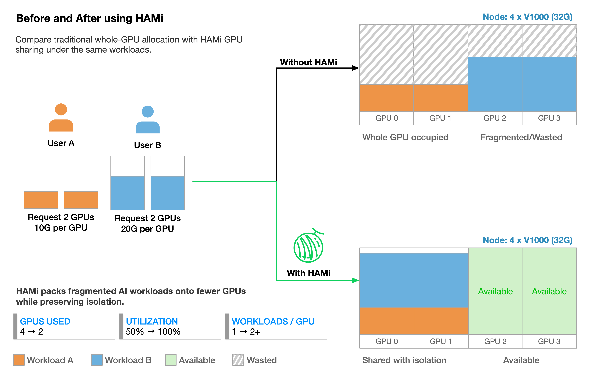
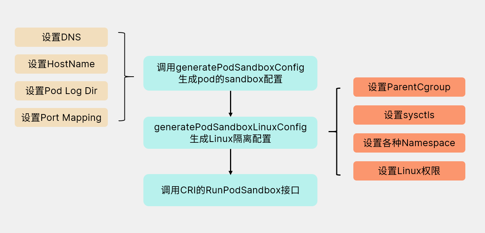

Graph View
AI Infrastructure
Accelerators
HAMi-core：容器内 CUDA 劫持与资源隔离
HAMi-core（仓库名
HAMi-core，产物libvgpu.so）是 HAMi 的容器内运行时。它不改libcudart.so、不改libcuda.so、不改驱动，而是在进程的符号解析路径上做手脚，把 CUDA 调用接管到自己的包装函数里，从而落实显存配额和算力配额。对应 HAMi 侧的使用方式见 HAMi：Kubernetes 异构 AI 算力虚拟化与调度。
一、它怎么进入容器
device plugin 在 Allocate() 返回的 Mounts 里（pkg/device-plugin/nvidiadevice/nvinternal/plugin/server.go:1555）：
Mount{ContainerPath: "/usr/local/vgpu/libvgpu.so", HostPath: GetLibPath(), ReadOnly: true},
Mount{ContainerPath: "/etc/ld.so.preload", HostPath: hostHookPath + "/vgpu/ld.so.preload", ReadOnly: true},
ld.so.preload 文件只有一行：
/usr/local/vgpu/libvgpu.so
所以容器里每个动态链接的进程启动时，libvgpu.so 会先于 libcuda.so 被加载进全局符号作用域。
| 场景 | 注入方式 |
|---|---|
默认 hami-core 模式 | 挂载 libvgpu.so + /etc/ld.so.preload |
| 整卡分配 | device plugin 自动注入 CUDA_DISABLE_CONTROL=true，跳过 preload 挂载 |
| remote GPU（Lupine） | 改用 LD_PRELOAD 环境变量（pkg/device/remotegpu/device.go） |
| MIG / MPS 模式 | 不走 libvgpu，由 MIG/MPS 自身机制隔离 |
device plugin 还会注入配额与上下文：
| 环境变量 / 文件 | 作用 |
|---|---|
CUDA_DEVICE_MEMORY_LIMIT_<i> | 第 i 张卡的显存上限，如 3000m（支持 k/m/g 后缀） |
CUDA_DEVICE_SM_LIMIT | 算力上限百分比（0–100） |
CUDA_DEVICE_MEMORY_SHARED_CACHE | 每容器共享记账文件路径（如 /usr/local/vgpu/usage.cache） |
CUDA_DEVICE_MEMORY_LIMIT / CUDA_DEVICE_SM_LIMIT（无下标） | 兜底值，作用于所有卡 |
/overrideEnv（limit-delivery=file） | 等价的 KEY=VALUE 文件，进程启动时读取后 setenv |
CUDA_DISABLE_CONTROL | true 时整体关闭注入 |
CUDA_OVERSUBSCRIBE | true 时允许显存超卖 |
CUDA_TASK_PRIORITY | 任务优先级（0 高 / 1 低） |
LIBCUDA_LOG_LEVEL | libvgpu 日志级别 |
二、核心思路：不改库，改“符号解析”
libcudart 并不把 driver API 静态链接进来，而是运行期按名字取函数指针：老版本用 dlsym，CUDA 11.3+/12 用 cuGetProcAddress。HAMi-core 同时接管这两个入口，再加上 ELF 的全局符号抢占，形成三条路径：
flowchart TB
APP[应用 / Framework] --> RT[libcudart.so]
APP -->|直接链接 libcuda| DRV
RT -->|"① dlsym / cuGetProcAddress 查函数指针"| HOOK
RT -->|正常调用| DRV[libcuda.so]
HOOK[HAMi-core 包装函数] -->|查真实函数表| DRV
PRELOAD["ld.so.preload 全局符号抢占<br/>（导出同名 cu* 符号）"] --> APP
style HOOK fill:#e8f5e9
路径 A：ld.so.preload 全局符号抢占
libvgpu.so 导出了所有同名的 cuXxx 函数（例如 cuMemAlloc_v2）。ELF 全局符号查找顺序是「可执行文件 → preload 库 → 依赖库」，因此直接链接 libcuda 的程序，其 PLT 会绑定到包装函数而不是驱动函数。
细节：仓库的生产构建走
build.sh，固定CMAKE_BUILD_TYPE=Debug，不加-fvisibility=hidden，所以这些包装符号默认可见——全局抢占才成立。
路径 B：劫持 dlsym
libvgpu 的 dlsym 用汇编实现（src/dlsym_entry.S）。原因很关键：dlsym(RTLD_NEXT, ...) 的语义取决于调用者的返回地址，用 C 函数包装会破坏它。x86-64 版本的核心逻辑：
dlsym:
cmpq $-1, %rdi # handle == RTLD_NEXT ?
jne .Ldispatch
pushq %rdi; pushq %rsi # 保留原始参数
call libvgpu_get_real_dlsym
popq %rsi; popq %rdi
jmp *%rax # 尾跳，调用者返回地址仍在栈上
.Ldispatch:
jmp libvgpu_dlsym_dispatch
普通查询进入 libvgpu_dlsym_dispatch()（src/libvgpu.c:97）：
if (symbol[0]=='c' && symbol[1]=='u') { // 所有 cu* 符号
if (strcmp(symbol,"cuGetExportTable") != 0)
pthread_once(&pre_cuinit_flag, (void(*)(void))preInit);
void *f = real_dlsym(vgpulib, symbol); // 在 libvgpu 自身里找同名符号
if (f != NULL) return f; // 返回包装函数
}
vgpulib 是 dlopen("/usr/local/vgpu/libvgpu.so") 的句柄。谁查 cuMemAlloc_v2，就返回 libvgpu 自己的 cuMemAlloc_v2。RTLD_NEXT 查询被原样转发给 libc，语义不变。
路径 C：劫持 cuGetProcAddress
CUDA 11.3+/12 的 driver API 走 lazy 查表：cuGetProcAddress(symbol, &pfn, cudaVersion, flags)。只拦 dlsym 会漏掉主路径，所以 libvgpu 导出并实现了 cuGetProcAddress / cuGetProcAddress_v2（src/cuda/hook.c:361、:398）：
*pfn = find_symbols_in_table_by_cudaversion(symbol, cudaVersion); // 先给包装函数
if (strcmp(symbol, "cuGetProcAddress") == 0) { // 自己查自己
... *pfn = _cuGetProcAddress; // 返回 trampoline
}
if (*pfn == NULL) { // 不认识的符号
return CUDA_OVERRIDE_CALL(cuda_library_entry, cuGetProcAddress, symbol, pfn, ...);
}
- 查询
cuGetProcAddress本身时返回 trampoline，保证后续所有 lazy 查询仍被接管； - 查表按
_v3→_v2→ 原名逐级回退，兼容不同 CUDA 版本； - 不认识的符号回落到真实驱动。
真实函数表与初始化时序
所有包装函数最终要调用真正的驱动函数，这张表在 preInit() 中一次性建好（src/cuda/hook.c:250）：
table = dlopen("libcuda.so.1", RTLD_NOW | RTLD_NODELETE); // NODELETE 保证句柄一直有效
for (i = 0; i < CUDA_ENTRY_END; i++)
cuda_library_entry[i].fn_ptr = real_dlsym(table, cuda_library_entry[i].name);
找不到就回退 RTLD_NEXT，再找不到就用 prior_function() 去掉 _v2/降版本号继续找（兼容老驱动）。NVML 同理 dlopen("libnvidia-ml.so.1")。
初始化是懒加载的：
- 第一次
dlsym一个cu*符号 →preInit()：建表、注册pthread_atfork； - 第一次
cuInit()→preInit()+ 真实cuInit()+postInit()：初始化分配器、解析CUDA_VISIBLE_DEVICES映射、用 NVML 反查宿主 PID、启动算力 watcher； fork()后子进程重置 post-init 状态，但复用同一份共享内存记账区域。
三、显存隔离
配额来源
// multiprocess_memory_limit.c: get_limit_from_env / do_init_device_memory_limits
CUDA_DEVICE_MEMORY_LIMIT_<i> → 第 i 张卡的 limit[i]
CUDA_DEVICE_MEMORY_LIMIT → 所有卡的兜底
/overrideEnv → 进程启动时加载，setenv 后走同一套逻辑
解析支持 3000m、3g、1024m 等写法；0 表示不限制。
分配路径
CUresult cuMemAlloc_v2(CUdeviceptr* dptr, size_t bytesize) {
ENSURE_RUNNING(); // 初始化 + 等待调度状态
return allocate_raw(dptr, bytesize);
}
allocate_raw → add_chunk（src/allocator/allocator.c）：
if (reserve_device_memory(dev, size) != 0) // ① 锁内预占额度
return CUDA_ERROR_OUT_OF_MEMORY;
res = CUDA_OVERRIDE_CALL(cuda_library_entry, cuMemAlloc_v2, address, size); // ② 真实分配
if (res != CUDA_SUCCESS) { release_device_memory(dev, size); return res; }
LIST_ADD(device_overallocated, e); // ③ 记录 地址→大小→设备
reserve_device_memory 内部就是 oom_check_impl（allocator.c:37）：
size_t new_allocated = usage + addon;
if (new_allocated > limit) {
clear_proc_slot_nolock(1); // 先清理已退出进程占用的槽位
return CUDA_ERROR_OUT_OF_MEMORY;
}
释放路径 cuMemFree_v2 → free_raw → remove_chunk 反向扣减。除 cuMemAlloc_v2 外，cuMemAllocManaged、cuMemAllocPitch、cuMemCreate（VMM）、cuMemAllocAsync / cuMemAllocFromPoolAsync（cudaMallocAsync 池）、array/mipmap 等也都有对应记账，避免绕过。
多进程共享记账
一个容器里往往有多个进程（DataLoader worker、多进程推理、fork 出来的子进程），配额必须按容器而不是按进程算。做法是：
- 记账放在
mmap的共享内存文件里，路径来自CUDA_DEVICE_MEMORY_SHARED_CACHE（默认/usr/local/vgpu/usage.cache）；没有该变量时用POD_UID+CONTAINER_NAME拼出/usr/local/vgpu/containers/<pod>_<ctr>/usage.cache； - region 里每个进程一个 slot，每个 slot 按设备记录
total / context / module / data四类用量； - 读写用 seqlock（奇数表示写入中）做无锁一致性读，分配/释放前先用文件锁
lock_shrreg()串行化“检查+预占”； - 进程退出注册
atexit清理槽位；OOM 时如果发现死进程槽位，会先清理再重试； - CUDA context 创建时把
context_size（约 100 MiB 的估算值）计入用量，避免“空 context 不占显存”的漏洞（src/cuda/context.c）。
让框架“看到”配额
仅拒绝超额分配还不够：PyTorch 等框架启动时会查询显存总量来决定 caching allocator 池大小。所以这些查询被改写成虚拟视图：
// cuDeviceTotalMem_v2
*bytes = limit;
// cuMemGetInfo_v2
out_total = min(limit, drv_total);
out_free = limit - usage; // 已用部分对应用不可见
// nvmlDeviceGetMemoryInfo / _v2
used = usage;
total = min(limit, physical_total);
free = total - used;
这样容器内 nvidia-smi、pynvml、torch.cuda.mem_get_info() 看到的都是被切分后的小卡。设备数量/可见性则由容器运行时按 CUDA_VISIBLE_DEVICES 与挂载决定，libvgpu 只维护 cuda_to_nvml 的下标映射。
四、算力隔离
算力限制不是硬件分区，而是基于反馈的时间片调度：
// cuLaunchKernel / cuLaunchKernelEx / cuLaunchCooperativeKernel
ENSURE_RUNNING();
ensure_post_init();
pre_launch_kernel();
if (pidfound == 1)
rate_limiter(gridDimX*gridDimY*gridDimZ, blockDimX*blockDimY*blockDimZ);
// 然后才调真实 cuLaunchKernel
rate_limiter()（multiprocess_utilization_watcher.c:39）维护每卡的令牌桶 g_cur_cuda_cores：
kernel_size = grids; // 用 grid 乘积近似本次 kernel 的“算力量”
do {
before = g_cur_cuda_cores[dev];
if (before < 0) { nanosleep(&g_cycle /*10ms*/); goto CHECK; }
after = before - kernel_size;
} while (!CAS(&g_cur_cuda_cores[dev], before, after));
令牌为负时阻塞 kernel 下发，从而降低单位时间内的 kernel 吞吐。令牌总量由 watcher 线程（默认 120 ms 一轮）动态调整：
- 通过 NVML 读取本容器进程的真实 SM 利用率（需要先反查到宿主 PID）；
- 用比例反馈
delta()比较目标CUDA_DEVICE_SM_LIMIT与实测值，决定加/减令牌； - 写入共享变量，影响所有进程的下一次 kernel 启动。
相关开关：
CUDA_DEVICE_SM_LIMIT=100或未设置 → 不限速；CUDA_TASK_PRIORITY：v1.1 起的两级优先级（高优先级任务独享时不受限）；CUDA_OVERSUBSCRIBE=true：允许超卖；CUDA_DISABLE_CONTROL=true：整体关闭；- 反查宿主 PID 失败（
pidfound=0）时，算力限制自动降级，只保留显存限制。
五、失效场景（软隔离的代价）
| 场景 | 结果 |
|---|---|
| 静态链接 / musl（Alpine）/ 非 glibc | ld.so.preload 不生效，hook 失效 |
| setuid 程序 | 动态链接器忽略 preload |
DinD、直接 ioctl /dev/nvidia*、绕过 CUDA 库访问显存 | 记账与限制都拦不住 |
容器内 /etc/ld.so.preload 被覆盖 | 注入失效 |
CUDA_DISABLE_CONTROL=true | 主动关闭 |
| MIG / MPS 模式 | 不走 libvgpu |
| CUDA 版本 / 驱动不匹配 | 符号表缺失时回退失败，功能降级或报错 |
| 宿主 PID 反查失败 | 算力限制关闭，仅显存生效 |
| 多租户争用 | 显存是账本式限制、算力是反馈式限速，无法提供硬 SLA |
结论：hami-core 适合“提高利用率、做弹性共享”，不适合“合规硬隔离”——后者应该用 MIG。
六、源码导读
| 文件 | 内容 |
|---|---|
src/libvgpu.c | dlsym 分发、preInit/postInit、trampoline、NVML/CUDA hook 分派 |
src/dlsym_entry.S | x86-64 / aarch64 的 dlsym 汇编入口，处理 RTLD_NEXT |
src/cuda/hook.c | 真实函数表加载、cuGetProcAddress 劫持、符号版本回退 |
src/cuda/memory.c | 显存分配/释放、cuMemGetInfo、kernel 启动包装 |
src/cuda/context.c | context 生命周期与 context 大小记账 |
src/cuda/device.c | cuDeviceTotalMem 等设备查询改写 |
src/allocator/allocator.c | oom_check、预占/释放、分配列表、async/pool 记账 |
src/multiprocess/multiprocess_memory_limit.c | 配额解析、共享内存 region、进程 slot、seqlock |
src/multiprocess/multiprocess_utilization_watcher.c | 令牌桶、rate_limiter、利用率反馈闭环 |
src/nvml/hook.c / nvml_entry.c | NVML 包装与显存视图伪造 |
src/include/libcuda_hook.h | CUDA_OVERRIDE_CALL 宏与 hook 表结构 |
参考
- HAMi-core 仓库（本地
.repos/hami/libvgpu）· README - 官方文档：GPU 虚拟化原理
- 相关：HAMi 项目总览 · kube-scheduler 源码分析
HAMi：Kubernetes 异构 AI 算力虚拟化与调度
HAMi（Heterogeneous AI Computing Virtualization Middleware）是 CNCF 孵化项目，给 Kubernetes 加一层「GPU/NPU 切分 + 设备感知调度」：一张卡按显存 MiB 和算力百分比分给多个 Pod，应用不改代码、驱动不改，继续用标准
resources.limits。
项目档案
| 项 | 值 |
|---|---|
| 仓库 | https://github.com/Project-HAMi/HAMi |
| 前身 | k8s-vGPU-scheduler（2021 年） |
| 许可证 / 语言 | Apache-2.0 / Go（约 12.5 万行）+ C/CUDA（HAMi-core） |
| CNCF 阶段 | Sandbox（2024-08）→ Incubating（2026-07） |
| 最新 release | v2.10.0（2026-08-21）；master 已领先 tag 280 个提交 |
| 社区 | 约 5,000 stars / 875 forks（2026-10），2026 年 786 次提交 |
| 文档 | https://project-hami.io/docs/（中英日，版本化） |
| 支持的加速器 | NVIDIA、AMD、昇腾、寒武纪、海光、天数、昆仑芯、沐曦、摩尔线程、燧原、壁仞、AWS Neuron、VastAI、远程 GPU（Lupine） |
为什么需要它
把整张 GPU 分配给 Pod 会带来三个结构性问题：
- 碎片化：小模型/推理任务占满一整张卡，显存利用率长期低于 20%。
- 调度盲区：默认调度器只看到
nvidia.com/gpu: 1这个整数，不知道显存、算力、GPU 间拓扑，无法做设备级放置。 - 异构难统一：不同厂商的 device plugin 和资源名各不相同，平台团队要维护多套工作负载配置。
HAMi 的回答是：在 device plugin 层把设备「虚拟化」成可切分资源，在调度器扩展点做设备感知放置，在容器内用运行时 hook 落实显存/算力上限。

整体架构

上图来自 HAMi 官方仓库（Apache-2.0）。
flowchart LR
subgraph CP[控制面]
W[Mutating Webhook] --> S[Scheduler Extender]
S --> KS[kube-scheduler<br/>同 Pod 内的 sidecar]
S --> NODE[Node 注解<br/>设备注册信息]
end
subgraph DP[数据面]
DPg[Device Plugin] -->|Allocate: env + mounts| C[业务容器]
MON[vGPU Monitor] -->|Prometheus 指标| P[Prometheus]
C -->|libvgpu.so 劫持 CUDA| GPU[(物理 GPU)]
end
S -->|vgpu-devices-allocated| DPg
| 组件 | 位置 | 职责 |
|---|---|---|
| Scheduler Extender | cmd/scheduler、pkg/scheduler | /filter 选节点 + 设备、/bind 加锁分配；同时提供 webhook 与 /refit（NUMA refit） |
| kube-scheduler sidecar | chart scheduler.kubeScheduler | 标准调度器，配置为 HAMi extender 的调用方；默认开启，也可换成外部调度器 |
| Device Plugin | cmd/device-plugin/nvidia | 注册 vGPU 资源、写节点设备注解、Allocate() 注入 libvgpu.so 与 limits 环境变量 |
| vGPU Monitor | cmd/vGPUmonitor | 容器级显存/利用率采集，暴露 Prometheus 指标并做反馈 |
| Mutating Webhook | pkg/scheduler/webhook.go | 校验 Pod，改 schedulerName，拦截伪造分配注解、privileged + GPU 等危险组合 |
关键端口：extender 127.0.0.1:9444（仅同 Pod 的 kube-scheduler 调用）、HTTP/webhook 0.0.0.0:9443、scheduler metrics :9395、monitor metrics :9394。
一个值得注意的设计是：HAMi 的 /filter 不是纯过滤。它在 Filter 内部完成设备可用性判断（Fit）和节点/设备打分，直接挑出唯一最优节点并返回，相当于把选点决策提前到 Filter，而不是走 extender 的 prioritize 协议。这样做的代价是必须自己实现完整打分，好处是能把「设备级」信息纳入决策——标准调度器只认识整数卡数。
一次 GPU Pod 的完整链路
sequenceDiagram
participant U as 用户
participant API as kube-apiserver
participant WH as HAMi Webhook
participant KS as kube-scheduler
participant EXT as HAMi Extender
participant DP as Device Plugin
participant K as kubelet
participant C as 容器
U->>API: 创建 Pod（limits: nvidia.com/gpu/gpumem/...）
API->>WH: AdmissionReview
WH-->>API: 改写 schedulerName + 校验注解
API->>KS: 进入调度队列
KS->>EXT: /filter（候选节点列表）
EXT->>EXT: Fit 设备 + 打分 + 预占 + 写 vgpu-devices-to-allocate
EXT-->>KS: 只返回 1 个节点名
KS->>EXT: /bind
EXT->>EXT: 抢节点锁（hami.io/mutex.lock）
EXT->>API: Patch 注解 + Binding
API->>K: Pod 绑定到节点
K->>DP: Allocate()
DP-->>K: 环境变量 + libvgpu.so/ld.so.preload 挂载
K->>C: 启动容器
C->>C: 进程启动时加载 libvgpu，CUDA 调用被接管
分配结果写在 Pod 注解里（hami.io/vgpu-devices-allocated），device plugin 的 Allocate() 读注解、拼出 CUDA_DEVICE_MEMORY_LIMIT_<i>、CUDA_DEVICE_SM_LIMIT 等环境变量，并把 libvgpu.so 与 /etc/ld.so.preload 挂进容器。容器里 CUDA 进程一启动就被劫持，具体机制见 HAMi-core：容器内 CUDA 劫持与资源隔离。
资源模型
以 NVIDIA 为例：
resources:
limits:
nvidia.com/gpu: 1 # 申请 1 张物理卡
nvidia.com/gpumem: 3000 # 显存 3000 MiB
nvidia.com/gpucores: 30 # 算力 30%
# 或者 nvidia.com/gpumem-percentage: 25（与 gpumem 二选一）
| 资源/注解 | 含义 |
|---|---|
nvidia.com/gpu | 物理 GPU 张数；节点上注册的值是「每卡 deviceSplitCount（默认 10）个虚拟槽位」 |
nvidia.com/gpumem | 显存上限（MiB） |
nvidia.com/gpumem-percentage | 显存上限（物理卡百分比），与 gpumem 互斥 |
nvidia.com/gpucores | 算力上限（0–100） |
nvidia.com/use-gputype / nouse-gputype | 指定/排除 GPU 型号 |
nvidia.com/use-gpuuuid / nouse-gpuuuid | 指定/排除 GPU UUID |
nvidia.com/numa-bind | 要求 GPU 落在同一 NUMA 节点 |
其它厂商的资源名由 chart devices.<vendor> 配置（如 metax-tech.com/sgpu、huawei.com/Ascend910），语义各不相同：有的只支持整卡或固定切分（如壁仞 SVI 2/4 分区），有的支持显存+算力双配额。
调度策略
| 层级 | 策略 | 含义 |
|---|---|---|
| 节点 | binpack（默认） | 优先填满已用节点，减少碎片 |
| 节点 | spread | 优先空闲节点，降低争用 |
| 设备 | binpack / spread | 节点内挑卡方向 |
| 设备 | topology-aware | 按 GPU 间拓扑（NVLink/PCIe/NUMA）挑选组合 |
| 设备 | mutex | 只选完全空闲的 GPU（独占语义） |
| 设备 | numa | 以 NUMA 节点作为排序键，可与 binpack/spread 组合 |
- 集群默认值在 chart 的
scheduler.defaultSchedulerPolicy（默认节点 binpack、设备 spread）。 - Pod 用
hami.io/node-scheduler-policy、hami.io/gpu-scheduler-policy覆盖。 - v2.10 起 GPU 策略支持逗号分隔的策略链，如
mutex,binpack,numa：过滤型策略先筛，排序型策略按书写顺序逐级比较。 - 并发安全靠节点级分布式锁（
hami.io/mutex.lock注解 + 重试）；同一 PodGroup 的成员抢锁失败会重试（--node-lock-retry-timeout，默认 28s），避免 gang 调度被锁竞争打断。 - 设备打分权重可用
hami.io/device-scoring-weights按 Pod 调整。
设备抽象与异构后端
所有厂商实现同一个接口（pkg/device/devices.go）：
type Devices interface {
CommonWord() string
MutateAdmission(ctr *corev1.Container, pod *corev1.Pod) (bool, error)
GenerateResourceRequests(ctr *corev1.Container) (ContainerDeviceRequest, error)
Fit(devices []*DeviceUsage, request ContainerDeviceRequest, pod *corev1.Pod,
nodeInfo *NodeInfo, allocated *PodDevices) (bool, map[string]ContainerDevices, string)
ScoreNode(node *corev1.Node, podDevices PodSingleDevice,
previous []*DeviceUsage, policy string) float32
AddResourceUsage(pod *corev1.Pod, n *DeviceUsage, ctr *ContainerDevice) error
PatchAnnotations(pod *corev1.Pod, annoinput *map[string]string, pd PodDevices) map[string]string
GetNodeDevices(n corev1.Node) ([]*DeviceInfo, error)
// ...
}
调度器启动时由 pkg/scheduler/config 把各后端注册进全局 device.DevicesMap。NVIDIA 节点有四种运行模式：
| 模式 | 隔离方式 | 特点 |
|---|---|---|
hami-core（默认） | 容器内 libvgpu.so 劫持 CUDA | 任意 NVIDIA 卡，MiB/1% 粒度，软隔离 |
mig | NVIDIA MIG 实例 | 硬件隔离；v2.10 起支持 Flexible MIG，按需建删、免 drain |
mps | CUDA MPS | 并发执行，按进程隔离算力 |
remote | Lupine 远程 GPU | 本节点只作 GPU 服务端，跨节点分配 |
部署与运维
前置条件（NVIDIA 路径）：驱动 ≥ 440、NVIDIA Container Toolkit、containerd/Docker/CRI-O 默认 runtime、Kubernetes ≥ 1.23、glibc ≥ 2.17、kernel ≥ 3.10。
kubectl label nodes <node> gpu=on
helm repo add hami-charts https://project-hami.github.io/HAMi/
helm install hami hami-charts/hami -n kube-system
kubectl apply -f examples/nvidia/default_use.yaml
运维要点：
- chart 结构：scheduler Deployment（含 kube-scheduler sidecar）、device plugin DaemonSet（含 monitor 容器）、webhook 证书 patch Job、RBAC、ServiceMonitor（可选）；厂商配置集中在
devices.<vendor>。 - 高可用：
scheduler.leaderElect=true+replicas>1，自动创建 PDB。 - 与 GPU Operator 共存：必须设
devicePlugin.enabled=false，否则nvidia.com/gpu重复注册；节点上只能有一个 GPU 管理插件。 - OpenShift / SELinux：
platform.openshift=true、selinux.enabled=true处理 relabel。 - 可观测性：scheduler 指标在
:9395，monitor 在:9394，均带 Prometheus 格式；官方有 Grafana dashboard 与 HAMi-WebUI。 - 升级注意：DRA 已拆到独立的 HAMi-DRA chart；AMD 走独立的
amd-device-plugin。
生态集成
| 项目 | 集成方式 |
|---|---|
| vLLM | 以显存上限运行推理，多个模型共享同一张卡（见 vLLM Production Stack 实战） |
| Volcano | gang 调度 + 队列/多级优先级；Volcano 也有自己的 vGPU device plugin，二者择一 |
| Kueue | 作业级准入与配额；通过 ResourceTransformation 把 HAMi 资源暴露给 Kueue（见 Kueue） |
| Prometheus / Grafana | 容器级显存与算力指标、调度器分配指标 |
| NVIDIA GPU Operator | 驱动/Toolkit 由 Operator 管，调度与切分由 HAMi 管 |
| HAMi-DRA | 基于 Kubernetes DRA 的过渡实现，独立 chart 发布 |
| KAI Scheduler | 由 KAI 决策、HAMi-core 执行隔离（KAI Resource Isolator） |
与同类方案对比
| 方案 | 隔离强度 | 切分粒度 | 硬件要求 | 调度感知 | 多厂商 |
|---|---|---|---|---|---|
| HAMi（hami-core） | 软（API 拦截 + 配额） | MiB / 1% | 任意 NVIDIA（驱动 ≥440） | 设备级 | ✅ 12+ |
| NVIDIA MIG | 硬（硬件分区） | 固定 profile | Ampere+（A100/H100 等） | MIG 拓扑 | ❌ |
| NVIDIA MPS | 软（SM 分区，显存共享） | 算力配额 | Volta+ | 部分 | ❌ |
| time-slicing | 无显存隔离 | 时间片 | 任意 | 无 | ❌ |
| GPU Operator | 不涉及切分 | — | — | 无 | ❌ |
| 阿里 cGPU | 软 | 显存/算力 | 阿里云栈 | 部分 | ❌ |
选择建议：要硬隔离/SLA 合规选 MIG；要通用卡上的弹性共享与统一异构调度选 HAMi。两者也能在同一集群按节点混用（operatingmode 按节点配置）。
已知限制与风险
- 软隔离：隔离建立在「进程通过 CUDA 库调用驱动」这一假设上，绕过库的路径（DinD、直接 ioctl、静态链接、musl）都会失效；多租户噪声只能 best-effort，不能替代 MIG。
- 平台限制：仅 Linux（glibc ≥ 2.17）；同一节点只能有一个 GPU 管理插件；容器内已有
/etc/ld.so.preload时可能冲突。 - 版本耦合：依赖 CUDA 符号版本（
_v2/_v3）与驱动行为，CUDA 大版本升级需要回归；MIG/MPS 模式与 hami-core 行为差异大。 - 账本误差：显存限制按申请量记账，context、碎片、对齐需要补偿参数（
CONTEXT_SIZE、memoryFactor），实际占用可能略超配额。 - 算力限制依赖宿主 PID：反查失败时降级为只限显存（日志会出现
SET_TASK_PID FAILED）。
源码导读
| 路径 | 内容 |
|---|---|
cmd/scheduler/main.go | extender 入口、端口与 flag、leader election |
pkg/scheduler/scheduler.go | Filter/Bind、节点锁、PodManager、配额与指标 |
pkg/scheduler/webhook.go | admission 校验与改写 |
pkg/scheduler/policy/ | 节点/设备打分与策略链 |
pkg/device/devices.go | Devices 接口、设备模型、序列化 |
pkg/device/nvidia/ | NVIDIA 后端（含 MIG、NUMA、拓扑） |
cmd/device-plugin/nvidia/ | device plugin 注册与 Allocate |
cmd/vGPUmonitor/ | 指标采集与 limits 反馈 |
charts/hami/ | Helm chart（values 里能看到全部可配项） |
libvgpu/（子模块） | HAMi-core：CUDA hook 实现 |
参考
- HAMi 仓库 · HAMi-core
- 官方文档 · v2.10.0 发布说明
- CNCF 晋升公告
- 相关：kube-scheduler 的 Scheduler Extender、Kueue、HAMi-core
- 延伸：单卡切分之外的跨节点方案见 GPU 算力/显存池化：从 CUDA 单卡视角到跨节点透明调度
Agents
Agent Sandbox: K8s 原生沙箱执行环境
What is Agent Sandbox
Agent Sandbox 是一个 Kubernetes SIG Apps 子项目，提供了一套 CRD 和 controller 来管理隔离的、有状态的、单例工作负载。核心场景是 AI Agent runtime：在强隔离环境中执行 LLM 生成的不受信任代码。
两层架构：
- Core (
agents.x-k8s.io/v1beta1)：SandboxCRD —— 声明式定义单 Pod 沙箱，含稳定 hostname、持久存储、pause/resume、定时过期 - Extensions (
extensions.agents.x-k8s.io/v1beta1)：SandboxTemplate（可复用蓝图）、SandboxWarmPool（预热池）、SandboxClaim（用户侧抽象）
配套的 sandbox-router（Go 反向代理）通过 X-Sandbox-* HTTP header 将客户端请求路由到沙箱 Pod。
- Go 1.26，Apache 2.0
架构
flowchart TB
subgraph User["User"]
CLI["kubectl"]
SDK["Go/Python SDK"]
end
subgraph Controllers["Controller Manager"]
SBR["Sandbox Reconciler"]
SWPR["WarmPool Reconciler"]
SBCR["Claim Reconciler"]
Q["In-Memory Queue\n(FIFO + NodeSpread)"]
end
subgraph Runtime["Data Plane"]
ROUTER["Sandbox Router\n(Reverse Proxy)"]
POD["Sandbox Pod\n(gVisor/Kata/runc)"]
PVC[("PVC")]
NP["NetworkPolicy\n(per Template)"]
end
CLI -->|creates| SBCR
SWPR -->|pre-warms N| SBR
SBR -->|creates| POD
SBR -->|creates| PVC
SBCR -->|adopts from| Q
Q -->|tracks warm| POD
ROUTER -->|X-Sandbox-ID routing| POD
NP -->|isolates| POD
资源模型
| CRD | 级别 | 功能 |
|---|---|---|
| SandboxTemplate | 模板 | 定义 Pod 蓝图（镜像、资源、runtimeClass）+ NetworkPolicy |
| SandboxWarmPool | 池（1:N） | 维护 N 个预创建、预调度的 Sandbox，低延迟领取 |
| Sandbox | 单例（1:1） | 对应一个 Pod + PVC + Headless Service |
| SandboxClaim | 用户请求 | 从 Warm Pool 领取 Sandbox，或冷创建 |
资源关系：
SandboxWarmPool (spec.replicas=N)
├── Sandbox-A ── Pod-A + PVC-A + SVC-A
├── Sandbox-B ── Pod-B + PVC-B + SVC-B
└── Sandbox-N ── Pod-N + PVC-N + SVC-N
SandboxClaim ──领取──→ Sandbox-A (OwnerRef 改为 Claim, 从 Pool 移除)
Claim 删除 → GC 级联删 Sandbox → Pod/PVC/SVC
SandboxClaim 生命周期
stateDiagram-v2
[*] --> PreWarm: WarmPool creates N Sandboxes
PreWarm --> Queued: Pod Ready, enqueued
Queued --> Adopted: Claim pops from queue
Queued --> Stale: Template hash changed
Stale --> [*]: Deleted by WarmPool controller
Adopted --> Running: Claim active
Adopted --> ColdStart: Queue empty, created from template
ColdStart --> Running: Claim active
Running --> Deleted: Expired (ShutdownPolicy=Delete)
Running --> SandboxDeleted: Expired (ShutdownPolicy=Retain)
Running --> Deleted: Claim manually deleted
当 Claim 被删除时，controller 不做任何清理——直接 return nil。Kubernetes GC 沿 OwnerRef 链条级联删除：Claim → Sandbox → Pod/PVC/SVC。
Sandbox Pod 不会回到预热池。 WarmPool controller 独立监测 current_replicas < spec.replicas，创建新的 Sandbox 补充。这是单向流动：
Pool → (adopt) → Claim → (expire/delete) → GC destroys
↑ |
└───── Pool controller creates replacement ────┘
ShutdownPolicy
| 策略 | 行为 |
|---|---|
Delete / DeleteForeground | Claim 过期 → 删除 Claim → GC 级联 |
Retain（默认） | Claim 过期 → 仅删除 Sandbox，Claim 保留可供检查 |
Warm Pool 的工作原理
Warm Pool 是该项目的核心性能优化。它维护一个预创建、预调度的 Sandbox 池子，消除 Pod 调度、镜像拉取、PVC 绑定的延迟。
Controller 协调流程：
- WarmPool controller 监听到
spec.replicas=N - 创建 N 个 Sandbox（所有权归 Warm Pool）
- 每个 Sandbox 创建对应的 Pod
- Pod Ready 后，key 加入内存 FIFO 队列
- Claim 到达时，从队列中领取（NodeSpread 策略——选择该节点剩余最多的）
- 池子中移除已领取的 Sandbox，创建新的补充
领取过程（adoptSandboxFromCandidates）：
- 清空原 OwnerReferences
- 设置
controllerRef指向 Claim - 移除 Warm Pool 的 label
- 注入 Claim 指定的 env/volume
Claim 删除时：
- Controller 返回 nil（不清理）
- K8s GC 按 OwnerRef 级联删除
- Sandbox 不回池子
两种更新策略：
| 策略 | 行为 |
|---|---|
Recreate | 删除所有预热 Sandbox，重新创建 |
OnReplenish | 自然消耗后逐步替换为新模板 |
安全隔离机制
Agent Sandbox 实现了纵深防御，多层防护组合保障安全：
1. 运行时隔离
| Runtime | 隔离级别 | 机制 |
|---|---|---|
| gVisor | 内核级 | 用户态内核拦截 syscall，每个沙箱独立内核边界 |
| Kata Containers | 硬件虚拟化 | 每个 Pod 运行在轻量 VM 内（Firecracker/QEMU/Hyper-V） |
| runc | 容器级 | 仅 Linux namespace + cgroup，隔离最弱 |
三种隔离边界（共享内核 / 用户态内核 / 硬件虚拟化）的代码级原理、启动与内存开销、以及 gVisor vs Kata 的选型，见 沙箱与虚拟化技术全景。
Pod 级安全上下文：runAsNonRoot, allowPrivilegeEscalation: false, capabilities.drop: ["ALL"], seccompProfile: RuntimeDefault
2. ServiceAccount 隔离
默认 automountServiceAccountToken = false。即使沙箱被攻破，也无法通过 SA token 访问 K8s API Server，阻止集群级提权。
3. 网络隔离（NetworkPolicy）
SandboxTemplate controller 为每个 Template 创建共享 NetworkPolicy：
- Ingress：仅 sandbox-router 可以连接沙箱
- Egress（Secure by Default）：
- 允许公网（
0.0.0.0/0） - 阻止内网（
10.0.0.0/8,172.16.0.0/12,192.168.0.0/16） - 阻止 link-local（
169.254.0.0/16，防止访问云 metadata server） - 阻止沙箱之间互访
- 允许公网（
效果：沙箱只能通过 router 被访问，不能访问集群内部服务、metadata server、或彼此。
4. 自动过期
Sandbox 有 TTL。超时后按 ShutdownPolicy 自动回收，防止长期存在的沙箱积累攻击面。
5. 资源限制
Template 中可配置 CPU/memory limits，通过 cgroup 强制实施，防止单沙箱消耗过量节点资源。
6. 持久存储
每个 Sandbox 绑定独立 PVC。Sandbox 销毁时 PVC 被级联删除，数据不残留。
Sandbox Router
它是什么
Sandbox Router 是一个独立的 Go 反向代理（sandbox-router/ 目录），不运行在 controller manager 中，而是单独部署为一个 Deployment + Service。它的作用是在客户端和沙箱 Pod 之间建立安全的请求路由。
为什么需要它？ Warm Pool 中的沙箱 Pod 是不可区分的——它们有相同的镜像、相同的配置。用户不能直接知道哪个 Pod 属于他。Router 通过 HTTP header 携带的路由信息，将请求精准代理到正确的 Pod。
路由解析优先级
Router 解析目标沙箱时有三级优先级：
X-Sandbox-Pod-IP（显式覆盖）— 客户端直接指定 Pod IP，经过 SSRF 校验后直连。最低延迟，但需要调用方知道 IP。- Pod IP Cache（
X-Sandbox-UID）— 通过 UID 查缓存中的 Pod IP。这是 KEP fast path，避免 DNS 查询延迟。 - DNS 解析（fallback）— 构造 DNS 名
http://<ID>.<NS>.svc.<cluster>:<port>通过集群 DNS 解析。最通用但最慢。
Pod IP Cache（KEP Fast Path）
Router 维护一个本地 Pod IP 缓存，通过 K8s informer 监听 Pod 事件来实时更新：
- 写入：当 Pod 变为 Ready 且有 Sandbox UID label 时，缓存 Pod IP
- 查找：
X-Sandbox-UID→Pod IP，O(1) 查询 - 失效：Pod 被删除或 IP 变化时，从缓存中移除
- Dial 失败时主动失效：如果缓存命中的 IP 无法连接，缓存条目被主动清除并回退到 DNS
这使得路由延迟接近 IP 直连，同时保持 DNS 的容错性。
请求处理流程
sequenceDiagram
participant U as Client
participant R as Sandbox Router
participant A as Authorizer (TokenReview)
participant Cache as Pod IP Cache
participant DNS as Cluster DNS
participant P as Sandbox Pod
U->>R: GET /api/run<br/>X-Sandbox-ID: my-sandbox<br/>X-Sandbox-Port: 8888<br/>Authorization: Bearer TOKEN
R->>R: Parse headers<br/>Validate DNS-1123 & port range<br/>Reject loopback/link-local IPs
R->>A: TokenReview(TOKEN)
A-->>R: allow / deny
alt X-Sandbox-Pod-IP is set
R->>R: Validate IP (SSRF check)
R->>P: Dial IP:port directly
else Cache enabled & X-Sandbox-UID present
R->>Cache: Lookup by UID
alt Cache Hit
Cache-->>R: Live Pod IP
R->>P: Dial cached Pod IP:port
else Cache Miss
R->>DNS: Resolve my-sandbox.default.svc.cluster.local
DNS-->>R: Pod IP
R->>P: Dial resolved IP:port
end
else DNS-only fallback
R->>DNS: Resolve via cluster DNS
DNS-->>R: Pod IP
R->>P: Dial IP:port
end
Note over R,P: Dial failure → retry with exponential backoff<br/>Cache-sourced failure → invalidate cache entry
R->>R: Strip Authorization header<br/>Strip X-Forwarded-For, set real client IP<br/>Set X-Forwarded-{Host,Proto,For}
R->>P: Reverse-proxied HTTP request
P-->>R: HTTP response
R-->>U: Forwarded response
认证与授权
Router 的认证通过可插拔的 Authorizer 接口实现，启动时选择实现，每个请求调用一次。
两种实现：
| 实现 | 行为 | 适用场景 |
|---|---|---|
| AllowAll | 所有请求放行（默认） | 开发环境、Router 前置已有 Envoy/Gateway 处理认证 |
| TokenReviewAuthorizer | 通过 K8s TokenReview API 验证 Bearer token | 生产环境，K8s 原生认证 |
TokenReview 认证流程
Client ──BearerToken──→ Router ──SHA-256(token)──→ LRU Cache (30s TTL, 2048 entries)
│ │
│ cache miss │ cache hit
↓ ↓
K8s TokenReview API return cached decision
│
┌─────────┴─────────┐
↓ ↓
authenticated unauthenticated
↓ ↓
200 allow 401 deny
缓存安全：缓存存储 SHA-256(token) 哈希而非原始 token——即使内存 dump 泄露缓存也无法获取 session。
认证步骤：
- 从
Authorization: Bearer TOKEN头提取 token - SHA-256(token) 作为 LRU 缓存 key
- Cache hit → 直接返回决策，零 API 调用
- Cache miss → 调 K8s TokenReview API：
authenticated=false→ErrUnauthenticated(401)- API 失败 → 缓存
1/3 TTL（最少 1s），防止打爆 apiserver authenticated=true→ 缓存决策 30s TTL
- 认证成功 → 请求放行
身份来源：
| 来源 | 提取方式 | 优先级 |
|---|---|---|
| mTLS 客户端证书 | TLS 握手提取 | SPIFFE URI → DNS SAN → Subject CN |
| Bearer Token | Authorization header | TokenReview 验证 |
RequireToken 模式：false（默认，无 token 也放行，过渡期） / true（无 token → 401）
当前限制（v1）：只做认证不做授权——任何已认证用户可访问任意沙箱。per-sandbox owner identity 授权由后续 KEP 引入。
安全头处理
Router 在转发前对关键 header 做安全处理：
| Header | 处理方式 | 原因 |
|---|---|---|
| Authorization | 入站消费后剥离，不转发 | 防止沙箱获取调用者 K8s token 冒充访问 API Server |
| X-Forwarded-For | 入站时剥离，出站时设为实际客户端 IP | 防止客户端伪造 IP |
| X-Forwarded-Host/Proto | 基于实际请求设置 | 沙箱可正确判断原始请求的协议和主机 |
| Origin（WebSocket） | 剥离 | 防止 CSRF origin 不匹配 |
核心原则：Router 已验证的身份信息不传递给沙箱。沙箱只知道“有人请求了它“，不知道“是谁“。
参考
Agent Substrate: 高密度 Agent 沙箱 Runtime
页面基线（2026-11-17 追更）：本地仓库
/home/lubingtan/go/src/github.com/agent-substrate/substrate已追到main@d283af4eb（2026-11-17，1718 commits），v1.0.0 “Fully armed and operational” 已于 2026-11-05 发布。旧页面的内容基线约为 2026-07-31（cbdeb7dbe，425 commits），距今已有 1293 个提交。旧页面中的 Redis、ateom、单 actor/worker、Pause、FULL/DATA 快照等描述已被 1.0 架构淘汰，本页按 HEAD 重写，并在文末附「与 2026-07 版页面的差异」对照表。
TL;DR：这次追更发现了什么
- GA 了：v0.1.0（09-09）→ v0.6.0（10-22）约每周一个 minor 之后，v1.0.0（11-05）发布；README 从 “VERY early development / 不做兼容承诺” 改为 “committed to compatibility”，并给出 API/CLI/配置/数据/回滚四类兼容规则。
- 状态存储换底座：ValKey/Redis 被 PostgreSQL 彻底替换（
atepg，#640/#940），授权模型内嵌 OpenFGA；Redis 分布式锁改为进程内 actor 锁 + PG 租约/outbox。 - 组件改名 + 扩张：
ateom-gvisor/microvm→ateworker-gvisor/microvm；新增ate-idp-server、ate-setup、objectstore-plugin、credential-provider、envoy-dataplane；cmd/从 9 个目录变为 14 个。 - 一个 worker 跑多个 actor：Worker 从“同时只承载 1 个 actor“变为可承载多个（受容量与
--max-actors默认 1000 限制）；Actor 开始声明 CPU/内存 limits，调度器按容量记账。 - 快照模型重做：FULL/DATA 作用域 →
VOLUMES < ROOTFS < MEMORY三级 fidelity；suspend 默认异步（先写节点本地快照、后台上传）；新增RevertActor、Tag（不可变快照别名/保留）、节点本地快照缓存。 - 安全从零补到 zero-trust：per-actor 1h SPIFFE 证书 + actor JWT（OIDC IDP）、出口网关
atenet-egress+ 凭证注入（secret 不进 sandbox）、EgressPolicy 默认拒绝、OpenFGA ReBAC、ate-system 默认拒绝 NetworkPolicy、worker 权限收紧（gVisor 9 caps / microVM 11 caps，均privileged:false）。 - 入口路由换了：不再用 DNS/Host 选 actor，改为
ate-target-actor: <atespace>/<actor>header + mTLS CONNECT 到 worker 内atunnel（默认 8443）；atenet dns删除，改为每 sandbox 一个 DNS relay。 - 安装/CLI/可观测性成熟：
hack/install-ate*.sh→go run ./cmd/ate-setup deploy ...；kubectl ate proxy actor；Hugo 文档站 ate.dev；OTel Weaver 指标注册表 + 首份 SLO/告警规范。 - 生态：2026-11 捐赠 CNCF Sandbox；kagent 1.0 起每个 agent 跑在 Substrate 上；README 主演示 8 个 Pod 承载 ~250 个有状态 actor（10x–30x oversubscription）。
- 指标双口径：架构文档的 north star 仍是 100ms p95 / 10 亿 actor / 1000 wakeups/s（目标），对外 GA 口径是 resume < 500ms、> 500 activations/s（承诺/演示口径），仓库内没有 p95 实测数字。
What is Agent Substrate
Agent Substrate 是 Google 发起、2026-11 已捐赠 CNCF（Sandbox）的高密度 Agent 沙箱运行时。1.0 的对外定位是 “zero-trust sandboxing for millions of agents on Kubernetes”：在标准 K8s 之上，把大量有状态 actor（agent 应用实例）多路复用到少量预热的 worker Pod，空闲 agent 被 checkpoint 出内存、请求到达时快速 restore 回来。
核心叙事没变：agent 大部分时间在等模型、等工具、等输入；把空闲 actor 快照到对象存储并释放 worker，用时间维度换密度。变的是 1.0 补齐了 v0.0.0 时仅有“愿景“的安全、身份、网络、存储和运维层：
- 始终沙箱化：每个 actor 跑在独立 gVisor（
runsc）或 Cloud Hypervisor microVM 里，纯 Linux 容器不被支持 - per-actor 身份：默认签发短生命周期 SPIFFE X.509；出口网关可按策略铸造 per-actor JWT，均可与外部身份系统联邦
- sandbox 内零凭证：actor 不持有 API key、云 token 或身份证书，出站凭证由
atenet-egress在沙箱外注入 - 默认拒绝网络：入站只走
atenet-router，横向与出站受 egress 策略约束 - 可插拔策略边界：egress 网关是可替换的 PEP（策略执行点），可接自研授权/DLP/prompt 注入扫描
规模指标（两套口径，注意区分）：
| 口径 | 内容 |
|---|---|
内部 north star（docs/concepts/architecture.md） | 激活延迟 100ms p95；单集群 10 亿 actor；1000 wakeups/s（均为目标，非实测） |
| 对外 GA 口径（README / overview） | resume < 500ms；> 500 activations/s；10x+ 密度；演示 8 Pod / ~250 actor（10x–30x oversubscription） |
项目元数据：
- Go 1.27.0（
toolchain go1.27.4），module 改为go.ate.dev/substrate（vanity import），Apache 2.0 - 2026-11-17
main共 1718 commits；v1.0.0 之后 main 仍有后续提交（本页按 HEAD 描述） - 沙箱后端：gVisor（默认）+ Kata Containers on Cloud Hypervisor microVM
- 文档站：ate.dev（Hugo docsite，
docs/与site/同仓）
版本演进（2026-07 → 2026-11）
| Tag | 日期 | 备注 |
|---|---|---|
| v0.0.0 | 2026-05-19 | 初始开源快照，旧 wiki 页面的研究对象 |
| v0.1.0 | 2026-09-09 | 第一个 minor；此时 Postgres、atunnel、多 actor worker API 已合入 |
| v0.2.0 | 2026-09-25 | |
| v0.3.0 | 2026-09-30 | |
| v0.4.0 | 2026-10-07 | |
| v0.5.0 | 2026-10-14 | |
| v0.6.0 | 2026-10-22 | 1.0 前最后一版；ateom → ateworker、vanity import 均在此前后落地 |
| v1.0.0 | 2026-11-05 | “Fully armed and operational”；GA + 兼容性承诺；另有 v1.0.0-rc.1/2/3 |
阶段特征：
- 2026-07~08（基建补齐）：Postgres 替代 Redis（
#640/#940）、atunnel引入（7-27）、egress 网关与凭证注入（9 月中）、actor 身份 SPIFFE/JWT（8 月）、多 actor worker API（9-03） - 2026-09（0.1~0.2）：多 actor worker 实现落地（
#1836）、API 风格统一起步、OpenFGA 逐 RPC 授权 - 2026-10（0.3~0.6）：
ateom → ateworker改名、Go vanity import、sandbox asset cache、objectstore-plugin、Tag/Revert/异步 suspend、Hugo 文档站、SLO/OTel 指标 - 2026-11（1.0）：GA、version-skew/升级策略、DCO 取代 Google CLA、CNCF 捐赠、Egress 凭证注入转正
状态模型（v1.0 版：三层）
旧页面的“双层模型（CRD + Redis）“已过时。1.0 是 K8s CRD（低频基础设施）+ 控制面 PostgreSQL（高频实例状态，含 OpenFGA 授权数据）+ 对象存储（快照） 三层：
| 层 | 存储 | 资源 | 更新频率 |
|---|---|---|---|
| K8s 基础设施 | K8s API Server / etcd | WorkerPool、SandboxConfig、CSIDriverConfig（3 个 CRD） | 低频（infra 变更） |
| 控制面实例状态 | PostgreSQL（atepg，owner/read-write 双角色，goose 迁移） | Atespace、ActorTemplate、Actor、Worker、ActorAssignment、Tag、EgressPolicy、AccessPolicy；OpenFGA 关系元组同库 | 高频（数千次/秒） |
| 快照 | GCS / S3（经 objectstore-plugin sidecar） | Golden / Last / Tag 快照 | 每次 suspend/restore |
为什么换 Postgres：etcd 不适合百万级离散资源与高频写；Postgres 提供事务、租约（lease）、outbox 和成熟的运维（Cloud SQL/BYO DB）。Redis 时代的 per-actor 分布式锁改为“进程内 actorlock + PG 租约“，worker 舰队镜像仍由 ateapi 内存持有，但改为 PG watch 轮询同步。
核心概念
| 概念 | 说明 |
|---|---|
| Actor | agent 实例（派生自 ActorTemplate），地址 (atespace, name)。可 suspend/resume，在 worker 间迁移 |
| Atespace | Actor 的隔离边界（类似 namespace，但全局作用域，非 K8s namespace）。ActorTemplate/Actor/Tag 都归属 atespace |
| Worker | 一个 worker Pod 的控制面记录。状态 ACTIVE / UNAVAILABLE / DRAINING；可同时承载多个 actor（ActorAssignment 子资源，受容量与 actor 上限约束） |
| WorkerPool | CRD——声明预热算力；spec.template.resources.limits 定义每个 worker 的容量，由 atecontroller reconcile 成 Deployment |
| SandboxConfig | 集群级 CRD——按 sandbox class 固定沙箱二进制/资产（runsc、microVM kernel/firmware 等）；沙箱二进制不再烘进 worker 镜像 |
| ActorTemplate | actor 的不变定义（镜像、资源、env、快照配置）。已是 ate API 资源，不再是 K8s CRD，存控制面 Postgres；创建时默认生成 Golden Snapshot |
| Golden Snapshot | ActorTemplate 创建时一次性产生的初始 checkpoint（version 0）；可配置 mode=DISABLED 关闭 |
| Last Snapshot | 每个 actor 最近一次 suspend 产生的快照，下次 resume 使用 |
| Tag | atespace 级、不可变、可跨 atespace 发布的快照别名/保留（`TagScope=ATESPACE |
| Suspend | 休眠 actor：checkpoint → 本地快照 → （默认异步）上传对象存储 → 释放 worker；支持 `mode=SYNCHRONOUS |
| Resume | 激活 actor：从本地或对象存储快照恢复到可用 worker，非冷启动 |
| Revert | 把 RUNNING/CRASHED（或带本地快照）的 actor 回退到最近一次 durable 快照并置为 SUSPENDED |
| EgressPolicy | Actor 的子资源（每 actor 一个 default，非 K8s CRD）：出站 allowlist + 凭证注入效果 |
| AccessPolicy | Global / atespace 级单例授权策略（OpenFGA ReBAC） |
已移除：旧页面的 Pause（快照留节点本地）独立操作与
PAUSING/PAUSED状态。PauseActorRPC 已删除（#2813），语义由异步 suspend + 节点本地快照（locality）承接。
架构
flowchart TB
subgraph CP["Control Plane (ate-system)"]
API["ate-api-server (ateapi)\ngRPC · scheduler · workflow engine"]
PG[("PostgreSQL\n实例状态 + OpenFGA")]
IDP["ate-idp-server\nOIDC discovery / JWKS"]
PCC["podcertcontroller\npod/服务/DB 三类证书 signer"]
end
subgraph K8S["Kubernetes"]
CRDS["WorkerPool / SandboxConfig\n/ CSIDriverConfig"]
CTRL["atecontroller"]
POOL["WorkerPool → Deployment"]
end
subgraph NODE["Node"]
ATELET["atelet (DaemonSet)\nasset cache · snapshot mover · CSI"]
subgraph WPOD["Worker Pod"]
AW["ateworker-gvisor | ateworker-microvm\n+ atunnel (ingress/egress/dns)"]
SB["sandbox: runsc / Kata+CH microVM"]
end
OSPN["objectstore-plugin\n(node mode)"]
end
subgraph NET["atenet"]
ROUTER["atenet-router\nEnvoy + ext_proc"]
EGRESS["atenet-egress\nPEP + credential injection"]
end
OSPC["objectstore-plugin (control mode)"]
OBJ[("GCS / S3\nsnapshots")]
CPROV["credential-provider\n(kubernetes-secrets)"]
CLIENT["kagent / SDK / kubectl-ate proxy"]
CLIENT -->|"ate-target-actor: ns/actor"| ROUTER
ROUTER -->|ResumeActor| API
API -->|Restore/Suspend| ATELET
ATELET -->|gRPC| AW
AW --> SB
API <--> PG
API -.->|pod 证书| PCC
IDP -.->|JWKS| EGRESS
AW -->|出站 CONNECT| EGRESS
EGRESS -->|取 secret| CPROV
ATELET --- OSPN --- OBJ
API --- OSPC --- OBJ
CRDS --> CTRL --> POOL
POOL --> ATELET
API 规模：proto 移到 api/ateapi/v1/ateapi.proto（package substrate.ateapi.v1）。控制面 Control 服务 42 个 RPC（旧版 14 个），另有 WorkerService 8 个 RPC（worker 注册/心跳/epoch/上报/证书铸造）。风格统一为 ResourceMetadata 固定 field 1、ListOptions{page_size,page_token}、DeleteOptions、delete_time，并用 K8s declarative validation 注解表达作用域。
组件与 Binary
cmd/ 下共 14 个组件目录；v1.0 发布镜像白名单为 10 个 + envoy-dataplane，另发布 kubectl-ate 静态二进制，ate-setup 为安装工具（go run），benchmarking 为开发工具。
| Binary | 部署方式 | 功能 |
|---|---|---|
| ateapi | Deployment（HA） | 控制面 gRPC：actor 生命周期、调度、快照编排、workflow、OpenFGA 授权 |
| atecontroller | Deployment | K8s CRD reconciler（WorkerPool→Deployment、NetworkPolicy 等） |
| atelet | DaemonSet | 节点 supervisor：镜像/沙箱资产缓存、快照搬运、CSI、device plugin、worker 同步 |
| ateworker-gvisor | worker Pod 主容器 | gVisor sandbox 宿主 + atunnel（ingress/egress/DNS relay），驱动 runsc |
| ateworker-microvm | worker Pod 主容器 | microVM 宿主（Kata + Cloud Hypervisor），驱动快照/恢复 |
| atenet | Deployment/DaemonSet | router（Envoy ext_proc 触发 resume）+ sdsmint（mTLS SDS） |
| atenet-egress | Deployment | 出站策略执行 + 凭证注入（同一 atenet 二进制的 egress 模式） |
| ate-idp-server | Deployment | actor JWT 的 OIDC discovery / JWKS 发布 |
| podcertcontroller | Deployment | 签发短生命周期 Pod 证书：pod identity、服务 DNS、Postgres 客户端三类 signer |
| objectstore-plugin | sidecar | objectstore.v1（Unix socket）：node 模式给 atelet、control 模式给 ateapi，backed by GCS/S3 |
| credential-provider (kubernetes-secrets) | Deployment | 把 ate-secret:// 解析为 K8s Secret；egress 凭证注入链中唯一有 Secret 读权限的组件 |
| dataplane/envoy | 镜像 | envoy-dataplane：Envoy v1.39.5 + Rust dynamic module（egress policy 去重/共享） |
| kubectl-ate | 本地 CLI | kubectl 插件：actor/template/atespace/tag/worker/egress-policy/access-policy/proxy/admin |
| ate-setup | 本地工具 | 安装/卸载/发布：`deploy ate-system |
核心机制
激活（Resume）流程
sequenceDiagram
participant C as Client
participant R as atenet-router
participant A as ate-api-server
participant L as atelet
participant T as ateworker / atunnel
participant S as snapshot storage
participant SB as Actor sandbox
C->>R: 请求（ate-target-actor: atespace/actor）
R->>R: parking lot 准入（饱和时暂存重试，默认 5s/1024 条）
R->>A: ResumeActor(atespace, actor)
A->>A: 认证（mTLS SPIFFE / Bearer JWT）+ OpenFGA 按 atespace 授权
A->>A: actor 锁（进程内 + PG 租约）→ 按容量/runtime 调度 worker
A->>A: PG 事务认领 worker + ActorAssignment（epoch 防脑裂）
A->>L: Restore
L->>S: 节点无本地快照时，经 objectstore-plugin 下载
L->>T: RestoreWorkload（mTLS）
T->>T: 恢复 sandbox（runsc restore / CH OnDemand userfaultfd）+ 网络
T-->>L: ready
L-->>A: worker pod IP
A-->>R: worker assignment
R->>T: mTLS CONNECT（8443）到 atunnel
T->>SB: 转发到 actor 端口（默认 :80）
SB-->>C: 响应
Note over A,SB: 之后：SuspendActor checkpoint，按 sync/async 上传，释放 worker
要点：
- 入口不靠 Host/DNS：调用方（kagent、SDK、
kubectl ate proxy actor）在请求里带ate-target-actor: <atespace>/<actor>；Host只作为应用 authority - 任意端口：默认端口 80 之外，用 HTTP
CONNECT <actor-dns>:<port>访问（目前仅 HTTP(S)；裸 TCP 未支持） - parking lot：池子饱和时不直接 503，而是有界暂存并重试 ResumeActor（默认预算 5s、容量 1024），并发请求用 singleflight 去重
- 快照 runtime 绑定：MEMORY restore 优先挑“仍提供快照 runtime 版本“的 worker；无兼容 worker 时降级为 ROOTFS 冷启动
- 本地优先：suspend 后节点保留本地快照（locality），同节点 resume 不走对象存储；
--snapshot-detach-delay后删除本地副本
休眠（Suspend）、Revert 与快照
Actor 状态机：SUSPENDED → RESUMING → RUNNING → SUSPENDING → SUSPENDED，另有 CRASHED。
同步 vs 异步 suspend：
| 模式 | 行为 |
|---|---|
| 异步（默认） | 写完节点本地 checkpoint 即返回（durableSnapshot=PENDING）；atelet 后台按 --snapshot-upload-delay 上传并上报，置 COMPLETED |
| 同步 | 上传完成后 SuspendActor 才返回，durableSnapshot 直接 COMPLETED |
RevertActor：RUNNING/CRASHED（或带本地快照的 SUSPENDED）actor 可回退到最近一次 durable 快照，终止当前 sandbox、丢弃本地 checkpoint，下次 resume 从该快照恢复。
快照内容（fidelity 阶梯）：
preferredFidelity | 包含内容 | 说明 |
|---|---|---|
| VOLUMES | DurableDir 卷 | 只保数据，恢复时从 OCI 镜像冷启动 |
| ROOTFS | VOLUMES + 容器可写 rootfs overlay | 冷启动但保留文件系统变更 |
| MEMORY（默认） | ROOTFS + 进程内存/进程树 | 从挂起点原样恢复；与 sandboxRuntime 版本绑定 |
Golden / Last / Tag：Golden 来自 ActorTemplate 创建；Last 来自每次 suspend；Tag 是不可变别名 + 保留 pin，可从其他 atespace 引用（发布 scope）。快照存 <location>/atespaces/<ns>/actors/<uid>/snapshots/<uuid>，Tag/Golden 在 <location>/atespaces/<ns>/tags/<uid>。
存储管道：
atelet/ateapi自身没有对象存储凭据：分别通过本地objectstore-pluginsidecar 的 node/control 模式搬运快照；GCS 上 node 侧还会用 atelet 的 JWT 换“仅限该 actor 快照前缀“的短时 token（S3 per-actor 限定尚在计划）- 格式仍是稀疏 zstd（magic
ATESPRSE，format v2），新增并行 zstd 帧、ranged/composite 对象读、上传内存预算 - 节点本地
internal/snapshotcache缓存最近快照，供同节点快速 resume；node reboot 用 boot-id 清理
Worker 故障与 Actor 恢复
一句话：已 SUSPENDED 的 actor 基本不受影响；RUNNING 的 actor 会随 worker 一起丢状态、被标记 CRASHED，但能回退到最近一次完成的外部快照再 resume——丢的是“上次快照之后“的状态。
Worker Pod 消失的常见原因：WorkerPool 滚动升级/缩容、节点 drain、Spot VM 回收、Pod/节点故障。控制面逻辑在 cmd/ateapi/internal/controlapi/workflow_worker_delete.go：一旦确认 worker Pod 没了，DeleteWorker 工作流会 drain 该 worker、把它承载的每个 actor 置为 CRASHED、清空 assignment，并尽力回收节点上的 actor 运行目录；语义见 docs/reference/api-guide.md#eviction。
| 故障时 actor 状态 | 结果 | 数据损失 |
|---|---|---|
| SUSPENDED（不在 worker 上） | 不受影响；可从对象存储（或节点本地副本）resume 到任意 worker | 无 |
| RUNNING（被立即杀掉，如节点断电/OOM/强制删除） | sandbox 随 Pod 消失，actor → CRASHED；需 revert → resume | 上次 completed 外部快照之后的状态全部丢失 |
| RUNNING + SIGTERM 优雅驱逐 | 有 30min 窗口，窗口内完成 suspend 就能在别的 worker 恢复 | 窗口内完成 同步 suspend：无损失；否则同上一行 |
| SUSPENDING / 异步 suspend 上传未完成 | 本地快照随节点消失；resume 若仍找到上传可恢复，否则 CRASHED → 回退到更早的 completed 快照 | 可能丢最新一次快照 |
驱逐（Eviction）细节：
- Pod 收到
SIGTERM后 worker 停止接新 actor，并向其承载的每个 actor 主进程转发SIGTERM；每个 actor 有 30 分钟（workloadGracePeriod，固定且短于 Pod 1h terminationGrace）完成 suspend - Substrate 不会替 actor 自动 suspend：必须由 harness/应用在窗口内调用
SuspendActor，并建议用同步模式（kubectl ate suspend actor --mode=sync）——异步 suspend 默认要等--snapshot-upload-delay（默认 5min）才后台上传，节点提前消失则快照一起丢 - Spot VM 回收可能只给 15s–2min（GKE Spot 默认 15s），远小于 30min 窗口；没 suspend 完就是
CRASHED - 一个 worker 承载多个 actor 时，它们会一起
CRASHED，各自独立 revert + resume
恢复步骤（CRASHED 不能直接 resume，会返回 FAILED_PRECONDITION）：
kubectl ate get actor <name> -a <atespace> -o yaml # 看 state=ACTOR_STATE_CRASHED 与 status.snapshots
kubectl ate revert actor <name> -a <atespace> # 回到 last completed external snapshot，状态变 SUSPENDED
kubectl ate resume actor <name> -a <atespace> # 或等下一次请求经 router 触发 resume
注意事项：
- revert 回退到
status.snapshots中最近一次已完成的外部快照（首次运行则是 Golden Snapshot）；节点本地 checkpoint 与半成品快照会被清理 - CSI 外部卷不随快照回退：external volume 的内容不在快照里，revert 后卷仍是崩溃前内容；
DurableDir卷在快照内，会一起回退 - 恢复粒度是“最近一次快照“，不是“崩溃瞬间“；对状态敏感的场景应配合 30min 窗口内的同步 suspend，或主动
Tag保留关键快照
沙箱后端
沙箱 class 由 WorkerPool.spec.sandboxClasses[].name（gvisor|microvm）决定；ActorTemplate 通过 workerSelector 选池，不再直接带 sandboxClass。沙箱二进制/资产来自 SandboxConfig，运行时下发到节点 content-addressed asset cache（hardlink 复用 + 按字节预算淘汰），而不是烘进 worker 镜像。
| 项目 | gVisor（默认） | microVM |
|---|---|---|
| 实现 | ateworker-gvisor 驱动 runsc | ateworker-microvm 驱动 Kata guest + Cloud Hypervisor |
| Suspend | runsc checkpoint；fs/、rootfs/ 由 runsc fscheckpoint 分开产出（VOLUMES/ROOTFS 可单独快照） | CH 原生内存快照（config/state/sparse memory ranges）；rootfs upper 另打包 tar |
| Resume | runsc restore 恢复进程树 | OnDemand（userfaultfd 按需分页）；CH 新版本无条件 prefault 时回退 Copy |
| rootfs 写层 | overlay delta 单独保存 | host 侧 overlay（只读 OCI lower + per-actor 可写 upper），经单一 virtio-fs share 进 guest，占宿主 page cache 而非 guest RAM |
| DurableDir | 1 个（历史限制仍在） | 多个（virtio-fs share 下子目录，快照打成 tar） |
| CPU/内存 | limits 进 OCI spec；CPU 配额换算 --cpu-num-from-quota | limits 设 CH vCPU 数与 guest RAM；最低 128 MiB |
| 隔离 | 用户态内核（syscall 拦截） | 硬件虚拟化（VM 边界）+ device plugin 注入 /dev/kvm |
| 权限 | 9 caps，privileged:false | 11 caps，privileged:false（详见下文 Worker 权限） |
| 超限 | 超内存只杀该 actor，不连累同 worker | 同上（PSI 感知时） |
一个 worker 多个 actor：ateworker --max-actors 默认 1000；每个 actor 有独立 cgroup、netns、sandbox；Worker 记录 capacity/allocated。旧页面“同持仅承载一个 actor“已作废。
这里两种沙箱后端（gVisor 用户态内核 vs Kata + Cloud Hypervisor microVM）的隔离原理、启动/内存开销与选型依据，见 沙箱与虚拟化技术全景。
绕过 K8s 容器栈（设计未变）：worker Pod 本身是标准 K8s Pod（runc/containerd 启动，无 runtimeClassName）；ateworker 在 Pod 内直接 exec runsc/Cloud Hypervisor，沙箱完全绕过 kubelet→CRI→containerd→runc 链条。区别是二进制与资产改为运行时从 SandboxConfig + objectstore 获取并缓存。
网络栈
Ingress（atenet-router）：
atenet只剩router+sdsmint；旧atenet dns已删除- Envoy
ext_proc读ate-target-actor→ ResumeActor → 得到 worker assignment → 向 workeratunnel建 mTLS CONNECT（8443），转发到 actor 端口 --upstream-connect=false时退回 HTTPS:443；worker Pod 的 80 端口不是 actor 的直达入口- per-sandbox DNS relay：每个 actor 独立 netns，DNS 由
atunnel的 relay 处理；hostname 只有命中该 actor 的 egress 策略才解析，否则 NXDOMAIN（策略变更约 5s 生效） - router 下游 mTLS +
--ingress-allowed-spiffe-ids精确白名单；未配置时 router 不服务任何流量
Egress（atenet-egress）：
- actor 出站 TCP 被 nftables REDIRECT，经
atunnel收进 mTLS CONNECT 隧道 →atenet-egress验证 actor 证书链/ActorIdentity 扩展 → 向 ate-api-server 复核 actor 存在/UID/已放置 → 按EgressPolicy放行或拒绝 - 失败关闭：PEP 未配置/失败即 drop；非 TCP 与 UDP 53 之外全丢；link-local 地址被 ateworker 拒绝
EgressPolicy：http/https（MITM）/tls_passthrough三类规则，只做 allowlist（≤256 条，未匹配即拒绝）；ActorTemplate 级 golden policy 有 preview gate- 凭证注入：
effects.replaceHeaders+credentialUri（ate-secret://<provider>/<path>）或actorJwt；secret 永不进入 sandbox；provider 侧按 atespace→namespace 授权，注入失败 403/500/503 全 fail-closed - MITM trust bundle：
systemInfovolume 的trustBundle数据源（egress-mitm.ate.dev+system-roots.ate.dev）注入 actor 文件系统 - 默认数据面 Envoy v1.39.5 + Rust dynamic module（EgressPolicy 去重、H2 多路复用）；
agentgateway是可选实验 overlay，不是默认路径
资源管理与调度
- Actor 现在必须声明资源：
ActorTemplate.resources.limits必填（cpuMillicores+memoryBytes），per-container limits 可选 - Worker 容量：
WorkerPool.spec.template.resources.limits定义容量；调度要求 worker 剩余容量 ≥ actor limits + runtime overhead；容量缺失时该维度视为“无约束“ - runtime overhead 记账：microVM 的 VMM/virtiofsd 等宿主开销由 worker 上报并计入容量
- 调度器（
cmd/ateapi/internal/scheduling/）：workerCache 内存舰队镜像 + 约束匹配（sandbox class、runtime 版本、worker/template selector、必需节点、limits）；power of two choices 优先负载较低的 worker；无抢占/优先级；无容量时返回ErrNoCapacity→ router parking lot - 与 K8s Scheduler 对比：调度对象是 actor（临时分配、suspend 即释放）、频率高、约束简单、状态在 PG + 内存镜像
Workflow Engine
所有多步 actor 操作仍是幂等步骤序列（workflow_*.go），每步从持久化状态派生 IsComplete()，客户端重试同一 RPC 即可跳过已完成步骤（client-driven forward recovery）。1.0 的变更：状态持久化到 PG、新增 revert/delete/suspend-async/assignment reconcile 等工作流。
安全模型（1.0 的重点）
安全边界：sandbox / gateways / control plane / storage 四层（见 docs/security/security.md 与 security-boundaries.svg）。核心原则用 Met / In Progress / Future / Out of Scope 状态表逐条声明。
身份（三层）
- 组件 SPIFFE mTLS：控制面/数据面全部 mTLS，仅放行本地健康检查；
podcertcontroller有 3 个 signer（pod identity、服务 DNS、Postgres 客户端证书） - per-actor 短生命周期 X.509（1h）：证书含 ActorIdentity 扩展（OID
1.3.6.1.4.1.11129.2.12.2）、purpose=atunnel、绑定 atespace/name/UID，只发给 actor 当前所在 worker；atunnel经 node-localatelet向 ate-api-server 换取 - actor JWT：
MintActorJwtRPC +ate-idp-server提供 OIDC discovery/JWKS；sub=actor/<atespace>/<name>；签名池actor-id-jwt-pool，kubectl ate admin add/activate/remove-jwt-key手动轮换；支持联邦与 key rotation 文档
API 调用方认证：TLS 客户端证书（第一个 URI SAN 作为 SPIFFE principal）或 Bearer JWT（jwtProviders 配置 K8s SA / Google / CI OIDC）；命名空间需 ate.dev/api-access=true。
授权（OpenFGA）
- 内嵌 OpenFGA ReBAC，模型
cmd/ateapi/internal/authz/model.fga，逐 RPC 检查，无规则即拒 AccessPolicyglobal / atespace 单例：角色 global owner/viewer，atespace owner/editor/viewer；系统角色controller/egress_gateway/ingress_router/atelet/api_server_sidecar（凭 pod 证书获得）- 只有
egress_gateway能MintActorJwt --authz-bootstrap-owners必填（否则 ate-api-server 不启动）；默认ate-client有显式安全警告- 网络侧：
ate-system默认拒绝 ingress + 组件级 NetworkPolicy
Worker Pod 权限（updated）
| gVisor worker | microVM worker | |
|---|---|---|
| privileged | false | false |
| allowPrivilegeEscalation | false | false |
| runAs | UID/GID 0 | UID/GID 0 |
| capabilities | drop ALL + 9 个：NET_ADMIN, SYS_ADMIN, SETUID, SETGID, DAC_OVERRIDE, FOWNER, CHOWN, NET_RAW, SETFCAP | drop ALL + 11 个：上面去掉 NET_RAW，加 MKNOD, FSETID, SETPCAP |
| seccomp/AppArmor | Unconfined（runsc 需要 mount/pivot_root） | Unconfined（virtiofsd 需要） |
atelet 也从 privileged:true 收紧为 drop ALL + 4 个 caps（CHOWN/DAC_OVERRIDE/FOWNER/FSETID）；/dev/kvm 改由 atelet 的 device plugin 注入。仍然开放：worker 以 root 运行且保留 SYS_ADMIN/NET_ADMIN、无 user namespace、seccomp/AppArmor Unconfined——security.md 标为 In Progress。
威胁模型
docs/security/threat-model.md：7 个场景章节、42 条带 ID 威胁（T-01..T-43，缺 T-12），不再写实现状态，由 CI 的 security-status-report skill 对代码动态评估docs/threats.json：同 42 条机器可读清单（priority / mitigating_invariants / suggested mitigations），供 CI 消费
已知限制
atespace 名不可复用；无 per-actor/per-template 授权；所有 atelet 共享身份；无 groups；actor→actor 内建授权仍是 Future；worker 可观察/修改其承载的 actor；snapshot tainting 仍 Future。
部署、CLI 与运维
安装（ate-setup）
# 创建 kind 集群 + 本地 registry
hack/create-kind-cluster.sh
export ATE_INSTALL_KIND=true
# 安装 Substrate（credential provider 与 ingress SPIFFE 白名单为必填）
go run ./cmd/ate-setup deploy ate-system --credential-provider='{"name":"k8s.io"}' \
--ingress-allowed-spiffe-ids=spiffe://cluster.local/ns/ate-system/sa/atenet-client
# 安装 demo（counter）
go run ./cmd/ate-setup deploy demo counter
# 本地代理访问 actor（mTLS，替代 port-forward + Host 头）
kubectl ate proxy actor my-counter-1 -a ate-demo-counter
curl -X POST -i http://localhost:8000/
- 子命令：
deploy ate-system|atelet|apiserver|ate-controller|atenet|podcertificate-controller|sandboxconfig|postgres、deploy demo NAME、setup csi、publish release-images|release-binaries等 - 配置文档
install.ate.dev/v1alpha1（--config/ATE_CONFIG），每次 deploy 把解析结果写入installs/（默认~/.cache/ate-setup），供升级/回滚重放 - 主要 flag：
--kind、--image-repo/--image-tag（预构建镜像）、--atenet-dataplane envoy|agentgateway、--cordon-system-infra-components、--sandbox-classes gvisor,microvm、--preview、--cluster-size size0|size10 - 旧
hack/install-ate.sh、hack/install-ate-kind.sh已删除
kubectl-ate
verb 化：create/get/update/delete/resume/suspend/revert/logs/top/proxy/admin × actor/actor-template/atespace/tag/worker/egress-policy/access-policy。
proxy actor（本地 mTLS 代理）、revert actor、tag（快照别名/跨 atespace 发布）、egress-policy、access-policy、top workers、admin *-jwt-key（JWT 密钥轮换）、logs actor --source=containers|lifecycle- 移除
pause（随 PauseActor RPC 删除）、admin debug-flush-redis（Redis 后端消失）；认证默认从 mTLS 改为 ServiceAccount token/JWT（--token-file） --preview启用 preview 能力；--trace传 trace ID 给服务端
升级与版本策略（1.0 起生效）
docs/reference/version-skew-policy.md：patch/minor 兼容、不支持跳 minor、新 major 需重装；组件升级顺序 podcertificate-controller → atelet → workers → ate-api-server → ate-controller → atenet → clients；CRD 兼容期只加可选字段；DB schema 只前滚；快照 manifest 未知字段忽略。preview 功能用 --preview 门控（docs/dev/preview-gates.md 定义 preview/GA 两态）。
可观测性
- OTel 属性
ate.*（internal/ateattr）：actor/atespace/uid/template/container 等；actor 自身同名 key 被丢弃 - OTel Weaver 指标注册表
docs/metrics/registry/（29 个 metric group，CI 校验）；新增 30+ate.*指标（lifecycle、scheduler assignment、restore/checkpoint duration、snapshot、imagecache/filecache、workerpool） - actor lifecycle / usage events over OTLP；
OTEL_METRICS_EXPORTER=otlp|prometheus|none；kind 集群自带 Prometheus + OTel Collector + Jaeger - 首份 SLO/告警规范
docs/guides/slos-and-alerts.md（SLI/SLO + error budget + PromQL + GMP 告警规则）
Demo
demos/ 下 7 个 demo 目录，ate-setup deploy demo 注册 9 个（含 counter-microvm、egress-microvm），全部带 Hugo 文档与 YouTube 讲解。
| Demo | 展示能力 |
|---|---|
| counter | 内存计数 + 容器 rootfs + DurableDir 三层状态跨 suspend/resume 保留（README 主演示） |
| sandbox | 有状态交互式 shell（Alpine）：命令间 cd/变量重置，但文件跨快照保留 |
| jupyter | 未改动的 quay.io/jupyter/base-notebook 当 actor，浏览器访问即恢复（验证 WebSocket ingress） |
| multi-template | 两个不同 ActorTemplate/不同 atespace 共用一个 WorkerPool（workerSelector 集群级匹配） |
| parking | 2 worker 池过载时 router 暂存并重试 resume，而非 503 |
| egress | actor 出站经 egress gateway 透明隧道 + actor 身份认证（Envoy / agentgateway 两套数据面） |
| claude-code-multiplex | 3 个 Claude Code agent 复用 2 个 worker（150s walkthrough），旧页面详解对应的 demo 仍在 |
README 主演示视频：8 个 Pod 承载 ~250 个有状态 actor，卖点 Actor Teleport / Full-State Persistence / 10x–30x oversubscription。旧页面的 claude-code-multiplex 生命周期走读仍成立，1.0 的差异是：ateworker（原 ateom）、ate-target-actor header + CONNECT 8443、默认异步 suspend、worker 可多 actor。
与 kagent、Agent Sandbox、Agent Executor 的关系
┌─────────────────────────────────────────────────────────┐
│ kagent / Agent Executor（Agent 框架与编排） │ ← 声明式 agent / 分布式 runtime
├─────────────────────────────────────────────────────────┤
│ Agent Substrate（Actor/Worker 多路复用 + 快照 + 安全边界）│ ← 高密度沙箱 Runtime
├─────────────────────────────────────────────────────────┤
│ Kubernetes（Pod / 自动扩缩 / NetworkPolicy / CSI） │ ← 基础设施
└─────────────────────────────────────────────────────────┘
| kagent | Agent Sandbox | Agent Substrate | |
|---|---|---|---|
| 层级 | Agent 框架（CNCF Sandbox） | K8s 原生沙箱执行 | 沙箱 Runtime（底层） |
| 核心抽象 | Agent, ModelConfig, A2A | Sandbox, WarmPool, Claim | Actor, Worker, ActorTemplate, Tag |
| Pod 模型 | 1 Agent 1 Deployment（1.0 起可走 Substrate） | 1 Sandbox = 1 Pod + PVC | N Actors → M Workers |
| 启动延迟 | K8s 冷启动 | WarmPool 预热 | 快照 resume（对外 <500ms） |
| 状态管理 | K8s CRD + PostgreSQL | K8s CRD + 内存队列 | K8s CRD + PostgreSQL + 对象存储 |
| 安全边界 | MCP/A2A、K8s RBAC | gVisor/Kata、NetworkPolicy | zero-trust：SPIFFE/JWT、egress 网关、OpenFGA |
- kagent：CNCF Sandbox 项目；README 明确其用 Substrate 跑“沙箱化、有状态“的 agent 负载，kagent 1.0（与 Substrate 1.0 同期）宣布 每个 agent 都跑在 Agent Substrate 上（公告）；
kagent install可一次装 Substrate + PostgreSQL - Agent Executor（google/ax）：分布式 agent runtime，用 Substrate 做底层执行，README 保留为生态示例
- 集成仓库政策：非平凡端到端集成放
agent-substrate/<repo>（如execution-sandbox、always-on-agent）；GCP Secret Manager credential provider 已移出核心仓到agent-substrate-plugins/
与 2026-07 版页面的差异
| 旧页面（~2026-07-31） | 现状（HEAD / v1.0.0） |
|---|---|
| “早期开发阶段（v0.0.0）”“425 commits” | v1.0.0（2026-11-05）GA，1718 commits，兼容性承诺生效 |
Go 1.26.3，module github.com/agent-substrate/substrate | Go 1.27.0（toolchain 1.27.4），module go.ate.dev/substrate |
8 个 binary（含 ateom-gvisor/microvm） | 14 个 cmd/ 目录；ateom-* → ateworker-*；新增 ate-setup/ate-idp-server/objectstore-plugin/credential-provider/envoy-dataplane |
| 动态状态存 ValKey/Redis | PostgreSQL（atepg + goose，owner/read-write 双角色）；锁改 actorlock + PG 租约 |
| ActorTemplate 是 CRD | ActorTemplate 是 ate gRPC 资源（存 Postgres）；K8s CRD 只剩 WorkerPool/SandboxConfig/CSIDriverConfig |
| Worker 同时只承载 1 个 actor，状态 IDLE/BUSY | Worker 可承载多个 actor（capacity/allocated + ActorAssignment），状态 ACTIVE/UNAVAILABLE/DRAINING |
| Actor 不设 CPU/内存 requests/limits | ActorTemplate.resources.limits 必填，调度按容量 + runtime overhead 记账 |
| 调度器随机选空闲 worker | 容量感知 + power of two choices + runtime 兼容匹配 |
| Pause 是核心操作（PAUSING/PAUSED） | PauseActor RPC 删除；suspend 分同步/异步；新增 RevertActor |
| 快照 FULL / DATA 作用域 | VOLUMES / ROOTFS / MEMORY 三级 fidelity + preferredFidelity；新增 Tag |
| gVisor 整体 checkpoint；microVM rootfs 在 guest tmpfs | gVisor fscheckpoint 拆分；microVM rootfs 改 host-backed overlay 经 virtio-fs；新增 sandbox asset cache |
入口用 DNS + Host: <actor>.<atespace>... | 入口用 ate-target-actor header + mTLS CONNECT 到 atunnel（8443）；atenet dns 删除，改 per-sandbox DNS relay |
| （无出口网关） | atenet-egress + EgressPolicy + 凭证注入 + MITM trust bundle，默认拒绝、fail-closed |
| （无身份/授权实现） | SPIFFE mTLS + per-actor X.509 + actor JWT（ate-idp-server）+ OpenFGA ReBAC + AccessPolicy |
| gVisor 13 caps / microVM privileged | 均 privileged:false；gVisor 9 caps / microVM 11 caps（seccomp/AppArmor 仍 Unconfined） |
hack/install-ate-kind.sh + port-forward + Host 头 | ate-setup + kubectl ate proxy actor + 安装配置文档 + installs 记录 |
| 指标：100ms p95 / 10 亿 actor（目标） | north star 目标未变；对外 GA 口径 resume <500ms、>500 activations/s、10x–30x |
| 扁平 docs/ 与 Google 内部项目叙事 | Hugo 文档站 ate.dev；2026-11 捐赠 CNCF Sandbox；kagent 1.0 深度集成 |
参考
- 仓库（本地基线）：
/home/lubingtan/go/src/github.com/agent-substrate/substrate@d283af4eb（2026-11-17） - Agent Substrate GitHub / 文档站 ate.dev
- Architecture｜Resource Model｜Quickstart
- Security Overview｜Threat Model｜Authorization (OpenFGA)
- Egress Traffic｜Egress Credential Injection｜Actor JWTs
- API Guide｜kubectl-ate｜Version Skew Policy
- v1.0.0 Release｜kagent 1.0 公告｜Agent Executor
附注：旧页面基线修正
旧页面记录的 ingest 日期是 2026-07-09（当时仓库 HEAD 为 86cd169b7，273 commits），但页面内容（425 commits、13 caps、atunnel、微 VM 权限等）实际对应 2026-07-31 的 cbdeb7dbe（425 commits）；页面文件本身提交于 2026-08-01/08-04。这说明旧 wiki 写入时混用了两个时间点。本页的差异区间按 cbdeb7dbe（~07-31）→ d283af4eb（11-17）= 1293 commits 计算；正文的关键变更均已用 commit hash 或文档路径交叉核对。
kagent: K8s 原生 AI Agent 框架
What is kagent
kagent 是一个 CNCF 项目，提供了一个 Kubernetes 原生框架用于构建、部署和管理 AI agent。它把 K8s 变成 agentic AI 工作负载的编排层——用声明式 CRD 描述 agent，controller 自动部署 runtime，用户通过 CLI/Web UI/API 与 agent 交互。
- Go（controller/CLI/ADK）、Python（agent runtime）、TypeScript（UI）
- Apache 2.0，最新 v0.10.0-beta6
- CNCF sandbox 阶段
支持的 LLM Provider：OpenAI、Anthropic、AWS Bedrock、Gemini、Ollama、Azure OpenAI、SAP AI Core
支持的 Agent 框架：Google ADK、LangGraph、CrewAI、OpenAI Agents SDK
核心概念
| CRD | 功能 |
|---|---|
| Agent | 核心资源——定义一个 AI agent：system prompt、工具集、LLM 模型配置。分声明式（CRD 完整描述）和 BYO（自带容器镜像，走 A2A 协议）两种 |
| ModelConfig | LLM provider + model 配置（provider、model name、API key reference、temperature 等参数） |
| RemoteMCPServer | 引用外部 MCP server（HTTP/SSE 协议），让 agent 可以调用外部工具 |
| SandboxAgent | 在 Agent Substrate 沙箱 VM 中运行的 agent，隔离执行不受信任代码 |
| AgentHarness | 为沙箱 agent 提供可复用的测试/评估框架 |
架构
flowchart TB
subgraph User["User"]
CLI["kagent CLI (TUI)"]
WEB["Web UI (Next.js)"]
KUBECTL["kubectl / Helm"]
end
subgraph Control["Control Plane (Go)"]
CTRL["Controller Manager"]
HTTP["HTTP Server (:8083)"]
A2A["A2A Handler Mux"]
AGT["Agent Controller"]
TR["ADK API Translator"]
end
subgraph Runtime["Agent Runtimes"]
PY["Python ADK\n(Google ADK-based)"]
GO["Go ADK"]
BYO["BYO Container\n(:8080, A2A)"]
end
subgraph Tools["Tool Ecosystem"]
MCP["MCP Servers\n(istio, k8s, helm,\nprometheus, grafana...)"]
REMOTE["Remote MCP\n(HTTP/SSE)"]
end
KUBECTL --> K8S_API[("K8s API")]
CLI --> HTTP
WEB --> HTTP
K8S_API --> CTRL
AGT --> TR
TR --> PY
TR --> GO
A2A --> Runtime
PY --> MCP
PY --> REMOTE
GO --> MCP
三层设计：
| 层 | 组件 | 作用 |
|---|---|---|
| 控制面（Go） | Controller Manager + HTTP Server + A2A Handler Mux | 监听 CRD 变更、协调资源、提供 API、路由 A2A 请求 |
| 数据层 | PostgreSQL + pgvector + K8s API Server | 持久化 session/任务状态、向量搜索 agent memory |
| 运行时 | Python ADK / Go ADK / BYO 容器 | 执行 agent 逻辑、调用 LLM、访问 MCP 工具 |
核心组件
Agent Controller（最重要）
Agent Controller 是整个系统的核心——它把 Agent CRD 翻译为 K8s 原生资源：
Agent CRD ──→ Agent Controller ──→ Deployment + Service + Secret + ConfigMap
(ADK API Translator)
翻译过程：
- 读取 Agent CRD —— 获取 system prompt、工具列表、ModelConfig 引用
- ADK Translator 构建 manifest（Python/Go 两种 runtime）
- 注入 ModelConfig 的环境变量和 API key（从 Secret 读取）
- 为每个 MCP 工具注入地址和认证信息
- 创建 Deployment（带 readiness probe）+ Service
- 注册到 A2A Handler Mux，使该 agent 可通过 A2A 协议被其他 agent 发现和调用
A2A Handler Mux
基于 K8s Informer 的 agent 注册和 A2A 请求路由：
- 通过 Informer 实时监听 Agent CRD 的创建/更新/删除
- 每个 agent 注册时协商协议版本（A2A v0.3.0 / v1.0）
- 收到 A2A 请求时，根据 agent 名称路由到对应的 agent Pod
- 支持 agent-to-agent 通信——一个 agent 可以作为另一个 agent 的“工具“
ADK API Translator
CRD → 运行时 manifest 的翻译层：
// 简化的翻译流程
func BuildManifest(agent Agent) Manifest {
m := Manifest{}
m.Deployment = buildDeployment(agent.Spec.Runtime, agent.Spec.ModelConfig)
m.ConfigMap = buildConfigMap(agent.Spec.SystemPrompt, agent.Spec.Tools)
m.Secret = buildSecret(agent.Spec.ModelConfig.APIKeyRef)
m.Service = buildService(agent.Name, 8080)
// 为 agent card 生成 A2A 能力声明
m.AgentCard = buildAgentCard(agent.Spec.Skills, agent.Spec.Tools)
return m
}
Python ADK Runtime
基于 Google ADK 的 agent 运行环境：
- 接收 controller 生成的 manifest
- 通过 ADK 框架调用 LLM（LiteLLM 作为统一接口）
- 内嵌 MCP client 连接工具服务器
- 通过 A2A executor 暴露 agent-to-agent 接口
MCP 工具生态
kagent 预置了丰富的 MCP server 用于 K8s 运维场景：
| MCP Server | 功能 |
|---|---|
| istio-mcp | Istio 流量管理、故障注入、可观测性配置 |
| k8s-mcp | kubectl 操作、资源查询、Pod 管理 |
| helm-mcp | Helm chart 安装、升级、回滚 |
| argo-mcp | Argo CD/Rollouts 管理 |
| prometheus-mcp | PromQL 查询、告警规则管理 |
| grafana-mcp | Dashboard 管理、数据源配置 |
用户体验
声明式创建 Agent
apiVersion: kagent.dev/v1alpha2
kind: Agent
metadata:
name: k8s-troubleshooter
spec:
modelConfig:
provider: anthropic
model: claude-sonnet-4-6
systemPrompt: |
You are a Kubernetes troubleshooting expert. You have access to
kubectl, helm, and prometheus tools to diagnose cluster issues.
tools:
- k8s-mcp-server
- helm-mcp-server
- prometheus-mcp-server
CLI（TUI 交互式聊天）
# 列出所有 agent
kagent agent list
# 与 agent 对话（TUI 界面）
kagent agent chat k8s-troubleshooter
# 管理 MCP server
kagent mcp list
kagent mcp install prometheus
Web UI
Next.js 构建的 Web 界面，提供 agent 的创建、管理、对话的可视化操作。
与其他项目的关系
| 项目 | 关系 |
|---|---|
| Agent Substrate（见页面） | kagent 1.0 起每个 agent 都跑在 Agent Substrate 上（SandboxAgent）：快照多路复用 + zero-trust 沙箱隔离，两家均为 CNCF 项目 |
| Agent Sandbox（见页面） | K8s 原生沙箱执行环境（WarmPool + SandboxClaim），与 Agent Substrate 是相邻/可叠加的路线 |
| Google ADK | Python agent runtime 基于 Google ADK 框架 |
| A2A Protocol | Agent 间通信标准，BYO agent 的互操作接口 |
| MCP Protocol | Agent 调用外部工具的标准协议 |
| Cordis（见页面） | 另一条 Agent 运行时路线：进程内插件编排（effect/coeffect + 事件决策链），DeepSeek Harness 的内核；kagent 是 K8s 声明式编排，Cordis 是运行时动态组合 |
参考
Distributed Training
Checkpoint 与抢占恢复：状态、恢复点与成员重建
结论先行：Checkpoint 不是「把模型权重存下来」，而是跨 membership 的状态契约。 一次可恢复的训练状态至少是六元组：
global_step+ 全局样本/token 偏移 + optimizer state（含 Adamstep）+ LR scheduler 进度 + 数据游标 + RNG。少任何一项，恢复后都会出现 loss 跳变、数据重复/跳过或不可复现。 云原生侧还有两个独立问题：成员重建（world size/rank0 变了怎么办）和抢占宽限期（SIGTERM 只有几十秒， 不够写一份大 checkpoint）。把这两件事混进「checkpoint 逻辑」里，是恢复失败的主要来源。
本页以 PyTorch DCP、FSDP 与 torchtitan 的实现为主，给出状态清单、原子性语义、恢复点与进度损失公式、成员重建边界、 加载验证清单和抢占 runbook。torchtitan 是一个参考实现，不是唯一做法；文中会明确哪些是「框架能力」、哪些是 「这个项目的选择」。
一、必须保留什么
| 状态 | 是否必须 | 不保存的后果 |
|---|---|---|
| 模型参数 + 持久 buffer | 是 | 权重回退；BN running stats / RoPE cache 等不可重算的 buffer 会精度偏移 |
optimizer state（Adam exp_avg/exp_avg_sq/step） | 是 | 一/二阶矩归零 → 恢复后数十~数百步 loss 尖峰与 grad-norm 抖动；Adafactor/KFAC 等有额外统计量时更严重 |
param_groups（lr/wd/betas/eps） | 是 | 恢复到初始超参，可能覆盖 scheduler 已推进的 lr |
| LR scheduler | 是 | 若调度是 (last_epoch, base_lr) 的纯函数则只存 last_epoch 即可；ReduceLROnPlateau 等有状态调度会回退 |
| grad scaler（AMP fp16） | 视精度 | scale/growth_tracker/found_inf 从初值重来 → 溢出重试期 loss 抖动 |
| EMA 权重 | 视算法 | EMA 从当前权重冷启动 → 评估指标退化 |
| RNG（CPU / CUDA / cuDNN） | 视可复现要求 | dropout / 随机 mask / 数据增强与「未中断轨迹」分叉，不可逐位复现 |
| data sampler / epoch / step / token 计数 | 是 | 数据重复或跳过；token 计数驱动的 lr/课程错位 |
| dataloader worker 预取队列 | 尽量 | 在途样本丢失，最多重复一个 prefetch_buffer_size 窗口 |
| curriculum / 数据混合权重 | 视算法 | 阶段回退，混合比例跳变 |
| MoE router 统计 / expert bias | 视算法 | aux-loss-free 的偏置若未持久化，恢复后路由平衡会「归零」 |
| metrics（loss/grad_norm/MFU/计时器） | 否 | 曲线断点、告警误判；不影响正确性 |
几个容易忽略的点：
- checkpoint 只能发生在 optimizer step 之后。torchtitan 用
num_completed_steps作为保存触发条件，避免 「参数是旧值、step 计数已前进」的静默错位；梯度累积的中间态不需要存。 - EMA 需要单独适配。offload 时要在 DCP 读取前等 D2H 落地，否则会读到还没写完的 EMA 权重。
- RNG 是否恢复是设计选择。torchtitan 刻意不保存 RNG，只在启动时按
debug.seed重新播种；这意味着恢复后 loss 曲线不可能与未中断轨迹逐位一致，验证只能做「窗口/分布」判据。若业务要求 bitwise 复现，必须自己保存 CPU/CUDA/cuDNN generator state、sampler state 和 dataloader worker seed。 - MoE 的持久化边界：计数器可以
persistent=False不进 state_dict，但影响路由的expert_bias若也不进， 恢复后路由会偏；是否持久化要按模型实现确认，不能假设。
二、格式与实现
2.1 torch.distributed.checkpoint（DCP）
DCP 的官方定义：每个 checkpoint 产生多个文件、每 rank 至少一个；load 时做 resharding，支持「在一个拓扑存、 在另一个拓扑读」；就地写（模型必须先分配好存储）。
import torch.distributed.checkpoint as dcp
from torch.distributed.checkpoint import FileSystemWriter
sd = {"model": model, "optim": optim, "lr_scheduler": sched, "train_state": state}
# 同步：写完才返回；thread_count / per_thread_copy_ahead 是主要并行度旋钮
dcp.save(sd, storage_writer=FileSystemWriter(f"{ckpt}/step-100", thread_count=8))
# 异步：先把显存拷到 CPU（pinned），再由线程/进程写盘；PG 必须带 CPU backend
fut = dcp.async_save(sd, checkpoint_id=f"{ckpt}/step-200", process_group=gloo_pg)
# 恢复：就地写，模型/优化器必须先分配在目标设备上；之后还要自己调 load_state_dict()
dcp.load(live_states, checkpoint_id=f"{ckpt}/step-100")
关键语义：
Stateful对象（有state_dict/load_state_dict）在 load 时先调state_dict()拿目标结构 → 反序列化 → 再调load_state_dict()；非Stateful对象直接被替换。这是 torchtitan 要用ModelWrapper/OptimizersContainer包一层的原因。async_save的前置条件：进程组必须带 CPU backend，否则直接 assert 失败 （A CPU backend must be enabled for async save; try initializing process group with 'cpu:gloo,cuda:nccl'）。 torchtitan 为此单独建了一个 gloo 组专供 save。FileSystemWriter默认值：目录必须为空或不存在、文件创建原子、一个 write request 一个文件 + 一个.metadata；sync_files=True（逐文件 fsync）、thread_count=1、per_thread_copy_ahead=10MB。 这三个默认值基本决定了「同步 checkpoint 为什么慢」和「该调哪几个旋钮」。- 提交点：
finish()把 metadata 写成.metadata.tmp→flush→os.fsync→rm旧文件 →rename。 数据文件先落、metadata 最后提交，因此「有.metadata」≈「这次 save 完成了」。注意 fsync 失败 （对象存储常见）只 warn 不报错。 - planner：默认
DefaultSavePlanner/DefaultLoadPlanner；load 侧的 resharding 就是「对每个本地 chunk 向存储 发多个读请求」；DTensor 只在本地属于该 mesh 时才发读请求。 - 严格性没有独立开关：
load(..., strict=...)不存在，实际由 planner 的allow_partial_load反向决定； 缺 key 时抛RuntimeError: Missing key in checkpoint state_dict，shape 不符抛Size mismatch between saved ... and current: ...。 - load 的两条硬约束：所有 rank 的 state_dict key 必须一致（否则可能 hang）；tensor 必须已在目标设备上分配，
load是就地写，所以map_location对它无效。
2.2 FSDP 的 state dict
- 三种
StateDictType：FULL_STATE_DICT（不分片、语义同 DDP）、LOCAL_STATE_DICT（FSDP 内部 flat param， 仅 FSDP 自己能读）、SHARDED_STATE_DICT（分片但未展平，可被其它并行方案消费，「可能还需要 reshard」）。 FULL_STATE_DICT的代价是显式的：FullStateDictConfig(offload_to_cpu=True, rank0_only=True)才不让 rank0 爆内存；非 rank0 得到空 dict，加载时靠sync_module_states广播。set_state_dict_type/FSDP.optim_state_dict这一套已被官方标记 deprecated，推荐torch.distributed.checkpoint.state_dict.get_state_dict/set_state_dict。新 API 的StateDictOptions提供full_state_dict/cpu_offload/strict/broadcast_from_rank0/flatten_optimizer_state_dict。set_optimizer_state_dict有一个容易踩的时序约束：只能在backward()之前或step()之后调用， 否则 optimizer state 初始化不正确。- world size 变化的真实边界：FSDP1 的
SHARDED_STATE_DICT是「按 rank 在 dim0 切一刀」的ShardedTensor， 加载时断言每 rank 最多 1 个 shard，否则AssertionError: Expects 0 or 1 shard per rank。所以「跨 world size 恢复」在 DTensor/FSDP2 路径上是常规能力，在 FSDP1 ShardedTensor 路径上受这条断言与 flat-param 边界约束。
2.3 torch.save / safetensors / DCP
| 维度 | torch.save 单文件 | safetensors | DCP |
|---|---|---|---|
| 安全 | pickle，可执行任意代码；2.6 起 torch.load 默认 weights_only=True 才收窄到张量/原生类型 | 无 pickle，官方描述「存张量安全（相对 pickle）且快（zero-copy）」 | 张量文件是 torch.save 格式，但 .metadata 是 pickle，read_metadata 直接 pickle.load |
| 加载方式 | 整文件反序列化；mmap=True 可懒加载 | 头 + 偏移，get_slice 部分读、mmap 零拷贝 | 就地写、每 rank 只读本地 shard |
| 分片 | 无（除非自己切文件） | 单文件；HF 用 model.safetensors.index.json 组织多文件 | 每 rank 至少一个文件 + 全局 .metadata |
| 元数据 | pickle 图（结构随意） | JSON header（dtype/shape/offset），有大小上限 | 强类型 Metadata：每个 FQN 的全局 shape/chunk 偏移 |
| 适用 | 快速迭代、非分布式 | 发布/推理、跨框架 | 大规模训练、跨拓扑恢复 |
weights_only 的边界要写清：它拦的是 pickle 里的任意全局对象，不是「文件可信」。DCP 检查点的 .metadata
仍是独立 pickle.load，weights_only=True 保护不了它——多租户集群里「只读挂载别人的 checkpoint」要按
不可信输入处理。
2.4 torchtitan 的实现（参考）
文件：torchtitan/components/checkpointer/{base.py,dcp.py,torch_checkpointing.py}；默认 manager 是 DCP 版。
- interval 与触发：
last_step or curr_step % interval == 0，interval默认 500；另有enable_first_step_checkpoint。按「已完成的 optimizer step」计数，不会在梯度累积中途落盘。 - 默认值：
folder="checkpoint"、interval=500、last_save_model_only=True、keep_latest_k=10、load_step=-1、async_mode="disabled"。 keep_latest_k不允许 =1，理由直白：「the last one may be in the process of being saved」。 这就是「为什么至少要留两份」的权威出处。- 目录布局与 last_step：常规写
checkpoint/step-N；最后一步若last_save_model_only则写exports/step-N， 自动加载只看step-N。这解决了「用 export 覆盖了可恢复 checkpoint」的常见事故。 - 自动选点：
_find_load_step扫描目录、取「能加载的最大 step」，判定标准是该目录里有.metadata； 注释还承认这在远端（fsspec）上是「每步一次 listdir + 一次 metadata 探测」的网络往返。 torchtitan 没有latest指针文件——恢复点定义 = 「目录扫描 + 最大可加载 step」。 - dump/load 语义：
load(step=-1)自动选点；只要checkpointer.folder里有可恢复 checkpoint，就优先于initial_load_path（fault-tolerance restart），否则才用 initial/HF 种子。加载前显式检查「没有.metadata就是没写完」，抛ValueError: ... is not a complete checkpoint。 - 异步三态：
disabled/async（dcp.async_save线程写）/async_with_pinned_mem（DefaultStager固定内存 +AsyncCheckpointerType.PROCESS子进程写）。pinned 模式必须让 staging stream 等 当前计算流，否则会拷到「还没被 optimizer 写完」的权重。 - 下一个 step 前只等 staging，不等磁盘：
optim_step里调maybe_wait_for_staging()。这就是「异步把 I/O 移出关键路径」的实现形态：关键路径上只剩 D2H。 - 失败处理：
save开头先maybe_wait_for_saving()等上一次异步写（等价于最多一个 in-flight），再清理 陈旧/半成品，再写。_wait_for_saving先清空 future 再.result()，避免 close/__del__重试一个已失败的 save。 - 保留策略：rank0 上的 purge 线程异步删；
keep_latest_k - 1的槽位预留给本次 save；没有.metadata的「abandoned」目录也一并删。这既是清理也是「损坏检测」的替代品。
2.5 原子性、manifest、保留与损坏检测
- DCP 原生的原子性只到「metadata 提交」这一层：没有目录级 tmp→rename。崩溃留下的目录「有数据文件、
没
.metadata」是常态，所以加载器必须以.metadata为唯一判据（torchtitan 就是这么做的）。 - 目录 rename 才是 POSIX 上的真原子发布：若要更硬的保证，写
step-N.tmp/→fsync文件 →rename(step-N.tmp, step-N)→fsync父目录（DCP 只 fsync 文件，不 fsync 目录——断电后 rename 可能丢）。 latest指针：写一个小对象（内容 = step 号 + manifest 的 sha256），加载时先读它、再校验、再打开step-N。 比「扫目录取最大」更适合对象存储（省 O(N) 次 LIST/RTT）。- manifest：DCP 的
.metadata里没有任何 checksum 字段，所以「逐文件 sha256 + size」必须由外部维护； 坏块/截断只能靠它发现。 - 保留策略：至少 2 份（torchtitan 强制），并让「最近一份」与「上一个可用」落在不同故障域
（不同 PVC / 本地+对象存储双写）。
keep_latest_k的删除是异步的——刚删掉的 step 也可能正在被别人读， 跨集群共享时不要用激进保留。
三、恢复点与进度损失
3.1 恢复点的定义
一个可恢复的 checkpoint 必须能回答六个问题：
global_step（已完成的 optimizer step 数）；- 全局样本/token 偏移（
ntokens_seen，用于 lr/课程/数据配比）； - optimizer 的
state[p]["step"]（与 global_step 对齐，用于 bias correction）； - LR scheduler 的
last_epoch/_step_count； - 数据游标（epoch + 文件内 offset + 预取队列状态）；
- RNG（CPU/CUDA/cuDNN）+ 采样器 RNG。
只恢复权重会损失什么：Adam 的矩估计归零 → 恢复初期更新方向与幅度都错（典型表现是 loss 先降后跳、 grad-norm 尖峰）；scheduler 若不存则 lr 回到 warmup 起点；数据游标不存则从 epoch 头重来（数据重复）或直接 跳到下一个分片（数据跳过）；RNG 不存则 dropout/mask 序列改变，与未中断轨迹不可比。
3.2 进度损失公式
| 记号 | 含义 | 典型来源 |
|---|---|---|
T_step | 单步墙钟时间 | 实测 |
I | checkpoint 间隔（步） | 配置 |
C | checkpoint 阻塞关键路径的时间 | 同步≈写盘；异步≈D2H 拷贝 |
M | MTBF | 由硬件故障率 + 抢占率估计 |
R | 单次恢复停机（重建 + 加载） | 实测，通常远大于 T_step·I |
- 均匀故障下的期望损失：
E[loss] ≈ T_step · I / 2 - 最坏情况（故障正好发生在下次 checkpoint 前）：
loss_max = T_step · I - 若最近一次异步 checkpoint 还在飞行中、崩溃后只能回退到上一个已提交点：最坏
2·I——这正是keep_latest_k ≥ 2的物理原因。 - 期望浪费（checkpoint 开销 + 重算）近似：
waste ≈ C/I + I/(2M)；对I求导得 Young/Daly 经典最优周期I* = sqrt(2·M·C)，对应waste* = sqrt(2C/M)。
算例（假设值，仅示数量级）：T_step=1.5s、I=50 → 平均丢 37.5s、最坏 75s。若同步写 C=8s、
M=20h=72000s：I=50 时 waste≈8/75 + 75/144000 ≈ 10.7%；按公式的 I*≈1073s 才降到 1.49%，
但那意味着 1073s 才存一次、最坏丢 1600s。异步把 C 压到 2s（只有 D2H）后，同样 I=50 的 waste≈2.7%
——所以「异步」不是优化项，而是让高频 checkpoint 可行的前提。
Young 公式里
(D+R)/M（停机 + 重启）是与I无关的常数项，所以「重建慢」不会改变一阶最优间隔I*， 只会整体抬高 waste——把它算进容量规划，而不是指望调I来抵消。
另一个常被忽略的成本：I 太小会让 D2H 拷贝与计算抢带宽/抢流，且每次 save 前的 maybe_wait_for_staging()
都是同步点；异步不是免费的，只是把成本从「秒级 I/O」换成「毫秒~秒级拷贝 + 周期性 stall」。
3.3 抢占场景的期望损失
- 抢占到达若近似泊松（速率
λ_p，M = 1/λ_p），期望损失仍是T_step·I/2；但 spot 回收常常成批发生： 同一波抢占会让多个作业同时恢复，争抢调度配额与存储带宽，实际损失高于单作业模型。保守按最坏T_step·I做容量规划。 - 无论
I多小，当前正在算的那一步一定丢（未 commit），所以单次抢占的下界是T_step。 - 端到端还要加上「重建时间」：调度排队 + 镜像拉取 + 加载 checkpoint + 重建 NCCL——这部分往往比丢的步数更贵。
3.4 checkpoint 写到哪
| 介质 | 带宽/延迟 | 持久性 | 适用 |
|---|---|---|---|
| 本地 NVMe | 高带宽、fsync 便宜、thread_count 可并行 | Pod/节点重建即丢 | 只做「最后一级缓存」：本地快存 + 后台异步上传对象存储 |
| 共享 PVC（RWX / 并行文件系统） | 多 rank 直写；元数据操作（rename/listdir）偏慢 | 跨 Pod 保留（取决于 reclaim policy 与 whenDeleted） | 中频 checkpoint 的默认选择；注意「共享」会把网络变成瓶颈 |
| 对象存储（S3/GCS） | 无 fsync 语义（DCP 只 warn）、RTT 高、LIST 计费 | 最持久、可跨集群 | 低频同步兜底 + 归档；不适合 I 很小的高频写 |
主要旋钮是三个：FileSystemWriter(thread_count=..., per_thread_copy_ahead=..., sync_files=...)。
torchtitan 的远端路径走 fsspec，且远端只支持原生 DCP 格式，HF safetensors 读写不支持远端。
四、成员重建
4.1 world size 变了会发生什么
- 模型/优化器：可以重分片。 DCP 的 load 按「当前 state_dict 的本地 chunk」向存储发读请求，读取范围由全局 metadata 的 chunk 偏移决定，所以 DP 度变化是被支持的；FSDP2/DTensor 路径是官方推荐。
- 数据管道：不行。 torchtitan 的 dataloader state 里写死了
dp_world_size，加载时不等就直接抛cannot resume after changing the effective data-parallel degree；state 还按rank_id存，rank 换了就checkpoint is missing dataloader state for <rank>。结论：跨 DP 度恢复必须exclude_from_loading=["dataloader"]， 并接受数据重复/跳过；torchtitan 文档也把「保持 DP 度不变」写成前提。 - PP 度变化：模型侧 key 是全局 FQN（
layers.N...），chunk 只是「哪个 rank 持有哪些层」，所以 key 集合不变、 DCP 能重分片；但dp_degree = world/(tp·pp·cp)会变，于是又回到上一条；同时 PP 需要重新满足 microbatch 数量约束。 能加载 ≠ 能等价续训。 - TP 度变化：DTensor placement 变了，理论上 DCP 可重分片；但 torchtitan 的 SPMD 布局、
state_dict_adapter的 HF 映射、以及 FSDP1 的「0/1 shard per rank」断言都可能踩到。生产上建议「TP 度固定」，把它当作已知边界。 - rank 重新分配：checkpoint 文件名里带 rank 编号（
__{rank}_*.distcp）是 DCP 内部约定，业务代码不应依赖； 恢复时 shard 归属由 mesh coordinate 重新计算。因此 checkpoint 目录/文件名里绝不能出现 pod 名或 rank 号。
4.2 rendezvous 与「rank0 换人」
init_process_group() 不带参数时走 env://，即 MASTER_ADDR/MASTER_PORT/RANK/WORLD_SIZE，而
MASTER_ADDR 定义为「运行 rank 0 worker 的主机 FQDN」。推论：
- rank0 的 Pod 名/地址变了，
MASTER_ADDR必须跟着变，否则新 rank0 起来后其它 rank 连的是旧地址 （旧 Pod 已删）→ 全体卡在 store 连接直到超时。 - 正确做法是「从平台注入的稳定名字推导」：LWS 注入
LWS_LEADER_ADDRESS；JobSet 的 Pod 名/子域是稳定的{jobset}-{rjob}-{idx}-{pod}.{subdomain}；TrainJob 的 Torch runtime 注入PET_MASTER_ADDR。 - 反例：LWS 的 hash 模式（
groupReplacementPolicy）下「重建的 group 会拿到新 key，leader DNS 名随之改变， 不要把 leader 地址跨替换缓存」。默认 ordinal 模式下 leader 是 StatefulSet 的<lws>-<index>，名字稳定。
4.3 各种编排器重建 Pod 时，卷还在不在
| 编排器 | 重建行为 | 卷/数据 |
|---|---|---|
| LWS | 默认 restartPolicy=RecreateGroupOnPodRestart：任一 Pod 重建/任一容器重启 → 整组重建，保证同组同时启动 | volumeClaimTemplates 的 PVC 走 StatefulSet 语义，默认 whenDeleted/whenScaled=Retain：Pod 删了卷还在，但卷跟着节点走（local-path 类存储换节点就悬空） |
| JobSet | Recreate（默认）/BlockingRecreate/InPlaceRestart（健康 Pod 原地重启、失败 Pod 重建，barrier 等全部 ready） | volumeClaimPolicies 创建的共享 PVC whenDeleted 默认 Delete——删 JobSet 会删掉 checkpoint 卷，必须显式 Retain |
| Kueue | 抢占 = 给 Job 打 spec.suspend=true（+ StoppingAnnotation），Job controller 删 Pod；重新 admit 后 unsuspend、重建 Pod，不是原地恢复 | 不管卷；Job 模板里的 PVC 语义由 Job/StatefulSet 决定 |
| Volcano | 只删被选中的 Pod（先写 DisruptionTarget=True/PreemptionByScheduler，再 Delete），不动整个 PodGroup；是否整组重启取决于上层 job controller 与 gang 插件 | 不管卷 |
| Training Operator | 生成 JobSet/Job，spec.suspend 控制启停 | 由 JobSet/用户 PVC 决定 |
实践含义：对训练来说，「卷是否保留」和「Pod 是否重建」是两个独立决策。LWS 的「整组重建」意味着
任何单点故障都会让所有 rank 的 NCCL 通信域作废，恢复只能整体重来；而 JobSet 的 InPlaceRestart 想避免的
正是这一点（但它要求 backoffLimit 拉满）。
五、加载验证
5.1 校验清单（按顺序）
- 提交完整性：目录里有
.metadata；没有*.tmp；文件数与 metadata 里的storage_data条目数对齐。 - step 一致性：
train_state.step== 期望恢复的 step，且ntokens_seen与该 step 的理论 token 数一致 （可检出「加载到旧目录」）。 - optimizer step：Adam
state[p]["step"]==global_step（不等说明存的是「梯度累积中途」或半成品）。 - LR：用 scheduler 重算 step 处的 lr，与
param_groups[0]["lr"]比对；不一致说明 scheduler state 存错位。 - shard 完整性：逐 rank 校验每个参数的本地 shard shape/dtype；DCP 的
Size mismatch/Missing key会抛错， 但这些检查依赖本地 state_dict 正确构造。 - content checksum：DCP 无内建 checksum，必须靠外部 manifest 的逐文件 sha256。
- key 集合：这一条最容易漏——torchtitan 的模型加载用
model.load_state_dict(state_dict, strict=False)， 原因是扁平 dict 里混了 optimizer/lr_scheduler 的 key。strict=False意味着少一个参数不会报错，只会保持 初始化值。因此必须自己 diffcheckpoint keys与model.state_dict().keys()。 - loss 连续性：恢复后跑 50~100 step，与「未中断轨迹」的窗口比对；同时看 grad-norm。RNG 不恢复时只能做 「分布/窗口」判据，不能要求逐位相等。
- 数据偏移：同一 tokenizer/seed 下抽样比对前几个 batch 的 token id 哈希，确认没有重复/跳过。
- 设备一致性：DCP 就地写，模型必须先
to(device)再 load；map_location不适用于 DCP。
5.2 安全边界
weights_only=True（2.6 起默认）只保护torch.load的 unpickler；DCP 的.metadata是独立pickle.load， 不受保护。strict=True只是load_state_dict的 key 检查；DCP 层的等价物是allow_partial_load=False。- 跨集群/跨租户恢复时，应把 checkpoint 当作不可信输入：先在隔离环境校验 manifest + 反序列化 metadata， 再挂给训练。
5.3 加载失败的回退策略
- 目标 step 失败 → 降级到
step - I（上一个），最多重试 2 次； - 全部失败 → 用
initial_load_path（种子/公开权重）冷启动，并把 step/token 计数归零，否则 lr 与数据配比 会错位； - 任何降级都要打事件/指标（
checkpoint_load_fallbacks_total），否则「悄悄从旧点恢复」会污染实验结论； - 加载超时要有上限（远端
listdir+ metadata 探测是网络往返），否则会卡住整个 gang。
六、抢占与优雅终止
6.1 K8s 的三条终止路径，宽限期完全不同
| 路径 | 谁发起 | 宽限期 | PDB 生效？ |
|---|---|---|---|
| 调度器抢占（PriorityClass） | scheduler | 默认 30s，「victims 获得请求的优雅终止期，默认 30 秒，超时才强杀」 | 否 |
API eviction（kubectl drain / 驱逐子资源） | 运维/自动化 | 遵守 terminationGracePeriodSeconds | 是（PDB 只在 eviction 子资源里被检查） |
| 节点压力驱逐（内存/磁盘） | kubelet | 硬阈值只给 1 秒（immediateEvictionGracePeriodSeconds = 1） | 否 |
补充事实：terminationGracePeriodSeconds 默认 30；preStop 会先吃掉宽限期，且最小只保证 2s；CRI 只承诺
「到期后强制 kill」。
PDB 对 Job 的局限：PDB 只在 eviction 子资源上做准入，且文档明说「并非所有自愿中断都受 PDB 约束，例如直接删 deployment/pod 会绕过 PDB」。而训练作业的 Pod 恰恰最常死于非 eviction 路径（抢占、节点压力、Job suspend、 控制器删除）——所以 PDB 基本救不了训练 gang。
6.2 Kueue / Volcano 的抢占行为
- Kueue：抢占后在被抢占的 Workload 上打
Evicted（reasonPreempted）与Preempted（reasonInClusterQueue/InCohort*）两个 condition；控制器据此stopJob（suspend），等!job.IsActive()后再清 admission。语义是「整作业让位并重建」，不是「缩容几个 rank」；Kueue 还有 alpha 的 partial preemption （PartiallyPreempted）用于部分缩容，训练场景要谨慎。 - Volcano：默认 evictor 先给 Pod 打
DisruptionTarget=True（reasonPreemptionByScheduler）再Delete， 用默认 DeleteOptions，即走 Pod 自己的宽限期；eviction 放在 goroutine 里异步做。
6.3 为什么「收到 SIGTERM 就存 checkpoint」不可靠
- 时间预算不够：默认 30s；节点压力驱逐 1s；preStop 还会先扣掉一部分。
- save 不是单机操作：DCP 默认
use_collectives=True，save 需要 rank 间协调。抢占通常只挑一部分 Pod， 剩下的 rank 在 allreduce 里等超时；SIGTERM handler 里再发起集合通信，极可能 hang 到被 SIGKILL。 - 信号到不了训练进程：SIGTERM 发给容器 PID 1（往往是 torchrun/launcher），要自己转发给 worker； 不转发就只有 launcher 优雅退出。
- 带宽不允许：70B 级模型一个完整 checkpoint 是数百 GB（参数 + Adam m/v），30s 内要落地需要多 GB/s 的 持续写——共享 PVC 和对象存储都做不到。
- 会与正在飞的异步写打架：同一线程/进程里再发起一次同步 save，要么排队要么与 staging buffer 竞争。
6.4 推荐形态
- 高频异步（
interval由sqrt(2MC)定，通常 10~50 step）+ 低频同步兜底（每10×interval或每 N 分钟 一次同步 save，确保「至少有一份不依赖异步成功」）。 - 抢占信号只做「止损」：监听 SIGTERM → 停止启动新 step、放弃当前 micro-batch、尽力把最后一次已完成的异步写
等完（
maybe_wait_for_saving），不承诺新写一份。 - 宽限期按「最后一次异步写 + 上传」给足：
terminationGracePeriodSeconds: 120~300，并把 preStop 用于 「停止接收新任务/等 in-flight 写完」，而不是「发起新 checkpoint」。 - 抢占可识别：给 Pod 打
DisruptionTarget后，Job 的podFailurePolicy可以用onPodConditions: [{type: DisruptionTarget, status: "True"}]+action: Ignore，不把被驱逐计入backoffLimit，否则反复抢占会把 Job 直接判失败。高优先级训练作业若要「只被抢占、不抢占别人」，用preemptionPolicy: Never。
七、恢复 Runbook
flowchart LR
T["训练 step"] --> C{"到达 interval?"}
C -- "是" --> S["异步 save：D2H 到 pinned 内存"]
S --> D["写 data 文件"]
D --> M["提交 .metadata"]
M --> K["保留最近 k 份"]
F["故障/抢占"] --> L["扫描最大可加载 step"]
L --> V["校验 metadata / step / optimizer / LR / keys"]
V --> G{"通过?"}
G -- "是" --> W["重建成员 → 加载 → 短程验证"]
G -- "否" --> P["回退上一个；仍失败则冷启"]
目标：从「集群把 Pod 杀了」到「确认可以继续训练」，每一步都有明确的失败处理。
Step 0｜冻结现场（30 秒内）
把 Job/JobSet 的 spec.suspend 置 true（Kueue 场景已经是 suspend）；LWS 没有 suspend 语义，只能把 replicas
缩到 0 或删 group（PVC 默认 Retain）。目的是避免控制器在你检查时又拉起新 Pod；记录 kubectl get pods -o wide、
节点、DisruptionTarget 条件。
失败处理：控制器仍在重建 → 先 scale 到 0 或删 workload 前先确认 PVC 保留策略（JobSet 默认 Delete）。
Step 1｜确认最新 checkpoint 完整性
列出 <ckpt>/step-*，选最大的、且目录里有 .metadata 的；对每个候选检查 manifest 的 sha256/大小；
确认没有 *.tmp。
失败处理：缺 .metadata → 视为半成品，直接排除（不要手工补 metadata）；checksum 不符 → 排除并告警磁盘/对象存储问题。
Step 2｜选择恢复点
优先「最新完整」；若该 step 的 train_state/optimizer step 不自洽（§5.1 第 2、3 条），退到上一个；连续两个都坏
则退到 initial_load_path 冷启（并把 step/token 归零）。
失败处理：远端目录扫描超时 → 直接用已知 step 号 load_step 指定，跳过 listdir。
Step 3｜确认拓扑与数据管道
记录本次 world size / DP / TP / PP；与 checkpoint 的产出拓扑对比。只要 DP 度变了，就必须
exclude_from_loading=["dataloader"]，并在训练日志里标注「数据可能重复/跳过一段」。
失败处理：不确定拓扑 → 先做 Step 5 的 dry-run 验证（只加载、不训练，load_only=True）。
Step 4｜重建成员与 rendezvous
确认 MASTER_ADDR 指向当前 rank0（LWS 用 LWS_LEADER_ADDRESS，JobSet 用稳定 DNS）；确认 NCCL 环境（IB/拓扑）
与上次一致；确认 PVC 已挂载到新 Pod（kubectl get pvc 为 Bound）。
失败处理：Pod 卡 ContainerCreating → 检查 PVC 的 volume node affinity（local-path 换节点会悬空）；rank0 起来但
其它 rank 连不上 → 检查 MASTER_PORT 与 NetworkPolicy。
Step 5｜加载并做「只读验证」
load_only=True 跑一次：打印 step/ntokens_seen/lr/optimizer step；diff model keys（§5.1 第 7 条）；
抽样前几个 batch 的 token 哈希。
失败处理：key diff 非空 → 改架构/加 adapter/显式设 strict，不要直接开训；lr 不符 → 检查 scheduler state 与
param_groups 谁覆盖了谁。
Step 6｜短程续训验证（50~100 step）
比对 loss 窗口与 grad-norm，观察有无尖峰；确认 checkpoint 计时器（checkpoint_write 延迟）回到基线。
失败处理：loss 跳变 → 大概率是 optimizer state 或 lr 错位，回 Step 2 换点；loss 完全对不上 → 检查数据游标是否
被 exclude 后从 epoch 头重来。
Step 7｜恢复正常调度并复位保护
解除 suspend；确认 podFailurePolicy 已把 DisruptionTarget 标为 Ignore；确认保留策略（JobSet
whenDeleted: Retain、LWS PVC Retain）；把本次事故的「丢失步数 / 恢复耗时」写进实验记录（这是调 interval 的依据）。
八、证据
DCP / FSDP / 安全
- DCP save/load/async_save 入口
- async_save 需要 CPU backend
- FileSystemWriter 默认值与 fsync 策略
- metadata 的提交点（tmp→fsync→rename）
- metadata 是 pickle（weights_only 保护不了）
- DefaultLoadPlanner 的 reshard 逻辑
- DCP load 的就地写与 key 一致性
- FSDP StateDictType 三种类型
- FSDP state_dict API deprecated
- FSDP1 ShardedTensor 的 0/1 shard 断言
- set_optimizer_state_dict 的时序约束
- torch.load 的 weights_only 默认值与风险
- DCP 官方文档
torchtitan
- CheckpointManager 的状态集合
- 训练进度只有 step/ntokens_seen
- interval/keep_latest_k/async 默认值
- keep_latest_k 不允许 1
- 自动选点：最大可加载 step
- 没有 .metadata 即不完整
- strict=False 的模型加载
- dataloader 的 dp_world_size 硬约束
- RNG 只在启动时播种
抢占与卷
- JobSet volumeClaimPolicies 默认 Delete
- StatefulSet PVC 默认 Retain
- LWS 整组重建
- K8s 抢占的 30s 宽限期
- K8s Pod disruption 与 PDB 边界
- kubelet 硬阈值驱逐 1s
- preStop 吃掉宽限期
- Kueue 抢占条件
- Volcano 抢占：DisruptionTarget + Delete
相关页面
RL 后训练与业务接入：阶段、版本与失败域
结论先行：RL 后训练不是「一个大训练 Job」，而是一条带反馈环的数据流水线：同一份权重被三种程序以三种 并行方式消费（训练 / 生成 / 评分），每一圈都要把新权重搬回生成侧。所有编排复杂度都来自这一句。 因此决定拓扑的不是算法，而是四个问题：角色是否同镜像、资源周期是否同频、版本号是否贯穿、失败域是否可分割。 这四个问题的答案，直接决定「用 TrainJob/LWS/JobSet 还是只做 API 与可观测」。
本页先给阶段图与两种拓扑，再以 verl 的一个具体快照展示代码级结构，然后拆解模型同步、版本、失败域与评估， 最后给业务接入的提问顺序和平台能力沉淀决策表。
一、阶段图与数据流
1.1 六种角色
| 角色 | 做什么 | 并行方式 | 是否每 step 参与 | 典型资源 |
|---|---|---|---|---|
| actor / policy | 前向+反向，产出新权重 | FSDP/Megatron TP/PP/EP | 是 | GPU，显存最大 |
| rollout（推理引擎） | 按 prompt 生成 n 条轨迹 | vLLM/SGLang TP/DP | 是 | GPU，KV cache 大 |
| reference model | 算 ref_log_prob 供 KL | 同 actor 并行 | 是（若启用 KL） | 可与 actor 共享 |
| critic / value | 算 value，供 GAE | 同 actor 并行 | 仅 GAE 类算法 | 可与 actor 共享 |
| reward model / scorer | 打分：规则、RM、LLM-judge | CPU 或小 GPU 池 | 是 | CPU 或独立 GPU 池 |
| evaluation | 验收门禁，不参与反传 | 批处理 | 否（按 freq） | 独立作业 |
数据流（以 verl 的实现顺序为例）：
flowchart LR
P["prompts(uid)"] --> R["rollout<br/>每条 n 个样本"]
R --> S["reward / score"]
S --> B["replay buffer<br/>按组/版本"]
B --> O["old_log_prob"]
O --> RF["ref_log_prob（KL）"]
RF --> V["values（critic）"]
V --> ADV["advantage"]
ADV --> U["actor / critic update"]
U --> W["weight sync"]
W --> R
U --> CK["checkpoint<br/>model+optim+data"]
CK --> U
R --> EV["offline eval<br/>独立作业"]
EV --> G["发布门禁"]
关键点：reward 在 advantage 之前、在 rollout 之后，所以 reward 服务是「生成侧」的依赖，不是「训练侧」的依赖； 它可以和 rollout 并行（异步打分），也可以被 rollout 的 CPU worker 直接调用。eval 则应当在训练环之外， 用独立作业/独立配额跑，否则会与训练抢 rollout 容量。
1.2 两种拓扑
拓扑 A：同步 + colocated
┌───────────────────── Trainer 进程（单控制器 driver）──────────────────────┐
│ dataloader → prompts(uid) → TransferQueue(pending/running/finished) │
│ │ │
│ ├─ AgentLoopWorker (CPU actor) ──HTTP──► LLM server (vLLM/SGLang) │
│ │ ▲ 与 actor 同卡 │
│ │ │ sleep/wake + IPC 搬权重 │
│ ├─ RewardLoopWorker (CPU actor) ──► RM router（或独立 RM 池） │
│ └─ actor / ref / critic 同一 WorkerGroup（fused worker，同池同卡） │
└───────────────────────────────────────────────────────────────────────────┘
每个 step：gen → reward → old_log_prob → ref → values → adv → update → update_weights
一个 step 内严格串行：生成完 → 训练完 → 搬权重 → 再生成。GPU 在「生成」和「训练」之间分时复用； 权重搬运是进程内的：rollout 必须已 sleep，actor 直接把张量写进推理进程的权重 buffer。失败域被绑定： actor/rollout/ref 在同一批 Ray actor 里，任何一方崩溃都会打穿整个 step。
拓扑 B：异步 + disaggregated
┌─ Trainer 作业（GPU 池 A）──┐ ┌─ Rollout 作业（GPU 池 B，可常驻）──┐
│ actor / critic / ref │ │ LLM server replicas (vLLM/SGLang) │
│ step k 产出 v_k ───────────┼─NCCL/NIXL─► 收 v_k：abort → 放 KV → 装权重 │
│ │ │ → resume generation │
└──────────┬─────────────────┘ └───────────────┬────────────────────┘
│ 采样（轨迹版本 ≤ k） │ 产出轨迹
└──────────► TransferQueue（K/V 分离：meta 在 meta server）◄──────┘
colocate_async：两侧仍同池，但 rollout 在训练期间继续跑（partial rollout），step 结束时 abort + sleep + 搬权重 + resume。separate_async：rollout 独占 GPU，必须用非naive的 checkpoint engine（代码 assert）。训练侧默认不装 推理引擎；开了hybrid_rollout.enable_switch才会在训练卡上再放一份 hybrid replica，空闲时借给生成。- 异步的代价是版本不再唯一：一条轨迹可能跨多个策略版本，于是需要 staleness 控制。
1.3 on-policy / off-policy：staleness 与 rollout ratio
- on-policy：样本由当前权重生成。同步拓扑天然 on-policy（除非开 DAPO 过滤）。
- off-policy 程度在 verl 里用「模型版本数」计量，而不是时间：
max_off_policy_threshold（默认 8）表示 「一条轨迹从首次生成到被训练，最多跨多少个global_steps」；超阈值时drop（丢弃整组并补采）或wait（阻塞等它跑完）。代码判定是global_steps - prompt_global_steps + 1 > threshold。 - partial rollout 会制造「轨迹内跨版本」：中途 abort 时保留已生成 token，用新版本续跑并重建 KV；
因此监控要同时看
trajectory_spans（一条轨迹用了几个版本）和trajectory_staleness（最老/最新版本差）。
rollout ratio 有三个不同层次，接入时必须问清是哪一个：
| 层次 | 含义 | 典型旋钮 |
|---|---|---|
| 样本比 | 每个 prompt 生成几条（GRPO 组大小） | actor_rollout_ref.rollout.n，默认 1 |
| 批比 | 每次从 dataloader 取多少 prompt、允许多少批在飞 | data.gen_batch_size、DAPO 的 max_inflight_gen_batches |
| 资源比 | trainer GPU 数 : rollout GPU 数 | trainer.nnodes vs rollout.nnodes；hybrid 借出由 switch_threshold_ratio 控制 |
资源比是唯一需要跨作业协商的量：它在 K8s 层是两个 Job 的副本数，在 verl 层只是一个 config 字段。 平台若想「按业务调比例」，要么改 config 重启，要么把两侧拆成可独立伸缩的作业。
二、verl 的代码级结构（一个快照）
本页基于
verl-project/verl的7b6c9cc0e19d（2026-11-23）。该版本已重构为 V1 trainer （verl/trainer/ppo/v1/，RayPPOTrainer被PPOTrainer+ TensorDict/TransferQueue 取代）， 与网上大量基于旧版ray_trainer.py的文章不一致。引用时以本 SHA 为准；其他版本请按实际代码复核。
2.1 入口与三种 trainer
verl/trainer/main_ppo.py 是唯一入口：Hydra 读 config/ppo_trainer.yaml，起 Ray，把 TaskRunnerV1 作为远程
actor 跑 run()；run() 里按 config.trainer.v1.trainer_mode 从注册表取 trainer 类
（sync / colocate_async / separate_async）。
PPOTrainer.init() 的组件清单：WorkerGroup（actor/critic/ref + model engine）、LLMServerManager（起推理副本）、
CheckpointEngineManager（搬权重）、RewardLoopManager（打分）、可选 teacher 池。
2.2 角色 → 资源池
_init_resource_pool_mgr() 维护两张表：role_worker_mapping（角色→Ray 类）与 mapping（角色→池名）：
| 角色 | 何时存在 | 池 |
|---|---|---|
ActorRolloutRef | hybrid_engine=true 且需要 ref 且未用 LoRA | global_pool |
ActorRollout | 同上但不需要 ref | global_pool |
Actor + RefPolicy 分离 | hybrid_engine=false（only separate_async） | global_pool（两个 WorkerGroup） |
Critic | critic.enable 或 adv_estimator=gae | global_pool |
RewardModel | reward.reward_model.enable | reward_pool（若 enable_resource_pool）否则 global_pool |
TeacherModel | 开了蒸馏 | teacher_pool |
- WorkerGroup / ResourcePool 的分层是
single_controller的核心抽象。ResourcePoolManager把「池名 → 每节点 GPU 数列表」建为 Ray placement group，并在建池前校验总卡数，不够直接报错。 - 同池多角色靠
create_colocated_worker_cls()融合成一个 fused worker（一个 Ray actor 内多个角色）， 所以「同池」在物理上就是同一个进程、同一张卡，不是两个容器。 - 结论：verl 的资源隔离粒度是 Ray placement group，不是 K8s Pod。想让 reward 用 CPU 节点、eval 用另一批卡， 必须显式给它单独的池，或干脆拆成独立作业。
2.3 一个 step 的数据流
PPOTrainer.step() 把 train_batch_size 按 parameter_sync_step 切成若干 mini-batch；每个 mini-batch 走一次
_step_once()：
1 sample ← replay_buffer.sample(global_steps, "train") 取已生成好的轨迹
2 reward(colocate)← 仅当 reward 不是独立 worker 时，在本地算分
3 balance ← 跨 DP 组按 seqlen 重排，避免长尾
4 old_log_prob ← 用当前 actor 算 π_old（异步模式下可能要临时换回旧权重）
5 ref_log_prob ← 可选，KL 用
6 values ← 可选，critic
7 advantage ← GAE / GRPO / RLOO ...
8 update_critic ← 可选
9 update_actor ← 真正改权重；之后 on_step_end 触发 update_weights
样本来自 TransferQueue 中「已 finished 的组」，而不是本 step 直接调生成函数。同步模式下 prepare_step() 在
step 开头把整批 prompt 提交给 AgentLoop，随后采样阻塞等待，所以生成与训练仍是分时串行；异步模式下生成
流水线持续运行、trainer 只消费队列，两者才真正并发。这个「生成写出、训练读取」的数据层接口，正是它能同时支持
sync 与 async 的原因。
2.4 weight sync 的三条路径
CheckpointEngineManager 把设计讲得很清楚：
| 路径 | backend | 机制 | 用于 |
|---|---|---|---|
| 进程内直写 | naive（ColocatedCheckpointEngine） | actor 调 rollout.update_weights()，经 ZMQ 传元数据 + CUDA IPC handle / 共享内存传张量 | sync / colocate |
| 强同步集合通信 | nccl / hccl / nixl / mooncake | actor 侧 all-gather → broadcast（NIXL 是 ring p2p） | disaggregated |
| 发布/提交解耦 | support_publish_weights=True（如 D2H 快照 + RDMA 读） | trainer 先 publish 快照，rollout 在后台线程 commit | 大规模/弹性 |
- naive 路径：
ActorRolloutRefWorker.update_weights(mode="naive")先resume(tags=["weights"])，拿get_per_tensor_param()的全量 HF 权重逐桶写进推理引擎，然后torch.distributed.barrier()等所有 rank 卸载完， 再resume(tags=["kv_cache"])。vLLM 侧走update_weights_from_ipc，传输层是「ZMQ + IPC，shm 兜底」。 - NCCL 路径：
submit_update()里先 abort 生成、释放 KV、build_process_group()重建通信域，再 trainer publish + rollout commit，最后双方finalize()并 resume。 - 一致性保证：manager 只允许一个未提交版本，每次新 update 先等上一次 commit，防止版本乱序安装。 这是「weight sync 原子性」在代码里的真实含义——不是分布式事务，而是单飞 + 等提交。
checkpoint engine 的能力矩阵：naive 性能最高但只能在同卡；nccl 快但弹性差（要重建通信组）；NIXL 支持弹性与
异构；另有 delta_sharded 只传变化的 ~1–3% 参数。
2.5 异步、partial rollout、多轮 agent loop
- partial rollout 不是开关，而是异步 client 的固有行为：请求被 abort 时保留已生成 token 与 logprob， 经 load balancer 重试，用新版本续跑并重建 KV。
- 多轮 agent loop 真实存在：
verl/experimental/agent_loop/下有single_turn_agent_loop.py、tool_agent_loop.py，AgentLoopManager把 batch 切块分发给 CPU actor（rollout.agent.num_workers）， round-robin 绑到有 CPU 的节点。工具调用在 agent loop 里完成，reward 可以在同一 worker 里顺带算。 - online/offline 的边界：
verl/trainer/main_eval.py是纯离线评分器——读 parquet、对每条 response 调 reward fn、按 data_source 求均值。它不启动推理引擎，也不碰 Trainer。
三、rollout 引擎与模型同步
3.1 vLLM / SGLang 的接口
- vLLM 侧 verl 用的是
update_weights_from_ipc（worker extension）：先resume(tags=["weights"])把权重 buffer 恢复，再通过 ZMQ 传(name, shape, dtype, handle)，rollout 进程用rebuild_ipc()把 CUDA IPC handle 还原成 tensor 并原地写。vLLM 官方把这类能力归为「Weight Updates / Weight Transfer」，列出 IPC（同卡）、NCCL （跨节点广播）、sparse NCCL 等后端。 - SGLang 侧是
update_weights(weights_generator)，按update_weights_bucket_megabytes分桶，官方文档对应 「Update Weights from Tensor / from Disk」。 - sleep / wake：vLLM 的 sleep mode 可以把权重和 KV cache 释放但不退出进程，
wake_up(tags=["weights"])只恢复权重、tags=["kv_cache"]只恢复 KV——这正是 colocate RL 的关键 API。verl 的调用顺序严格遵循： 先 resume weights → 写权重 → 再 resume kv_cache。
3.2 colocate 的显存与算力复用
- 复用是分时不是分享：生成阶段推理引擎占满显存，训练阶段它必须 sleep 把显存让出来；反之训练完要 wake 才能生成。
- CUDA graph 是这块最容易被忽略的成本：verl 文档明确写「cudagraph memory 不能 offload 到 CPU，训练时仍占着
显存」，所以 colocate 场景要用
cudagraph_capture_sizes限制捕获的 batch 形状。 - 权重原地更新（in-place refit）可以让已捕获的 CUDA graph 继续有效，因为地址没变；但 vLLM 的 sleep 会 unmap 权重，恢复后是否需要重捕获取决于引擎版本与分配器行为，需实测。
- 算力复用的收益有上限：官方 benchmark 里，同预算下 sync → colocate_async 约 -35% 训练时间，但这是 35B MoE + 长输出的特定负载，不能当通用系数。
3.3 版本一致性
需要三样东西同时成立：
- 版本号单一来源：
global_steps由 trainer 分配，随update_weights(global_steps)传到 rollout， vLLM 侧还会set_global_steps记录。 - 样本带版本：TransferQueue 的 prompt tag 记录
global_steps；replay buffer 用它算 staleness。 - 切换有屏障：naive 路径靠
torch.distributed.barrier()+resume(kv_cache)；NCCL 路径靠「等上一次 commit」 与finalize()；生成侧在搬运前必须abort并把 KV 放掉，否则会用旧 KV 配新权重。
陈旧样本怎么处理：drop 直接丢弃整组并补采（组内任一轨迹 stale，整组丢，因为 GRPO 需要完整组）；
wait 则阻塞采样等它跑完。两种策略的取舍是「样本利用率 vs 策略滞后」，没有默认正确答案，只有业务可接受的
滞后上限。
四、失败域
前提：本 SHA 全仓 grep max_restarts 为空，RayWorkerGroup 没有为 worker actor 设置自动重启；Ray 的默认语义是
actor 死亡 → 调用方收到 RayActorError → driver 异常退出。所以下表「局部重启」列多数是代码没有、靠外层编排。
| 失败点 | 表现 | 丢什么 | 能否局部重启 | 幂等/重放手段 |
|---|---|---|---|---|
| trainer rank 挂 | WorkerGroup RPC 失败，driver 抛错，整个 Ray job 结束 | 当前 step 的梯度与在飞 rollout | 否（同组必须整组） | 最近 ckpt（model+optimizer+extra）+ dataloader state + TransferQueue state；异步模式下重启后 _reissue_inflight_prompts() 重发 pending/running 的 prompt |
| rollout engine 挂 | 生成 RPC / 权重提交失败；异步模式下 update_weights 卡在等 commit | 该副本上未完成的轨迹 | 代码无自动重建；add_replicas/remove_replicas 是为弹性扩缩、会重建通信域，不是故障自愈 | 已 finished 的轨迹在 TransferQueue 里，可继续被采样；需要外层重建整个 rollout 作业 |
| reward 服务挂 | 该 prompt 组 rollouts 标记 failure | 这一组样本 | 可以：异步模式按组 evict + refill_fn(k) 补采；同步模式默认不补，失败组会被 pad | 组级幂等：同一 uid 重采即重算；sync_refill_failed_groups=True 打开同步补采 |
| weight sync 挂 | NCCL 组已建但 transfer 失败 / 版本未提交 | 新权重没生效，rollout 仍是 v_{k-1} | 否；通信域需重建，代码无重试 | 版本号单调 + 单飞提交：重跑整个 step 不会版本错装 |
| eval 挂 | 训练内 _validate() 与训练共享 rollout 池，会拖慢并占用容量；离线 main_eval 独立 | 只有评估结果，不影响训练 | 可以：离线 eval 是独立作业，重跑即可 | 输入是落盘的 parquet + 固定 reward fn 版本，天然可重放 |
| TransferQueue / 存储挂 | 采样阻塞或 ckpt 不可写 | 在飞轨迹、ckpt | 取决于部署 | TQ 支持 checkpoint（V1 异步模式会把 TQ state 存进 global_step_N/transfer_queue） |
一条推论：「能否局部重启」几乎完全由「状态是否外置」决定。verl 把状态外置到 ckpt + TransferQueue，所以
进程可整组重来；但没有把 rollout 副本做成可替换单元，所以 rollout 挂 = 整作业重来。断点续训的入口在
verl/utils/checkpoint/checkpoint_manager.py::find_latest_ckpt_path()：读 latest_checkpointed_iteration.txt
再拼出 global_step_{N}。
五、评估与评分
5.1 eval 与 reward 是两种东西
| 维度 | reward（训练信号） | eval（验收门禁） |
|---|---|---|
| 目的 | 给梯度方向 | 决定「能不能发版」 |
| 数据 | 训练集，允许重复、允许噪声 | 固定 holdout，不允许进训练 |
| 稳定性 | 可以每 step 变（DAPO 动态过滤） | 必须跨版本可比 |
| 成本 | 每 step 每样本都要算 | 按需、可批处理 |
| 失败语义 | 算不出来就丢样本/补采 | 算不出来就是「不能发版」 |
| 实现 | RewardLoopWorker / RM 池 / 规则函数 | main_eval.py 离线批处理，或训练内 _validate() |
verl 里两者共用同一套 reward function（get_custom_reward_fn），但调用路径、资源与失败域不同。
共用函数是合理的（口径一致），共用运行时是危险的（SLO 相反）。
5.2 三类评分器
- 规则评分：
verl/utils/reward_score/下gsm8k、math_verify、math_dapo、prime_code、sandbox_fusion等 preset，纯 CPU、可并行、可复现，是最该被平台化的部分。 - reward model：判别式（
/classifypooling）或生成式（genrm）。full_determinism下前者会被强制max_num_seqs=1以保证 bitwise 可复现；后者本质是 LLM 调用，成本与延迟都高一个量级。 - LLM-as-judge：verl 没有专门的 judge 抽象，judge 就是一个「自定义 reward function + 一个 LLM endpoint」。 平台若要做，必须自己解决：judge 模型版本固定、prompt 模板版本化、分数校准、以及 judge 与被评模型同源导致的 自我偏好。
5.3 数据污染与可复现性
- 污染：RL 的 train/eval 同源风险比 SFT 更高——prompt 分布相同、reward 函数相同，eval 集一旦泄漏进训练， 指标会单调上涨而能力不涨。工程上必须做到：eval 集物理隔离（不同 bucket/dataset id）、训练侧 dataloader 只读 训练清单、eval 集 hash 进版本元数据。
- 可复现：verl 提供
full_determinism，会设VERL_FULL_DETERMINISM=1、VLLM_BATCH_INVARIANT=1、PYTHONHASHSEED；但 batch invariance 只对生成模型验证过，pooling RM 要单独串行化。即便如此， 跨硬件/跨并行度不可复现是常态，验收只能要求「同配置重跑同结果」，不能要求「换机器同结果」。
5.4 eval 的资源与失败域
- 训练内
_validate()：走同一个 AgentLoop + rollout 池，会与未完成的训练轨迹抢容量，文档明确说timing_s/testing里包含了这部分竞争。所以频繁 validate 会直接吃掉吞吐。 - 离线
main_eval.py：Ray 任务级并行，每个 item 一个 remote task，按 data_source 聚合均值。这是正确的形态—— 独立作业、独立配额、失败可重跑、结果落盘。 - 建议：把 eval 做成独立 Job + 独立配额，训练只负责在 ckpt 落盘后触发一次 eval（verl 提供
CheckpointCallback.on_save钩子）。
六、业务接入清单
6.1 四个必答问题（按顺序问，不要跳）
Q1 角色：actor / rollout / ref / critic / reward / eval 是否同镜像、同资源形状、同生命周期？
- 同镜像同卡（FSDP + 小模型）→
hybrid_engine=true，一个作业搞定。 - rollout 要独立扩缩或要用不同推理引擎版本 → 必须拆作业，weight sync 必须走 NCCL/NIXL。
- reward 是 CPU 规则 → 放 CPU 池，不要占 GPU 配额；reward 是 RM → 给它
reward_pool，否则会和 actor 抢卡。
Q2 资源周期：长期常驻 vs 每 step/每 epoch 拉起？
- rollout 常驻的收益是省掉引擎初始化与首次权重同步；代价是空转占卡。verl 文档给的数字：不装 hybrid replica 时， 每步省掉 engine init、启动权重同步、offload 预留，但 warmup 变慢。
- 训练作业按需拉起、rollout 常驻，是最常见的生产形态；此时两侧版本必须解耦（rollout 允许落后 k 个版本）。
- 分时复用（同一批卡白天推理晚上训练）在 K8s 层是两套 Job 抢同一个队列，不要试图在一个 Pod 里做。
Q3 版本：policy / rollout / reward / eval 四个版本怎么表示、谁分配、兼容矩阵是什么？
- 最小要求：一个单调递增的
policy_version贯穿「样本、ckpt、eval 报告」。 - 兼容矩阵至少覆盖：训练框架 ↔ 推理引擎（vLLM/SGLang 版本强绑定，verl 对两者都有版本适配层）、 reward 函数版本 ↔ 数据集版本、eval 集版本 ↔ 报告。
- weight sync 的原子性 = 「单飞 + 等提交 + 版本单调」，不要指望分布式事务。
Q4 失败域：哪个角色挂了可以局部重启，哪个必须整组？数据/ckpt 是否可重放？
- 可局部重启的只有：reward worker（组级丢样本补采）、离线 eval（重跑）。
- 必须整组的：trainer WorkerGroup（NCCL 通信域）、rollout 副本组（权重版本一致）。
- 可重放的判据：状态是否外置。ckpt + dataloader state + TransferQueue 三件套齐了，才能「整组重来但不丢进度」。
6.2 平台能力沉淀决策表
| 业务形态 | 需要的原语 | 建议承载 | 不要做 |
|---|---|---|---|
| 单团队、固定拓扑、就是跑一条 verl 命令 | gang 启动、失败重启、日志 | JobSet：replicatedJobs 分 trainer/rollout，failurePolicy 按角色决定重启 Job 还是整个 JobSet | 不要写 Operator；不要为「跑一条命令」造 CRD |
| 需要复用训练运行时（镜像/入口/依赖固定） | 运行时模板 + 覆盖 | TrainJob + TrainingRuntime：runtime 里放 JobSet 模板，TrainJob 只填参数 | 不要把业务参数塞进 runtime |
| 多团队共享 GPU、要配额/公平/抢占 | 队列、配额、gang | Kueue（ClusterQueue/LocalQueue 管配额与准入）+ Volcano PodGroup 管 gang；TrainJob 暴露 suspend，Kueue 用它做准入/挂起 | 不要自己做队列和抢占 |
| rollout 常驻、要组语义、要热更权重 | leader/worker 组、整组重启 | LWS：restartPolicy=RecreateGroupOnPodRestart 保证组内同生共死；权重热更走引擎自己的 HTTP/IPC 接口 | 不要用 Deployment（无组语义、无 leader 概念） |
| 训练/rollout/reward 生命周期差异大 | 独立伸缩、独立配额 | 拆成 3 个作业，用对象存储 + TransferQueue 解耦；已在 Ray 上则训练用 Ray Train、常驻推理用 Ray Serve | 不要塞进一个 Pod 用 supervisor 管 |
| 只要「看得见、算得清、限得住」 | label、指标、配额视图 | 只做 API + 可观测 + 配额：给作业打 policy_version/experiment_id/role 标签，采集 timing_s/gen、timing_s/update_weights、off_policy/* | 不要抽象运行时 |
「何时沉淀为通用能力」的判据（按此顺序，四项全同才沉淀运行时）：
- 同镜像？ 2. 同资源形状（GPU/CPU、卡数、拓扑）？ 3. 同生命周期（常驻/按需/每 step）？ 4. 同失败恢复语义 （可丢/可重放/必须整组）？
- 四项全同 → 沉淀 Operator/CRD（例如「RL 训练作业」这种一等公民）。
- 部分相同 → 只沉淀 契约：weight-sync API、样本 schema（含
policy_version）、指标名、配额模型。 - 都不同 → 只做 配额与可观测，把编排留给业务自己的 JobSet。
按这个判据，verl 当前形态最值得沉淀的是「契约层」而不是「运行时层」：weight sync 有清晰的三后端抽象、 样本有稳定的键格式、指标有固定命名——这三样跨业务可复用；而「一个 step 里怎么排 stage」是算法团队的事， 不该被平台固化。
6.3 明确不要做的抽象
- 不要把 rollout 抽象成通用 InferenceService：它的请求可以被 abort、KV 可以被清空、权重可以被替换， 与在线服务的「请求不可丢、版本不可变」正好相反。共用 LWS 可以，共用 SLO/限流/灰度语义不行。
- 不要把 reward 抽象成通用微服务网关：规则 reward 是纯函数，RM 是模型，judge 是第三方 API， 三者的幂等性、成本、超时语义完全不同。只统一「输入样本 schema → 输出 score + extra_info」这一层。
- 不要为「多角色」造统一调度器：Ray 已经做了 actor 级调度，K8s 已经做了 Pod 级调度；平台真正缺的是 「跨作业的配额与版本视图」，不是第三个调度器。
七、证据
阶段图与 verl 结构
- HybridFlow 论文（3D-HybridEngine、单/多控制器混合）
- verl 官方文档：V1 Async Trainer
- verl 官方文档：HybridFlow Programming Guide
- verl 官方文档：single_controller（WorkerGroup/ResourcePool）
- PPOTrainer.init() 的组件清单
- 角色→资源池映射与 placement group 校验
- hybrid_engine 的 fused worker（同进程同卡）
- step() / _step_once() 的九段数据流
- sync trainer：step 末搬权重、采样后 sleep
- colocate_async：abort + sleep + update + resume
- separate_async：rollout 独立池、必须非 naive backend
模型同步与版本
- update_weights 的 naive 路径、barrier、resume kv_cache
- CheckpointEngineManager：publish/commit、单飞版本、abort/finalize
- checkpoint engine 后端能力矩阵
- replay buffer：staleness 判定与 drop/wait
- staleness 配置：max_off_policy_threshold=8
- rollout.n（每个 prompt 生成几条）
- vLLM rollout 的 update_weights（ZMQ + IPC/shm）
- SGLang rollout 的 update_weights（分桶）
- vLLM：Sleep Mode
- vLLM：Weight Updates / Weight Transfer
- SGLang for RL Systems
失败域、评估与平台
- trainer 的 checkpoint 与 in-flight prompt 重发
- 离线评估入口：读 parquet、逐条打分
- AgentLoopManager 的多 CPU 节点
- RewardLoopManager 与 determinism
- Ray Actor 容错语义
- LWS 组重启策略
- JobSet FailurePolicy / RestartJob / RestartJobSet
- Kueue LocalQueue / ClusterQueue 配额
相关页面
云原生分布式训练：编排与稳定性专题
结论先行：把训练作业当成「一组无状态 Pod」是大多数编排与稳定性问题的起点。 分布式训练真正要维护的对象是成员关系（membership）：哪些进程属于同一个训练组、它们如何发现彼此、 何时算「到齐」、谁挂了之后由谁重建。Kubernetes 只保证 Pod 被创建和重启，不保证成员到齐，更不保证 集合通信已经建立。于是同一个「训练挂了」在不同层有完全不同的含义和恢复代价。
本专题用三层 membership 作为统一框架，把工作负载建模、启动通信、故障自愈、Checkpoint/抢占恢复、 RL 后训练串成一条链。每一篇都尽量落到具体 API 字段、代码路径和可复现的故障信号，而不是停留在概念层。
一、三层 membership
flowchart TB
subgraph L1["L1 编排层 membership"]
W["Job / JobSet / LWS / TrainJob<br/>副本组、角色、启动顺序"]
G["PodGroup / gang / 队列配额"]
S["Service / DNS / 卷"]
end
subgraph L2["L2 框架层 membership"]
R["rendezvous / store<br/>run_id、round、join"]
P["ProcessGroup<br/>rank、world_size、backend"]
end
subgraph L3["L3 通信层 membership"]
N["NCCL communicator<br/>uniqueId、channel、transport"]
F["IB QP / NVLink / Socket"]
end
W --> R
G --> W
S --> R
R --> P
P --> N
N --> F
| 层 | 谁维护 | 「成员」是什么 | 建立信号 | 典型时间尺度 | 失败表现 | 重建成本 |
|---|---|---|---|---|---|---|
| L1 编排层 | kubelet、Job/JobSet/LWS/TrainJob 控制器、调度器 | Pod（或 Pod 组） | Pod Ready、Job status.ready、JobSet Ready、minAvailable 满足 | 秒–分钟 | Pending、ImagePullBackOff、CrashLoop、组不齐 | 分钟级（重新调度/拉镜像） |
| L2 框架层 | torchrun agent、TF 运行时、MPI launcher | rank 进程 | next_rendezvous 返回、init_process_group 完成 | 毫秒–分钟 | join timeout、rank 缺失、Address already in use | 秒–分钟（同节点重启进程） |
| L3 通信层 | NCCL / UCX / 框架 collective | communicator、QP、channel | ncclCommInitRank + 首个 collective 成功 | 毫秒–秒 | hang、NCCL timeout、remote process exited | 秒级（重建 communicator） |
三层的关键差异不是「谁更底层」，而是故障域不同：L1 的故障域是 Pod/节点，L2 是进程组，L3 是 communicator。 一次节点故障会同时打断三层，但三层恢复的触发条件、超时和代价完全不同。编排原语的能力边界，本质上就是 它能把哪一层 membership 写进 API，以及它默认在哪一层做恢复。
二、三个容易混淆的「就绪」与「完成」
2.1 三种就绪
| 就绪 | 判定者 | 含义 | 常见误判 |
|---|---|---|---|
| Pod Ready | kubelet + readinessProbe | 容器已启动；若配置了 probe，则 probe 通过 | 训练 Pod 往往没有 readinessProbe，容器一启动就 Ready，此时 rendezvous 还没开始 |
| 成员就绪 | rendezvous / store / Job 控制器 | 该到的 rank 都加入了同一个 round | minAvailable 满足只说明 Pod 被调度，不说明进程已 join |
| 通信就绪 | NCCL / 框架 | communicator 建好，首个 collective 成功 | 没有任何 K8s 信号；只能靠日志、指标或应用层 barrier 观测 |
这解释了一个常见现象：Gang 调度成功、Pod 全部 Running、训练却仍然卡住。Gang 只保证「资源同时到位」，
不保证「进程同时到齐」，更不保证「通信同时建好」。LWS 的 LeaderReady、Volcano 的 minAvailable、
JobSet 的 DependsOn 都只是在不同粒度上逼近「成员就绪」，没有一个原语能直接表达「通信就绪」。
2.2 三种完成
| 完成 | 判定者 | 含义 | 风险 |
|---|---|---|---|
| 进程完成 | 容器运行时 | 主进程 exit 0 | 训练脚本捕获异常后 exit 0，会被当成成功 |
| 作业完成 | Job/JobSet/Volcano/TrainJob 的 successPolicy | 满足声明的成功条件 | 默认语义可能是「所有 Pod 成功」或「任一成功」，与业务目标不一定一致 |
| 业务完成 | 训练脚本 / 外部控制器 / eval gate | 达到目标 step、指标或验收门槛 | 不在 K8s API 里，需要显式建模，否则无法审计和自动重试 |
2.3 三种角色
同一个「角色」在三层里可能是三个不同的东西：
- 编排角色：JobSet 的
ReplicatedJob、LWS 的 leader/worker、Volcano 的TaskSpec、TrainJob runtime 里的 PodSet。 - 框架角色：PyTorch 的 rank 0、TF 的 chief/worker/ps/evaluator、MPI 的 rank。
- 失败域角色：rank 0 / leader / PS / coordinator 往往是单点；它们的故障会放大成整组故障。
建模时必须把这三者对齐，否则会出现「K8s 认为 worker-3 只是一个可替换副本，但框架认为它是 chief」的错位。
三、一个统一的生命周期
flowchart LR
A["建模<br/>Workload spec"] --> B["准入/调度<br/>quota + gang"]
B --> C["启动<br/>rank + rendezvous"]
C --> D["通信<br/>NCCL comm"]
D --> E["训练循环"]
E --> F{"故障?"}
F -- "否" --> G["完成条件<br/>successPolicy / eval"]
F -- "是" --> H["定位首发<br/>first cause"]
H --> I["选恢复单元<br/>进程/子组/整组/整 Job"]
I --> J["重建 membership"]
J --> K["加载 checkpoint"]
K --> E
E --> L["周期性 checkpoint"]
L --> E
这条链上，每一段都有独立的「正确性问题」：
- 建模：API 是否表达了你真正需要的角色、依赖、就绪和完成语义？
- 启动：rank/world size 是谁算的？成员怎么发现彼此？超时设在哪一层？
- 故障：你看到的是首发原因，还是其他 rank 的连锁症状？
- 恢复：最小可恢复的 membership 单元是什么？重建后如何证明状态一致？
- 接入：多个阶段（训练/rollout/eval）如何共享资源、版本和失败域？
四、原语选择：先问「成员关系」，再问「功能」
flowchart TB
S["训练负载"] --> Q1{"需要长期常驻<br/>或对外提供推理服务?"}
Q1 -- "是" --> D["Deployment / StatefulSet<br/>训练另起 Job"]
Q1 -- "否" --> Q2{"只是一组同构 Pod?"}
Q2 -- "是" --> Q3{"需要 gang / 队列配额?"}
Q3 -- "是" --> V["Volcano Job<br/>+ Kueue 配额"]
Q3 -- "否" --> J["K8s Job<br/>Indexed + headless Service"]
Q2 -- "否" --> Q4{"多角色 / 多 Job 依赖?"}
Q4 -- "是" --> JS["JobSet"]
Q4 -- "否" --> Q5{"leader + worker<br/>稳定组身份?"}
Q5 -- "是" --> L["LWS"]
Q5 -- "否" --> Q6{"框架特定<br/>且需要复用运行时?"}
Q6 -- "是" --> T["TrainJob / MPIJob"]
Q6 -- "否" --> JS
这不是互斥的分类，而是默认承载关系：TrainJob 内部会生成 JobSet，JobSet 内部生成 Job，Job 生成 Pod； LWS 也可以被 TrainJob/JobSet 引用。选择时先确定「谁是 membership 的 owner」，再决定用哪一层表达。
几个判断规则：
- 只需要「跑完就退出」：K8s Job（Indexed 需要稳定序号时）+ headless Service 足够。
- 需要「同时到位」：Volcano 的 gang 或 scheduler-plugins 的 coscheduling；Kueue 负责队列/配额，不负责进程组。
- 需要「多角色、多 Job、依赖关系」：JobSet 的
ReplicatedJob+DependsOn/StartupPolicy。 - 需要「leader + worker 稳定身份、整组重启」：LWS 的
replicas × size+RestartPolicy。 - 需要「框架语义 + 可复用运行时」：TrainJob 的
ClusterTrainingRuntime+ framework plugin；MPI 用 MPIJob。 - 需要「常驻服务」：Deployment/StatefulSet；不要用 Job 模拟长期服务。
- K8s 1.37 起还有一层原生选项：
scheduling.k8s.io/v1beta1的 Workload/PodGroup（GenericWorkloadbeta，默认关闭） 把 gang、优先级、中断模式收进核心；Job 的WorkloadWithJob仍是 alpha。它只建模调度策略模板，不建模角色 Pod 模板、成功条件或重启语义，适合作为其他原语的底座，而不是单独承载训练作业。详见 工作负载建模 §3.7。
五、六个常见误区
- Gang 调度 = 训练就绪。Gang 只保证资源同时到位；成员是否 join、communicator 是否建好是另外两层。
- Pod 重启 = 训练恢复。DDP/FSDP 的一个 rank 退出会让其余 rank 在 collective 上超时；多数框架要求整组重建，
而不是只重启一个 Pod（LWS 的
RecreateGroupOnPodRestart就是把这个语义显式化）。 - Checkpoint = 保存模型权重。缺 optimizer state、LR scheduler、RNG、数据偏移，恢复后 loss 会跳变、 数据会重复或跳过；这些状态必须一起持久化。
- 所有 rank 都报 NCCL timeout = NCCL 故障。NCCL 的超时是本地观察到的症状，首发原因可能是某个 rank OOM、某个节点 Xid、某条链路降级，甚至只是 rendezvous 少了一个成员。
restartPolicy: Always或backoffLimit足够。容器内 hang 不触发重启；节点故障不一定计入 Job 重试； OOM 循环会把预算烧光。失败预算要覆盖「计数」和「不计数」两类失败。- RL 是一个大 Job。RL 后训练是 actor、rollout、reward、reference、critic、eval 多个异构角色的流水线， 各角色的资源周期、版本和失败域都不同；把它塞进一个 Pod 模板通常会在扩展和恢复上付出代价。
六、专题页面
| 页面 | 回答的问题 | 关键产出 |
|---|---|---|
| 工作负载建模：从 Pod 到可恢复的成员组 | 角色、资源、依赖、就绪/完成、服务暴露、卷、放置怎么表达？Volcano Job / JobSet / LWS / TrainJob 怎么选？ | 七维建模表、原语对比、YAML 骨架、选择树 |
| 训练启动与通信：rank、rendezvous 与第一个 collective | TF/MPI/PyTorch 的角色和成员怎么组织？rank/world size 从哪来？首个 step 前发生了什么？ | 启动时序、PyTorch/TF/MPI 对照、NCCL 初始化、失败窗口 |
| 训练失败与自愈：首发原因、恢复单元与失败预算 | 启动失败、join 超时、hang、单 rank 退出、节点/设备故障怎么区分？谁来恢复？如何避免无限重试？ | 故障分层、首发定位法、恢复语义对照、预算模型 |
| Checkpoint 与抢占恢复：状态、恢复点与成员重建 | 必须保留哪些状态？恢复点怎么定义？world size 变了怎么办？如何验证加载正确？ | 状态清单、DCP/FSDP/torchtitan 实现、进度损失公式、恢复 runbook |
| RL 后训练与业务接入：阶段、版本与失败域 | 训练/rollout/评分/eval/模型同步的数据流是什么？先问清什么再沉淀平台能力？ | 阶段图、verl 结构、版本与 staleness、失败域表、能力沉淀决策表 |
七、版本基线
本篇与各子页的证据基于以下代码/文档快照（2026-11-23 拉取）。API 演进很快，引用时请以文中 permalink 的 commit 为准；正文会标注「当前 main」与「最新稳定版」的差异。
| 项目 | 快照 | 说明 |
|---|---|---|
| Kubernetes | v1.37.2 (c50e5395f1ae) | Job/Pod/调度 API |
| Volcano | main 2006640ed881（tag v1.17.0-alpha.0） | Job/PodGroup/gang/plugins |
| JobSet | main 32c9ea314409（tag v0.14.0-devel） | ReplicatedJob/Network/FailurePolicy |
| LWS | v1.0.0 (51d7d5ad84f7) | LeaderWorkerSet/DisaggregatedSet |
| Kubeflow Trainer | v2.4.0 (ae27d3faf401) | TrainJob/TrainingRuntime |
| Training Operator v1 | v1.9.4 (4445c12aa62e) | 旧 TFJob/PyTorchJob/MPIJob |
| MPI Operator | v0.8.2 (a057ca529cb7) | MPIJob |
| Kueue | main be7dc9d31470（tag v0.21.0-rc.1） | 配额/抢占 |
| PyTorch | main 02e06c707ee3 | elastic/c10d/NCCL |
| NCCL | v2.32.6-1 (ad2d192c1f27) | communicator/bootstrap |
| verl | main 7b6c9cc0e19d | RL 后训练 |
八、参考入口
- Kubernetes Job
- Volcano Job
- JobSet
- LeaderWorkerSet
- Kubeflow Trainer
- MPI Operator
- PyTorch distributed
- PyTorch elastic
- NCCL
- Kueue
相关页面
- Kueue：Kubernetes 原生作业队列管理器
- 生产级 Kubernetes Operator
- Slurm
- Open MPI 架构
- GPU 算力/显存池化
- vLLM Production Stack 实战
工作负载建模：从 Pod 到可恢复的成员组
结论先行：工作负载建模不是「选一个能跑起来的 YAML」，而是把成员关系、生命周期、失败域写进 API。 Kubernetes 原生只建模了「Pod 及其资源」；角色、依赖、训练就绪、作业成功条件、稳定 rank 身份，都要靠上层原语补齐。 选择原语时，先问「谁拥有 membership，故障时重建哪一层」，再比较功能列表。
本页把分布式训练负载拆成三类，用七个维度检查表达能力，再逐一对 Volcano Job、JobSet、LWS、Kubeflow TrainJob、 MPIJob 和 K8s 原生 Job / Workload API 做对照。代码引用均指向 2026-11-23 的快照。
一、先区分三类负载
| 类型 | 生命周期 | 「成功」是什么 | 成员关系 | 典型原语 | 失败处理 |
|---|---|---|---|---|---|
| 常驻服务 | 长期运行，不主动结束 | 一直可用（SLO） | 副本彼此独立，可随时替换 | Deployment、StatefulSet | 原地重启/重新调度，滚动更新 |
| 终态任务 | 跑到完成或失败 | 声明的成功条件 | 一组 Pod 共同完成一个 Job | K8s Job、Volcano Job、JobSet | 重试、重建 Job、backoffLimit |
| 强同步进程组 | 组内同生共死 | 所有成员完成同一段计算 | 全组必须同时在场，collective 才能前进 | LWS、Volcano gang、JobSet + gang、MPIJob | 整组重建（或按策略重建子组） |
三者不是互斥的：一个训练作业通常是终态任务，内部包含一个强同步进程组，同时可能暴露一个常驻服务
（TensorBoard、推理 sidecar、参数服务器）。建模时要分别说明每部分的语义，而不是用一个 restartPolicy 覆盖全部。
参数服务器（PS）是一个特殊角色：它像服务一样长期持有状态，但又是终态任务的一部分。PS 挂掉能否只重启 PS， 取决于 worker 是否支持重新连接；collective 训练通常没有这个能力，所以现代训练更多用 all-reduce 而非 PS。
二、七个建模维度
2.1 角色：不同模板、不同身份、不同 rank
「角色」在三个层面出现，必须对齐：
- 编排角色：一个 Job 里有几种 Pod 模板（master/worker/ps/launcher/evaluator）。
- 框架角色：TF 的 chief/worker/ps/evaluator；PyTorch 的 rank 0 与 worker；MPI 的 rank。
- 失败域角色：rank 0 / leader / chief / PS 是否是单点。
| 原语 | 角色表达方式 | 能否不同镜像/资源/命令 | 是否自动注入 rank |
|---|---|---|---|
| K8s Job | 无；所有 Pod 同一模板 | ❌（Indexed 只变 index/hostname） | ❌（只有 JOB_COMPLETION_INDEX） |
| Volcano Job | spec.tasks[]，每个 Task 一个 Pod 模板 | ✅ | 插件注入（pytorch/mpi/tf） |
| JobSet | spec.replicatedJobs[]，每个 ReplicatedJob 一个 Job 模板 | ✅ | ❌（模板/框架自己算） |
| LWS | leaderWorkerTemplate.leaderTemplate + workerTemplate | ✅（leader/worker 可不同） | 半自动（LWS_WORKER_INDEX、LWS_GROUP_SIZE） |
| TrainJob | Runtime 里的 PodSet；spec.trainer 覆盖训练节点 | 部分（trainer 覆盖；其他角色在 runtime） | ✅（Torch/MPI 插件注入 PET_*/MPI env） |
| MPIJob | launcher + worker 两种 Replica | ✅ | ✅（MPI 运行时） |
一个常见错位：K8s 把 worker-3 当成可替换副本，但框架把它当成 chief；Pod 重建后名字变了，框架的成员表却没有更新。
LWS 和 JobSet 的稳定 DNS 就是为这类问题服务的。K8s 原生 Indexed Job 其实也提供了稳定 hostname
（<job>-<index>，见 job_controller.go），但 Pod 名仍带随机后缀，且必须自己建 headless Service/设置 subdomain
才能把它变成可解析的 DNS；它不提供 rank 0 地址注入或成员发现。
2.2 资源：GPU 是不可压缩资源
训练负载的资源建模有几个特殊点：
- GPU 通常按整卡申请：
nvidia.com/gpu: 1，不能部分分配；MIG/HAMi 的切分是另一层能力，不能假设框架无感。 - CPU/内存/临时盘：数据加载、checkpoint 暂存、NCCL 共享内存都吃这些；
/dev/shm太小会让 PyTorch DataLoader 或 NCCL 直接失败（容器默认 64MB，训练镜像通常要挂emptyDir: medium: Memory）。 - RDMA/IB 设备：需要
rdma/hca等扩展资源或 device plugin；NCCL 的NCCL_IB_HCA要与实际分配一致。 - DRA：K8s 1.34+ 的 Dynamic Resource Allocation 可以把 GPU/NIC/拓扑作为一个 claim 表达；TrainJob 2.4 已支持
resourceClaimsPerNode（alpha），LWS/JobSet 也有 workload-aware scheduling 集成。 - 异构角色：PS 可能只需要 CPU；rollout 需要推理优化镜像；launcher 只需要轻量客户端。原语若只支持一个模板， 就只能把这些角色拆成多个 Job，再用 JobSet/Argo 串起来。
资源请求与 gang 的关系：gang 保证「要么一起拿到，要么都不拿」，避免 8 个 worker 抢到 7 张卡后互相等待。 但 gang 不保证「拿到的卡在拓扑上最优」；拓扑感知是调度器的另一层能力（Volcano network-topology-aware、 Kueue TAS、LWS placementPolicy、DRA）。
2.3 依赖：启动顺序 ≠ 运行期依赖
需要区分三种依赖：
- 启动顺序：先起 PS 再起 worker，先拉数据再训练。对应 JobSet
dependsOn/StartupPolicy、VolcanoTaskSpec.DependsOn、 TrainJobInitializer。 - 共同调度：所有成员必须同时被调度。对应 gang/
minAvailable/PodGroup。 - 运行期依赖：worker 要能连通 chief 的端口、要能读到共享存储。对应 Service/DNS、PVC、网络策略。
很多「启动失败」其实是把三者混为一谈：Pod 被调度了（2 满足），但 chief 还没 listen（3 不满足），worker 的
wait-for-master init container 超时。Volcano 的 pytorch 插件甚至内建了这个 init container（默认 300s 超时），
说明「成员可达」是一个需要显式建模的依赖。
2.4 就绪与完成：K8s 的 Ready 不是训练的 Ready
三种就绪（详见专题总纲）：
| 就绪 | 典型信号 | 原语能否表达 |
|---|---|---|
| Pod Ready | readinessProbe / 容器启动 | 所有原语都有，但训练 Pod 常不配 probe |
| 成员就绪 | rendezvous 返回、所有 rank join | LWS LeaderReady、Volcano minAvailable、JobSet DependsOn 只能近似 |
| 通信就绪 | 首个 collective 成功 | 没有 K8s 信号；只能应用层 barrier/指标 |
完成语义同样分三层：
- 进程完成：容器 exit 0。
- 作业完成：
successPolicy/minSuccess/ 所有 Job 完成。 - 业务完成：达到目标 step、eval gate 通过。
K8s Job 的 successPolicy 只在 Indexed Job 上可用，且是「哪些 index 成功即算成功」；Volcano 的 minSuccess 是
「至少多少个 Pod 成功」；JobSet 的 successPolicy 是「All/Any + 目标 ReplicatedJob」；LWS 没有「完成」概念
（它是服务型集合，只有 ReadyReplicas）。这些语义差异会直接决定「训练脚本 exit 0 但模型没训完」会不会被当成成功。
2.5 服务暴露：稳定身份 vs 负载均衡
训练需要的是稳定身份（rank 0 的地址、每个 worker 的可达 hostname），不是普通的 ClusterIP Service 负载均衡。
| 原语 | 稳定 DNS/身份 | 实现 |
|---|---|---|
| K8s Job | ⚠️ 默认没有；Indexed 有稳定 hostname | Pod 名带随机后缀，但 Indexed 的 hostname=<job>-<index>；仍需自建 headless Service + subdomain 才能解析 |
| Volcano Job | ✅ svc 插件 | 设置 hostname=pod name、subdomain=job name，创建 headless Service + hosts ConfigMap |
| JobSet | ✅ spec.network.enableDNSHostnames | <jobSet>-<replicatedJob>-<jobIndex>-<podIndex>.<subdomain> |
| LWS | ✅ 每个 group 一个 headless Service | LWS_LEADER_ADDRESS、LWS_GROUP_SIZE、LWS_WORKER_INDEX |
| TrainJob | ✅ 由 runtime/framework 插件设置 | Torch：PET_MASTER_ADDR=<trainjob>-node-0-0.<trainjob> |
| MPIJob | ✅ worker 的 SSH 可达地址 | launcher 生成 hostfile，worker 运行 sshd |
一个细节：JobSet 的 publishNotReadyAddresses 默认是 true，这样 worker 不必等 leader Ready 就能解析到它；
但这也意味着「DNS 可解析」不等于「进程已 listen」。Volcano 的 publish-not-ready-addresses 是可选参数，默认 false。
2.6 卷：共享、每 rank、暂存
| 卷类型 | 用途 | 注意点 |
|---|---|---|
| 共享 PVC（RWX） | 数据集、checkpoint、模型输出 | 多 rank 同时写要避免冲突；NFS 延迟会影响 checkpoint |
| 每 rank PVC（RWO） | 本地缓存、分片 checkpoint | 需要动态供应或 StatefulSet volumeClaimTemplates |
emptyDir | scratch、/dev/shm | 节点磁盘/内存；Pod 删除即丢 |
hostPath/local NVMe | 高性能 checkpoint 暂存 | 节点绑定；需要 DaemonSet 预热/清理 |
| 对象存储（S3/OSS/GCS） | 长期 checkpoint、数据集 | 通过 CSI/init container/sidecar 挂载；带宽是瓶颈 |
原语差异：Volcano 有 spec.volumes（PVC 模板）；JobSet 有 volumeClaimPolicies（自动为 Pod 加 claim）；
LWS 有 volumeClaimTemplates；TrainJob 的 runtime 模板里直接写 volumes。卷的生命周期（Job 删除后是否保留）
比「能不能挂」更常被忽略：checkpoint 卷必须是 Retain 或独立 PVC，否则 Job 一删 checkpoint 就没了。
2.7 放置：从 nodeSelector 到拓扑域
| 层次 | 手段 | 解决的问题 |
|---|---|---|
| 节点选择 | nodeSelector、affinity、tolerations | GPU 型号、污点、可用区 |
| 副本分布 | topologySpreadConstraints、podAntiAffinity | 不要把同一组打散到太多交换机 |
| 组调度 | gang / PodGroup / minAvailable | 避免部分成员长期 Pending |
| 拓扑感知 | Volcano network-topology-aware、Kueue TAS、LWS placementPolicy、DRA | 把通信密集的 rank 放到同一 NVLink/leaf 下 |
| 队列/配额 | Kueue ClusterQueue、Volcano queue | 多租户公平与准入 |
放置策略必须与失败域一起看：把 8 个 rank 放到同一台机器，吞吐最好，但一次节点故障带走整组；
放到 8 台机器，故障域小，但跨机通信更贵。LWS 的 placementPolicy/subGroupPolicy 和 Volcano 的
networkTopology 都是在表达这个 trade-off。
三、逐原语对照
3.1 K8s Job：最小可用，但只建模「同构 Pod 的完成」
K8s Job 的核心字段：
completions/parallelism：要完成多少个、并发多少个。completionMode: Indexed：每个 Pod 有稳定的batch.kubernetes.io/job-completion-index和JOB_COMPLETION_INDEX， 并且控制器把 Pod hostname 设为<job>-<index>；但 Pod name 仍是<job>-<index>-<random>，要变成可解析 DNS 还需要 headless Service +subdomain。successPolicy也只对 Indexed 生效。backoffLimit（默认 6）、backoffLimitPerIndex、maxFailedIndexes：失败预算。podFailurePolicy：按 exit code/Pod condition 决定FailJob/FailIndex/Ignore/Count； 不能与restartPolicy: OnFailure同时使用。activeDeadlineSeconds、ttlSecondsAfterFinished：时间预算与清理。
不能表达：角色、异构模板、默认 gang、rank 0 地址注入、按 rank 的成功条件。1.36+ 的 .spec.scheduling
（WorkloadWithJob alpha，默认关闭）可以补 gang，但仍是同构模板。所以它适合「单容器/同构 worker 的批处理」，
不适合直接承载多角色训练。Indexed Job + headless Service 可以凑出「稳定 hostname + 可发现地址」，但仍要自己解决
rank 0 选举和框架成员发现。
3.2 Volcano Job：任务 + gang + 插件
Volcano 把 Job 建模成多个 TaskSpec，每个 Task 有自己的副本数、Pod 模板、minAvailable、maxRetry、dependsOn、
partitionPolicy（子组/拓扑）。Job 级字段包括 minAvailable（gang 的最小可用数）、minSuccess（最小成功数）、
maxRetry、policies（事件/退出码 → 动作）、plugins、queue、volumes。
两个「门槛」不要混淆：
minAvailable是调度/运行门槛（不够就不启动/不继续），minSuccess是完成门槛 （成功 Pod 数达到它就把 Job 置为Completed）。后者可以允许「训练 task 成功、常驻服务 task 仍 Running」时 提前完成并回收服务 Pod。
apiVersion: batch.volcano.sh/v1alpha1
kind: Job
metadata:
name: torch-train
spec:
minAvailable: 9 # master + 8 workers 必须同时可调度
queue: training
maxRetry: 3
plugins:
svc: ["--publish-not-ready-addresses=true"]
pytorch: ["--master=master", "--worker=worker", "--port=23456", "--wait-master-enabled=true"]
tasks:
- name: master
replicas: 1
template:
spec:
containers:
- name: trainer
image: example/trainer:latest
resources: { limits: { nvidia.com/gpu: 1 } }
- name: worker
replicas: 8
template:
spec:
containers:
- name: trainer
image: example/trainer:latest
resources: { limits: { nvidia.com/gpu: 1 } }
关键机制：
- gang：
gang插件检查ValidTaskNum() < MinAvailable，不满足就拒绝整个 Job；抢占时也保证不会把 Job 打到MinAvailable以下。它只表达「可调度」，不表达「进程已 join」。 - svc 插件：给 Pod 设置
hostname/subdomain，创建 headless Service 和 hosts ConfigMap，可注入每个 task 的 主机列表环境变量。 - pytorch 插件：按 master/worker 计算 rank 和 world size（可按 Pod 数或 GPU 数），可选
wait-masterinit container （默认 300s），把「master 可达」变成一个显式启动依赖。 - policies：可以按事件（如
PodFailed）或退出码触发Restart/None，比 K8s Job 的单一backoffLimit更细。
不能表达：跨 Job 的依赖/编排（那是 JobFlow/JobSet 的事）；LWS 那种「leader+worker 整组稳定身份」的内建语义； 框架无关的 rank 抽象（插件是按框架硬编码的）。
3.3 JobSet：一组 Job 的声明式编排
JobSet 的核心是 replicatedJobs[]：每个 ReplicatedJob 是一个 Job 模板 + 副本数 + dependsOn。它把「多个角色/多个阶段」
表达成一组 Job，而不是一组 Pod。
apiVersion: jobset.x-k8s.io/v1alpha2
kind: JobSet
metadata:
name: train-and-eval
spec:
network:
enableDNSHostnames: true
subdomain: train
replicatedJobs:
- name: leader
replicas: 1
template:
spec:
completions: 1
template:
spec:
containers:
- name: trainer
image: example/trainer:latest
- name: workers
replicas: 7
dependsOn:
- name: leader
status: Ready
template:
spec:
completions: 1
template:
spec:
containers:
- name: trainer
image: example/trainer:latest
关键机制：
- Network：开启后 Pod 可用
<jobSet>-<replicatedJob>-<jobIndex>-<podIndex>.<subdomain>访问；publishNotReadyAddresses默认 true。 - Coordinator：把某个 Pod 标记为协调者，向所有 Job/Pod 注入
jobset.sigs.k8s.io/coordinator=<pod hostname>.<service>。 这解决了「rank 0 地址怎么让别人知道」的问题，但不改变框架自己的 rank 计算。 - 成功/失败条件：
successPolicy支持All/Any+ 目标 ReplicatedJob；默认是All。写成Any要小心： JobSet 一旦判定完成，控制器会删除仍在运行的子 Job——它适合「leader 成功即整体成功、worker 可以陪跑」的场景， 不适合「所有 worker 都必须跑完」的训练。failurePolicy支持按 Job 失败原因/消息模式匹配，动作有FailJobSet、RestartJobSet、RestartJob以及忽略maxRestarts的变体。 - 重启策略：
Recreate（默认）、BlockingRecreate（等旧 Job 全删完再建）、InPlaceRestart（健康 Pod 原地重启， 失败 Job 回退到 Recreate）。 - 卷：
volumeClaimPolicies可以自动为 Pod 模板加 claim，并支持保留策略。
不能表达：Pod 级 rank/稳定身份（它只有 Job 级副本和 Pod 主机名）；gang 需要额外的 scheduling（Workload-Aware
Scheduling，alpha）或外部 PodGroup；单个 ReplicatedJob 内部的强同步组重启语义不如 LWS 直接。
3.4 LWS：leader + worker 的稳定组
LWS 把「一个 leader + N-1 个 worker」建模成一个 group，replicas 个 group。它是为「组内强同步、组间可独立」
的负载设计的（张量并行、推理的多机多卡、PD 分离）。
apiVersion: leaderworkerset.x-k8s.io/v1
kind: LeaderWorkerSet
metadata:
name: tp-inference
spec:
replicas: 2
startupPolicy: LeaderReady
leaderWorkerTemplate:
size: 4
restartPolicy: RecreateGroupOnPodRestart
maxGroupRestarts: 3
restartBackoff:
baseSeconds: 10
capSeconds: 300
leaderTemplate:
spec:
containers:
- name: leader
image: example/trainer:latest
workerTemplate:
spec:
containers:
- name: worker
image: example/trainer:latest
关键机制：
- 组身份：每个 group 有独立 headless Service，leader 地址通过
LWS_LEADER_ADDRESS注入，组大小通过LWS_GROUP_SIZE，成员索引通过LWS_WORKER_INDEX。框架用这些变量自己算 rank/world size。 - 启动策略：
LeaderCreated（默认，leader 创建后立即起 worker）与LeaderReady（leader Ready 后才起 worker）。 后者把「leader 可用」变成启动依赖，但 Ready 仍不等于 rendezvous 完成。 - 重启策略：
RecreateGroupOnPodRestart（默认，任一 Pod/容器重启 → 整组重建）、RecreateGroupAfterStart（等所有 Pod 都启动后才整组重建，避免启动期级联）、None（只重启失败 Pod）。 - 失败预算：
maxGroupRestarts按 group/revision 计；restartBackoff做指数退避（默认 base 10s/cap 300s）； 预算耗尽后终止组、保留 Pod 对象并置Degraded=True，可用注解leaderworkerset.sigs.k8s.io/recover=true恢复。 - 子组：
subGroupPolicy.subGroupSize把 group 再切成子组，适合 TP/PP 分层。 - DisaggregatedSet：LWS 1.0 新增的多角色集合（如 prefill/decode），把「角色 + 缩放 + 放置」提升到更高层。
不能表达：作业完成条件（它是服务型集合，不终止）；框架特定的 rank 语义；跨 group 的依赖（用 JobSet/上层编排）。
3.5 Kubeflow TrainJob：运行时 + 训练节点
TrainJob v2 把「框架运行时」抽成 ClusterTrainingRuntime/TrainingRuntime，TrainJob 只声明：
runtimeRef：用哪个 runtime（torch-distributed、deepspeed、mpi、jax、xgboost…）。trainer：镜像/命令/参数/env、numNodes、resourcesPerNode、numProcPerNode、resourceClaimsPerNode。initializer：数据集/模型从 URI 拉取与预处理。activeDeadlineSeconds、suspend、managedBy。
apiVersion: trainer.kubeflow.org/v1alpha1
kind: TrainJob
metadata:
name: llama-sft
spec:
runtimeRef:
name: torch-distributed
trainer:
image: example/trainer:latest
command: ["torchrun", "train.py"]
numNodes: 4
numProcPerNode: 8
resourcesPerNode:
limits:
nvidia.com/gpu: 8
initializer:
model:
storageUri: s3://models/llama-3-8b
关键机制：
- TrainJob 在内部生成 JobSet（
template字段就是 JobSetSpec），所以它继承了 JobSet 的网络、失败策略和调度能力。 - Torch 插件注入
PET_NNODES、PET_NPROC_PER_NODE、PET_NODE_RANK（来自 Job completion index）、PET_MASTER_ADDR=<trainjob>-node-0-0.<trainjob>和端口 29500，供入口脚本传给torchrun/torchtune。 - 角色建模以「同构训练节点」为主；异构角色（PS、rollout、reward）要么写进 runtime 的多个 PodSet，要么拆成多个 TrainJob/JobSet。TrainJob 的强项是复用运行时，不是表达任意 DAG。
注意：Kubeflow Trainer v2（
trainer.kubeflow.org）已不再提供旧版 TFJob/PyTorchJob CRD；旧 API 在 Training Operator v1.9.x。很多「TrainJob vs PyTorchJob」的对比文章把两者混在一起，实际是两代 API。
3.6 MPIJob：launcher + worker 的静态组
MPIJob 用 launcher 跑 mpirun，用 worker 跑 sshd/MPI 进程；slotsPerWorker 决定每个 worker 的 slot 数，
runLauncherAsWorker 决定 launcher 是否也参与计算，launcherCreationPolicy: WaitForWorkersReady 让 launcher 等
worker Ready 后再启动，避免 mpirun 早早失败。
apiVersion: kubeflow.org/v2beta1
kind: MPIJob
metadata:
name: mpi-train
spec:
slotsPerWorker: 8
launcherCreationPolicy: WaitForWorkersReady
runPolicy:
backoffLimit: 3
cleanPodPolicy: Running
mpiReplicaSpecs:
Launcher:
replicas: 1
template:
spec:
containers:
- name: launcher
image: example/mpi:latest
command: ["mpirun", "-np", "16", "python", "train.py"]
Worker:
replicas: 2
template:
spec:
containers:
- name: worker
image: example/mpi:latest
MPI 的 membership 是静态的：mpirun 启动时确定 rank 列表，进程退出后不能像 torchrun 那样重新 rendezvous。
所以 MPIJob 的恢复单元通常是整个 Job，backoffLimit 只控制 launcher Job 的重试；worker 的单独重启对 MPI 通信组
没有意义。MPIJob 的成败也以 launcher 为准：launcher Job Succeeded → MPIJob Succeeded；launcher Job Failed →
MPIJob Failed；worker 不直接决定作业成败。这也是 MPI 与 PyTorch elastic 最大的语义差异。
3.7 K8s 原生 Workload / PodGroup（1.37 beta，默认关闭）
Kubernetes 1.35 引入 scheduling.k8s.io 的 Workload/PodGroup，1.37 进入 beta（GenericWorkload 默认 false）。
它把 gang 从「第三方调度器插件」收进核心 API：
Workload是静态模板，最多 8 个PodGroupTemplate，每个模板声明basic或gang策略；gang.minCount是最小 同时可调度数。PodGroup是运行时实例，由控制器从模板创建，携带策略和调度状态；支持priorityClassName、disruptionMode、resourceClaims（DRA）、拓扑约束（alpha）。- Job 控制器可以在
WorkloadWithJob（1.36 alpha）下为设置了.spec.scheduling的 Job 创建 Workload/PodGroup。 - LWS/JobSet/TrainJob 也分别有
WorkloadAwareScheduling/scheduling集成，但都在 feature gate 后面。
它仍然不是「训练工作负载原语」：Workload 只描述调度策略模板，不描述 Pod 模板、角色命令、成功条件或重启语义。 它的价值是把「gang + 拓扑 + 优先级 + 中断模式」变成所有控制器共享的底座，减少 Volcano/scheduler-plugins 的碎片化。 短期内，生产环境仍以 Volcano/JobSet/LWS 的成熟语义为主，但新平台应关注这条演进线。
四、横向对比
| 维度 | K8s Job | Volcano Job | JobSet | LWS | TrainJob | MPIJob |
|---|---|---|---|---|---|---|
| 负载单元 | 同构 Pod | 多 Task | 多 Job | leader+worker 组 | 运行时 + 节点 | launcher+worker |
| 角色/异构模板 | ❌ | ✅ Task | ✅ ReplicatedJob | ✅ leader/worker | 部分（runtime） | ✅ Launcher/Worker |
| 主副本/组 | completions | tasks[].replicas | replicatedJobs[].replicas | replicas × size | numNodes | worker replicas |
| 启动依赖 | 无（initContainer 自己写） | dependsOn | dependsOn/StartupPolicy | startupPolicy | Initializer + runtime | launcherCreationPolicy |
| gang | ❌（1.36+ alpha .spec.scheduling） | ✅ minAvailable | 需 scheduling/外部 | 需 scheduling/外部 | runtime 的 PodGroupPolicy | schedulingPolicy |
| 成员就绪 | Pod Ready | minAvailable + 插件 | Job Ready | LeaderReady | JobSet 条件 | Worker Ready |
| 成功条件 | successPolicy（Indexed） | minSuccess | successPolicy All/Any | 无（服务型） | TrainJob 条件 | launcher 成功 |
| 失败/重试 | backoffLimit/PodFailurePolicy | maxRetry + policies | failurePolicy + maxRestarts | restartPolicy + maxGroupRestarts | 继承 JobSet | backoffLimit |
| 稳定 DNS | 需自建（hostname 稳定） | ✅ svc 插件 | ✅ Network | ✅ 每组 headless | ✅ runtime 注入 | ✅ hostfile |
| 卷 | Pod 模板 | spec.volumes | volumeClaimPolicies | volumeClaimTemplates | runtime 模板 | Pod 模板 |
| 放置/拓扑 | 原生 affinity | network-topology-aware | Workload-Aware（alpha） | placementPolicy/subGroup | runtime scheduling | gang policy |
| 最适合 | 简单批处理 | 异构 + gang + 队列 | 多阶段/多角色 Job | 强同步稳定组 | 框架运行时复用 | MPI/HPC |
五、选择决策树
flowchart TB
S["训练负载"] --> Q1{"长期常驻或对外服务?"}
Q1 -- "是" --> D["Deployment / StatefulSet<br/>训练另起 Job"]
Q1 -- "否" --> Q2{"需要多角色/多阶段?"}
Q2 -- "是" --> Q3{"角色之间是 Job 级<br/>还是 Pod 级强同步?"}
Q3 -- "Job 级/有依赖" --> JS["JobSet<br/>(+ gang)"]
Q3 -- "Pod 级 leader+worker" --> L["LWS"]
Q2 -- "否" --> Q4{"需要 gang / 队列?"}
Q4 -- "是" --> V["Volcano Job<br/>+ Kueue"]
Q4 -- "否" --> Q5{"框架特定且要复用运行时?"}
Q5 -- "是" --> T["TrainJob / MPIJob"]
Q5 -- "否" --> J["K8s Job<br/>Indexed + headless Service"]
同一套负载可以叠加多层：Kueue 管配额 → Volcano/JobSet/LWS 管成员与恢复 → TrainJob 管框架运行时。 不要把「调度器」「工作负载控制器」「训练框架」混成一个选型问题。
六、建模检查清单
在提交 YAML 前，逐条回答：
- 角色：有几种 Pod 模板？它们的镜像/资源/命令/重启策略是否不同？谁是 leader/rank 0/chief？
- 资源：GPU 是整卡还是切分？
/dev/shm够不够？RDMA/IB 设备怎么声明？checkpoint 暂存盘在哪？ - 依赖：哪些角色必须按顺序启动？哪些只是运行期可达？有没有 wait-for-master/initContainer？
- 就绪：怎么判断「成员到齐」？框架的 rendezvous 超时设多少？K8s 能看到吗？
- 完成：成功条件是「所有 Pod exit 0」还是「达到 step/eval」？谁来判定？失败时是否会被误判成功？
- 服务：rank 0 地址怎么传播？DNS 是否稳定？
publishNotReadyAddresses要不要开？ - 卷：checkpoint/数据集/scratch 分别放哪？Job 删除后是否保留？
- 放置：拓扑约束是什么？故障域多大？队列/配额/优先级怎么设？
- 恢复：最小恢复单元是进程、子组、整组还是整 Job？对应哪个 API 字段？
- 预算：重试上限、时间上限、退避、人工介入阈值分别是什么？
七、证据
Volcano
- JobSpec：minAvailable/minSuccess/maxRetry/policies/plugins/queue
- TaskSpec：replicas/minAvailable/policies/maxRetry/dependsOn/partitionPolicy
- JobPhase 状态机
- gang 插件：ValidTaskNum < MinAvailable 拒绝
- svc 插件：hostname/subdomain/headless Service/hosts ConfigMap
- pytorch 插件：rank/world size/wait-for-master
JobSet
- JobSetSpec：replicatedJobs/network/success/failure/coordinator/volumeClaimPolicies
- Network：DNS 格式与 publishNotReadyAddresses
- FailurePolicy：动作与 maxRestarts
- SuccessPolicy：All/Any + target
- Failure Policy 文档（含 host maintenance 例子）
LWS
- LeaderWorkerSetSpec：replicas/template/startupPolicy/placementPolicy
- LeaderWorkerTemplate：size/restartPolicy/maxGroupRestarts/restartBackoff/subGroup/volumes
- RestartPolicy 常量
- Failure Handling 文档
Kubeflow Trainer / MPIJob
- TrainJobSpec：runtimeRef/trainer/initializer/activeDeadline
- Trainer：numNodes/resourcesPerNode/numProcPerNode
- Torch 插件：PET_* 环境注入
- torch-distributed runtime
- MPIJobSpec：slotsPerWorker/launcherCreationPolicy
- MPIJob 以 launcher Job 的成败为准
Kubernetes
- JobSpec：completions/parallelism/successPolicy/podFailurePolicy/backoffLimit
- Indexed Job 的 completion index 与 hostname 语义
- Indexed Job 设置 Pod hostname=
<job>-<index> - K8s Job 的 alpha gang：
.spec.scheduling与WorkloadWithJob - Workload API v1beta1 类型
- PodGroup v1beta1 类型
- GenericWorkload feature gate（1.37 beta，默认 false）
- Workload API 官方文档
- PodGroup 调度策略
相关页面
训练失败与自愈：首发原因、恢复单元与失败预算
结论先行：训练失败排查的第一步不是「看 NCCL」，而是确定哪一层先坏、谁是首发。 分布式训练里，一个 rank 的退出会让其余 rank 在 collective 上超时，于是所有 rank 都打印同一句
NCCL timeout；这句话是症状，不是原因。恢复单元也不是「重启失败的 Pod」——它由 membership 的粒度决定： 一个 DDP/FSDP 组通常必须整组重建，LWS 的 group、Volcano 的 Job、MPIJob 的 launcher 各有自己的边界。 最后，失败预算必须同时覆盖「会计数的失败」和「不计数的不前进」（hang、慢节点、节点失联）。
本页先给故障分层与可观测信号，再给首发归因方法，然后逐框架对照恢复语义，最后落到可执行的预算模型与决策表。
一、故障分层与可观测信号
| 层 | 典型故障 | 强信号（先看） | 弱/易误判信号 |
|---|---|---|---|
| 调度 | 配额不足、亲和/拓扑不满足、gang 不齐 | Pod Pending + FailedScheduling；PodGroup Pending | 「容器起不来」 |
| 容器启动 | 镜像拉取、RBAC/PSA、配置、端口、DNS | ErrImagePull/ImagePullBackOff、CreateContainerConfigError、秒级 exit 1/2 | 「训练脚本 bug」 |
| 成员加入 | rendezvous 超时、TCPStore 不可达、rank 缺失 | 全体 rank 同时卡在同一行 init；join 600s 到期 | 「NCCL 挂了」 |
| 计算/通信 | collective mismatch、单 rank 卡死、慢节点、watchdog | 有 rank 已退出、其余 rank 报 timeout；DDP 静态图不匹配 | 「网络抖动」 |
| 进程退出 | OOMKilled 137、CUDA assert 1、SIGSEGV 139、SIGTERM 143 | lastState.terminated.exitCode/reason、torchrun 的 exitcode : 行 | 只看最后一个 rank 的栈 |
| 节点 | NotReady、kubelet 失联、磁盘满、驱逐 | Node conditions + taint、Evicted | 「Pod 被删了」 |
| 设备 | Xid、ECC、掉卡、NVLink/IB 降级、MIG 异常 | dmesg 的 NVRM: Xid、nvidia-smi -q、rdma statistic | 「NCCL 超时」 |
1.1 启动失败
- 调度失败：
Pod.status.phase=Pending+FailedScheduling事件。Volcano 在成员不齐时给出Not enough valid tasks for gang-scheduling, valid: %d, min: %d。LWS 的RecreateGroupAfterStart对无法放置的组 不重建，而是报GroupUnschedulablewarning，并把Progressing置为False。 - 镜像/权限/配置：kubelet 侧留
ErrImagePull/ImagePullBackOff；容器秒退但restartCount快速增长，reason=Error、exitCode=1/2。这类故障适合用podFailurePolicy的Ignore或直接FailJob区分， 避免和「训练真的跑了一会儿才崩」共用同一预算。 - 端口冲突：torchrun 的 c10d rendezvous 在
--rdzv-endpoint指定的host:port上起 TCPStore， 未写端口时默认 29400。多租户共用节点/共用 headless Service 时端口冲突表现为「master 起不来、worker 连不上」， 先看谁先报。 - DNS：rendezvous 依赖 Pod 可解析。JobSet 默认
publishNotReadyAddresses=true，即不待 Ready 就发布 DNS， 这正是为了让成员能互相找到；若被显式关掉，会表现为「rendezvous 时好时坏」。 - NCCL/IB 初始化失败：打开
NCCL_DEBUG=INFO NCCL_DEBUG_SUBSYS=INIT,BOOTSTRAP,NET。初始化期卡住看 BOOTSTRAP/NET，计算期卡住看 WARN 与 watchdog；两者是不同问题。
1.2 成员加入超时
- rendezvous 超时：
RendezvousTimeout四个维度默认值是 join=600s、last_call=30s、close=30s、heartbeat=5s； 到期抛RendezvousTimeoutError。它是「整组一起超时」，日志里 N 个 rank 几乎同时失败——这是症状不是原因。 - TCPStore 不可达：master 端口不通、Pod 网络不通、master 自己被重启；表现为 worker 在 init 阶段重试后超时。
- rank 缺失 / Pod Pending：
--nnodes=MIN:MAX下 rendezvous 只等MIN，剩余节点进入 wait list； 已在运行的 agent 每次 monitor 都能看到num_nodes_waiting()，但这不会触发重启。 - 慢启动：镜像大、JIT 编译、数据预热导致某些 rank 迟迟不来；rendezvous 层面只能等。平台侧可用
Kueue 的
waitForPodsReady.timeout把「迟迟不就绪」变成一个可计费事件。 - LWS/MPI 的启动顺序：LWS
StartupPolicy有LeaderReady（leader Ready 后才建 worker）与LeaderCreated（leader 创建即建 worker）；MPI 侧有LauncherCreationPolicy=WaitForWorkersReady，让 launcher 在所有 worker Ready 后才创建。选错策略的典型症状是「launcher 先起、mpirun 连不上、然后整组被 activeDeadline 杀掉」。
1.3 Hang
- collective mismatch：DDP 在第二次迭代发现上一轮 reduce 没完成，直接报
Expected to have finished reduction in the prior iteration before starting a new one，并提示是未使用参数导致。 这类「逻辑层 mismatch」通常伴随find_unused_parameters相关栈，而不是 NCCL 错误。 - NCCL watchdog：只有「已经入队的 collective」才有超时计时；超时文本在本快照为
Watchdog caught collective operation timeout: NCCL operation timed out。 torchrun 默认给 worker 注入TORCH_NCCL_ASYNC_ERROR_HANDLING=1，所以「异步错误 → 进程主动 abort」这条链路是开着的。 - 某 rank 卡住 / 慢节点：没有任何内核级信号。torchrun 的监控只看本地子进程是否退出；进程活着就返回
HEALTHY，因此「训练不动但不报错」不会被 torchrun 发现。 - CPU 侧 hang / D 状态：唯一内建的兜底是 Linux 不可中断睡眠（D-state）检测，需显式开
TORCHELASTIC_UNINTERRUPTIBLE_STATE_TIMEOUT；一旦判定就报stuck in uninterruptible sleep (D-state) ... marking worker group UNHEALTHY and disabling restarts。 注意它是「禁用重启」而不是「重启」——卡住的进程还占着 GPU/NIC 内核资源。 - 死锁：应用层（NCCL 集合顺序不一致）通常表现为部分 rank 卡在某个 collective、部分 rank 已经到下一个；
需要
NCCL_DEBUG=INFO看每个 rank 最后入队的 op 序号。
1.4 单 rank 退出
| 退出码 | 语义 | 关键字段 | 恢复含义 |
|---|---|---|---|
| 137 | OOMKilled（SIGKILL） | reason: OOMKilled（kubelet 判定） | 可重试，但必须同时下调 batch/加内存，否则进入 OOM 循环 |
| 139 | SIGSEGV | torchrun 写成 exitcode : -11 (SIGSEGV) | 多半不可重试（坏指针/驱动 bug） |
| 143 | SIGTERM | exitcode : -15 (SIGTERM) | 通常是别人杀它（控制器驱逐、agent 停机），不是首发 |
| 1 / 2 | 应用异常 / 用法错误 | 栈在 stderr | 需按错误内容判断 |
Kubeflow legacy v1 的 ExitCode 重启策略把这套经验固化成了规则：永久错误 139/128/127/126/2/1，
可重试错误 143/137/130/138。torchrun 的失败报告同时给 exitcode 与信号名，且区分「进程自己退出」和
「被信号杀」；这是区分首发与连锁的第一手材料。
1.5 节点故障
- Node conditions：
Ready/MemoryPressure/DiskPressure/PIDPressure；Ready=False/Unknown会打node.kubernetes.io/not-readytaint。 - 判定时延：node controller 依赖 NodeStatus 与 NodeLease 两种心跳，超时先置
NodeReady=ConditionUnknown； 默认NodeMonitorGracePeriod在本版本是 50s。所以「节点挂了」到「Pod 变成 Failed/被删」通常有数分钟延迟， 训练侧应先表现为 hang/超时。 - Pod 驱逐时延：默认 toleration 对
not-ready:NoExecute/unreachable:NoExecute各给 300s。 - 驱逐：
Evicted的 Pod 处于Failed，默认会计入 Job 的失败计数；要把它排除，只能用podFailurePolicy匹配DisruptionTarget条件后Ignore。 - 磁盘满：
DiskPressure→ kubelet 驱逐；同时 checkpoint 写入失败会先以应用错误出现，别只看 K8s 侧。
1.6 设备故障
NVIDIA 的 Xid 是驱动打到内核日志的错误码，格式（官方文档示例）：
NVRM: GPU at 0000:03:00: GPU-... 后跟 NVRM: Xid (0000:03:00): 14, Channel 00000001。
| Xid | 含义 | 处理方向 |
|---|---|---|
| 48 | DBE（双位）ECC 错误 | 该卡不可信，drain + reset/RMA |
| 63/64 | ECC page retirement / row remapping | 记录并观察；容量/带宽可能已降级 |
| 74 | NVLink 错误 | 整机（含 NVSwitch）排查，非单 Pod |
| 79 | GPU has fallen off the bus | 节点级故障，必须换节点 |
| 94 / 95 | contained / uncontained ECC error | 94 可能只需重启进程；95 需整卡复位 |
| 119/120 | GSP RPC timeout / GSP error | 常见为掉卡前兆 |
采集方式：dmesg -T | grep -i xid、nvidia-smi -q（ECC 模式、retired pages、remapped rows）、
rdma statistic（rnr_nak_retry_err、local_ack_timeout_err 等增长即链路劣化）、
mlxlink -d <mst_device> 看链路宽度/速率/误码。设备故障的第一手证据永远在节点上，不在 Pod 事件里；
Pod 侧只会看到 CUDA error 或 NCCL remote process exited。
二、首发 vs 连锁
为什么「所有 rank 都报 NCCL timeout」不等于 NCCL 有问题：NCCL 自己就把这条错误定义成二义性的。
ncclGetErrorString(ncclRemoteError) 返回的字面量是 remote process exited or there was a network error，
ncclUnhandledCudaError 返回 unhandled cuda error (run with NCCL_DEBUG=INFO for details)。
也就是说：对端进程先死与网络先坏在 NCCL 看来是同一个错误。剩下 N-1 个 rank 的「timeout」是
「有人在集合通信里缺席」的必然结果，属于连锁症状。
三条独立的「谁先」证据链，按可靠性排序：
- 退出码与信号：
exitcode : 137/139/1是进程自己死；-15 (SIGTERM)/-9是被别人杀 （torchrun 停机、控制器删除）。有137/139的那个 rank 才是首发候选。 - 时间戳：torchrun 的
ChildFailedError报告按timestamp取最早失败者，并明确标注Root Cause (first observed failure)。容器场景下这个 timestamp 精度有限，需配kubectl logs --timestamps或日志采集的纳秒时间。 - 节点侧：
kubectl describe pod的Last State、Events，kubectl get events --sort-by=.lastTimestamp，kubectl describe node的 conditions/taints，dmesg的 Xid。Xid 79/48 出现时，前面所有 NCCL 报错都不重要。
诊断顺序（建议固化成 runbook）：
- 定「谁先退出」：按
(exitCode 非 0 且非 -15/-9) ∧ 最早 timestamp找候选；没有候选说明是 hang。 - 定「谁先丢心跳」：
kubectl get pods -o wide看restartCount、phase 变化时间；Node conditions/lease。 - 定「是不是同一个进程反复死」：
restartCount与TORCHELASTIC_RESTART_COUNT对照， 区分「组重启 N 次」与「同一 rank 死 N 次」。 - 只有前三步都指向通信层，才看 NCCL：
NCCL_DEBUG=INFO+ 各 rank 最后入队的 op/seq， 比较各 rank 的 collective 序列是否一致（不一致 → 应用层 mismatch；一致但缺人 → 有人退出）。 - 若 NCCL 报的是 IB 完成错误，按 NCCL 自带的 HINT 分流：
IBV_WC_RETRY_EXC_ERR→NCCL_IB_TIMEOUT过短；IBV_WC_LOC_PROT_ERR→ ACS 打开破坏 GPUDirect RDMA；IBV_WC_WR_FLUSH_ERR→ 同机 NIC 互不通。 - 最后才怀疑「是不是 NCCL 版本/参数」——这一步的证据强度最低。
关键判断：「所有 rank 同时报同一句 timeout」几乎总是单点退出的连锁反应； 「各 rank 报不同 op/不同阶段」才更像配置或 mismatch。
flowchart TB
A["训练异常"] --> B{"有 rank 先退出?"}
B -- "是" --> C["看 exit code / 时间戳 / 节点事件"]
C --> D{"137 OOMKilled?"}
D -- "是" --> E["调资源 + 连续 OOM 熔断"]
D -- "否" --> F{"139 / CUDA error?"}
F -- "是" --> G["隔离节点/设备，整 Job 失败"]
F -- "否" --> H{"143 SIGTERM?"}
H -- "是" --> I["查驱逐/抢占/控制器来源"]
H -- "否" --> J["按应用错误处理，不重试"]
B -- "否" --> K{"Node NotReady / Xid?"}
K -- "是" --> L["换节点 + 隔离设备"]
K -- "否" --> M["hang：查 rendezvous / NCCL / 慢节点"]
M --> N["对比各 rank 最后入队的 collective"]
三、框架/编排的恢复语义
3.1 torchrun elastic
- 恢复单元 = worker group（本机全部 local worker）。
SimpleElasticAgent._invoke_run的循环：UNHEALTHY/FAILED→ 若_remaining_restarts > 0则_restart_workers（整组重建），否则停机返回。 - 成员变化也会整组重启，但不消耗重试预算：
HEALTHY时若num_nodes_waiting() > 0就重启， 代码注释明确写membership changes do not count as retries。这也解释了跨节点传播：某台机器重启后重新 rendezvous，其它 agent 在下一个 monitor tick 看到 waiting node，随即重启本地 worker。 - 预算是
--max-restarts，且 CLI 默认 0；以代码方式构造WorkerSpec时默认是 3。 「用 torchrun 起、以为有 3 次重试」是非常常见的误判。 - 可观测：worker 环境里注入
TORCHELASTIC_RESTART_COUNT/TORCHELASTIC_MAX_RESTARTS/TORCHELASTIC_RUN_ID以及TORCHELASTIC_RESTART_COUNT（已用次数）。agent 日志里有Worker group FAILED. N/M attempts left; will restart worker group。 - 没有心跳/进度检测：进程活着就是
HEALTHY，所以容器级 liveness 与 torchrun 都发现不了 hang； 必须外部 watchdog（应用自报 step、或TORCHELASTIC_UNINTERRUPTIBLE_STATE_TIMEOUT覆盖 D 状态）。
3.2 JobSet
- 失败判定来自子 Job 的
JobFailedcondition 的 reason/message，规则按顺序匹配onJobFailureReasons（如BackoffLimitExceeded、DeadlineExceeded）与onJobFailureMessagePatterns（RE2 正则）， 可再按targetReplicatedJobs限定。 - 五个动作：
FailJobSet、RestartJobSet、RestartJobSetAndIgnoreMaxRestarts、RestartJob、RestartJobAndIgnoreMaxRestarts。RestartJob是「只重建失败的那个 Job」，其余 Job 不动——这是子组恢复 在 JobSet 里的落点。 - 默认行为容易踩坑：没写
failurePolicy→ 直接Failed，不重启；写了failurePolicy但没有规则命中 → 默认RestartJobSet。 - 预算是
maxRestarts，比对的是restartsCountTowardsMax + Σ jobRestartsCountTowardsMax。maxRestarts: 0等价于「第一条命中规则即失败」。超限时 reason 为ReachedMaxRestarts， message 为jobset failed due to reaching max number of restarts。 - 重启策略
restartStrategy：Recreate（默认，边删边建）、BlockingRecreate（全删再建）、InPlaceRestart（原地重启健康 Pod、只在 Job 真失败时回退到 Recreate）。 - SuccessPolicy：
All/Any+targetReplicatedJobs，用于「launcher 成功即整组成功」这类拓扑。 - deadline 会被全局重启重置：
resetStartTimeOnGlobalRestart会让activeDeadlineSeconds变成「每次尝试」的 上限，而不是总预算；要总 deadline 必须在平台层自己记。
3.3 LWS
restartPolicy默认RecreateGroupOnPodRestart：任意一个 Pod 被重建或任意容器重启，整组重建；RecreateGroupAfterStart是它的「等首轮稳定版」；None退化为 StatefulSet 语义（只重启出问题的 Pod）。 所以「单 Pod 重启会不会带走整组」的答案取决于这个字段，默认会。- 预算是可选的：
maxGroupRestarts未设置时无限重建；设置后耗尽即终止该组、保留 leader Pod 等人工处理， 用leaderworkerset.sigs.k8s.io/recover=true重置预算。 - 退避也是可选的：
restartBackoff语义是「组必须存在至少min(base*2^count, cap)才允许再重建」， base 默认 10s、cap 默认 300s，从 leader 创建时间起算。 - 执行点：
count >= *maxGroupRestarts时terminateExhaustedGroup。「先算预算再退避」的顺序意味着： 预算耗尽优先于退避，不会无限退避。
3.4 Volcano
maxRetry在 Job 与 Task 两级，Job 级默认 3。- 重试计数发生在状态机的动作里：
RestartJob/RestartTask/RestartPod/RestartPartition都会RetryCount++并进入Restarting；Restarting状态下RetryCount >= maxRetry即Failed。 - 谁来触发重试：
lifecyclePolicy。策略可以按 event（PodFailed/PodEvicted/…）或 exitCode 指定 action， action 默认None。不配 policies 时 Volcano 不会因为 Pod Failed 自动重建同名 Pod——控制器只对 「不存在的 Pod 名」建 Pod，而失败会累积到 Running 态的终局判定。 - gang 语义：Job 的
minAvailable（默认等于 tasks 副本和）与 PodGroup 的minMember共同定义原子性； gang 插件在valid < minAvailable时直接不调度并给出事件文案。推论：gang 把「部分失败」放大成 「整组不可调度」，这既是保护也是故障放大器。 - 重试是全量重建：
RestartJob会按podRetainPhase删 Pod，最后一次重试才保留 Failed/Succeeded Pod 供取证。
3.5 Training Operator（legacy v1）与 MPIJob
- replica 级
restartPolicy：Always/OnFailure/Never/ExitCode，覆盖 PodTemplate 的设置；ExitCode按退出码分流。语义差异决定恢复单元：ps（parameter server）建议Always：它本不该退出，重启即可；chief/worker建议OnFailure；chief负责编排与 checkpoint，chief 掉 = 整个作业语义上要重启；Never会把任何非零退出当成永久失败，等于放弃自愈。
runPolicy：cleanPodPolicy（默认None）、ttlSecondsAfterFinished、activeDeadlineSeconds、backoffLimit。backoffLimit的判定混了两条路：失败 Pod 计数 + 容器restartCount之和 （仅 OnFailure/Always/ExitCode），并显式混入WorkQueue.NumRequeues作为「已重试次数」。- Trainer V2 换了恢复单元：
TrainJob只有activeDeadlineSeconds（超时 →DeadlineExceeded）， 底层用 JobSet 承载；MPI runtime 用successPolicy: targetReplicatedJobs: [launcher]+dependsOn: status Ready表达「launcher 成功即成功、node 先 Ready 再起 launcher」。 - MPIJob 的恢复边界 = launcher 这个 K8s Job：launcher 以 Job 形式创建，
backoffLimit/activeDeadlineSeconds直接取自runPolicy，并设置podReplacementPolicy: Failed。worker 是裸 Pod，只在「不存在」时补建； Failed 的 worker Pod 不会被重建——launcher 的 mpirun 于是等不到对端而挂住，只能靠activeDeadlineSeconds收场。失败原因从 launcher Job 的JobFailedcondition 反填到 MPIJob。
3.6 K8s Job（大多数编排器的底座）
backoffLimit默认 6；设了backoffLimitPerIndex（仅 Indexed）时默认变成 2147483647。podFailurePolicy需要restartPolicy: Never（校验强制）；Ignore不增加.status.failed，Count才增加。控制器侧只有countFailed的 Pod 才进uncountedStatus.Failed。backoffLimitPerIndex+maxFailedIndexes：把「重试」从作业级降到 index 级，失败 index 数超限则整 Job 失败； 每个 index 的失败次数记在 Pod 注解batch.kubernetes.io/job-index-failure-count。successPolicy只对 Indexed Job 生效，满足即终止其余 Pod。- 哪些故障计一次重试：Pod 进入
Failed且策略判定countFailed时 +1；容器内重启（OnFailure）不计； 被驱逐（Evicted）默认计；activeDeadlineSeconds到期不是「重试」而是直接失败 （reasonDeadlineExceeded）。
3.7 恢复单元对照
| 编排器 | 默认恢复单元 | 触发条件 | 预算字段 | 成员变化是否计费 |
|---|---|---|---|---|
| torchrun | 本机 worker group（全体 rank 重建 PG） | 本地 worker 失败 / 新节点加入 | --max-restarts（默认 0） | 否 |
| JobSet | JobSet 全局 或 单个子 Job | 子 Job JobFailed 命中规则 | failurePolicy.maxRestarts | 计入同一池 |
| LWS | 整个 group | 任一 Pod/容器重启 | maxGroupRestarts（默认无限） | 不适用 |
| Volcano | Job / Task / Pod / Partition | lifecyclePolicy 指定的 event/exitCode | maxRetry（默认 3） | 不适用 |
| Training Operator v1 | 单 replica | restartPolicy | backoffLimit | 不适用 |
| MPIJob | launcher Job | launcher 容器失败 | runPolicy.backoffLimit | 不适用 |
| K8s Job | 单 Pod / 单 index | Pod Failed | backoffLimit / backoffLimitPerIndex | 默认计入 |
四、失败预算：避免无限重试
4.1 分层预算模型
把预算按「恢复单元」分层，每层只解决自己那一层的循环：
| 层 | 目的 | 机制 | 对应 API |
|---|---|---|---|
| L0 容器内 | 应对单次瞬时崩溃 | 原地重启 | restartPolicy: OnFailure/Always（不计数，只应作为最内层兜底） |
| L1 进程/组 | 限制「同一组失败几次」 | 计数 + 整组重建 | torchrun --max-restarts；Volcano maxRetry；LWS maxGroupRestarts |
| L2 作业 | 限制「重建几次」并加退避 | 计数 + 指数退避 | JobSet maxRestarts + restartStrategy；LWS restartBackoff |
| L3 时间 | 给「不失败但也不前进」封顶 | 墙钟 deadline | activeDeadlineSeconds（Job/JobSet/TrainJob/MPIJob） |
| L4 队列/平台 | 限制「反复排队」与占坑 | requeue 计数 + 退避 + 停用 | Kueue requeuingStrategy.backoffLimitCount、maximumExecutionTimeSeconds |
| L5 人 | 熔断后交给人 | 标记/隔离/告警 | Volcano AbortJob、LWS recover 注解、JobSet FailJobSet |
一个可落地的判定式（推荐写进平台默认值）：
允许重启 ⇔ (n_restart < N_max) # 单次运行重启次数上限
∧ (window_restarts < R_max) # 滑动窗口内重启率上限（如 1h 内 ≤3 次）
∧ (now < deadline) # 总 deadline，重启不重置
∧ ¬circuit_breaker # 熔断：同一 exit code 连续 k 次 / 同节点连续失败 / 出现 Xid
- 退避：直接用 LWS
restartBackoff的语义（min(base*2^count, cap)，从创建时间起算）或 Kueue 的b*2^(n-1)+Rand（默认 60s 起、上限 3600s）。 - 熔断：出现设备类证据（Xid 79/48/95）时立即停，不进重试循环——这类故障重试只会重复烧预算。
- 人工介入阈值：
maxRestarts耗尽、backoffLimitCount耗尽（Kueue 会deactivate）、 LWS 预算耗尽（保留 leader 等recover=true）。
4.2 常见配置漏洞
| 漏洞 | 后果 | 修法 |
|---|---|---|
只设 restartPolicy: Always/OnFailure | kubelet 原地重启容器，Job.status.failed 不增长，backoffLimit 永不触发；OOM/断言循环可以跑到天荒地老 | 把 backoffLimit/maxRetries 与 restartPolicy 一起设；OOM 连续 N 次熔断 |
只设 backoffLimit | hang 不产生 Pod 失败，预算不消耗；节点故障/驱逐会吃预算；无退避导致重试风暴 | 加 activeDeadlineSeconds、退避、podFailurePolicy 排除驱逐 |
| JobSet 的 deadline 会被全局重启重置 | activeDeadlineSeconds 是「每次尝试」上限，不是总预算 | 平台层记总 deadline；或限制 maxRestarts |
| torchrun 默认不重启 | --max-restarts 默认 0，「有 JobSet 就有重试」不成立 | 显式设 --max-restarts，并与 Job 层预算对齐 |
| LWS 默认无限重建 + 整组重建 | 单 Pod 抖动带走整组，gang 下放大成 N 卡重新排队 | 设 maxGroupRestarts + restartBackoff |
| MPIJob 的 worker 失败不计费 | Failed worker 不重建，launcher hang，预算不增长 | 必须配 activeDeadlineSeconds，并监控 launcher |
Volcano 不配 lifecyclePolicy | 默认 None，Pod 失败不重建，直接走向终态判定 | 显式配 PodFailed → RestartJob 等策略 |
Kueue backoffLimitCount 默认 null | 无限 requeue；maximumExecutionTimeSeconds 只对 admitted 后计费 | 设 backoffLimitCount 与 maximumExecutionTimeSeconds |
4.3 推荐默认值（按负载调）
| 参数 | 小模型/短任务 | 大模型/长任务 | 说明 |
|---|---|---|---|
| 单组重启上限 | 3–5 | 2–3 | 大模型重启成本高，预算应更小 |
| 时间窗重启率 | 1h ≤ 5 次 | 24h ≤ 3 次 | 防止「重启风暴」 |
| 总 deadline | 数小时 | 数天 | 必须覆盖「训练不前进」 |
| 退避 | 10s→300s | 30s→600s | 与 LWS/Kueue 默认对齐 |
| 熔断条件 | 同 exit code 连续 3 次 | 同节点/同设备连续 2 次 | Xid/ECC 直接熔断 |
五、故障决策表
| 故障类型 | 检测信号 | 爆炸半径 | 推荐恢复单元 | 对应 API | 预算注意点 |
|---|---|---|---|---|---|
| 调度失败（配额/亲和/gang 不齐） | Pod Pending + FailedScheduling；PodGroup Pending | 整组（gang 下 0 个启动） | 不恢复，等容量或改队列 | Kueue 队列/配额；Volcano minAvailable/minMember | 不计入失败；但需 waitForPodsReady.timeout 防永久排队 |
| 镜像拉取失败 | ErrImagePull/ImagePullBackOff | 该 Pod → 整组 | 换镜像/修 registry（整 Job 重建） | podFailurePolicy: Ignore/FailJob；JobSet onJobFailureReasons | 应 FailJobSet 而非重试，否则空转 |
| 配置/权限错误（秒退 exit 1/2） | restartCount 快涨、日志首行即错 | 整组 | 不自动恢复，直接失败 | podFailurePolicy onExitCodes In [1,2] → FailJob | 不能与 OOM 共用预算 |
| rendezvous/TCPStore 超时 | 全体 rank 同时 init 超时（600s） | 整组 | 整组（重建 PG） | torchrun 重启；JobSet RestartJobSet | 先确认是否有 rank 根本没被调度，否则重试无用 |
| 单 rank OOMKilled 137 | reason: OOMKilled、exitCode 137 | 单 rank → 整组 | 进程/组（先调资源再重启） | TFJob ExitCode（137 可重试）；torchrun --max-restarts | 连续 137 必须熔断，否则同一预算反复烧 |
| CUDA assert / illegal access（1/139） | stderr 的 CUDA error、exitCode 1/139 | 单 rank → 整组 | 整 Job，且先隔离节点 | podFailurePolicy In [139] → FailJob | 视为永久错误，不重试 |
| 被 SIGTERM（143） | exitCode 143、lastState.reason=Error | 可能整组 | 先查「谁发的 SIGTERM」 | 视来源：驱逐/抢占/滚动更新 | 驱逐应 Ignore（DisruptionTarget），不计费 |
| 集合通信 hang（watchdog 超时） | NCCL watchdog timeout、各 rank 最后 op 不同 | 整组 | 整组（重建 PG），保留首个失败证据 | torchrun/JobSet 重启；MPI 靠 activeDeadlineSeconds | 没有 deadline 的 hang 永远不计费 → 必须补 L3 |
| 慢节点（无报错、吞吐掉） | step 时间分布、NCCL_DEBUG=INFO 时序 | 整组性能 | 换节点（不重启进程） | 平台侧 drain/反亲和；无直接 API | 不在任何失败预算内，需专门检测 |
| Node NotReady / kubelet 失联 | Node conditions + taint；Pod 数分钟后 Failed | 整节点 | 换节点，整组重建 | Pod 反亲和/拓扑分布；podFailurePolicy Ignore 驱逐 | 默认驱逐计费，坏节点会吃光预算 |
| 设备故障（Xid 79/48/95） | dmesg Xid、nvidia-smi -q、rdma statistic | 单卡 → 整机 → 整组 | 换节点 + 隔离设备 | GPU Operator/设备插件健康检查；节点 drain | 立即熔断，禁止重试；需人工/RMA 流程 |
| 存储/磁盘满 | DiskPressure、写 checkpoint 失败 | 整节点 | 换节点；清理 PVC | emptyDir sizeLimit、PVC 配额 | 与训练失败分开记账 |
六、真实错误签名
以下文本均来自本稿核过的源码/官方文档，未做改写；%s 为代码中的格式占位符。
- NCCL 远程对端退出/网络错误：
remote process exited or there was a network error——ncclGetErrorString(ncclRemoteError)的字面量。 - NCCL CUDA 错误（二义）：
unhandled cuda error (run with NCCL_DEBUG=INFO for details)——ncclUnhandledCudaError分支。 - collective watchdog 超时：
Watchdog caught collective operation timeout: NCCL operation timed out——WorkNCCL.cpp。 - torchrun 首个失败进程：
failed (exitcode: %s) local_rank: %s (pid: %s) of binary: %s——multiprocessing/api.py。 - torchrun 失败报告头：
Root Cause (first observed failure):——errors/__init__.py。 - DDP 集体通信不匹配：
Expected to have finished reduction in the prior iteration before starting a new one——reducer.cpp。 - IB 完成错误的三条 NCCL HINT：
HINT: In many cases this error indicates that NCCL_IB_TIMEOUT is set too short .../... ACS is enabled, which breaks the GPU Direct RDMA protocol./... NICs on the same node cannot talk to each other.——net_ib/common.h。 - Xid 内核日志格式（官方示例）：
NVRM: GPU at 0000:03:00: GPU-...后接NVRM: Xid (0000:03:00): 14, Channel 00000001；Xid 79 的官方描述为「GPU 已从总线脱落」。 - K8s Job 失败原因：
BackoffLimitExceeded/DeadlineExceeded/FailedIndexes——batch/v1 types.go。 - Volcano gang 不可调度事件：
Not enough valid tasks for gang-scheduling, valid: %d, min: %d——gang.go。 - JobSet 预算耗尽：
jobset failed due to reaching max number of restarts——constants.go。 - Legacy v1 backoff 失败消息：
Job %s has failed because it has reached the specified backoff limit——controller.v1/common/job.go。 - OOMKilled：kubelet 以
status.Reason == "OOMKilled"识别 OOM 终止，用户侧对应exitCode: 137。
注意：本快照的 PyTorch 已把
ProcessGroupNCCL迁到c10d/nccl2/，旧版本常见的Watchdog caught collective operation timeout: WorkNCCL(...) ran for ... milliseconds before timing out在该目录中已不存在，故正文只引用现存字符串，避免张冠李戴。
七、现场诊断 runbook
- 冻结现场：把 Job/JobSet
suspend=true（Kueue 已 suspend）；LWS 没有 suspend，只能 scale 到 0 或删 group。 先避免控制器在你检查时又拉起新 Pod。 - 收集三样东西：
kubectl get pods -o wide（含 restartCount/节点）、kubectl get events --sort-by=.lastTimestamp、 每个 rank 的最后 200 行日志（带时间戳）。 - 找首发：按退出码/时间戳/节点侧证据选出「第一个非 timeout 的失败」；没有就按 hang 处理。
- 判定层：调度/Pending → 容器/镜像 → rendezvous → NCCL → 节点/设备；不要跳层。
- 决定恢复单元：单 Pod 能否恢复？框架是否要求整组？卷是否保留？预算还剩多少？
- 恢复并验证：按 checkpoint runbook 加载、验证、短程续训；把「丢失步数/恢复耗时/首发原因」写进事故记录。
八、证据
故障信号与首发
- NCCL 错误字符串（remote error / unhandled cuda error）
- torchrun 的 Root Cause 与最早失败
- torchrun 的 exitcode 行
- NCCL watchdog 超时文本
- DDP 集合通信不匹配
- IB 完成错误的 HINT
- Xid 错误说明（NVIDIA）
- OOMKilled 判定
编排/框架恢复
- torchrun 重启循环与「membership changes do not count」
- torchrun
--max-restarts默认 0 - torchrun 不检测 hang（只监控子进程退出）
- JobSet failurePolicy 动作
- JobSet 默认无 policy 即 Failed
- JobSet 全局重启会重置 activeDeadline
- LWS restartPolicy/maxGroupRestarts/restartBackoff
- LWS 预算耗尽终止组
- Volcano maxRetry 与 lifecyclePolicy 默认 None
- Volcano Restarting → Failed
- MPIJob worker 不重建、launcher 中心成败
- K8s Job podFailurePolicy 与 backoffLimit
- DisruptionTarget 条件（驱逐可被 Ignore）
- Kueue requeue/execution time
相关页面
Frameworks
Cordis Hello World：跑通可逆副作用与响应式依赖
概念与原理见 Cordis：时空可组合性元框架。本文是它的「上手」配套页——用 ~70 行可运行代码把两个核心保证各演示一遍：
- 时间可组合（Temporal）：卸载一个插件，它注册过的所有 effect（事件、服务、资源）被完整回收；
- 空间可组合（Spatial）：插件声明依赖后，依赖出现/消失时它被自动激活/停用，无需手写任何重连逻辑。
示例基于
cordis@4.0.0-rc.9（README 明示 API 仍在演进、可能变更）。
本地 build & run
demo 不是散装单文件，而是本页 assets 目录里的完整 npm 工程（自带 package.json / tsconfig.json / README.md，纯 ESM，核心只依赖 cordis）：
# 1. 进入 demo 工程目录（仓库内路径）：
cd src/docs/Cloud_Native/AI_Infrastructure/cordis-hello-world.assets
# 2. 安装依赖（cordis 运行时 + tsx/typescript 构建工具）
npm install
# 3a. 开发模式直接跑 TS（tsx，Node >= 22 均可）：
npm run dev
# 3b. 或正式构建后运行（tsc 编译到 dist/，node 跑产物）：
npm run build
npm start
也支持 Node >= 23.6 的内置 type-stripping 直接执行源码（本工程 package.json 已声明 "type": "module"）：
node hello-world.ts
三种跑法输出一致，见下方「预期输出」。
若之后要构建整个 wiki（仓库根目录
make build），请先删除本目录的node_modules/与dist/——mdBook 会把 src 下非 markdown 文件整体拷进book/（Latest updates 扫描已跳过.assets与node_modules）。
完整代码
源码文件：hello-world.ts（工程内其余文件：package.json、tsconfig.json、README.md）
// hello-world.ts — Cordis Hello World：可逆副作用 + 响应式依赖最小演示
// 本目录是完整 npm 工程：npm install → npm run build && npm start（或 npm run dev）
// 详见 README.md 与配套 wiki 页 cordis-hello-world.md
import { Context, type Plugin } from 'cordis'
// 类型化（零运行时开销）：告诉 TS ctx.greeter 与 'say/hello' 事件的形状
declare module 'cordis' {
interface Context {
greeter: { greet(name: string): void }
}
interface Events {
'say/hello'(name: string): void
}
}
// 注意：函数插件请写成箭头函数（或 { apply(ctx) {} } 对象）——
// 具名 function 声明带 prototype，会被 Cordis 当作"类插件"用 new 实例化，
// 此时 apply 的 return disposer 不会被收集（见配套页面「踩坑」一节）。
// ── 插件 A：提供 greeter 服务 ────────────────────────────────────────────────
const greeter: Plugin = (ctx) => {
ctx.provide('greeter', {
greet(name: string) {
console.log(`[greeter] Hello, ${name}!`)
},
})
ctx.effect(() => {
console.log('[greeter] timer started')
return () => console.log('[greeter] timer stopped')
})
console.log('[greeter] service up')
return () => console.log('[greeter] service down')
}
// ── 插件 B：依赖 greeter 服务，订阅 'say/hello' 事件 ─────────────────────────
const hello: Plugin = (ctx) => {
console.log('[hello] activated')
ctx.on('say/hello', (name: string) => ctx.greeter.greet(name)) // effect：卸载自动摘除
return () => console.log('[hello] deactivated')
}
hello.inject = ['greeter'] // coeffect 声明：greeter 不在就绝不执行
async function main() {
const root = new Context()
// 1) 先装依赖方 —— 服务还没出现，插件停在 PENDING，什么都不做
const helloFiber = await root.plugin(hello)
console.log('[main] step 1 — hello installed while greeter missing:')
root.emit('say/hello', 'nobody') // 无输出：listener 尚未注册
// 2) 装提供者 —— 依赖出现，hello 被自动激活（空间可组合 / spatial composability）
const greeterFiber = await root.plugin(greeter)
await helloFiber
console.log('[main] step 2 — greeter provided, hello auto-activated:')
root.emit('say/hello', 'Cordis') // [greeter] Hello, Cordis!
// 3) 卸载提供者 —— 依赖消失，hello 自动停用，双方 effect 全部逆序回收
await greeterFiber.dispose()
console.log('[main] step 3 — greeter withdrawn, hello auto-deactivated:')
root.emit('say/hello', 'nobody') // 无输出：listener 已被回收
// 4) 服务恢复 —— hello 无需重装，自动复活
await root.plugin(greeter)
await helloFiber
console.log('[main] step 4 — greeter back, hello auto-reactivated:')
root.emit('say/hello', 'again') // [greeter] Hello, again!
// 5) 显式卸载 hello（时间可组合 / temporal composability；dispose 幂等）
await helloFiber.dispose()
await helloFiber.dispose()
console.log('[main] step 5 — done')
}
// 顶层 await：失败时 Node 会打印错误并以非 0 退出
await main()
预期输出
[main] step 1 — hello installed while greeter missing:
[greeter] timer started
[greeter] service up
[hello] activated
[main] step 2 — greeter provided, hello auto-activated:
[greeter] Hello, Cordis!
[greeter] service down
[greeter] timer stopped
[hello] deactivated
[main] step 3 — greeter withdrawn, hello auto-deactivated:
[greeter] timer started
[greeter] service up
[hello] activated
[main] step 4 — greeter back, hello auto-reactivated:
[greeter] Hello, again!
[hello] deactivated
[main] step 5 — done
逐步拆解：五步各对应什么机制
Step 1 — inject 不满足 = coeffect 未满足，插件不执行
hello 声明了 inject: ['greeter']（响应式 coeffect）。此时 greeter 还没被提供，依赖求值结果为「不该运行」，fiber 停在 PENDING：apply 不执行、事件监听没注册，所以 emit('say/hello') 没有任何输出——这是结构性保证，不是插件作者自己写的 if 判断。
Step 2 — provide 一个服务，依赖者被自动激活（空间可组合）
greeter 的 ctx.provide('greeter', ...) 本身就是一个 effect（注册进 fiber 的效果树）。提供者进入 ACTIVE 后，ReflectService.notify(['greeter']) 找出所有声明了该依赖的 fiber 并触发 refresh：
hello的 fiber 自动reload，apply执行：ctx.on('say/hello', ...)（也是 effect）注册成功；- apply 内直接
ctx.greeter.greet(...)——Proxy 解析沿已提交视图找到提供者实现。
Step 3 — 卸载提供者，一切自动逆序回收（时间可组合 + 依赖级联）
await greeterFiber.dispose() 触发的回收顺序（输出即证据）：
[greeter] service down—— apply return 的 disposer；[greeter] timer stopped——ctx.effect(() => { ...; return () => ... })的逆（注册顺序倒序 = LIFO）；[hello] deactivated—— provide 的逆先摘除服务再通知依赖者：hello的依赖不满足了，被自动 unload，它自己的ctx.on与 return disposer 一并回收。
这之后 emit('say/hello', ...) 再次静默——监听器确实没了，不需要手动退订。
Step 4 — 服务恢复，依赖者自动复活
再次 root.plugin(greeter)，同一套 notify 机制把 hello 拉回 ACTIVE，事件监听重新挂上。hello 从头到尾只安装过一次，生命周期完全由依赖状态驱动。
Step 5 — dispose 幂等
同一个 fiber dispose() 两次，第二次是 no-op（[hello] deactivated 只出现一次）。
两个容易踩的坑
- 函数插件用箭头函数或
{ apply }对象，不要用function声明。 Cordis 靠「是否有prototype」区分函数插件与类插件：具名function声明是可构造的，会被当成类插件用new实例化——构造器模式的清理语义走ctx.effect/ctx.provide而非 return 值，因此return () => {...}的 disposer 会被静默丢弃。核心包测试中的函数插件也普遍写作const plugin = (ctx) => ...或{ apply(ctx) {} }。想用类/extends Service写服务插件没问题，但清理要落在构造器里注册的 effect 上。 ctx.effect回调与插件 apply 的 return 是两种等价的 disposer 写法，但前者更通用：生成器形式（yield逆）还能表达顺序敏感的清理，且与注册顺序无关地可靠回收。Hello World 两种都演示了（greeter 的 timer 用ctx.effect，service down 用 return）。
概念对照
| 代码 | 概念（见 cordis.md） |
|---|---|
new Context() | 根 Context，自带 events/logger/reflect/registry 服务 |
root.plugin(plugin, config?) | 实例化插件 → 返回 Fiber（可 await） |
hello.inject = ['greeter'] | coeffect 声明（响应式依赖） |
ctx.provide('greeter', impl) | 安装服务；本身是 effect，卸载自动回收并 notify 依赖者 |
ctx.on / ctx.effect | 事件监听 / 通用副作用；注册即返回逆（disposer） |
ctx.greeter | Proxy 属性访问 = 对当前视图解析服务（未激活时访问会抛错） |
await fiber.dispose() | 卸载：LIFO 逆序回收全部 effect，幂等 |
declare module 'cordis' | 类型化事件与服务（Events / Context 接口增强，零运行时开销） |
相关页面
- Cordis：时空可组合性元框架 — 概念、架构、Fiber 状态机、HMR 引擎与选型理由
- kagent — 对比：K8s 声明式编排 vs Cordis 运行时动态组合
- Agent Substrate / Agent Sandbox — effect 化资源管理之外的沙箱隔离路线
Cordis：时空可组合性元框架
论文背景：A Programming Paradigm for Spatiotemporal Composability（北大 × DeepSeek-AI，88 页 preprint） 上游：cordiverse/cordis（MIT，作者 Shigma；本文基线 core v4.0.0-rc.9，较 2026-08 研究快照 8cc9e33/rc.8 又前进 20 commits） 主要使用方：DeepSeek Harness（vendor 引入，发布为
@deepseek-ai/cordis）、Koishi 聊天机器人框架（4000+ 插件） 想亲手跑一遍上面的语义？→ Cordis Hello World：跑通可逆副作用与响应式依赖（~70 行可运行 demo）
这是什么
Cordis 是一个 Node.js/TypeScript 元框架——不面向任何具体领域，唯一职责是提供**动态组合（dynamic composition）**语义：组件可在运行时被加载、卸载、重配，且保证——
- 时间可组合（Temporal composability）：卸载组件时，它做过的所有修改（事件、资源、服务）被完整有序撤销；
- 空间可组合（Spatial composability）：组件声明式表达依赖，依赖出现/消失/更换实现时，系统响应式激活/停用相关组件。
它把经典 PL 理论中的 effect / coeffect 从编译期静态标注“提升“为运行时机制（revertible effects + reactive coeffects），使动态组合的保证成为结构性保证，而非依赖插件作者自觉。配套论文给出了完整演算与元理论证明。
核心只有约 2000 行 TypeScript，依赖仅 @standard-schema/spec + cosmokit。
五个核心概念
| 概念 | 说明 |
|---|---|
| Context | 一切交互的载体（Proxy 化对象）。服务占据稳定的 ctx.<key>；所有 effect/coeffect 操作都通过它进行。 |
| Service | 具名服务，通过 ctx.provide() 安装；其他插件经 ctx[key] 或 inject 消费，而不是 import 具体实现。 |
| Plugin / Component | 带可选 inject/provide 与 apply(ctx, config) 的函数、类或对象；ctx.plugin() 实例化。 |
| Fiber | 组件的一次实例化，携带生命周期状态机（PENDING → LOADING → ACTIVE → FAILED → UNLOADING → DISPOSED）与唯一 uid。 |
| Effect | ctx.effect(callback)：注册即返回 disposer（逆）；运行时自动跟踪、卸载时 LIFO 逆序回收。ctx.on()、ctx.provide()、ctx.plugin() 全部归约为 effect。 |
| Events | 类型化事件，5 种分发：emit（观察）、waterfall（around-middleware）、parallel、serial、bail（短路）。 |
补充：inject = 依赖声明（coeffect）；isolate = 同一 key 在不同 realm 解析到独立绑定；intercept = 不改变解析结果、只调整使用方式的配置叠加。
架构
三层结构：核心库（effect/coeffect 系统）→ 声明式加载器（配置调和 + HMR）→ 应用框架（Koishi / DeepSeek Harness）。
flowchart TB
subgraph App["应用层（领域框架）"]
KOISHI["Koishi 聊天机器人\n4000+ 插件"]
HARNESS["DeepSeek Harness\nAgent 运行时（vendor）"]
end
subgraph Loader["编排层"]
LOADER["plugin-loader\nLoader / EntryTree / Entry"]
INCLUDE["plugin-include\nYAML/JSON 配置 + patch"]
HMR["plugin-hmr\n热模块替换"]
end
subgraph Core["核心库 packages/core"]
CTX["Context（Proxy）"]
REFLECT["ReflectService\nstore / isolate / intercept"]
FIBER["Fiber 生命周期状态机"]
REG["RegistryService"]
EVT["EventsService\nemit/waterfall/parallel/serial/bail"]
end
App --> Loader --> Core
Fiber 生命周期（惯性状态机，fiber.inertia 保证“一次迁移必须跑完“）：
stateDiagram-v2
[*] --> PENDING
PENDING --> LOADING: 目标非空
LOADING --> ACTIVE: apply 完成且目标不变
LOADING --> UNLOADING: 执行中目标变化（部分回滚）
ACTIVE --> UNLOADING: 目标变 ⊥ 或提供者更换
UNLOADING --> INACTIVE: 回收完毕且目标为 ⊥
UNLOADING --> LOADING: 回收完毕但目标仍非空（链式重载）
LOADING --> FAILED: apply 抛错
INACTIVE --> [*]: uid 清空
核心机制
1. 可逆副作用：一切归约到 ctx.effect
execute(callback, guard):
iter ← callback() // 函数或 yield disposer 的生成器
inverse ← id
while guard(): // 迭代边界检查（惰性中断点）
(value, done) ← await iter.next()
if value: inverse ← value ∘ inverse // LIFO 累积逆
if done: break
return inverse
effect(ctx, callback):
armed ← true
task ← execute(callback, () → armed)
dispose(): // 幂等；中断在途迭代；一次性回收
if not armed: return
armed ← false
recover ← await task; recover()
ctx.dispose ← dispose ∘ ctx.dispose // 提升到父上下文（递归可逆）
return dispose
论文对应：effect context ∂Γ = Γ × (Γ→Γ)（状态 + 累加器）、twisted composition monoid (f₁,g₁)∘(f₂,g₂)=(f₁∘f₂, g₂∘g₁)、recover(γ,φ)=(φ(γ), id)。撤销一个 effect 本身也是 effect——disposer 可嵌套、可被父级再包装。
2. 响应式依赖：inject + notify + 惯性迁移
refresh(fiber):
target ← computeTarget(fiber) // 每个声明 key → 提供者 uid（⊥=不该运行）
if target = fiber.target: return // 幂等
fiber.target ← target
if fiber.inertia: return // 迁移在途，仅记录目标
target ≠ ⊥ ? 启动 reload : 标记 UNLOADING 并启动 unload
reload: 提交视图 → execute(apply, guard) → dispose ← recover ∘ dispose
→ 目标不变则 ACTIVE + notify；否则链入 unload
unload: 先 await 全部受影响依赖者 → await dispose()（LIFO 回收）
→ 目标为 ⊥ 则 INACTIVE，否则链入 reload
三点支撑依赖排序（论文 Theorem 63）：先提交视图再执行（卸载期间依赖仍可读）；先标记 UNLOADING 再排逆（提供者先停，依赖者先重算）；回收前 await 依赖者（提供者图按需遍历，终止性由 Theorem 66 保证）。
3. 属性访问即 coeffect 强制
ctx.<service> 的 Proxy 解析：沿 fiber 链向上找 committed（已提交视图）→ 命中即返回；若 key ∈ fiber.inject 而未激活则抛 INACTIVE_ACCESS；到 root 未声明抛 UNDECLARED_ACCESS。与裸 ctx.get()（查 store、不失败）不同，属性访问在使用点强制规范。
4. HMR 三阶段（无开发者标注的 accept 边界）
- 模块分类：stashed ∪ imports 的不动点——imports 有 accepted 则 accepted，imports 全 declined 则 declined，环路兜底 declined；
- 陈旧 entry 检测：沿 declined 边界的传递 import 闭包与 accepted 相交的 entry；
- 事务性重载：清 ESM loadCache + CJS require.cache（备份）→ 重 import → dispose 旧 fiber、建新 fiber；任一失败则恢复缓存、重装旧插件（绝不进入半重载状态）。
工程细节：兼容 Node 22–24 内部 ModuleLoader（--expose-internals / node-addon-require-builtin）；Node 24 的 loadCache 须用 Map.prototype.delete 直操；externals（框架模块）变化触发完整重启。
为什么 DeepSeek Harness 选它
- Service 可运行时消失：MCP server 崩溃、LLM provider 限流、watcher 被杀——传统 DI 假设 bind 后一直存在，Cordis 假设 service 随时出现/消失。
inject依赖方自动停用、恢复后自动重新 apply，框架级保证，无需手写重连。 - 配置即组合：cordis.yml 一行一个插件实例，改配置触发局部 HMR（不重启、不丢 session 状态）；Profile/Bundle 分层 patch 直接复用 Include 机制。
- Waterfall 事件 = 决策链：
tools/pre-execute → execute → post-execute、agent/request、llm/stream等均为 around-middleware，多个独立插件组成有序决策链（权限→审批→超时→执行），可短路可包装。 - Effect-scoped 资源管理：MCP 连接、PTY session、file watcher、background job 统一
ctx.effect(() => { acquire(); return () => release() })。 - vendor 进仓库（
vendor/cordis，@deepseek-ai/cordis4.0.2）+ 18 项本地修改（reentrant disposal race 修复、事务性配置 reload、懒配置求值等），换取完全可审计、可 patch、版本锁定。
与同类方案的对比
| 维度 | Cordis | 传统 DI（InversifyJS/NestJS） | VSCode 插件 | webpack/vite HMR |
|---|---|---|---|---|
| 运行时卸载单个组件 | 逆序回收全部 effect | 无自动 dispose | 需重启 extension host | 需开发者声明 accept |
| 依赖响应式激活/停用 | inject + notify | 无 | 无结构契约 | — |
| 形式化基础 | 演算 + 元理论证明 | 无 | 无 | 无 |
| 粒度 | 组件级（共享地址空间） | 对象级 | 进程级 | 模块级 |
相关页面
- Cordis Hello World — 可运行的 ~70 行最小 demo（effect/inject/provide 全部跑一遍，含「函数插件要用箭头函数」等实测踩坑）
- kagent — K8s 原生 Agent 框架（CNCF），用 CRD/Controller 编排 agent；Cordis 走的是“进程内插件编排 + 事件决策链“的另一条路线，两者对比可看 agent 运行时选型
- Agent Substrate / Agent Sandbox — 沙箱执行环境，与 Cordis 的 effect 化资源管理互补
延伸阅读
- 论文：A Programming Paradigm for Spatiotemporal Composability
- 上游仓库：cordiverse/cordis
- cordis-primer：DeepSeek Harness 文档
- 背景：为什么用 Cordis 做 AI Agent 运行时：从 QQ 机器人框架到 DeepSeek Harness
cordis-hello-world.assets
Cordis Hello World（本地可 build / run 的最小 demo）
配套 wiki 页：src/docs/Cloud_Native/AI_Infrastructure/cordis-hello-world.md
（概念页：cordis.md）
⚠️ 本目录位于 wiki 的 mdBook 源树内：跑 wiki 构建（
make build）前请先删除node_modules/与dist/，否则它们会被整体拷进book/。 （本 wiki 的 Latest updates 扫描已跳过.assets与node_modules。）
前置
- Node.js >= 22（用
npm run dev时 tsx 负责跑 TS，不挑 Node 小版本； 想在 Node >= 23.6 下直接用内置 type-stripping 跑，见下方「直接跑」）
安装
npm install
运行
npm run dev # tsx 直接执行 hello-world.ts（开发最快）
构建 + 运行（编译产物）
npm run build # tsc 编译到 dist/hello-world.js
npm start # node dist/hello-world.js
直接跑（可选，Node >= 23.6）
本目录 package.json 已声明 "type": "module"，Node 会把 .ts 按 ESM 处理：
node hello-world.ts
预期输出
见 wiki 页「预期输出」一节（构建/直接跑产物一致）。
Cluster Lifecycle
Cluster API: 声明式集群生命周期管理
What is Cluster API
Cluster API (CAPI) 是一个 Kubernetes SIG 子项目，用声明式 API 管理 Kubernetes 集群的创建、升级和销毁。它把基础设施（VM、网络、LB）和集群配置都定义为 Kubernetes CRD，用同样的 kubectl/controller 模式管理——就像管理普通 workload 一样管理整个集群。
- Go 1.26，Apache 2.0 许可证
- 当前版本 v1.13.2（v1.14.0 预发布）
- API 契约 v1beta2
核心概念
资源层级
graph TB
subgraph "User Facing"
CC[ClusterClass]
C[Cluster]
end
subgraph "Core CAPI Resources"
C --> |has| MD[MachineDeployment]
C --> |has| MP[MachinePool]
C --> |has| MS[MachineSet]
MD --> |manages| MS
MS --> |manages| M[Machine]
MP --> |manages| M
end
subgraph "Provider Resources"
C --> |references| IC[InfrastructureCluster]
C --> |references| CP[ControlPlane]
CP --> |manages| M
M --> |references| IM[InfrastructureMachine]
M --> |references| BC[BootstrapConfig]
end
subgraph "Add-ons"
C --> |references| CRS[ClusterResourceSet]
end
核心 CRD
| CRD | 功能 |
|---|---|
| Cluster | 顶层——代表一个完整的 Kubernetes 集群 |
| Machine | 单个节点——对应一台 VM 或裸金属 |
| MachineSet | 一组相同配置的 Machine（类似 ReplicaSet） |
| MachineDeployment | MachineSet 的声明式滚动更新（类似 Deployment） |
| MachinePool | 带 autoscaling 的 Machine 池 |
| ClusterClass | 可复用的集群模板（托管拓扑） |
Provider 模型
CAPI 本身不管基础设施——它通过 Provider 契约 把工作委托给外部 provider：
| Provider 类型 | 职责 | 内置实现 |
|---|---|---|
| Infrastructure | 创建 VM、网络、LB | cluster-api-provider-aws/azure/gcp/vsphere/docker |
| Bootstrap | 生成节点加入集群的配置 | kubeadm |
| Control Plane | 管理控制平面（HA/扩缩/升级） | kubeadm |
Provider 契约
graph LR
subgraph "Cluster API Core"
CC[Cluster Controller]
MC[Machine Controller]
TC[Topology Controller]
end
subgraph "Provider Contract"
IC[InfrastructureCluster]
CP[ControlPlane]
IM[InfrastructureMachine]
BC[BootstrapConfig]
end
subgraph "Infrastructure Providers"
AWS[AWS]
AZURE[Azure]
GCP[GCP]
DOCKER[Docker]
end
subgraph "Built-in Providers"
KCP[KubeadmControlPlane]
KC[KubeadmConfig]
end
CC --> IC
CC --> CP
MC --> IM
MC --> BC
TC --> CC
IC --> AWS
IC --> AZURE
IC --> GCP
IC --> DOCKER
CP --> KCP
BC --> KC
Machine 生命周期
stateDiagram-v2
[*] --> Pending: Machine created
Pending --> Provisioning: BootstrapConfig & InfraMachine exist
Provisioning --> Provisioned: InfraMachine ready
Provisioned --> Running: Node detected (NodeRef set)
Running --> Running: Periodic sync
Running --> Deleting: Machine marked for deletion
Deleting --> Deleting: Node draining
Deleting --> Deleting: Delete InfraMachine
Deleting --> Deleting: Delete BootstrapConfig
Deleting --> [*]: Machine deleted
架构
Controller Manager (main.go) — 单一二进制，用 controller-runtime 注册所有 reconciler 和 webhook。
clusterctl — CLI 工具：init（初始化管理集群）、generate cluster（生成 YAML）、move（迁移）、upgrade（升级 provider）。
Provider 契约 — 定义在 internal/contract/，通过 unstructured object 来与 provider CRD 交互，无需 Go 类型依赖。
集群创建流程
sequenceDiagram
participant User
participant CC as Cluster Controller
participant IC as InfraCluster Provider
participant KCP as KubeadmControlPlane
participant MC as Machine Controller
participant IM as InfraMachine Provider
participant BC as Bootstrap Provider
User->>CC: Create Cluster (InfraClusterRef + ControlPlaneRef)
CC->>IC: Create InfrastructureCluster
IC-->>CC: Ready, endpoint set
CC->>CC: InfrastructureReady
User->>KCP: Create KubeadmControlPlane
KCP->>MC: Create control plane Machines
MC->>BC: Create BootstrapConfig
MC->>IM: Create InfrastructureMachine
IM-->>MC: Ready (ProviderID set)
BC-->>MC: Bootstrap data ready
MC->>MC: Machine provisioned
IM->>IM: VM boots, kubeadm join
MC->>MC: Node appears, set NodeRef
CC->>CC: ControlPlaneInitialized
User->>MD: Create MachineDeployment (workers)
MD->>MS: Create MachineSet
MS->>MC: Create worker Machines
CC->>CC: All conditions met, Cluster Available
Customized Provider 最简示例
下面是一个最小化的 Infrastructure Provider，演示如何在 CAPI 框架上创建定制 provider。
1. 定义 InfrastructureCluster CRD
// api/v1alpha1/minimalcluster_types.go
package v1alpha1
import (
metav1 "k8s.io/apimachinery/pkg/apis/meta/v1"
clusterv1 "sigs.k8s.io/cluster-api/api/v1beta2"
)
// MinimalClusterSpec defines the desired state
type MinimalClusterSpec struct {
// NodeCount is the number of fake nodes to create
NodeCount int `json:"nodeCount"`
}
// MinimalClusterStatus defines the observed state
type MinimalClusterStatus struct {
Ready bool `json:"ready"`
VIP string `json:"vip,omitempty"`
}
// +kubebuilder:object:root=true
// +kubebuilder:subresource:status
type MinimalCluster struct {
metav1.TypeMeta `json:",inline"`
metav1.ObjectMeta `json:"metadata,omitempty"`
Spec MinimalClusterSpec `json:"spec,omitempty"`
Status MinimalClusterStatus `json:"status,omitempty"`
}
2. 实现 Reconciler
// internal/controller/minimalcluster_controller.go
package controller
import (
"context"
"fmt"
"sigs.k8s.io/controller-runtime/pkg/controller/controllerutil"
clusterv1 "sigs.k8s.io/cluster-api/api/v1beta2"
"sigs.k8s.io/cluster-api/util"
"sigs.k8s.io/cluster-api/util/conditions"
infrav1 "mycompany.io/capi-minimal/api/v1alpha1"
)
func (r *MinimalClusterReconciler) Reconcile(ctx context.Context, req ctrl.Request) (ctrl.Result, error) {
// 1. 获取 InfrastructureCluster 对象
minimalCluster := &infrav1.MinimalCluster{}
if err := r.Get(ctx, req.NamespacedName, minimalCluster); err != nil {
return ctrl.Result{}, client.IgnoreNotFound(err)
}
// 2. 找到对应的 CAPI Cluster (ownerRef 指向它)
cluster, err := util.GetOwnerCluster(ctx, r.Client, minimalCluster.ObjectMeta)
if err != nil {
return ctrl.Result{}, err
}
// 3. 如果 cluster 正在删除，清理资源
if !minimalCluster.DeletionTimestamp.IsZero() {
return r.reconcileDelete(ctx, minimalCluster)
}
// 4. 确保 Cluster 的 finalizer
controllerutil.AddFinalizer(minimalCluster, "minimalcluster.infrastructure.cluster.x-k8s.io")
// 5. 模拟"创建基础设施"——一个简单的逻辑
if !minimalCluster.Status.Ready {
// 在实际 provider 中，这里会调用云平台 API 创建 VM、网络等
minimalCluster.Status.VIP = fmt.Sprintf("10.0.0.%d", minimalCluster.Spec.NodeCount)
minimalCluster.Status.Ready = true
}
// 6. 将状态写入 CAPI Cluster 的 InfrastructureReady condition
if minimalCluster.Status.Ready {
conditions.MarkTrue(cluster, clusterv1.InfrastructureReadyCondition)
}
return ctrl.Result{}, r.Status().Update(ctx, minimalCluster)
}
func (r *MinimalClusterReconciler) reconcileDelete(ctx context.Context, c *infrav1.MinimalCluster) (ctrl.Result, error) {
// 清理"云资源"
c.Status.Ready = false
controllerutil.RemoveFinalizer(c, "minimalcluster.infrastructure.cluster.x-k8s.io")
return ctrl.Result{}, nil
}
3. 定义 InfrastructureMachine CRD
// api/v1alpha1/minimalmachine_types.go
package v1alpha1
import (
metav1 "k8s.io/apimachinery/pkg/apis/meta/v1"
)
type MinimalMachineSpec struct {
InstanceType string `json:"instanceType,omitempty"`
}
type MinimalMachineStatus struct {
Ready bool `json:"ready"`
Addresses []string `json:"addresses,omitempty"`
ProviderID string `json:"providerID,omitempty"`
}
// +kubebuilder:object:root=true
// +kubebuilder:subresource:status
type MinimalMachine struct {
metav1.TypeMeta `json:",inline"`
metav1.ObjectMeta `json:"metadata,omitempty"`
Spec MinimalMachineSpec `json:"spec,omitempty"`
Status MinimalMachineStatus `json:"status,omitempty"`
}
4. 实现 InfrastructureMachine Reconciler
// internal/controller/minimalmachine_controller.go
package controller
import (
"context"
"sigs.k8s.io/controller-runtime/pkg/controller/controllerutil"
clusterv1 "sigs.k8s.io/cluster-api/api/v1beta2"
"sigs.k8s.io/cluster-api/util"
infrav1 "mycompany.io/capi-minimal/api/v1alpha1"
)
func (r *MinimalMachineReconciler) Reconcile(ctx context.Context, req ctrl.Request) (ctrl.Result, error) {
minimalMachine := &infrav1.MinimalMachine{}
if err := r.Get(ctx, req.NamespacedName, minimalMachine); err != nil {
return ctrl.Result{}, client.IgnoreNotFound(err)
}
machine, err := util.GetOwnerMachine(ctx, r.Client, minimalMachine.ObjectMeta)
if err != nil {
return ctrl.Result{}, err
}
if !minimalMachine.DeletionTimestamp.IsZero() {
controllerutil.RemoveFinalizer(minimalMachine, "minimalmachine.infrastructure.cluster.x-k8s.io")
return ctrl.Result{}, nil
}
controllerutil.AddFinalizer(minimalMachine, "minimalmachine.infrastructure.cluster.x-k8s.io")
if !minimalMachine.Status.Ready {
minimalMachine.Status.ProviderID = "minimal://" + machine.Name
minimalMachine.Status.Addresses = []string{"10.0.1." + machine.Name}
minimalMachine.Status.Ready = true
}
if minimalMachine.Status.Ready {
machine.Spec.ProviderID = &minimalMachine.Status.ProviderID
}
return ctrl.Result{}, r.Status().Update(ctx, minimalMachine)
}
5. 定义 ControlPlane CRD
// api/v1alpha1/minimalcontrolplane_types.go
package v1alpha1
import (
metav1 "k8s.io/apimachinery/pkg/apis/meta/v1"
)
type MinimalControlPlaneSpec struct {
Replicas int `json:"replicas"`
}
type MinimalControlPlaneStatus struct {
Ready bool `json:"ready"`
Replicas int `json:"replicas"`
ReadyReplicas int `json:"readyReplicas"`
Initialized bool `json:"initialized"`
ControlPlaneReady bool `json:"controlPlaneReady"`
}
// +kubebuilder:object:root=true
// +kubebuilder:subresource:status
type MinimalControlPlane struct {
metav1.TypeMeta `json:",inline"`
metav1.ObjectMeta `json:"metadata,omitempty"`
Spec MinimalControlPlaneSpec `json:"spec,omitempty"`
Status MinimalControlPlaneStatus `json:"status,omitempty"`
}
6. 实现 ControlPlane Reconciler
// internal/controller/minimalcontrolplane_controller.go
package controller
import (
"context"
"fmt"
"sigs.k8s.io/controller-runtime/pkg/controller/controllerutil"
clusterv1 "sigs.k8s.io/cluster-api/api/v1beta2"
"sigs.k8s.io/cluster-api/util"
"sigs.k8s.io/cluster-api/util/conditions"
infrav1 "mycompany.io/capi-minimal/api/v1alpha1"
corev1 "k8s.io/api/core/v1"
metav1 "k8s.io/apimachinery/pkg/apis/meta/v1"
)
func (r *MinimalControlPlaneReconciler) Reconcile(ctx context.Context, req ctrl.Request) (ctrl.Result, error) {
mcp := &infrav1.MinimalControlPlane{}
if err := r.Get(ctx, req.NamespacedName, mcp); err != nil {
return ctrl.Result{}, client.IgnoreNotFound(err)
}
cluster, err := util.GetOwnerCluster(ctx, r.Client, mcp.ObjectMeta)
if err != nil {
return ctrl.Result{}, err
}
if !mcp.DeletionTimestamp.IsZero() {
// 删除所有 control plane Machine
controllerutil.RemoveFinalizer(mcp, "minimalcontrolplane.controlplane.cluster.x-k8s.io")
return ctrl.Result{}, nil
}
controllerutil.AddFinalizer(mcp, "minimalcontrolplane.controlplane.cluster.x-k8s.io")
// 为每个 replica 创建 CAPI Machine 对象
for i := 0; i < mcp.Spec.Replicas; i++ {
machine := &clusterv1.Machine{
ObjectMeta: metav1.ObjectMeta{
Name: fmt.Sprintf("%s-%d", mcp.Name, i),
Namespace: mcp.Namespace,
OwnerReferences: []metav1.OwnerReference{
*metav1.NewControllerRef(mcp, infrav1.GroupVersion.WithKind("MinimalControlPlane")),
},
},
Spec: clusterv1.MachineSpec{
ClusterName: cluster.Name,
},
}
if err := r.Create(ctx, machine); err != nil {
return ctrl.Result{}, err
}
}
mcp.Status.ReadyReplicas = mcp.Spec.Replicas
mcp.Status.Replicas = mcp.Spec.Replicas
// 标记 Cluster 的 ControlPlaneReady condition
conditions.MarkTrue(cluster, clusterv1.ControlPlaneReadyCondition)
mcp.Status.Ready = true
return ctrl.Result{}, r.Status().Update(ctx, mcp)
}
7. 与 CAPI 的交互点
Provider 通过以下标准字段与 CAPI 交互：
| 交互 | InfrastructureCluster | InfrastructureMachine | ControlPlane |
|---|---|---|---|
| 就绪标记 | spec.controlPlaneEndpoint + status.ready=true | status.ready=true | status.ready=true |
| 地址 | — | status.addresses | — |
| 失败 | status.failureReason / failureMessage | 同上 | 同上 |
| OwnerRef | 指向 Cluster | 指向 Machine | 指向 Cluster |
| 副本管理 | — | — | 创建 control plane Machine，管理扩缩/升级 |
8. 部署使用
# 1. 以 Docker provider 为例建管理集群
clusterctl init --infrastructure docker
# 2. 生成 workload cluster YAML
clusterctl generate cluster my-cluster --flavor development \
--kubernetes-version v1.30.0 \
--control-plane-machine-count=1 \
--worker-machine-count=1 > my-cluster.yaml
# 3. 创建集群
kubectl apply -f my-cluster.yaml
# 4. 获取 kubeconfig
clusterctl get kubeconfig my-cluster > my-cluster.kubeconfig
9. Provider 注册
Provider 通过 config/ 目录的 manifest 注册自身：
# Provider 的 ClusterResourceSet —— 告诉 CAPI 如何找到这个 provider
apiVersion: clusterctl.cluster.x-k8s.io/v1alpha3
kind: InfrastructureProvider
metadata:
name: minimal
spec:
version: v0.1.0
fetchConfig:
url: https://github.com/mycompany/cluster-api-provider-minimal/releases/v0.1.0/infrastructure-components.yaml
参考
- Cluster API 官方文档
- Provider 实现列表
- CAPI 开发者文档：Providers
- 控制面灾备与恢复 —— 管理集群的
clusterctl move（pivot/迁移）与“它不是 backup/restore“的边界，见该页 §6.3。 - 控制面高可用方案 —— hosted control plane 与 Cluster API ControlPlane provider 在控制面 HA 中的位置。
Kubernetes
Control Plane
API Priority and Fairness：FlowSchema 与 PriorityLevelConfiguration
API Priority and Fairness（APF）是 kube-apiserver 内部的流量分类与并发隔离机制：它把请求按客户端、资源、动词等特征分到不同的 FlowSchema，再交给对应的 PriorityLevelConfiguration（简称 PL）做并发限额、排队和公平调度。它解决的是 --max-requests-inflight 这类全局阈值“一刀切“的问题——即使 API Server 已经过载，系统组件、leader election、kubelet 上报仍然应该能拿到名额，而某个刷 API 的客户端不应该拖垮所有人。
本文基于 Kubernetes v1.37.2，API 版本为 flowcontrol.apiserver.k8s.io/v1（1.29 起 GA；更早的 v1beta1/v1beta2/v1beta3 已不再 serve，只保留转换，老 YAML 里的 assuredConcurrencyShares 在 v1 中叫 nominalConcurrencyShares）。代码链接统一固定到 commit c50e5395f1ae2d4a2c05f28fdcc38c0916cc1a32。
1. 解决什么问题
APF 开启时，API Server 仍然有总并发上限：
--max-requests-inflight（默认 400，非变更请求）--max-mutating-requests-inflight（默认 200，变更请求）
两者之和是 ServerCL，默认 600（server/config.go#L451-L453）。但单纯的 max-inflight 没有优先级概念，也没有排队：只要总量满了，所有请求一起 429，包括 kubelet 心跳和 controller 的 leader election。
APF 在这个总容量之内再做两件事：
- 分类：每个请求按
FlowSchema的规则归类，得到它所属的PriorityLevelConfiguration； - 隔离 + 排队：每个 PL 有独立的并发上限；超限的请求进入该 PL 的公平队列（或直接被拒绝），队列之间按 flow 做公平调度，并允许 PL 之间临时借用空闲名额。
APF 由 --enable-priority-and-fairness 控制，默认开启（feature.go#L35-L60）。几个容易忽略的边界：
- APF 对 watch 请求也生效（大 list/watch 会占用 seats）；
exec、port-forward、日志这类 long-running 请求不经过 APF（也不受 max-inflight 限制）；- APF 是每个 apiserver 实例独立的限流器，不是集群级全局协调。
2. 请求在 APF 里的完整路径
flowchart TD
R["请求（已认证）"] --> D["生成 RequestDigest<br/>user/verb/resource/namespace/URL"]
D --> M{"按 matchingPrecedence<br/>从小到大匹配 FlowSchema"}
M -->|"命中（第一条）"| PL["PriorityLevelConfiguration"]
M -->|"全部不命中"| CA["mandatory catch-all<br/>Limited(5) + Reject"]
PL --> T{"spec.type"}
T -->|"Exempt"| X["立即执行（不限流）"]
T -->|"Limited"| W["work estimator 估算 seats<br/>（list/watch 按对象数/大小）"]
W --> Q["进入该 PL 的公平队列"]
Q -->|"拿到 seat"| X
Q -->|"队列满 / 等待超时"| E["429 Too Many Requests"]
对应代码路径：
- 过滤器入口：
configController.Handle（apf_filter.go#L155-L200）； - 分类与启动请求：
startRequest（apf_controller.go#L1022）； - FlowSchema/规则匹配：
matchesFlowSchema、matchesPolicyRule（rule.go#L30-L39），subject、resource、non-resource 匹配分别在 rule.go#L58-L92、#L110-L149； - seats 分配：
nominalCL = ceil(ServerCL * NCS / sum(NCS))（apf_controller.go#L846-L870）； - 超限拒绝：
http.StatusTooManyRequests（priority-and-fairness.go#L378-L380）。
3. FlowSchema：给请求分类
3.1 对象结构
apiVersion: flowcontrol.apiserver.k8s.io/v1
kind: FlowSchema
metadata:
name: ci-batch
spec:
matchingPrecedence: 1500 # 1–10000，越小越先匹配
priorityLevelConfiguration:
name: ci-batch # 必须引用一个存在的 PL
distinguisherMethod:
type: ByUser # ByUser | ByNamespace；不填则所有请求算一个 flow
rules: # 只要任意一条 rule 命中，就属于这个 FlowSchema
- subjects: # 至少一个 subject
- kind: ServiceAccount
serviceAccount:
namespace: ci
name: runner
resourceRules: # resourceRules 与 nonResourceRules 至少一个非空
- verbs: ["*"]
apiGroups: ["*"]
resources: ["*"]
clusterScope: true # 匹配不带 namespace 的请求
namespaces: ["*"] # 匹配所有带 namespace 的请求
字段语义（类型定义见 flowcontrol/v1/types.go#L146-L230）：
| 字段 | 说明 |
|---|---|
matchingPrecedence | 1–10000，数字越小优先级越高；第一条命中的 FlowSchema 生效。不填默认 1000；值 1 只允许给 mandatory 的 exempt FlowSchema。相同值时按名字字典序决出，官方建议避免重复。 |
priorityLevelConfiguration.name | 引用的 PL 名。引用不存在时 FlowSchema 会被忽略，并在 status.conditions 标记 Dangling。 |
distinguisherMethod | ByUser（按用户名分流）、ByNamespace（按对象命名空间分流）或不填（整条 FlowSchema 视为单个 flow）。它只影响同一 PL 内部的公平性，不改变 PL 归属。 |
rules[].subjects | User / Group / ServiceAccount 三类；名字支持 *。同时列出 system:authenticated 和 system:unauthenticated 两个 group 等于匹配所有请求。 |
rules[].resourceRules | 按 verbs、apiGroups、resources（可带子资源，如 pods/status）、clusterScope、namespaces 匹配；支持 *。 |
rules[].nonResourceRules | 按 verbs 和 nonResourceURLs（前缀匹配）匹配，例如 /metrics、/healthz。 |
一个 rule 命中的条件是：至少一个 subject 命中，且至少一个 resource rule 或 non-resource rule 命中（两者按请求类型二选一）。rules 为空表示该 FlowSchema 不匹配任何请求，而不是“匹配所有“（types.go#L208-L230）。
3.2 内置 FlowSchema 与匹配顺序
apiserver 会创建一组“建议配置“（suggested）和 4 个“强制配置“（mandatory）。它们的名字和 matchingPrecedence 决定了系统流量的分类顺序（定义见 bootstrap/default.go#L282-L440）：
| FlowSchema | precedence | 指向的 PL | 典型匹配对象 |
|---|---|---|---|
exempt（mandatory） | 1 | exempt | system:masters |
probes | 2 | exempt | 健康检查/探针流量 |
system-leader-election | 100 | leader-election | KCM/scheduler 等选主请求 |
system-node-high | 400 | node-high | 节点高优先级上报 |
system-nodes | 500 | system | kubelet/kube-proxy 等节点请求 |
kube-controller-manager | 800 | workload-high | KCM |
kube-scheduler | 800 | workload-high | scheduler |
kube-system-service-accounts | 900 | workload-high | kube-system 里的 ServiceAccount |
service-accounts | 9000 | workload-low | 其他命名空间的 ServiceAccount |
global-default | 9900 | global-default | 其余已认证/未认证请求 |
catch-all（mandatory） | 10000 | catch-all | 兜底（5 份额 + Reject） |
因此自定义 FlowSchema 一般把 matchingPrecedence 放在 1000–9000：既能排在 service-accounts(9000) 之前，又不会抢在 kube-system SA（900）和系统组件前面。如果客户端本身就是 kube-system 的 ServiceAccount，900 那条会先命中，需要更小的 precedence 才能覆盖。
3.3 查看与验证
kubectl get flowschemas
kubectl get flowschema ci-batch -o yaml # 看 status.conditions 是否有 Dangling
kubectl get prioritylevelconfigurations
kubectl get flowschemas 的 PRIORITYLEVEL 列就是它指向的 PL；如果显示空或 PL 不存在，说明引用有问题。
4. PriorityLevelConfiguration：并发、排队与借还
4.1 Limited：份额与 seats
对 type: Limited 的 PL：
NominalCL(i) = ceil( ServerCL * NCS(i) / sum(NCS) )
其中 ServerCL = max-requests-inflight + max-mutating-requests-inflight（每个 apiserver 实例独立计算），NCS 就是 nominalConcurrencyShares。NCS 是相对值：给某个 PL 调大，其他 PL 的绝对名额会等比例减少；新增一个 PL 也会稀释所有 PL。
默认 suggested 配置的份额合计约 245（exempt 的 NCS 为 0，不占份额），在 ServerCL=600 时大致是：
| PL | NCS | lendable% | limitResponse | 队列参数（queues/handSize/length） | 约 seats |
|---|---|---|---|---|---|
system | 30 | 33 | Queue | 64 / 6 / 50 | 74 |
node-high | 40 | 25 | Queue | 64 / 6 / 50 | 98 |
leader-election | 10 | 0 | Queue | 16 / 4 / 50 | 25 |
workload-high | 40 | 50 | Queue | 128 / 6 / 50 | 98 |
workload-low | 100 | 90 | Queue | 128 / 6 / 50 | 245 |
global-default | 20 | 50 | Queue | 128 / 6 / 50 | 49 |
catch-all（mandatory） | 5 | 0 | Reject | — | 13 |
（seats 向上取整，总和会略大于 600；具体数值随 share 总和与配置变化。默认定义见 bootstrap/default.go#L169-L280。）
nominalConcurrencyShares: 0 有特殊含义：构造一个“jail“，基本不给这个 PL 名额（仅用于把某些请求关起来），不要拿它当普通低优先级。
4.2 limitResponse：排队还是直接拒绝
type: Queue：超限请求进入公平队列，短暂突发不会立刻 429；type: Reject：超限立即 429（catch-all用的就是它，防止兜底流量无限堆积）。
Queue 的参数（类型定义 types.go#L586-L655，默认值 defaults.go#L30-L76）：
| 字段 | 默认 | 含义 |
|---|---|---|
queues | 64 | 该 PL 内队列数；队列在每个 apiserver 实例上独立存在 |
handSize | 8 | shuffle sharding 的 hand size：每个 flow 只映射到 queues 的一个子集，降低不同 flow 互相碰撞的概率；必须 <= queues |
queueLengthLimit | 50 | 每个队列最多排队的请求数，超出即拒绝 |
校验规则见 validation.go#L490-L517。
4.3 借还：lendablePercent 与 borrowingLimitPercent
lendablePercent：该 PL 愿意把多少比例的名额借给其他 PL（LendableCL = round(NominalCL * percent/100)）；borrowingLimitPercent：该 PL 最多能借到多少（BorrowingCL = round(NominalCL * percent/100)；不填表示不限制）。
借还只发生在别人空闲的 seats 上，不是保证；高峰时仍然只能用自己的 NominalCL。默认配置里 workload-low 的 lendable 是 90%、workload-high 是 50%，就是让低优先级在空闲时把名额让给高优先级用（types.go#L519-L547）。
4.4 Exempt
type: Exempt 的 PL 完全不受 APF 限制，请求立即执行。内置的 exempt PL 被 mandatory exempt FlowSchema 用于 system:masters，也被 probes 用于健康检查；你可以新增 FlowSchema 指向它，但不要把普通业务流量放进 Exempt——它等于绕过所有保护。
4.5 内置配置的维护：mandatory vs suggested
每个 apiserver 维护两类对象（列表见 bootstrap/default.go#L36-L80）：
- mandatory：
exempt/catch-all两个 PL 及其 FlowSchema，共 4 个对象。它们是 APF 自身不崩的兜底，用户改 spec 会被 apiserver 改回；你可以加 FlowSchema 指向exempt，但不能改exempt本身。 - suggested：
system、node-high、leader-election、workload-high、workload-low、global-default及 9 条 FlowSchema。它们是“建议配置“，可以改，但要显式关掉自动更新，否则 apiserver 约每分钟按 bootstrap 默认值把 spec 修订回去。
控制权由注解 apf.kubernetes.io/autoupdate-spec 决定（常量见 types.go#L103）：
- 注解为
"true"→ apiserver 控制该对象（会覆盖你的 spec）； - 注解为
"false"→ 用户控制该对象（apiserver 保留你的修改）； - 没有注解时看
metadata.generation：为 1 表示 apiserver 控制，否则用户控制（文档：API Priority and Fairness）。
apiserver 侧的周期 reconcile、创建缺失对象、按策略修订 spec 的逻辑在 storage_flowcontrol.go#L150-L215 与 ensurer/strategy.go#L34-L50、#L160-L200：
- mandatory 对象永远 auto-update（改回去）；
- suggested 对象只在“用户没有接管“时 auto-update；
- 被删除的内置对象（无论 mandatory 还是 suggested）都会在下一轮 reconcile 被重新创建；
- 没有
autoupdate-spec注解的自定义对象不会被 ensurer 修改或删除（所以自定义请走独立对象，不要改内置）。
5. 使用方法
5.1 自定义 PL + FlowSchema（推荐）
Step 1：建 PL——给 CI 批处理一个独立、低份额、可排队的优先级：
apiVersion: flowcontrol.apiserver.k8s.io/v1
kind: PriorityLevelConfiguration
metadata:
name: ci-batch
spec:
type: Limited
limited:
nominalConcurrencyShares: 10 # 相对份额；新增会稀释其他 PL
lendablePercent: 0 # 空闲名额不借给别人
borrowingLimitPercent: 100 # 最多借到与 nominal 同量（可选）
limitResponse:
type: Queue
queuing:
queues: 16
handSize: 4
queueLengthLimit: 50
Step 2：建 FlowSchema——把特定客户端导入该 PL：
apiVersion: flowcontrol.apiserver.k8s.io/v1
kind: FlowSchema
metadata:
name: ci-batch
spec:
matchingPrecedence: 1500 # 1000–9000 之间较安全
priorityLevelConfiguration:
name: ci-batch
distinguisherMethod:
type: ByUser # 或 ByNamespace
rules:
- subjects:
- kind: ServiceAccount
serviceAccount:
namespace: ci
name: runner
resourceRules:
- verbs: ["*"]
apiGroups: ["*"]
resources: ["*"]
clusterScope: true
namespaces: ["*"]
kubectl apply -f ci-batch-plc.yaml
kubectl apply -f ci-batch-fs.yaml
kubectl get prioritylevelconfiguration ci-batch -o yaml
kubectl get flowschema ci-batch -o yaml # status.conditions 里不应有 Dangling
先建 PL 再建 FlowSchema；如果 FlowSchema 引用的 PL 不存在，它会被忽略并在 status 标记 Dangling。
5.2 常用匹配模板
按 Group 匹配一批 ServiceAccount：
subjects:
- kind: Group
group:
name: system:serviceaccounts:ci
只匹配非资源 URL（例如 /metrics）：
nonResourceRules:
- verbs: ["get"]
nonResourceURLs: ["/metrics"]
匹配所有请求：subjects 同时列 system:authenticated 和 system:unauthenticated，并给 resourceRules 配 verbs/apiGroups/resources: ["*"]、clusterScope: true、namespaces: ["*"]。这种 FlowSchema 的 precedence 一定要小心，通常只在做全局兜底时使用。
5.3 调整内置策略
如果想改内置的 suggested PL（例如给 leader-election 更多份额），先接管对象，再改：
kubectl annotate prioritylevelconfiguration leader-election apf.kubernetes.io/autoupdate-spec=false
kubectl patch prioritylevelconfiguration leader-election --type merge \
-p '{"spec":{"limited":{"nominalConcurrencyShares":20}}}'
改完确认：
kubectl get prioritylevelconfiguration leader-election -o yaml
想恢复默认：把注解改回 "true"（或删除注解并让 generation 语义生效），apiserver 会在下一轮 reconcile 把 spec 修订回 bootstrap 值。注意 exempt/catch-all 是 mandatory，改不动。
5.4 观测与排障
# 当前配置
kubectl get prioritylevelconfigurations
kubectl get flowschemas
# APF 内部状态（debug 端点，需 API 权限）
kubectl get --raw '/debug/api_priority_and_fairness/dump_priority_levels'
kubectl get --raw '/debug/api_priority_and_fairness/dump_queues'
kubectl get --raw '/debug/api_priority_and_fairness/dump_requests'
debug 端点实现见 apf_controller_debug.go#L43-L47。
关键指标（实现见 metrics.go#L90-L100、#L203-L262）：
# 某个 PL 被拒绝的请求（reason=queue-full 或 time-out）
sum by (priority_level, reason) (
rate(apiserver_flowcontrol_rejected_requests_total[5m])
)
# 排队深度与等待时间
apiserver_flowcontrol_current_inqueue_requests{priority_level="ci-batch"}
histogram_quantile(0.99,
rate(apiserver_flowcontrol_request_wait_duration_seconds_bucket{priority_level="ci-batch"}[5m]))
# 该 PL 的实际名额
apiserver_flowcontrol_nominal_limit_seats{priority_level="ci-batch"}
排查思路：rejected_requests_total{reason="queue-full"} 增长说明队列满（要么调大队列/份额，要么治理客户端）；reason="time-out" 说明等待超时；current_inqueue_requests 持续高但 nominal_limit_seats 没打满，通常是上游（etcd/存储）慢导致请求执行时间变长。
5.5 容量规划清单
- 先量再调：看
request_wait_duration_seconds、current_inqueue_requests、rejected_requests_total，确认是哪类请求、哪个 PL 出问题； - 份额是相对的：新增 PL 会稀释所有 PL；调大某个 PL 等于调小其他所有 PL；
- 给系统流量留保底：
system、node-high、leader-election的默认 shares 是按大规模集群经验配的，改之前确认系统请求的 429/wait 没有恶化； - 大 list/watch 会放大 seats：APF 的 work estimator 会按对象数/大小给 list 请求估算 seats（list_work_estimator.go#L128-L140），所以“一个没分页的 LIST“可能比几十个小写请求更占名额；
- APF 是每实例的：客户端经 LB 分摊到多个 apiserver，每个实例各自限流；容量估算按“每实例 ServerCL“算，不要当成全局总池；
- 不要用 Exempt 解决限流：那只是把问题从“偶尔 429“变成“apiserver 被打穿“。
6. 常见误区
| 误区 | 事实 |
|---|---|
| “assuredConcurrencyShares / v1beta1 还能用” | 现版本只 serve v1，字段是 nominalConcurrencyShares；老 YAML 要迁移。 |
| “shares 是绝对并发数” | 是相对份额，实际名额 = ceil(ServerCL * shares / sum(shares))，会随其他 PL 变化。 |
| “APF 是一个全局限流器” | 每个 apiserver 实例独立限流，实例间不协调。 |
| “watch/exec 都不受 APF” | watch 受 APF；只有 exec/port-forward/日志等 long-running 不受。 |
| “自定义 FlowSchema 的 rules 为空就匹配所有” | 空 rules 匹配零个请求；要匹配所有必须显式写 subject + 规则。 |
| “precedence 越小越好” | 太小会抢在系统 FlowSchema 前面，把 kubelet/选主流量降级；业务通常用 1000–9000。 |
| “改 suggested PL 立即生效且保留” | 不设 apf.kubernetes.io/autoupdate-spec=false 会被 apiserver 改回去。 |
| “删掉内置 FlowSchema 就绕过了” | 会被自动重建；mandatory 还会恢复。 |
| “429 都是 APF 造成的” | 也可能是 --max-requests-inflight / webhook 超时等其他路径；看 reason 和指标确认。 |
7. 延伸阅读
- Kubernetes 官方文档：API Priority and Fairness —— feature 状态、mandatory/suggested 对象、autoupdate 注解、观测指标。
- KEP-1040: API Priority and Fairness —— 设计动机、seat 模型与队列算法。
- Kubernetes 控制面高可用方案 —— APF 默认份额与
max-requests-inflight在 HA 容量规划中的位置（§8）。 - Kubernetes 控制面事故处理手册 —— 429/APF 过载的现场定位与止血流程（R8）。
本 wiki 相关页面
Kubernetes 控制面事故处理手册
控制面事故发生的第一分钟，值班的人只需要回答三个问题：坏在哪一层（客户端/网络/LB、kube-apiserver、etcd、还是控制面节点）、怎么止血、这个动作会不会丢数据。本文按“检测 → 定位 → 止血 → 恢复 → 复盘“组织，是一份可以直接照着敲命令的值班手册。
范围约定：
- 本文只讲“现在挂了怎么办“，不展开“怎么设计才不容易挂“（见 控制面高可用方案）与“数据没了怎么恢复“（见 控制面灾备与恢复）。
- 命令默认面向 kubeadm v1.37 + stacked etcd 集群：控制面组件是 static pod（manifest 在
/etc/kubernetes/manifests）、容器运行时是 containerd（用crictl）、kubelet 用journalctl -u kubelet。托管集群（EKS/GKE/AKS 等）不能登控制面节点、拿不到 etcd，通用差异见 1.3，个别 runbook 末尾单独标注。 - 证据约定：Kubernetes 代码链接固定到
c50e5395f1ae2d4a2c05f28fdcc38c0916cc1a32（v1.37.2），etcd 固定到2e8a5c99e4982c8d4c521be15364ea4c5c68a489（v3.7.4）。kubeadm v1.37 默认 etcd 版本是 3.7.0（DefaultEtcdVersion），与本文 etcd 证据线匹配。 - ⚠️ 表示可能造成数据丢失、可用性进一步下降或不可逆的动作；
> [!WARNING]给出额外解释。
1. 事故分级与处理原则
1.1 分级
| 级别 | 判据 | 典型场景 | 首要目标 |
|---|---|---|---|
| P0 控制面全不可用 | 所有 kubectl 超时/拒绝；各 apiserver 的 /readyz 全红；无新调度、无 reconcile | etcd quorum 丢失、全部 apiserver CrashLoop、LB/VIP 全挂、控制面节点批量宕机 | 15 分钟内恢复 API 读写路径；不追求根因 |
| P1 控制面部分降级 | 单个 apiserver 异常；某类写操作全失败；持续 429；请求 p99 持续高于 SLO；controller-manager/scheduler 停摆；etcd 频繁选主但仍有 leader | 证书过期、webhook 后端挂、APF 过载、静态 pod 反复重启 | 1 小时内止血，保住剩余冗余 |
| P2 容量/性能劣化与单点风险 | etcd fsync p99 升高、DB 接近 quota、证书剩余 < 30 天、控制面节点磁盘 > 85%、单节点 NotReady 但冗余足够 | 慢盘、事件堆积、日志占满盘、证书临期 | 当日处理，避免升级为 P0/P1 |
| P3 隐患 | 不影响当前可用性 | 单副本部署、备份未验证、告警缺失 | 排期修复 |
数据面在控制面全挂时的行为：存量 Pod 继续运行，kubelet 继续维持容器；但无新调度、无 Deployment/ReplicaSet reconcile、Service/Endpoints 不再更新（依赖已有 iptables/IPVS 规则与 DNS 缓存）。这是“控制面 P0 不等于业务 P0“的原因，止血时不要为了恢复控制面而误伤数据面。
1.2 处理原则
- 先止血、后根因：先把“坏的副本/后端/配置“摘掉，让服务恢复，再找根因。止血动作应当是可逆且单点的。
- 保留现场：重启、删除、
--force-new-cluster之前，先留证据：kubectl cluster-info dump、/readyz?verbose输出、容器日志、etcd 快照、时间线（见第 5 节）。 - 变更冻结 + 单变量：事故期间只做必要变更；每次只改一个变量，记下时间和操作人。禁止顺手“清理“不相关资源。
- 先算数据风险：任何涉及 etcd 成员删除、快照恢复、
--force-new-cluster、强制删除 Namespace/CRD 的动作，先确认 quorum 状态与最近可用快照，按 控制面灾备与恢复 的流程走。 - 用官方流程：证书续期、升级、恢复都走 kubeadm/etcdctl 官方入口，不手拼 manifest、不改 etcd 数据目录。
1.3 环境前提与端口
| 事实 | 值 | 证据 |
|---|---|---|
| 配置目录 / manifest 目录 / PKI 目录 | /etc/kubernetes、/etc/kubernetes/manifests、/etc/kubernetes/pki | constants.go#L37-L53、GetStaticPodDirectory |
| kubelet 证书默认有效期 / CA 默认有效期 | 1 年 / 10 年 | constants.go#L45-L50 |
| etcd client / peer / metrics-health 端口 | 2379 / 2380 / 2381 | constants.go#L94-L107 |
| kubelet 健康端口（只读） | 10248 | constants.go#L323-L324 |
| static pod 优先级 | system-node-critical（kubelet 不会驱逐） | staticpod/utils.go#L62-L85、eviction_manager.go#L633-L640 |
crictl 需要指向正确的运行时（kubeadm + containerd 默认 socket）：
export CONTAINER_RUNTIME_ENDPOINT=unix:///run/containerd/containerd.sock
# 或者每条命令都加： crictl -r unix:///run/containerd/containerd.sock ...
托管集群差异：没有控制面节点、没有 manifest、没有 etcd 端口；crictl/journalctl 不可用。可用的只有 API（kubectl get --raw）、云监控指标、云厂商状态页与 support case。下文凡是需要登控制面节点的步骤，托管集群一律替换为“提工单 + 云监控 + 业务侧降级“。
2. 观测与告警基线
2.1 三个健康检查端点先分清
| 端点 | 语义 | kubeadm 下的组成 |
|---|---|---|
/livez | 该不该重启进程（死锁等不可恢复状态）；启动期有 --livez-grace-period 宽限 | ping、log、etcd + 启动阶段 post-start hooks（宽限期内视为健康） |
/readyz | 现在能不能接流量（初始化未完成、etcd 不可用、watch cache 未同步都会失败） | ping、log、etcd + etcd-readiness + post-start hooks |
/healthz | 已废弃（v1.16 起），只做兼容 | ping、log、etcd（不含 readyz-only 检查） |
证据：/readyz、/livez 的注册见 healthz.go#L176-L188；默认检查集合是 PingHealthz + LogHealthz（config.go#L404-L406）；kube-apiserver 额外注册 etcd（经 AddHealthChecks 同时进入 healthz/livez/readyz）与 etcd-readiness（AddReadyzChecks，只进 readyz）两个分组（options/etcd.go#L421-L436、healthz.go#L79-L110）。官方文档的 /livez?verbose 示例同样能看到 [+]etcd ok（API health endpoints）。
这个 etcd 检查的实现不是“TCP 通就算好“，而是对 etcd 发一次 Get（key 为 <prefix>/health），拿到响应才算健康（factory/etcd3.go#L257-L269）；health 与 readiness 的默认超时都是 2s（storagebackend/config.go#L38-L42、factory/etcd3.go#L113-L126）。所以 /readyz 红 + /livez 绿，第一嫌疑是 etcd。
?verbose 会逐项打印；失败项对外只显示 reason withheld，真正原因在 apiserver 日志里（healthz.go#L269-L334）。
# 在控制面节点本机直连，绕过 LB/VIP（kubeadm 默认 secure-port 6443）
curl -sk 'https://127.0.0.1:6443/readyz?verbose'
curl -sk 'https://127.0.0.1:6443/livez?verbose'
# 通过 kubeconfig（只要 API 还能连上）
kubectl get --raw='/readyz?verbose'
kubectl get --raw='/livez?verbose'
2.2 关键指标清单
| 层面 | 指标 | 含义 / 告警建议 | 证据 |
|---|---|---|---|
| apiserver | apiserver_request_total | 按 verb/code 的请求计数；5xx 比例与 429 比例的核心来源 | metrics.go#L76-L84 |
| apiserver | apiserver_request_duration_seconds | 延迟直方图（bucket 到 60s）；p99 告警 | metrics.go#L94-L104 |
| 延迟分解 | apiserver_request_sli_duration_seconds（不含 webhook 与 APF 排队）/ etcd_request_duration_seconds / apiserver_admission_webhook_admission_duration_seconds | 把 p99 拆成“排队 / webhook / 存储 / 其余“四块定位（R13） | metrics.go#L108-L124、etcd3/metrics.go#L44-L60、admission/metrics.go#L179-L193 |
| apiserver | apiserver_current_inflight_requests | 每秒采样的并发上限使用量；接近 --max-requests-inflight 说明饱和 | metrics.go#L176-L184、config.go#L451-L457 |
| APF | apiserver_flowcontrol_rejected_requests_total | 按 priority_level/flow_schema/reason 统计被拒；reason 为 queue-full 或 time-out | metrics.go#L90-L100、queueset.go#L337-L342、queueset.go#L429-L435 |
| APF | apiserver_flowcontrol_current_inqueue_requests / ..._current_executing_requests / ..._request_wait_duration_seconds | 排队深度、执行中数量、等待时长；判断是“限流“还是“后端慢“ | metrics.go#L203-L262 |
| 证书 | apiserver_client_certificate_expiration_seconds | 客户端证书剩余有效期分布；提前 30/7/1 天告警 | x509.go#L50-L74、x509.go#L192-L193 |
| webhook | apiserver_admission_webhook_rejection_count{error_type} / ..._fail_open_count | calling_webhook_error 增长 = 后端不可用/超时；fail_open 增长 = 放行了本该拦截的请求 | metrics.go#L195-L213 |
| etcd | etcd_server_has_leader / etcd_server_is_leader | 1 有 leader / 0 无；has_leader=0 持续 >10s 直接 P0 告警 | metrics.go#L28-L40 |
| etcd | etcd_server_leader_changes_seen_total | leader 变更计数；5 分钟增量 > 2 视为选主震荡 | metrics.go#L41-L46 |
| etcd | etcd_server_slow_apply_total | apply 慢（通常慢盘/过载）计数 | txn/metrics.go#L25-L30 |
| etcd | etcd_disk_wal_fsync_duration_seconds / etcd_disk_backend_commit_duration_seconds | 写盘延迟；p99 fsync > 100ms 说明磁盘跟不上 | wal/metrics.go#L20-L29、backend/metrics.go#L20-L29 |
| etcd | etcd_mvcc_db_total_size_in_bytes / ..._in_use_in_bytes | DB 物理大小 / 逻辑在用；对 quota 的占比是 NOSPACE 预测指标 | mvcc/metrics.go#L171-L199、quota.go#L28-L33 |
| 选主 | kube-controller-manager / kube-scheduler Lease 的 holder 变化 | 频繁切换 = 选主震荡（R9） | KCM options#L246-L248、scheduler options#L112-L120 |
| 节点 | Node 状态与 Lease | kubelet 每 10s 上报状态、Lease 40s；kubelet 失联约 50s 后 Node 变 NotReady | kubelet defaults#L146-L150、nodelifecycle defaults#L45-L53 |
etcd 指标怎么拿到：kubeadm 给 etcd 加了本地 metrics 监听 http://127.0.0.1:2381（local.go#L263-L267），Prometheus 需从控制面节点抓取或走 node-exporter/代理；不要在公网暴露 etcd 端口。
2.3 日志在哪
| 来源 | 位置 / 命令 |
|---|---|
| static pod 容器日志（apiserver/etcd/KCM/scheduler） | crictl ps -a 找容器 ID，再 crictl logs <id>；落盘在 /var/log/pods/kube-system_<pod>_<uid>/<container>/0.log |
| kubelet | journalctl -u kubelet --since "30 min ago" |
| 事件 / 审计 | kubectl get events -A --sort-by=.lastTimestamp；审计日志 kubeadm 默认不开启，只有 manifest 配了 --audit-log-path 才有 |
# static pod 日志（按名字查最近重启的容器）
crictl ps -a --name kube-apiserver
crictl logs --tail 200 $(crictl ps -a --name kube-apiserver -q | head -1)
crictl logs --tail 200 $(crictl ps -a --name etcd -q | head -1)
2.4 建议告警规则（PromQL 骨架）
# 1) API 5xx 比例（5m）
sum(rate(apiserver_request_total{code=~"5.."}[5m])) by (cluster)
/ sum(rate(apiserver_request_total[5m])) by (cluster) > 0.01
# 2) 429（APF 拒绝）
sum(rate(apiserver_flowcontrol_rejected_requests_total[5m])) by (priority_level, reason) > 0
# 3) 并发水位
max by (instance) (apiserver_current_inflight_requests{request_kind="mutating"}) > 150
# 4) etcd 无 leader（最急）
etcd_server_has_leader == 0
# 5) leader 变更（5m 增量）
increase(etcd_server_leader_changes_seen_total[5m]) > 2
# 6) etcd 写盘 p99
histogram_quantile(0.99, rate(etcd_disk_wal_fsync_duration_seconds_bucket[5m])) > 0.1
# 7) DB 接近 quota（默认 2GiB）
etcd_mvcc_db_total_size_in_bytes / on(instance) etcd_server_quota_backend_bytes > 0.7
# 8) 客户端证书临期（30 天）
histogram_quantile(0.01, rate(apiserver_client_certificate_expiration_seconds_bucket[1h])) < 2592000
# 9) apiserver p99（排除 watch/connect 长连接）
histogram_quantile(0.99, sum by (verb) (rate(apiserver_request_duration_seconds_bucket{verb!~"WATCH|CONNECT"}[5m]))) > 1
# 10) apiserver 视角的 etcd 调用 p99（区分"apiserver 慢"还是"etcd 慢"）
histogram_quantile(0.99, sum by (operation) (rate(etcd_request_duration_seconds_bucket[5m]))) > 0.5
3. 症状 → 层决策树
flowchart TD
A["kubectl 报错 / 超时 / 变慢"] --> B{"报错类型"}
B -->|"refused / TLS timeout"| C{"本机 curl 127.0.0.1:6443/livez 通?"}
B -->|"i/o timeout / no route"| D{"其他节点能连该节点 6443?"}
B -->|"x509 expired"| E["证书 → R6"]
B -->|"401 / 403"| F["鉴权问题，非可用性事故"]
B -->|"429"| G["APF/inflight → R8"]
B -->|"成功但慢 / p99 升高"| L["请求延迟 → R13"]
B -->|"503 / 5xx / no leader"| H{"/readyz?verbose 的 etcd 检查失败?"}
C -->|"通"| C1["LB/VIP/DNS"]
C -->|"不通"| C2["apiserver → R1/R2"]
D -->|"能"| D1["客户端网络/代理"]
D -->|"不能"| D2["节点/网络 → R10"]
H -->|"是"| H1{"etcd 有 leader?"}
H -->|"否"| H2["webhook/聚合 API → R7"]
H1 -->|"无"| H3["R3；quorum 丢失 → R5"]
H1 -->|"有, 写入 NOSPACE"| H4["R4"]
H1 -->|"健康"| H5["看日志/指标 → R7/R8"]
| 症状 | 最可能的层 | 第一条确认命令 | 跳转 |
|---|---|---|---|
所有请求 connection refused | apiserver 未监听 / LB 无后端 | 控制面节点 ss -lntp | grep 6443 | R1、R2 |
| 请求时好时坏、偶发超时 | 单个 apiserver 异常（LB 轮询到坏副本） | 逐台 curl -sk https://<node-ip>:6443/readyz | R2 |
| 能成功但明显变慢、p99 升高、偶发 504 | apiserver 排队 / webhook / etcd / 资源 | apiserver_request_duration_seconds p99；etcd_request_duration_seconds | R13 |
报 etcdserver: no leader / request timed out | etcd | etcdctl endpoint status -w table | R3 |
写入报 etcdserver: mvcc: database space exceeded | etcd NOSPACE | etcdctl alarm list | R4 |
x509: certificate has expired | 证书 | kubeadm certs check-expiration | R6 |
failed calling webhook ... context deadline exceeded / 聚合 API 503 | webhook 或 APIService 后端 | kubectl get validatingwebhookconfigurations；kubectl get apiservices | R7 |
429 Too many requests | apiserver 限流 | apiserver_flowcontrol_rejected_requests_total | R8 |
| 无新 Pod 调度 / 无新 ReplicaSet | KCM/scheduler 选主 | kubectl -n kube-system get lease | R9 |
| 控制面节点 NotReady | 节点/kubelet | kubectl describe node <n> | R10 |
4. 分场景 Runbook
每个 runbook 固定六段：症状 → 确认 → 原因 → 止血 → 恢复 → 验证。etcd 命令统一用 kubeadm 的 PKI 路径：
# 在控制面节点本机（或 crictl exec 进 etcd 容器）执行
ETCD="etcdctl --endpoints=https://127.0.0.1:2379 --cacert=/etc/kubernetes/pki/etcd/ca.crt \
--cert=/etc/kubernetes/pki/etcd/server.crt --key=/etc/kubernetes/pki/etcd/server.key"
$ETCD endpoint status --write-out=table; $ETCD endpoint health --cluster
$ETCD member list --write-out=table
R1 kubectl 全超时 / apiserver 全不可用
症状：所有 kubectl 命令超时或 connection refused；监控上所有 apiserver /readyz 失败；节点陆续 NotReady（kubelet 无法续租 node Lease）。
确认（并行在每台控制面节点执行）：
crictl ps -a | grep -E 'kube-apiserver|etcd'
ss -lntp | grep -E '6443|2379'
curl -sk -m 3 'https://127.0.0.1:6443/livez?verbose' || echo LIVEZ_FAIL
journalctl -u kubelet --since "10 min ago" | tail -100
原因：etcd quorum 丢失导致所有 apiserver readyz 红（但进程可能还活着）；apiserver 全部 CrashLoop；证书过期；LB/VIP 整体故障；控制面节点批量宕机；kubelet 停止导致 static pod 不再被拉起。
止血：按“etcd → apiserver → 入口“顺序，先判断哪一层坏。
# 1) etcd 是否还健康（有 etcdctl 的节点上）
$ETCD endpoint health --cluster
# 2) 若 etcd 无 leader：转 R3/R5，不要在多个成员上同时执行 force-new-cluster
# 3) 若 etcd 正常，但 apiserver 容器不在：先看 kubelet，必要时重启 kubelet 让 static pod 重建
systemctl restart kubelet # ⚠️ 会造成本节点 static pod 短暂重启
# 4) 若只是某台 apiserver 坏：从 LB 摘除该后端（见 R2）
# 5) 若 LB/VIP 坏：临时把 kubeconfig 直连某个健康 apiserver
kubectl --server=https://<cp-node-ip>:6443 --insecure-skip-tls-verify get nodes
Warning
控制面全挂时不要先做
--force-new-cluster、不要删除/var/lib/etcd、不要批量重启所有 kubelet。这些操作会把“可恢复的故障“变成“数据丢失事故“。
恢复：etcd 恢复 leader（R3）；apiserver 起来后确认 Lease/Endpoints 正常（kube-apiserver 默认用 lease reconciler 维护 apiserver 的 Endpoints/Lease，reconcilers.go#L56-L63、options.go#L70-L74）。
验证：控制面节点 curl 三个端点全绿；kubectl get --raw='/readyz?verbose'；kubectl get nodes 全部 Ready；KCM/scheduler Lease 有 holder。
托管集群：只能确认 API 不可达 → 查看云厂商状态页 → 提 P0 工单；客户端侧准备切换 region/集群的预案。
R2 单个 apiserver 异常 / CrashLoop
症状：通过 LB 访问“时好时坏“；某台控制面节点的 6443 拒绝连接或超时；该节点上 kube-apiserver 容器 restart 次数持续增长；kubectl 偶发 TLS handshake timeout。
确认：
# 快速找出坏节点
for ip in <cp1> <cp2> <cp3>; do
echo -n "$ip: "; curl -sk -m 3 -o /dev/null -w '%{http_code}\n' "https://$ip:6443/readyz" || echo FAIL
done
# 该节点上看 apiserver
crictl ps -a --name kube-apiserver
crictl logs --tail 300 $(crictl ps -a --name kube-apiserver -q | head -1)
openssl x509 -in /etc/kubernetes/pki/apiserver.crt -noout -dates
grep -E 'etcd-servers|audit-log-path|secure-port' /etc/kubernetes/manifests/kube-apiserver.yaml
原因：证书过期或文件缺失；--etcd-servers 指向错误；etcd 不通；secure-port 冲突；manifest 被升级/手工改坏；OOM/磁盘满；审计日志写入失败；静态 pod 被 kubelet 反复杀掉。
止血：先从 LB 摘除该节点（保留冗余），再修本机。若 manifest 损坏，用 kubeadm 重新生成该节点控制面静态 pod：
# 重新下发本节点控制面 manifest（会覆盖手工修改，先备份 ⚠️）
cp /etc/kubernetes/manifests/kube-apiserver.yaml /root/kube-apiserver.yaml.bak
kubeadm upgrade node phase control-plane # 见 R12 的升级前提
Warning
不要在没有 LB 摘流的情况下直接重启唯一健康的 apiserver；不要用
docker/crictl手工改容器内文件，改动会在重建时丢失。
恢复：等 kubelet 拉起新容器；确认 /readyz 全绿；确认 LB 健康检查使用 /readyz（而不是只看 TCP 端口——协议通不代表能服务）。
验证：分别对每台控制面 curl -sk https://<ip>:6443/readyz?verbose；kubectl get --raw='/readyz?verbose'；观察 10 分钟无重启。
R3 etcd 无 leader / 频繁选主
症状：apiserver 日志出现 etcdserver: no leader、etcdserver: request timed out；/readyz 的 etcd 检查失败；etcd_server_has_leader=0 或 leader_changes_seen_total 快速上涨；写入大面积超时。
确认：
$ETCD endpoint status --write-out=table # 看 Leader / Errors / Raft term / DB size
$ETCD endpoint health --cluster
$ETCD member list --write-out=table
# etcd 容器日志里找选举/心跳/慢盘
crictl logs --tail 300 $(crictl ps -a --name etcd -q | head -1) | grep -iE 'election|leader|heartbeat|slow|took too long'
原因：网络分区或跨 AZ RTT 抖动；磁盘 fsync 慢导致心跳超时（etcd_disk_wal_fsync_duration_seconds 升高）；CPU 饥饿/节点过载；时钟漂移；单个成员 down（quorum 仍够时 leader 会重选）；raft 消息被限流。
止血：先恢复“环境“而不是改 etcd 参数：
- 恢复网络/停止跨 AZ 大流量；2. 降低写入压力（暂停大批量 CI/Operator 循环）；3. 若确认 leader 所在节点磁盘慢，可把 leader 迁走：
# 把 leader 迁到健康成员（需在 leader 上执行，参数为当前 leader 的 member ID）
$ETCD move-leader <target-member-id>
Warning
在线修改
--heartbeat-interval/--election-timeout需要重启 etcd 成员，会短暂降低 quorum 余量；只有在确认是网络 RTT 问题时才做，且一次只重启一个成员（external etcd 逐成员滚动，stacked 下等同重启控制面节点）。
恢复：等待自动选主；宕机成员恢复后会自动追上（member list 从 unstarted 变 started）；若成员永久损坏 → 删成员 + 加新成员（R5/灾备篇）。
验证：has_leader=1 稳定 10 分钟；leader_changes 不再增长；endpoint health --cluster 全 true；apiserver /readyz 全绿。
R4 etcd NOSPACE 告警
症状：写入返回 etcdserver: mvcc: database space exceeded（rpctypes/error.go#L34）；etcdctl endpoint health 报 Active Alarm(s): NOSPACE（ep_command.go#L127-L158）；apiserver 5xx 增多；etcd_mvcc_db_total_size_in_bytes 接近 quota。
确认：
$ETCD alarm list
$ETCD endpoint status --write-out=table # Db size vs Db size quota（默认 2GiB）
# 看是谁把 DB 撑大：事件/大对象/CRD
kubectl get events -A --sort-by=.lastTimestamp | tail
原因：etcd 后端默认 quota 是 2GiB（quota.go#L28-L33）；kubeadm 不覆盖该值，etcd 自身默认不自动 compaction（embed/config.go#L72-L74），但 kube-apiserver 每 5 分钟发起一次 compaction（storagebackend/config.go#L38-L42）。compaction 只释放逻辑空间，物理文件回收要靠 defrag。DB 大通常是事件堆积、CRD 写放大、大对象、或长期未 defrag。
止血：释放空间并解除 alarm（顺序很重要）：
# 1) 组合使用：先 compaction（拿到当前 revision）
REV=$($ETCD endpoint status --write-out=json | head -1 | grep -o '"revision":[0-9]*' | head -1 | cut -d: -f2)
$ETCD compaction "$REV" --physical # ⚠️ 会阻塞写入，且不可逆
# 2) 逐成员 defrag（--cluster 会串行处理所有成员）
$ETCD defrag --cluster # ⚠️ 单成员 defrag 期间该成员不可用/写入变慢
# 3) 空间确实释放后再解除 alarm
$ETCD alarm disarm # ⚠️ 空间未释放就 disarm 会立刻再次触发
Warning
不要用“调大
--quota-backend-bytes“当长期方案：它只是延后触发，且 backend 过大时性能下降（etcd 建议上限 8GiB，quota.go#L31-L33）。quota 是基于 backend 大小的，重启 etcd 才能改。 NOSPACE 的产生路径：写入超过 quota → apply 返回ErrNoSpace→ etcd 自动发起 NOSPACE alarm（server.go#L1981-L2002、apply/quota.go#L36-L43）。
恢复：清理大对象来源（事件保留策略、CRD 数据模型），把 DB 稳定在 quota 的 60% 以下；必要时扩容磁盘并调大 quota（需滚动重启 etcd）。
验证：alarm list 为空；endpoint health --cluster 全绿；apiserver 写入恢复；db_total_size_in_bytes 明显下降。
R5 quorum 丢失
症状：etcdserver: no leader 持续数分钟；endpoint status 显示多数成员不可达/无 leader；kubectl 全超时。此时控制面 P0。
确认：
$ETCD member list --write-out=table # 看哪些成员 unstarted
$ETCD endpoint status --write-out=table # 逐个看 Leader / Errors
# 分别直连每个成员判断存活
for ep in https://<cp1>:2379 https://<cp2>:2379 https://<cp3>:2379; do
$ETCD --endpoints=$ep endpoint status -w json || echo "$ep DOWN"
done
原因：多数派成员宕机/网络隔离/数据目录损坏；stacked 拓扑下控制面节点宕机同时损失 etcd 成员。
止血：不要急于 --force-new-cluster。先恢复节点/网络，让 quorum 自动回归；只有确认多数派永久损坏且没有更优路径时，才按灾备流程从快照恢复。
Warning
--force-new-cluster会把当前成员变成单节点新集群（embed/config.go#L768），与其他仍存活成员形成脑裂，数据以该成员为准。执行前必须已有可用快照并接受数据丢失窗口。
恢复：完整步骤（停 static pod、恢复每个成员、peer URL、重启、验证）见 控制面灾备与恢复 的“quorum 丢失恢复“一节；不要在事故现场临时发明流程。
验证：恢复后 member list 全部 started、endpoint health --cluster 全绿、apiserver /readyz 全绿、关键对象数量与恢复点一致。
R6 证书过期（含 CA）
症状：x509: certificate has expired or is not yet valid；kubelet Unable to register node；apiserver 对客户端返回 401/TLS 错误；kubectl 报证书错误；kubeadm certs check-expiration 显示 EXPIRED 或 RESIDUAL TIME 很小。
确认：
kubeadm certs check-expiration # 列出所有 kubeadm 管理的证书与剩余时间
openssl x509 -in /etc/kubernetes/pki/ca.crt -noout -dates
openssl x509 -in /etc/kubernetes/pki/apiserver.crt -noout -dates
openssl x509 -in /etc/kubernetes/pki/etcd/server.crt -noout -dates
# 提前发现：apiserver_client_certificate_expiration_seconds 直方图
kubeadm 生成的叶子证书默认 1 年、CA 默认 10 年（constants.go#L45-L50）；kubeadm certs check-expiration 的实现见 certs.go#L443-L470。
原因：控制面证书到期（最常见）；kubelet 客户端证书未轮换（kubeadm 把 rotateCertificates 硬编码为 true，componentconfigs/kubelet.go#L41-L42、#L190-L192，但需要 apiserver 可达才能通过 CSR 续期，certificate/kubelet.go#L199-L215）；CA 过期则属于灾难性事件。
止血：
# 1) 续叶子证书（不会续 CA）
kubeadm certs renew all
# 2) 让 static pod 重新读取证书：逐个重启控制面容器（kubelet 会自动重建）
crictl ps --name kube-apiserver -q | xargs -r crictl stop
crictl ps --name kube-controller-manager -q | xargs -r crictl stop
crictl ps --name kube-scheduler -q | xargs -r crictl stop
crictl ps --name etcd -q | xargs -r crictl stop
# 3) 分发/确认 kubeconfig 与 kubelet 使用的证书（worker 的 kubelet.conf 若过期需重新 bootstrap）
Warning
systemctl restart kubelet不保证重启已运行的 static pod；用crictl stop让容器退出、由 kubelet 重建是更可控的方式，但一次只重启一个组件，避免 quorum/选主同时受影响。 kubelet 的客户端证书（/var/lib/kubelet/pki/kubelet-client-current.pem）如果已经过期且无法通过 CSR 续期，需要重新 bootstrap（token 或重新 join），不要直接删除 CA 私钥。
恢复：CA 过期没有“续期“路径——kubeadm 明确不提供 CA 续期（renewal/manager.go#L112-L114）；只能按灾备流程用原 CA 备份重建或重新签发全集群 PKI（见 控制面灾备与恢复）。叶子证书续期后确认所有组件重启且无 x509 错误。
验证：kubeadm certs check-expiration 显示 RENEWED；apiserver /readyz 全绿；journalctl -u kubelet | grep -i x509 无输出；kubectl get nodes 全部 Ready。
托管集群：控制面证书由厂商负责；客户端证书（kubeconfig）过期需重新签发 → 云厂商 CLI/控制台。
R7 webhook / 聚合 API 拖垮写操作
症状：kubectl apply/delete 大量失败，报 failed calling webhook "<name>": ... context deadline exceeded 或 Internal error occurred: failed calling webhook；某些资源只读正常、写全失败；聚合 API（如 metrics.k8s.io）返回 503 the server is currently unable to handle the request。
确认：
kubectl get validatingwebhookconfigurations,mutatingwebhookconfigurations
kubectl get apiservices
kubectl get apiservice v1beta1.metrics.k8s.io -o yaml # 看 status.conditions
kubectl get endpoints -n <webhook-ns> <webhook-svc>
# 指标：calling_webhook_error 增长、fail_open 增长
kubectl get --raw '/metrics' | grep -E 'apiserver_admission_webhook_(rejection|fail_open)_count'
原因：webhook 后端 Pod 挂/缩容到 0/超时；webhook 的 failurePolicy 默认 Fail，timeoutSeconds 默认 10s（admissionregistration/v1/defaults.go#L30-L52，合法范围 1–30s，validation.go#L387-L390）；聚合 API 的 Service 不存在/无 Endpoints 时 APIService 会被标记不可用（remote_available_controller.go#L197-L210）。
止血：
- 先恢复 webhook 后端（扩副本/修 Service selector/查后端日志）——这是正解。
- 若后端短时间无法恢复，临时把
failurePolicy改为Ignore（或从 webhook 配置中移除该规则），让写操作恢复；同时缩短timeoutSeconds到 1–3s 降低放大效应。
# 先备份配置，再临时改策略（示例：只改指定 webhook 的策略字段）
kubectl get validatingwebhookconfiguration <name> -o yaml > /tmp/vwc-backup.yaml
kubectl edit validatingwebhookconfiguration <name> # failurePolicy: Ignore ⚠️ 安全影响
Warning
把
failurePolicy改成Ignore意味着 webhook 的校验/注入被跳过，可能让不合规对象落库。这只应作为事故止血手段，恢复后立刻改回，并评估期间产生的对象。聚合 API 不可用时，依赖它的组件（如 HPA 的 metrics）会降级，但核心 API 不受影响，按“先修后端“处理。
恢复：webhook 后端健康、apiservices 全部 AVAILABLE=True；把策略改回 Fail；确认无 fail_open 指标增量。
验证：kubectl apply 一个测试 ConfigMap 成功；kubectl get apiservices 全 True；指标 calling_webhook_error 归零。
R8 APF 过载 / 429
症状：客户端收到 429 Too many requests, please try again later.（priority-and-fairness.go#L377-L381）；apiserver_flowcontrol_rejected_requests_total 增长；apiserver_current_inflight_requests 贴近上限；部分控制器开始报错/延迟。
确认：
kubectl get flowschemas
kubectl get prioritylevelconfigurations
kubectl get --raw '/metrics' | grep -E 'apiserver_flowcontrol_(rejected_requests_total|current_inqueue_requests|current_executing_requests)'
# 看当前 apiserver 的并发上限（kubeadm 默认未设置，取内置默认 400/200）
kubectl -n kube-system get pod -l component=kube-apiserver -o yaml | grep -E 'max-(mutating-)?requests-inflight'
内置默认：非变更请求 400、变更请求 200（config.go#L451-L457）；APF 默认开启（feature.go#L41-L61），默认 FlowSchema/PriorityLevel 见 bootstrap/default.go#L45-L80。
原因：客户端热点（控制器重试风暴、CI 大量 create、无分页的 list/watch 重连）；某个 PriorityLevel 被打满；etcd 慢导致请求排队；默认 global-default 容量有限，被普通负载挤占。
止血：
- 找到打满的
flow_schema/priority_level，先治客户端（加退避、限制并发、暂停 CI）。 - 临时提高该 PriorityLevel 的并发份额，或给关键客户端单独的 FlowSchema：
kubectl edit prioritylevelconfiguration workload-low # 调 assuredConcurrencyShares ⚠️ 影响全局分配
# 确认 system / leader-election 未被挤占（它们关系到集群自愈）
- 若 apiserver 本身吞吐不足且 etcd 健康，滚动调大
--max-requests-inflight（需改 manifest 并重启 apiserver，⚠️ 会放大 etcd 压力，不能替代根因治理）。
Warning
不要通过关掉 APF（
--enable-priority-and-fairness=false）来“解决“429：那会退回粗粒度 max-inflight，更容易被单个客户端拖死；也不要给所有客户端加exempt，exempt意味着无限流，会打穿 apiserver。
恢复：429 比例回落；current_inqueue_requests 降低；根因客户端被限流/修复。
验证：kubectl get --raw='/readyz?verbose' 全绿；业务写操作成功率恢复；观察 30 分钟无 429 峰值。
R9 controller-manager / scheduler 选主震荡
症状：kubectl -n kube-system get lease kube-controller-manager 的 holder 频繁变化；KCM 容器反复重启，日志出现 leaderelection lost/stopped（controllermanager.go#L412-L416）；没有新的 ReplicaSet/Deployment 滚动、GC 变慢、ServiceAccount token 不签发；scheduler 无 leader 时新 Pod 全部 Pending。
确认：
kubectl -n kube-system get lease kube-controller-manager kube-scheduler -o yaml
kubectl -n kube-system get pods -l tier=control-plane
kubectl logs -n kube-system kube-controller-manager-<node> --tail=200 | grep -iE 'lease|leader'
默认选主参数：leaseDuration=15s、renewDeadline=10s、retryPeriod=2s（component-base defaults#L35-L50），KCM 用 kube-system/kube-controller-manager（options.go#L246-L248），scheduler 用 kube-system/kube-scheduler 且资源锁是 leases（options.go#L112-L120）。
原因：apiserver 不可用/高延迟导致 Lease 续约失败（Failed to renew lease，leaderelection.go#L279-L306）；APF 把 leader-election 流量限掉；网络抖动/时钟漂移；升级期间新旧版本副本并存抢锁；KCM 进程崩溃。
止血：先修 apiserver（R1/R2/R8）。确认只有一个 KCM/scheduler 副本持有锁；删掉卡死或重复的 Pod 让其重建；不要手工编辑 Lease 内容来“指定 leader“（除非确认 holder 是已死节点且集群稳定，才按需清理）。
kubectl -n kube-system get pods -l component=kube-controller-manager
kubectl -n kube-system delete pod kube-controller-manager-<node> # 让它重启 ⚠️ 短暂无控制器
恢复：lease holder 稳定，controller 重新工作（创建测试 Deployment 看 ReplicaSet 是否生成；scheduler 看 Pending Pod 是否被调度）。
验证：kubectl -n kube-system get lease 观察 10 分钟无切换；kubectl get events -A 无大量 FailedCreate；新 Pod 能调度。
R10 控制面节点 NotReady / 磁盘满 / kubelet 故障
症状：kubectl get nodes 控制面节点 NotReady；kubectl describe node 的 Conditions 有 DiskPressure/MemoryPressure；journalctl -u kubelet 报 eviction/disk 错误；etcd 开始 NOSPACE 或 ENOSPC；容器运行时镜像/日志写失败。
确认：
kubectl describe node <control-plane-node> | sed -n '/Conditions:/,/Addresses:/p'
df -h /var /var/lib/etcd /var/lib/containerd /var/log
du -sh /var/lib/etcd /var/lib/containerd /var/log/pods 2>/dev/null
systemctl status kubelet --no-pager
journalctl -u kubelet --since "30 min ago" | grep -iE 'disk|pressure|evict|failed'
crictl ps -a | wc -l; crictl images | wc -l
时序参考：kubelet 每 10s 上报 NodeStatus、Lease 40s（kubelet defaults#L146-L150），KCM 在 nodeMonitorGracePeriod=50s 后把节点标记 NotReady，nodeMonitorPeriod=5s（nodelifecycle defaults#L45-L53）。所以 NotReady 约 1 分钟内出现，但 static pod 容器可能还在跑。
原因：日志/镜像/etcd WAL 增长占满磁盘或 inode；容器运行时（containerd）故障；kubelet 证书/配置错误；节点宕机/内核问题；内存不足 OOM。
止血：
# 1) 腾空间（先确认哪些能删）
journalctl --vacuum-time=2d # ⚠️ 清 journal，影响排障取证
crictl rmi --prune # ⚠️ 删未使用镜像
# 2) 重启 kubelet / 运行时（一次一个节点）
systemctl restart kubelet # ⚠️ 本节点 static pod 会重启
systemctl restart containerd # ⚠️ 影响本节点所有容器
# 3) 若 etcd 已 NOSPACE，先按 R4 处理，别直接删 /var/lib/etcd
Warning
控制面 static pod 是
system-node-critical，kubelet 的驱逐器不会驱逐它们（eviction_manager.go#L633-L640）。所以磁盘满不会“自动被清掉“，反而会让 etcd 写 WAL 失败、apiserver 审计写入失败。腾空间要人工做，且优先保证/var/lib/etcd所在盘可用。 节点彻底损坏时，把它从 LB 摘除，用kubeadm join --control-plane加新控制面节点（需要--control-plane-endpoint与证书 key，见 HA 篇/官方 HA 文档），不要试图在坏盘上原地恢复数据。
恢复：节点 Ready、kubelet 无 eviction 报错、etcd/apiserver 正常；如果加/换了控制面节点，更新 LB 后端与 etcd member list。
验证：kubectl get nodes 全 Ready；kubectl get --raw='/readyz?verbose'；df -h 余量 > 20%；etcd db_total_size 正常。
R11 误删对象 / 误操作
症状：误删 Namespace/CRD/Deployment/Secret；kubectl delete namespace 卡在 Terminating；误删 CRD 导致所有 CR 消失；有人直接在 etcd 上 del 了前缀（最危险）。
确认：
kubectl get ns <ns> -o json | jq '.status.conditions'
kubectl get crd | grep <crd>; kubectl api-resources | grep <group>
# 若集群有审计日志
grep -i 'delete' /var/log/kubernetes/audit/audit.log | tail -50
# 只读确认 etcd 里是否还有数据（⚠️ 只读，不要写）
$ETCD get --prefix --keys-only /registry/<resource> | head
原因：手误 kubectl delete、GitOps 同步删除、CRD 被删导致级联 GC、Namespace finalizer 卡住、直接操作 etcd。
止血：
- 立即变更冻结：暂停 GitOps/CI 的自动同步，避免“删了又同步回来又删“。
- Namespace 卡 Terminating：先确认是哪个 finalizer 阻塞（
kubectl get ns <ns> -o json），优先修对应 controller，不建议直接--force清 finalizer（⚠️ 会留下无法回收的资源）。 - CRD 误删：先恢复 CRD 定义（从 Git/Helm 重新 apply），不要在 controller 未就绪时批量重建 CR；CRD 删除会级联删除所有 CR。
- etcd 数据被删：如果只是少量 key 且集群正常，可能需要从快照恢复或人工重放（见灾备篇）；不要在运行中的 etcd 上继续写测试数据。
恢复：优先用 GitOps/IaC 重建对象（来源可信、可审计）；有 etcd 快照时按灾备流程恢复；Velero 等对象级备份工具可恢复命名空间内资源（Restore 入口见 velero/pkg/restore/restore.go#L179-L190），但不覆盖 etcd 级状态与控制器自身状态。
验证：对象数量/关键业务探针恢复；RBAC 与 Secret 完整；Operator 状态健康；无持续 finalizer 阻塞。
R12 升级失败 / 版本 skew
症状：kubeadm upgrade apply 失败并回滚/报错；升级后某个 apiserver CrashLoop（flag 不支持、证书/镜像问题）；kubectl version 显示 server 与 client 跨多个 minor；kubelet 版本高于 apiserver；控制面组件版本不一致。
确认：
kubectl version
kubectl get nodes -o wide # kubelet 版本
kubeadm version
grep -E 'image:' /etc/kubernetes/manifests/*.yaml
kubectl -n kube-system get pods -l tier=control-plane -o wide
kubeadm upgrade plan
原因：跨 minor 跳级升级（必须逐 minor，见版本偏斜策略）；kubelet 先升/未升导致 skew；etcd 版本不兼容；manifest 被手工改过导致 kubeadm 覆盖后行为变化；镜像拉取失败；证书临期/过期叠加；控制面节点不可用导致升级中断。
止血：
- 把失败节点从 LB 摘除，保住剩余副本。
- 若 apiserver CrashLoop 是 manifest 问题，用
kubeadm upgrade node phase control-plane重新生成；若是新版本 flag/配置问题，回退到升级前的备份 manifest 并重启。 - kubelet 版本超前：把 kubelet 包降回 apiserver 支持的版本（⚠️ 需要包管理器降级 + 重启 kubelet）。
- 升级不可原地降级控制面：要回退只能恢复升级前的 etcd 快照 + 旧版本二进制，按灾备流程执行，先评估数据丢失窗口。
恢复：严格按官方顺序：第一个控制面节点 kubeadm upgrade apply v1.37.x → 其余控制面 kubeadm upgrade node → 工作节点 kubeadm upgrade node + 升级 kubelet/kubectl；每一步之间验证 /readyz 与节点状态。
Warning
升级前必做：etcd 快照 + PKI 备份 +
kubeadm-configConfigMap 导出（见灾备篇）；确认所有控制面节点时间同步；确认 LB 健康检查用/readyz。升级期间不要同时做证书续期/网络变更。
验证：kubectl get --raw='/version'；kubectl get nodes 版本符合 skew 策略；kubectl get pods -A 无 CrashLoop；跑一遍业务 smoke test。
托管集群：控制面升级由厂商完成；客户只需管理 kubelet 版本与工作负载兼容性，注意云厂商的版本支持窗口。
R13 apiserver 请求延迟升高（可用但慢）
症状：kubectl get/apply、控制器、外部客户端访问 API 明显变慢；apiserver_request_duration_seconds p99 持续升高；偶发 504 Gateway Timeout 或客户端超时；KCM/scheduler 续约偶发失败、workqueue 处理变慢。与 R1/R2 的区别是多数请求仍成功；与 R8 的区别是不一定出现 429（可能只是在排队，还没到拒绝）。
确认：按“总耗时 → 排队 → webhook → 存储 → 资源/网络“逐层拆。apiserver_request_duration_seconds 包含 webhook 与 APF 排队，而 apiserver_request_sli_duration_seconds 明确不含这两项（metrics.go#L108-L124），两者差值就是排队 + webhook 的贡献。
# 0) 是否真的慢：按 verb/resource 看 p99（排除 WATCH/CONNECT 长连接）
kubectl get --raw '/metrics' | grep '^apiserver_request_duration_seconds' | head
# 生产上直接用 PromQL：
# histogram_quantile(0.99, sum by (verb,resource) (rate(apiserver_request_duration_seconds_bucket{verb!~"WATCH|CONNECT"}[5m])))
# 1) 排队：APF wait duration / inqueue 高 = 在 apiserver 内部排队（R8 的前兆）
# histogram_quantile(0.99, sum by (priority_level) (rate(apiserver_flowcontrol_request_wait_duration_seconds_bucket[5m])))
# 2) 存储：从 apiserver 视角看每个 operation 的 etcd 耗时
# histogram_quantile(0.99, sum by (operation) (rate(etcd_request_duration_seconds_bucket[5m])))
# 3) webhook：admission webhook 调用耗时（STABLE 指标，按 name/type）
# histogram_quantile(0.99, sum by (name,type) (rate(apiserver_admission_webhook_admission_duration_seconds_bucket[5m])))
# 4) 504：非长请求超过 --request-timeout（默认 60s）会被超时过滤器终止
# sum(rate(apiserver_request_total{code="504"}[5m])) by (verb,resource)
# 5) etcd 服务端：fsync / backend commit p99、slow_apply、leader 变更
$ETCD endpoint status -w table
$ETCD endpoint health --cluster
# 6) 大 list / 大响应：无分页无 selector 的 LIST 是常见元凶
kubectl get --raw '/metrics' | grep '^apiserver_response_sizes' | head
# 7) apiserver CPU 是否被限流（静态 Pod 无 limit 时看节点压力；有 limit 时看 throttling）
crictl stats $(crictl ps -a --name kube-apiserver -q | head -1)
原因（按层归类，先定位主导项再动手）：
- 请求形态（最常见）：无分页 LIST（
limit=0）、selector 过宽、informer 重连触发全量 list、大量 watch 同时重建、超大对象（Secret/ConfigMap/CRD）反复读写、大量小写请求。apiserver_response_sizes与按资源/verb 拆开的 p99 能直接暴露。 - APF 排队：
apiserver_flowcontrol_request_wait_duration_seconds与 inqueue 升高但还没到 429；默认并发 400/200 被占满时请求开始等待（见 R8）。 - admission webhook：每个写请求在准入链里串行调用 webhook，
timeoutSeconds默认 10s；webhook 慢会直接抬高写请求 p99，并体现在 SLI 指标差值里（处理见 R7）。 - etcd/存储：
etcd_request_duration_secondsp99 高 + etcdfsync/backend_commitp99 高 = 慢盘、IO 争抢、leader 不稳；compaction/defrag 期间也会变慢（R3/R4）。 - apiserver 自身资源：CPU 被 cgroup 限流、内存压力/GC、与 etcd 抢盘、审计日志后端写慢（阻塞式审计会拖慢所有请求）、CRD conversion webhook 慢。
- 聚合层/网络：聚合 API（metrics-server 等）慢会拖慢对应 group；LB/VIP 重试、跨 AZ RTT、conntrack/MTU 问题会让“部分客户端慢“（R1/R10）。
止血：
- 先用上面 1/2/3/4 层判断主导项；不要一上来就扩容或重启。
- 请求形态：暂停 CI/批量 Operator/大规模 list，给客户端加分页与 selector，降低并发与 watch 数量——最安全、见效最快。
- webhook：
timeoutSeconds降到 1–3s、扩后端副本；确需止血再临时failurePolicy: Ignore（安全权衡见 R7）。 - APF：按 R8 调整被打满的 PriorityLevel / 独立 FlowSchema；不要给全部客户端加
exempt。 - etcd：
move-leader迁走慢盘上的 leader，错峰 defrag/compaction，排查 IO 争抢；DB 接近 quota 先按 R4 处理。 - apiserver：确认 CPU/内存余量；增加副本并挂到 LB（滚动，不要一次全重启）；
--max-requests-inflight只能在 etcd 健康时谨慎调大，否则会先把 etcd 打穿。 - 审计/聚合：审计后端慢先降级或换盘；不可用/慢的 APIService 先摘除（R7）。
Warning
延迟升高时最常见的错误处置：① 重启所有 apiserver（把“慢“变成“不可用“）；② 关闭 APF 或给所有客户端加
exempt（把“慢“放大成雪崩）；③ 高峰期defrag（etcd 更慢）；④ 无脑调大--max-requests-inflight（etcd 先被打穿）。另外--request-timeout默认 60s（config.go#L451-L453），超过它的非长请求由超时过滤器返回 504（timeout.go#L52-L60）；调大它只会让慢请求占住并发更久，不是解决方案。
恢复：p99 回落到 SLO 基线；504/429 归零；APF wait p99 与 etcd_request_duration_seconds p99 正常；apiserver_current_inflight_requests 留出水位余量。
验证：连续 30 分钟 p99 低于 SLO；kubectl get nodes 与 KCM/scheduler Lease 稳定；业务侧 API 成功率与耗时恢复；复盘确认主导项（请求形态/webhook/etcd/资源/网络）并落到容量或配置项。
5. 事故响应流程与证据收集
5.1 流程
flowchart LR
A["检测"] --> B["分级"] --> C["指定 IC / 变更冻结"] --> D["止血"] --> E["恢复验证"] --> F["根因分析"] --> G["复盘/预防"]
| 阶段 | 关键动作 | 产出 |
|---|---|---|
| 检测 | 告警（2.4）、kubectl 报错、外部探针 | 现象描述、首个报错原文 |
| 分级 | 对照 1.1 判据；确认是否 P0 | 级别、影响面（哪些 namespace/业务） |
| 组织 | 指定 IC（Incident Commander）、沟通人；宣布变更冻结 | 沟通群、时间线开始 |
| 止血 | 选最小可逆动作；每次一个变量 | 操作记录（命令、时间、执行人） |
| 恢复 | 验证三个端点、节点、核心业务 | 恢复确认 |
| 复盘 | 时间线、5 Whys、行动项 | 复盘文档（5.4 模板） |
5.2 证据收集清单
原则：先取证、再重启。kubectl cluster-info dump 会把节点、事件、Pod 定义与日志落到目录（默认只 dump 当前 namespace 与 kube-system，用 -A 全量；输出目录权限为 0700/0600，含敏感信息，注意保管）。实现见 clusterinfo_dump.go#L74-L89 与 dump 内容说明#L94-L102。
D=/var/tmp/incident-$(date +%Y%m%d-%H%M); mkdir -p "$D"
# 1) 集群快照（API 可达时）
kubectl cluster-info dump --all-namespaces --output-directory="$D"
# 2) 健康、版本、事件
kubectl get --raw='/readyz?verbose' > "$D/readyz.txt"
kubectl version -o yaml > "$D/version.yaml"; kubectl get nodes -o wide > "$D/nodes.txt"
kubectl get events -A --sort-by=.lastTimestamp > "$D/events.txt"
# 3) 控制面日志（在每台控制面节点上）
crictl ps -a > "$D/crictl-ps-$(hostname).txt"
journalctl -u kubelet --since "2 hours ago" > "$D/kubelet-$(hostname).txt"
for c in kube-apiserver etcd kube-controller-manager kube-scheduler; do
id=$(crictl ps -a --name "$c" -q | head -1)
[ -n "$id" ] && crictl logs "$id" > "$D/$c-$(hostname).log" 2>&1
done
# 4) etcd 现场（⚠️ snapshot save 有 IO 开销，事故中评估后再做）
$ETCD endpoint status -w json > "$D/etcd-status.json"
$ETCD alarm list > "$D/etcd-alarms.txt"; $ETCD member list -w table > "$D/etcd-members.txt"
$ETCD snapshot save "$D/etcd-$(date +%Y%m%d-%H%M).db"
必须按固定清单收集上述材料；must-gather（OpenShift/云厂商诊断包）只是把同样的材料自动化，kubeadm 自建集群用上面的命令组合即可。
5.3 时间线模板
| 时间（UTC+8） | 事件 / 观察 | 证据 | 操作人 |
|---|---|---|---|
| 14:01 | 告警 apiserver 5xx > 5%；分级 P1、变更冻结 | 告警截图 | IC |
| 14:08 | 定位 etcd fsync p99 800ms | Grafana | oncall |
| 14:15 | 摘除慢盘节点、迁 leader | 操作命令 | SRE |
| 14:40 | /readyz 全绿，业务恢复；16:00 根因：云盘 IOPS 打满 | readyz/云监控 | oncall |
5.4 复盘模板
## 事故复盘：<标题>（<日期>）
- 级别 / 影响时长 / 影响面；检测方式（MTTD）；止血/恢复时间（MTTM/MTTR）
- 时间线：见 5.3
- 直接原因 / 根因（5 Whys）
- 做得好的 / 做得不好的
- 行动项：| 动作 | owner | 截止 | 验证方式 |
- 是否需要更新 runbook / 告警阈值 / 容量规划
5.5 对外沟通模板
【状态】控制面 API 不可用，影响：新建/变更资源失败，存量业务运行正常。 【已采取措施】已定位到 <层>，正在 <止血动作>。 【下一步】预计 <时间> 给出更新；如需紧急变更请走 <通道>；数据风险：<无/有>，详见复盘。
6. 预防
| 主题 | 做法 | 关联 |
|---|---|---|
| 容量 | etcd DB 稳定在 quota 60% 以下；fsync p99 < 100ms；apiserver 并发水位留 50% 余量；控制面磁盘 > 20% 空闲 | R4/R10 |
| 告警 | 第 2.4 节规则全部落地；has_leader=0、/readyz 失败、证书 < 30 天为 P0/P1 | 2.4 |
| 健康检查 | LB/VIP 健康检查用 /readyz（不要只探 TCP 端口）；外部黑盒探针从多个 AZ 访问 API | R1/R2 |
| 证书 | 监控 apiserver_client_certificate_expiration_seconds；每季度 kubeadm certs check-expiration；CA 证书单独纳入 10 年生命周期管理 | R6 |
| 备份 | etcd 快照定时 + 异地 + 定期 restore 演练；PKI/加密配置/KMS 密钥单独备份 | 灾备篇 |
| 升级 | 先读 release notes，逐 minor 升级；升级前备份 etcd 与 PKI；canary 控制面；遵守版本偏斜策略 | R12 |
| webhook | 生产 webhook 至少 2 副本 + PDB + 独立命名空间；timeoutSeconds 1–3s；监控 calling_webhook_error | R7 |
| APF | 了解默认 FlowSchema；大客户端使用独立 FlowSchema/限速；监控 429 与排队深度 | R8 |
| 演练 | 定期做“停一个 etcd 成员/断网/杀 apiserver/磁盘满/证书临期“混沌演练 | 灾备篇 |
7. 一页速查表
| 目的 | 命令 | 风险 |
|---|---|---|
| 看健康 | kubectl get --raw='/readyz?verbose' | 无 |
| 本机直连 apiserver | curl -sk https://127.0.0.1:6443/readyz?verbose | 无 |
| 逐台判断 apiserver | for ip in ...; do curl -sk -m3 https://$ip:6443/readyz; done | 无 |
| 看 static pod | crictl ps -a | grep -E 'kube-apiserver|etcd' | 无 |
| 看容器日志 | crictl logs --tail 200 <id> | 无 |
| 看 kubelet | journalctl -u kubelet --since "30 min ago" | 无 |
| etcd 巡检 | $ETCD endpoint health --cluster；$ETCD endpoint status -w table；$ETCD member list -w table；$ETCD alarm list | 无 |
| 解 NOSPACE alarm | $ETCD alarm disarm | ⚠️ 空间未释放会立刻复发 |
| etcd compaction/defrag | $ETCD compaction <rev> --physical；$ETCD defrag --cluster | ⚠️ 阻塞写入、单成员变慢 |
| etcd 快照/恢复 | $ETCD snapshot save /backup/etcd.db；etcdutl snapshot restore ... | ⚠️ IO 开销；恢复前必须停 etcd/apiserver |
| 强制新集群 | 不要随意 --force-new-cluster | ⚠️ 脑裂/丢数据 |
| 证书检查/续期 | kubeadm certs check-expiration；kubeadm certs renew all + 重启 static pod | ⚠️ 逐组件重启 |
| 看选主 | kubectl -n kube-system get lease kube-controller-manager kube-scheduler | 无 |
| 取证 | kubectl cluster-info dump --all-namespaces --output-directory=... | ⚠️ 含敏感信息 |
| 看 APF / 聚合 API | kubectl get flowschemas,prioritylevelconfigurations；kubectl get apiservices | 无 |
| 看延迟分解 | apiserver_request_duration_seconds / apiserver_request_sli_duration_seconds / etcd_request_duration_seconds / webhook duration（见 R13） | 无 |
| 改 webhook 策略 | kubectl edit validatingwebhookconfiguration <name> | ⚠️ 安全影响 |
| 升级 | kubeadm upgrade apply v1.37.x（第一个控制面） | ⚠️ 先备份/先读 release notes |
8. 参考资料
官方文档
- Kubernetes：API health endpoints / kube-apiserver 参考 / 指标参考
- Kubernetes 运维：Operating etcd clusters for Kubernetes / kubeadm 证书管理 / kubeadm 升级 / kubeadm HA 拓扑 / kubeadm 排障
- Kubernetes 扩展与限流：API Priority and Fairness / 动态准入控制 / Admission webhook 最佳实践
- Kubernetes 节点与证书：Node 状态与心跳 / Lease / kubelet 证书轮换 / 节点压力驱逐 / Troubleshooting clusters / 调试节点 / crictl / 版本偏斜策略
- etcd v3.7：Maintenance / Disaster recovery / Monitoring / FAQ / Hardware recommendations
源码（pinned SHA）
- Kubernetes v1.37.2
c50e5395f1ae2d4a2c05f28fdcc38c0916cc1a32：- API 健康检查：healthz.go / apiserver config 默认值 / etcd 健康分组 / etcd probe
- 指标与限流：apiserver 请求指标 / max-in-flight 429 / APF 429 / 504 超时 / APF 指标
- 选主与 webhook：leaderelection renew / 默认租约参数 / KCM 退出 / webhook 默认值 / webhook 指标
- 证书：apiserver 客户端证书指标 / kubelet 证书管理 / kubeadm 证书有效期 / check-expiration
- 聚合 API：APIService 不可用
- kubeadm 现场：控制面 static pod 参数 / etcd static pod 参数 / static pod 优先级
- etcd v3.7.4
2e8a5c99e4982c8d4c521be15364ea4c5c68a489：- maintenance RPC：alarm / status / defrag
- NOSPACE：quota 默认值 / 触发 alarm / 错误字符串
- 健康检查：/health / etcdctl endpoint health
- 指标：server / slow apply / WAL fsync / DB size
- 运维命令：snapshot save / snapshot restore / member remove / force-new-cluster
- Velero v1.18.4
4ee1e79a7aed367fd9b767b8219ec65bd0c96892：restore 入口
事故复盘与延伸阅读
- etcd 官方复盘：v3.5 data inconsistency postmortem（WAL 与 DB 一致性、崩溃场景的经典案例）
- etcd 维护与恢复：Maintenance / Disaster recovery / FAQ；Kubernetes version skew policy
9. 本 wiki 相关页面
- Kubernetes 控制面高可用方案（拓扑、quorum、失效矩阵——理解“为什么会挂“）
- Kubernetes 控制面灾备与恢复（etcd 快照、quorum 恢复、集群重建——R5/R11/R12 的收尾流程）
- Kubernetes API Server 原理
- client-go List & Watch 原理（watch 重连、resourceVersion 与 compaction 的关系）
- API Priority and Fairness / FlowSchema（R8 的配置细节）
- Kubelet 原理（R10 的 kubelet 行为）
Kubernetes 控制面灾备与恢复
控制面挂了、etcd 数据没了、证书过期了——这时候真正决定“能不能救回来“的不是架构图，而是三件事：备份了哪些状态、备份是否可验证、恢复流程是否演练过。本文回答“数据/控制面丢失后怎么找回来“：备份策略、etcd 快照与恢复、quorum 丢失恢复、全集群重建、Velero、多集群 DR、演练与验证。
不覆盖的内容：怎么设计才不容易挂（见 控制面高可用方案）；故障发生时值班人员的处置步骤（见 控制面事故处理手册）。
引用约定：代码链接固定到 2026-11 的本地 checkout commit，格式
https://github.com/<org>/<repo>/blob/<40-hex>/<path>#Lx-Ly；文档链接均于 2026-11 逐条 curl 验证为 200。
项目 版本 commit Kubernetes v1.37.2（kubeadm 默认 etcd 3.7.0-0） c50e5395f1ae2d4a2c05f28fdcc38c0916cc1a32etcd v3.7.4 2e8a5c99e4982c8d4c521be15364ea4c5c68a489Velero v1.18.4 4ee1e79a7aed367fd9b767b8219ec65bd0c96892Cluster API v1.14.4 4356c154f4a76b8939748ef7ebc2d0793ffe47e8
1. 先分清：备份、容灾、高可用与 RPO/RTO
| 概念 | 回答的问题 | 典型手段 | 本文/他文位置 |
|---|---|---|---|
| 高可用 HA | 坏一台时怎么不停服 | 多副本、quorum、LB/VIP、选主 | 控制面高可用方案 |
| 备份 Backup | 数据没了，怎么回到过去的某个点 | etcd 快照、对象存储、Velero | 本文第 3、4、7 节 |
| 容灾 DR | 整个故障域（AZ/region/集群）没了，怎么恢复服务 | 异地备份、多集群、DNS 切换 | 本文第 6、8 节 |
| 灾备体系 | 上面这些能不能真的生效 | 校验、演练、RTO 测量、game day | 本文第 9 节 |
| RPO | 最坏能容忍丢多少数据 | 由备份频率决定（etcd 快照间隔、Velero schedule） | 第 3 节 |
| RTO | 最坏要多久恢复服务 | 由恢复流程 + 演练熟练度决定，不是由工具决定 | 第 9 节 |
控制面灾备有三个特殊性，决定了它和“备份一个数据库“不一样：
- 所有 API 对象只存在于 etcd。官方文档明确：所有 Kubernetes 对象都存储在 etcd 中，丢失全部控制面节点时快照文件包含全部集群状态与关键信息（Operating etcd clusters for Kubernetes）。etcd 是关键路径上唯一的持久状态。
- PKI 不能从数据重建。
kubeadm生成的 CA 私钥（ca.key、front-proxy-ca.key、etcd/ca.key）和sa.key只存在于控制面节点磁盘上；如果丢失，即使 etcd 数据完好，所有组件身份也需要重新签发。CA 与叶子证书的有效期分别是 10 年 / 1 年，见constants.go（kubeadm/constants.go#L47-L50）。 - apiserver 是无状态的，所以“重建出来即可“。真正不可再生的是 etcd 数据 + PKI + 外部依赖配置。这也是为什么“全集群重建“是可行的兜底方案（第 6 节），但不能替代 etcd 数据恢复。
控制面全挂时数据面并不会立刻停：官方文档说明，多数 etcd 成员永久失效时 Kubernetes 无法做变更，“the scheduled pods might continue to run, no new pods can be scheduled”（configure-upgrade-etcd）。已调度的 Pod 由 kubelet 继续维持，但没有新的调度与 reconcile。这意味着控制面故障不必然立即造成业务中断，但控制面 RTO 必须显著小于业务 RTO——恢复控制面本身会吃掉业务的停机窗口，之后还要留出数据校验与流量回切的时间。
2. 保护对象清单
灾备最容易犯的错是“只备份 etcd“，而 etcd 快照只覆盖下表第 5、6 行。逐项确认：
| # | 对象 | 存放位置（kubeadm 默认） | 丢失后果 | 备份方式 | 验证方式 |
|---|---|---|---|---|---|
| 1 | etcd 数据 | 各控制面 /var/lib/etcd（DefaultEtcdDataDir，defaults.go#L50-L51） | 所有 API 对象消失，集群等于空集群 | etcdctl snapshot save + 异地对象存储；见第 3、4 节 | etcdutl snapshot status、定期 restore drill |
| 2 | PKI：CA 与证书 | /etc/kubernetes/pki/ | 无法签发新证书；CA 私钥丢失则全部组件身份需重建 | 离线拷贝 + 加密归档，定期 kubeadm certs check-expiration | 时间戳/哈希比对、校验 ca.crt 能验签现有 apiserver.crt |
| 3 | sa.key / sa.pub | /etc/kubernetes/pki/sa.key | ServiceAccount token 的签名/验证密钥丢失，旧 token 全部失效 | 与 PKI 一起离线备份 | 恢复后签发一个新 token 并用它访问 apiserver |
| 4 | 加密配置与 KMS 密钥 | apiserver --encryption-provider-config 指向的文件（如 /etc/kubernetes/enc/encryption-config.yaml） | 丢失配置无法解密 etcd 中已加密的 Secret；KMS 主密钥丢失更不可恢复 | 配置入库 + KMS 密钥由 KMS/HSM 自身容灾；快照与密钥分开存放 | 用恢复出的 etcd 数据 + 配置解密一个 Secret |
| 5 | Kubernetes 对象（内置 + CRD） | etcd | CRD/Namespace/RBAC/工作负载定义全丢 | 包含在 etcd 快照中；或 Velero | kubectl get crd、kubectl api-resources 计数比对 |
| 6 | RBAC 对象 | etcd（见 rbac） | 鉴权全失效/权限漂移 | etcd 快照或 Velero | kubectl auth can-i --list 抽查 |
| 7 | kubeconfig | /etc/kubernetes/admin.conf、kubelet.conf、controller-manager.conf、scheduler.conf | 管理员与组件无法连接 apiserver | 与 PKI 一起离线备份 | 用备份 kubeconfig 访问恢复后的集群 |
| 8 | static pod manifests 与 kubeadm 配置 | /etc/kubernetes/manifests/*.yaml；kube-system/kubeadm-config ConfigMap | 无法按原参数重建控制面；kubeadm upgrade 会写回旧 dataDir 等错误配置 | 拷贝 manifests 目录 + kubectl get cm -n kube-system kubeadm-config -oyaml | 与 kubeadm-config 中的 ClusterConfiguration 交叉比对 |
| 9 | PV 数据 | 云盘 / 本地盘 / CSI 存储 | 有状态业务数据丢失，且不在 etcd 快照里 | 存储层快照、Velero CSI snapshot 或文件级备份 | 恢复后实际读业务数据，而非只看 PVC Bound |
| 10 | 外部依赖 | 镜像仓库、私有 Registry 凭据、DNS 记录、LB/VIP 配置、云 IAM、KMS | 集群恢复了也拉不到镜像/解析不了域名/拿不到云资源 | IaC 代码化 + 凭据管理系统 | 从零环境重建一次并跑通 |
| 11 | IaC / GitOps 源 | Git 仓库（Terraform/Crossplane/Argo CD/Flux） | 无法重建集群与工作负载 | Git 远端多副本、定期可用性检查 | 在空环境执行一次 apply/sync |
结论：etcd 快照是“Kubernetes 对象“的备份，不是“集群“的备份。快照内容覆盖第 5、6 行；第 1 行是快照机制本身要保护的对象；第 2-4、7-11 行都在 etcd 之外，必须单独覆盖。
3. 备份策略：从 RPO 倒推
3.1 频率、保留与容量
RPO 决定快照间隔，RTO 决定保留与恢复策略。下面是经验值（不是官方硬性要求），需要按集群 etcd 大小与变更率调整：
| RPO 目标 | etcd 快照频率 | 保留 | 说明 |
|---|---|---|---|
| 24h | 每日 1 次 | 30 天 | 多数内部平台起点；灾难时平均丢半天数据 |
| 1h | 每小时 | 7 天 + 每日 30 天 | 变更频繁或承载关键元数据 |
| 5-15min | 每 5-15 分钟 | 24-72h 高频 + 长期日备 | 快照文件大、上传带宽是瓶颈时慎用 |
容量与成本：快照大小约等于该成员 bbolt backend 大小，可用 endpoint status 的 DbSize 观察，用 etcdutl snapshot status 的 TOTAL SIZE 验证（Status 结构见 etcdutl/snapshot/v3_snapshot.go#L106-L115）。etcd 默认空间配额 2GB、官方建议常规环境不超过 8GB（etcd FAQ），所以单成员快照通常在百 MB 级，真正贵的是保留周期与跨区传输。
全量还是增量：etcd 只有全量快照语义。etcdctl snapshot save 每次拉取完整的 backend snapshot；不存在“增量快照“。需要增量请用 Velero/存储层快照，二者语义完全不同。
3.2 一致性：快照里有什么、没有什么
etcdctl snapshot save只允许一个 endpoint，因为它请求的是“被选中成员的某一时刻状态“（client/v3/snapshot/v3_snapshot.go#L49-L53）；save 走Maintenance.Snapshot流式 RPC，服务端对 bbolt snapshot 计算 SHA256 一并返回（api/v3rpc/maintenance.go#L135-L165）。- 客户端校验文件长度是否为
512n + sha256.Size并 fsync 后原子 rename 成正式文件（v3_snapshot.go#L96-L123）——所以不要手工拷贝正在生成的.part文件。 - 官方文档提醒：直接复制
member/snap/db可能丢失尚未落入 snapshot、但已在 WAL 里的数据；并且这样得到的文件没有内置 hash，restore 时必须--skip-hash-check（etcd Disaster recovery）。优先用etcdctl snapshot save。 - 快照是“单成员已提交状态“的一致视图，不是跨成员的分布式事务快照；但 Raft 保证已提交状态在各成员上一致，因此任意一个健康成员的快照都可用于恢复。
- 常见误解：“快照会阻塞写入”。Kubernetes 文档称创建快照不会影响该成员性能（configure-upgrade-etcd）；实际仍会消耗磁盘 IO 与网络带宽，经验上放到低峰期并限速更稳妥。
3.3 自动化：CronJob 只是补充，不是主链路
集群内 CronJob 依赖控制面；控制面挂了它就不会跑。主备份链路应放在集群外（独立备份机/外部调度器 + 只读 kubeconfig 或直接 SSH/证书访问 etcd）。CronJob 可作为“平时高频短周期“的补充：
apiVersion: batch/v1
kind: CronJob
metadata:
name: etcd-snapshot
namespace: kube-system
spec:
schedule: "*/30 * * * *"
concurrencyPolicy: Forbid
jobTemplate:
spec:
template:
spec:
hostNetwork: true # 访问 127.0.0.1:2379 的 etcd client 端口
nodeSelector:
node-role.kubernetes.io/control-plane: ""
tolerations:
- key: node-role.kubernetes.io/control-plane
operator: Exists
effect: NoSchedule
restartPolicy: Never
containers:
- name: snapshot
image: registry.k8s.io/etcd:3.7.0-0
command: ["/bin/sh", "-c"]
args:
- |
etcdctl --endpoints=https://127.0.0.1:2379 \
--cacert=/etc/kubernetes/pki/etcd/ca.crt \
--cert=/etc/kubernetes/pki/etcd/server.crt \
--key=/etc/kubernetes/pki/etcd/server.key \
snapshot save /backup/etcd-$(date +%Y%m%d-%H%M%S).db
volumeMounts:
- {name: pki, mountPath: /etc/kubernetes/pki, readOnly: true}
- {name: out, mountPath: /backup}
volumes:
- name: pki
hostPath: {path: /etc/kubernetes/pki}
- name: out
hostPath: {path: /var/backups/etcd, type: DirectoryOrCreate}
Warning
该 Job 写在控制面节点本地盘（hostPath），不等于异地备份。必须再由节点上的 agent/rsync/systemd timer 把文件上传到对象存储（开启版本化/对象锁），并监控“最近一次成功上传时间“。
3.4 校验：没被恢复过的备份等于没有备份
最低要求三件套：
# 1) 快照元数据：revision / keys / size / 完整性
etcdutl snapshot status /backup/etcd-20261119-0300.db -w table
# 2) 恢复到临时目录（不启动 etcd），验证能成功 restore + db 可打开
etcdutl snapshot restore /backup/etcd-20261119-0300.db \
--data-dir /tmp/restore-check --skip-hash-check=false
# 3) 记录并告警：文件大小、revision 是否只增不减、上传是否成功
etcdutl snapshot status 的完整性检查基于 bbolt tx.Check() 与 CRC32，见 v3_snapshot.go#L118-L150。
3.5 加密、异地与凭据
- 快照是明文全量数据库（未启用 at-rest encryption 时），里面包含所有 Secret、ServiceAccount token、证书私钥相关对象。Kubernetes 文档直接建议加密快照文件（configure-upgrade-etcd）。
- 如果启用了 etcd 静态加密：快照里存的是密文，恢复后必须用同一份 encryption config + 同一把密钥才能读出 Secret；KMS 场景下还需要 KMS 后端可用。这就是为什么第 2 节把“加密配置/KMS 密钥“单列为保护对象。
- 3-2-1 原则：至少 3 份副本、2 种介质、1 份异地；对象存储开启版本化与 Object Lock/不可变窗口，防止勒索软件或误删把备份一起删掉。
- 备份凭据（etcd 客户端证书、对象存储 access key）本身要么短期化、要么由 KMS 托管，不要和快照放在同一个桶里。
3.6 PKI 备份与“--upload-certs 不是备份“
kubeadm 生成哪些证书由证书清单决定：根 CA、apiserver、kubelet client、front-proxy CA/client、etcd CA/server/peer/healthcheck/apiclient（certlist.go#L249-L264）；sa.key/sa.pub 单独生成，见 certs.go#L76-L106。
kubeadm init --upload-certs 把证书加密后放进 kube-system/kubeadm-certs Secret（copycerts.go#L87-L122），但这个 Secret 的生命周期绑定在一个短期 bootstrap token 上：token 默认 TTL 2 小时（constants.go#L271-L273），Secret 的 OwnerReference 指向该 token Secret（copycerts.go#L161-L172）。它存在集群自己的 etcd 里——集群没了它也没了，只是“控制面节点扩容时传证书的通道“，不是备份。
一个可执行的控制面“离线状态包“：
# 在任一控制面节点（或从备份系统）执行，输出加密归档
sudo tar -czf control-plane-state-$(date +%F).tar.gz \
/etc/kubernetes/pki \
/etc/kubernetes/*.conf \
/etc/kubernetes/manifests \
/etc/kubernetes/encryption-config.yaml 2>/dev/null
# 集群侧配置：ClusterConfiguration（重建/升级都依赖它）
kubectl -n kube-system get cm kubeadm-config -oyaml > kubeadm-config.yaml
kubectl -n kube-system get cm kubelet-config -oyaml > kubelet-config.yaml
# 归档加密后异地保存（示例，密钥由 KMS/离线保管）
age -r <recipient> -o control-plane-state.tar.gz.age control-plane-state.tar.gz
证书不能等过期才想起来：kubeadm certs check-expiration 会读取本地 PKI 并列出到期时间与剩余天数，源码见 certs.go#L430-L484；续期后必须重启对应组件（官方文档：Certificate Management with kubeadm）。
4. etcd 快照原理与恢复
4.1 从 save 到 restore 的语义
etcdctl snapshot save 的代码路径很短：解析单 endpoint、snapshot.SaveWithVersion 流式落盘、打印 Snapshot saved at ...（snapshot_command.go#L61-L98）。注意 v3.7 的 etcdctl snapshot 只剩 save 子命令，status 已由 etcdutl 接管（同一文件只注册了 NewSnapshotSaveCommand，见 snapshot_command.go#L50-L59）。
etcdutl snapshot restore 做的事和“把文件拷回去“完全不同（v3_snapshot.go#L257-L330）：
- 用
--initial-cluster/--initial-cluster-token构造一个新的逻辑集群，--name与--initial-advertise-peer-urls定义本成员身份； - 输出目录必须不存在或为空，否则直接报错（避免误覆盖）；
- 把快照 db 复制到新 data dir 的
member/snap/db，并调用TrimMembershipFromBackend清空快照中的成员信息（membership.go#L124-L150），因此恢复后的成员 ID/cluster ID 全部是新的，旧成员无法“错接“进来； - 可选
--bump-revision N --mark-compacted抬高 revision 并标记已压缩（RestoreConfig 字段语义）。
为什么 Kubernetes 场景要 bump revision：快照是旧时间点，client/informer 的本地缓存可能比快照新。恢复后 revision 回退会让 watch 语义错乱；官方 etcd 文档强烈建议 Kubernetes 场景使用 --bump-revision + --mark-compacted，让所有 watch 终止、客户端重新 list（etcd Disaster recovery）。
--skip-hash-check 只在快照来自“直接复制 data 目录“时使用；snapshot save 生成的快照自带 SHA256，restore 默认校验。版本兼容性：可以从同一 major.minor 的快照恢复，也支持不同 patch 版本之间恢复（configure-upgrade-etcd）。
4.2 stacked etcd 恢复：多成员完整流程
先明确 kubeadm 的默认布局：etcd 以 static pod 运行，数据目录挂在 /var/lib/etcd，命令行参数由 getEtcdCommand 生成（--data-dir、--initial-cluster、--initial-cluster-state 等，见 local.go#L242-L285）；代码注释还说明 --initial-cluster 只在首次 init 时生效，集群已在运行时无影响（local.go#L54-L57）。
Warning
恢复前必须停掉所有 kube-apiserver（以及 kube-controller-manager/kube-scheduler），否则恢复期间的写入会造成 revision 回退后的持续不一致。官方文档的原话是：stop all API server instances → restore state in all etcd instances → restart all API server instances（configure-upgrade-etcd）。
步骤 0：准备
- 选一个与目标 etcd
major.minor匹配的etcdutl二进制（kubeadm 默认 etcd 3.7.0-0，见 constants.go#L329-L330）；容器内使用registry.k8s.io/etcd:3.7.0-0自带的/usr/local/bin/etcdutl也可以。 - 确认快照可用：
etcdutl snapshot status <file>。 - 记录原集群成员与 peer URL：
etcdctl member list -w table（如果集群还能读）。 - 尽力保留现场：
sudo mv /var/lib/etcd /var/lib/etcd.broken（别直接删，取证/兜底可能用到）。
步骤 1：停控制面组件（每台控制面执行）
sudo mkdir -p /tmp/manifests-backup
sudo mv /etc/kubernetes/manifests/*.yaml /tmp/manifests-backup/
# kubelet 感知 manifest 消失后会停止 static pods；确认已退出
sudo crictl ps | grep -E 'etcd|kube-apiserver|kube-controller-manager|kube-scheduler'
步骤 2：每个成员 restore 同一份快照（在各自节点执行）
# 以 c1=10.0.0.11 / c2=10.0.0.12 / c3=10.0.0.13 为例
SNAP=/backup/etcd-20261119-0300.db
ALL="c1=https://10.0.0.11:2380,c2=https://10.0.0.12:2380,c3=https://10.0.0.13:2380"
# 在 c1 上：
sudo etcdutl snapshot restore "$SNAP" \
--name c1 \
--initial-cluster "$ALL" \
--initial-cluster-token k8s-etcd-cluster \
--initial-advertise-peer-urls https://10.0.0.11:2380 \
--bump-revision 1000000000 \
--mark-compacted \
--data-dir /var/lib/etcd-restored
# 在 c2 / c3 上同理，只改 --name 和 --initial-advertise-peer-urls
要点：
- 所有成员必须用同一份快照，且
--initial-cluster完全一致、--initial-cluster-token一致，否则会形成互相不认的集群（etcd Disaster recovery）。 --name必须等于该节点 static pod 的--name（kubeadm 用 nodeName）；--initial-advertise-peer-urls必须等于 manifest 中的--initial-advertise-peer-urls。恢复后的成员身份以 restore 参数为准，manifest 里旧的--initial-cluster在已有 data dir 时不再起作用（local.go#L54-L57）。--data-dir必须为空/不存在。恢复完成后替换：
sudo mv /var/lib/etcd-restored /var/lib/etcd # 若步骤 0 保留了 .broken 目录
步骤 3：先只恢复 etcd，再恢复其他控制面组件
# 只把 etcd.yaml 放回去
sudo mv /tmp/manifests-backup/etcd.yaml /etc/kubernetes/manifests/
# 等待所有成员就绪（每台控制面本机验证；也可指定其它成员 endpoint）
for ep in 10.0.0.11 10.0.0.12 10.0.0.13; do
etcdctl --endpoints "https://$ep:2379" \
--cacert=/etc/kubernetes/pki/etcd/ca.crt \
--cert=/etc/kubernetes/pki/etcd/server.crt \
--key=/etc/kubernetes/pki/etcd/server.key \
endpoint health
done
etcdctl --endpoints https://127.0.0.1:2379 \
--cacert=/etc/kubernetes/pki/etcd/ca.crt \
--cert=/etc/kubernetes/pki/etcd/server.crt \
--key=/etc/kubernetes/pki/etcd/server.key \
member list -w table
此时应是 3 个 voting member、都有 leader、revision 已被 bump 过。
步骤 4：恢复其余 static pods
sudo mv /tmp/manifests-backup/*.yaml /etc/kubernetes/manifests/
# 观察 apiserver/controller-manager/scheduler 是否 Ready
kubectl get pods -n kube-system -o wide
kubectl get --raw /readyz?verbose
步骤 5：数据面与状态核对
- kubelet 会自动重连 apiserver；Node 对象若在快照之后才注册，kubelet 通常会重新注册（Node 缺失时 kubelet 可自行创建）。
- 若快照时间点晚于某些节点注册时间，旧节点可能需要
kubeadm join重新加入；先看kubectl get nodes。 - 核对：
kubectl get ns、kubectl get crd | wc -l、关键 Operator 的 CR、以及业务 Pod 是否仍在运行（restore 不重启数据面容器）。
kubeadm 特有注意点：如果你把数据目录换到了新路径，除了改 etcd static pod manifest 的 hostPath，还要同步修改 kube-system/kubeadm-config 里的 etcd.local.dataDir，否则下一次 kubeadm upgrade 会把 manifest 写回旧目录（configure-upgrade-etcd）。
4.3 external etcd 的差异
| 维度 | stacked etcd | external etcd |
|---|---|---|
| 备份对象 | 控制面节点上的 /var/lib/etcd 成员 | 独立 etcd 集群成员 |
| 恢复时停什么 | 全部控制面 static pods + 全部 etcd 成员 | 只停 etcd 集群 + 所有 apiserver；控制面其它组件可留 |
| 恢复后 apiserver 配置 | 通常不变 | 若 endpoints/IP 变化，需改 --etcd-servers 或 LB 配置 |
| 成员管理 | kubeadm 自动 member add + learner promote（etcd.go#L438-L444、MemberPromote） | 手工 etcdctl member add/remove |
| 故障耦合 | 一台节点同时损失 etcd 成员 + apiserver | 故障域解耦，但主机数翻倍 |
external etcd 的 restore 命令、快照语义与 4.2 完全一致，只是“在 etcd 节点的数据目录上做“，不涉及 static pod manifests。
4.4 澄清：v1.37 的 kubeadm 没有 kubeadm etcd restore
kubeadm 顶层子命令只有 certs/completion/config/init/join/reset/version/token/upgrade/alpha/kubeconfig（cmd.go#L83-L94）。etcd 相关能力是 init 的一个 phase：kubeadm init phase etcd local，只负责生成 etcd static pod manifest（phases/init/etcd.go#L36-L65）。没有 kubeadm etcd 子命令，也没有内置 restore；恢复要靠 etcdctl/etcdutl + 手工编排 static pod manifests，如 4.2。
--skip-phases 是存在的（runner.go#L426），重建时可用 kubeadm init --skip-phases=... 精确控制执行到哪一步，但它不提供“恢复数据“能力。
5. quorum 丢失恢复
5.1 确认是否真的丢了 quorum
先算清容忍度：n 个成员 quorum 为 (n/2)+1，3 成员容忍 1 台永久故障、5 成员容忍 2 台；偶数成员不增加容错（etcd FAQ）。etcd 恢复文档的表述是 (N-1)/2 永久故障容忍度（etcd Disaster recovery）。
# 能连上的成员逐个看：有 leader 吗？报 no leader / request timed out 就是疑似 quorum 丢失
ETCDCTL="etcdctl --endpoints https://10.0.0.11:2379,https://10.0.0.12:2379,https://10.0.0.13:2379 \
--cacert=/etc/kubernetes/pki/etcd/ca.crt \
--cert=/etc/kubernetes/pki/etcd/server.crt \
--key=/etc/kubernetes/pki/etcd/server.key"
$ETCDCTL endpoint status -w table
$ETCDCTL member list -w table
# 集群健康检查（kubeadm 内部也用它判断成员是否可加入）
kubectl get --raw /healthz # apiserver 视角
判据：多数成员永久失效（机器没了/磁盘坏了且无法修复），而不是“网络抖动导致暂时失去多数派“。网络分区恢复后 etcd 会自动恢复 quorum（etcd FAQ），不要急着重做集群。
5.2 两条恢复路径
路径 A：从快照 restore 一个新集群（优先）
适用：有可用快照；能接受数据回退到快照时间点。流程就是 4.2 的恢复流程——restore 会创建一个全新集群并清空旧成员信息（第 4.1 节），所以它本质上也是“quorum 丢失后的标准恢复“。
路径 B：--force-new-cluster（保留最新数据，单人重建）
etcd 仍保留 --force-new-cluster 标志（server/embed/config.go#L768），语义是“用一个成员的数据强制重建单成员集群“。实现上会丢弃未提交的 Raft entries，并把 commit index 调整为 max(HardState.Commit, consistent_index) 以避免丢失已提交但未落盘索引的条目（bootstrap.go#L586-L640）。
# 前提：其他 etcd 成员和所有 apiserver 已停止
# 1) 选数据最新的成员，在其 static pod manifest 的 etcd 命令中加 --force-new-cluster
# 修改 /etc/kubernetes/manifests/etcd.yaml 后 kubelet 会自动重建该 pod
# 2) 等待其成为单成员集群的 leader
etcdctl --endpoints https://127.0.0.1:2379 \
--cacert=/etc/kubernetes/pki/etcd/ca.crt \
--cert=/etc/kubernetes/pki/etcd/server.crt \
--key=/etc/kubernetes/pki/etcd/server.key \
endpoint health
etcdctl --endpoints https://127.0.0.1:2379 \
--cacert=/etc/kubernetes/pki/etcd/ca.crt \
--cert=/etc/kubernetes/pki/etcd/server.crt \
--key=/etc/kubernetes/pki/etcd/server.key \
member list -w table
# 3) 恢复 3 成员：旧成员先 kubeadm reset 清空本地 etcd 数据与 manifests，
# 再执行 kubeadm join --control-plane；kubeadm 会先 AddMemberAsLearner 再 promote。
kubeadm reset 的 remove-etcd-member phase 会先摘除成员、再删除 etcd data dir（removeetcdmember.go#L54-L91）——所以在做数据抢救时不要随手 reset 一台你还没确认的节点。
Warning
etcd 官方文档明确：
--force-new-clusterstrongly discouraged，如果旧集群其它成员还活着可能 panic（etcd Disaster recovery）。另外 etcd 3.6+ 成员关系以 v3store 为准，历史上（v3.5 及更早）--force-new-cluster与旧版etcdctl snapshot restore都可能留下“僵尸成员“，从老版本数据恢复时要特别核对member list；细节见 Avoiding Zombie Cluster Members When Upgrading to etcd v3.6。恢复后务必确认member list只有预期成员。
5.3 两条路径对比
| 维度 | 路径 A：快照 restore | 路径 B：--force-new-cluster |
|---|---|---|
| 数据完整性 | 回到快照时间点，快照之后的写入永久丢失 | 保留该成员本地最新已提交数据（可能仍少于原集群多数派最新值） |
| 前提 | 有可校验快照；不要求任何原成员存活 | 至少一个成员数据目录完好；其它成员必须停机 |
| 数据一致性 | 由快照保证，干净的新集群 | 依赖该成员数据正确；磁盘损坏时不可用 |
| 主要风险 | 数据回退；忘停 apiserver 导致缓存/写入混乱 | 官方不推荐；旧成员复活可 panic；僵尸成员；revision 回退未处理 |
| revision 回退处理 | 显式 --bump-revision --mark-compacted | 无内建处理，需自行评估 client/informer 后果 |
| 后续 | 所有成员按 --initial-cluster 一起启动 | 单成员先起，再逐个扩容 |
| 适用 | 常规灾备、跨机重建 | 没有可用快照但单成员磁盘完好时的“抢数据“ |
共同点：两条路径都要求 apiserver 全部停掉后再启动；路径 A 的 revision 一定回退到快照点（因此要显式 bump），路径 B 的 revision 不回退但数据可能落后于原集群多数派。恢复后都必须重启所有控制面组件（官方还建议重启 kubelet，避免依赖陈旧状态，见 configure-upgrade-etcd）。
5.4 恢复后让节点与 apiserver 回来
- apiserver：static pod 由 kubelet 拉起即可；若原 apiserver 证书/CA 未变，无需重新签发。
- Node：kubelet 会重连；若 Node 对象在快照中缺失，kubelet 会重新注册 Node。若 kubelet 证书过期或被拒，需要重新签发/重新 join。
- 新增/重装控制面节点：worker 用
kubeadm token create --print-join-command；control-plane 用kubeadm join --control-plane（带证书或--certificate-key）。 - 旧 etcd 数据目录：确认新集群稳定后再清理
*.broken目录，避免误删唯一可取证副本。
6. 全集群重建与迁移
当 etcd 快照不可用、或安全事件要求重建、或迁移到新基础设施时，“重建“是兜底方案。重建的前提是第 2 节表格中的 8-11 行（manifests、PV、外部依赖、IaC/GitOps 源）都有备份；若要保留原有身份（不让节点/客户端重新认证），还需要第 2 行的 PKI。
6.1 重建 vs 恢复
| 场景 | 是否需要 etcd 数据 | 主要工作 |
|---|---|---|
| 控制面节点全损，etcd 数据在 | 需要（restore） | 换机器 + restore + 重新 join（第 4 节） |
| etcd 数据损坏/被勒索 | 不需要（重建） | 新集群 + IaC + GitOps 重新 apply + 恢复 PV |
| 迁移到新 region/云 | 可选 | 新集群 + 数据迁移（Velero/存储层复制） |
| 安全事件（CA 泄露） | 不需要，且必须换 CA | 全新 PKI + 重建 |
6.2 用 kubeadm 重建控制面
- 保留 PKI 重建：把备份的
/etc/kubernetes/pki和*.conf放回新节点的/etc/kubernetes/，kubeadm 检测到已有 CA 就不会覆盖（官方文档：“If a given certificate and private key pair exists before running kubeadm init, kubeadm does not overwrite them”，Certificate Management with kubeadm）。 - external etcd 场景：
ClusterConfiguration.etcd.external指向已恢复的 etcd 集群，kubeadm 不会生成本地 etcd static pod（local.go#L58-L60），apiserver 直接连上带完整数据的 etcd——这是“重建控制面但保留数据“最干净的路径。 - 配置来源：
kube-system/kubeadm-configConfigMap 由kubeadm init phase upload-config写入 ClusterConfiguration（uploadconfig.go#L42-L75）；重建时用备份的 ConfigMap 或自己的kubeadm.yaml，不要凭记忆手敲参数。 - 升级时 kubeadm 会顺手备份，但那不是灾备：
kubeadm upgrade会在控制面节点生成带时间戳的kubeadm-backup-etcd-*/kubeadm-backup-manifests-*目录（staticpods.go#L99-L115），只用于升级回滚，既没有异地副本也没有校验，不能替代第 3 节的快照链路。 - 用
--skip-phases可以对“只想重跑某些 phase“的场景做精确控制（runner.go#L426）。
6.3 Cluster API：clusterctl move / pivot
管理集群本身也是控制面：当承载 Cluster API 的管理集群要迁移/重建时，用 clusterctl move 把 Cluster/MachineDeployment 等对象 pivot 到新管理集群（clusterctl move 文档）。
clusterctl move --to-kubeconfig=target-kubeconfig.yaml
# 也可以先落盘再恢复（不是备份方案，只是同一套 move 逻辑的另一种用法）
clusterctl move --to-directory /backup/capi-objects
clusterctl move --from-directory /backup/capi-objects --to-kubeconfig=target-kubeconfig.yaml
实现入口在 move.go#L56-L104（校验参数、选择 from/to 目录或 kubeconfig）与 mover.go#L75-L105（对象图移动）；CLI flags 见 cmd/move.go#L77-L96。
Warning
官方文档明确
clusterctl move不是 backup/restore 方案：它假设 move 期间集群稳定，升级/扩缩容/修复中的竞态从未被验证；而且所有对象的 Status 子资源都不恢复。原先的clusterctl backup/restore命令已因此被移除（clusterctl move 文档）。把 move 当成“管理集群灾备“时要额外备份 Status 可重建性依赖的外部状态。
6.4 恢复顺序清单
无论用 Velero 还是 GitOps 重建，顺序错了会出现“CRD 不存在 → CR 被丢弃 → Controller 起不来“的死循环：
- CRD / APIService / 聚合层组件（先装 CRD，再装依赖它们的 Operator）
- Namespace、ServiceAccount、RBAC、NetworkPolicy、Quota
- Secret/ConfigMap（含镜像拉取凭据、TLS 证书）
- StorageClass / PV / PVC（先恢复 PV 数据，再创建工作负载）
- 基础组件：CNI、CoreDNS、Ingress、cert-manager、metrics-server
- 业务工作负载（Deployment/StatefulSet/Job），StatefulSet 要等 PV 数据就绪
- 验证：见第 9 节清单
7. Velero：对象级备份与恢复
Velero 解决的是“Kubernetes 对象 + PV 数据“的备份恢复与迁移，不是 etcd 级灾备。两者互补而非替代（对比见 7.5）。
7.1 架构
flowchart TB
CLI["velero CLI / Schedule"]
CR["Backup / Restore / Schedule CR<br/>（存在 etcd 中）"]
subgraph NS["velero namespace"]
S["velero server<br/>backup/restore/schedule/gc controllers"]
NA["node-agent DaemonSet<br/>文件级备份 kopia"]
end
OS[("对象存储<br/>BackupStorageLocation")]
PV[("PV 快照 / CSI VolumeSnapshot")]
CLI --> CR
CR --> S
S -->|"列出 API 对象、打成 tarball"| OS
S -->|"调用云盘/CSI 快照"| PV
S -->|"PodVolumeBackup"| NA
NA -->|"读节点上的卷数据"| OS
OS -.->|"对象存储是 source of truth<br/>backup-sync controller 反向同步"| S
关键事实：Backup/Restore 本身是 CRD，CR 存在集群 etcd 里；但 Velero 把对象存储当作 source of truth，会持续把对象存储里格式正确的备份同步回 Kubernetes API（How Velero Works）。这带来一个重要推论：集群重建后装回 Velero 并指向同一个 bucket，备份记录会被自动同步回来，然后就能 restore——这是 Velero 能在“集群全丢“场景工作的原因。
7.2 备份与恢复流程（源码位置）
- 用户创建
BackupCR；backupReconciler.Reconcile处理ReadyToStart阶段（backup_controller.go#L254-L300）。 runBackup设置 plugin manager、检查对象存储中是否已存在同名备份，然后调用Backupper.BackupWithResolvers遍历 API 资源（backup_controller.go#L733-L800）。- 对象写入 tarball，PV 走云盘快照/CSI snapshot，或由 node-agent 做文件级备份；最后上传对象存储并更新 Backup 状态。
- 恢复时
runValidatedRestore拉取备份、准备 restore actions 与卷快照信息（restore_controller.go#L514-L560），随后按资源优先级逐项 restore；资源排序由getOrderedResources实现（高优先级在前、其余按字母序，restore.go#L688-L710）。 - restore 会重置对象元数据（UID/resourceVersion 等）并不恢复 Status（
resetMetadata/resetStatus，restore.go#L2416-L2449）。
7.3 PV 数据的两条路
| 方式 | 机制 | 适用 | 注意 |
|---|---|---|---|
| 快照 | 云盘 native snapshot 或 CSI VolumeSnapshot | 云环境、CSI 驱动支持快照 | 依赖存储侧；跨云/跨 region 恢复受快照可用区限制 |
| 文件级备份（FSB） | node-agent 用 kopia 读节点上的卷数据（restic 已进入弃用流程） | 无快照能力、跨云迁移、小文件多 | 只能备份被 Pod 挂载的卷；hostPath 不支持；孤儿 PVC 需要临时 Pod 挂载（File System Backup） |
Warning
Velero FSB 默认对所有 backup repository 使用静态公共加密密钥——能访问你备份存储的人就能解密备份数据（File System Backup 限制）。必须严格限制 bucket 权限，并对敏感数据另做应用层加密。
7.4 限制清单
| 限制 | 含义 | 应对 |
|---|---|---|
| 不备份 etcd/控制面自身 | 备份通过 apiserver 读对象，控制面挂了 Velero 也挂了；PKI、kubeadm 配置、etcd 自身都不在其范围 | 必须另有 etcd 快照 + PKI 备份 |
| 备份非严格原子 | 备份期间创建/修改的对象可能漏掉（How Velero Works） | 关键应用配 backup hook（flush/fsync） |
| 不恢复 Status | 恢复后 Status 为空，由 controller 重建 | 确认 Operator 能自行收敛；否则需 restore hook |
| API 版本必须存在 | 备份使用 server 的 preferred version；目标集群必须有同一 group/version | 先装 CRD/升级目标集群 API |
| 默认非破坏性恢复 | 目标已存在同名对象会跳过（除非 --existing-resource-policy=update） | 多次 restore 时明确策略 |
| FSB 静态加密密钥 | 所有 repository 共用静态密钥，bucket 权限即解密权限 | 单独限制 bucket 访问 + 应用层加密 |
| 依赖对象存储与插件 | 跨云恢复需要对应 provider 插件 | 备份存储与恢复集群解耦 |
7.5 Velero 与 etcd 快照对比
| 维度 | etcd 快照 | Velero |
|---|---|---|
| 备份对象 | 整个集群状态（所有 API 对象 + 元数据 + CRD + RBAC） | 选定的 API 对象（可过滤）+ PV 数据 |
| 粒度 | 集群级全量 | namespace/label/资源类型级 |
| 一致性 | 单成员已提交状态的一致视图 | 非原子，靠 hook 补 |
| 恢复单位 | 整个集群（新 logical cluster） | 单个/部分对象，可 namespace remap |
| 控制面依赖 | 恢复时控制面必须停 | 依赖目标集群可用 |
| 能否跨集群 | 可以（restore 成新集群） | 可以，设计目标之一 |
| 能否恢复 etcd/PKI | 是（数据），PKI 不在内 | 否 |
| 典型 RPO | 分钟-小时（快照频率） | 小时-天（schedule） |
| 典型用途 | 控制面灾难恢复、版本回滚 | 误删恢复、迁移、合规、应用级备份 |
两者是不同层：etcd 快照保“集群能不能活“，Velero 保“某个业务对象/卷能不能回来“。
7.6 典型场景与命令
# 误删 namespace 恢复
velero restore create --from-backup daily-20261119 --include-namespaces payment
# 集群迁移（灾备集群已就绪，Velero 已指向同一 bucket）
velero restore create --from-backup daily-20261119 --include-cluster-resources
# 灾难后把 BSL 置为只读，避免恢复期间新建/删除备份
kubectl patch backupstoragelocation default -n velero --type merge \
--patch '{"spec":{"accessMode":"ReadOnly"}}'
只读切换与灾难恢复流程见 Velero Disaster recovery；详细字段见 Backup Reference 与 Restore Reference。
8. 多集群灾备架构
8.1 模式
| 模式 | 说明 | RTO | RPO | 成本 |
|---|---|---|---|---|
| Backup & Restore（冷备） | 只有备份，灾难时新建集群 + 恢复 | 小时级 | 由备份频率决定 | 最低 |
| Pilot Light | 保持最小数据面/基础组件，灾难时扩容 | 30min-2h | 分钟-小时 | 低 |
| Warm Standby | 备用集群常驻、数据复制、DNS 未切换 | 分钟-30min | 秒-分钟 | 中高 |
| Active-Active | 两个集群同时承载流量 | 秒级 | 取决于数据层 | 最高 |
控制面有一个硬约束：同一个逻辑集群不能跨两个独立 etcd 集群双活。所谓“双活“通常是“两个独立集群 + 数据面/数据层双写或异步复制“，控制面各自独立。多活难点在数据一致性、写入冲突、DNS/流量切换的收敛时间，而不是控制面本身。
8.2 RTO/RPO 矩阵（经验值）
| 场景 | 依赖 | 典型 RTO | 典型 RPO |
|---|---|---|---|
| 单控制面节点故障 | HA 机制自动切换 | 0（无中断） | 0 |
| etcd 少一个成员 | 剩余成员保持 quorum | 0-分钟 | 0 |
| quorum 丢失 + 有快照 | 快照 + restore 流程 | 30min-4h | 快照间隔 |
| 控制面全损（数据在） | 新机器/快照/证书 | 1-8h | 快照间隔 |
| 整个集群丢失（重建） | IaC + GitOps + Velero + PV 快照 | 数小时-数天 | 最近一次对象级备份 |
| Region 故障（warm standby） | 备用集群 + 数据复制 | 分钟-小时 | 复制延迟 |
这些数字不是承诺值：真实 RTO 取决于最后一次演练的实测值，没演练过的流程按“数倍于预期“估算。
8.3 切换与依赖顺序
flowchart LR
A["灾难发生"] --> B["确认故障域<br/>AZ / region / 集群"]
B --> C["冻结变更、保护现场"]
C --> D{"数据面能否在备用集群拉起?"}
D -->|"能"| E["切换 DNS/GSLB<br/>TTL 提前调小"]
D -->|"不能"| F["先恢复数据源<br/>DB / 对象存储 / 消息队列"]
E --> G["验证入口、证书、DNS、镜像拉取"]
F --> G
G --> H["流量回切或宣告完成"]
外部依赖顺序：数据源 → 控制面 → 工作负载 → 入口（DNS/LB）→ 流量。提前把 DNS TTL 调到 60s 级别、把证书和镜像仓库做成多 region 可访问，比事后改快得多。
9. 演练与验证
9.1 演练类型
| 演练 | 频率（建议） | 通过标准 |
|---|---|---|
| 快照可恢复性（restore 到临时目录） | 每周/每月 | restore 成功、snapshot status 完整、能读到关键对象 |
| 单成员 etcd 故障 | 每季度 | 业务无感、quorum 保持、成员自动/手工替换成功 |
| 控制面单节点故障 | 每季度 | apiserver 切换、调度恢复、告警正确 |
| quorum 丢失恢复（隔离环境） | 每半年 | 从快照恢复到完整集群，RTO 有实测值 |
| 证书过期模拟 | 每半年 | 发现→续期→重启组件，全流程 < 1h |
| 集群重建（IaC+GitOps） | 每年 | 空环境重建出等价集群，工作负载与 PV 数据完整 |
| Region 切换 | 每年 | DNS 切换 + 数据校验，RTO/RPO 达标 |
9.2 RTO 测量方法
- 计时起点：故障被确认（或演练宣布开始）的时刻。
- 计时终点：业务验证通过的时刻，不是“apiserver Ready“的时刻。
- 分段记录：检测时间、决策时间、准备时间、restore 时间、组件启动时间、数据校验时间、流量切入时间。哪一段最长就优化哪一段。
- 把每次演练的时间线写入 runbook，形成可对比的基线。
9.3 恢复验证清单
-
kubectl get --raw /readyz?verbose全部通过；/livez -
etcdctl endpoint health全成员健康，member list数量正确 -
kubectl get nodes全部 Ready；节点数、版本与预期一致 - 对象数量比对：Namespace、CRD、Deployment、Service、Secret 数量与备份时基线差异在预期内
- RBAC 抽查：
kubectl auth can-i --list --as=system:serviceaccount:<ns>:<sa> - 关键 Operator/CRD 的 CR 已恢复且 controller 收敛（无 CrashLoop）
- PV/PVC 全部 Bound，实际读取业务数据校验（不是只看状态）
- Service/DNS/Ingress 可用：从集群内与集群外各访问一次
- 证书有效期：
kubeadm certs check-expiration（kubeadm 集群） - 加密数据可读：抽查一个启用 at-rest encryption 的 Secret
- 审计日志、监控、告警在恢复后重新工作（不要把监控也一起丢了）
9.4 混沌与故障注入
- 停一个 etcd 成员 / 停一个控制面节点：验证 quorum 与选主。
- 网络分区（iptables/tc）：验证“暂时失去多数派会自动恢复“，不要误判为永久故障。
- 证书到期模拟：在隔离环境把叶子证书改短，验证
check-expiration告警与续期流程。 - 误删演练：删除测试 namespace 后用 Velero 恢复，验证 hook 与 PV 恢复。
- 所有注入必须在隔离环境或明确变更窗口内进行，并确保备份链路独立于被注入的集群。
10. 托管 Kubernetes 的灾备责任划分
| 层 | 谁负责 | 用户能做什么 | 用户不能做什么 |
|---|---|---|---|
| 控制面（apiserver/etcd/调度器） | 云厂商 | 通过 SLA 与状态页感知；设计跨 AZ 的节点池 | 访问 etcd、导出控制面快照、恢复控制面数据 |
| 工作负载对象 | 用户 | Velero、GitOps、定期导出 YAML | 依赖厂商回滚单个对象 |
| PV 数据 | 用户 | 存储快照、Velero FSB、应用级备份 | 假设控制面备份包含业务数据 |
| 外部依赖（DNS/LB/镜像仓库/KMS） | 用户 | IaC + 多 region 副本 | 假设集群恢复后依赖自动可用 |
实践要点：
- 托管集群的 etcd 通常由厂商托管，用户拿不到 etcd 快照，所以对象级备份（Velero）+ GitOps 是主力；PV 必须有独立备份。
- 跨 region 重建：用 IaC 新建集群 → 装 Velero 指向原 bucket → restore 对象 → 挂载/恢复 PV → 切 DNS。
- 厂商 SLA 通常只承诺控制面可用性，不承诺你的数据可恢复；备份责任始终在用户侧（这条是经验判断，具体以各厂商服务条款为准）。
- 跨 region 依赖：镜像仓库、KMS、DNS、对象存储都要确认在目标 region 可用，否则恢复会卡在拉镜像或解密。
11. 常见误区检查表
| # | 误区 | 后果 | 正确做法 |
|---|---|---|---|
| 1 | 只备份 etcd，不备份 PKI | 数据恢复了但 CA 丢失，全部组件身份重建 | 把 /etc/kubernetes/pki、*.conf、manifests、kubeadm-config 一起备份 |
| 2 | 备份和原集群在同一块盘/同一 AZ | 盘坏/AZ 故障时备份一起没 | 3-2-1，异地对象存储 + 版本化/对象锁 |
| 3 | 备份从来不校验、不演练 | 恢复时才发现快照损坏或流程不通 | snapshot status + 定期 restore drill |
| 4 | 以为 --upload-certs 是证书备份 | 集群丢了 Secret 也没了 | 离线备份 PKI；upload-certs 只是 join 通道 |
| 5 | restore 前没停 apiserver | revision 回退 + 持续写入，缓存/对象状态混乱 | 先停全部 apiserver，再恢复，再重启 |
| 6 | 用 --force-new-cluster 当常规恢复手段 | 官方不推荐；旧成员活着会 panic；可能产生僵尸成员 | 优先快照 restore；它只用于“无快照但单成员数据完好“的抢救 |
| 7 | restore 忘了 --bump-revision --mark-compacted | informer/watch 看到 revision 回退，控制器行为不可预测 | Kubernetes 场景默认加这两个参数 |
| 8 | 恢复后忘了改 kubeadm-config 的 etcd.local.dataDir | 下一次 kubeadm upgrade 覆盖 manifest，指回旧目录 | 换数据目录时同步改 ConfigMap |
| 9 | 以为 Velero 能恢复 etcd/控制面 | 控制面已挂时 Velero 也起不来 | etcd 快照 + PKI 备份是另一条独立链路 |
| 10 | 快照文件不加密 | 快照含全部 Secret/SA token，泄露即集群失守 | 备份加密 + bucket 权限最小化 |
| 11 | 忘记 KMS 主密钥/encryption config | 恢复出的 etcd 数据是密文，读不出 Secret | 密钥/配置与快照分开备份、定期解密验证 |
| 12 | 单节点或 2 成员 etcd 当“高可用“ | 无 quorum 容错，等于没有 HA | 奇数成员（3 或 5），跨故障域 |
| 13 | 把 PV 数据当成 etcd 快照的一部分 | 恢复后 PVC Bound 但数据为空 | PV 单独备份（存储快照/FSB） |
| 14 | 灾难时先恢复业务，后恢复依赖 | 卡在镜像/证书/DNS | 按“数据源→控制面→工作负载→入口“顺序 |
参考资料
官方文档
- Kubernetes：Operating etcd clusters for Kubernetes（备份/恢复/defrag/替换成员）
- Kubernetes：Certificate Management with kubeadm（证书清单、有效期、续期）
- Kubernetes：Encrypting Confidential Data at Rest（encryption config 与 provider 顺序）
- Kubernetes：Using a KMS provider for data encryption
- Kubernetes：High Availability Topology（stacked vs external etcd）
- Kubernetes：Upgrading kubeadm clusters（升级流程与升级前备份建议）
- Kubernetes Blog：Avoiding Zombie Cluster Members When Upgrading to etcd v3.6
- Kubernetes Blog：Announcing etcd v3.7.0（v3.7 从 v3store 引导、移除 v2store 依赖）
- etcd：Disaster recovery（snapshot/restore/revision bump/force-new-cluster 风险）
- etcd：Maintenance（compaction、defrag、quota）
- etcd：FAQ（quorum、成员数、容量）
- Velero：How Velero Works
- Velero：Backup Reference
- Velero：Restore Reference
- Velero：File System Backup
- Velero：Disaster recovery
- Velero：Resource Filtering
- Cluster API：clusterctl move
源码（pinned）
- Kubernetes v1.37.2：kubeadm etcd local / kubeadm etcd util / certs / copycerts / uploadconfig / encryptionconfig / EncryptionConfiguration types
- etcd v3.7.4：etcdctl snapshot / client snapshot / etcdutl restore / restore flags / defrag / Maintenance RPC / force-new-cluster
- Velero v1.18.4：backup controller / restore controller / restore ordering / metadata/status reset
- Cluster API v1.14.4：clusterctl move client / object mover / move CLI
事故复盘与延伸阅读
- etcd Disaster recovery：revision bump 与
--force-new-cluster风险的第一手说明 - Avoiding Zombie Cluster Members：v3.5→v3.6 升级与恢复导致成员关系不一致的复盘
- Velero Disaster recovery：灾难场景下 BSL 只读 + restore 的官方流程
- Velero File System Backup 限制：FSB 的静态加密密钥、hostPath、孤儿 PVC 等边界
本 wiki 相关页面
- Kubernetes 控制面高可用方案（stacked/external etcd、quorum、LB/VIP、选主与失效域）
- Kubernetes 控制面事故处理手册（故障检测、决策树、runbook、事故流程）
- kube-apiserver 原理（无状态 apiserver、watch cache 与恢复后的缓存重建）
- kubelet 原理（控制面不可用时数据面为什么还在跑）
- RBAC（RBAC 对象存在于 etcd，属于灾备对象的一部分）
- Cluster API（管理集群的 pivot 与
clusterctl move）
Kubernetes 控制面高可用方案
控制面高可用（HA）解决的是“部分控制面组件挂掉时，集群仍能接受请求并继续收敛“，它既不是备份，也不是灾备：
- HA：冗余 + 快速切换，让故障对 API 的可用性影响最小；不保护数据被误删、不会让错误配置回滚。
- 备份/灾备：数据丢了、quorum 永久丢失、集群被删之后怎么恢复；见 控制面灾备与恢复。
- 事故处理：已经挂了，值班的人怎么定位和止血；见 控制面事故处理手册。
本文只讨论设计和拓扑，不写“挂了之后逐步敲什么命令“。文中所有默认值、数字、行为都尽量固定到源码行或官方文档；版本基准如下：
| 项目 | 版本 | commit |
|---|---|---|
| Kubernetes | v1.37.2 | c50e5395f1ae2d4a2c05f28fdcc38c0916cc1a32 |
| etcd | v3.7.4（kubeadm 默认 3.7.0） | 2e8a5c99e4982c8d4c521be15364ea4c5c68a489 |
| kube-vip | v1.3.1 | 6da770eac1eed9409a9feaccda3d782c94424c24 |
引用约定：GitHub 链接一律带 40 位 commit 与行号区间，形如
.../blob/<commit>/<path>#Lx-Ly；文档链接为英文原 URL，正文中文。行号已用本地 checkout 核对。
1. 结论速览
控制面 HA 其实是三个互相独立的问题，不能用同一种手段解决：
| 问题 | 涉及组件 | 状态属性 | 主要手段 |
|---|---|---|---|
| A. API 入口的冗余 | kube-apiserver | 无状态（watch cache 只是内存缓存） | 多副本 + VIP/LB + 健康检查 |
| B. 唯一持久状态的多数派 | etcd | 有状态，Raft 复制 | 奇数成员、quorum、跨 AZ 布局、磁盘/网络预算 |
| C. 单活控制器的高可用 | kube-controller-manager、kube-scheduler、cloud-controller-manager | 无持久状态，但同一时刻只应有一个在 reconcile | 多副本 + Lease 选主（热备） |
先记住三条结论：
- kube-apiserver 可以随意多副本、active-active：它不把集群状态写本地，读写都落到 etcd（见 §2.1）。所以入口层的任务是“把请求送到任意一个活着的 apiserver“。
- etcd 的可用性只看 quorum：3 成员容忍 1 个故障，5 成员容忍 2 个；偶数成员不增加容错（见 §4.1）。
- KCM/scheduler 的切换时间是“秒级到十几秒级“，不是瞬时：Lease 默认
leaseDuration=15s、renewDeadline=10s、retryPeriod=2s（见 §6）。
一个常见误解是把“控制面 HA“当成“集群不会坏“。实际上 HA 只降低组件故障造成的停机概率；数据误删、证书过期、quorum 永久丢失、跨 AZ 网络分区导致的双主风险，都要靠灾备和事故流程兜底。
2. 组件状态模型：哪些东西必须冗余
flowchart LR
subgraph CP["控制面节点"]
KAS["kube-apiserver<br/>无持久状态"]
KCM["kube-controller-manager<br/>Lease 选主"]
SCH["kube-scheduler<br/>Lease 选主"]
ETCD["etcd 成员<br/>Raft 持久状态"]
end
KAS -->|"所有读写"| ETCD
KCM -->|"watch/list + 写 status"| KAS
SCH -->|"watch Pod/Node + 写绑定"| KAS
SCH -.->|"Lease 选主"| KAS
KCM -.->|"Lease 选主"| KAS
KUBELET["kubelet"] -->|"watch Pod / 上报 status"| KAS
2.1 kube-apiserver：无状态，但不等于“没内存“
apiserver 处理单个请求时，读路径直接访问 etcd：store.Get 里调用 etcd 客户端拿到 KV 再解码（store.go L235-L254）；写路径同样编码后写入 etcd（store.go L284-L320）。
它确实持有内存状态，但都是可重建的缓存/会话：
- watch cache：注释明确说它是一个“有容量上限的滑动窗口“（watch_cache.go L78-L81）。apiserver 重启后缓存清空，会从 etcd 重新 list/watch。
- 长连接（watch/exec/port-forward）、admission webhook 连接、aggregated API 的连接：断掉后客户端重连即可，不需要“迁移“。
因此 apiserver 可以水平扩展，且任意副本都能服务任意请求。真正需要关注的是：每个副本都能连到 etcd、证书一致、审计/加密配置一致。
2.2 etcd：集群对象状态的唯一持久化存储
Kubernetes 把 API 对象（Pod、Service、Deployment、Secret、CRD……）都存进 etcd；Raft 负责把这些写复制到多数派。etcd 官方 FAQ 对 quorum 的定义是 (n/2)+1，并指出集群只有在能建立成员多数派时才可操作（etcd FAQ）。
需要区分“持久状态“的边界：
- 在 etcd 里的：所有通过 API 创建/更新的对象、Lease、Event、CRD 定义等。
- 不在 etcd 里的：PKI（CA 私钥、apiserver/etcd 证书）、kubeconfig、static pod manifests、kubelet 本地状态、PV 里的业务数据。这些丢了 etcd 快照也救不回来——这是灾备篇的范围。
2.3 kube-controller-manager / kube-scheduler：多副本热备 + Lease 选主
这两个组件可以有多个副本同时运行，但同一时刻只有一个会真正执行 reconcile/调度：
- 它们都基于 client-go 的 leader election，用
coordination.k8s.io/v1的 Lease 对象做锁（leaderelection.go L211-L223、leaselock.go L27-L56）。 - 默认参数在 component-base 中：
leaseDuration=15s、renewDeadline=10s、retryPeriod=2s（defaults.go L37-L44）。kube-scheduler 显式写了同样的默认值与leases锁（options.go L112-L120）。 - KCM 的锁对象名/命名空间是
kube-controller-manager/kube-system（options.go L247-L248）；scheduler 是kube-scheduler/kube-system（同上 options.go）。
注意：多副本不会带来吞吐提升，第二个副本只是缩短故障切换时间。真正横向扩展的是 apiserver。
2.4 kubeadm 下的落地形态：static pod
kubeadm 把控制面组件都作为 static pod 交给本机 kubelet 管理：etcd 的 PodSpec 由 kubeadm 生成（local.go L194-L239），启动参数（listen/peer URL、initial-cluster、snapshot-count 等）在 getEtcdCommand 中拼装（local.go L242-L285），manifests 落在 kubelet 监听目录。kubelet 的 file source 从磁盘读取 static pod 配置（file.go L30-L44）；普通 Pod 则来自 apiserver 的 list/watch（apiserver.go L41-L58）。
这带来一个重要的 HA 性质：apiserver 挂掉不会让 kubelet 删掉 static pod，因为 static pod 的期望状态来自本地文件而不是 API。这也是“全部控制面 down 时控制面容器仍在跑“的底层原因之一（详见 §7.2）。
| 组件 | 是否有持久状态 | 多副本语义 | 故障时的影响 |
|---|---|---|---|
| kube-apiserver | 否（只有内存缓存） | active-active，任意副本可服务 | 少一个入口，LB 剔除即可；容量下降 |
| etcd | 是（Raft WAL/DB） | 多数派可写，少数派只读/拒绝写 | 丢失 quorum 则所有写失败 |
| kube-controller-manager | 否 | 一主多备，Lease 选主 | 切换窗口内无 reconcile；不丢已提交对象 |
| kube-scheduler | 否 | 一主多备，Lease 选主 | 切换窗口内新 Pod 不调度 |
| cloud-controller-manager | 否 | 一主多备，Lease 选主 | 切换窗口内 LB/路由/节点生命周期不更新 |
3. 拓扑方案对比
kubeadm 官方只定义了两种自建 HA 拓扑：stacked etcd 与 external etcd（kubeadm HA topology）。
3.1 stacked etcd：控制面与 etcd 同机

stacked 是 kubeadm 的默认形态：每台控制面节点上同时跑 etcd 成员和 apiserver/KCM/scheduler。优点是主机少、复制关系简单；缺点是故障耦合——一台机器挂掉，同时损失一个 etcd 成员和一个 apiserver 实例，官方文档明确把这种耦合称为 failed coupling 风险（kubeadm HA topology）。
flowchart TB
C["kubectl / CI / 控制器"] --> VIP["VIP 或 L4 LB<br/>:6443"]
VIP --> CP1
VIP --> CP2
VIP --> CP3
subgraph CP1["控制面节点 1（AZ-a）"]
A1["kube-apiserver"] --- E1[("etcd 成员 1")]
K1["kube-controller-manager<br/>kube-scheduler"]
end
subgraph CP2["控制面节点 2（AZ-b）"]
A2["kube-apiserver"] --- E2[("etcd 成员 2")]
K2["kube-controller-manager<br/>kube-scheduler"]
end
subgraph CP3["控制面节点 3（AZ-c）"]
A3["kube-apiserver"] --- E3[("etcd 成员 3")]
K3["kube-controller-manager<br/>kube-scheduler"]
end
E1 <-->|"Raft 2380"| E2
E2 <-->|"Raft 2380"| E3
E1 <-->|"Raft 2380"| E3
3.2 external etcd：控制面与 etcd 分离

external etcd 把 3 台 etcd 独立出来，控制面节点不再承担存储。官方文档的代价很直接：需要两倍主机数（3 台控制面 + 3 台 etcd 是最小 HA 配置）（kubeadm HA topology）。收益是故障不再耦合：丢一台控制面只损失一个 apiserver；丢一台 etcd 只损失一个投票成员。
kubeadm 通过 ClusterConfiguration.etcd.external.endpoints 配置外部 etcd（types.go L317-L336），internal/external 二选一（types.go L276-L285）。此时 apiserver 的 --etcd-servers 指向外部 etcd 的 client URL（etcd.go L168-L172）。
3.3 托管控制面
EKS/GKE/AKS 把控制面（apiserver、etcd、KCM、scheduler）放到云厂商管理的账号/网络里，用户在 SLA 范围内不接触这些机器。几个可验证的边界：
- 多可用区：GKE 的 regional cluster 明确是“同一 region 内多个 zone 各跑一份控制面副本“（GKE regional clusters）；EKS 的控制面 endpoint 分为 public/private（EKS cluster endpoint）；AKS 支持把节点池与系统组件分布在可用区（AKS availability zones）。
- SLA 是“控制面 API 可用性“，不是“你的业务可用性“：EKS 标准 SLA 为 99.95%（EKS SLA）；GKE 的 regional 控制面为 99.95%、zonal 控制面为 99.5%（GKE SLA）；AKS 的 SLA 条款见 Azure Kubernetes Service SLA。SLA 不覆盖工作负载、节点、CNI、LB 的故障。
3.4 hosted control plane 与轻量发行版
- hosted control plane：把控制面（至少 apiserver + etcd）作为工作负载跑在另一个管理集群里，租户集群只留 kubelet 和 CNI。它在“控制面与数据面解耦“上等价于 external etcd 的进一步加强版，但多了一层“管理集群自身也要 HA“的依赖。Kamaji 是这类实现的代表；Cluster API 生态里也有对应的 ControlPlane provider（Cluster API）。
- 轻量发行版：k3s 默认用 embedded etcd 或 SQLite/kine，k0s 用 etcd 或 kine + 内置 controller。它们把“控制面 HA“打包成单二进制/单进程，适合边缘与资源受限场景，但可调参数、故障域隔离、etcd 可观测性都比 kubeadm 弱。选它们之前先确认：控制面故障时谁负责、etcd 数据放哪、能否跨 AZ。
3.5 对比表
| 维度 | stacked etcd | external etcd | 托管控制面 | hosted control plane |
|---|---|---|---|---|
| 最小主机数（HA） | 3 | 6（3 CP + 3 etcd） | 0（厂商负责） | 1 个管理集群 + 3 台 worker |
| 故障域耦合 | 高（CP 与 etcd 同机） | 低 | 厂商定义（通常多 AZ） | 中（管理集群是单点风险） |
| 网络要求 | etcd peer 跨节点低 RTT | 同左，另加 CP→etcd | 厂商内网 | 租户→管理集群 API 网络 |
| 升级影响 | 每台机器同时重启 etcd+apiserver | 可分开滚动 etcd 与控制面 | 厂商窗口/自动 | 管理集群与租户解耦 |
| 成本 | 最低 | 约 2 倍主机 | 控制面费用 | 中 |
| 适用场景 | 中小自建集群、边缘 | 大规模、强隔离、已有独立 etcd 团队 | 不想运维控制面 | 多租户、控制面集中托管 |
3.6 节点数怎么选
- 至少 3 台控制面：这是 kubeadm 官方对 HA 的最低要求（kubeadm high availability）。
- 3 AZ 就选 3 台；2 AZ 时不要放 2 台 etcd：2 成员 quorum 是 2，挂任意一台就永久失去写能力，容错为 0（见 §4）。
- 5 台不是“更 HA“的默认答案：5 成员容忍 2 个故障，但写延迟随成员数增加，且跨 AZ 的 RTT/带宽成本更高。etcd FAQ 建议一般不超过 7 个成员（etcd FAQ）。
4. etcd quorum 与容量
4.1 quorum 数学
etcd 的写入需要多数派确认。quorum = (n/2)+1，容错 = n - quorum：
| 成员数 | quorum | 可容忍故障 | 说明 |
|---|---|---|---|
| 1 | 1 | 0 | 无 HA |
| 2 | 2 | 0 | 没有容错：挂 1 台即失去 quorum |
| 3 | 2 | 1 | 最常见的最小 HA |
| 4 | 3 | 1 | 与 3 成员容错相同，多一台机器 |
| 5 | 3 | 2 | 大规模/多 AZ 常用 |
| 6 | 4 | 2 | 与 5 成员容错相同 |
| 7 | 4 | 3 | 一般不建议超过 7 |
这张表来自 etcd FAQ 的 failure tolerance 部分（etcd FAQ）：奇数成员与比它大 1 的偶数成员容错相同；跨 AZ 时还要保证“任意一个 AZ 挂掉后仍有多数派“。
4.2 成员变更：learner 与“先删后加“
etcd 对成员变更有严格保护，集群会拒绝“变更后剩余存活成员不足 quorum“的请求：
- 增加投票成员前检查
nquorum := nmembers/2 + 1且nstarted >= nquorum（cluster.go L626-L655）。 - 删除成员、提升 learner 也有同样的 quorum 检查（cluster.go L659-L685、cluster.go L689-L707）。
- FAQ 的“先删后加“建议：在 3 成员集群里先增加新成员会把 quorum 从 2 抬到 3，新成员若起不来就永久失去 quorum；正确顺序是先移除坏成员再加新成员（etcd FAQ）。
kubeadm join 控制面时用的正是 learner 路径：先把新成员以 learner 身份加入（local.go L150-L160），等它追上日志后再 promote（local.go L176-L180）；AddMemberAsLearner 在 addMember 里根据布尔参数选择 API（etcd.go L432-L440）。learner 不投票、只复制日志，因此不会因“加入慢节点“直接抬高 quorum。
Warning
不要为了“恢复 quorum“盲目加成员。etcd 默认
strict-reconfig-check会拒绝可能导致 quorum 丢失的变更；绕过它（--strict-reconfig-check=false）是拿一致性冒险，正确路径是先恢复/移除坏成员。恢复与重建流程见 控制面灾备与恢复。
4.3 跨 AZ 延迟、fsync 与选举
etcd 的提交延迟由两件事决定：成员间网络 RTT + 本地 fdatasync。官方性能文档给的数量级：同机房 RTT 几百微秒，美国境内 RTT 约 50ms，跨洲可达 400ms；SSD 的 fdatasync 通常 <1ms，机械盘约 10ms（etcd performance）。
默认时序参数：心跳间隔 TickMs=100ms、选举超时 ElectionMs=1000ms（config.go L530-L535），且校验要求 election timeout 至少是 heartbeat 的 5 倍（config.go L1003-L1004）。
这带来两个直接结论：
- etcd 的 3 个成员应放在同一 region 的 3 个 AZ，AZ 间 RTT 通常 <1ms 到几 ms；跨 region 部署需要显式调大
heartbeat-interval/election-timeout，并且每次写都要多付 RTT。 - 慢盘会触发换主：etcd 把“能否按时 fsync Raft 日志“当作 leader 存活性的一部分，盘抖动会让 leader 被误判为失效而触发选举（etcd FAQ）。生产上应给 etcd 独占 SSD，避免和镜像/日志/业务 IO 抢盘。
4.4 WAL/DB 大小、quota 与压缩
etcd 默认后端 quota 是 2GiB，最大建议 8GiB（quota.go L26-L33）。写入超过 quota 时，etcd 会激活 NOSPACE alarm 并拒绝后续写（quota.go L40-L52），表现是 apiserver 所有写请求报 mvcc: database space exceeded。
HA 影响：
- NOSPACE 是集群级故障，不是单成员故障。任意成员接近 quota，都会影响写路径。
- 历史版本必须压缩：apiserver 自身会按
--etcd-compaction-interval发起 compaction，默认 5 分钟（config.go L36-L39），0 表示禁用（etcd.go L192-L194）；否则 revision 无限增长。 - compaction 只标记可回收，不归还磁盘，需要
etcdctl defrag或 maintenance 接口的Defragment（maintenance.go L119-L130）。 - defrag 是单成员、会阻塞：不要在业务高峰对所有成员并发 defrag；逐个做，并观察
etcdctl endpoint status的DB SIZE/DB SIZE IN USE（Status返回DbSize、DbSizeInUse、Leader、RaftIndex等，maintenance.go L261-L299）。
etcd 维护（compaction/defrag/quota/snapshot）的系统性说明见 etcd maintenance。
4.5 容量估算思路
etcd 容量不是看“磁盘多大“，而是看写入速率、对象数量、revision 增长速度：
- 小集群（<100 节点、少量 CRD）：3 成员，每成员 2–4 vCPU、8GiB 内存、独立 SSD 通常够用；这是经验值，最终要用
etcdctl check perf或实际负载验证。 - 大数据量（Event、大量 CRD、频繁更新）：优先缩短 Event TTL、降低高频对象的写放大，再考虑扩到 5 成员；不要把 etcd 当数据库用。
- 磁盘容量按 quota 的 2–3 倍规划，给 WAL、快照、defrag 腾挪空间。
硬件建议见 etcd hardware。
5. 流量入口：请求怎么到达某个活着的 apiserver
5.1 端口清单
kubeadm 集群的默认端口（constants.go L94-L107、constants.go L404-L413）：
| 端口 | 组件 | 用途 |
|---|---|---|
| 6443 | kube-apiserver | 客户端/组件访问 API（KubeAPIServerPort） |
| 2379 | etcd | client 流量（apiserver、etcdctl） |
| 2380 | etcd | peer 流量（Raft） |
| 2381 | etcd | metrics / 健康检查（kubeadm 配置的 listen-metrics-urls） |
| 10257 | kube-controller-manager | 自身 HTTPS 端口（healthz/metrics） |
| 10259 | kube-scheduler | 自身 HTTPS 端口（healthz/metrics） |
| 10250 | kubelet | 节点 API |
注意 2379/2380 绝不能暴露到公网；etcd 的 client 端口只对控制面/apiserver 网段开放。
5.2 四种入口方式
| 方式 | 原理 | 优点 | 风险 |
|---|---|---|---|
| DNS 轮询/多 A 记录 | 客户端解析到多个 apiserver IP | 无额外组件 | 客户端会缓存 DNS、失败重试不均衡；client-go 不保证故障转移 |
| L4 LB（云 LB/HAProxy/LVS） | TCP 转发到多个 6443 | 健康检查成熟、可跨 AZ | LB 自身要 HA；要区分 /livez 与 /readyz |
| VIP（kube-vip/keepalived） | 一个虚拟 IP 漂移到某台控制面 | 简单、无外部依赖 | L2 模式受广播域限制；漂移时间受选主影响 |
| in-cluster endpoints | Pod 通过 kubernetes.default Service 访问 | 集群内自动负载均衡 | 只覆盖集群内客户端；依赖 kube-proxy/CNI |
kubeadm 推荐用 --control-plane-endpoint 指定一个稳定的 VIP/DNS，各组件 kubeconfig 和证书 SAN 都指向它（types.go L99-L111）。这个地址会被写进 apiserver 证书的 SAN（pki_helpers.go L415-L425），所以上线后再改 endpoint 通常需要重新签发证书，属于高成本变更。
5.3 健康检查：/livez、/readyz、/healthz
kube-apiserver 暴露三个健康端点（health checks）：
/livez：是否该重启进程（死锁等不可恢复状态）。注意 etcd 的 health 组也会进入 livez，它不是“纯进程存活“。/readyz：是否可以服务请求；除 health 组外还包含 etcd-readiness 与 watch cache 初始同步等 readyz-only 检查。/healthz：已废弃（v1.16 起）的兼容端点，包含 healthz 组检查（kube-apiserver 里也含 etcd）。
etcd 检查的接线在 apiserver 的 etcd options 里：addEtcdHealthEndpoint 用 AddHealthChecks 把 etcd 组注册进 healthz/livez/readyz，再用 AddReadyzChecks 把 etcd-readiness 只注册进 readyz（etcd.go L421-L436、healthz.go L79-L110），底层是向 etcd 做带超时的探测（etcd3.go L113-L123）。
LB 的健康检查建议：
- 用
/readyz，但把失败阈值调大（例如连续失败 3 次才摘除）：etcd 短暂抖动会让所有 apiserver 同时 readyz 失败，阈值太小会把所有后端一起摘掉，等于制造一次全站故障。 - 不要只用 TCP 6443 探活：端口能连上不代表能读写 etcd；但如果只用
/readyz又可能因共享的 etcd 抖动而误摘。 - 滚动升级时配合 apiserver 的 drain/shutdown 延迟：
ShutdownDelayDuration期间/healthz仍 200、/readyz失败（config.go L243-L246），让 LB 先把流量摘走再关进程。
5.4 VIP 实现：kube-vip
kube-vip 支持 ARP（L2）和 BGP（L3）两种发布模式（kube-vip modes）：
- ARP 模式：VIP 配在 leader 节点的网卡上，周期性发送 gratuitous ARP/NDP 刷新交换机 MAC 表（arp.go L154-L166、arp.go L220）。官方给的“平均故障切换时间约 3 秒“，且依赖底层交换机是否放行（kube-vip ARP troubleshooting）。
- BGP 模式：把 VIP 作为 /32 或 /128 路由通告给上游路由器（bgp.go L52-L58），切换依赖 BGP 收敛，适合跨子网/裸金属。
kube-vip 的控制面 VIP 本身也是靠选主决定的：它用 Lease 对象竞选，默认 leaseDuration=15s、renewDeadline=10s、retryPeriod=2s（election.go L93-L116、config_generator.go L402-L412），并据此持有 VIP（clusterLeaderElection.go L19-L45）。
Warning
kube-vip 的控制面选主依赖同一个 apiserver。当全部控制面 down 时，Lease 无法续约，VIP 也就不会漂移——这是“控制面全挂时数据面还在跑，但新 apiserver 起不来“的典型鸡生蛋问题。生产上应保证至少有一个与 API 无关的带外恢复通道（串口/IPMI/云控制台），或改用外部 L4 LB。BGP 模式在数据面路径上更独立，但选主仍依赖 API。
5.5 客户端侧：kubeconfig 只有一个 server
kubeconfig 的 Cluster.Server 是单个 URL 字符串（clientcmd types.go L60-L75），client-go 没有内置的“多 apiserver 轮询/故障转移“。所以：
- 想要故障转移，必须靠 DNS/VIP/LB 提供稳定入口；
- 直接把 kubeconfig 指向某一台 apiserver 的 IP，那台挂了客户端就挂；
- 集群内组件（kubelet、kube-proxy、CoreDNS）通过
kubernetes.defaultService + kube-proxy 访问 apiserver，入口是 Endpoints/服务 VIP，不是某个具体节点。
6. 选主组件的高可用
6.1 Lease 选主循环
sequenceDiagram
participant A as 副本 A（leader）
participant B as 副本 B（standby）
participant API as kube-apiserver
participant ETCD as etcd
A->>API: Update Lease（每 retryPeriod=2s）
API->>ETCD: 持久化 Lease
Note over A: renew 连续失败至 renewDeadline=10s → 停止主导
B->>API: Get Lease（每 2s）
Note over B: 观察到 Lease 过期（leaseDuration=15s）→ 尝试 Update
B->>API: Update Lease 成功 → OnStartedLeading
关键代码路径（client-go）：
Run先acquire，成功后启动OnStartedLeading，进入renew（leaderelection.go L211-L223）。acquire用JitterUntil按retryPeriod轮询tryAcquireOrRenew（leaderelection.go L250-L276）。renew在renewDeadline内持续重试；一旦失败就退出主导（leaderelection.go L279-L314）。tryAcquireOrRenew先走“leader 乐观更新“快路径，再回退到 Get/比较/Update；只有当旧记录为空或已过期时，非 leader 才能抢占（leaderelection.go L441-L490）。
6.2 故障切换时间
按默认参数，可以这样估算一次 leader 故障：
| 阶段 | 时间 |
|---|---|
| leader 进程崩溃/失联，Lease 不再续约 | t=0 |
原 leader 的 renew 在 renewDeadline=10s 后放弃，停止主导 | ≤10s |
standby 观察到 Lease 过期（leaseDuration=15s） | ≤15s |
standby 按 retryPeriod=2s 抢锁 | 0–2s |
| 合计 | 约 15–17 秒（经验估算，取决于 API 延迟与时钟） |
这个数字说明：不要把“controller-manager 切换“设计进秒级恢复的路径。对时延敏感的业务应尽量不依赖控制面实时 reconcile；对可用性敏感的系统要接受“十几秒内没有新调度、没有新副本“。
6.3 语义与前提
- 不是严格单活：leaderelection 包注释明确说它不保证只有一个客户端在行动（没有 fencing）（leaderelection.go L18-L28）。实际安全由控制器的乐观并发（resourceVersion）兜底，而不是锁本身。
- 容忍时钟速率差，不容忍任意时钟跳变：算法只用本地时间观察“记录是否变化“，因此对绝对时钟偏差不敏感，但对时钟速率差敏感；注释建议用
leaseDuration/renewDeadline的比例来配置容忍度（leaderelection.go L26-L44）。生产上仍应部署 NTP/chrony。 - 选主依赖 etcd quorum：Lease 本身是 etcd 对象；quorum 丢失时，leader 无法续约、standby 无法抢锁，所有单活组件一起停摆。
- 选主流量有专门的 APF 保护：默认 FlowSchema
system-leader-election把 KCM/scheduler 的 Lease 请求路由到leader-election优先级（NominalConcurrencyShares=10，bootstrap/default.go L294-L306）。这解释了为什么 API 过载时选主通常还能工作。standby 每 2s 发一次 Get，2–3 副本足够，更多副本只增加 API 负载。
7. 失效域分析矩阵
7.1 场景矩阵
假设 3 台控制面、stacked etcd、3 AZ 各 1 台（external etcd 场景另列）：
| 场景 | etcd 状态 | apiserver | KCM/scheduler | 数据面 | 恢复后 |
|---|---|---|---|---|---|
| 1 台控制面 down（stacked） | 剩 2/3，quorum=2，可写 | 剩 2 个入口 | leader 若在故障机，约 15–17s 后切换 | 存量 Pod 继续跑；新 Pod 可调度 | 故障机恢复后 etcd 自动追日志；无需人工 |
| 2 台控制面 down（stacked，3 成员） | 剩 1/3，失去 quorum | 仍可能响应，但读/写失败 | 无法选主 | 存量 Pod 继续跑；无新调度/无 reconcile | 第 2 台恢复即恢复 quorum；不要急着重装 |
| 1 台 external etcd down | 剩 2/3，可写 | 不受影响 | 正常 | 正常 | 恢复后自动追赶 |
| 2 台 external etcd down | 剩 1/3，失去 quorum | 全部写失败 | 停止 | 存量 Pod 继续跑 | 同 stacked |
| 1 台控制面 down（external etcd） | 不受影响 | 剩 2 个入口 | 可能切换 | 正常 | 正常 |
| 单 AZ 故障（3 AZ 各 1 台） | 剩 2/3，可写 | 剩 2 个入口 | 若 leader 在该 AZ 则切换 | 该 AZ 的 Pod 受影响；其他 AZ 继续 | 云上节点重新拉起后自动恢复 |
| 网络分区：少数派一侧 | 无法与多数派通信，不能写 | 请求可能超时/失败 | 无法续约，停止主导 | 该侧 Pod 继续跑但无法上报状态 | 分区恢复后 Raft 自动对齐 |
| 网络分区：多数派一侧 | quorum 仍在，可写 | 正常服务 | 重新选主，继续工作 | 正常 | 分区恢复后少数派追日志 |
| 全部控制面 down | 无 quorum/无成员可达 | 全部不可用 | 全部停 | 存量 Pod 继续跑（见 §7.2） | kubelet 重新连上后上报；注意节点状态与 Lease |
两个容易忽略的细节：stacked 拓扑下“1 台机器 down“是双重故障（apiserver + etcd 成员），但 3 成员还剩 2 仍满足 quorum；只剩 1 台机器时 etcd 先失去 quorum，apiserver 再多也没用。奇数控制面不等于奇数 etcd：external etcd 时控制面 3 台、etcd 5 台，各自独立计算 quorum——故障域矩阵要按 etcd 视图看，而不是按节点数看。
7.2 全部控制面 down 时，数据面到底发生什么
这是 HA 设计里最常被问的问题。结论是：数据面进入“冻结“状态，而不是“崩溃“。
| 行为 | 是否继续 | 原因 |
|---|---|---|
| 存量 Pod 的容器进程 | ✅ 继续运行 | 容器由 runtime/shim 持有；kubelet 不会因为 API 不可达而杀 Pod |
| kubelet 维持 Pod 期望状态 | ✅ 继续 | kubelet 的 Pod 来源是本地缓存 + static 文件源；API 只是其中一个来源 |
| static pod（含控制面容器） | ✅ 继续 | 期望状态来自 /etc/kubernetes/manifests 文件（file.go L30-L44） |
| 新建/删除 Pod | ❌ 停止 | 所有写操作都经过 apiserver → etcd |
| Deployment/StatefulSet/CronJob/HPA 收敛 | ❌ 停止 | KCM 停止（Lease 无法续约） |
| 新 Pod 调度 | ❌ 停止 | scheduler 停止 |
| Service/Endpoints 更新 | ❌ 停止 | EndpointSlice 控制器在 KCM 中 |
| 已有 Service 的转发 | ✅ 通常继续 | kube-proxy 保留最后一次下发的 iptables/IPVS 规则；已有连接可能保持 |
| DNS 解析 | ⚠️ 部分继续 | CoreDNS 进程可继续响应缓存/已加载记录；新的 Service 记录无法更新；未缓存的外部域名仍可 forward |
| 节点被标记 NotReady | ⚠️ 不会立即发生 | 标记 NotReady 的是 KCM 的 node lifecycle controller；控制面全挂时它也没在跑 |
kubectl exec/port-forward/logs、监控写入 | ❌ 停止 | 都需要经过 apiserver；本地日志采集可继续 |
与 kubelet 相关的两个可验证数字：
- kubelet 每 10s 计算并上报节点状态（
nodeStatusUpdateFrequency默认 10s），node lease 默认 40s 过期（kubelet config types L330-L357）。 - KCM 的 node lifecycle controller 默认
NodeMonitorGracePeriod=50s、PodEvictionTimeout=5m（nodelifecycle defaults L33-L50）。
Warning
控制面恢复时有一个恢复期陷阱：控制面 down 期间所有 Node 的 Lease 都已过期。如果恢复后某些 kubelet 仍连不上 apiserver，node lifecycle controller 会按正常逻辑把节点标 NotReady，并在
PodEvictionTimeout=5m后驱逐 Pod。恢复时优先确认 kubelet→apiserver 网络已通，再让 KCM 大量处理过期 Lease。
以上“数据面继续“的判断中，容器与 kubelet 行为有源码/文档依据；CoreDNS 缓存、kube-proxy 保留规则属于实现语义推论（通常成立，但取决于具体版本与配置），不应作为 SLA 承诺。
8. 规模化与性能
8.1 APF：保护 apiserver 与 etcd 的主机制
API Priority and Fairness（APF）把请求按 FlowSchema 分到 PriorityLevel，再做排队/限流。它在 apiserver 内部，是比 --max-requests-inflight 更细的保护层（概念见 API Priority and Fairness）。
默认的 PriorityLevel 及份额（bootstrap/default.go L168-L219）：
| PriorityLevel | NominalConcurrencyShares | 用途 |
|---|---|---|
system | 30 | 系统组件、自维护请求（含 kubelet/kube-proxy） |
node-high | 40 | 节点健康上报（大规模集群 50%–90% 的请求） |
leader-election | 10 | KCM/scheduler 选主 |
workload-high | 40 | scheduler、内置工作负载控制器 |
workload-low | 100 | 普通 ServiceAccount 工作负载 |
global-default | 20 | 其余流量 |
总并发上限 = max-requests-inflight + max-mutating-requests-inflight，默认 400 + 200 = 600（config.go L449-L453；两个 flag 定义见 server_run_options.go L348-L360）。每个 PL 的并发限额按 ceil(serverCL * shares / shareSum) 分配（apf_controller.go L857-L864）。
按默认 shares（总和 240）估算：system ≈ 75、node-high = 100、leader-election = 25、workload-high = 100、workload-low = 250、global-default = 50。这解释了两个现象：
- 大规模集群里 kubelet 上报会吃掉大量并发，这是
node-high份额最大的原因； - 业务请求把
workload-*打满时，system/leader-election仍有保底，控制面不至于被业务流量拖死。
8.2 etcd 磁盘与网络
- 写延迟 ≈ RTT + fdatasync；同 region 多 AZ 部署要把 RTT 控制在个位数 ms。
- 监控
wal_fsync_duration_secondsp99 < 10ms、backend_commit_duration_secondsp99 < 25ms 是 FAQ 给出的健康线（etcd FAQ）。 - 使用本地 SSD/NVMe；云盘优先选高 IOPS 的 provisioned 盘；不要让 etcd 与镜像仓库、日志盘共享 IO。
8.3 watch cache 与对象规模
watch cache 把 LIST/WATCH 从 etcd 卸载到 apiserver 内存，但它在 apiserver 重启后要重新建立：启动时的全量 LIST 会打 etcd。影响 HA 的几个点：
- 大量 CRD、大对象（大 Secret、大 ConfigMap）会显著增加每个 apiserver 的内存占用；多副本时内存成本 × 副本数。
- Event 是高频写入源，控制面故障恢复时大量 Event 可能造成写入尖峰。
--watch-cache-sizes已基本被动态 sizing 取代（flag 提示“只对 0 有意义“），不要依赖手工调大缓存解决性能问题（etcd.go L147-L163）。
8.4 容量估算的思路
不要凭“节点数 × 固定 QPS“拍数字，按来源拆：
- kubelet：每节点每 10s 上报 status + 续 node lease；节点数 × 0.2 QPS 量级（经验值）。
- controllers：KCM 的 informer 全量 watch，对象越多，list/watch 越重。
- 业务客户端与突发：kubectl/CI/Operator 的 list/watch 频率；故障恢复、滚动发布、大规模调度会放大写入。
把这些加起来，再留 2–3 倍余量，用压测（如 kubectl create --dry-run 批量请求或 APF 指标）验证，而不是只看 CPU 使用率。
9. kubeadm HA 部署要点
9.1 前置条件
- 3 台以上满足 kubeadm 要求的控制面节点，奇数台更利于 etcd quorum（kubeadm high availability）。
- 一个稳定的入口：VIP（kube-vip）或 L4 LB 的 DNS 名，端口指向 6443。
- 所有节点时间同步（chrony/NTP）、主机名唯一、
/etc/hosts或内部 DNS 可解析。 - etcd 数据目录在独立 SSD 上；如果控制面与业务混部，给 apiserver/etcd 留足 CPU/内存。
9.2 stacked HA 的关键命令
第一台控制面（注意 --control-plane-endpoint 与 --upload-certs）：
sudo kubeadm init \
--control-plane-endpoint "k8s-api.example.com:6443" \
--upload-certs \
--pod-network-cidr 10.244.0.0/16
--control-plane-endpoint 的 flag 定义见 init.go L235-L240；--upload-certs 把控制面证书加密上传到 kubeadm-certs Secret（init.go L270-L273）。
其余控制面节点：
sudo kubeadm join k8s-api.example.com:6443 \
--token <token> \
--discovery-token-ca-cert-hash sha256:<hash> \
--control-plane \
--certificate-key <key>
--certificate-key 在 join 侧对应 JoinConfiguration.controlPlane.certificateKey（join.go L263-L266）。
Warning
官方文档说明：
--upload-certs上传的证书会在 2 小时后被删除，需要重新上传时用kubeadm init phase upload-certs --upload-certs（kubeadm high availability）。不要把它当证书备份——真正的 PKI 备份见 控制面灾备与恢复。
worker 节点直接用不带 --control-plane 的 join 命令；它们只需要连到 endpoint，不需要证书 key。
9.3 external etcd 的差异
external etcd 需要先准备好独立 etcd 集群（3 或 5 成员），然后在 kubeadm 配置里声明：
apiVersion: kubeadm.k8s.io/v1beta4
kind: ClusterConfiguration
etcd:
external:
endpoints:
- https://10.0.0.11:2379
- https://10.0.0.12:2379
- https://10.0.0.13:2379
caFile: /etc/kubernetes/pki/etcd/ca.crt
certFile: /etc/kubernetes/pki/apiserver-etcd-client.crt
keyFile: /etc/kubernetes/pki/apiserver-etcd-client.key
字段定义见 types.go L317-L336。注意 external etcd 的备份/恢复、证书、成员管理都在 etcd 团队手里，kubeadm 不再介入。
9.4 放置与隔离
- 控制面跨 3 个 AZ 各 1 台；不要 3 台都在同一机架/同一电源域。
- etcd 与控制面同机时，给 etcd 数据目录独立盘；不要和镜像存储、容器日志共用一块慢盘。
- 控制面节点加 taint（kubeadm 默认加
node-role.kubernetes.io/control-plane:NoSchedule，initconfiguration.go L109-L112），避免业务 Pod 抢控制面资源。 - kubeadm 给 etcd static pod 的默认 requests 只有 100m CPU / 100Mi 内存（local.go L215-L220），生产大集群要按实际调大。
9.5 LB/VIP 配置要点
以 HAProxy 为例（TCP 透传，不做 TLS 终止）：
frontend k8s-api
bind *:6443
mode tcp
default_backend k8s-api-backend
backend k8s-api-backend
mode tcp
option tcp-check
balance roundrobin
server cp1 10.0.0.11:6443 check check-ssl verify none
server cp2 10.0.0.12:6443 check check-ssl verify none
server cp3 10.0.0.13:6443 check check-ssl verify none
- 用 TCP 透传，不要终止 TLS：客户端证书认证、SPDY/WebSocket、HTTP/2 都由 apiserver 处理。
- 健康检查优先
/readyz（HTTP 模式）或带check-ssl的 TCP 检查，并把fall/rise调大，避免共享 etcd 抖动导致全部摘除。 - LB 自身要 HA（双活 + VIP/Anycast），否则它成为新的单点。
10. 升级与变更
10.1 滚动顺序
kubeadm 官方升级流程（kubeadm upgrade）：
kubeadm upgrade plan检查可升级版本与集群健康。- 第一个控制面节点：
kubeadm upgrade apply v1.37.x。 - 其余控制面节点：
kubeadm upgrade node，然后重启 kubelet。 - worker 节点：
kubeadm upgrade node+ 重启 kubelet。
控制面升级的可用性分析（stacked，3 节点）：
- 升级一台时，etcd 剩 2/3（quorum 满足），apiserver 剩 2 个入口；LB 通过健康检查摘掉正在重启的节点。
- 绝不能同时升级两台：那会同时损失 2 个 etcd 成员，quorum 立即丢失，升级脚本自己也会卡在 etcd 健康检查上。
- external etcd 可以把 etcd 滚动升级与控制面滚动升级解耦，风险更低。
10.2 版本 skew
kubeadm 的版本约束（constants.go L483-L490）：
- 控制面组件之间允许的 skew 是
-1minor（MinimumControlPlaneVersion）。 - kubelet 允许落后控制面
-3个 minor（MinimumKubeletVersion）。 - etcd 版本与 Kubernetes 版本的对应关系由
SupportedEtcdVersion表维护，例如 v1.34–v1.36 都对应 etcd 3.7.0（constants.go L511-L514）；kubeadm 的默认 etcd 版本是 3.7.0-0（constants.go L327-L330）。
完整的 skew 规则见 Kubernetes version skew policy。
10.3 回滚边界
- kubeadm 不支持 downgrade。升级失败后的“回滚“实际上是：恢复升级前的 etcd 快照 + 重装旧版本二进制 + 重新加入节点；且 etcd 数据格式一旦升级，旧版本二进制可能无法读，代价远大于谨慎升级。
- 升级前必须确认：etcd 快照、PKI、kubeconfig、静态 pod manifests 都已备份，并且恢复流程演练过（见 控制面灾备与恢复）。
11. 托管 Kubernetes 的 HA 边界
托管控制面的 HA 由厂商负责，但“责任分界“经常被误解：
| 事项 | 自建 | 托管 |
|---|---|---|
| apiserver/etcd 多副本与 quorum | 你负责 | 厂商负责（SLA 覆盖） |
| 控制面节点 SSH / etcd 访问 | 可以 | 通常不可见/不可登 |
| apiserver flag / APF 调参 | 可以 | 受限或不可改 |
| 控制面升级窗口 | 你决定 | 厂商窗口（部分产品可配维护窗口） |
| 节点池/工作负载 HA | 你负责 | 你负责 |
| etcd 备份 | 你做快照 | 厂商做控制面备份，但你不能用 etcd 快照恢复业务对象 |
| 业务对象备份/恢复 | 自己做 | 自己做（Velero 等） |
| SLA 赔偿 | 无 | 按厂商条款 |
几个可验证的边界：
- EKS 的控制面 endpoint 有 public/private 两种模式，private 模式要求节点在 VPC 内访问（EKS cluster endpoint）；控制面本身跨 AZ，但你的节点池是否跨 AZ 要自己配。
- GKE regional cluster 的控制面是“同一 region 多 zone 多副本“，zonal cluster 只有一份控制面（GKE regional clusters），这也是 zonal SLA 99.5% vs regional 99.95% 的原因（GKE SLA）。
- AKS 支持把节点池/系统组件分布到可用区（AKS availability zones），但控制面 AZ 分布由厂商决定。
结论：托管控制面把“控制面机器“的 HA 外包了，但没有外包“数据保护“和“工作负载 HA“。你仍然需要：跨 AZ 节点池、PodDisruptionBudget、多副本、业务对象备份、多集群 DR（见 控制面灾备与恢复）。
12. 选型决策树与常见误区
12.1 决策树
flowchart TD
S["需要 HA 的控制面"] --> Q1{"能接受控制面由厂商运维？"}
Q1 -->|"是"| M["托管控制面<br/>EKS/GKE/AKS<br/>选 regional/多 AZ + 节点池跨 AZ"]
Q1 -->|"否"| Q2{"是否需要控制面/etcd 强隔离<br/>或已有独立 etcd 团队？"}
Q2 -->|"否"| Q3{"主机数 ≤ 5 且无跨 region 需求？"}
Q3 -->|"是"| ST["stacked etcd<br/>3 台控制面跨 3 AZ"]
Q3 -->|"否"| EX["external etcd<br/>3 台 CP + 3/5 台 etcd"]
Q2 -->|"是"| EX
M --> Q4{"是否需要多云/多集群灾备？"}
EX --> Q4
ST --> Q4
Q4 -->|"是"| DR["多集群 DR + 对象备份<br/>Velero / 定期恢复演练"]
Q4 -->|"否"| DONE["单集群内 HA 即可<br/>仍需 etcd 快照"]
12.2 常见误区
| 误区 | 为什么错 | 正确做法 |
|---|---|---|
| “3 台控制面都在同一 AZ，也算 HA” | AZ 故障会同时带走全部控制面 | 跨 3 AZ，或至少跨机架/电源域 |
| “2 台 etcd 比 1 台安全” | 2 成员 quorum=2，挂 1 台即失去写能力 | 3 或 5 成员；2 台不如单点+备份 |
| “4 台 etcd 容错更高” | 4 成员 quorum=3，容错仍为 1 | 奇数成员 |
| “LB 探活 6443 端口通就行” | 端口通但 etcd 不可用时 apiserver 不能服务 | 用 /readyz + 合理阈值 |
| “VIP 和 BGP 可以随便混着上” | 同一 VIP 用两种发布方式会路由冲突/L2 环路 | 二选一，按数据中心能力选 |
| “controller-manager 多副本能分摊负载” | 只有 leader 在 reconcile | 多副本只为缩短切换时间 |
| “stacked 下可以同时升级两台” | 同时损失 2 个 etcd 成员 → quorum 丢失 | 串行升级，一台健康后再下一台 |
| “做了 HA 就不需要备份” | HA 防组件故障，不防误删/勒索/逻辑损坏 | etcd 快照 + PKI 备份 + 定期恢复演练 |
| “托管集群不用备份工作负载” | 托管只保控制面可用性，不保你的对象 | Velero/对象存储备份 + 跨 region 副本 |
“--control-plane-endpoint 以后还能随便改” | 地址进证书 SAN，改要重签证书 | 初始化前定好稳定 DNS/VIP |
| “kube-vip 在 API 全挂时还能漂移” | VIP 选主依赖同一套 apiserver Lease | 带外恢复通道 / 外部 LB |
| “忽略 NTP” | 选主容忍速率差但不容忍跳变；日志/证书校验也依赖时间 | 全节点 chrony + 监控时钟偏移 |
参考资料
官方文档
- Kubernetes：Options for Highly Available Topology
- Kubernetes：Creating Highly Available Clusters with kubeadm
- Kubernetes：kubeadm init / kubeadm join
- Kubernetes：Upgrading kubeadm clusters
- Kubernetes：Version skew policy
- Kubernetes：kube-apiserver reference
- Kubernetes：API health endpoints
- Kubernetes：API Priority and Fairness
- Kubernetes：Nodes
- etcd：FAQ（quorum / failure tolerance / 磁盘）
- etcd：Maintenance（compaction / defrag / quota）
- etcd：Understanding performance
- etcd：Hardware recommendations
- etcd：Clustering guide
- kube-vip：Modes / Architecture / ARP troubleshooting（故障切换时间）
- 云厂商：EKS SLA / EKS cluster endpoint
- 云厂商：GKE SLA / GKE regional clusters
- 云厂商：AKS SLA / AKS availability zones
- Cluster API（hosted control plane 相关实现的基础）
源码（pinned）
- Kubernetes v1.37.2 选主：leaderelection.go / leaselock.go / component-base defaults.go
- Kubernetes apiserver 存储与健康：etcd3/store.go / etcd3 healthcheck / server options etcd.go
- Kubernetes APF：bootstrap defaults / apf_controller.go
- kubeadm：constants.go / etcd local.go / etcd util / init.go / join.go / kubeadm types.go
- kubelet 配置来源：file.go / apiserver.go / kubelet config types.go
- etcd v3.7.4：membership/cluster.go / storage/quota.go / v3rpc maintenance.go / embed config.go
- kube-vip v1.3.1：clusterLeaderElection.go / election.go / arp.go / bgp.go
事故复盘与延伸阅读
- etcd FAQ 中关于 leader 因磁盘延迟被换掉、heartbeat 超时、snapshot 过慢的排障条目：etcd FAQ
- kube-vip ARP 故障切换时间与调试：Troubleshooting ARP
- kubeadm 升级与 skew：kubeadm upgrade / version skew policy
本 wiki 相关页面
- 控制面灾备与恢复：etcd 快照、quorum 丢失恢复、集群重建、Velero
- 控制面事故处理手册：症状→层决策树、分场景 runbook、事故流程
- kube-apiserver 笔记
- APF 与 FlowSchema
- client-go list & watch 原理
- kubelet 原理
- 容器运行时全链路
- RBAC
- Cluster API
kube-apiserver：原理、生产故障与参数调优
kube-apiserver 是 Kubernetes 唯一对外暴露的 API 入口，也是所有控制面组件与节点组件共同的“数据库访问层“：认证、授权、准入、版本转换、限流、审计都在这里完成，真正的持久化只有 etcd。它的特殊性在于：
- 无状态但吃内存：不落本地盘，但持有全量 watch cache、长连接和请求缓冲；
- 读写不对称：写要经过 etcd quorum（写放大 3 倍），读绝大多数由内存 cache 承担；
- 故障会级联：apiserver 慢会拖垮 controller、kubelet 上报、调度和滚动升级，但“加副本“并不能突破 etcd 的写瓶颈。
本文分四块：原理（请求怎么走）→ 生产故障模式（为什么会挂）→ 参数调优（apiserver 与 etcd 一起看）→ 1.33–1.37 的重要新特性。文中默认值、行号都固定在下列版本上：
| 项目 | 版本 | commit |
|---|---|---|
| Kubernetes | v1.37.2 | c50e5395f1ae2d4a2c05f28fdcc38c0916cc1a32 |
| etcd | v3.7.4（kubeadm 默认 3.7.0） | 2e8a5c99e4982c8d4c521be15364ea4c5c68a489 |
引用约定：GitHub 链接一律带 40 位 commit 与行号区间（
.../blob/<commit>/<path>#Lx-Ly）。行号已用本地 checkout 逐条核对；未特别标注版本的默认值均指 1.37.2，历史行为会单独标注。
1. 一页结论
| # | 结论 | 关键依据 |
|---|---|---|
| 1 | 一个 kube-apiserver 进程里叠了 三个 apiserver：aggregator → kube → apiextensions，请求从外到内逐层降级 | CreateServerChain（server.go#L185-L206） |
| 2 | 请求链路上身份相关顺序是 认证 → 审计 → 伪装 → APF → 授权，APF 在授权之前就占名额 | DefaultBuildHandlerChain（config.go#L1036-L1115） |
| 3 | 写请求的 handler 层有 34s 硬上限，即使 --request-timeout=60s 也一样；慢 etcd 会先把写打死 | requestTimeoutUpperBound（rest.go#L54、create.go#L77-L79） |
| 4 | 1.37 的 watch cache 不再是“100 个对象的环形缓冲“：B-tree 保存该资源全部对象，只有事件历史按时间窗（默认 75s）保留 | watch_cache.go#L80-L112、watch_cache_history.go#L32-L52 |
| 5 | --watch-cache-sizes 只剩 “设为 0 关闭该资源缓存” 一个有效用法，非 0 值都等价；--default-watch-cache-size 已是 no-op | etcd.go#L150-L165 |
| 6 | LIST 有四种一致性语义（RV="" / RV=0 / NotOlderThan / Exact），只有部分能由 cache 服务，判断逻辑在 ShouldDelegateList | interface.go#L38-L70 |
| 7 | etcd 单请求默认上限 1.5MiB，而 apiserver 请求体上限 3MiB；超过 1.5MiB 的对象写入会直接失败 | config.go#L67、config.go#L474 |
| 8 | watch 连接默认会在 30–60 分钟内被服务端主动断开（--min-request-timeout=1800 × U(1,2)），客户端必须能重连 | get.go#L271-L278 |
| 9 | 过载保护 APF 是每实例的：加 apiserver 副本会线性放大总限流额度，但也会线性放大对 etcd 的压力 | config.go#L1043-L1051，详见 flowschema.md |
| 10 | 1.37 起 watch cache 初始化默认走 etcd RangeStream（单 RPC 流式返回），显著降低大 LIST/重建时的内存峰值，需要 etcd 3.7+ | shouldStream（store.go#L747-L761） |
2. 架构：一个进程，三个 apiserver
2.1 三层 server 与降级关系
flowchart TD
C["kubectl / controller / kubelet / webhook"] --> AGG["aggregator server<br/>/apis 里的聚合 API"]
AGG -->|"本进程能服务"| KUBE["kube server<br/>内置资源 + discovery"]
AGG -->|"APIService 指向外部"| EXT["aggregated apiserver<br/>metrics-server 等"]
KUBE -->|"不认识的 CRD"| CRD["apiextensions server<br/>CRD 的注册与转换"]
KUBE --> ETCD[("etcd<br/>唯一持久状态")]
CRD --> ETCD
KUBE -.-> CACHE[("watch cache<br/>每个资源一份 B-tree")]
CACHE -.-> KUBE
CreateServerChain 的组装顺序是 apiextensions → kube → aggregator，每一层把下一层当作 delegate；找不到的请求逐层往下掉，最后落到 notFoundHandler（server.go#L185-L206）。所以：
- CRD 的 discovery/转换归 apiextensions server；
- 内置 API（pods、deployments……）归 kube server；
APIService注册的（如metrics.k8s.io）由 aggregator 反代到外部服务；- 请求进哪一层，取决于路径和 API 注册表，而不是客户端。
2.2 请求处理链（从外到内）
DefaultBuildHandlerChain 的注册顺序与执行顺序相反（后注册的在外层）。按实际执行顺序整理：
| 阶段 | 过滤器 | 作用 | 出问题时看什么 |
|---|---|---|---|
| 1 | WithAuditInit / WithPanicRecovery / WithMuxAndDiscoveryComplete | 审计 ID、panic 兜底、在 discovery 未就绪时返回 503 | apiserver 日志、/readyz |
| 2 | WithRequestReceivedTimestamp / WithRequestInfo | 解析 verb、resource、namespace、name | apiserver_request_total{verb,resource} |
| 3 | WithLatencyTrackers / WithHTTPLogging / WithRetryAfter / WithHSTS / WithCacheControl / WithProbabilisticGoaway | 延迟埋点、访问日志、退出期 429、缓存/连接治理 | 客户端 5xx、连接分布 |
| 4 | WithWatchTerminationDuringShutdown / WithWaitGroup / WithRequestDeadline / WithTimeoutForNonLongRunningRequests | 非长请求的整体 deadline（默认 60s），退出时等待在途请求 | apiserver_request_total{code="504"} |
| 5 | WithWarningRecorder / WithCORS | Warning 头、跨域 | 浏览器客户端报错 |
| 6 | WithAuthentication（其后是 WithTracing） | x509 / bearer / OIDC / webhook / requestheader | APIServer 审计、401 |
| 7 | WithAudit | 按 policy 记录审计事件 | 审计日志、磁盘 |
| 8 | WithImpersonation（1.36+ 可选 WithConstrainedImpersonation） | Impersonate-* 头 | 403、审计 impersonatedUser |
| 9 | WithPriorityAndFairness（或 WithMaxInFlightLimit） | APF 分类、排队、429 | apiserver_flowcontrol_* |
| 10 | WithAuthorization | RBAC / Node / webhook / CEL | 403、authorizer 指标 |
| 11 | 路由 handler | 反序列化 → 准入 → registry → storage | apiserver_request_duration_seconds |
对应代码见 config.go#L1036-L1115。两个容易忽略的点：
- APF 在授权之前：一个没有权限的请求也会先占用 APF seat，再被 403。大量 403 同样会消耗并发额度，并记录在
apiserver_request_total{code="403"}里。 - 长连接不吃 APF 也不吃
--request-timeout：exec、port-forward、logs、proxy走LongRunningFunc绕开限流和超时，只受--max-connection-bytes-per-sec约束（options.go#L168-L171）。这也是“apiserver 没报错，但 goroutine/连接数被打满“的常见来源。
2.3 无状态边界与启动顺序
apiserver 不写本地持久状态，但启动时要做三件重活：
- 连接 etcd：
blockUntilReady最多等 20s，grpc keepalive 30s/10s（etcd3.go#L60-L70、#L340-L360）； - 初始化 watch cache：按
storageWatchListPageSize=10000分页 LIST 每个资源（或 1.37 的 RangeStream 一次流式拉完），期间/readyz不通过； - 注册
storage-readinesspost-start hook：最多等--storage-initialization-timeout（默认 1m），超时就绪失败（config.go#L455、server.go#L298-L300）。
所以“apiserver 重启后很慢“通常不是进程启动慢，而是从 etcd 重建 cache 慢：对象越多、etcd 越慢、页越大，ready 越晚。这一点在滚动升级时直接决定升级窗口。
3. 请求生命周期
3.1 认证：谁在调用
apiserver 支持多种认证器，按配置串联，任意一个成功即可：
| 方式 | 关键参数 | 生产要点 |
|---|---|---|
| 客户端证书 | --client-ca-file | CN → user，O → group；证书文件默认每分钟重读一次，可热轮换（dynamic_cafile_content.go#L39） |
| ServiceAccount token | --service-account-issuer、--service-account-key-file、--api-audiences | 投影 token 有 audience/过期时间；轮换 key 时把新旧公钥都放进 --service-account-key-file |
| OIDC / 结构化 JWT | --oidc-* 或 --authentication-config | 结构化配置 GA 1.34，支持多 issuer、CEL 声明映射/校验、JWKS 指标（authentication.go#L345） |
| Webhook token review | --authentication-token-webhook-config-file | 每个 token 一次（带缓存）外部调用，慢 webhook 会拖慢所有请求 |
| Front proxy | --requestheader-* + --proxy-client-cert-file | 聚合层/多集群网关常用；头的信任边界必须锁死 |
两个默认值值得记住：--anonymous-auth 默认 true（匿名请求进入 system:unauthenticated，通常被 RBAC 拒绝，但审计里会看到）；apiserver 自己的 --authorization-mode 默认是 AlwaysAllow，必须显式配置——kubeadm 会自动补 Node,RBAC（authorization.go#L90-L92、manifests.go#L258-L268）。
证书实践：serving 证书（
--tls-cert-file）和 client CA 都是动态文件，替换文件后约 1 分钟内生效，不需要重启 apiserver；但--service-account-key-file、--service-account-signing-key-file不是同一套机制，轮换要按“先加新 key、后移除旧 key“的顺序做。证书过期排查见控制面事故处理手册 R6。
3.2 授权：能做什么
- RBAC：绝大多数集群的主授权器；
Role/ClusterRole+Binding，鉴权结果是 (allow/deny/no-opinion)。 - Node：限制 kubelet 只能读写与自己节点相关的对象；不开 Node authorizer 时，kubelet 凭据一旦泄露影响面是全集群。
- Webhook：
--authorization-webhook-config-file，外部调用带缓存（默认 allow 5m / deny 30s），缓存过期后的突发流量会直接打到授权服务。 - 结构化授权配置：
--authorization-config（GA 1.32），支持多 webhook、CEL 匹配条件、AuthorizeWithSelectors（1.34 GA）把 label/field selector 传给授权器，便于做“只能看某个 namespace 的部分对象“。
授权发生在 APF 之后、准入之前。403 不是“没到 apiserver“，而是“已经消耗了一次并发额度“。
3.3 准入：最后一道可编程闸门
内置插件的执行顺序是固定的，mutating 全部跑完才跑 validating（plugins.go#L71-L122）。尾部四个必须按这个顺序：
... 内置默认插件 ...
MutatingAdmissionPolicy (1.36 GA)
MutatingAdmissionWebhook
ValidatingAdmissionPolicy (1.30 GA)
ValidatingAdmissionWebhook
要点：
- Webhook 默认超时 10s（defaults.go#L48-L50），
failurePolicy: Fail时一个慢 webhook 就能让所有写请求在 10s 后失败；matchConditions可以把调用量降下来。 - Mutating webhook 可能被调用多次（reinvocation），必须幂等；
sideEffects: None才能进 dry-run。 - VAP/MAP 不发网络请求：CEL 在 apiserver 进程内执行，成本和策略复杂度、对象大小相关；比 webhook 快一个数量级，是替代“简单校验 webhook“的首选。
- 准入失败的错误码：webhook 拒绝通常 400/403/422，webhook 不可达且
Fail是 500/503；区分这两类能少走很多弯路。
3.4 编解码与版本转换
- 存储默认用 protobuf：kube-apiserver 把
--storage-media-type默认设为application/vnd.kubernetes.protobuf（options.go#L137-L138），比 JSON 更省 CPU 和 etcd 空间。 - 客户端可以用 JSON/YAML/protobuf 读写，apiserver 负责与存储版本互转；转换发生在 apiserver 内存里，大对象 + 高 QPS 时是 CPU 热点。
- CBOR（KEP-4222）仍是 alpha（1.32 引入，1.37 未 GA），开启后可以
Accept: application/cbor，但目前没有把 CBOR 暴露为--storage-media-type，不要把它当成生产选项（kube_features.go#L354-L356、etcd.go#L88-L92）。
3.5 超时：三层 deadline 别混
| 层 | 默认 | 管什么 | 典型症状 |
|---|---|---|---|
--request-timeout | 60s | 非长请求的整体 deadline（过滤器层） | 504、context deadline exceeded |
| handler 上限 | 34s | create/update/patch/delete 的存储操作 | 慢 etcd 时写先失败，读还能撑到 60s |
--min-request-timeout | 1800s | watch 的最短超时；实际是 1800×(1+rand) 即 30–60 分钟 | watch 定期断开、客户端重连 |
webhook timeoutSeconds | 10s | 单次 admission webhook 调用 | 写请求被 webhook 卡死 |
--request-timeout 不是“越长越好“：调大只会让慢请求占用 goroutine 和 APF seat 更久。生产上更常见的是把它保持在 60s、把 etcd 延迟和 webhook 延迟打下去。
4. 存储与缓存
4.1 对象在 etcd 里长什么样
默认前缀 /registry（options.go#L32-L33），key 的规则：
/registry/<resource>/<name> # 集群级资源，如 nodes、clusterroles
/registry/<resource>/<namespace>/<name> # 命名空间级资源，如 pods、configmaps
value 是存储版本对象的 protobuf 字节（默认），并带 etcd 的 mod_revision 作为 resourceVersion。这意味着：
- 对象一旦写入，
resourceVersion就是 etcd 的全局 revision，跨资源单调递增； - 改名不可能（key 变了就是新对象）；
- 大对象直接放大 etcd 的 WAL、快照和 apiserver 的 cache 内存。
4.2 写路径：一次 Create/Update 到底做了什么
sequenceDiagram
participant C as client
participant H as handler
participant A as admission
participant S as registry.Store
participant E as etcd
C->>H: POST/PUT/PATCH
H->>A: mutating admit（可能改对象）
H->>S: Create/Update
S->>A: validating admit（只读校验）
S->>E: txn(compare mod_revision) + put
alt 比较成功
E-->>S: revision
S-->>C: 200 + resourceVersion
else 比较失败
E-->>S: 当前值
S->>E: 重新读取并重试
end
代码上：
- 入口
createHandler先做limitedReadBody（3MiB 上限）和 mutating admission（create.go#L94、#L200-L205）； Store.create调rest.BeforeCreate（strategy 的 PrepareForCreate + 校验）和 validating admission，最后Storage.Create（store.go#L545-L594）；- etcd3 的
Create用OptimisticPut(modRevision=0)做“不存在才写“，store.go#L327； Update走GuaranteedUpdate：读当前值 → 跑tryUpdate→ compare mod_revision + put，冲突就重新读再试（store.go#L473-L520、#L604-L620）。
冲突重试是生产上的隐形写放大器：热点对象（kube-system 的 ConfigMap、EndpointSlice、大 Deployment 的 status）被多个 controller 并发更新时，每次冲突都要多一次 etcd 读 + 一次写。409 Conflict 高不是客户端“写错了“，而是并发写同一对象。
4.3 读路径：四种 resourceVersion 语义
| 请求 | 语义 | 谁服务 | 一致性 |
|---|---|---|---|
resourceVersion 不传（""） | 最新一致读（quorum read） | 优先 watch cache（需要 etcd 支持 progress notify），否则 etcd | 线性一致 |
resourceVersion=0 | 任意版本（Kubernetes 允许返回任意足够新的版本） | watch cache | 可能略旧，但通常够用 |
resourceVersion=<rv> + NotOlderThan | 不旧于 rv | cache（能服务就服务，否则 etcd） | 单调 |
resourceVersion=<rv> + Exact | 精确 rv | cache 快照（ListFromCacheSnapshot）或 etcd | 精确 |
判断逻辑在 interface.go#L38-L70；RV="" 能否走 cache 取决于 etcd 版本——要求 etcd 3.4.31+ 或 3.5.13+（修复了 progress notify 的 bug），见 feature_support_checker.go#L193-L206。
单个 GET 的规则略有不同：RV="" 直接走 etcd（向后兼容），带 RV 才走 cache（delegator.go#L110-L129）。
4.4 watch cache 的结构（1.37）
watchCache
├── storage *store.WatchCacheStorage # B-tree / Indexer：该资源的全部对象
│ ├── store Indexer # 按 key 索引，全量
│ └── snapshots Snapshotter # KEP-4988：按 revision 的惰性快照
├── history *watchCacheHistory # 环形缓冲：只保留 ~75s 的事件
└── resourceVersion # 已同步到的 etcd revision
- 对象全量驻留：B-tree 从 1.32 起（
BtreeWatchCache，1.33 GA）就是全量索引；1.37 移除了旧的事件环形缓冲，把事件历史改成动态容量（下界 100，上界随eventFreshDuration放大到 100×1024）（watch_cache.go#L80-L112、watch_cache_history.go#L32-L52）。 - 默认历史窗口 75s：
DefaultEventFreshDuration = 1m + 15s，保证最近的 bookmark 还在窗口内（cacher.go#L69-L78）。 - 能服务历史 LIST：快照让
Exact/分页 LIST 也能走 cache，不必回 etcd（KEP-4988）。
内存的直接推论：每个 apiserver 的 watch cache 内存 ≈ Σ(资源对象数 × 平均序列化大小) + 75s 事件历史 + 快照索引。这和节点数、Pod 数、CRD 对象数线性相关，不是 --watch-cache-sizes 能“调小“的——那个参数现在只能关缓存。
4.5 LIST、分页与 continue token
- 不带
limit的 LIST 会把整个资源读进内存并序列化一次；limit分页则每页一个 continue token（store.go#L763-L800）。 - continue token 里编码了 revision 和 key；如果对应 revision 已被 compact，token 失效，客户端会收到 410，必须从头重新 LIST。
kubectl默认--chunk-size=500，但很多 controller 自己写 LIST 时没有分页——这是“APIServer 内存周期性尖刺“的头号原因。- 1.37 的
EtcdRangeStream让 etcd 侧的 LIST 也流式返回（单 RPC、分块），避免 etcd 先把整个结果拼在内存里再回包（store.go#L747-L761）。
4.6 watch 的内部机制
- watch 从某个
resourceVersion开始，cacher 先在历史窗口里找；找不到就回 etcd 重新 watch，并向客户端返回410 ResourceExpired，客户端必须重新 LIST。 - 每 1 分钟发一次 bookmark（
defaultBookmarkFrequency），客户端据此更新进度、做一致性校验。 - 客户端长期不消费会导致事件在 cache 里堆积；apiserver 会断开慢客户端，而不是无限缓冲。
- 当请求的 RV 超过 cache 当前 RV，cacher 会主动向 etcd 请求 progress notify 并最多等 3s；还追不上就返回
Too large resource version（watch_cache.go#L45-L49、errors.go#L229-L237）。
1.34+ 的行为变化：当
WatchList开启（1.34 起默认开）时，一个不带 RV（或 RV=0）的 watch 会被自动补上sendInitialEvents=true+resourceVersionMatch=NotOlderThan（defaults.go#L25-L38）。客户端会先收到一批ADDED（初始状态）再加一个 bookmark；只认“watch 只发增量“的第三方客户端会在这里出错。
4.7 cache 一致性校验
1.34 起 DetectCacheInconsistency 默认开启：每个资源每 5 分钟把 cache 与 etcd 的对象 hash 对比一次，不一致就丢弃快照、回退到 etcd 服务 LIST，并累加 storage_consistency_checks_total（delegator.go#L36-L48）。这个机制本身有成本（要读 etcd），对超大集群可以考虑关闭，但要清楚这是用“可能读到不一致数据“换 CPU/带宽。
5. 生产级故障模式
下面 12 个模式覆盖了绝大多数 apiserver 线上问题。每个都按 症状 → 机理 → 定位 → 处置 组织；更偏“事故现场命令“的部分见控制面事故处理手册。
5.1 429 Too Many Requests（过载保护）
- 症状：客户端大量 429；
kubectl报the server is currently unable to handle the request；controller 重试放大。 - 机理：APF 按 FlowSchema 分类，PL 名额 =
ceil(ServerCL × shares / Σshares)，ServerCL = max-requests-inflight + max-mutating-requests-inflight（默认 600）。watch 也占 seat，大 LIST 按对象数/大小估算 seat。 - 定位：
kubectl get --raw /debug/api_priority_and_fairness/dump_priority_levels kubectl get --raw /debug/api_priority_and_fairness/dump_queues # reason=queue-full 还是 time-out sum by (priority_level, reason) (rate(apiserver_flowcontrol_rejected_requests_total[5m])) - 处置：先确认是“真过载“（etcd 延迟也高）还是“分类不当“（某个客户端挤占
workload-low）。前者要治理客户端/扩容，后者调 FlowSchema。不要直接把exempt给业务流量。
5.2 apiserver OOM
- 症状：容器
OOMKilled；RSS 随对象数缓慢上涨；重启后一段时间又 OOM；kubectl top看不出瞬时尖刺。 - 机理：watch cache 全量对象 + 75s 事件历史 + 大 LIST 的响应缓冲 + protobuf/JSON 编解码临时对象。1.37 去掉环形缓冲后，事件历史上限仍可达 10 万条/资源；无分页 LIST 会在一次请求里再复制一份全量数据。
- 定位：
重点看哪个kubectl get --raw /metrics | grep -E 'apiserver_storage_objects|apiserver_watch_cache_capacity|process_resident_memory_bytes' # 有 profiling 权限时 kubectl get --raw '/debug/pprof/heap?debug=1' | headresource的apiserver_storage_objects大、哪个资源的 cache capacity 在涨。 - 处置：给 LIST 加分页/selector；对“对象极大但很少 LIST“的资源用
--watch-cache-sizes=<resource>#0关缓存（代价是 LIST 打 etcd）；拆分大对象；最后才是加内存。若设置了容器 limit，给 Go 设置GOMEMLIMIT（略低于 limit）能让 GC 更早介入，减少被内核 OOM kill 的概率。
5.3 大对象写不进去（1.5MiB 墙）
- 症状：
etcdserver: request is too large；或 apiserver 返回 413RequestEntityTooLarge；重试永远失败。 - 机理：apiserver 读请求体上限 3MiB（config.go#L471-L474），但 etcd 的
--max-request-bytes默认 1.5MiB（config.go#L64-L67）。对象编码后超过 1.5MiB 就写不进 etcd。 - 定位：看对象大小和
apiserver_request_total{code="413"}；etcd 日志里的request is too large。 - 处置：优先拆对象（大 ConfigMap/Secret、CRD status、事件）。确实需要时把 etcd
--max-request-bytes提到 4MiB，同时确认 apiserver 的 3MiB 请求体上限不会先拦截；注意调大后每次写占用的内存和网络都会变大。
5.4 LIST 风暴
- 症状：apiserver CPU/内存周期性尖刺；
apiserver_response_sizes出现超大响应；etcdRangeQPS 升高；随后 429。 - 机理：无分页 LIST + 无 label/field selector + 多个 controller 同时 LIST（如重启后 cache 全量重建）。LIST 的响应在内存里完整构造，APF 只能按估算的 seat 限流，无法按真实内存限流。
- 定位：
topk(10, sum by (resource) (rate(apiserver_response_sizes_sum[5m]))) histogram_quantile(0.99, sum by (resource) (rate(apiserver_request_duration_seconds_bucket{verb="LIST"}[5m]))) - 处置：客户端加分页（
limit/continue）；用 selector 缩小范围；对“只需要 watch“的场景改用 watchlist；在 APF 里给这类客户端单独低份额。
5.5 410 Gone / Too large resource version
- 症状：客户端报
too old resource version或Too large resource version: X, current: Y；watch 频繁重连；LIST 从头开始。 - 机理：
- 410：请求的 RV 已经被 etcd compact（apiserver 默认每 5 分钟 compact 一次），cache 历史窗口（75s）也覆盖不到；
- Too large：请求的 RV 大于当前 etcd revision（客户端缓存了旧集群的 RV、或跨集群复制 kubeconfig），cache 等 3s 仍追不上就报错（watch_cache.go#L45-L49）。
- 处置：客户端必须实现“410 → 重新 LIST“；不要跨集群复用 RV；检查是否有客户端把 RV 持久化后长期使用。
5.6 etcd 慢，apiserver 被放大
- 症状：写请求 p99 突然升高并出现 504；
etcd_request_duration_seconds同步升高；watch 延迟变大；leader 频繁切换。 - 机理：etcd 的每次写都要多数派 fsync；磁盘慢 → apply 慢 → heartbeat 超时 → 重新选主 → 写不可用几十秒。apiserver 侧表现为所有写超时，而读仍可能正常（cache 还在）。读正常、写全挂是 etcd 问题的典型指纹。
- 定位：
histogram_quantile(0.99, sum by (operation) (rate(etcd_request_duration_seconds_bucket[5m]))) histogram_quantile(0.99, rate(etcd_disk_wal_fsync_duration_seconds_bucket[5m])) rate(etcd_server_leader_changes_seen_total[10m]) rate(etcd_server_slow_apply_total[5m]) - 处置：换本地 SSD/NVMe、给 etcd 专用盘、检查 quota/compaction/defrag、把 leader 迁到健康成员。调参只能缓解，磁盘是根因。
5.7 Admission webhook 拖垮写操作
- 症状：create/update 在 10s 后失败；
apiserver_admission_webhook_admission_duration_seconds升高；apiserver_admission_webhook_rejection_count{error_type="calling_webhook_error"}增长；Pod 创建、Deployment 扩容全部变慢。 - 机理：webhook 在请求路径上同步调用，默认 10s 超时；
failurePolicy: Fail时不可达即拒绝；mutating webhook 还可能被重复调用。 - 处置：非关键 webhook 改
Ignore；timeoutSeconds降到 2–5s；用matchConditions/objectSelector减少调用；webhook 自身多副本 + PDB；1.37 的WebhookRoundTripLoadBalancing（beta）修正了“HTTP/2 连接固定到一个后端“的问题，值得开启。
5.8 聚合 API 与 CRD 转换 webhook
- 症状：
kubectl get --raw /apis缺组；metrics.k8s.io503；CRD 读写全部失败；discovery 报错但内置资源正常。 - 机理：aggregator 把请求反代到
APIService指向的 Service，available=False或后端不可达时直接 503（handler_proxy.go#L107-L131）；CRD 的 conversion webhook 失败会让该 CRD 的所有版本读写失败。 - 处置：检查
APIService的status.conditions；聚合后端多副本；--enable-aggregator-routing让 aggregator 直接连 Pod IP（绕过 kube-proxy/ClusterIP，减少一层故障）；conversion webhook 必须高可用且低延迟。
5.9 审计把 apiserver 写挂
- 症状：请求延迟整体上升，磁盘写满，apiserver 日志出现 audit 相关错误；
--audit-log-mode=blocking时请求直接卡住。 - 机理：file 后端默认 blocking（audit.go#L155-L166）——每次审计写都要落盘成功才继续；webhook 后端默认 batch + 限流。磁盘慢或写满会直接阻塞请求。
- 处置：审计日志单独盘；
--audit-log-mode=batch；限制--audit-log-maxsize/maxbackup；policy 里 drop 掉高频只读请求；不要把审计写到网络文件系统。
5.10 证书 / ServiceAccount token
- 症状：
x509: certificate has expired、401 Unauthorized、token audiences不匹配；某类客户端集体失败。 - 机理：serving 证书和 client CA 每分钟重读文件（dynamic_cafile_content.go#L39），但 CA 轮换不会自动续签叶子证书；SA token 的 issuer/audience 改了就旧 token 全失效。
- 处置：监控
apiserver_client_certificate_expiration_seconds；轮换 CA 时先信任新旧两个 CA；SA key 轮换采用“公钥列表先加后删“；改--service-account-issuer视为破坏性变更。
5.11 连接层：LB、HTTP/2 与长连接
- 症状：只有部分客户端 5xx/超时；watch 每分钟断一次；新增 apiserver 副本后流量仍集中；
nf_conntrack打满。 - 机理：HTTP/2 客户端一条 TCP 连接复用到死，L4 LB 无法在连接级别重新分配；watch 是长连接，LB 的 idle timeout 小于 bookmark 间隔（60s）就会周期性掐断；apiserver 的
--http2-max-streams-per-connection默认 1000，单连接并发 watch 超过就被拒。 - 处置：
--goaway-chance=0.001让 HTTP/2 连接周期性重连、重新负载均衡（server_run_options.go#L367-L376）；LB idle timeout > 120s；必要时限制单客户端连接数；exec/logs 用--max-connection-bytes-per-sec限速。
5.12 滚动升级期的 404 / 503
- 症状：升级控制面过程中，新 API（如某个 beta 资源）在旧 apiserver 上 404；请求被 LB 打到版本落后的实例；CRD storage version 迁移报错。
- 机理：多副本 apiserver 版本不一致时，各实例支持的 API 集合不同；client 拿到旧实例就 404。Kubernetes 允许 apiserver ±1 minor 的 skew，但 API 可用性取决于请求落到哪个实例。
- 处置：按“先升一个、验证、再升其余“的顺序；1.36+ 的 Mixed Version Proxy（beta）会把本机不支持的请求转发给 peer；或临时用
--emulated-version让新二进制按旧版本行为运行，降低升级风险。
5.13 症状 → 层 速查
| 症状 | 最可能的层 | 先看 |
|---|---|---|
| 所有写 504，读正常 | etcd（fsync/选主） | etcd_disk_wal_fsync_duration_seconds、leader changes |
| 所有请求 429 | APF / 过载 | apiserver_flowcontrol_rejected_requests_total |
| 特定 webhook 资源写入慢 | admission webhook | apiserver_admission_webhook_admission_duration_seconds |
| 内存缓慢上涨后 OOM | watch cache / 大对象 | apiserver_storage_objects、heap profile |
| 周期性 CPU/内存尖刺 | 无分页 LIST | apiserver_response_sizes、LIST p99 |
| 只有部分客户端失败 | LB / HTTP2 / 连接 | LB 后端分布、goaway、conntrack |
| discovery 缺组/503 | aggregator / APIService | kubectl get apiservices |
| 证书类集体 401 | 证书 / SA token | 证书过期指标、audit |
6. 参数调优
6.1 方法论：先分层，再调参
调参之前先回答三个问题：
- 瓶颈在 etcd 还是 apiserver？ 看
etcd_request_duration_seconds与apiserver_request_duration_seconds的差值：前者高是 etcd 慢，后者高而前者正常是 apiserver 内部（APF 排队、admission、序列化、GC）。 - 是读问题还是写问题？ 读问题优先 cache/分页/selector；写问题优先 etcd 磁盘、冲突重试、webhook。
- 是容量问题还是配置问题？ 429 不一定是容量不够，可能是 FlowSchema 分类把系统流量挤掉了。
一个重要的容量事实：apiserver 是水平扩展的，但 etcd 不是。加 apiserver 副本能提高读吞吐和入口并发，但所有写最终都落到同一组 etcd；写瓶颈下加副本只会让 etcd 更忙。
6.2 kube-apiserver 关键参数
并发与超时
| 参数 | 默认 | 说明 | 建议 |
|---|---|---|---|
--max-requests-inflight | 400 | 非变更请求并发上限；APF 开启时作为 ServerCL 的一部分 | 保持默认，优先用 APF 调份额 |
--max-mutating-requests-inflight | 200 | 变更请求并发上限 | 写瓶颈时不要调大 |
--request-timeout | 60s | 非长请求整体超时 | 保持 60s；调小可加速失败，但会中断正常慢请求 |
--min-request-timeout | 1800s | watch 最短超时（实际 30–60 分钟） | 大集群可保持；调大减少重连但增加内存 |
--goaway-chance | 0 | 概率性给 HTTP/2 客户端发 GOAWAY | 多副本 + L4 LB 时设 0.001–0.01 |
--http2-max-streams-per-connection | 1000 | 单连接并发流上限 | 客户端多 watch 复用时按需调大；不可信客户端多时调小 |
--max-connection-bytes-per-sec | 0 | 长连接限速 | exec/logs 滥用时设 1–10MB/s |
--shutdown-delay-duration | 0 | 优雅退出等待 | 滚动升级时设 10–30s，配合 LB 摘流 |
--shutdown-send-retry-after | false | 退出时返回 429 + Retry-After | 与上一项一起开 |
缓存与存储
| 参数 | 默认 | 说明 | 建议 |
|---|---|---|---|
--watch-cache | true | 是否启用 watch cache | 保持开启；关闭会让所有读打 etcd |
--watch-cache-sizes | 空 | 仅 resource#0 有意义（关闭该资源缓存） | 只对“大而少读“的资源用，且评估 etcd 读放大 |
--default-watch-cache-size | 100 | 已废弃、no-op | 不要再用 |
--etcd-compaction-interval | 5m | apiserver 发起 etcd compaction 的间隔 | 保持 5m；设 0 则必须让 etcd 自己做 compaction |
--etcd-count-metric-poll-period | 1m | apiserver_storage_objects 的采集间隔 | 大集群可放宽到 5m，降低 etcd 读压力 |
--etcd-db-metric-poll-interval | 30s | etcd DB 大小指标采集 | 保持 |
--etcd-healthcheck-timeout | 2s | /healthz 里 etcd 检查超时 | 跨 AZ 可适当调大 |
--etcd-readycheck-timeout | 2s | /readyz 里 etcd 检查超时 | 同上 |
--delete-collection-workers | 1 | 批量删除并发 | namespace 删除慢时可调到 4–10，但会增加 etcd 压力 |
--storage-media-type | protobuf | etcd 存储编码 | 保持 protobuf |
--event-ttl | 1h | Event 保留时间 | 事件风暴时先治生产者，不要盲目调小 |
其他
| 参数 | 默认 | 说明 |
|---|---|---|
--authorization-mode | AlwaysAllow（kube-apiserver 自身） | 必须显式设 Node,RBAC，或改用 --authorization-config |
--anonymous-auth | true | 匿名请求进 system:unauthenticated；不需要时关掉 |
--audit-log-mode | blocking | 审计文件后端模式；慢盘会阻塞请求 |
--audit-webhook-mode | batch | 审计 webhook 模式，带限流 |
--enable-aggregator-routing | false | aggregator 直连 Pod IP 而非 ClusterIP |
--emulated-version | 二进制版本 | 按旧版本行为运行，最多回退 3 个 minor（version.go#L43-L46） |
--storage-initialization-timeout | 1m | 等待 cache 初始化的上限 |
6.3 etcd 关键参数
| 参数 | 默认（3.7.4） | 说明 | 建议 |
|---|---|---|---|
--quota-backend-bytes | 0 → 2GiB | DB 大小上限，超过进只读 + NOSPACE alarm | 生产设 8GiB；DB 控制在 8GiB 内，便于 defrag/恢复 |
--auto-compaction-mode | periodic | 自动 compaction 模式 | 与 apiserver 的 5m compaction 至少要开一个 |
--auto-compaction-retention | 0（关闭） | 保留时长/修订数 | 若关掉 apiserver compaction，这里设 5m 或 1000 |
--snapshot-count | 10000 | 多少次事务后打快照 | 保持 10000；调大减少快照但增加 WAL 回放时间 |
--heartbeat-interval | 100ms | leader 心跳间隔 | 同 AZ 保持；跨 AZ 取 RTT 的 0.5–1.5 倍 |
--election-timeout | 1000ms | 选主超时 | 至少 10× RTT，且 ≥5× heartbeat（etcd 校验） |
--max-request-bytes | 1.5MiB | 单请求上限 | 对象确实超限时提到 4MiB，并评估内存 |
--max-txn-ops | 128 | 单事务操作数 | 一般不用改 |
--watch-progress-notify-interval | 0 | 周期性进度通知 | kubeadm 设 5s；K8s 自己会请求 progress，不是必须 |
--compact-hash-check-time | 1m | leader 校验 follower compaction 的间隔 | 保持，用于发现 compaction 不一致 |
--warning-apply-duration | 100ms | apply 超过该值打 warning | 保持，作为慢盘早期信号 |
--warning-unary-request-duration | 300ms | unary 请求超时 warning | 保持 |
etcd 官方硬件建议：50 顺序 IOPS 起步，重载集群 500 IOPS；内存通常 8GB 够用，watcher 多/keys 多时 16–64GB；磁盘延迟是最关键因素（etcd hardware）。心跳/选举的调整原则见 etcd tuning：heartbeat ≈ RTT，election ≥ 10×RTT。
apiserver ↔ etcd 客户端侧（不可直接调，但要知道）
- 拨号超时 20s、keepalive 30s/10s（etcd3.go#L60-L70）；
- 每个 CRD 会创建独立的 etcd client，CRD 达到数百个时内存开销可达 apiserver 的 ~20%，这是已知问题（etcd3.go#L72-L78）；
- apiserver 的 compaction 通过
compact_rev_key协调，多个 apiserver 只有一个真正执行（compact.go#L35、#L254）。
6.4 OS / 网络 / 部署
- etcd 用本地 SSD/NVMe、独立盘、
ionice提升磁盘优先级；不要和 apiserver 抢同一块盘。 - 控制面节点间 RTT 尽量 < 10ms；跨 AZ 部署时 etcd 的 heartbeat/election 要按 RTT 调，否则会频繁选主。
- 文件描述符：apiserver 的每个 watch/exec 都是一个连接，
fs.file-max、nofile要按“连接数 + 1.5 倍余量“配。 - conntrack：大量短连接 + watch 长连接会打满
nf_conntrack；监控node_nf_conntrack_entries。 - 时钟：证书、token、Lease 都依赖时间；NTP/chrony 必须正常。
- LB：L4 最稳；idle timeout > 120s；健康检查用
/readyz（不要用/healthz做摘流，/healthz在部分依赖故障时仍可能 200）。
6.5 三档参考配置（起点，不是标准答案）
| 规模 | apiserver | etcd | 关键调整 |
|---|---|---|---|
| 小（≤200 节点，≤2 万 Pod） | 3 × 4c/16Gi | 3 × 2c/8Gi，SSD | 默认参数即可；quota=4GiB |
| 中（~1000 节点，~10 万 Pod） | 3 × 8c/32Gi | 3 × 4c/16Gi，本地 NVMe | quota=8GiB；goaway-chance=0.001；APF 给 CI/批处理单独 PL |
| 大（5000 节点，15 万+ Pod） | 5 × 16c/64Gi | 3–5 × 8c/32–64Gi，NVMe，独立盘 | quota=16GiB；LIST 全量分页；按资源评估关缓存；APF + 多租户隔离 |
这些数字只用于“起步“，真实容量必须用
apiserver_storage_objects、对象平均大小、watch 数、etcd fsync p99 做回归校准。
6.6 调参禁区
- 不要用调大
--max-requests-inflight解决 429：APF 开启时它只是 ServerCL 的基数，真正的问题是分类和容量。 - 不要把
--watch-cache-sizes当内存旋钮：非 0 值已无意义，设 0 是“关缓存“，会把读压力转移给 etcd。 - 不要关掉 compaction：apiserver 的
--etcd-compaction-interval=0且 etcd 也没开自动 compaction，DB 会一路涨到 quota。 - 不要把
--max-request-bytes调到 10MiB 以上：单请求内存和复制成本会线性上升，且 apiserver 只收 3MiB。 - 不要在 etcd 盘上跑其他 IO：etcd 对 fsync 延迟极其敏感，一次备份/日志轮转就可能触发选主。
- 不要用
--emulated-version长期运行：它用于升级窗口，不是“降级运行“的常规手段。
7. 社区重要新特性（1.33–1.37）
下表是 1.37.2 代码里仍存在的 gate 及其演进（genericfeatures 为准），“默认“指 1.37 的默认值：
| 特性 | Feature Gate | 演进 | 1.37 默认 | 一句话 |
|---|---|---|---|---|
| Streaming LIST（WatchList） | WatchList | alpha 1.27 → beta 1.32 → 1.33 关闭 → 1.34 开启 | on | LIST+WATCH 原子化，消除 relist 窗口 |
| WatchList 压缩 | WatchListCompression | beta 1.37 | on | 对初始事件做 gzip，降低大 LIST 的带宽 |
| etcd 流式 LIST | EtcdRangeStream | beta 1.37 | on | cache 初始化用 RangeStream，需 etcd 3.7+ |
| 快照式 cache LIST | ListFromCacheSnapshot | alpha 1.33 → beta 1.34 | on | 历史 RV 的 LIST 也走 cache |
| cache 不一致检测 | DetectCacheInconsistency | beta 1.34 | on | 每 5 分钟对账 cache 与 etcd |
| 一致性 LIST 超时不回退 | ConsistentListFromCacheSkipTimeoutFallback | alpha 1.37 | off | 追不上时返回 429 而不是打 etcd |
| 服务端分片 LIST/WATCH | ShardedListAndWatch | alpha 1.36 | off | CEL shardSelector 按 uid hash 分片 |
| MutatingAdmissionPolicy | MutatingAdmissionPolicy | alpha 1.32 → beta 1.34 → GA 1.36 | on | 进程内 CEL 变更，替代简单 mutating webhook |
| 声明式校验 | DeclarativeValidation | beta 1.33 → GA 1.36 | on | 从 Go tag 生成校验，减少手写代码 |
| 清单式准入配置 | ManifestBasedAdmissionControlConfig | alpha 1.36 → beta 1.37 | on | 准入配置当 manifest 管理 |
| 受限伪装 | ConstrainedImpersonation | alpha 1.35 → beta 1.36 | on | 伪装不能获得比原身份更大的权限 |
| 混合版本代理 | UnknownVersionInteroperabilityProxy | alpha 1.28 → beta 1.36 | on | 新 apiserver 把旧 API 请求转给 peer |
| Webhook 负载均衡 | WebhookRoundTripLoadBalancing | beta 1.37 | on | 按请求解析端点，修复 HTTP/2 粘滞 |
| Webhook 认证 token | APIServerWebhookAuthenticationToken | alpha 1.37 | off | apiserver 用 TokenRequest 认证到 webhook |
| cache 初始化并行转换 | ConcurrentWatchObjectDecode | beta 1.31 → 1.37 默认开 | on | 初始化时最多 10 个对象并行做转换 |
| cache 初始化 post-start hook | WatchCacheInitializationPostStartHook | beta 1.31 → GA 1.37 | on | cache 初始化纳入 /readyz 的 storage-readiness |
| CBOR 编解码 | CBORServingAndStorage | alpha 1.32 起，仍 alpha | off | 比 JSON 省 CPU/带宽，尚未 GA |
1.37 同时移除了一批已 GA 的旧 gate（
BtreeWatchCache、ConsistentListFromCache、APIServerTracing等），见 CHANGELOG-1.37#L730。
7.1 读路径的进化：从“环形缓冲“到“可快照的全量 cache“
这是 1.33–1.37 对生产影响最大的一条线：
- B-tree cache（1.32 beta，1.33 GA）：LIST 不再只能从 etcd 读，cache 自己就是一个可按 key/label/field 查询的索引。
- Snapshottable cache（KEP-4988，1.33 alpha，1.34 beta）：每个 watch 事件生成一个 B-tree 惰性快照，按 RV 查找“不大于请求 RV 的最近快照“，于是
Exact/分页 LIST 也能从 cache 服务（KEP-4988）。 - 1.37 去掉事件环形缓冲：对象由 B-tree 全量持有，事件历史只保留 ~75s，容量动态伸缩（watch_cache_history.go#L40-L76）。
- RangeStream（1.37 beta）：cache 初始化从“分页 Range（每页 10000）“变成“单 RPC 流式”，etcd 侧不再拼完整响应；这是大集群 apiserver 重启/重建时的内存救命稻草（store.go#L747-L761）。
生产含义：
- 读性能更好、etcd 读更少，但 apiserver 内存更“实“：cache 里就是全部对象，别再按“100 个对象“估算内存。
--watch-cache-sizes的语义已经退化，容量规划要看apiserver_storage_objects和对象大小。- etcd 版本要求提高：consistent read from cache 需要 3.4.31+/3.5.13+；RangeStream 需要 3.7+（不支持时自动回退）。
7.2 WatchList：一次 LIST + WATCH，消灭 relist 窗口
传统 LIST+WATCH 有两个问题：LIST 与 WATCH 之间可能丢事件；大 LIST 之后紧接 watch，cache 要重新对齐。WatchList 用 sendInitialEvents=true + resourceVersionMatch=NotOlderThan 把两者合成一个流：
# 等价于：先发 ADDED 初始事件，再发 bookmark，再持续 watch
curl -k -H "Authorization: Bearer $TOKEN" \
"https://apiserver:6443/api/v1/pods?watch=1&sendInitialEvents=true&allowWatchBookmarks=true&resourceVersionMatch=NotOlderThan"
- 1.34 起默认开启；不带 RV 的普通 watch 会被自动补上这个语义，第三方客户端必须能处理初始
ADDED与 bookmark（defaults.go#L25-L38）。 - 1.37 增加 gzip 压缩（
WatchListCompression），大对象列表的带宽明显下降；社区有客户端反馈：压缩流按事件 flush，部分解压实现只读到第一条事件。升级前务必在客户端侧验证（例如 kube-rs 的相关 issue）。
7.3 准入：VAP 与 MAP 把 webhook 赶出热路径
- ValidatingAdmissionPolicy（1.30 GA）：用 CEL 写校验，
paramKind引用 ConfigMap/CRD 做参数，validationActions: Deny/Warn/Audit。没有网络调用、没有 10s 超时，适合“字段必须满足 X“这类规则。 - MutatingAdmissionPolicy（1.36 GA）：同样在进程内改写对象，用 CEL 表达 patch；替代简单的 mutating webhook。
- ManifestBasedAdmissionControlConfig（1.37 beta）：把准入配置作为 manifest 管理（KEP-5793），便于 GitOps。
- DeclarativeValidation（1.36 GA）：校验规则从 Go tag 生成，减少“手写 validation 漏字段“的问题；对使用者主要是错误信息更一致。
迁移建议：先统计 webhook 调用量与耗时，把“纯字段校验/默认值“迁到 VAP/MAP，保留真正的外部系统集成（如镜像扫描、外部 quota）在 webhook 里。这一步通常能明显降低写路径 p99（幅度取决于原 webhook 的耗时和调用量）。
7.4 认证与授权：结构化配置 + 受限伪装
- Structured Authentication（1.34 GA）：
--authentication-config支持多个 JWT issuer、CEL 声明映射与校验、JWKS 指标；比一堆--oidc-*参数更可控。 - Structured Authorization（1.32 GA）：
--authorization-config支持多个 webhook、CEL 匹配条件、AuthorizeWithSelectors（1.34 GA）。 - ConstrainedImpersonation（1.36 beta）：限制
Impersonate-*只能“降权“不能“提权“，降低system:masters级凭据被滥用的影响（KEP-5284）。 - APIServerWebhookAuthenticationToken（1.37 alpha）：apiserver 调用准入 webhook 时用 TokenRequest 获取短期 token，替代长期 client cert（KEP-6060）。
7.5 升级与多版本：Mixed Version Proxy 与 emulation
- Mixed Version Proxy（
UnknownVersionInteroperabilityProxy，1.36 beta）：集群里 apiserver 版本不一致时，把本机不认识的资源请求转发给 peer，避免升级期间 404；依赖APIServerIdentity的 Lease 里记录的 peer 地址（server.go#L260-L300、混合版本代理文档）。 --emulated-version：让 1.37 二进制按 1.36/1.35/1.34 的行为运行（最多回退 3 个 minor），用于“先升二进制、再升行为“的两步升级（version.go#L43-L46）。- CoordinatedLeaderElection（1.33 beta，默认关）：多个 apiserver 通过 Lease 协调“谁负责 storage version migration“等集群级任务，避免每个实例重复做（KEP-4355）。
7.6 其他值得关注的变化
- ShardedListAndWatch（1.36 alpha）：请求侧用 CEL
shardSelector（shardRange(object.metadata.uid, '0x0', '0x8000000000000000')）把 LIST/WATCH 按 uid hash 分片，客户端并行拉取后合并；适合超大集合的水平读取（types.go#L496-L499）。 - WebhookRoundTripLoadBalancing（1.37 beta）：按请求解析 webhook 端点，避免 HTTP/2 连接把流量固定在一个 Pod（client.go#L200-L225）。
- ConcurrentWatchObjectDecode（1.31 beta，1.37 默认开）：watch cache 初始化时最多 10 个对象并行做版本转换（watcher.go#L56），CRD conversion webhook 慢时能显著缩短 cache 重建时间。
- Aggregated Discovery（1.30 GA）：
/apis一次返回所有组的资源清单，减少 kubectl/客户端启动时的请求数。 /flagz、/statusz（ComponentFlagz/ComponentStatusz，1.36 beta 默认开）：直接看运行中 apiserver 的 flag 和组件状态，排障时不用再翻 static pod manifest（PrepareRun）。
8. 观测与排障速查
8.1 端点
# 健康三件套：livez 只看进程是否活着，readyz 才看依赖
curl -k https://127.0.0.1:6443/livez?verbose
curl -k https://127.0.0.1:6443/readyz?verbose
curl -k https://127.0.0.1:6443/healthz?verbose
# 运行中的 flag / 版本 / 配置
kubectl get --raw /flagz | head
kubectl get --raw /statusz
kubectl version
# APF 内部状态
kubectl get --raw /debug/api_priority_and_fairness/dump_priority_levels
kubectl get --raw /debug/api_priority_and_fairness/dump_queues
# 性能剖析（需要 --profiling=true，默认开启）
kubectl get --raw '/debug/pprof/profile?seconds=30' > cpu.pprof
kubectl get --raw '/debug/pprof/heap?debug=1' | head -100
8.2 指标
| 指标 | 用途 | 异常信号 |
|---|---|---|
apiserver_request_total{verb,resource,code} | 请求量与错误码 | 429/5xx 比例上升 |
apiserver_request_duration_seconds | 请求延迟（排除 WATCH/CONNECT） | p99 分资源看 |
apiserver_current_inflight_requests | 当前并发 | 长期贴上限 → 过载或 etcd 慢 |
apiserver_response_sizes | 响应大小 | 某个 resource 异常大 → LIST 风暴 |
apiserver_storage_objects{resource} | etcd 中对象数 | 用于估算 cache 内存 |
apiserver_watch_cache_capacity{resource} | 事件历史容量（非对象数） | 持续增长 → 事件频率高 |
etcd_request_duration_seconds{operation} | apiserver 视角的 etcd 延迟 | 与 apiserver 延迟对比定位 |
etcd_disk_wal_fsync_duration_seconds | etcd 磁盘 fsync | p99 > 10ms 要警惕 |
etcd_server_leader_changes_seen_total | 选主次数 | 频繁变化 → 网络/磁盘 |
apiserver_flowcontrol_rejected_requests_total | APF 拒绝 | 按 PL 和 reason 看 |
apiserver_admission_webhook_admission_duration_seconds | webhook 延迟 | 某 webhook 拖慢写 |
apiserver_longrunning_requests | 长连接数 | 异常增长 → watch/exec 泄漏 |
storage_consistency_checks_total | cache 一致性检查 | 不一致 → 触发回退 |
常用 PromQL：
# 5xx 比例（排除长连接）
sum(rate(apiserver_request_total{code=~"5..",verb!~"WATCH|CONNECT"}[5m]))
/ sum(rate(apiserver_request_total{verb!~"WATCH|CONNECT"}[5m]))
# 写延迟 p99，按资源
histogram_quantile(0.99,
sum by (resource) (rate(apiserver_request_duration_seconds_bucket{verb=~"POST|PUT|PATCH|DELETE"}[5m])))
# APF 拒绝原因
sum by (priority_level, reason) (rate(apiserver_flowcontrol_rejected_requests_total[5m]))
# etcd 提交延迟
histogram_quantile(0.99, sum by (operation) (rate(etcd_request_duration_seconds_bucket[5m])))
8.3 一页排查顺序
- 确认影响面：全部请求 / 只有写 / 只有某类客户端 / 只有某个 namespace。
- 看 etcd：
etcd_request_duration_seconds、fsync、leader changes、quota。etcd 有问题时 apiserver 调参基本无效。 - 看 APF：
rejected_requests_total的 reason 是queue-full还是time-out；对应 PL 的 nominal seats 是否被打满。 - 看准入：慢资源是否都经过某个 webhook；
apiserver_admission_webhook_rejection_count与 duration。 - 看 LIST：
apiserver_response_sizes、LIST p99、哪个客户端。 - 看 cache：对象数、内存、
storage_consistency_checks_total、是否刚重启在重建。 - 看连接：LB 后端分布、conntrack、长连接数、HTTP2 GOAWAY。
9. 常见误区
| 误区 | 事实 |
|---|---|
| “watch cache 是 100 个对象的环形缓冲，内存很小” | 1.32 起就是 B-tree 全量对象；1.37 去掉了环形缓冲，事件历史按 75s 窗口。内存与对象总量成正比。 |
“--watch-cache-sizes 可以把缓存调小” | 现在只有 resource#0（关闭）有意义，非 0 值等价；--default-watch-cache-size 是 no-op。 |
| “加 apiserver 副本就能扛住写入高峰” | 写最终都到 etcd；写瓶颈下加副本会放大 etcd 压力。 |
| “429 就是容量不够” | 可能是 APF 分类把系统流量挤掉了，也可能是 watch/LIST 占满了 seat。 |
“--request-timeout=60s 所以写最多等 60s” | 写 handler 还有 34s 上限；慢 etcd 时写会先于读失败。 |
| “etcd 默认会自动 compaction” | etcd 的 --auto-compaction-retention 默认 0；K8s 靠 apiserver 每 5 分钟发起 compaction。 |
“apiserver 的 --authorization-mode 默认是 RBAC” | apiserver 默认 AlwaysAllow；kubeadm 才补 Node,RBAC。 |
| “审计日志默认异步、不会阻塞” | file 后端默认 blocking；磁盘慢会直接拖住请求。 |
| “watch 可以无限期保持” | 服务端默认 30–60 分钟断开；客户端必须能重连并从 bookmark/RV 继续。 |
| “range stream 是 etcd 侧的优化，和 apiserver 无关” | 它改变的是 apiserver 初始化 cache 的方式，直接决定重启时的内存峰值和就绪时间。 |
| “admission webhook 只影响它匹配的资源” | failurePolicy: Fail + 全局 rules 时，它影响所有经过该 webhook 的写；超时是 10s 级别。 |
| “1.37 的 WatchList 只影响新客户端” | 不带 RV 的普通 watch 会被自动补上 sendInitialEvents，老客户端也会受影响。 |
10. 参考资料
官方文档
- kube-apiserver 命令行参考 —— 所有 flag 的权威默认值。
- API concepts：GET/LIST 语义 ——
resourceVersion、resourceVersionMatch、分页与 410。 - Feature Gates —— 各特性的版本与默认值。
- Admission Control —— webhook 的超时、失败策略、matchConditions。
- ValidatingAdmissionPolicy / MutatingAdmissionPolicy —— CEL 策略写法。
- Authentication / Authorization —— 结构化配置与授权链。
- Mixed Version Proxy —— 升级期跨版本转发。
- etcd 配置 / etcd 调优 / etcd 硬件建议 / etcd FAQ。
KEP
- KEP-3157: WatchList —— 流式 LIST + WATCH。
- KEP-2340: Consistent Reads from Cache ——
RV=""走 cache 的前提。 - KEP-4988: Snapshottable API server cache —— B-tree cache、快照与一致性检测。
- KEP-4222: CBOR —— 二进制编解码。
- KEP-5284: Constrained Impersonation / KEP-5866: Sharded List and Watch / KEP-5793: Manifest-based admission / KEP-6060: webhook authentication / KEP-4355: Coordinated Leader Election。
源码（pinned）
- cmd/kube-apiserver/app/server.go —— 三个 server 的组装。
- staging/src/k8s.io/apiserver/pkg/server/config.go —— 默认值与 handler chain。
- staging/src/k8s.io/apiserver/pkg/storage/cacher/ —— watch cache、delegator、snapshot。
- staging/src/k8s.io/apiserver/pkg/storage/etcd3/ —— etcd 读写、compaction。
- staging/src/k8s.io/apiserver/pkg/registry/generic/registry/store.go —— registry 层语义。
- pkg/kubeapiserver/options/plugins.go —— 准入插件顺序。
- CHANGELOG-1.37.md —— 1.37 的增删项。
本 wiki 相关页面
- Kubernetes 控制面高可用方案 —— apiserver 为什么可以 active-active、
/livez/readyz差异、多副本入口设计。 - Kubernetes 控制面事故处理手册 —— 429、webhook、证书、etcd 慢、apiserver 延迟升高的现场 runbook。
- Kubernetes 控制面灾备与恢复 —— etcd 快照/恢复、quorum 丢失，以及 apiserver 重建 cache 的代价。
- API Priority and Fairness / FlowSchema —— APF 的分类、份额、排队与借还细节。
- client-go list & watch 原理 —— 客户端如何 LIST/WATCH、relist 与 resourceVersion。
- RBAC —— 授权模型与证书签发。
- 大规模多集群 K8s 版本升级 —— 升级窗口、版本 skew 与 API 生命周期。
大规模多集群 Kubernetes 版本升级：规划、执行与故障处理
当集群数量从几套涨到几十、几百套，K8s 版本升级就不再是“挑个周末跑 kubeadm upgrade“的事情，而是一个需要版本策略、依赖矩阵、分波次编排、回滚预案和观测门禁的持续工程。本文给出一套可复用的规划框架，以及升级过程中高频问题的定位和处置方法。
版本基线：Kubernetes v1.37.2（2026-11），同时覆盖自建（kubeadm / Cluster API）和托管（EKS / GKE / AKS）两类集群。代码链接固定到 Kubernetes commit c50e5395f1ae2d4a2c05f28fdcc38c0916cc1a32、Cluster API commit 4356c154f4a76b8939748ef7ebc2d0793ffe47e8。
1. 先理解约束：为什么不能“一把梭“
1.1 发布节奏与支持窗口
Kubernetes 每年约 3 个 minor（约每 4 个月一个），项目维护最近 3 个 minor 的发布分支，1.19 之后每个 minor 大约有 1 年 patch 支持（Version Skew Policy）。以当前（2026-11）为例（Releases）：
| Minor | 状态 | EOL |
|---|---|---|
| 1.37 | 最新 | 2027-10-28 |
| 1.36 | 支持中 | 2027-06-28 |
| 1.35 | 支持中 | 2027-02-28 |
| 1.34 | 已 EOL | 2026-10-27 |
这意味着：版本规划必须倒排到 EOL 之前。如果集群还在 1.34，现在就已经拿不到安全补丁了，只能走“紧急追赶“而不是正常升级节奏。
1.2 组件版本 skew（最容易被忽视的硬约束）
官方允许的 skew（Version Skew Policy）：
| 组件 | 允许的 skew | 例子（apiserver=1.37） |
|---|---|---|
| kube-apiserver（HA 多实例之间） | 新旧最多差 1 个 minor | 1.37 与 1.36 可共存 |
| kubelet | 不能比 apiserver 新；最多老 3 个 minor | 1.37/1.36/1.35/1.34 |
| kube-proxy | 不能比 apiserver 新；最多老 3 个 minor；与同节点 kubelet 最多差 3 个 minor | 1.37–1.34 |
| kube-controller-manager / kube-scheduler / cloud-controller-manager | 不能比 apiserver 新；期望同 minor，最多老 1 个 minor | 1.37/1.36 |
| kubectl | 与 apiserver 相差不超过 1 个 minor | 1.38/1.37/1.36 |
kubeadm 把这个策略写进了代码：MinimumControlPlaneVersion = current-1、MinimumKubeletVersion = current-3（constants.go#L485-L492），升级时会强制执行 skew 检查（policy.go#L40-L47）。
实际含义：
- kubelet 不能先于 apiserver 升级；控制面升完之前，worker 的 kubelet 不能越过 apiserver 的版本；
- HA 控制面升级过程中，新旧 apiserver 会短暂共存，但跨度不能超过 1 个 minor；
- 升级跨多个 minor 时，kubelet 可以落后 3 个 minor，但这只是“能跑“，不是“推荐“——会让排障和兼容性验证长期处在混合版本状态。
1.3 不能跳 minor
kubeadm 明确“skipping MINOR versions is unsupported“（kubeadm upgrade），EKS 也只能一次升一个 minor（EKS update cluster），Cluster API 同样要求逐 minor 升级（CAPI upgrading clusters）。所以“多集群版本规划“本质上是给每个集群安排一条 N → N+1 → N+2 … 的时间线。
1.4 API 的生命周期
Kubernetes 的 API 废弃策略：beta API 在引入后最多 9 个月或 3 个 minor（取较长者）后被废弃，废弃后再过 9 个月/3 个 minor 停止 serve；alpha 版本可以随时移除；GA 版本不会在同一个 major 内移除（Deprecation Policy）。
现实案例：flowcontrol.apiserver.k8s.io/v1beta3 在 v1.32 停止 serve，必须迁移到 v1（Deprecated API Migration Guide）。对多集群意味着：每跨一个 minor 都要做一次“废弃 API + CRD + webhook + operator“兼容性扫描，而不是最后一起扫。
2. 规划框架：七步法
flowchart LR
A["1. 盘点舰队<br/>版本/依赖/风险"] --> B["2. 定目标版本<br/>支持窗口/patch"]
B --> C["3. 兼容矩阵<br/>CNI/CSI/Operator/API"]
C --> D["4. 风险分级<br/>波次与批次"]
D --> E["5. 演练 + 回滚预案<br/>canary 集群"]
E --> F["6. 分波执行<br/>门禁 + 观测"]
F --> G["7. 验收/收尾<br/>版本漂移清零"]
G --> A
2.1 盘点舰队（inventory）
至少采集这些字段，落到一个可持续更新的清单/CMDB（不要用 Excel 手工维护）：
- 集群标识：provider、region/AZ、环境（dev/staging/prod）、负责人、SLO 等级；
- 版本：控制面、节点池、kubelet、kube-proxy、kubeadm、运行时（containerd/CRI-O）、OS 镜像、内核；
- 网络与存储：CNI 及其版本、Service 实现（kube-proxy / eBPF）、CSI 驱动、Ingress、Service Mesh；
- 扩展：CRD 数量与版本、admission webhook、aggregated APIService、Operator、Helm chart、client-go 版本；
- 负载特征：节点数、Pod 数、API QPS、etcd DB 大小、大 list/watch 客户端；
- 风险项：单副本组件、无 PDB 的工作负载、本地盘/StatefulSet、Windows 节点、GPU 节点；
- 合规：是否在支持窗口内、证书剩余有效期、备份最近成功时间。
工具/命令示例：
kubectl version
kubectl get nodes -o wide
kubectl get --raw '/readyz?verbose'
kubectl get pdb -A
kubectl get crd
kubectl get apiservices
kubectl get --raw '/metrics' | grep apiserver_requested_deprecated_apis
apiserver_requested_deprecated_apis 是 apiserver 暴露的“废弃 API 被调用“指标（metrics.go#L67），配合审计日志可以定位到底是哪个客户端还在调用待移除的 API。外部工具（如 pluto、kubent）可以做清单扫描，但以审计日志/指标为准，因为动态客户端、operator 的调用往往不在 YAML 里。
2.2 选目标版本
- 选 N+1 的最新 patch，不要选刚发布的
.0；patch 版本通常已包含前几个补丁修复； - 确认目标版本仍在支持窗口内，并为下一次升级留出时间（一般每 3–4 个月一个 minor，升级本身要占用 2–6 周）；
- 托管集群要看厂商的版本可用时间（GKE 的 Rapid/Regular/Stable/Extended 通道、EKS 的版本支持、AKS 的 preview/GA），不要等自动升级替你决定。
2.3 建立依赖兼容矩阵
对每个依赖回答三个问题：是否支持目标 K8s 版本？升级顺序是什么？不兼容时的降级/替代方案是什么？
| 依赖 | 检查点 | 典型风险 |
|---|---|---|
| CNI（Calico/Cilium/…） | 目标 K8s 版本支持矩阵、kube-proxy 替换模式 | 控制面升级后节点 NotReady、Pod 网络不通 |
| CSI 驱动 / 存储 | K8s API 版本、VolumeSnapshot、迁移特性 | PVC 挂载失败、卷无法 attach |
| Ingress / Service Mesh | admission webhook 的 API 版本、sidecar 注入 | 新 Pod 无法创建、服务中断 |
| Operator / CRD | controller-runtime/client-go 版本、conversion webhook | CR 无法 reconcile、CRD 升级失败 |
| 运行时 | containerd/CRI-O 版本、cgroup v2、systemd driver | kubelet 启动失败、Pod 无法运行 |
| OS / 内核 | cgroup v1 是否仍被支持、内核版本 | 1.37 起 kubelet 默认 FailCgroupV1=true，老 OS 镜像会直接不兼容 |
| 云厂商 | 控制面版本、节点池版本、LB/CSI/CNI 插件 | 托管控制面可用但节点无法加入 |
| 升级工具 | kubeadm / Cluster API / kubectl / Helm | CAPI 版本不支持目标 K8s、Helm chart API 版本不兼容 |
Cluster API 的兼容矩阵尤其重要：CAPI 只主动支持最近两个 minor（N、N-1），且 KCP/Bootstrap provider 对目标 Kubernetes 版本有明确支持范围（CAPI versions）。升级 Kubernetes 之前，可能要先升级 CAPI。
2.4 风险分级与波次
把集群按“爆炸半径“分层，而不是按团队偏好：
| 波次 | 集群 | 目的 | soak 时间 |
|---|---|---|---|
| Wave 0 | 开发/测试/共享 sandbox | 验证流程和工具链 | 1–3 天 |
| Wave 1 | 预发/低风险生产 | 验证业务兼容性 | 3–7 天 |
| Wave 2 | 普通生产（按 region/业务分批） | 主力升级 | 1–2 周 |
| Wave 3 | 关键业务/大集群/特殊负载（GPU、StatefulSet、Windows） | 最后处理长尾 | 1–2 周 |
同波次内也要限制并发：同一 region/AZ、同一依赖（同一 etcd/LB/CNI 版本）、同一团队的关键集群不要同时升级。批次大小通常按“一次升级 1–5 套集群“起步，再根据告警和人工支持能力放大。
2.5 回滚/止损预案
升级前必须写清楚“什么情况下回滚、回滚到什么程度、谁有权决定“：
- 控制面不支持降级（kubeadm 没有 downgrade；etcd 数据格式升级后旧二进制可能无法读）。所谓回滚通常是“恢复升级前 etcd 快照 + 旧版本二进制 + 重新加入节点“（控制面灾备与恢复）；
- 节点可以回滚：重装旧镜像/重新 join，比控制面回滚便宜得多；
- 托管集群要看厂商能力：EKS 支持把控制面回滚到上一个 minor（EKS rollback），node group 也可以回滚版本；GKE 的两步升级在“emulated version upgrade“之前可以回滚；AKS 可以通过 node surge/维护窗口控制节奏，但控制面版本回退能力取决于产品；
- 回滚预案必须演练：至少在一次非生产升级里真的执行一遍快照恢复/节点回滚，否则“有备份“只是心理安慰。
2.6 容量与 SLO
升级需要额外的容量来承接 drain/eviction：
- 节点升级前确保其他节点有足够资源；用 Cluster Autoscaler 或预留 surge 节点；
- PDB 不能设置成“永远不满足“（例如
minAvailable: 100%），否则 drain 永远卡住； - 托管节点池的 surge 配置（EKS
maxUnavailable/maxUnavailablePercentage、GKE surge/blue-green、AKS node surge）要和 PDB、容量一起算； - 给升级窗口定义错误预算和自动熔断条件：5xx 比例、apiserver p99、Pod 调度失败率、etcd fsync、节点 NotReady 数的阈值。
2.7 变更管理与沟通
- 每个波次提前发变更单：范围、时间窗、影响、回滚点、联系人；
- 冻结窗口（季度结算、大促、春节等）写进日历；
- 升级期间冻结无关变更（尤其是 CNI/Ingress/Operator 的版本变更），避免“两个变量一起动“。
3. 单集群升级顺序（自建 kubeadm）
官方流程是：primary control plane → 其他 control plane → worker（kubeadm upgrade）。每一步的“健康门禁“比命令本身更重要。
sequenceDiagram
participant Ops as 运维
participant CP1 as 第一台控制面
participant CPn as 其余控制面
participant LB as LB/VIP
participant W as Worker
Ops->>CP1: 备份 etcd/PKI，kubeadm upgrade plan
Ops->>CP1: kubeadm upgrade apply vX.Y.z
CP1-->>Ops: 控制面健康检查通过
Ops->>CPn: 逐台 drain → kubeadm upgrade node → 升级 kubelet → uncordon
Ops->>LB: 确认所有 apiserver ready（addons 升级在最后一台 CP 后）
Ops->>W: 逐批 drain → 升级 kubelet/OS → uncordon
Ops->>Ops: 验证节点/addon/业务 SLO
3.1 升级前检查（Pre-flight）
# 版本与升级路径
kubeadm upgrade plan
kubeadm certs check-expiration
# 控制面健康
kubectl get nodes
kubectl get --raw '/readyz?verbose'
kubectl get pods -n kube-system
# etcd
etcdctl --endpoints=https://127.0.0.1:2379 \
--cacert=/etc/kubernetes/pki/etcd/ca.crt \
--cert=/etc/kubernetes/pki/etcd/server.crt \
--key=/etc/kubernetes/pki/etcd/server.key \
endpoint health --cluster
# 废弃 API / webhook / CRD
kubectl get --raw '/metrics' | grep apiserver_requested_deprecated_apis
kubectl get validatingwebhookconfigurations,mutatingwebhookconfigurations
kubectl get crd
必须完成：etcd 快照 + PKI/kubeconfig/manifests 备份（控制面灾备与恢复）、release notes 阅读、目标版本的 CNI/CSI/Operator 兼容性确认、drain 容量确认。
3.2 控制面
- 第一台控制面：
kubeadm upgrade apply v1.37.x。它会检查 API 可达、节点 Ready、控制面健康、版本 skew，升级静态 Pod，并在需要时升级 etcd；默认还会续期 kubeadm 管理的证书（kubeadm upgrade）。 - 其余控制面：先
kubectl drain <node> --ignore-daemonsets，再kubeadm upgrade node，然后升级 kubelet/kubectl 并重启 kubelet，最后uncordon。 - 绝对不能同时升级两台控制面（stacked etcd 下会同时丢两个 etcd 成员，quorum 直接丢失）。
- addons 升级时机：从 v1.28 起，kubeadm 会等所有控制面实例升完才升级 CoreDNS/kube-proxy；因此最后一台控制面升级完成之前，addons 可能仍是旧版本，不要此时去改 addon。
- stacked etcd 升级：etcd 升级会重启 etcd 静态 Pod，期间 apiserver 的在途请求会短暂卡住。官方给出的缓解方式是在
kubeadm upgrade apply前先优雅停掉本机 apiserver（killall -s SIGTERM kube-apiserver，等 20s 再升级），减少 etcd 不可用窗口（kubeadm upgrade）。 - external etcd：etcd 的升级/备份/恢复在 etcd 侧单独做，kubeadm 不会动；控制面升级与 etcd 滚动升级可以解耦。
3.3 Worker / kubelet
kubectl drain <node> --ignore-daemonsets --delete-emptydir-data
# 安装目标版本 kubelet/kubectl，重启 kubelet
kubectl uncordon <node>
- 一次只升一个或一小批节点，保证 PDB/容量不被击穿；
- 升级节点操作系统镜像时，先确认 OS 满足目标版本的运行时要求（例如 1.37 默认只支持 cgroup v2，老镜像可能直接不兼容）；
- 升级完检查节点 Ready、kubelet 版本、Pod 重建、CNI/CSI 正常。
3.4 托管集群的差异
| 平台 | 控制面 | 节点 | 特色能力 |
|---|---|---|---|
| EKS | 一次升一个 minor；控制面升级前要求节点版本不高于控制面 | managed node group 滚动更新（maxUnavailable/百分比） | upgrade insights、控制面回滚到上一 minor、node group 回滚 |
| GKE | 通道（Rapid/Regular/Stable/Extended）+ 维护窗口；支持两步升级 | surge / blue-green / autoscaled blue-green | 两步升级可在 soak（6h–7d）内回滚；rollout sequencing 控制多集群顺序 |
| AKS | 手动/自动升级、维护窗口 | node surge | Fleet Manager 批量升级；60 天宽限期后平台可能强制升级；预览版可按 API breaking changes 停止升级 |
EKS 的顺序容易踩坑：节点版本不能高于控制面，官方建议先把节点升到当前控制面版本，再把控制面升到下一个 minor（EKS update cluster）。GKE 的“两步升级“则是先升级二进制、保持旧版本 API 行为，在 soak 期间验证，再执行 emulated version upgrade——这是大规模升级时非常值得利用的“灰度窗口“。AKS 要特别注意平台发起的升级：维护窗口不一定能阻止平台在超出 60 天宽限期后强制升级。
3.5 Cluster API 管理的集群
- 修改
KubeadmControlPlane.spec.version触发控制面滚动升级；KCP 的maxSurge只允许 0 或 1，滚动过程会保证控制面副本数足够（update.go#L104-L130）； - 控制面升级完成后修改
MachineDeployment.spec.template（版本 + 机器镜像）滚 worker； - 机器镜像里的 kubeadm/kubelet 版本必须与目标 K8s 版本匹配；
spec.rollout.after可用于定时触发滚动（例如证书轮换）； - 先确认 CAPI 版本支持目标 K8s 版本，必要时先升 CAPI（CAPI upgrading clusters）。
4. 多集群编排与自动化
4.1 版本即代码
- 用 GitOps/IaC 管理“集群版本“这个字段（CAPI 的 KCP/MachineDeployment、Terraform、云厂商 fleet API），升级 = 提 PR；
- 每个波次一个 PR/分支，带上 preflight 结果、变更单链接、回滚点；
- 禁止手工点控制台升级（除了 break-glass），否则事后无法追溯版本状态。
4.2 门禁（gates）
在自动化流水线里串行执行：
- preflight gate：版本 skew、etcd 健康、证书、备份、废弃 API、PDB、容量；
- canary gate：Wave 0/1 集群升级后，检查 SLO/错误率/延迟/Pod 调度；
- wave gate：上一波 soak 达标才允许下一波；
- abort gate：指标越界自动暂停后续集群（不要自动回滚控制面，先停）。
4.3 舰队工具
- 自建：Cluster API + GitOps（Flux/Argo CD）是主流组合；CAPI 负责机器滚动，GitOps 负责版本/配置；
- GKE：release channels + maintenance windows + rollout sequencing（自定义 stage，按集群顺序升级）；
- Azure：AKS Fleet Manager 的 update run 可以按 stage/group 批量升级；
- EKS：按集群/node group 编排，结合 upgrade insights 做预检。
4.4 版本漂移监控
- 仪表盘：每个集群的控制面/节点/addon 版本、与目标版本的差距、EOL 倒计时；
- 告警：集群落后超过 1 个 minor、进入 EOL 前 90 天、升级任务卡住超过阈值；
- 目标：生产集群版本差距不超过 1 个 minor，所有集群在 EOL 前完成升级。
5. 常见问题与处理
| # | 现象 | 常见原因 | 处置 | 预防 |
|---|---|---|---|---|
| 1 | 升级后 operator/controller 报 no matches for kind、CR 不生效 | 客户端还在用已移除的 API 版本（如 flowcontrol v1beta3、旧 CRD 版本） | 回滚控制面（若刚升级）/用兼容 API 重新部署客户端；kubectl-convert 迁移 manifest | 每跳做废弃 API 扫描（metric + audit），先升客户端再升控制面 |
| 2 | 控制面升级卡住或失败 | 节点 NotReady、etcd 不健康、镜像拉取失败、manifest 冲突 | 看 kubeadm upgrade apply 输出和 static pod 日志；修复后重跑（幂等）；必要时 kubeadm upgrade apply --force；用 /etc/kubernetes/tmp/kubeadm-backup-* 恢复 | preflight 健康检查、镜像预热、预留回滚窗口 |
| 3 | etcd 升级期间 apiserver 大量超时 | etcd 静态 Pod 重启导致在途请求卡住 | 按官方方式先优雅停 apiserver 再升级；控制面逐台升级，不要并发 | 在低峰升级；external etcd 解耦滚动 |
| 4 | 升级后核心组件 CrashLoop / apiserver 起不来 | 新版本移除了旧 flag/feature gate、配置不兼容、证书/审计配置错误 | 看 static pod 日志；回退 manifest（backup 目录）；用 etcd 快照恢复（若已升级 etcd） | 先在 Wave 0 验证；比对 release notes 的 removed flags |
| 5 | kubectl drain 卡住 | PDB 不满足、StatefulSet/本地盘、DaemonSet 未加 --ignore-daemonsets、eviction 被拒绝 | 检查 kubectl get pdb -A 和 eviction 事件；临时调整 PDB（有风险）；对本地盘/StatefulSet 用受控停机；必要时 --delete-emptydir-data | 提前算 PDB/容量；GKE 注意 PDB 只被尊重最多 1 小时，之后平台会强制删 Pod |
| 6 | 节点升级后大量 Pod Pending | 容量不足、PDB/反亲和、镜像拉取失败、CNI 未就绪 | 扩容/加 surge、检查调度事件、确认 CNI/CSI ready | 预留容量；按批升级；监控 Pending |
| 7 | 节点 NotReady / 网络异常 | CNI 与目标 K8s 不兼容；kube-proxy 模式/iptables-nft 变化；conntrack 满 | 升级/回滚 CNI 版本；检查 kube-proxy 日志与规则；必要时重启 kube-proxy | 先查 CNI 兼容矩阵；先升 CNI 再升控制面（按厂商建议） |
| 8 | kubelet 起不来 / Pod 无法运行 | cgroup v1 不再支持、containerd 版本过老、systemd driver 不匹配 | 升级 OS/运行时镜像；切 cgroup v2；检查 journalctl -u kubelet | 用目标版本支持的基础镜像；把 OS/运行时纳入依赖矩阵 |
| 9 | PVC 无法挂载 / attach 失败 | CSI 驱动不支持新 K8s、存储 API 变化、节点/卷 zone 不匹配 | 升级 CSI 驱动；回滚节点/驱动；检查 volume attachment 事件 | CSI 兼容性检查；升级前做存储 smoke test |
| 10 | 控制面升级后部分客户端 401/证书错误 | 证书过期、SAN 不匹配、kubeconfig 指向旧 endpoint、kubelet 证书未轮换 | kubeadm certs check-expiration；续期/重签；分发新 kubeconfig；重启 kubelet | 升级前检查证书；变更 endpoint 时重签 SAN |
| 11 | 托管集群被平台“强行“升级 | 超出厂商支持窗口/宽限期（如 AKS 60 天后平台发起升级） | 提前升级；用维护窗口/停升级开关（如 AKS 预览的 API breaking change 停止）；监控通知 | 跟踪厂商版本日历，不等平台动手 |
| 12 | 想回滚控制面，发现回不去 | 控制面不支持 downgrade；etcd 已升级数据格式 | 用升级前 etcd 快照恢复 + 旧二进制（控制面灾备与恢复）；或重建集群 | 升级前备份并演练恢复；确认厂商是否支持回滚 |
| 13 | 舰队里部分集群升级完成、部分卡住 | 自动化中断、权限/配额、依赖版本不一致 | 用幂等脚本重跑；按集群状态机修复；不要为了“齐步走“回滚已成功集群 | 每个集群独立状态；批次门禁；断点续跑 |
5.1 控制面升级失败的恢复细节
kubeadm 的升级是幂等的：失败后先修复环境（节点 Ready、etcd 健康、镜像可拉取），再重跑 kubeadm upgrade apply；如果是卡在“版本已写但组件未起“的不一致状态，可以 kubeadm upgrade apply --force（不改变目标版本）。升级过程中 kubeadm 会在 /etc/kubernetes/tmp 下保留：
kubeadm-backup-manifests-<date>-<time>：本节点控制面静态 Pod manifest 的备份；kubeadm-backup-etcd-<date>-<time>：本节点 etcd 数据备份（external etcd 时为空）。
自动回滚不生效时可以手工恢复这两个目录（kubeadm upgrade: Recovering from a failure state）。
5.2 etcd 升级的硬边界
- kubeadm 默认 etcd 版本与 K8s 版本绑定（1.37 默认 3.7.0-0，constants.go#L329-L330），跨 minor 升级时 etcd 也会被升级；etcd 不支持降级，升级前必须做快照；
- stacked etcd 下，控制面节点就是 etcd 成员：一次只能动一台；两台同时不可用会丢 quorum；
- external etcd 要单独规划 etcd 集群的滚动升级，先确认 etcd 版本与目标 K8s 的兼容矩阵（constants.go#L494-L516）。
5.3 PDB、drain 和容量的组合坑
- PDB 只保护自愿驱逐，不阻止节点故障；它按
minAvailable/maxUnavailable工作（ disruptions）； - 如果 PDB 设置的可用副本数等于当前副本数，drain 会永久阻塞；升级前必须审查所有 PDB；
- 官方建议给 PDB 配置
unhealthyPodEvictionPolicy: AlwaysAllow，让不健康的 Pod 可以被驱逐，否则 drain 会卡在“等应用健康“上； - GKE 的节点升级对 PDB 的尊重有 1 小时上限，超过后即使
maxUnavailable: 0也会删 Pod 推进升级——不要假设 PDB 能无限期阻止平台升级。
5.4 版本 skew 违规
- 典型错误：先升了 worker 的 kubelet（比 apiserver 新）→ kubelet 注册失败/行为异常；
- 修复：把 kubelet 回退到 apiserver 同 minor 或更低；或者先把控制面升上去；
- HA 控制面新旧 apiserver 跨了 2 个 minor → 组件间通信/行为不一致，必须按“一次一个 minor“补齐。
5.5 托管集群的“平台行为“
- EKS：节点不能高于控制面；控制面升级前把节点调到与控制面同版本，再升控制面到下个 minor；升级前用 upgrade insights 检查废弃 API/插件；
- GKE：通道决定你什么时候被自动升级；
Rapid最早、Stable最晚，Extended拉长支持；两步升级可在 soak 期内回滚； - AKS：60 天宽限期后平台可能强制升级；维护窗口只约束“计划内“升级，不能阻止平台在超期后动作；预览特性可按 API breaking changes 自动停止升级。
5.6 回滚的边界
- 控制面：没有官方 downgrade；只能靠 etcd 快照恢复 + 旧二进制/重建（控制面灾备与恢复）；
- 节点：可以重装/重加入，成本最低；
- 托管：EKS 有控制面回滚（上一 minor）和 node group 回滚；GKE 两步升级在 emulated upgrade 前可回滚；AKS 的回滚能力取决于版本/特性，升级前查文档；
- 数据：etcd 升级后旧版本可能无法读取新数据格式；PVC/CRD 的 schema 变更也可能不可逆。
6. 监控、验收与收尾
每个波次至少盯这些信号：
# apiserver 5xx/429/延迟
sum(rate(apiserver_request_total{code=~"5.."}[5m])) by (cluster)
sum(rate(apiserver_flowcontrol_rejected_requests_total[5m])) by (cluster, reason)
# etcd 健康与写盘
etcd_server_has_leader
histogram_quantile(0.99, rate(etcd_disk_wal_fsync_duration_seconds_bucket[5m]))
# 节点/调度
sum(kube_node_status_condition{condition="Ready",status="true"}) by (cluster)
sum(kube_pod_status_phase{phase="Pending"}) by (cluster)
再加：PDB 违规、eviction 数、CNI/CSI 错误、Ingress 5xx、关键业务 SLI。
验收清单（每集群）：
-
kubectl get nodes全部 Ready，版本符合目标； - 控制面组件、CoreDNS、kube-proxy、CNI、CSI、Ingress、Operator 全部健康；
-
kubectl get --raw '/readyz?verbose'全绿； - 关键业务 smoke test 通过，SLO 在错误预算内；
- 无持续 Pending/Evicted/PDB 违规；
- 证书有效期正常，备份任务恢复；
- 版本清单/CMDB 已更新，升级记录归档。
7. 检查清单（浓缩版）
升级前：版本/支持窗口、skew、废弃 API、CNI/CSI/Operator 兼容、PDB/容量、etcd+PKI 备份、回滚演练、变更窗口。
升级中：控制面逐台、addons 等最后一台 CP、worker 分批、每一步检查 Ready/readyz/节点版本、监控 SLO、达到熔断条件立即暂停后续集群。
升级后：节点/addon/业务验收、版本清单更新、清理 /etc/kubernetes/tmp 备份、复盘（耗时、问题、改进项）、更新 runbook。
8. 参考
- Kubernetes：Version Skew Policy / Releases & EOL
- Kubernetes：Upgrading kubeadm clusters（含 etcd 升级注意事项、失败恢复）
- Kubernetes：Deprecation Policy / Deprecated API Migration Guide
- Kubernetes：Disruptions（PDB/eviction）
- Cluster API：Upgrading clusters / Version support
- AWS EKS：Update cluster / Update managed node group / Rollback cluster
- GKE：Upgrade clusters and node pools / Release channels
- AKS：Upgrade an AKS cluster
本 wiki 相关页面
- Kubernetes 控制面高可用方案 —— 升级期间 quorum/LB/滚动顺序的失效分析（§10）
- Kubernetes 控制面灾备与恢复 —— etcd 快照、恢复、全集群重建（升级失败的最终兜底）
- Kubernetes 控制面事故处理手册 —— 升级失败、证书过期、节点 NotReady 的现场处置（R6/R10/R12）
- Cluster API —— 声明式集群生命周期与滚动升级
- API Priority and Fairness：FlowSchema 与 PriorityLevelConfiguration —— 升级引发的 list/watch 风暴与 API 过载保护
Extensibility
client-go List/Watch 原理：从 API 语义到 SharedInformer
一句话：List/Watch 不是“先发一个 list、再发一个 watch”这么简单，而是一套由 API Server 的
resourceVersion/一致性语义、watch cache 的事件历史、Reflector 的重连与重列、DeltaFIFO/Informer 的去重与分发共同保证的协议。只读懂WatchServer的循环，不足以解释“为什么我的 controller 偶尔会全量 relist”“为什么事件会重复/延迟”“为什么 watch 会 410”。
本文按“协议语义 → 服务端链路 → client-go 分层 → 自定义 watch → 生产坑”组织，代码基线：
| 项目 | 版本 | commit |
|---|---|---|
| Kubernetes | v1.37.2 | c50e5395f1ae2d4a2c05f28fdcc38c0916cc1a32 |
| client-go | 同 Kubernetes v1.37.2 | 同上 |
源码链接固定到上述 commit，行号与本地
.repos/upstream/kubernetes一致；官方文档直接引用 URL。
0. 全景：四层协议
flowchart LR C[client-go / kubectl] -->|"LIST ?limit&continue"| API[kube-apiserver] API -->|"读 cache 或 etcd"| ETCD[(etcd)] C -->|"WATCH ?resourceVersion"| API API -->|"watch cache 事件"| C C --> REF[Reflector] REF --> FIFO[DeltaFIFO] FIFO --> IDX[Indexer / Store] FIFO --> PROC[sharedProcessor] PROC --> H1[EventHandler 1] PROC --> H2[EventHandler 2] H1 --> WQ[Workqueue] H2 --> WQ WQ --> REC[Reconcile]
四层各自解决不同问题：
| 层 | 负责 | 典型故障 |
|---|---|---|
| API 语义 | resourceVersion、一致性、410、bookmark | 用错 RV → 读到旧数据/丢事件 |
| API Server | watch cache、etcd watch、超时、限流 | cache 未初始化 429、watch 超时、历史过期 410 |
| client-go | Reflector 重连/重列、DeltaFIFO、Informer | relist 风暴、慢 handler、缓存不同步 |
| 消费者 | EventHandler → workqueue → Reconcile | 在 handler 里做重活、事件驱动而非 level-driven |
1. API 语义：List/Watch 到底承诺了什么
1.1 resourceVersion：不是 etcd 的 revision
resourceVersion（RV）是 API Server 给对象的版本标识。客户端必须原样传回，不能假设它等于 etcd 的 mod_revision，也不能跨资源类型比较。1.35+ 的 conformance 要求同一资源类型的 RV 可以按十进制整数比较大小；除此之外只能看相等性。见 Resource versions。
List 返回:
metadata.resourceVersion = "10245" ← 集合在 10245 这个版本被构造
items[*].metadata.resourceVersion ← 每个对象最后一次修改的版本
注意：集合的 RV 和对象的 RV 不是一回事。list 返回的 metadata.resourceVersion 才是 watch 的起点；对象自己的 RV 只表示该对象最后一次变化。
1.2 get/list 的语义
对 get：
resourceVersion | 语义 | 来源 |
|---|---|---|
| 不设置 | Most Recent | 最新一致读（cache + progress 或 etcd quorum） |
"0" | Any | 任意版本，最新优先；通常由 watch cache 服务，可能较旧 |
| 其他值 | Not older than | 至少和给定 RV 一样新 |
对 list，还受 resourceVersionMatch 和分页参数影响：
resourceVersionMatch | 分页 | RV 不设置 | "0" | 其他 RV |
|---|---|---|---|---|
| 未设置 | 无 limit | Most Recent | Any | Not older than |
| 未设置 | 有 limit、无 continue | Most Recent | Any | Exact |
Exact | 任意 | 非法 | 非法 | Exact（不可用则 410） |
NotOlderThan | 任意 | 非法 | Any | Not older than |
完整表格见 Semantics for get and list。
Warning
“Most Recent”不是“一定从 etcd 读”。1.31+ 在 etcd 支持 progress notification 时，可以由 watch cache 在追平后服务一致读；具体是否 delegate 由
ShouldDelegateList决定。见 delegator/interface.go:38-62。
1.3 watch 的语义
resourceVersion | 语义 | 初始事件 |
|---|---|---|
| 不设置 | Get State and Start at Most Recent | 先发 synthetic ADDED 全量状态 |
"0" | Get State and Start at Any | 先发 synthetic ADDED，但起点可能是旧版本，可能重复/回退 |
| 其他值 | Start at Exact | 不发 synthetic ADDED；客户端应已有初始状态 |
watch 事件类型：
| 类型 | 含义 | Object 内容 |
|---|---|---|
ADDED | 对象创建，或初始状态 | 新对象 |
MODIFIED | 对象更新 | 新对象 |
DELETED | 对象删除 | 删除前的最后状态 |
BOOKMARK | 到该 RV 为止的事件已发完 | 只设置 resourceVersion |
ERROR | 流内错误（如 410） | *metav1.Status |
类型定义见 watch.go:53-83。
Warning
resourceVersion=0的 watch 不能用于正确性。它允许从任意旧版本开始；如果客户端已经见过更新的状态，会看到“时间倒流”。只有能容忍重复/回退的客户端才可以用。控制器应使用 Reflector 的 list-then-watch。
1.4 410 Gone、bookmark 与 streaming list
410 Gone：请求的 RV 太旧，API Server 已经不保留对应历史。客户端必须清空本地缓存、重新 list、拿新 RV、再 watch。见 410 Gone responses。
Too large resource version：请求的 RV 比 API Server 已知的还新（多 apiserver 进度差、etcd 恢复等），可能返回 504/Retry-After，或让 watch 等待。客户端应退避重试或回退到较旧/空 RV。
Bookmark：allowWatchBookmarks=true 时，服务端可能发 BOOKMARK，只带 RV，表示“到这个 RV 为止的事件已经发完”。客户端可用它推进“最后已知 RV”，而不必等真实对象变化。服务端不保证发，也不保证频率。见 Watch bookmarks。
Streaming list（WatchList）：sendInitialEvents=true + resourceVersionMatch=NotOlderThan + allowWatchBookmarks=true，把一个 watch 流当作“初始 list + 后续 watch”：
- 先发 synthetic
ADDED构建全量状态； - 再发一个带
k8s.io/initial-events-end=true注解的BOOKMARK； - 之后继续正常 watch。
版本状态（1.37）：
WatchList服务端 feature gate 是 beta，1.34 起默认开启（kube_features.go:487-494）；- client-go 的
WatchListClient从 1.35 起默认开启（known_features.go:141-144）。
Note
API Server 对
resourceVersion=""/"0"的普通 watch 也会 defaultsendInitialEvents=true（defaults.go:25-38），以保持“RV=0 的 watch 先发初始状态”的旧语义。只有同时allowWatchBookmarks=true，才会被当作真正的 watch-list 请求（get.go:329-331）。
1.5 分页：limit 与 continue
list 可以用 limit 分页，返回 continue token；后续请求带同一个 token 取下一页。服务端保证分页结果与“一次性 list”看到的是同一个快照；continue 过期（通常 5–15 分钟）返回 410，客户端要么从头 list，要么用 410 里带的新 token 从“最新快照的下一个 key”继续（后者不一致）。字段语义见 ListOptions: Limit/Continue。
不要自己用 ListWatch 做分页：ListWatch.List 明确不分页，分页由 Reflector 的 pager 负责；见 listwatch.go:274-294。
2. 服务端链路：一个 watch 请求怎么活下来
2.1 ListResource：list 和 watch 共用一个 handler
GET /api/v1/pods?watch=1 和普通 list 进入同一个 ListResource，只是根据 opts.Watch 分流：
switch {
case opts.Watch || forceWatch:
err = handleWatch(ctx, rw, scope, req, w, opts, outputMediaType, minRequestTimeout)
default:
err = handleList(ctx, r, scope, req, w, opts, outputMediaType)
}
handleWatch 里有一个很容易被忽略的细节：watch 的服务端超时是随机的。
timeout := time.Duration(0)
if opts.TimeoutSeconds != nil {
timeout = time.Duration(*opts.TimeoutSeconds) * time.Second
}
if timeout == 0 && minRequestTimeout > 0 {
timeout = time.Duration(float64(minRequestTimeout) * (rand.Float64() + 1.0))
}
minRequestTimeout 默认 1800s，所以服务端默认会在 30–60 分钟内主动断开一个空闲 watch。见 get.go:271-281。客户端必须能重连，不能把 watch 当成永久连接。
2.2 WatchServer：WebSocket 或 chunked HTTP
serveWatchHandler 创建 WatchServer，根据请求是否 WebSocket 选择传输方式：
if wsstream.IsWebSocketRequest(req) {
w.Header().Set("Content-Type", server.MediaType)
return websocket.Handler(server.HandleWS), nil
}
return http.HandlerFunc(server.HandleHTTP), nil
HTTP 分支设置 Transfer-Encoding: chunked，然后循环读 watch.Interface.ResultChan()，把每个事件编码、flush：
w.delegateRW.Header().Set("Transfer-Encoding", "chunked")
...
ch := s.Watching.ResultChan()
for {
select {
case <-done:
return
case <-timeoutCh:
return
case event, ok := <-ch:
if !ok { return }
if err := watchEncoder.Encode(event); err != nil { return }
if len(ch) == 0 { rw.Flush() }
}
}
见 watch.go:334-346 和 watch.go:423-480。
WebSocket 分支逻辑类似，只是 framer 换成 WebSocket；见 watch.go:484-534。
2.3 Cacher.Watch：从 watch cache 取事件
ListResource 的 rw.Watch 通常落到 Cacher.Watch。它做几件事：
- 解析请求 RV；
- 检查 cache 是否 ready；未 ready 直接返回 429（
Retry-After由初始化时间估算），避免打爆 etcd； - 等 watch cache 追到所需 RV；
- 从事件历史里取
[requiredRV, current]区间； - 如果是 watch-list，设置 initial-events-end bookmark；
- 把 watcher 注册到 cache，后续事件实时推送。
关键代码见 cacher.go:516-645。
watch cache 的结构不是一个固定大小的环形队列：
- 对象本身放在 B-tree（
watchCache.storage），保存该资源的全量对象； - 事件历史单独放在
watchCacheHistory，默认保留 75 秒（DefaultEventsHistoryWindow = 75s），容量在 100–102400 事件之间动态调整； - 请求的 RV 落在历史窗口内才能从 cache 直接服务，否则
410。
见 watch_cache.go:80-97、watch_cache_history.go:31-50、config.go:38-41。
Note
75 秒是事件历史窗口，不是“对象只能活 75 秒”。对象一直都在 B-tree 里；只是如果你拿一个 75 秒之前的 RV 来 watch，历史事件已经被淘汰，只能 410 后重新 list。
2.4 etcd3.watcher：最终的数据源
Cacher 的底层是 etcd3 watch。store.Watch 解析 RV 后调用 watcher：
func (s *store) Watch(ctx context.Context, key string, opts storage.ListOptions) (watch.Interface, error) {
preparedKey, err := s.prepareKey(key, opts.Recursive)
...
rev, err := s.versioner.ParseResourceVersion(opts.ResourceVersion)
...
return s.watcher.Watch(s.watchContext(ctx), preparedKey, int64(rev), opts)
}
watchChan.startWatching 做两件事：
- 如果
forceInitialEvents（watch-list/初始同步），先sync()拿到全量状态； - 从
initialRev+1开始clientv3.Watch，带WithPrevKV()、WithPrefix()、可选的WithProgressNotify()。
opts := []clientv3.OpOption{clientv3.WithRev(wc.initialRev + 1), clientv3.WithPrevKV()}
if wc.recursive { opts = append(opts, clientv3.WithPrefix()) }
if wc.progressNotify { opts = append(opts, clientv3.WithProgressNotify()) }
wch := wc.watcher.client.Watch(wc.ctx, wc.key, opts...)
sync() 在 1.37 会优先走 etcd RangeStream（如果 etcd 支持），否则回退分页 Get；见 watcher.go:295-312。
2.5 list 走 cache 还是 etcd
Cacher.GetList 不是无条件从 cache 读。ShouldDelegateList 按 RV/RVMatch 决定：
| 条件 | 行为 |
|---|---|
resourceVersionMatch=Exact | cache 能服务则 cache，否则 delegate 到 etcd（不可用则 410） |
resourceVersionMatch=NotOlderThan | cache |
未设置 + continue token | 按 token 判断，可能 delegate |
未设置 + limit>0 + 非 0 RV | legacy exact，可能 delegate |
| 未设置 + RV 为空 | 一致读：cache 支持 progress notify 则 cache，否则 etcd |
| 其他 | delegate |
见 delegator/interface.go:38-62 和 cacher.go:753-792。
Warning
“list 一定走 cache”是常见误解。过滤器、分页、Exact RV、cache 未就绪都可能把请求打到 etcd；大范围 list 可能比 watch 更贵。
3. client-go 分层：从 HTTP 到 EventHandler
client-go 把上述协议封装成五层：
RESTClient.Watch
→ StreamWatcher（解码 HTTP 流为 watch.Event）
→ ListWatch（ListFunc + WatchFunc）
→ Reflector（list-then-watch + 重连/重列）
→ DeltaFIFO（按 key 累积 delta）
→ SharedIndexInformer（Indexer + sharedProcessor）
→ EventHandler（入队/业务回调）
3.1 ListWatch：只是两个函数
ListWatch 不是“智能同步器”，它只是把 ListFunc 和 WatchFunc 绑在一起：
type ListWatch struct {
ListFunc ListFunc
WatchFunc WatchFunc
ListWithContextFunc ListWithContextFunc
WatchFuncWithContext WatchFuncWithContext
DisableChunking bool
}
典型构造：
lw := &cache.ListWatch{
ListWithContextFunc: func(ctx context.Context, opts metav1.ListOptions) (runtime.Object, error) {
return client.CoreV1().Pods(ns).List(ctx, opts)
},
WatchFuncWithContext: func(ctx context.Context, opts metav1.ListOptions) (watch.Interface, error) {
return client.CoreV1().Pods(ns).Watch(ctx, opts)
},
}
ListWatch.List 明确不分页（由 Reflector 的 pager 做）；Watch 只是设置 options.Watch = true 后调用 RESTClient。见 listwatch.go:229-312。
3.2 Reflector：真正处理“list 失败/ watch 断开/ RV 过期”的地方
Reflector.Run 用带退避的循环反复执行 ListAndWatch：
_ = r.delayHandler.Until(ctx, true, true, func(ctx context.Context) (bool, error) {
if err := r.ListAndWatchWithContext(ctx); err != nil {
r.watchErrorHandler(ctx, r, err)
}
return false, nil
})
ListAndWatch 的顺序：
- 如果启用 WatchList，先尝试
watchList； - 失败则回退普通
list； - list 完成后进入
watch循环； - watch 断开/超时/410 时，重新进入外层循环（可能 relist）。
list 的 RV 选择：
- 首次 list：
resourceVersion="0"，优先由 watch cache 服务； - 后续 list：用
lastSyncResourceVersion，保证不比已观察到的旧； - 如果上次 list/watch 遇到 410/TooLarge：
relistResourceVersion()返回""，强制从 etcd 做一致读，重新建立“可用 RV”。
list 的 410 回退：
list, paginatedResult, err = pager.ListWithAlloc(context.Background(), options)
if isExpiredError(err) || isTooLargeResourceVersionError(err) {
r.setIsLastSyncResourceVersionUnavailable(true)
list, paginatedResult, err = pager.ListWithAlloc(context.Background(),
metav1.ListOptions{ResourceVersion: r.relistResourceVersion()})
}
watch 的参数：
options := metav1.ListOptions{
ResourceVersion: r.LastSyncResourceVersion(),
TimeoutSeconds: &timeoutSeconds, // 默认 5–10 分钟，随机
AllowWatchBookmarks: true,
}
见 reflector.go:585-603。Reflector 默认 minWatchTimeout=5m、maxWatchTimeout=10m（reflector.go:56-58），比服务端 30–60 分钟更短，所以通常是客户端先断开重连。
watch 事件处理：
ADDED→store.AddMODIFIED→store.UpdateDELETED→store.DeleteBOOKMARK→ 只推进 RV（如果 store 实现ReflectorBookmarkStore）ERROR→ 转成 error，退出本次 watch，交给外层重试/重列
3.3 WatchList：用 watch 流替代初始 list
Reflector.watchList 的请求参数：
options := metav1.ListOptions{
ResourceVersion: lastKnownRV,
AllowWatchBookmarks: true,
SendInitialEvents: ptr.To(true),
ResourceVersionMatch: metav1.ResourceVersionMatchNotOlderThan,
TimeoutSeconds: &timeoutSeconds,
}
流程：
- 建一个临时
Store； - 消费 watch 流，把 synthetic
ADDED写入临时 Store； - 等到带
initial-events-end的BOOKMARK； store.Replace(temporaryStore.List(), resourceVersion)用临时 Store 的结果替换当前 Store；- 返回同一个 watch，继续后续事件。
它的收益和代价：
| 收益 | 代价 |
|---|---|
服务端不必构造完整 List 响应，降低大集群初始 list 的峰值内存 | 客户端仍要维护临时 Store，内存仍是 O(n) |
| 初始状态和后续事件在同一个流里，减少 list→watch 的窗口 | 需要正确处理 synthetic ADDED 和 initial-events-end bookmark |
支持 ResourceVersionMatch=NotOlderThan 的“至少一样新”语义 | 旧服务端/网关不支持时需要回退普通 list |
如果 watch-list 失败，ListAndWatch 会回退普通 list；见 reflector.go:475-505。
3.4 DeltaFIFO：按对象累积 delta
Reflector 的 store 在 SharedInformer 里就是 DeltaFIFO。它的结构：
items map[string]Deltas // key -> 该对象自上次处理以来的所有变化
queue []string // 待处理的 key，无重复
关键语义：
- 同一个 key 的多个事件会 append 成
Deltas，而不是排多个队列项； Deleted后面再Deleted会去重（保留最新的DeletedFinalStateUnknown）；Replace（relist）会为所有对象产生Replaced，并为“已知但新列表中不存在”的对象产生Deleted；Sync是周期性 resync 的合成事件；Pop在锁内把 key 从 queue 移除，把Deltas交给process。
见 delta_fifo.go:75-120 和 delta_fifo.go:550-590。
Note
DeltaFIFO 的
Pop注释明确说：process里不要做昂贵 I/O，否则会阻塞Add/Get。这也是为什么 EventHandler 只应该入队，不应该在回调里调 API。
3.5 Controller + SharedIndexInformer：把 delta 变成事件
sharedIndexInformer.Run 创建一个 Controller：
cfg := &Config{
Queue: fifo,
ListerWatcher: s.listerWatcher,
ObjectType: s.objectType,
Process: func(obj interface{}, isInInitialList bool) error {
return s.handleDeltas(logger, obj, isInInitialList)
},
...
}
s.controller = New(cfg)
Controller.Run 同时启动 Reflector 和 process loop：
- Reflector 把事件写进 DeltaFIFO；
- process loop 反复
Pop，调用Process（即handleDeltas）； handleDeltas再调processDeltas。
processDeltas 的顺序（controller.go:823-881）：
- 对每个 delta，先更新
clientState（Indexer）； - 再调用 handler：
- 已存在 →
OnUpdate(old, new) - 不存在 →
OnAdd(new, isInInitialList) - 删除 →
OnDelete(old) - bookmark → 更新 Store 的 RV
- 已存在 →
所以 Indexer 里的对象状态先于 EventHandler 可见；在 handler 里通过 Lister 读到的已经是更新后的缓存。
HasSynced 的语义：初始 list 的所有对象都经过 processDeltas 后，initialPopulationCount 归零，FIFO 关闭 synced channel；informer.HasSynced() 返回 true。见 delta_fifo.go:576-583。
3.6 sharedProcessor：一个 informer，多个 handler
sharedIndexInformer 的 processor 把事件分发给多个 processorListener：
- 每个 listener 有独立的
addCh、ring buffer、nextCh和 goroutine； OnAdd/OnUpdate/OnDelete先distribute到所有 listener；- listener 的
run再调用用户 handler。
见 shared_informer.go:1236-1260 和 shared_informer.go:1437-1510。
Warning
慢 handler 会反压整个 informer。
processorListener.add写的是无缓冲addCh；如果 handler 太慢，ring buffer 被填满，pop阻塞在nextCh，distribute就会卡住，其他 listener 也收不到事件。EventHandler 必须快速返回（只做过滤 + 入队）。
3.7 从 EventHandler 到 Workqueue
client-go 本身只负责“把事件送到 handler”。controller 通常会在 handler 里把 namespace/name 放进 workqueue：
fooInformer.Informer().AddEventHandler(cache.ResourceEventHandlerFuncs{
AddFunc: c.enqueueFoo,
UpdateFunc: func(old, new interface{}) { c.enqueueFoo(new) },
DeleteFunc: c.enqueueFoo,
})
然后 worker 从队列取 key，做 level-based reconcile。workqueue 的去重/限速/重试语义见 生产级 Operator 的 §5.5–§5.6。
4. 自定义 watch：什么时候需要，怎么写
4.1 watch.Interface 与 StreamWatcher
所有 watch 最终都是 watch.Interface：
type Interface interface {
Stop()
ResultChan() <-chan Event
}
RESTClient.Watch 在 HTTP 200 后创建 StreamWatcher，用 decoder 把流解码成 watch.Event。见 request.go:760-831 和 streamwatcher.go:62-87。
注意：Request.Watch 明确不走 rate limiter：
// We specifically don't want to rate limit watches, so we
// don't use r.rateLimiter here.
见 request.go:765-766。所以 watch 重连风暴不会被 client-go 的 QPS 限速挡住，必须靠 Reflector 的退避/服务端 APF。
4.2 RetryWatcher、Until、UntilWithSync
如果确实需要“等某个对象到达某状态”，不要手写 for { watch; ... }，用 watchtools：
| 工具 | 行为 | 能处理 410？ | 顺序保证 |
|---|---|---|---|
UntilWithoutRetry | 单次 watch，不重连 | ❌ | 强 |
RetryWatcher / Until | 从最后 RV 自动重连 | ❌（会失败） | 强（事件顺序） |
UntilWithSync | 用 informer 做“list + watch”，失败后 relist | ✅ | 仅同一对象内 |
RetryWatcher 的注释明确说：它不解决“etcd 已经没有该 RV”的问题，那种情况要用 Informer。见 retrywatcher.go:43-48。
UntilWithSync 则创建一个临时 informer，能处理 API timeout、断连和 Resource version too old；代价是可能跳过中间事件，只保证“恢复后能看到变化”。见 until.go:116-153。
示例：
_, err := watchtools.UntilWithSync(ctx, lw, &corev1.Pod{}, nil,
func(e watch.Event) (bool, error) {
pod, ok := e.Object.(*corev1.Pod)
if !ok { return false, nil }
return pod.Status.Phase == corev1.PodRunning, nil
})
Note
控制器的主循环不要用自定义 watch；用 SharedInformer + workqueue。自定义 watch 适合 CLI、一次性等待、测试、特殊事件流。
5. 生产坑与调优
5.1 正确性坑
| 坑 | 现象 | 正确做法 |
|---|---|---|
用 watch?resourceVersion=0 做业务 | 事件重复/回退、状态跳变 | 用 Reflector/Informer 的 list-then-watch |
解析 resourceVersion 当 etcd revision | 升级/多 apiserver 后比较错乱 | 当作 opaque，只原样传回；同类型可比较时用官方 helper |
忽略 watch.Error | 410/权限错误被静默吞掉 | 处理 Error 事件，转成 error 重试/重列 |
| 410 后继续用旧 RV | 永久落后 | 清缓存、从 ""/0 重新 list |
| 自己实现分页 | continue 410、快照不一致 | 用 Reflector 的 pager |
| 在 EventHandler 里调 API | 反压 informer、事件延迟 | 只入队，Reconcile 里读/写 |
5.2 性能/容量坑
| 坑 | 机制 | 对策 |
|---|---|---|
| 每个副本 watch 全量对象 | 每个进程一个 Reflector，N 副本 = N 份 watch | namespace/label/field 选择器、分片、metadata-only |
| 慢 handler | 阻塞 distribute | 快速入队；重活放 worker |
| 频繁 relist | 410、watch 频繁断、cache 未就绪 | 增大事件历史窗口、减少高 churn、监控 apiserver_watch_events_* |
| watch 重连风暴 | Request.Watch 不限速 | Reflector 退避；APF 保护；避免同步重启大量 controller |
| 大对象/大 List | watch cache 内存、初始 list 峰值 | PartialObjectMetadata、分页、只 watch 必要字段/类型 |
| 多 informer 重复 watch | 每 GVR 一个 watch | 共享 SharedInformerFactory；避免重复创建 factory |
5.3 启动/同步坑
WaitForCacheSync之前不要启动 worker；HasSynced为 true 只代表初始 list 已处理完，不代表 watch 已连上。- CRD 未安装时，informer 的 initial list 会失败；controller 启动会重试/退出。先装 CRD，再启动 controller。
SharedInformerFactory.Start不阻塞；要配合WaitForCacheSync。见 factory.go:163-183 和 factory.go:195-220。- resync 不是 relist：resync 发同 RV 的
Update，不会重新 list；要轮询外部系统用RequeueAfter。
5.4 规模化：从 watch 到分片
大集群里，List/Watch 的主要成本在 API Server 的 watch cache 和网络/反序列化：
- 收窄范围：namespace 级 informer、label/field selector；
- 只取 metadata：
metav1.PartialObjectMetadata，减少对象大小和反序列化成本； - 分片：按 namespace/UID 哈希把对象分给不同副本；每个副本自己的 Lease；
- 服务端分片：1.36+ alpha 的
ListOptions.ShardSelector，由 API Server 按metadata.uid/namespace的 FNV-1a 哈希过滤；不支持时客户端要 fallback 全量。见 Sharded list and watch。
5.5 指标与排障
| 指标/现象 | 说明 |
|---|---|
apiserver_watch_events_total | 按 GVR 的 watch 事件量 |
apiserver_cache_list_total / apiserver_cache_list_returned_objects_total | list 由 cache 服务的量 |
apiserver_watch_cache_events_dispatched_total | cache 分发事件 |
apiserver_terminated_watchers_total | watcher 终止（超时/错误） |
apiserver_request_total{verb="WATCH"} | watch 请求量/错误码 |
workqueue_depth / workqueue_adds_total | 事件是否堆积 |
日志 too old resource version | 410，需要 relist |
日志 Watch closed / unexpected EOF | 正常重连或网络问题 |
6. 代码阅读路线
- 接口：listwatch.go——先看
Lister/Watcher/ListWatch。 - Reflector：reflector.go——
ListAndWatch、list、watch。 - 队列：delta_fifo.go——
Deltas、Pop、Replace。 - 分发：shared_informer.go——
Run、handleDeltas、sharedProcessor。 - 服务端：get.go → watch.go → cacher.go → etcd3/watcher.go。
- 自定义 watch：retrywatcher.go、until.go。
7. 延伸阅读
官方文档
- Kubernetes：API concepts
- Kubernetes：Efficient detection of changes
- Kubernetes：Resource versions
- Kubernetes：Semantics for watch
- Kubernetes：Watch bookmarks
- Kubernetes：Streaming lists
- Kubernetes：410 Gone responses
- Kubernetes：Sharded list and watch
- Kubernetes：Metadata-only fetches
- KEP：KEP-3157 WatchList
本 wiki 相关页面
- 生产级 Kubernetes Operator：从 CRD 到 Reconcile/升级的完整链路，§5 讲 workqueue，§4 讲 List/Watch 的生产语义
- kube-apiserver：原理、生产故障与参数调优：API Server 内部结构、watch cache、etcd 与参数调优
- API Priority and Fairness：FlowSchema 与 PriorityLevelConfiguration：watch/list 过载时的限流与隔离
- Kubernetes 控制面高可用方案：多 apiserver、VIP/LB 与选主
- Kubernetes 控制面事故处理手册：watch/list 重连风暴、429 与 etcd 压力处置
生产级 Kubernetes Operator：从 CRD 到状态收敛与升级
一句话：Operator 不是“用 Go 写个 controller”，而是把一个领域 API 连同它的生命周期、失败语义和升级路径一起交给 Kubernetes。CRD 决定 API 契约，API Server 决定请求语义，List/Watch 与 Informer 决定事件模型，Reconcile 决定系统能否收敛，Finalizer/OwnerReference 决定资源能否干净地消失，升级策略决定这套契约能活多久。
本文按“一个 CR 从被创建到被删除、一个 Operator 从 v1 升到 v2”的完整链路组织，覆盖：
- Operator 的职责边界与成熟度
- CRD：schema、版本、子资源、转换
- API Server 如何服务一个 CR 请求
- List/Watch：
resourceVersion、watch cache、410 Gone - Informer/Workqueue：从事件到 Reconcile
- API 设计：spec/status、conditions、校验、版本
- 状态收敛：Reconcile 的正确形状
- 幂等：为什么重试是常态
- 清理：OwnerReference、Finalizer、级联删除
- 并发：吞吐、顺序与一致性
- 升级：CRD、控制器、Operand、OLM
- 可观测性与测试
- 生产检查清单
证据约定：源码链接固定到 2026-11 拉取的 commit，格式为
https://github.com/<org>/<repo>/blob/<40位sha>/<path>#Lx-Ly，行号与本地 checkout 一致；官方文档直接引用 URL。版本基线见下表。
| 项目 | 版本 | Commit | 本地 checkout |
|---|---|---|---|
| Kubernetes | v1.37.2 | c50e5395f1ae2d4a2c05f28fdcc38c0916cc1a32 | .repos/upstream/kubernetes |
| controller-runtime | v0.25.2 | 5d8467b3065818a3b382d8f6941147a801fd1969 | .repos/upstream/controller-runtime |
| sample-controller | main @ 2026-11 | 7204184eb240515173848d28f2e1f3788104a4d1 | .repos/upstream/sample-controller |
| Cluster API | v1.14.4 | 4356c154f4a76b8939748ef7ebc2d0793ffe47e8 | .repos/upstream/cluster-api |
0. 全景：一次 CR 的完整生命周期
flowchart LR U[用户/上层系统] -->|create/update| API[kube-apiserver] API -->|校验/准入/转换| ETCD[(etcd)] API -->|list/watch| INF[Informer cache] INF -->|enqueue key| WQ[Workqueue] WQ -->|reconcile| C[Controller] C -->|observe children/external| API C -->|create/update/delete| API C -->|status/conditions| API C -->|finalizer/ownerRef| API API -->|GC/删除| ETCD
这条链路上有四个独立的“一致性边界”：
- API 边界：CRD schema、admission、conversion 决定“什么能写进去”。
- 事件边界：watch cache、informer、workqueue 决定“控制器看到什么、什么时候看到”。
- 收敛边界：Reconcile 决定“看到之后做什么、失败了怎么办”。
- 生命周期边界：finalizer/ownerReference 决定“删除时谁负责清理、清理不干净怎么办”。
生产级 Operator 的难点通常不在第 3 步写业务逻辑，而在 1、2、4 的语义没有被想清楚。
1. Operator 的职责边界
1.1 定义
Kubernetes 官方对 Operator 的定义是：把领域知识编码进自定义控制器，用 Custom Resource 描述期望状态，由控制器持续把实际状态收敛到期望状态。官方文档把这种模式称为 Operator pattern。
一个生产级 Operator 通常由四部分组成：
| 部分 | 作用 | 典型实现 |
|---|---|---|
| CRD | 定义 API 的 group/version/kind、schema、子资源 | apiextensions.k8s.io/v1 YAML 或 Kubebuilder 生成 |
| Controller | 监听 CR 与 owned 资源，执行 Reconcile | controller-runtime、client-go |
| Webhook（可选） | 默认值、复杂校验、版本转换 | controller-runtime webhook、cert-manager |
| 打包/交付（可选） | 安装、升级图、RBAC、CRD 生命周期 | OLM/CSV、Helm、Kustomize |
1.2 控制循环是 level-based，不是 edge-based
Kubernetes API 约定明确要求：系统行为应是 level-based，而不是 edge-based；即使中间状态变化被漏掉，也要能从当前状态直接收敛到最新 spec。见 API conventions: Spec and Status。
controller-runtime 的 Reconcile 文档也强调：Reconcile 不是由单个事件的内容驱动，而是由当前集群状态驱动；请求里只有 namespace/name，没有“发生了什么事件”。见 reconcile.go。
这带来两个直接推论：
- 不要写
if event.Type == Update的业务分支。事件只负责把 key 放进队列，Reconcile 每次都重新观察。 - 不要依赖“事件一定会到达”。Informer 可能 resync、可能 relist、可能丢事件；正确性必须来自“读当前状态再决策”。
1.3 Operator、Helm、OLM、Aggregated API 的边界
| 方案 | 它解决什么 | 不解决什么 |
|---|---|---|
| Helm/Kustomize | 安装时渲染 YAML、一次性 apply | 不持续 reconcile；漂移不会自动修复；不处理外部资源生命周期 |
| Operator（CRD + controller） | 持续收敛、外部资源编排、状态上报、清理 | 不负责自己的安装/升级图（通常交给 OLM/Helm） |
| OLM | Operator 的安装、升级图、RBAC、CRD 所有权、依赖解析 | 不实现你的领域逻辑 |
| Aggregated API Server | 自定义存储、protobuf、strategic merge、额外子资源 | 需要自己实现 API server，运维成本高 |
官方对 CRD 与 Aggregated API 的取舍有一张很实用的对比表：CRD 更简单、无需额外服务，但不支持 custom storage、protobuf、strategic-merge-patch、额外子资源；Aggregated API 更灵活但需要自己运行 API server。见 Custom resources: Comparing ease of use。
Note
Operator 的最佳实践是一个 Operator 管理一类应用、一个 CRD 一个 controller；不要让一个 controller 同时 reconcile 多个 Kind。Kubebuilder 和 Operator SDK 都明确建议如此，原因是复杂度、错误隔离、并发与可维护性。见 Kubebuilder Good practices 和 Operator SDK Best practices。
1.4 先厘清术语：Operator、Operand、CR 与 Managed Resources
Operator 文档里最容易混淆的是 Operator 和 Operand。Operator SDK 的定义是：
| 术语 | 含义 | 例子（以 PostgreSQL Operator 为例） |
|---|---|---|
| Operator | 安装到集群里的自定义控制器，负责把期望状态变成实际状态 | postgres-operator 的 Deployment/controller 进程 |
| Operand | Operator 所管理的业务工作负载/服务，也就是“被运维的对象” | 一个 PostgreSQL 集群：StatefulSet、Pods、PVC、Service、备份 Job、数据库用户 |
| Custom Resource (CR) | CRD 的一个实例，用户用它描述 Operand 的期望状态 | kind: PostgresCluster 的 YAML |
| Managed Resources | Operator 为了构成 Operand 而创建/管理的 Kubernetes 对象或外部资源 | StatefulSet、Service、Secret、PVC、云数据库实例、DNS 记录 |
| CRD | 定义 CR 的 API schema | postgresclusters.example.com |
一句话：Operator 是“运维机器人”，Operand 是“被运维的业务系统”，CR 是“用户给机器人的工单”，Managed Resources 是“机器人实际去创建/修改的东西”。
所以 L2 里的“能管理旧版本 Operand”指的是：新版本的 Operator 仍然能接管、升级或迁移由旧版本 Operator 创建的那个 PostgreSQL 集群，而不是“升级 Operator 自己的 Deployment”。Operand 的版本（如 PostgreSQL 15 → 16）和 Operator 的版本（如 v1.2 → v1.3）是两条独立的版本线。
1.5 成熟度：五个能力等级的具体含义
Operator SDK（Software Development Kit，Operator 开发工具包）用 Operator Capability Levels 把 Operator 对 Operand 的生命周期管理能力分为五级。它不是“代码质量评分”，而是用户能期待 Operator 替他们做多少事：
| 级别 | 一句话 | 核心问题 |
|---|---|---|
| L1 Basic Install | 能装、能配、能报就绪 | 用户只写一个 CR，能不能把 Operand 跑起来？ |
| L2 Seamless Upgrades | 能升级、能兼容旧版本 | 升级 Operator/Operand 会不会中断、会不会管不了旧对象？ |
| L3 Full Lifecycle | 能备份恢复、故障切换、成员变更 | 有状态 Operand 的日常运维能不能交给 Operator？ |
| L4 Deep Insights | 能监控、告警、解释状态 | 出问题时，on-call 能不能不看代码就定位？ |
| L5 Auto Pilot | 能自动扩缩、自愈、调优 | 能不能在无人值守下安全地自我修复和优化？ |
L1 Basic Install：能装、能配、能报就绪
目标：用户通过一个 CR 就能完成 Operand 的安装和基本配置，Operator 等待 Managed Resources 健康，并把结果写回 status。
具体包括：
- Operator 能创建 Operand 所需的一组资源（Deployment/StatefulSet、Service、ConfigMap、Secret、PVC、RBAC 等），或配置集群外资源；
- 所有“安装必需”的配置尽量都能在 CR 的
spec里表达，而不是要求用户手工改配置文件； - Operator 等待 Managed Resources 达到健康状态，而不是“创建完就返回成功”；
status能表达“是否就绪、卡在哪一步”，通常用Ready/Available等 condition +observedGeneration；- CR 的配置变更能被 reconcile 到 Operand；能非中断的变更不应重启整个 Operand；
- Operator 本身可以通过 kubectl/Helm/OLM 等方式安装，镜像/版本可覆盖，字段有文档。
典型例子：数据库 Operator 创建 StatefulSet、Service、Secret、PVC，初始化数据库 schema，最后把 Ready=True 写回 CR。
验收问题：
- 用户是否只需要一个 CR 就能装出可用的 Operand？
status能否区分“创建中/就绪/失败”，并给出可读原因？- 修改 CR 的一个配置字段，Operand 是否会收敛，而不是要求重建？
L1 能替代一部分 Helm，但不等于生产级：它没有回答“升级怎么办、删除怎么办、失败了怎么办”。
L2 Seamless Upgrades：能升级、能兼容旧版本
目标：Operator 和 Operand 都能平滑升级；新 Operator 能管理旧 Operator 创建的 Operand，升级过程可观测、可回滚或有明确边界。
具体包括：
- Operand 升级：升级 Operator 时自动把 Operand 升级到新版本，或者允许用户通过 CR 选择 Operand 版本；
- 旧 Operand 兼容：新 Operator 能识别并接管旧版本 Operand 创建的 Managed Resources，而不是“换个 Operator 就不认识旧对象”；
- 版本矩阵：明确 Operator 版本与 Operand 版本、Kubernetes 版本、CRD 版本的兼容关系；
- 升级策略：滚动升级、
maxUnavailable/maxSurge、PDB、就绪探针、升级前检查（pre-flight）、失败暂停； - 状态表达：升级中写
Progressing=True，失败写Ready=False+ 明确 reason；无法管理某个 Operand 版本时，在 status 里明确告知，而不是静默失败； - 回滚边界：至少能回滚 Operator 镜像；Operand 数据/CRD 的回滚要有明确说明（见第 11 节）。
典型例子：PostgreSQL Operator 从 v1.2 升到 v1.3，自动把 PostgreSQL 15 滚动升级到 16；升级前检查复制状态/磁盘空间，升级中逐个重启实例，保留主从切换能力。
验收问题：
- 旧 CR + 新 Operator，能不能正常接管并收敛？
- 新 CR + 旧 Operator（兼容窗口内），旧 Operator 会不会破坏新字段？
- 升级过程中业务是否中断？中断时 status 是否说清楚？
- 升级失败是否能停在安全状态，而不是继续滚动？
L2 是大多数生产 Operator 的底线。很多“生产事故”不是 L1 功能不够，而是 L2 的升级路径没设计。
L3 Full Lifecycle：备份恢复、故障切换、成员变更
目标：把有状态 Operand 的日常运维也交给 Operator，而不仅是“装和升级”。
具体包括：
- 备份/恢复：Operator 能触发应用一致的备份（flush/锁表/快照），并能从备份恢复出一个可被重新纳管的 Operand；
- 故障切换/回切：主库故障时能选主、切流、恢复旧主；能处理脑裂/quorum；
- 成员变更：增加/删除副本、重新加入集群、重建失败成员；
- 应用感知扩缩容：不是简单改 replicas，而是按 Operand 的语义做 rebalance、数据迁移、只读副本扩展；
- 复杂重配置：参数变更、存储扩容、网络变更等需要多步、可回滚的流程；
- Operand 自身的韧性：liveness/readiness、多副本、滚动策略、PDB、CPU/内存 requests/limits。
典型例子：数据库 Operator 提供 backup/restore CR 或 annotation；主库故障时自动 failover；增加只读副本时先做基础备份再追日志；缩容前先迁走数据。
验收问题：
- 备份是否应用一致？恢复后能否重新被 Operator 管理？
- 杀掉主实例，能否自动选主且不丢数据（在 RPO 内）？
- 扩容/缩容/重配置是否按正确顺序执行，失败能否续跑？
- Operand 是否有 PDB、探针、资源请求，避免“Operator 自己把 Operand 运维挂”？
L3 是有状态服务的门槛。无状态 Operator 可以停在 L2；数据库、消息队列、存储类 Operator 通常需要 L3。
L4 Deep Insights：能监控、告警、解释状态
目标：让 on-call 和用户能通过指标、事件、conditions、日志理解 Operand 的健康和性能，而不需要读 Operator 源码。
具体包括：
- Operator 自身指标：reconcile 成功率/延迟、队列深度、错误分类、leader election；
- Operand 指标：连接数、QPS、延迟、复制延迟、磁盘使用、缓存命中率等；按 RED/USE 等方法选择；
- 告警与仪表盘：Operator 随 CR 创建 PrometheusRule/GrafanaDashboard（或由上层平台统一注入），告警有 runbook/SOP；
- 事件：对用户可见的状态变化发 Event（升级开始、备份完成、failover 发生、无法自愈的原因），而不是每个 reconcile 都发；
- conditions/status：能解释“当前处于什么阶段、为什么没 ready、下一步是什么”；
- 日志/追踪：结构化日志带
reconcileID、对象、generation；关键路径可追踪。
典型例子：数据库 Operator 暴露复制延迟、连接数、慢查询指标；主库切换时发 Event；Ready=False 的 message 直接告诉用户“等待新 Pod ready，当前 2/3”；告警 “replication lag > 30s” 链到 runbook。
验收问题：
- on-call 能否只看 dashboard/status 就知道 Operand 是否健康？
- 告警是否对应症状而非每个可能原因？是否有 runbook？
- 失败时 status 是否能说明“卡在哪一步、为什么”？
- 指标是否按 CR/namespace 维度可聚合，能定位到具体实例？
L4 是“可运营”的分水岭。没有 L4，Operator 只是一个自动化脚本；出了事仍然只能看代码和日志。
L5 Auto Pilot：自动扩缩、自愈、调优
目标：在无人值守下，根据 Operand 的真实指标自动调整、修复、优化，并在无法处理时升级给人类。
具体包括：
- 自动扩缩：按 Operand 指标（QPS、连接数、队列长度）而不是只看 CPU 扩缩；缩容前做数据迁移/排空；
- 自愈：根据指标/告警/日志识别不健康状态，执行重启、failover、重建副本、恢复备份等；有次数/速率限制，避免“修复动作”把系统打得更坏；
- 自动调优：根据负载模式调整参数、副本数、存储/节点放置；
- 异常检测：学习正常性能基线，发现偏离；无法自动修复时产生高优先级告警；
- 安全护栏：破坏性动作需要审批/窗口/干跑；所有自动动作可审计、可回滚；有人工暂停开关。
典型例子：数据库 Operator 根据读 QPS 自动加只读副本；检测到慢查询+磁盘延迟后把数据文件迁到更高性能的 StorageClass；发现主库频繁重启且无法自愈时，停止自动动作并告警。
验收问题：
- 自动扩缩/自愈是否有上限、冷却时间、熔断？会不会抖动？
- 破坏性动作是否可审计、可暂停、可回滚？
- 无法自愈时，是否明确升级为人工告警，而不是无限重试？
- 是否做过混沌测试/故障注入，验证自动动作不会扩大故障？
L5 不是“必须”：大多数 Operator 停在 L2/L3 + L4 就是合理的生产形态。L5 适合平台化、规模化、领域知识非常成熟的场景；没有护栏的 L5 比 L2 更危险。
一句话总结：L1 解决“能不能用”，L2 解决“能不能升级”，L3 解决“有状态运维”，L4 解决“能不能运营”，L5 解决“能不能少人值守”。生产级通常至少是 L2 + L4；有状态服务再加 L3；L5 取决于领域和护栏成熟度。
2. CRD：把 API 契约交给 API Server
2.1 一个 CRD 由什么组成
CustomResourceDefinitionSpec 的核心字段：
| 字段 | 含义 | 生产注意 |
|---|---|---|
group | API group，如 example.com | 用自有域名，避免与内置 group 冲突 |
names | plural/singular/kind/shortNames/categories | plural 必须与 CRD 名 <plural>.<group> 一致 |
scope | Namespaced 或 Cluster | 默认 Namespaced；集群级资源慎用 |
versions | 每个版本的 served/storage/schema/subresources | 有且仅有一个 storage: true |
conversion | None 或 Webhook | schema 有差异时不能用 None |
类型定义见 types.go: CustomResourceDefinitionSpec；版本字段见 types.go: CustomResourceDefinitionVersion。
一个最小但接近生产形态的 CRD：
apiVersion: apiextensions.k8s.io/v1
kind: CustomResourceDefinition
metadata:
name: widgets.example.com
spec:
group: example.com
scope: Namespaced
names:
plural: widgets
singular: widget
kind: Widget
shortNames: [wd]
categories: [example]
versions:
- name: v1
served: true
storage: true
subresources:
status: {}
additionalPrinterColumns:
- name: Ready
type: string
jsonPath: .status.conditions[?(@.type=="Ready")].status
schema:
openAPIV3Schema:
type: object
properties:
spec:
type: object
required: [image]
properties:
image:
type: string
minLength: 1
replicas:
type: integer
minimum: 0
maximum: 100
default: 1
strategy:
type: string
enum: [RollingUpdate, Recreate]
default: RollingUpdate
status:
type: object
properties:
observedGeneration:
type: integer
format: int64
conditions:
type: array
x-kubernetes-list-type: map
x-kubernetes-list-map-keys: [type]
items:
type: object
required: [type, status, reason, message, lastTransitionTime]
properties:
type:
type: string
status:
type: string
enum: ["True", "False", "Unknown"]
reason:
type: string
minLength: 1
message:
type: string
observedGeneration:
type: integer
format: int64
lastTransitionTime:
type: string
format: date-time
2.2 Structural schema、pruning 与 defaulting
apiextensions.k8s.io/v1 强制要求 structural schema：每个 object/array 节点必须有非空 type（除非使用 x-kubernetes-int-or-string 或 x-kubernetes-preserve-unknown-fields），并且 allOf/anyOf/oneOf/not 里不能定义类型、默认值等关键结构。规则见 Specifying a structural schema。
这带来几个实际后果：
- 未在 schema 中声明的字段会被 pruning。写进 etcd 前就被裁掉，控制器永远看不到。字段改名不是“旧字段还在”，而是“旧字段被静默删除”。
preserveUnknownFields: true已废弃，不要用它绕过 schema；它会让默认值、pruning、OpenAPI、conversion 等能力失效。- 默认值只对 optional 字段有意义，并且 default 必须能通过 schema 校验、非叶子默认值必须能被 pruning 处理。见 Defaulting。
默认值的应用时机很关键：
- 请求进入 API Server 时，按请求版本的 default 填充；
- 从 etcd 读取时，按存储版本的 default 填充；
- mutating admission webhook 打 patch 后，按 webhook 对象版本的 default 填充。
但“读时默认”不会自动写回 etcd；只有后续 update 才会持久化。这意味着：
- 新增 default 后，旧对象在 read 时看起来有新值，但 etcd 里可能没有；
- 如果控制器依赖“字段一定存在”，read 时是安全的；如果依赖“etcd 里一定存在”，则不成立；
- 对需要区分“用户没写”和“用户写了零值”的字段，用 pointer +
omitempty，不要靠 default 猜。
2.3 校验：OpenAPI、CEL、ratcheting
CRD 的校验分三层：
- OpenAPI v3 schema：类型、必填、枚举、范围、长度、pattern、list/map 语义。
- CEL
x-kubernetes-validations：跨字段、条件、不可变等声明式规则；编译期做类型检查，运行期有 cost budget。 - Admission webhook：需要外部状态、复杂业务规则或跨对象检查时使用。
Admission webhook 的生产边界：
- 能用 CRD schema/CEL 表达的，优先不用 webhook；webhook 是额外的可用性、延迟和证书负担。
failurePolicy: Fail会把 webhook 故障放大成“所有相关写请求失败”；Ignore则可能放过非法对象。按风险选择，并监控失败率。- 设置
timeoutSeconds（默认 10s 太长）、namespaceSelector/objectSelector限制范围；webhook 自身要有多副本、PDB、证书轮换。 - 不要让 webhook 依赖“它正在校验的 CR”的 cache/控制器；否则启动顺序或故障会形成循环依赖。
CEL 规则是对象内的，不支持跨对象或状态查询。官方明确说 “All validation rules are scoped to the current object: no cross-object or stateful validation rules are supported.” 见 Validation rules。
一个常见的不可变字段写法：
x-kubernetes-validations:
- rule: "self == oldSelf"
message: "spec.storageClass is immutable"
CEL 的 cost 估算按最坏情况计算；对可迭代字段（list/map/string）必须设置 maxItems/maxProperties/maxLength，否则规则可能因为“潜在成本超过预算”而被拒绝。见 Validation rules 的 cost 部分。
Validation ratcheting 是升级时的重要机制：如果你新增校验，API Server 允许“更新前就已经非法、且本次更新没有触碰该部分”的对象继续通过；它不允许把合法对象改成非法。注意，required、properties 名称、x-kubernetes-list-type 等结构变化不在 ratcheting 范围内。见 Validation ratcheting。
Warning
不要指望“加一条 required 校验”能安全地推广到存量对象。ratcheting 对
required不生效；存量对象只要被更新就可能失败。正确做法是新版本 + 默认值/迁移，或者在 controller 中先补齐字段。
2.4 子资源：status、scale 与 generation
启用 subresources.status 后：
- 对主资源的
PUT/POST/PATCH忽略status； - 对
/status的PUT只接受status，忽略其他字段； .metadata.generation在除 metadata/status 之外的内容变化时递增；- 控制器通过
/status写状态，避免与用户写 spec 冲突。
代码上，CRD 的 generic strategy 在 create 时删除 status 并置 generation=1；update 时恢复旧 status，并在非 metadata 内容变化时 generation+1。见 strategy.go:144-187。
scale 子资源让 HPA 等按 scale 协议工作的组件能像操作 Deployment 一样扩缩 CR：
subresources:
scale:
specReplicasPath: .spec.replicas
statusReplicasPath: .status.replicas
labelSelectorPath: .status.selector
labelSelectorPath 必须是字符串形式的 selector；不设置时，依赖 selector 的组件（例如 HPA 的某些指标）拿不到 selector。见 Scale subresource。
2.5 版本与存储：served、storage、storedVersions
每个 CRD 版本有两个独立开关：
served：是否通过 REST 端点提供服务；storage：是否作为 etcd 的序列化版本。
必须恰好一个版本 storage: true，否则 CRD 校验失败（validation.go:448）。
写入时用当前 storage 版本；读取时按请求版本转换；已有对象不会因为切换 storage 版本自动重写，只有 update 才会写到新 storage 版本。status.storedVersions 记录“曾经作为 storage 版本出现过的版本”，只要某个版本还在这个列表里，就不能从 spec.versions 中删除。见 Upgrade existing objects to a new stored version。
Warning
切换 storage 版本后，必须做 storage migration（StorageVersionMigration 或“逐个 list + 原样 update”），并确认
status.storedVersions只剩新版本，才能删除旧版本。否则旧对象仍在旧编码里，删掉版本后可能读不出来。
2.6 conversion：None 还是 Webhook
strategy: None：只改apiVersion，不碰其他字段。只适用于schema 完全兼容、字段含义没有变化的版本。strategy: Webhook：API Server 调用外部 conversion webhook，在“请求版本 ↔ 存储版本”之间转换。
官方明确说：如果不同版本用不同字段表达同一数据，就不能用 None。见 Writing, reading, and updating versioned CRD objects。
conversion webhook 有几个生产特性：
- 它位于读/写/watch 的关键路径上：请求非 storage 版本、watch 事件从 storage 版本转成请求版本时都会调用；
- 它没有 admission webhook 的
failurePolicy: Ignore选项；webhook 不可用，需要转换的非 storage 版本请求就失败； - 对已经在目标版本的对象，webhook 会跳过，不调用（webhook_converter.go:122-142）；
- 列表转换会把“所有需要转换的 item”批量发给 webhook，大列表可能产生很大的请求体。
Kubebuilder 推荐 hub-and-spoke 模型：选一个 hub 版本，其他版本只实现“到 hub / 从 hub”的转换，避免 N×N 条转换路径。见 Hubs, spokes, and other wheel metaphors。
Note
有损转换的生产做法：在 down-conversion 时把 hub 版本的完整对象序列化到目标对象的 annotation 里，up-conversion 时再取回。Cluster API 用
cluster.x-k8s.io/conversion-data注解实现这一点，并用 fuzz round-trip 测试保证“spoke → hub → spoke”不丢数据。见 conversion.go:40-120 和 FuzzTestFunc。
2.7 CRD 生命周期：Established、Terminating、删除
NamesAccepted：名字没有冲突；Established：CRD 可以被客户端发现和使用；Terminating：CRD 正在删除，正在清理所有 CR。
HA 集群里，establishing controller 会等至少 5 秒再置 Established，避免多 apiserver 竞争。见 customresource_handler.go:485-495。
删除 CRD 时，customresourcecleanup.apiextensions.k8s.io finalizer 会先删除该 CRD 下的所有 CR，再移除 finalizer。代码见 crd_finalizer.go:181-232。
这意味着 kubectl delete crd widgets.example.com 等价于删除所有 Widget 实例。生产环境必须：
- 删除前备份 CR（或整库 etcd 快照）；
- 用 GitOps/OLM 管理 CRD 生命周期，避免“卸载 Operator 时顺手删 CRD”；
- 对用户数据型 CR，设置
helm.sh/resource-policy: keep或在卸载流程中显式保留 CRD。
3. API Server 视角：一个 CR 请求发生了什么
3.1 CRD 是“委托的 API Server”
CRD 不是客户端库的语法糖。kube-apiserver 内置了 apiextensions-apiserver，它根据 CRD 动态注册 REST 端点：
/apis/<group>/<version>/<plural>
/apis/<group>/<version>/namespaces/<ns>/<plural>
/apis/<group>/<version>/.../<name>/status
/apis/<group>/<version>/.../<name>/scale
crdHandler.ServeHTTP 的处理顺序（customresource_handler.go:228-368）：
- 从请求路径解析
requestInfo； - 用
<resource>.<group>找到 CRD； - 检查 scope 是否匹配（namespaced/cluster）；
- 检查请求版本是否
served； - 检查
NamesAccepted或Established； - 标记
terminating（CRD 正在删除）； getOrCreateServingInfoFor构建该 CRD 的 per-version storage、request scope、converter、field manager；- 按子资源分发到
serveResource/serveStatus/serveScale。
3.2 每个版本一套 storage，编码到 storage 版本
getOrCreateServingInfoFor 会：
- 找到
storageVersion； - 为每个
served或storage版本构建customresource.NewStorage； - 设置
decoderVersion = 请求版本，encoderVersion = storageVersion； - 安装
crdConversionRESTOptionsGetter，在读写时做转换； - 安装 per-version 的
managedfields.FieldManager，支持 server-side apply。
关键代码：
crdConversionRESTOptionsGetter{
RESTOptionsGetter: r.restOptionsGetter,
converter: safeConverter,
decoderVersion: schema.GroupVersion{Group: crd.Spec.Group, Version: v.Name},
encoderVersion: schema.GroupVersion{Group: crd.Spec.Group, Version: storageVersion},
...
}
见 customresource_handler.go:860-879。
这解释了三个常见现象：
- 用旧版本
kubectl get看到的对象，可能是 API Server 从 storage 版本实时转换出来的； - 用旧版本 watch，每个事件都可能触发 conversion webhook；
- 如果对象已经以 storage 版本持久化，用 storage 版本读写不需要转换；迁移完成前，旧对象仍可能触发转换。
3.3 准入与校验的顺序
对 CR 的写请求，大致顺序是：
- 认证/授权（RBAC）；
- mutating admission webhooks（可以改对象、填默认值）；
- CRD schema 校验 + CEL（在 custom resource strategy 中）；
- validating admission webhooks；
- 写入 etcd（storage 版本）；
- watch cache 更新，向 watcher 分发事件。
CRD 的 schema 校验不是 admission webhook，而是 customResourceStrategy.Validate/ValidateUpdate 的一部分；它和 CEL 一起在 API Server 内执行，不依赖外部服务。见 strategy.go:200-280。
Note
能用 schema/CEL 表达的校验，优先不要用 webhook。webhook 是额外的可用性风险、延迟来源和证书管理负担；而且 webhook 失效时，所有 CR 写入都可能失败。
3.4 status/scale 子资源的策略
serveStatus 使用独立的 request scope 和 status schema validator；serveScale 把 CR 的 spec.replicas/status.replicas 映射成 autoscaling/v1.Scale。见 customresource_handler.go:418-455。
对控制器的实际影响：
- 写 status 必须走
client.Status().Update/Patch，否则主资源 update 会忽略/覆盖 status； - 写 status 不会触发 generation 递增，所以
observedGeneration和generation可以对齐； - HPA 通过
/scale读写 replicas；其他遵循 scale 协议的工具同理。控制器不要在 reconcile 里无条件把 replicas 改回去，否则会和 autoscaler 打架。
3.5 CRD 更新会重建 serving storage
CRD 的 spec 或 accepted names 变化时，updateCustomResourceDefinition 会移除旧 storage，下一次请求重新构建：
if apiequality.Semantic.DeepEqual(&newCRD.Spec, oldInfo.spec) &&
apiequality.Semantic.DeepEqual(&newCRD.Status.AcceptedNames, oldInfo.acceptedNames) {
return
}
r.removeStorage_locked(newCRD.UID)
见 customresource_handler.go:507-513。
这意味着：CRD 变更不是“无感配置更新”。在重建窗口内，in-flight 请求可能失败；客户端/控制器必须能重试。生产上应避免频繁修改 CRD spec，尤其是 schema 和 conversion 配置。
3.6 watch cache：API Server 的内存状态
kube-apiserver 为每个 GVR 维护 watch cache：它从 etcd list 一次，然后持续 watch etcd，把事件放进环形历史缓冲；客户端的 list/watch 大多由 watch cache 服务，而不是每次都打 etcd。
关键语义：
- watch cache 的历史窗口有限，超出范围的
resourceVersion会返回410 Gone； resourceVersion=0的 list 可以从任意缓存状态返回（Any）；sendInitialEvents=true时，watch 流先发 synthetic ADDED，再发 initial-events-end bookmark（需要allowWatchBookmarks=true）；- cache 初始化期间，1.37 的 API Server 会拒绝 watch/未分页/带过滤的 list（429 +
Retry-After），避免打爆 etcd。见 Watch cache initialization。
历史过期错误的代码位置：watch_cache_history.go:216-240。
3.7 CRD 删除的最后一道门
CRD 的 finalizer 会：
- 设置
Terminating=True； - 列出该 CRD 的所有 CR；
- 按 namespace 执行
DeleteCollection； - 等待所有 CR 消失；
- 移除 finalizer，CRD 被删除。
Warning
如果某个 CR 自己有 finalizer 且对应 controller 已经卸载，CRD 删除会卡在
Terminating，进而阻塞整个删除流程。卸载顺序必须是：先停止/迁移 controller 的 finalizer 责任，再删 CR，最后删 CRD。
4. List/Watch：一致性、resourceVersion 与 410 Gone
4.1 resourceVersion 的语义
resourceVersion 是 API Server 给对象的版本标识。它必须原样传回，客户端不能假设它是 etcd 的 mod_revision，也不能跨资源类型比较。1.35+ 的 conformance 要求同一资源类型的 RV 可按十进制整数比较大小；此外只看相等性。见 Resource versions。
对 get/list：
resourceVersion | 语义 | 一致性/来源 |
|---|---|---|
| 不设置 | Most Recent | 读到最新一致状态（通常 quorum read / 带 progress 的 cache） |
"0" | Any | 任意版本，最新优先；通常由 watch cache 服务，可能较旧 |
| 其他值 | Not older than | 至少和给定 RV 一样新；通常由 watch cache 服务 |
对 list，还受 resourceVersionMatch 和分页参数影响：
resourceVersionMatch | 分页 | 不设置 RV | "0" | 其他 RV |
|---|---|---|---|---|
| 未设置 | 无 limit | Most Recent | Any | Not older than |
| 未设置 | 有 limit、无 continue | Most Recent | Any | Exact |
Exact | 任意 | 非法 | 非法 | Exact（不可用则 410） |
NotOlderThan | 任意 | 非法 | Any | Not older than |
完整表格见 Semantics for get and list。
对 watch：
resourceVersion | 语义 |
|---|---|
| 不设置 | Get State and Start at Most Recent：先 synthetic ADDED 全量状态，再从最新开始 |
"0" | Get State and Start at Any：从任意可用版本开始，可能返回陈旧数据，不能假设自己看到了最新状态 |
| 其他值 | Start at Exact：从该 RV 之后开始，不发 synthetic ADDED；客户端应已有初始状态 |
Warning
resourceVersion=0的 watch 可能从很旧的版本开始，甚至回退到客户端已经见过的状态之前。只有能容忍“时间倒流/重复事件”的客户端才可以用。控制器应依赖 Reflector/Informer 的 list-then-watch，而不是自己写watch?resourceVersion=0。
4.2 410 Gone 与 Too large resource version
API Server 不保证保留所有历史版本。请求的 RV 太旧时返回 410 Gone；请求的 RV 比 cache 还新（例如多 apiserver 之间的进度差）时，可能返回 504/Retry-After，并带 Too large resource version 消息。见 410 Gone responses 和 Unavailable resource versions。
正确的客户端行为：
410→ 清空本地缓存，重新 list，拿新 RV，再 watch；Too large RV→ 退避重试，或回退到较旧/空的 RV；- 不要假装没看见、继续用旧缓存，否则会永久落后。
4.3 Reflector：list-then-watch 的标准实现
client-go 的 Reflector 把上述逻辑封装起来：
- 初始 list（
resourceVersion=0，可分页）； - 从 list 返回的 RV 开始 watch；
- 处理
ADDED/MODIFIED/DELETED/BOOKMARK； - 遇到
Expired或TooLargeResourceVersion，回退到一个安全的 RV（通常是0或空）重新 list； - 断流后从最后 RV 重试；
- 周期性 resync（可选）。
关键代码：
ListAndWatchWithContext：先尝试 WatchList（如果启用），失败则回退 list，再进入 watch；见 reflector.go:463-530。- list 失败时的 410 回退：见 reflector.go:719-729。
- watch 事件处理与 bookmark：见 reflector.go:1036-1078。
Note
不要自己实现“list + watch + 410 处理”，除非你在写一个新的客户端库。Informer/Reflector 已经处理了分页、RV 过期、bookmark、重连和 resync；自己写通常会在“list 和 watch 之间的窗口”丢事件。
4.4 Bookmark 与 Streaming List
Bookmark 是一种特殊 watch 事件：对象只带 metadata.resourceVersion，表示“到该 RV 为止的事件都已经发完”。客户端可以用它推进“最后已知 RV”，而不必等一个真实对象变化。allowWatchBookmarks=true 只是“允许”，不保证服务端一定发。见 Watch bookmarks。
Streaming list（sendInitialEvents=true）把初始 list 合并进 watch 流：先发 synthetic ADDED 构建全量状态，再发一个带 k8s.io/initial-events-end 注解的 BOOKMARK，然后继续正常 watch。它要求 resourceVersionMatch=NotOlderThan。见 Streaming lists。
版本状态（1.37）：
WatchList是 beta，1.34 起默认开启（kube_features.go:487-494）；- client-go 的
WatchListClient从 1.35 起默认开启（known_features.go:141-145）。
它的价值是降低大集群初始 list 的峰值内存：不必在服务端构造完整 List 对象再序列化。代价是客户端要正确处理 synthetic ADDED 和 bookmark。
4.5 分片：客户端分片与 API Server 分片
大集群里，“每个 controller 副本都 watch 全量 Pod”是不可扩展的。两条路：
（1）客户端分片（成熟）
- 按 namespace 拆分 informer cache（controller-runtime
Cache.DefaultNamespaces）； - 按 label/field selector 缩小 watch 范围；
- 按对象名/UID 哈希把对象分配给不同副本；
- 每个副本用独立的 Lease 做 leader election，互不抢占。
（2）API Server 端分片（1.36+ alpha）
ShardedListAndWatch 允许客户端在 ListOptions.ShardSelector 里写：
shardRange(object.metadata.uid, '0x0000000000000000', '0x8000000000000000')
服务端用 FNV-1a 对 metadata.uid 或 metadata.namespace 做哈希，只返回落在区间内的对象和事件。见 Sharded list and watch。
Warning
ShardedListAndWatch在 1.37 仍是 alpha，默认关闭；而且如果服务端不支持，ShardSelector会被忽略并返回全量数据。使用前必须检查 list 响应里是否有shardInfo，否则客户端要自己做 fallback 过滤。
4.6 降低 watch 成本的几个杠杆
| 杠杆 | 做法 | 代价/限制 |
|---|---|---|
| 缩小范围 | namespace 级 cache、label selector、field selector | 需要 API 设计支持 label/field |
| 只取 metadata | metav1.PartialObjectMetadata / Accept: as=PartialObjectMetadata | 看不到 spec/status |
| 减少类型 | 只 watch 真正需要的 GVR | 依赖关系可能要多 watch |
| 分片 | 按 namespace/UID 哈希，多副本 | 需要路由与再平衡 |
| 服务端分片 | ShardSelector（alpha） | 版本/网关限制 |
| 降低副本数 | leader election + 单活 controller | 故障切换变慢 |
metadata-only fetch 的协议见 Metadata-only fetches；CRD 的 selectableFields 最多 8 个，见 Field selectors for custom resources。
5. Informer/Workqueue：从事件到 Reconcile
5.1 SharedInformer 的三层结构
client-go 的 SharedInformer 由三部分组成：
- Reflector：负责 list/watch，把事件写进 DeltaFIFO；
- DeltaFIFO + Indexer：按对象 key 累积 delta，维护本地缓存（Store）；
- sharedProcessor：把 Add/Update/Delete 通知分发给多个 EventHandler。
一个 SharedInformerFactory 对每个 GVR 只创建一个 informer，多个 controller 共享同一份缓存和 watch。这也是为什么“多写一个 controller watch 同一个类型”通常不会线性增加 API Server 压力。
5.2 DeltaFIFO 的语义
DeltaFIFO 的设计目标（见 delta_fifo.go:75-120）：
- 每个对象的变化至少处理一次；
- 处理某个对象时，能看到自上次处理以来的所有 delta；
- 删除也会作为 delta 出现；
- 支持周期性 resync；
- 同一个 key 的多个事件会合并成一个
Deltas，避免队列膨胀。
这解释了为什么 Reconcile 不应该依赖“事件次数”：两次快速 update 可能只触发一次 reconcile，但 Reconcile 读到的是最新对象。
5.3 EventHandler 只做一件事：入队
事件处理函数运行在 informer 的分发 goroutine 上。它应该：
- 做最小过滤（predicate）；
- 把
namespace/name放进 workqueue； - 立即返回。
不要在 EventHandler 里做 API 调用、外部 HTTP、sleep 或复杂计算；这会阻塞该 listener 的事件分发，甚至拖慢整个 informer。
controller-runtime 的 EnqueueRequestForObject 就是标准做法：Create/Update/Delete 都把对象 key 入队。见 enqueue.go。
5.4 Resync 不是“重新 list”
Informer 的 resync 会为缓存中的每个对象生成一个 相同 resourceVersion 的 Update 事件；shared informer 会判断 old RV == new RV，把它标记为 sync，并且只发给显式请求了 resync 的 listener。见 shared_informer.go:1083-1125。
controller-runtime 的 cache 默认 SyncPeriod=10h，带 10% jitter；文档明确说：
- resync 是“防止 controller 漏掉 requeue 的保险”，不是“和服务器对账”；
- 如果需要对账/轮询外部系统，应该在 Reconcile 里返回
RequeueAfter，而不是调小 SyncPeriod； GenerationChangedPredicate这类 predicate 会过滤掉同 RV 的 resync 事件。
5.5 Workqueue：去重、串行化、限速
workqueue 的核心是三个集合：
queue：待处理 key；dirty：需要处理的 key；processing：正在处理的 key。
关键行为（queue.go:224-300）：
| 操作 | 行为 |
|---|---|
Add(key) | 如果 key 已在 dirty，直接返回；如果在 processing，只标 dirty，不重复入队 |
Get() | 从 queue 取出，放入 processing，从 dirty 删除 |
Done(key) | 从 processing 删除；如果期间又被 Add（dirty），重新入队 |
AddRateLimited(key) | 按 rate limiter 计算延迟后再入队 |
Forget(key) | 清除该 key 的失败计数 |
这意味着：
- 同一个 key 不会并发执行（在单个 controller 进程内）；
MaxConcurrentReconciles提高的是“不同 key”的并行度。 - 事件在 Reconcile 期间到达不会丢：会被标 dirty，等当前 Reconcile 结束后再跑一次。
- 失败重试由 rate limiter 控制；成功时必须
Forget，否则失败计数不会清零。
client-go 默认的 controller rate limiter 是 MaxOf(ItemExponentialFailureRateLimiter(5ms, 1000s), BucketRateLimiter(10qps, 100 burst))，见 default_rate_limiters.go:45-60。
5.6 controller-runtime 的 Reconcile 循环
controller-runtime 把上述逻辑封装成：
for {
obj, priority, shutdown := c.Queue.GetWithPriority()
if shutdown { return false }
defer c.Queue.Done(obj)
c.reconcileHandler(ctx, obj, priority)
}
核心判定（controller.go:478-517）：
| Reconcile 返回 | 行为 |
|---|---|
err == nil | Forget，不再重试，等下一次事件 |
err != nil | 按 rate limiter 重新入队（无限重试） |
err 是 TerminalError | 不重试，只记录错误指标 |
RequeueAfter > 0 | Forget + AddAfter，用于轮询/等待 |
Requeue（已废弃） | 按 rate limiter 重新入队 |
Note
RequeueAfter和error同时返回时，RequeueAfter会被忽略。不要既返回 error 又指望按固定间隔重试；要么返回 error 让 rate limiter 退避，要么返回RequeueAfter做定时轮询。
5.7 Cache 读与“写后读”陷阱
controller-runtime 的 client.Get/List 默认读 informer cache，不是直接读 API Server：
if !isUncached {
return c.cache.Get(ctx, key, obj, opts...)
}
这带来“写后读”问题：
- Reconcile 里刚
Update了对象，紧接着Get可能还读到旧版本； - 刚创建的子资源，cache 可能还没收到 ADDED；
- 依赖“立刻看到自己写的值”的逻辑会不稳定。
解决方式：
- 不要写后立刻读。更新后直接基于内存对象继续，或返回
RequeueAfter让下一轮从 cache 读。 - 需要强一致读时，用
mgr.GetAPIReader()直接读 API Server（ sparingly，避免打爆 apiserver）。 - 对非 cache 类型（如
unstructured未配置 cache）配置Cache.DisableFor或Client的 uncached 选项。
5.8 启动顺序与 cache 同步
controller-runtime manager 的启动顺序（internal.go:426-452）：
- HTTP server（health/metrics）；
- Webhook server；
- Cache（informer）；
- 非 leader-election runnable；
- Leader election + leader-only runnable。
两个重要含义：
- Webhook 必须先于 cache 启动：如果 cache 先启动，它的初始 list 可能需要 conversion webhook 把 storage 版本转成请求版本，而 webhook 还没 ready，就会卡住 cache 初始化，形成死锁。代码注释明确警告了这一点。
- Cache 在 leader election 之前启动，所以 standby 副本也会 list/watch。做容量规划时，不能只算 leader 的 watch 开销。
CacheSyncTimeout 默认 2 分钟；CRD 未安装时，controller 会等待 cache sync 失败并退出/重试。controller-runtime 的 source 会明确提示 “if kind is a CRD, it should be installed before calling Start”。见 kind.go:90-100。
5.9 Workqueue 与 Reconcile 的指标
controller-runtime 默认暴露：
| 指标 | 含义 |
|---|---|
controller_runtime_reconcile_total{controller,result} | success/error/requeue/requeue_after |
controller_runtime_reconcile_errors_total | 错误总数 |
controller_runtime_reconcile_time_seconds | Reconcile 耗时 |
controller_runtime_max_concurrent_reconciles | 配置的并发度 |
controller_runtime_active_workers | 当前活跃 worker |
controller_runtime_reconcile_timeouts_total | 超时次数 |
定义见 metrics.go:28-95。
workqueue 侧还有 workqueue_depth、workqueue_adds_total、workqueue_queue_duration_seconds、workqueue_work_duration_seconds、workqueue_retries_total 等，见 workqueue.go:19-29。
6. API 设计：让 Operator 的 API 可长期维护
6.1 先定边界，再写字段
在写 types.go 之前，先回答：
- 这个 CR 是声明式资源还是操作请求？如果是“执行一次、返回结果”，它可能不适合 CRD。
- 它是 namespace 级还是 cluster 级？多租户场景默认 namespace 级。
- 它的生命周期由谁负责？用户删除 CR 后，外部资源应该保留还是删除？
- 哪些字段是用户意图，哪些是系统观察？两者必须分到 spec/status。
- 哪些字段需要 HPA/调度器/其他生态组件识别？需要 scale subresource 或标准字段。
- 哪些字段需要被
kubectl get/field selector 高效查询？需要 printer columns/selectableFields/labels。
官方明确不建议把 CR 当数据存储：单个对象“超过几 kB”或“上千个对象”就不适合；也不要把终端用户数据、PII、大文件塞进 CR。见 Should I add a custom resource to my Kubernetes cluster?。
6.2 spec/status 与声明式命名
API conventions 要求：
spec是完整期望状态，用户写；status是最近观察到的实际状态，controller 写；spec字段用声明式语义，不要用doThis/start/stop这类命令式命名；- 同时有 spec/status 的对象，顶层不应再有其他非标准字段；
- 主资源的 PUT/POST 必须忽略 status，status 通过
/status子资源写。
一个常见的错误是把“操作”塞进 spec：
# 反例：这不是声明式 API
spec:
action: restart
requestID: abc-123
更好的做法：
- 用
spec.paused/spec.suspend表达“期望暂停”； - 用 generation/annotation 表达“触发一次滚动”；
- 复杂操作拆成独立 CR（如
WidgetUpgrade）或由 controller 内部状态机处理。
6.3 optional/required 与 pointer
Kubernetes API conventions 对 optional/required 有明确规则：
- 字段必须显式 optional 或 required；
- optional 字段用 pointer 或天然可 nil 的 map/slice，并加
omitempty； - 需要区分“未设置”和“零值”时，必须用 pointer；
- required 字段通常不用 pointer，除非零值是合法值。
Kubebuilder 标记示例：
type WidgetSpec struct {
// +kubebuilder:validation:MinLength=1
Image string `json:"image"`
// +optional
// +kubebuilder:default=1
// +kubebuilder:validation:Minimum=0
// +kubebuilder:validation:Maximum=100
Replicas *int32 `json:"replicas,omitempty"`
// +optional
// +kubebuilder:validation:Enum=RollingUpdate;Recreate
// +kubebuilder:default=RollingUpdate
Strategy string `json:"strategy,omitempty"`
}
不要用 int32 + omitempty 表达“可选但零值有意义”的字段：JSON 会把 0 省略，API Server 无法区分“用户写了 0”和“用户没写”。
6.4 Conditions：状态机的标准接口
metav1.Condition 是 Kubernetes 的标准条件类型：
type Condition struct {
Type string
Status ConditionStatus // True/False/Unknown
ObservedGeneration int64
LastTransitionTime Time
Reason string
Message string
}
字段定义见 types.go:1642-1690。
生产约定：
-
list type 必须是 map，key 是 type：
// +listType=map // +listMapKey=type // +optional Conditions []metav1.Condition `json:"conditions,omitempty"` -
用
meta.SetStatusCondition更新，它只在 status 变化时更新LastTransitionTime，避免每次 reconcile 都刷新时间戳。见 conditions.go:31-68。 -
第一次见到对象就设置条件，哪怕值是
Unknown；这样其他组件知道 controller 已经开始处理。见 API conventions: Conditions。 -
条件类型描述“当前观察到的状态”，不要描述“正在进行的动作”。用
Ready/Available/Degraded，不要用Deploying；长耗时过程可以用Progressing+Unknown。 -
顶层放一个汇总条件（通常是
Ready），细节放子条件；不要让消费者自己组合一堆布尔值。 -
Reason是 CamelCase、稳定的程序标识；Message是给人看的，不要包含随机数/时间戳。
6.5 observedGeneration：告诉用户“我看到的是哪一版 spec”
metadata.generation 在 spec 变化时递增；controller 处理完后，把当时的 generation 写进 status.observedGeneration（或每个 condition 的 observedGeneration）。
判定逻辑：
if obj.Status.ObservedGeneration == obj.Generation {
// status 反映的是当前 spec
}
Cluster API 的做法是：只有 Reconcile 成功时才设置 status.observedGeneration，失败时保留旧值，让用户知道“这一版还没处理完”。见 machine_controller.go:250-263。
Note
不要只在 condition 里写
observedGeneration而忘了顶层status.observedGeneration。很多工具/用户先看顶层字段；两者都写最稳妥。
6.6 List/Map 的 schema 语义
Kubernetes 的 SSA 和 patch 依赖 list/map 的拓扑：
x-kubernetes-list-type: atomic：整个 list 作为一个值，单 manager 拥有；set：元素唯一，按值合并；map：按x-kubernetes-list-map-keys合并，适合 conditions、env、volumeMounts 等。
API conventions 要求所有 list 字段都设置 listType，并对 set/map 做唯一性校验。见 List fields。
生产影响：
- conditions 用
map+ key=type，多个 controller 可以各自更新自己的 condition 而不互相覆盖； - 如果 conditions 用了
atomic，任何一次 status 写入都会整体替换，容易丢条件； - 把
atomic改成map/set时，API Server 无法推断已有字段的 ownership，SSA 可能不产生预期冲突；反向改动更危险。见 Compatibility across topology changes。
6.7 Printer columns、selectable fields、scale
- Additional printer columns：让
kubectl get widgets直接显示Ready、Age、Replicas等。列定义在spec.versions[].additionalPrinterColumns。 - Selectable fields：让
kubectl get widgets --field-selector spec.color=green走 API Server 过滤，而不是客户端全量过滤。最多 8 个，字段必须是 string/boolean/integer，不能是 array/object。见 Field selectors。 - Scale subresource：让 HPA 等按 scale 协议工作的组件识别 CR。
specReplicasPath/statusReplicasPath必须在.spec/.status下，且是简单 JSONPath。
6.8 版本策略：从 v1alpha1 到 v1
推荐路径：
- v1alpha1：快速迭代，允许 breaking change；明确标注不支持生产。
- v1beta1：API 基本稳定，开始提供 conversion；至少保证 N-1 兼容。
- v1：承诺兼容性；字段只增不删，语义不变；删除字段必须走新版本 + conversion。
Kubernetes API 的兼容性规则见 API changes。核心原则：
- 同一版本内，只能加 optional 字段，不能改已有字段的类型/语义/默认值；
- 删除/重命名字段 = 新版本 + conversion；
- 枚举只能加值，不能删值；
- validation 只能放松或通过 ratcheting 渐进收紧；
- 默认值变更要谨慎：它会改变读到的对象，可能让旧 controller 行为变化。
6.9 API 设计反模式
| 反模式 | 问题 | 替代 |
|---|---|---|
spec.action: restart | 命令式、不可重放、无法表达“已经完成” | spec.paused / generation / 独立操作 CR |
| 把 status 当 spec 用 | 用户和 controller 互相覆盖 | spec/status 分离 + /status |
| 把大文件/日志/指标塞进 CR | etcd 压力、watch 放大、备份变慢 | ConfigMap/Secret/对象存储/外部系统 |
| 用 annotation 存核心状态 | 无法 schema 校验、无法被工具理解 | status 字段 + conditions |
| 一个 CR 控制所有资源 | 单点、难扩展、错误隔离差 | 一个 CRD 一个 controller，必要时分层 |
| 无界 list/map | CEL cost 爆炸、SSA 冲突、对象过大 | maxItems/maxProperties + 分页/子资源 |
| 跨 namespace ownerReference | Kubernetes 禁止，GC 不工作 | 同 namespace ownerRef 或显式 finalizer |
| 未限定 finalizer 名 | API Server 拒绝 | example.com/finalizer |
7. 状态收敛：Reconcile 的正确形状
7.1 一次 Reconcile 的标准骨架
func (r *Reconciler) Reconcile(ctx context.Context, req ctrl.Request) (ctrl.Result, error) {
obj := &examplev1.Widget{}
if err := r.Get(ctx, req.NamespacedName, obj); err != nil {
// 对象可能已经被删除：不是错误
return ctrl.Result{}, client.IgnoreNotFound(err)
}
// 1) 删除路径优先
if !obj.DeletionTimestamp.IsZero() {
return r.reconcileDelete(ctx, obj)
}
// 2) 先确保 finalizer 存在，再做任何外部副作用
if !controllerutil.ContainsFinalizer(obj, widgetFinalizer) {
base := obj.DeepCopy()
controllerutil.AddFinalizer(obj, widgetFinalizer)
if err := r.Patch(ctx, obj, client.MergeFrom(base)); err != nil {
return ctrl.Result{}, err
}
return ctrl.Result{}, nil
}
// 3) 记录进入时的状态，用于最后 diff + patch
before := obj.DeepCopy()
// 4) 观察实际状态（子资源、外部系统）
deploy, err := r.observeDeployment(ctx, obj)
if err != nil {
return r.fail(ctx, obj, before, "ObserveFailed", err)
}
// 5) 收敛
if err := r.reconcileDeployment(ctx, obj, deploy); err != nil {
return r.fail(ctx, obj, before, "ReconcileFailed", err)
}
// 6) 报告状态：只有成功才推进 observedGeneration
obj.Status.ObservedGeneration = obj.Generation
meta.SetStatusCondition(&obj.Status.Conditions, metav1.Condition{
Type: "Ready",
Status: metav1.ConditionTrue,
Reason: "Reconciled",
Message: "Widget is ready",
ObservedGeneration: obj.Generation,
})
if err := r.patchStatus(ctx, obj, before); err != nil {
return ctrl.Result{}, err
}
return ctrl.Result{}, nil
}
这个骨架体现了四个原则：
- 删除路径优先：
deletionTimestamp非零时，只做清理，不再创建新资源。 - finalizer 先于副作用：避免“对象已被删除，但外部资源刚创建”的泄漏窗口。
- 失败也要写状态：
fail里设置Ready=False、Reason、Message，并保留observedGeneration不变。 - 成功才推进 observedGeneration：用户能区分“处理完了”和“还在处理/失败”。
7.2 失败分类：transient、terminal、wait
| 失败类型 | 例子 | 返回方式 | 用户看到 |
|---|---|---|---|
| Transient | API 超时、409 冲突、外部服务 5xx | return ctrl.Result{}, err | rate limiter 退避重试；条件可保持 Unknown/False |
| Terminal | spec 非法、引用的 CRD 不存在且不会出现 | reconcile.TerminalError(err) | 不重试；条件 False + 明确 reason |
| Wait | 等待 Deployment ready、等待外部资源创建 | RequeueAfter: 30*time.Second | 条件 Progressing=True/Ready=False |
| Success | 收敛完成 | return ctrl.Result{}, nil | 条件 Ready=True |
TerminalError 的语义是“不再重试，但仍然记录日志和指标”，见 reconcile.go:174-190。
Warning
最常见的热循环：spec 非法或引用的资源永远不存在，Reconcile 每次都返回 error，workqueue 无限重试。对这类错误必须用
TerminalError或写条件后返回nil，否则会把 apiserver 和日志打爆。
7.3 状态冲突：status 写入失败不是业务失败
status 是共享对象的一部分，多个 controller/用户可能同时写。处理原则：
- 用
Status().Patch而不是Status().Update，缩小冲突窗口； - 用
client.MergeFromWithOptimisticLock或带resourceVersion的 patch，冲突时重新 GET； - 409 冲突是可重试的 transient 错误，不要把它当成“业务失败”写进
Degraded； - 冲突重试不应无限循环；有限次退避后让队列重试。
Cluster API 的 patch helper 对 conditions 做了 5 次指数退避 + optimistic lock，冲突时 requeue：
backoff := wait.Backoff{Steps: 5, Duration: 100 * time.Millisecond, Jitter: 1.0}
return wait.ExponentialBackoff(backoff, func() (bool, error) {
latest := ...
if err := h.client.Get(ctx, key, latest); err != nil { return false, err }
conditionsPatch := client.MergeFromWithOptions(
latest.DeepCopyObject().(client.Object),
client.MergeFromWithOptimisticLock{},
)
// apply condition diff to latest ...
err := h.client.Status().Patch(ctx, latest, conditionsPatch)
if apierrors.IsConflict(err) { return false, nil } // retry
...
})
7.4 依赖顺序：CRD、webhook、证书、Operand
Operator 常见的启动/收敛顺序：
- CRD 安装并
Established； - webhook 证书（Secret/ cert-manager）就绪；
- conversion/validating webhook Service/Endpoints 就绪；
- controller manager 启动，cache sync；
- Operand 资源创建；
- Operand ready，CR 条件
Ready=True。
控制器里不要假设“CRD 一定已安装”。controller-runtime 的 source 在 cache sync 失败时会明确提示 CRD 应先安装；如果 CRD 未安装，controller 会一直重试启动，表现为 CrashLoopBackOff/启动失败。见 kind.go:90-100。
部署顺序上：
- 用
kubectl wait --for=condition=Established crd/widgets.example.com等 CRD 可用； - Helm 的
crds/目录只在首次安装时创建 CRD，升级不会更新 CRD；需要单独的 CRD upgrade Job/流程； - OLM 通过 CSV 的
ownedCRD 管理安装/升级，但仍需注意 CRD 版本与 conversion webhook 的顺序。
7.5 Pause/Suspend：不要和用户/自动伸缩器打架
如果 CR 支持 spec.paused/spec.suspend：
- 进入 paused 时，停止创建/更新新资源，但不要停止状态上报；
- 设置
Paused=True条件，保留其他条件； - 不要删除已有资源；恢复时重新观察并收敛；
- 对 HPA 管理的 replicas，paused 不应把 replicas 改回去。
Cluster API 在 Reconcile 早期调用 paused.EnsurePausedCondition，如果 paused 就返回，不再继续；这是可借鉴的模式。见 machine_controller.go:229-231。
7.6 Drift：如何发现“有人手动改了”
三种机制：
- watch owned resources：controller-runtime
Owns(&appsv1.Deployment{})，子资源变化会 enqueue owner； - 周期性 reconcile：
RequeueAfter或 cache resync；resync 会发同 RV Update，predicate 可能过滤； - 对账外部系统：定时 list 外部资源，按标签/UID 比较。
Owns只负责“子资源事件 → 找到 ownerReference → 把 owner 入队”。它不做 diff，也不保证“有变化就更新”；默认只看controller: true的 owner。见 builder/controller.go:333-345 和 enqueue_owner.go:42-83。是否真的需要更新，由 Reconcile 里的 diff 决定。
7.6.1 为什么“期望 spec”和 live spec 一定会 diff
因为 API Server 会对创建的对象做默认值填充。你提交的 Deployment 可能只写了 image 和 replicas，但创建后 etcd 里的对象会多出很多字段：
| 字段 | API Server 默认值 |
|---|---|
Deployment.spec.replicas | 1 |
Deployment.spec.strategy.type | RollingUpdate |
Deployment.spec.strategy.rollingUpdate.maxUnavailable / maxSurge | 25% |
Deployment.spec.revisionHistoryLimit | 10 |
Deployment.spec.progressDeadlineSeconds | 600 |
PodSpec.restartPolicy | Always |
PodSpec.dnsPolicy | ClusterFirst |
PodSpec.schedulerName | default-scheduler |
PodSpec.terminationGracePeriodSeconds | 30 |
Container.imagePullPolicy | latest → Always，其他 tag → IfNotPresent |
代码依据：apps/v1/defaults.go:38-73、core/v1/defaults.go:243-273、core/v1/defaults.go:82-91。
所以下面这些写法都会“永远有 diff”：
// 反例 1：拿“只写了部分字段的 desired”和 live 直接比
if !reflect.DeepEqual(desired.Spec, live.Spec) {
r.Update(ctx, desired) // 可能把默认值/别人写的字段覆盖掉
}
// 反例 2：从零构造一个完整对象再 Update
d := &appsv1.Deployment{ObjectMeta: ..., Spec: appsv1.DeploymentSpec{...}}
r.Update(ctx, d) // 未写的字段会以零值提交，可能重置默认值
更隐蔽的是 metadata：resourceVersion、uid、creationTimestamp、generation、managedFields 在每次写入后都可能变化；status 也会被子控制器/节点不断更新。比较整个对象没有意义。
7.6.2 处理方式 A：Server-Side Apply（推荐）
SSA 的模型是“我只声明我拥有的字段”，不需要 GET，也不需要自己做 diff：
func (r *Reconciler) applyDeployment(ctx context.Context, w *examplev1.Widget) error {
spec := map[string]any{
"selector": map[string]any{"matchLabels": map[string]any{"app": w.Name}},
// 真实代码必须构造完整的 PodTemplateSpec；这里只展示 apply 的形状
"template": podTemplate(w),
}
if w.Spec.Replicas != nil {
spec["replicas"] = *w.Spec.Replicas
}
desired := map[string]any{
"apiVersion": "apps/v1",
"kind": "Deployment",
"metadata": map[string]any{
"name": w.Name,
"namespace": w.Namespace,
"labels": map[string]any{"app.kubernetes.io/instance": w.Name},
},
"spec": spec,
}
u := &unstructured.Unstructured{Object: desired}
return r.Apply(ctx,
client.ApplyConfigurationFromUnstructured(u),
client.FieldOwner("widget-controller"),
client.ForceOwnership,
)
}
为什么它能解决默认值 diff：
- apply 对象里没有出现的字段，不会被这个 field manager 拥有；API Server 填的默认值不会和你的 manager 冲突；
- 不需要“desired vs live”全量比较，API Server 按
managedFields合并； - 对同一个 apply 配置重复执行是幂等的；
- 字段所有权清晰：
kubectl get --show-managed-fields能看到谁拥有哪个字段。
官方对控制器的建议是：对自己拥有的对象，通常应该 force conflicts，因为控制器无法交互式解决冲突；但不要对用户/HPA 拥有的字段盲目 force。见 Using Server-Side Apply in a controller。
Warning
SSA 的“省略”有代价：apply 配置必须包含你拥有的全部字段；如果你之前 apply 了
spec.replicas，这次省略它，且没有其他 owner，API Server 会把它删除/重置。不要用“只写变化字段”的思维写 SSA。
7.6.3 处理方式 B：GET live，只改自己拥有的字段，再 Patch
如果暂时不能上 SSA，最稳的老办法是：
- GET 最新 live 对象（带默认值、带别人写的字段）；
DeepCopy一份 before；- 只改 controller 拥有的字段；
- 比较 before vs after，而不是 desired vs live；
- 用
Patch（MergeFrom）而不是全量Update。
live := &appsv1.Deployment{}
if err := r.Get(ctx, key, live); err != nil {
return client.IgnoreNotFound(err)
}
before := live.DeepCopy()
live.Spec.Replicas = desired.Replicas
live.Spec.Template = desired.Template
live.Labels = mergeOwnedLabels(live.Labels, desired.Labels)
if apiequality.Semantic.DeepEqual(before, live) {
return nil // 没有变化，不写
}
return r.Patch(ctx, live, client.MergeFrom(before))
这样默认值会留在 live 里，不会被零值覆盖；比较的也是“我改前/改后”，不会因为 API Server 填了 strategy 而误判。
controller-runtime 的 CreateOrUpdate 已经帮你做了 GET + mutate，但它的注释明确警告：如果 MutateFn 把有默认值的字段重置为零值，它会永远 Update（例如把 Deployment.Spec.Replicas 设成 nil，而 live 里默认是 1）。见 controllerutil.go:297-319。
7.6.4 处理方式 C：只比较 owned 字段（DeepDerivative）
如果只是判断“我关心的字段是否已经满足”，可以比较 desired 的非空字段是否是 live 的子集：
if apiequality.Semantic.DeepDerivative(desired.Spec, live.Spec) {
// desired 中设置的非空字段，在 live 中都有相同值
}
DeepDerivative 的语义是：a1 中的 unset 字段不比较；unset 包括 nil pointer、空 string、空 slice/map。它适合“desired 只包含部分字段”的场景。见 deep_equal.go:419-433。
但要注意：
- 它不忽略零值 int/bool；
replicas: 0会被当作真实值比较（这通常是对的，因为 0 是“缩到零”的合法意图）； - 它无法表达“把字段清空”：空 string/slice/map 被视为 unset，不会产生 diff；这种场景要显式 patch/SSA 删除；
- 它只适合“读判断”，不适合“写回”；写回仍然要 GET live + 只改 owned 字段，或 SSA。
7.6.5 选择建议
| 场景 | 建议 |
|---|---|
| 新 controller，字段 ownership 清晰 | SSA：只 apply owned 字段，force conflicts |
| 老代码/需要兼容默认值 | GET live → 只改 owned 字段 → 比较 before/after → Patch |
| 只判断“是否需要处理” | DeepDerivative(desired, live) 或显式 owned-field diff |
全量 Update 从零构造的对象 | 避免；容易覆盖默认值和别人的字段 |
| 字段由 HPA/VPA/用户管理 | 不要拥有/force；用 SSA ownership 划分或显式禁用 |
| 需要清空字段 | 显式 patch/SSA 删除；不要依赖 DeepDerivative |
注意：
- ownerReference 只保证“删除时级联”，不保证“子资源被改后自动修复”；修复靠 Reconcile。
- 如果子资源被用户改成“不属于 controller”的状态，先判断是否应该接管；不要在未确认 ownership 的情况下强行覆盖。
- 对 autoscaler 管理的字段（如 HPA 的
replicas），用 SSA field ownership 或显式禁用对应字段来避免冲突。 Owns会对子资源的所有 update 触发（包括 status 变化）；如果 status 更新很频繁，考虑用 predicate 过滤，避免无意义的 Reconcile。
7.7 多步操作：把进度写进 status
复杂 Operator（升级、扩缩容、故障切换）通常需要多步、跨多次 Reconcile：
- 在 status 里记录
phase/currentStep/lastTransitionTime； - 每一步都幂等，失败可从当前 step 重试；
- 不要用内存变量保存进度；controller 重启后必须能从 status 恢复；
- 步骤切换时写条件（
Progressing=True+Reason），让用户知道卡在哪； - 对“不可逆”步骤（删数据、切主）先做前置检查，再执行，并记录审计事件。
8. 幂等：为什么重试是常态
8.1 幂等的定义
在 Operator 语境里，幂等不是“函数返回相同值”，而是：
对同一个期望状态，Reconcile 执行 1 次和执行 N 次，最终集群/外部系统的状态一致，且不会产生重复资源、重复扣费、重复通知。
Kubernetes 的 API 本身提供了两层幂等基础：
- name idempotency：POST 同名对象返回 409
AlreadyExists；见 API conventions: Idempotency。 - optimistic concurrency：update 带旧
resourceVersion返回 409，客户端 GET 后重试；见 Concurrency Control and Consistency。
8.2 Create：409 不是错误
err := r.Create(ctx, desired)
switch {
case err == nil:
return nil
case apierrors.IsAlreadyExists(err):
// 可能是上一次 Reconcile 已经创建成功，但状态没写回
current := &appsv1.Deployment{}
if err := r.Get(ctx, key, current); err != nil {
return err
}
return r.adoptOrVerify(ctx, current, desired)
default:
return err
}
关键点：
- 不要把
AlreadyExists当成失败；它往往说明“上一次已经做了一半”。 - 创建前用确定性名字（owner name + UID / hash），不要用随机名；否则重试会产生重复资源。
- 如果必须用
GenerateName，遇到 409 要重试生成，而不是假设成功。 - 创建后立刻把外部 ID/状态写回 status；即使写回失败，下一次也能通过“名字/标签”找回。
8.3 Update：read-modify-write 与 SSA
方式 A：read-modify-write + resourceVersion
for {
current := &appsv1.Deployment{}
if err := r.Get(ctx, key, current); err != nil { return err }
if equal(current.Spec, desired.Spec) { return nil }
current.Spec = desired.Spec
err := r.Update(ctx, current)
if apierrors.IsConflict(err) { continue } // 重新 GET
return err
}
适合字段少、需要精确控制整个对象的场景。缺点是容易和其他 manager 冲突，且可能覆盖别人写的字段。
方式 B：Server-Side Apply（推荐用于“我拥有这些字段”）
SSA 的语义是“提交我的完整意图”，API Server 按 field manager 合并：
- 不需要先 GET；
- 不需要
resourceVersion； - 冲突返回 409，
force可以接管； - 删除字段 = 从 apply 配置里去掉，且没有其他 owner 时才会删除。
官方对控制器的建议是：对自己拥有的对象，通常应该 force conflicts，因为控制器无法交互式解决冲突。见 Using Server-Side Apply in a controller。
func (r *Reconciler) applyDeployment(ctx context.Context, w *examplev1.Widget) error {
desired := &appsv1.Deployment{
TypeMeta: metav1.TypeMeta{APIVersion: "apps/v1", Kind: "Deployment"},
ObjectMeta: metav1.ObjectMeta{
Name: w.Name,
Namespace: w.Namespace,
Labels: map[string]string{"app.kubernetes.io/instance": w.Name},
},
Spec: appsv1.DeploymentSpec{
// 省略 selector/template；真实代码必须完整
},
}
u, err := runtime.DefaultUnstructuredConverter.ToUnstructured(desired)
if err != nil {
return err
}
return r.Apply(ctx,
client.ApplyConfigurationFromUnstructured(&unstructured.Unstructured{Object: u}),
client.FieldOwner("widget-controller"),
client.ForceOwnership,
)
}
Warning
不要对“用户拥有的字段”盲目 force。例如 HPA 拥有
spec.replicas，controller 也 force 就会和 HPA 打架。正确做法是：controller 只 apply 自己拥有的字段；需要接管时用 ownership transfer 流程（先共享 ownership，再让原 owner 移除字段）。见 Transferring ownership。
8.4 外部副作用：真正的难点
Kubernetes 资源可以靠 409/SSA 幂等，外部系统（云 API、数据库、SaaS）不一定。生产模式：
| 模式 | 做法 |
|---|---|
| 确定性名字 | 外部资源名 = <owner>-<uid> 或 <owner>-<hash>；重试不会新建 |
| 幂等键 | 创建请求带 Idempotency-Key/client token；服务端保证同一 key 只创建一次 |
| 标签/所有权标记 | 外部资源打上 owner UID、namespace、name 标签；创建前先 list by tag |
| 先观察后创建 | 先查询“是否已存在”，再决定 create；不要盲目 create |
| 记录外部 ID | 创建成功后把 ID 写进 status；下次优先按 ID 查 |
| 两阶段状态 | 先写 Creating + 幂等键，再调用；成功后写 Created + ID；失败可重试 |
| 孤儿清理 | 定期扫描“有标签但 owner 不存在”的外部资源，确认后删除 |
一个典型的失败窗口：
Reconcile #1: 创建外部资源成功 -> 写 status 前崩溃
Reconcile #2: 看不到 status 里的 ID
如果名字是确定性的，第二次可以按名字查到；如果名字随机，就会重复创建。确定性名字 + 标签是最便宜、最可靠的兜底。
8.5 删除也幂等
if err := r.Delete(ctx, child); err != nil && !apierrors.IsNotFound(err) {
return err
}
// NotFound 视为删除成功
删除外部资源同理：
- 外部 API 返回 404 → 视为成功；
- 重复删除同一个资源不应报错；
- 只有确认“外部资源不存在或已标记删除”后，才移除 finalizer；
- 如果外部资源是异步删除（比如云盘有
deleting状态），要轮询到终态再移除 finalizer。
8.6 状态与事件的幂等
- status 重算而不是累加：
status.replicas = len(pods)，不要status.replicas++。 - 事件去重：Event 是 best-effort，不要用事件驱动状态；同一次 Reconcile 不要重复发相同事件。
- 条件更新用
SetStatusCondition：只有 status 变化才更新LastTransitionTime，避免 status 每次 reconcile 都变，引发额外 watch 事件。 - 不要每次 reconcile 都写 status：先 diff，再 patch；否则会形成“写 status → watch → reconcile → 写 status”的自激循环。
9. 清理：OwnerReference、Finalizer、级联删除
9.1 两种机制，解决两个不同问题
| 机制 | 解决什么 | 不解决什么 |
|---|---|---|
| OwnerReference + GC | owner 删除后，自动删除其 dependent（namespaced owner 仅限同 namespace） | 不处理外部资源；不跨 namespace；默认不保证顺序 |
| Finalizer | 删除前执行异步清理（外部资源、数据备份、通知） | 不自动触发；需要 controller 实现；可能卡住删除 |
生产 Operator 通常两者都用：
- 对 Kubernetes 内的子资源，用 ownerReference，让 GC 兜底；
- 对外部资源/需要顺序的清理，用 finalizer；
- 对跨 namespace 的资源，不能用 ownerReference，只能用 finalizer + 标签。
9.2 OwnerReference 的规则
if err := controllerutil.SetControllerReference(widget, deploy, r.Scheme); err != nil {
return err
}
SetControllerReference 会设置 controller: true 和 blockOwnerDeletion: true。规则：
- 同 namespace：namespaced dependent 可以引用同 namespace 的 namespaced owner，也可以引用 cluster-scoped owner；
- cluster-scoped dependent：只能引用 cluster-scoped owner；
- 跨 namespace：禁止；GC 会把无效引用当作“owner 不存在”，可能删除 dependent；见 Owners and Dependents；
blockOwnerDeletion=true只对 foreground deletion 有意义；它要求调用者有 owner 的 delete 权限。
9.3 级联删除的三种模式
| 模式 | 行为 | 使用场景 |
|---|---|---|
| Background（默认） | 立即删除 owner，GC 后台删除 dependents | 大多数场景 |
| Foreground | owner 进入 deletionTimestamp，加 foregroundDeletion finalizer；先删 dependents，再删 owner | 需要“子资源先消失”的顺序 |
| Orphan | 删除 owner，保留 dependents（移除 ownerReference） | 迁移/保留数据 |
Note
Foreground deletion 只阻塞“在 GC cache 中、且
blockOwnerDeletion=true”的 dependents；GC cache 可能因为 list/watch 失败或并发创建而漏掉对象。不要把 foreground 当作严格的事务边界。
9.4 Finalizer 的机制
删除一个带 finalizer 的对象时：
- API Server 设置
metadata.deletionTimestamp； - 对象不会被删除，返回 202；
- controller 观察到
deletionTimestamp，执行清理； - controller 从
finalizers中移除自己的条目； - 当
finalizers为空，对象被删除。
见 Finalizers。
关键限制：
- 删除开始后不能添加新 finalizer，只能移除已有条目；
- finalizer 名称必须是 qualified name（
example.com/name），否则 API Server 拒绝；见 objectmeta.go:116-125； - 多个 finalizer 之间没有顺序保证；每个 controller 只负责自己的；
- 不能“强制删除”跳过 finalizer；只能删除 finalizer 条目（危险）。
9.5 Finalizer 的正确写法
第一步：在创建外部资源之前加 finalizer。
if !controllerutil.ContainsFinalizer(obj, finalizerName) {
base := obj.DeepCopy()
controllerutil.AddFinalizer(obj, finalizerName)
if err := r.Patch(ctx, obj, client.MergeFrom(base)); err != nil {
return ctrl.Result{}, err
}
return ctrl.Result{}, nil
}
Cluster API 的 EnsureFinalizer 就是这个模式，并且明确注释“Finalizers can only be added when the deletionTimestamp is not set”。见 finalizers.go:28-49。
第二步：删除路径只做清理，不创建新资源。
func (r *Reconciler) reconcileDelete(ctx context.Context, obj *examplev1.Widget) (ctrl.Result, error) {
if err := r.deleteExternal(ctx, obj); err != nil {
return ctrl.Result{}, err // 保留 finalizer，等待重试
}
base := obj.DeepCopy()
controllerutil.RemoveFinalizer(obj, widgetFinalizer)
return ctrl.Result{}, r.Patch(ctx, obj, client.MergeFrom(base))
}
第三步：清理逻辑必须幂等，NotFound 视为成功。
9.6 跨 namespace 清理
Kubernetes 不允许跨 namespace ownerReference，所以：
- 如果子资源在另一个 namespace，用 finalizer + 显式 delete；
- 用 label 标记 owner UID（
example.com/owner-uid），定期扫描； - 或者把资源设计成同 namespace，避免跨 namespace 依赖；
- 集群级资源可以拥有集群级子资源，但不能拥有 namespaced 子资源。
9.7 卡住的 finalizer 怎么排查
症状：对象 deletionTimestamp 非零，finalizers 一直不空，namespace 卡在 Terminating。
排查顺序：
kubectl get <kind> <name> -o yaml看finalizers列表；- 找到对应 finalizer 的 controller，确认它是否还在运行、日志是否报错；
- 检查外部依赖（云 API、DNS、数据库）是否可达；
- 检查 controller 是否有权限删除外部资源/更新 CR；
- 确认 controller 是否把
deletionTimestamp分支写对（很多 bug 是“删除时仍然走正常 reconcile，永远不清理”）； - 只有在确认外部资源已经手动清理后，才考虑移除 finalizer；不要把它当成常规操作。
Warning
手动移除 finalizer 会让对象消失，但外部资源可能仍在，造成泄漏/计费。移除前必须确认清理已完成，并记录审计。
9.8 CRD 删除与“卸载”语义
- 删除 CRD = 删除该类型的所有 CR，且不可恢复（除非有备份）；
- 卸载 Operator 时，通常应该保留 CRD 和 CR，只删除 controller Deployment/RBAC；
- 如果产品语义是“卸载即删除数据”，要在文档/安装参数里明确，并提供备份/导出；
- Helm 的
crds/不会在helm uninstall时删除 CRD（这是好事）；OLM 的 CRD 生命周期由 CSV 管理，需要理解其 ownership。
9.9 孤儿资源清理器
即使有 finalizer，也可能出现孤儿（controller 崩溃、finalizer 被误删、外部资源创建成功但 status 写失败）。生产上建议一个低频、只读优先的 sweeper：
- 列出带有
example.com/owner-uid标签的外部资源； - 查询对应 UID 的 CR 是否存在；
- 不存在且超过 grace period → 删除（或先标记、再人工确认）；
- 对“存在但 spec 已不引用”的资源，按 owner 的保留策略处理；
- 记录 metrics/事件，便于审计。
sweeper 必须：
- 默认 dry-run；
- 有白名单/黑名单；
- 有速率限制；
- 不删除“没有 owner 标签”的资源（可能是别人的）。
10. 并发：吞吐、顺序与一致性
10.1 Workqueue 已经保证“同一对象串行”
在单个 controller 进程内，workqueue 的 processing 集合保证同一个 key 不会被两个 worker 同时处理。MaxConcurrentReconciles 提高的是不同 key 的并行度，不是同一对象的并行度。见 controller.go:48-68。
因此：
- 单对象内部不需要额外加锁；
- 同一对象的两次事件会合并成“当前 Reconcile 结束后再跑一次”；
- 跨对象的一致性需要显式设计（状态机、锁、单 worker、分片）。
10.2 MaxConcurrentReconciles 怎么定
经验公式：
并发度 ≈ min(
单副本能承受的外部 API QPS / 单次 Reconcile 的外部调用数,
API Server 能给这个 controller 的写 QPS / 单次 Reconcile 的写请求数,
CPU 核数 * 2~4
)
不要凭感觉设 100：
- 每个 worker 都可能持有内存对象、打开连接、调用外部 API；
- 并发写同一个 namespace 的其他对象会增加冲突；
- 外部系统可能有自己的 QPS/租户限制；
- 过高的并发会让 rate limiter 失效，错误时形成重试风暴。
先从 1–4 开始，按 controller_runtime_reconcile_time_seconds、workqueue_depth、外部 API 错误率逐步调。
10.3 Leader Election：单活还是多活
controller-runtime 默认 NeedLeaderElection=true，即 controller 只在 leader 上运行。Leader election 用 Lease，默认参数：
| 参数 | 默认 | 含义 |
|---|---|---|
LeaseDuration | 15s | 非 leader 等待多久强制接管 |
RenewDeadline | 10s | leader 续约超时 |
RetryPeriod | 2s | 重试间隔 |
见 manager.go:219-236 和 leaderelection.go:211-230。
生产注意：
OnStoppedLeading默认让进程退出（controller-runtime 返回 error，main里log.Fatal）；不要吞掉这个错误继续跑，否则会出现“两个 leader”；LeaderElectionReleaseOnCancel=true可以在优雅退出时主动释放 Lease，缩短切换时间；但要确保 Reconcile 已经 checkpoint，避免半途而废；- 滚动升级时
maxUnavailable=0+ 新 Pod ready 后再切 leader；默认租约下旧 leader 退出到新 leader 接管可能有十几秒空窗（ReleaseOnCancel可缩短）； - 多副本的 cache 仍然会 list/watch（cache 在 leader election 之前启动），容量规划要算所有副本。
10.4 什么时候可以多活
只有在满足以下条件时，才考虑关闭 leader election、让多副本同时 reconcile：
- 对象之间无共享状态，或者可以按 key 稳定分片；
- 对同一对象的并发写有分布式互斥（Lease/DB 锁）；
- 外部系统支持幂等 + 并发；
- 能接受状态短暂不一致。
更常见的生产方案是分片 + 每片单活：
- 按 namespace/cluster ID/对象名哈希分片；
- 每个分片一个 Deployment/StatefulSet 副本；
- 每个副本用自己的 Lease 名（如
widget-<shard>）； - 分片映射放在 ConfigMap/CR 里，变更时做再平衡；
- 或者用 1.36+ 的
ShardSelector（alpha）让 API Server 只发本片对象。
10.5 乐观并发与冲突
Kubernetes 用 resourceVersion 做乐观锁：
- update 带旧 RV → 409
Conflict； - 正确反应是 GET 最新对象、重新应用变更、重试；
- etcd 的
GuaranteedUpdate内部也会在 cache 过期时重试，见 store.go:473-570。
生产建议：
- 用
retry.RetryOnConflict包裹 read-modify-write； - 尽量用 patch/SSA 缩小写集；
- status 用
/status子资源 + patch，减少和 spec 的冲突； - 冲突重试要有上限/退避，避免活锁；
- 多 controller 写同一对象时，用 SSA field manager 明确 ownership。
10.6 API Server 容量：客户端 QPS、APF、watch
client-go 默认 QPS=5、Burst=10（config.go:48-49）。对 controller 来说这通常太低，但也不能无脑调高：
- 读多走 cache，写才消耗 QPS；
- 调高
QPS/Burst后，用 APF 的 FlowSchema 给 controller 分类，避免挤占系统组件； - 监控
apiserver_request_total、apiserver_request_duration_seconds、apiserver_flowcontrol_rejected_requests_total； - 大集群控制面要关注 watch cache 内存和
apiserver_cache_*指标。
APF 的机制见本 wiki 的 API Priority and Fairness：FlowSchema 与 PriorityLevelConfiguration。
10.7 热循环与重试风暴
常见原因：
- spec 非法，Reconcile 永远返回 error；
- 引用的 CRD/Secret/ConfigMap 不存在；
- 外部 API 限流，但返回的是可重试错误；
- status 每次 reconcile 都变，触发新的 watch 事件；
- 多个 controller 互相写对方拥有的字段，形成 conflict 循环。
对策：
- 区分 transient/terminal，terminal 用
TerminalError； - 写条件后返回
nil，等 spec 变化再重试； - 对“等待外部状态”用
RequeueAfter+ 指数退避； - 写 status 前 diff，避免无变化写入；
- 用 SSA 明确字段 ownership，避免互相覆盖；
- 监控
workqueue_retries_total和workqueue_depth。
10.8 多 controller 写同一对象
不建议两个 controller 管理同一个 CRD。确实需要时：
- 用 SSA field manager 划分字段所有权；
- 用 conditions 的 type 划分（每个 controller 只写自己的 condition）；
- 不要用 full Update，否则会清掉对方字段；
- 定义“谁负责删除/最终状态”，避免都以为对方会清理；
- 在 CRD 文档里写清楚字段 ownership。
11. 升级：CRD、控制器、Operand
11.1 CRD 版本升级的标准流程
以 v1beta1 → v1 为例：
| 步骤 | 操作 | 验证 |
|---|---|---|
| 1 | 确定 conversion 策略（schema 相同可用 None，否则 webhook） | round-trip 测试 |
| 2 | 部署 conversion webhook（先于 CRD 变更） | webhook ready、证书有效 |
| 3 | CRD 增加 v1，served: true，storage 仍为 v1beta1 | kubectl get crd -o yaml |
| 4 | 客户端逐步迁移到 v1 | 观察 deprecated version 请求 |
| 5 | 把 storage 切到 v1 | 新写入走 v1 |
| 6 | 迁移存量对象到 v1（SVM 或 list+update） | status.storedVersions 只剩 v1 |
| 7 | 旧版本 served: false | 确认无客户端报错 |
| 8 | 从 spec.versions 删除旧版本 | CRD 校验通过 |
| 9 | 删除 conversion webhook 对旧版本的支持 | 保留回滚窗口 |
官方流程见 Overview 和 Version removal。
Warning
不要在第 6 步之前删除旧版本。
status.storedVersions里还有旧版本，说明 etcd 里可能还有旧编码对象；删掉spec.versions后这些对象可能无法解码。CRD 校验会阻止你删掉storedVersions里的版本，但不会替你完成迁移。
11.2 Conversion Webhook 的运维要求
conversion webhook 是读路径上的强依赖：
- 至少 2 副本，PDB
minAvailable: 1，反亲和/拓扑分布； - 证书自动轮换（cert-manager/controller-runtime cert watcher），监控过期时间；
- Service/Endpoints 就绪探针；
- 不要和“正在升级的 controller”绑在同一个 Deployment 里；否则 controller 升级会导致 conversion 不可用，进而所有非 storage 版本请求失败；
- 监控
apiserver_crd_conversion_webhook_duration_seconds和apiserver_conversion_webhook_request_total（指标名见 metrics.go:62-125）； - 大列表转换会放大延迟/内存，必要时限制 list 页大小或拆分对象。
11.3 Storage Migration
两种方式：
（1）StorageVersionMigration（推荐，若集群支持）
apiVersion: storagemigration.k8s.io/v1
kind: StorageVersionMigration
metadata:
name: widgets-v1
spec:
resource:
group: example.com
resource: widgets
迁移完成后，旧版本会从 status.storedVersions 移除。API 版本以集群实际 serve 为准；1.37 代码中同时存在 v1/v1beta1。
（2）手动 list + update
- 把
storage切到新版本； - 列出所有对象；
- 对每个对象执行一次“内容不变”的 update（强制写到新 storage 版本）；
- 确认
storedVersions只剩新版本； - 再删除旧版本。
手动方式要注意：
- 大集群要分页、限速、可恢复；
- 迁移期间不要改 schema；
- 迁移是幂等的，可重复执行；
- 记录进度，失败可断点续跑。
11.4 Schema 演进规则
| 变更 | 是否安全 | 说明 |
|---|---|---|
| 加 optional 字段 | ✅ | 旧对象没有该字段；controller 要容忍零值 |
| 加 required 字段 | ❌ | 存量对象更新会失败；ratcheting 不覆盖 required |
| 加 default | ⚠️ | 读到的对象会变；旧 controller 可能行为变化 |
| 删除字段 | ❌ | 用新版本 + conversion；直接删会被 pruning |
| 改字段类型 | ❌ | 新版本 + conversion |
| 收紧 validation | ⚠️ | ratcheting 只保护未变更部分；新写入会失败 |
| 放宽 validation | ✅ | 一般安全 |
| 改 listType/mapType | ⚠️ | 影响 SSA ownership，可能产生冲突；见 SSA 文档 |
| 改 enum 删除值 | ❌ | 存量对象可能非法；只加不删 |
11.5 Controller 升级：滚动、兼容窗口、finalizer
滚动升级
strategy:
type: RollingUpdate
rollingUpdate:
maxUnavailable: 0
maxSurge: 1
配合：
- readiness probe 检查 cache sync（不要让 non-leader 因未选主而不 ready，否则滚动会卡住）；
terminationGracePeriodSeconds足够完成当前 Reconcile；- PDB 防止同时驱逐；
- leader election 确保同一时刻只有一个 active controller。
N-1 兼容窗口
升级过程中，旧 Pod 和新 Pod 可能同时存在（旧 leader 退出前/新 leader 接管前），也可能短时间内新旧 controller 都处理过同一个对象。要求：
- 新 controller 能处理旧 CR 的字段/默认值/status；
- 旧 controller 不应把新字段清掉——用 patch/SSA，不要 full Update；
- finalizer 名称保持不变；新旧 controller 都能识别并清理；
- status schema 只加字段，不改语义；
- 如果新版本引入了新的外部资源，旧版本至少不能删除它（否则回滚会丢资源）。
升级顺序
- CRD 先做加法（新版本、新字段、新 default），保持旧版本可用；
- 部署新 controller（兼容旧 CR）；
- 迁移客户端/CR；
- 切 storage、迁移数据；
- 停止旧版本服务、移除旧字段/旧版本；
- 最后删除 conversion 对旧版本的支持。
Warning
不要先删 CRD 字段再升级 controller。CRD pruning 会在写入时静默删除字段，旧 controller 可能因此读到零值，做出错误决策。
11.6 OLM 与升级图
如果通过 OLM 交付：
- CSV 的
spec.customresourcedefinitions.owned声明 CRD 所有权； replaces/skips/skipRange定义升级边（CSV 或 file-based catalog 的olm.channel）；- 升级图必须是有向、可测试的：每个
replaces边都应该有 e2e； skipRange会剪掉中间版本，谨慎使用；最好和replaces一起用；- 跨 channel 升级不会自动发生，需要用户手动改
Subscription.spec.channel； - 一个 CRD 只应由一个 Operator 拥有；共享 CRD 用单独的“API operator”。
见 ClusterServiceVersion 和 Creating an update graph with OLM。
11.7 回滚边界
| 回滚对象 | 可行性 | 注意 |
|---|---|---|
| Controller image | ✅ 通常可以 | 前提是 CRD/CR 仍兼容旧 controller |
| CRD schema | ❌ 很难 | 已写入的新字段可能被 pruning；旧版本可能不认识新数据 |
| Storage version | ❌ 很难 | 需要反向迁移 + 旧版本仍 served；不建议 |
| Conversion webhook | ⚠️ | 保留双向转换；旧版本 webhook 要能处理新对象 |
| Operand 数据 | ⚠️ | 依赖应用自身备份/恢复；Operator 不能假设可回滚 |
| CR 数据 | ⚠️ | 删除 CRD/CR 不可逆；用备份/软删除 |
生产升级前必须：
- 备份 etcd（或至少 CR 数据）；
- 验证 conversion round-trip；
- 在预发环境跑完整的“旧版本 → 新版本 → 回滚”；
- 准备“只回滚 controller、不回滚 CRD”的降级方案。
11.8 升级测试矩阵
| 测试 | 目的 |
|---|---|
| 旧 CR + 新 controller | 新 controller 能读旧对象并收敛 |
| 新 CR + 旧 controller | 旧 controller 不破坏新字段（在兼容窗口内） |
| conversion round-trip | spoke→hub→spoke 不丢数据 |
| storage migration | 迁移后 storedVersions 正确、对象可读 |
| 滚动升级 | leader 切换、无重复 active、无长时间中断 |
| webhook 不可用 | 非 storage 版本请求失败，恢复后自动恢复 |
| 回滚 controller | 旧 controller 能接管新 CR |
| 大规模数据 | 迁移/升级在预期时间内完成，API Server 不被打爆 |
12. 可观测性与测试
12.1 必须暴露的指标
| 类别 | 指标 | 用途 |
|---|---|---|
| Reconcile | controller_runtime_reconcile_total、..._errors_total、..._time_seconds | 成功率、错误率、P99 延迟 |
| Worker | controller_runtime_active_workers、..._max_concurrent_reconciles | 并发是否打满 |
| Queue | workqueue_depth、workqueue_adds_total、workqueue_retries_total、workqueue_longest_running_processor_seconds | 积压、重试风暴、卡死 |
| APIServer | apiserver_request_total、apiserver_request_duration_seconds、apiserver_flowcontrol_rejected_requests_total | 429/5xx、限流 |
| Watch | apiserver_cache_*、apiserver_watch_events_* | cache 容量、事件量 |
| Conversion | apiserver_crd_conversion_webhook_duration_seconds、apiserver_conversion_webhook_request_total | 转换延迟/失败 |
| Leader | leader_election_master_status | 是否频繁切换 |
| 进程 | Go/process metrics | 内存、GC、fd |
controller-runtime 的指标名见 metrics.go:28-95；workqueue 指标见 workqueue.go:19-29。
12.2 建议的告警
- Reconcile 错误率 > 5%（按 controller）；
workqueue_depth持续增长 10 分钟；workqueue_longest_running_processor_seconds> 5 分钟（可能卡死）；- conversion webhook 失败率 > 1% 或 P99 > 1s；
- CRD
Established=False超过 5 分钟； - 带 finalizer 的对象年龄 > 1 小时（可能卡删除）；
- apiserver 429/5xx 突增；
- leader election 切换次数 > 3/小时。
12.3 日志与事件
- 用结构化日志（
logr/klog），带controller、reconcileID、namespace/name、generation； - 不要打印 Secret/Token/密码；
- 遵循 Kubernetes 日志约定：大写开头、过去时、对象类型明确、不要句号；见 Kubebuilder Good practices: logging；
- Event 用于用户可见的状态变化（创建成功、升级开始、失败原因），不要每个 reconcile 都发；
- Event 有速率限制/保留时间，不是审计日志。
12.4 测试分层
| 层 | 工具 | 能测什么 | 不能测什么 |
|---|---|---|---|
| 单元 | fake client | 业务分支、错误处理 | schema/default/admission/SSA 细节 |
| 集成 | envtest（真实 apiserver + etcd） | CRD 校验、status 子资源、conversion、finalizer、GC | kubelet/节点/真实云资源 |
| 端到端 | kind/真实集群 | 安装、升级、删除、外部资源 | 极端规模/故障 |
| 转换 | fuzz round-trip | 版本转换不丢数据 | API Server 行为 |
| 故障注入 | 杀进程/断网/删外部资源 | 幂等、恢复、finalizer | 所有组合 |
| 规模 | 大量 CR/watch | 吞吐、内存、API Server 压力 | 真实业务分布 |
envtest 会启动本地 etcd + kube-apiserver，不启动 kubelet；适合测 CRD/controller 的 API 语义。见 envtest doc.go。
Note
fake client 不执行 CRD schema/defaulting/admission，也不完全模拟 SSA 的 field ownership。不要只用 fake client 测 API 语义；关键路径至少要有 envtest。
12.5 必须做的故障演练
- Reconcile 中途 kill controller，重启后是否重复创建外部资源？
- 创建外部资源成功、写 status 前 kill，是否产生孤儿？
- 删除 CR 时外部 API 不可用，finalizer 是否保留、恢复后是否继续？
- conversion webhook 全部不可用，旧版本请求是否快速失败、恢复后是否自愈？
- apiserver 返回 409/429/500，controller 是否退避而不是热循环？
- 手动删除/修改 owned 资源，controller 是否修复？
- 升级过程中 leader 切换，是否有重复 active/漏处理？
- CRD 删除时仍有 CR/ finalizer，是否按预期阻塞/清理？
13. 生产检查清单
API 与 CRD
- 一个 Operator 管理一类应用；一个 CRD 一个 controller
- CRD 有 structural schema，字段有类型/必填/范围/长度
- 所有 list 字段设置 listType；conditions 用
map+ key=type - 需要跨字段校验的规则用 CEL；CEL 有
maxItems/maxLength - 需要区分 unset/zero 的字段用 pointer
- status 子资源启用；controller 只写 status
-
observedGeneration在成功时推进 - 条件类型稳定、Reason 稳定、Message 可读
- 需要 HPA 等按 scale 协议工作的组件能识别 CR（scale subresource）
-
kubectl get的关键列有 printer columns - 高频过滤字段有 selectableFields/labels
- 版本策略明确（alpha/beta/v1），有 conversion 计划
- 不在 CR 里存大文件/日志/指标/终端用户数据
- finalizer 名是 qualified name
控制器
- Reconcile 是 level-based，不依赖事件内容
- 删除路径优先，
deletionTimestamp非零时不再创建资源 - finalizer 在外部副作用之前添加
- Reconcile 幂等，Create 409、Delete 404 都按成功处理
- 外部资源用确定性名字/幂等键/标签
- status 写前 diff，冲突可重试
- transient/terminal/wait 分类清晰
- 不用
time.Sleep；用RequeueAfter - 不在 Reconcile 里无限重试同一错误
- 不阻塞 worker 做长时间同步操作
-
ReconciliationTimeout已设置（如有外部调用） - 不在 EventHandler 里做 API 调用/复杂计算
- 对 owned 资源用
Owns/Watches，能发现 drift - 对 autoscaler 管理的字段不盲目覆盖
- pause/suspend 语义清晰
清理
- Kubernetes 子资源设置 ownerReference（同 namespace）
- 跨 namespace 资源用 finalizer + 标签，不强行 ownerRef
- 删除外部资源 NotFound 视为成功
- 异步删除轮询到终态再移除 finalizer
- 卡住的 finalizer 有 runbook
- CRD 删除/卸载策略明确（保留还是删除数据）
- 有孤儿资源 sweeper（默认 dry-run）
- namespace 删除场景演练过
并发与容量
-
MaxConcurrentReconciles有依据，不是拍脑袋 - rate limiter 配置合理，失败不会热循环
- leader election 配置/租期符合故障切换目标
- 多副本 cache 的 watch 成本已计入容量
- client QPS/Burst 调整过，且有 APF 保护
- 大集群有 namespace/字段/分片策略
- 多 controller 写同一对象时，ownership 清晰
升级
- CRD 版本升级有 conversion + round-trip 测试
- conversion webhook 多副本、PDB、证书轮换
- storage migration 做过，
storedVersions正确 - 旧版本在迁移完成前不删除
- controller 升级有 N-1 兼容窗口
- finalizer 名称跨版本稳定
- 升级顺序有文档（conversion webhook 先于 CRD 版本变更；controller 保持 N-1 兼容；最后迁移 CR）
- 回滚方案验证过（至少 controller 回滚）
- 升级前备份 CR/etcd
- OLM/Helm 的升级图有 e2e
可观测性与测试
- Reconcile/queue/APIServer/conversion 指标有 dashboard
- 关键告警有 runbook
- 日志结构化、带 reconcileID、无敏感信息
- Event 用于用户可见状态变化
- 单元 + envtest + e2e + 故障注入
- 升级/回滚/删除路径有 e2e
- 大规模/长时间 soak 测试
- 关键路径有分布式追踪（可选）
参考资料
官方文档
- Kubernetes：Operator pattern
- Kubernetes：Custom Resources
- Kubernetes：CustomResourceDefinition
- Kubernetes：CRD versioning
- Kubernetes：API concepts
- Kubernetes：Server-Side Apply
- Kubernetes：Finalizers
- Kubernetes：Owners and Dependents
- Kubernetes：Garbage Collection
- Kubernetes：Storage Versions
- Kubernetes Community：API conventions
- Kubernetes Community：API changes
- Kubebuilder：Good practices
- Kubebuilder：Using finalizers
- Kubebuilder：Hubs, spokes, and other wheel metaphors
- Operator SDK：Operator Best Practices
- Operator SDK：Operator Capability Levels
- OLM：ClusterServiceVersion
- OLM：Creating an update graph
源码（pinned）
- Kubernetes v1.37.2 CRD 类型：types.go / version/subresources / conditions
- Kubernetes v1.37.2 CRD 校验：validation.go / storage version
- Kubernetes v1.37.2 CRD 请求路径：customresource_handler.go / per-version storage / field manager
- Kubernetes v1.37.2 CRD strategy：strategy.go
- Kubernetes v1.37.2 CRD finalizer：crd_finalizer.go
- Kubernetes v1.37.2 conversion：webhook_converter.go / metrics.go
- Kubernetes v1.37.2 watch cache：watch_cache_history.go / cacher.go
- Kubernetes v1.37.2 reflector：reflector.go / 410 fallback
- Kubernetes v1.37.2 informer：delta_fifo.go / shared_informer.go
- Kubernetes v1.37.2 workqueue：queue.go / default_rate_limiters.go
- Kubernetes v1.37.2 optimistic concurrency：store.go / etcd GuaranteedUpdate
- Kubernetes v1.37.2 SSA：patch.go / fieldmanager.go
- Kubernetes v1.37.2 finalizer/GC：store.go / ownerReference types
- controller-runtime v0.25.2：controller options / reconcile loop / manager startup
- controller-runtime v0.25.2：client cache / cache resync / metrics
- sample-controller：syncHandler / workqueue
- Cluster API v1.14.4：Reconcile / finalizer first / patch helper / conversion data
本 wiki 相关页面
- client-go list & watch 原理：Reflector、watch cache、apiserver watch 的源码级分析
- Kubernetes API Server：kube-apiserver 的认证、TLS 与架构
- API Priority and Fairness：FlowSchema 与 PriorityLevelConfiguration：控制器请求的限流与隔离
- Kubernetes 控制面高可用方案：apiserver/etcd/选主的 HA 基础
- 大规模多集群 Kubernetes 版本升级：集群版本升级与 Operator 升级的边界
- Cluster API：大规模生产 Operator 的参考实现
- Kueue：Kubernetes 原生作业队列管理器，另一个 controller-runtime 生产案例
- 容器运行时：Operator 管理的 Operand 最终如何落到运行时
Fundamentals
What is Kubernetes
官方文档：
Kubernetes 是一个可移植的、可扩展的开源平台，用于管理容器化的工作负载和服务，可促进声明式配置和自动化。Kubernetes 拥有一个庞大且快速增长的生态系统。Kubernetes 的服务、支持和工具广泛可用。
Why use Kubernetes
应用部署方式的发展历史
传统应用发展到现在已经经历了多种部署架构：

传统部署时代：
早期应用都是直接部署在物理服务器，无法为应用程序定义资源边界，从而引起多个应用之间的资源分配问题。 例如，如果在物理机上运行多个应用程序，由于其中一个应用程序占用了大部分资源， 导致其他应用程序性能下降。 有一个解决方案是，把每个应用程序放在不同的服务器上，其存在的问题是，在进行横向扩展时无法充分利用服务器资源， 并且维护多个物理机的成本很高。
虚拟化部署时代：
针对传统部署中出现的问题，引入了虚拟化解决方案。虚拟化技术允许在单个物理机的 上运行多个虚拟机（VM）。 虚拟化可以隔离位于不同 VM中的应用程序，并提供一定程度的安全，不同VM之间不能由应用程序直接访问。
虚拟化技术能够更好地利用物理服务器上的资源，并且由于可轻松地添加或更新应用程序，从而实现更好的可伸缩性，降低硬件成本等等。
每个 VM 是一台完整的计算机，在虚拟化硬件之上运行所有组件，包括其自己的操作系统。
容器部署时代：
容器类似于 VM，但是与VM相比隔离性较低，操作系统（OS）在应用程序之间是被共享的。 因此，容器被认为是轻量级的虚拟机。容器与 VM 类似，具有自己的文件系统、CPU、内存、进程空间等。 由于它们与基础架构分离，因此可以跨云和 OS 发行版本进行移植。
容器因具有许多优势而变得流行起来。下面列出的是容器的一些好处：
- 敏捷应用程序的创建和部署：与使用 VM 镜像相比，提高了容器镜像创建的简便性和效率。
- 持续开发、集成和部署：通过快速简单的回滚（由于镜像不可变性），支持可靠且频繁的容器镜像构建和部署。
- 关注开发与运维的分离：在构建/发布时而不是在部署时创建应用程序容器镜像， 从而将应用程序与基础架构分离。
- 可观察性：不仅可以观测OS级别的信息和指标，还可以显示应用程序的健康状态以及其它指标。
- 开发、测试以及生产环境的一致性：PC与云端保持统一的运行方式。
- 跨云和操作系统发行版本的可移植性：可在 Ubuntu、RHEL、CoreOS、本地、 Google Kubernetes Engine 和其他任何地方运行。
- 以应用程序为中心的管理：提高抽象级别，从在虚拟硬件上运行 OS 到使用逻辑资源在 OS 上运行应用程序。
- 松散耦合、分布式、弹性、解放的微服务：应用程序被分解成较小的独立部分，并且可以动态部署和管理，而不是在一台大型单机上整体运行。
- 资源隔离：可预测的应用程序性能。
- 资源利用：高效率和高密度。
Kubernetes 提供的功能
Kubernetes 为你提供：
- 服务发现和负载均衡：Kubernetes 可以通过DNS 或IP 地址的方式暴露容器。如果进入容器的流量很大， Kubernetes 可以负载均衡并分发网络流量，从而使部署稳定。
- 存储编排：Kubernetes 允许你自动挂载你选择的存储系统，例如本地存储、公有云存储服务以及其它更多存储方式。
- 自动部署和回滚：你可以使用 Kubernetes 描述已部署容器的所需状态，它可以以受控的速率将实际状态更改为期望状态。例如，你可以令Kubernetes自动化地为你的部署创建新容器，删除现有容器并将它们的所有资源用于新容器。
- Automatic bin packing：Kubernetes 允许你指定每个容器所需 CPU 和内存（RAM）。 当容器指定了资源请求时，Kubernetes 可以做出更好的决策来管理容器的资源。
- 自我修复：Kubernetes 重新启动失败的容器、替换容器、杀死不响应用户定义的运行状况检查的容器，并且在准备好服务之前不将其通告给客户端。
- 密钥与配置管理：Kubernetes 允许你存储和管理敏感信息，例如密码、OAuth 令牌和 ssh 密钥。 你可以在不重建容器镜像的情况下部署和更新密钥和应用程序配置，也无需在堆栈配置中暴露密钥。
Kubernetes 不能提供的功能
Kubernetes 不是传统的、包罗万象的 PaaS（平台即服务）系统。 由于 Kubernetes 在容器级别而不是在硬件级别运行，它提供了 PaaS 产品共有的一些普遍适用的功能， 例如部署、扩展、负载均衡、日志记录和监视。 但是，Kubernetes 不是单体系统，默认解决方案都是可选和可插拔的。 Kubernetes 提供了构建开发人员平台的基础，但是在重要的地方保留了用户的选择和灵活性。
Kubernetes：
-
不限制支持的应用程序类型。 Kubernetes 旨在支持极其多种多样的工作负载，包括无状态、有状态和数据处理工作负载。 如果应用程序可以在容器中运行，那么它应该可以在 Kubernetes 上很好地运行。
-
不部署源代码，也不构建你的应用程序。 持续集成(CI)、交付和部署（CI/CD）工作流取决于组织的文化和偏好以及技术要求。
-
不提供应用程序级别的服务作为内置服务，例如中间件（例如，消息中间件）、 数据处理框架（例如，Spark）、数据库（例如，mysql）、缓存、集群存储系统 （例如，Ceph）。这样的组件可以在 Kubernetes 上运行，并且/或者可以由运行在 Kubernetes 上的应用程序通过可移植机制（例如， 开放服务代理）来访问。
-
不要求日志记录、监视或警报解决方案。 它提供了一些集成作为概念证明，并提供了收集和导出指标的机制。
-
不提供或不要求配置语言/系统（例如 jsonnet），它提供了声明性 API， 该声明性 API 可以由任意形式的声明性规范所构成。
-
不提供也不采用任何全面的机器配置、维护、管理或自我修复系统。
-
此外，Kubernetes 不仅仅是一个编排系统，实际上它消除了编排的需要。 编排的技术定义是执行已定义的工作流程：首先执行 A，然后执行 B，再执行 C。 相比之下，Kubernetes 包含一组独立的、可组合的控制过程， 这些过程连续地将当前状态驱动到所提供的所需状态。 如何从 A 到 C 的方式无关紧要，也不需要集中控制，这使得系统更易于使用 且功能更强大、系统更健壮、更为弹性和可扩展
How Kubernetes works
当你部署完 Kubernetes, 即拥有了一个完整的集群。
一个 Kubernetes 集群由一组被称作节点的机器组成。这些节点上运行 Kubernetes 所管理的容器化应用。集群具有至少一个工作节点。
工作节点托管作为应用负载的组件的 Pod 。控制平面管理集群中的工作节点和 Pod 。 为集群提供故障转移和高可用性，这些控制平面一般跨多主机运行，集群跨多个节点运行。
本文档概述了交付正常运行的 Kubernetes 集群所需的各种组件。
这张图表展示了包含所有相互关联组件的 Kubernetes 集群。

Kubernetes架构
控制面组件(Control Plane Components)
控制平面的组件对集群做出全局决策(比如调度)，以及检测和响应集群事件（例如，当不满足部署的 replicas 字段时，启动新的 pod）。
控制平面组件可以在集群中的任何节点上运行。 然而，为了简单起见，设置脚本通常会在同一个计算机上启动所有控制平面组件，并且不会在此计算机上运行用户容器。 请参阅构建高可用性集群 中对于多主机 VM 的设置示例。
kube-apiserver
apiserver是Kubernetes的控制面组件，它暴露了Kubernetes的API。apiserver也是Kubernetes的控制面前端。
Kubernetes API 服务器的主要实现是 kube-apiserver。 kube-apiserver 设计上考虑了水平伸缩，也就是说，它可通过部署多个实例进行伸缩。 你可以运行 kube-apiserver 的多个实例，并在这些实例之间平衡流量
etcd
etcd是拥有一致性以及高可用性的KV数据库，在kubernets中etcd被用于保存所有集群数据的后端存储。
在实际应用中，通常需要对etcd进行备份。
kube-scheduler
控制平面中调度器组件，负责监视新创建的、未指定运行节点（node）的 Pods，选择节点让 Pod 在上面运行。
调度决策考虑的因素包括，单个 Pod 和 Pod 集合的资源需求、硬约束/软约束/策略约束，亲和性和反亲和性spec、数据位置、工作负载间的干扰和最后时限。
kube-controller-manger
控制平面中的控制器 的组件。
从逻辑上讲，每个控制器都是一个单独的进程， 但是为了降低复杂性，它们都被编译到同一个可执行文件，并在一个进程中运行。
这些控制器包括:
- 节点控制器（Node Controller）: 负责在节点出现故障时进行通知和响应
- 任务控制器（Job controller）: 监测代表一次性任务的 Job 对象，然后创建 Pods 来运行这些任务直至完成
- 端点控制器（Endpoints Controller）: 填充端点(Endpoints)对象(即加入 Service 与 Pod)
- 服务帐户和令牌控制器（Service Account & Token Controllers）: 为新的命名空间创建默认帐户和 API 访问令牌
cloud-controller-manger
cloud-controller-manger是能够嵌入指定云的控制逻辑的组件，能够将自己的集群链接到云服务商。并且能够分离两种组件，两种组件分别是“与云服务交互的组件“，以及“与自己的集群交互的组件“。
cloud-controller-manager 仅用于特定云平台的控制回路。 如果你在自己的环境中运行 Kubernetes，或者在本地计算机中运行学习环境， 所部署的环境中不需要云控制器管理器。
与 kube-controller-manager 类似，cloud-controller-manager 将若干逻辑上独立的 控制回路组合到同一个可执行文件中，供你以同一进程的方式运行。 你可以对其执行水平扩容（运行不止一个副本）以提升性能或者增强容错能力。
下面的控制器都包含对云平台驱动的依赖：
- 节点控制器（Node Controller）: 用于在节点终止响应后检查云提供商以确定节点是否已被删除
- 路由控制器（Route Controller）: 用于在底层云基础架构中设置路由
- 服务控制器（Service Controller）: 用于创建、更新和删除云提供商负载均衡器
节点组件（Node Components）
kubelet
一个在集群中每个节点（node）上运行的代理。 它保证容器（containers）都 运行在 Pod 中。
kubelet 接收一组通过各类机制提供给它的 PodSpecs，确保这些 PodSpecs 中描述的容器处于运行状态且健康。 kubelet 不会管理不是由 Kubernetes 创建的容器。
kube-proxy
kube-proxy 是集群中每个节点上运行的网络代理， 实现 Kubernetes 服务（Service） 概念的一部分。
kube-proxy 维护节点上的网络规则。这些网络规则允许从集群内部或外部的网络会话与 Pod 进行网络通信。
如果操作系统提供了数据包过滤层并可用的话，kube-proxy 会通过它来实现网络规则。否则，kube-proxy 仅转发流量本身。
容器运行时（Container Runtime）
容器运行环境是负责运行容器的软件。
Kubernetes 支持多个容器运行环境: Docker、 containerd、CRI-O 以及任何实现 Kubernetes CRI (容器运行环境接口)。
插件（Addons）
插件使用 Kubernetes 资源（DaemonSet、 Deployment等）实现集群功能。 因为这些插件提供集群级别的功能，插件中命名空间域的资源属于 kube-system 命名空间。
下面描述众多插件中的几种。有关可用插件的完整列表，请参见 插件（Addons）
DNS
尽管其他插件都并非严格意义上的必需组件，但几乎所有 Kubernetes 集群都应该 有集群 DNS， 因为很多示例都需要 DNS 服务。
集群 DNS 是一个 DNS 服务器，和环境中的其他 DNS 服务器一起工作，它为 Kubernetes 服务提供 DNS 记录。
Kubernetes 启动的容器自动将此 DNS 服务器包含在其 DNS 搜索列表中。
Web界面（dashboard）
Dashboard 是Kubernetes 集群的通用的、基于 Web 的用户界面。 它使用户可以管理集群中运行的应用程序以及集群本身并进行故障排除
容器资源监控
容器资源监控 将关于容器的一些常见的时间序列度量值保存到一个集中的数据库中，并提供用于浏览这些数据的界面。
集群级别的日志
集群层面日志 机制负责将容器的日志数据 保存到一个集中的日志存储中，该存储能够提供搜索和浏览接口。
KubernetesAPI
Kubernetes 控制面 的核心是 API 服务器。 API 服务器负责提供 HTTP API，以供用户、集群中的不同部分和集群外部组件相互通信。
Kubernetes API 使你可以查询和操纵 Kubernetes API 中对象（例如：Pod、Namespace、ConfigMap 和 Event）的状态。
大部分操作都可以通过 kubectl 命令行接口或 类似 kubeadm 这类命令行工具来执行， 这些工具在背后也是调用 API。不过，你也可以使用 REST 调用来访问这些 API。
如果你正在编写程序来访问 Kubernetes API，可以考虑使用 客户端库之一。
OpenAPI 规范
完整的 API 细节是用 OpenAPI 来表述的。
Kubernetes API 服务器通过 /openapi/v2 末端提供 OpenAPI 规范。 你可以按照下表所给的请求头部，指定响应的格式：
| 头部 | 可选值 | 说明 |
|---|---|---|
Accept-Encoding | gzip | 不指定此头部也是可以的 |
Accept | application/com.github.proto-openapi.spec.v2@v1.0+protobuf | 主要用于集群内部 |
application/json | 默认值 | |
* | 提供application/json |
Kubernetes 为 API 实现了一种基于 Protobuf 的序列化格式，主要用于集群内部通信。 关于此格式的详细信息，可参考 Kubernetes Protobuf 序列化 设计提案。每种模式对应的接口描述语言（IDL）位于定义 API 对象的 Go 包中
API变更
Kubernetes的API废弃策略
贡献者在变更API时可以参考API变更
API组和版本
Kubernetes 支持多个 API 版本， 每一个版本都在不同 API 路径下，例如 /api/v1 或/apis/rbac.authorization.k8s.io/v1alpha1。
API扩展
有两种途径来扩展 Kubernetes API：
Kubernetes对象（Object）
What is Kubernetes Object
Kubernetes Object可以理解为REST API中的资源。可以通过Kubernetes API对Object进行创建、修改、更新、删除等操作。
在Kubernetes 中，Kubernetes Object代表了对Kubernetes系统状态的描述，例如：
- 哪些容器化应用在运行（以及在哪些节点上）
- 可以被应用使用的资源
- 关于应用运行时表现的策略，比如重启策略、升级策略，以及容错策略
可以将Kubernetes 对象视为一种声明式编程，Kubernetes 对象描述了一种目标。创建对象的过程，本质上是在告知 Kubernetes 系统，用户所需要的工作负载看起来是什么样子的， 这就是 Kubernetes 集群的 期望状态（Desired State）。
Kubernetes 对象的结构
每种 Kubernetes 对象都有自己的结构，举个例子，Deployment对象有如下结构（yaml格式）：
apiVersion: apps/v1
kind: Deployment
metadata:
name: nginx-deployment
namespace: default
labels:
environment: production
app: nginx
annotations:
imageregistry: "https://hub.docker.com/"
spec:
selector:
matchLabels:
component: redis
matchExpressions:
- {key: tier, operator: In, values: [cache]}
- {key: environment, operator: NotIn, values: [dev]}
replicas: 2 # tells deployment to run 2 pods matching the template
template:
metadata:
labels:
app: nginx
spec:
containers:
- name: nginx
image: nginx:1.14.2
ports:
- containerPort: 80
每个Kubernetes 对象都拥有如下字段。
apiVersion
对象的分组以及版本
kind
对象的种类
metadata
对象的标识，包括name、namespace、uid、labels等等
-
name作为资源名称，name的命名规范需要 符合DNS子域名以及DNS标签名的规范（详见：RFC-1123）。
- 不能超过253个字符
- 只能包含小写字母、数字，以及’-’
- 须以字母数字开头
- 须以字母数字结尾
-
namespace：名字空间为资源提供了一个分组范围。
-
资源的名称需要在名字空间内是唯一的。
-
名字空间不能相互嵌套，每个 Kubernetes 资源只能在一个名字空间中。
-
通过namespace可以划分资源（通过资源配额）
-
初始的四个空间：defaut、kube-node-lease、kube-system、kube-public
default没有指明使用其它名字空间的对象所使用的默认名字空间kube-systemKubernetes 系统创建对象所使用的名字空间kube-public这个名字空间是自动创建的，所有用户（包括未经过身份验证的用户）都可以读取它。 这个名字空间主要用于集群使用，以防某些资源在整个集群中应该是可见和可读的。 这个名字空间的公共方面只是一种约定，而不是要求。kube-node-lease此名字空间用于与各个节点相关的租期（Lease）对象； 此对象的设计使得集群规模很大时节点心跳检测性能得到提升
-
DNS支持：当创建一个Service 时， Kubernetes 会创建一个相应的 DNS 条目，该条目的形式是
<服务名称>.<名字空间名称>.svc.cluster.local -
有些资源没有namespace字段，如节点（Node）、持久化卷
-
-
labels：资源上附加的KV键值对，可以作为自定义的资源属性。
-
键的格式：
<前缀段>/<名称段>- 名称段格式：名称段是必须有的，必须小于等于 63 个字符，以字母数字字符（
[a-z0-9A-Z]）开头和结尾， 带有破折号（-），下划线（_），点（.）和之间的字母数字。 - 前缀段格式：前缀必须符合 DNS 子域格式：由点（
.）分隔的一系列 DNS 标签，总共不超过 253 个字符， 后跟斜杠（/） - 前缀段可以省略：如果省略前缀，则默认该标签键是用户所私有。Kubernetes中的自动化组件（如scheduler、controller-manger以及第三方组件）必须使用前缀。另外，
kubernetes.io/前缀是为 Kubernetes 核心组件保留的。
- 名称段格式：名称段是必须有的，必须小于等于 63 个字符，以字母数字字符（
-
值的格式：
- 必须为 63 个字符或更少
- 必须为空或以字母数字字符（
[a-z0-9A-Z]）开头和结尾 - 中间可以包含破折号（
-）、下划线（_）、点（.）和字母或数字。
-
Label选择器：Kubernetes API（List、Watch）支持通过 label 选择运算符来对资源进行过滤，例如
environment=production,app!=test。支持的运算符有：==,!=,in,notin,exists -
资源Selector定义：对于某些资源，它将视另外一些资源为子资源，进而进行管理（例如Deployment与Pod）。对于这些资源，也支持通过Label选择器来选择指定的子资源
-
-
annotations：资源上附加的KV键值对，可以作为资源元数据。
- 格式：键的格式与labels相同，值的格式没有限制。
- 与labels不同，注解不用于标识和选择对象。 注解中的元数据，可以很小，也可以很大，可以是结构化的，也可以是非结构化的，能够包含标签不允许的字符。例如：指向日志、监控的地址，构建、发布的信息（时间戳、Git分支等），负责人的电话。
spec和status
spec 是对 Kubernetes Object 期望状态的描述，status 是 Kubernetes Object 当前状态的描述。
Kubernetes 的控制面会管理Object，使它的当前状态与期望状态相匹配。更多的可以查看 Kubernetes API 约定
Kubernetes对象的工作方式
用户侧管理
- 可以使用
kubectl命令行工具，支持多种不同的方式来创建和管理 Kubernetes 对象 - 可以使用sdk，如client-go
控制面管理
- 控制平面
- 控制平面的扩展（第三方组件）
Pod
什么是Pod
Pod 是可以在 Kubernetes 中创建和管理的、最小的可部署的计算单元。
Pod （就像在鲸鱼荚或者豌豆荚中）是一组（一个或多个） 容器； 这些容器共享存储、网络、以及怎样运行这些容器的声明。 Pod 中的内容总是并置（colocated）的并且一同调度，在Pod的共享上下文中运行。
Pod 的共享上下文包括一组 Linux 名字空间、控制组（cgroup）和可能一些其他的隔离 方面，即用来隔离 Docker 容器的技术。 在 Pod 的上下文中，每个独立的应用可能会进一步实施隔离。就 Docker 概念的术语而言，Pod 类似于共享名字空间和文件系统卷的一组 Docker 容器。
Pod 所建模的是特定于应用的“逻辑主机”，其中包含一个或多个应用器， 这些容器是相对紧密的耦合在一起的。 在非云环境中，在相同的物理机或虚拟机上运行的应用类似于在同一逻辑主机上运行的云应用。
除了应用容器，Pod 还可以包含在 Pod 启动期间运行的 Init 容器。 你也可以在集群中支持临时性容器 的情况下，为调试的目的注入临时性容器。
如何使用Pod
通常你不需要直接创建 Pod，甚至单实例 Pod。更多情况下，你会使用诸如 Deployment 或 Job 这类工作负载资源来创建 Pod。如果 Pod 需要跟踪状态， 可以考虑 StatefulSet 资源。
每个 Pod 都旨在运行给定应用程序的单个实例。如果希望横向扩展应用程序（例如，运行多个实例 以提供更多的资源），则应该使用多个 Pod，每个实例使用一个 Pod。 在 Kubernetes 中，这通常被称为 副本（Replication）。 通常使用一种工作负载资源及其控制器 来创建和管理一组 Pod 副本。
Pod与容器的关系
Pod中可以包括一个或者多个容器，按照Pod 中容器的数量，Pod使用方式可以分为两种：
- 运行单个容器的 Pod。“一个Pod, 一个容器“模型是最常见的 Kubernetes 用例； 在这种情况下，可以将 Pod 看作单个容器的包装器，并且 Kubernetes 直接管理 Pod，而不是容器。
- 运行多个协同工作的容器的 Pod。 Pod 可能封装由多个紧密耦合且需要共享资源的共处容器组成的应用程序。 这些位于同一位置的容器可能形成单个内聚的服务单元 —— 一个容器将文件从共享卷提供给公众， 而另一个单独的“挂斗”（sidecar）容器则刷新或更新这些文件。 Pod 将这些容器和存储资源打包为一个可管理的实体。
说明：将多个并置、同管的容器组织到一个 Pod 中是一种相对高级的使用场景。 只有在一些场景中，容器之间紧密关联时你才应该使用这种模式。
当Pod中有多个容器时，Pod 中的容器被自动安排到集群中的同一物理机或虚拟机上，并可以一起进行调度。 容器之间可以共享资源和依赖、彼此通信、协调何时以及何种方式终止自身
例如，你可能有一个容器，为共享卷中的文件提供 Web 服务器支持，以及一个单独的 “sidecar（挂斗）”容器负责从远端更新这些文件。
另外，有些 Pod 具有 Init 容器 ， Init 容器会在启动应用容器之前运行并完成。
Pod与工作负载
kubernets提供了一些Pod之上的工作负载，例如Deployment、Job、Daemonset等等。
你可以使用工作负载资源来创建和管理多个 Pod。工作负载资源的控制器能够处理副本的管理、上线，并在 Pod 失效时提供自愈能力。 例如，如果一个节点失败，控制器注意到该节点上的 Pod 已经停止工作， 就可以创建替换性的 Pod。调度器会将替身 Pod 调度到一个健康的节点执行。
工作负载的控制器会使用负载对象中的 PodTemplate 来生成实际的 Pod。 PodTemplate 是你用来运行应用时指定的负载资源的目标状态的一部分。需要注意的是，修改 Pod 模版或者切换到新的 Pod 模版都不会对已经存在的 Pod 起作用。 Pod 不会直接收到模版的更新。相反， 新的 Pod 会被创建出来，与更改后的 Pod 模版匹配。
例如，Deployment 控制器针对每个 Deployment 对象确保运行中的 Pod 与当前的 Pod 模版匹配。如果模版被更新，则 Deployment 必须删除现有的 Pod，基于更新后的模版创建新的 Pod。每个工作负载资源都实现了自己的规则，用来处理对 Pod 模版的更新。
Pod的更新与替换
正如前面章节所述，当某工作负载的 Pod 模板被改变时，控制器会基于更新的模板 创建新的 Pod 对象而不是对现有 Pod 执行更新或者修补操作。
Kubernetes 并不禁止你直接管理 Pod。对运行中的 Pod 的某些字段执行就地更新操作 还是可能的。不过，类似 patch 和 replace 这类更新操作有一些限制：
- Pod 的绝大多数元数据都是不可变的。例如，你不可以改变其
namespace、name、uid或者creationTimestamp字段；generation字段是比较特别的，如果更新 该字段，只能增加字段取值而不能减少。 - 如果
metadata.deletionTimestamp已经被设置，则不可以向metadata.finalizers列表中添加新的条目。 - Pod 更新不可以改变除
spec.containers[*].image、spec.initContainers[*].image、spec.activeDeadlineSeconds或spec.tolerations之外的字段。 对于spec.tolerations，你只被允许添加新的条目到其中。 - 在更新
spec.activeDeadlineSeconds字段时，以下两种更新操作是被允许的：- 如果该字段尚未设置，可以将其设置为一个正数；
- 如果该字段已经设置为一个正数，可以将其设置为一个更小的、非负的整数
Pod资源共享与通信
Pod 使它的成员容器间能够进行数据共享和通信。
存储
一个 Pod 可以设置一组共享的存储卷。 Pod 中的所有容器都可以访问该共享卷，从而允许这些容器共享数据。 卷还允许 Pod 中的持久数据保留下来，即使其中的容器需要重新启动。 有关 Kubernetes 如何在 Pod 中实现共享存储并将其提供给 Pod 的更多信息， 请参考卷。
网络
每个 Pod 都在每个地址族中获得一个唯一的 IP 地址。 Pod 中的每个容器共享网络名字空间，包括 IP 地址和网络端口。 Pod 内 的容器可以使用 localhost 互相通信。 当 Pod 中的容器与 Pod 之外 的实体通信时，它们必须协调如何使用共享的网络资源 （例如端口）。
他们也能通过如 SystemV 信号量或 POSIX 共享内存这类标准的进程间通信方式互相通信。 不同 Pod 中的容器的 IP 地址互不相同，没有 特殊配置 就不能使用 IPC 进行通信。 如果某容器希望与运行于其他 Pod 中的容器通信，可以通过 IP 联网的方式实现。
Pod 中的容器所看到的系统主机名与为 Pod 配置的 name 属性值相同。 网络部分提供了更多有关此内容的信息。
Pod的容器权限
Pod 中的任何容器都可以使用容器规约中的 安全性上下文中的 privileged 参数启用特权模式。 这对于想要使用操作系统管理权能（Capabilities，如操纵网络堆栈和访问设备） 的容器很有用。 容器内的进程几乎可以获得与容器外的进程相同的特权。
说明： 你的容器运行时必须支持 特权容器的概念才能使用这一配置。
静态Pod
静态 Pod（Static Pod） 直接由特定节点上的 kubelet 守护进程管理， 不需要API 服务器看到它们。 尽管大多数 Pod 都是通过控制面（例如，Deployment） 来管理的，对于静态 Pod 而言，kubelet 直接监控每个 Pod，并在其失效时重启之。
静态 Pod 通常绑定到某个节点上的 kubelet。 其主要用途是运行自托管的控制面。 在自托管场景中，使用 kubelet 来管理各个独立的 控制面组件。
kubelet 自动尝试为每个静态 Pod 在 Kubernetes API 服务器上创建一个 镜像 Pod。 这意味着在节点上运行的 Pod 在 API 服务器上是可见的，但不可以通过 API 服务器来控制。
Pod Lifecicle
Pod 遵循一个预定义的生命周期，起始于 Pending 阶段，如果至少 其中有一个主要容器正常启动，则进入 Running，之后取决于 Pod 中是否有容器以 失败状态结束而进入 Succeeded 或者 Failed 阶段。
在 Pod 运行期间，kubelet 能够重启容器以处理一些失效场景。 在 Pod 内部，Kubernetes 跟踪不同容器的状态 并确定使 Pod 重新变得健康所需要采取的动作。
在 Kubernetes API 中，Pod 包含规约部分和实际状态部分。 Pod 对象的状态包含了一组 Pod 状况（Conditions）。 如果应用需要的话，你也可以向其中注入自定义的就绪性信息。
Pod 在其生命周期中只会被调度一次。 一旦 Pod 被调度（分派）到某个节点，Pod 会一直在该节点运行，直到 Pod 停止或者 被终止。
Pod Lifetime
和一个个独立的应用容器一样，Pod 也被认为是相对临时性（而不是长期存在）的实体。 Pod 会被创建、赋予一个唯一的 ID（UID）， 并被调度到节点，并在终止（根据重启策略）或删除之前一直运行在该节点。
如果一个节点死掉了，调度到该节点 的 Pod 也被计划在给定超时期限结束后删除。
Pod 自身不具有自愈能力。如果 Pod 被调度到某节点 而该节点之后失效，或者调度操作本身失效，Pod 会被删除；与此类似，Pod 无法在节点资源 耗尽或者节点维护期间继续存活。Kubernetes 使用一种高级抽象，称作 控制器，来管理这些相对而言 可随时丢弃的 Pod 实例。
任何给定的 Pod （由 UID 定义）从不会被“重新调度（rescheduled）”到不同的节点； 相反，这一 Pod 可以被一个新的、几乎完全相同的 Pod 替换掉。 如果需要，新 Pod 的名字可以不变，但是其 UID 会不同。
如果某物声称其生命期与某 Pod 相同，例如存储卷， 这就意味着该对象在此 Pod （UID 亦相同）存在期间也一直存在。 如果 Pod 因为任何原因被删 除，甚至某完全相同的替代 Pod 被创建时， 这个相关的对象（例如这里的卷）也会被删除并重建。
RBAC
创建用户
假设用户名为 devopstales, 生成 private key (.pem文件), 生成证书请求 (.csr文件)
O=组织信息，CN=用户名
openssl genrsa -out devopstales.pem
openssl req -new -key devopstales.pem -out devopstales.csr -subj "/CN=devopstales/O=devops-groupe"
对 csr 进行base64
cat devopstales.csr | base64 | tr -d '\n'
把刚刚得到的 字符串 贴到 request 中, 然后创建 CertificateSigningRequest
apiVersion: certificates.k8s.io/v1beta1
kind: CertificateSigningRequest
metadata:
name: user-request-devopstales
spec:
groups:
- system:authenticated
request: LS0tLS1CRUdJTi...
usages:
- digital signature
- key encipherment
- client auth
然后 approve 它
kubectl create -f devopstales-csr.yaml
kubectl certificate approve user-request-devopstales
然后获取 证书
kubectl get csr user-request-devopstales -o jsonpath='{.status.certificate}' | base64 -d > devopstales-user.crt
然后创建对应的 kubeconfig 文件
kubectl --kubeconfig ./config-devopstales config set-cluster preprod --insecure-skip-tls-verify=true --server=https://KUBERNETES-API-ADDRESS
kubectl --kubeconfig ./config-devopstales config set-credentials devopstales --client-certificate=devopstales-user.crt --client-key=devopstales.pem --embed-certs=true
kubectl --kubeconfig ./config-devopstales config set-context default --cluster=preprod --user=devopstales
kubectl --kubeconfig ~/.kube/config-devopstales config use-context default
最后创建 role/rolebinding
apiVersion: v1
kind: Namespace
metadata:
name: devopstales-ns
spec: {}
status: {}
---
kind: Role
apiVersion: rbac.authorization.k8s.io/v1
metadata:
name: devopstales
namespace: devopstales-ns
rules:
- apiGroups: ["", "extensions", "apps"]
resources: ["*"]
verbs: ["*"]
- apiGroups: ["batch"]
resources:
- jobs
- cronjobs
verbs: ["*"]
---
kind: RoleBinding
apiVersion: rbac.authorization.k8s.io/v1
metadata:
name: devopstales
namespace: devopstales-ns
subjects:
- kind: User
name: devopstales
apiGroup: rbac.authorization.k8s.io
roleRef:
apiGroup: rbac.authorization.k8s.io
kind: Role
name: devopstales
用户组
用户组也是一个用户, 创建用户组还是要重复以上过程.
如果想要把某个用户划到用户组里, 需要在创建 CertificateSigningRequest时, 设置一下 groups, 例如:
apiVersion: certificates.k8s.io/v1beta1
kind: CertificateSigningRequest
metadata:
name: user-request-devopstales
spec:
groups:
- mygroup
request: LS0tLS1CRUdJTi...
usages:
- digital signature
- key encipherment
- client auth
Networking
CNI 详解：从 kubelet 到 veth、bridge 与 overlay
Pod 网络是 Kubernetes 里最容易被“一句话带过“的部分：“CNI 给 Pod 分配 IP、插 veth、连 bridge”。这句话不算错，但它掩盖了真正重要的细节：netns 是谁创建的、CNI 在哪个命名空间执行、IPAM 的状态存在哪、跨节点路由是谁装的、MTU 为什么少 50 字节、NetworkPolicy 到底在哪一层生效。
本文按“谁调用 → 调用什么 → 插件做什么 → 包怎么走“的顺序拆开。完整链路（Service/DNS/LB）见 Kubernetes 网络全链路；Service 规则的生成见 Service、kube-proxy 与 LoadBalancer；跨集群见 多集群网络互联。
版本基线：
| 项目 | 版本 | commit |
|---|---|---|
| Kubernetes | v1.37.2 | c50e5395f1ae2d4a2c05f28fdcc38c0916cc1a32 |
| containerd | v2.4.2 | b7a25261e029d68978bbf290df0a62fc819b3c51 |
| CNI spec | 1.1.0 | 42e11794c073c4a7f3db324a33d266bdd0344e58 |
| CNI plugins | v1.9.x | 0581b4290fe24a283a78195b1f3ec81a9bc26786 |
引用约定：源码链接带 40 位 commit 与行号区间；外部项目（flannel/Calico/Cilium）以官方文档链接为主，不伪造行号。行号已用本地 checkout 核对。
1. CNI 的边界：它只管“把容器接进网络“
CNI（Container Network Interface）是一个运行时与网络插件之间的契约，不是 Kubernetes 的一部分，也不是一个具体网络实现。它的职责边界很窄：
- CNI 负责：为一个已经存在的 network namespace 配置接口、地址、路由、防火墙/NAT 规则；在删除时清理；把结果（接口、IP、路由、DNS）返回给运行时。
- CNI 不负责：创建/销毁 netns（运行时做）、调度 Pod（kubelet/scheduler 做）、分配 Node 的 PodCIDR（kube-controller-manager 做）、Service VIP 的 DNAT（kube-proxy 或 eBPF 做）、跨集群互联（Submariner/ClusterMesh 等做）。
这个边界解释了很多“为什么 CNI 不帮我做 X“的疑问。例如：
- CNI 不创建 netns。containerd 在
RunPodSandbox里创建 netns，再以CNI_NETNS传给插件；插件只往里“塞“接口。 - CNI 不保证跨节点路由。它可以让插件自己装（Calico BGP、kindnet 静态路由），也可以只做 overlay 封装；K8s 核心不装路由。
- CNI 不实现 NetworkPolicy。API 只定义语义，执行靠插件（Calico Felix、Cilium eBPF、kube-router ipset 等）。
- CNI 不参与 Service。ClusterIP 的 DNAT 是 kube-proxy/CNI 的“另一个能力“（很多 CNI 附带 kube-proxy 替代），不在 CNI 规范里。
1.1 CNI 是库还是二进制？plugin、实现、方案
“CNI 的实现“要分两侧看，混在一起就会得出“CNI 到底是个 binary 还是个 lib“这种无解的问题：
| 角色 | 形态 | 在哪里 | 例子 |
|---|---|---|---|
| CNI 规范 | 协议 | — | SPEC.md（1.1.0） |
| CNI 客户端 | Go 库 | containerd/CRI-O 进程内 | libcni、go-cni |
| CNI 插件 | 可执行文件 | /opt/cni/bin | bridge、host-local、portmap、calico、cilium-cni |
| CNI 方案 | 分布式系统 | DaemonSet/Deployment + 插件 + 配置 | Calico、Cilium、Antrea |
| CNI 配置 | JSON | /etc/cni/net.d | 10-calico.conflist |
- 运行时侧是库：containerd 链接
go-cni，go-cni再调用libcni（cni.go L26）。它们是 Go 包，编译进 containerd 二进制，不是独立进程，也不是.so。 - 网络侧是二进制：运行时最终
exec /opt/cni/bin/<type>；插件进程读 stdin、写 stdout，通常执行完就退出；它也可以只是常驻 daemon 的 shim（自身仍是一次性进程，真正的工作在 daemon 里）。 - 完整方案不是单个 binary：Calico/Cilium 这类方案 = 插件（入口）+ 每节点 daemon（Felix/cilium-agent）+ controller/operator + IPAM + 策略 + 安装清单。
Kubernetes 文档里的 “Network Plugin” 通常指方案，而 CNI 规范里的 “plugin” 指可执行文件。两个词粒度不同，这是很多困惑的来源。
1.2 “定制 CNI“定制的是什么
在 CNI 契约层面，定制最终一定体现为一个/一组插件（或复用现成插件的 conflist 组合）。分三层：
| 层级 | 做法 | 代码量 | 例子 |
|---|---|---|---|
| ① 配置组合 | 改 conflist：bridge/MTU/IPAM，加 portmap/bandwidth/tuning | 0 | 大多数“自定义网络“ |
| ② meta 插件 | 读 prevResult，委托/改写/聚合 | 小 | Multus、portmap、tuning |
| ③ main/IPAM 插件 | 建接口、分 IP、配路由/NAT | 完整 | bridge、Calico、Cilium |
但“实现 plugin“不等于“实现完整方案“。生产级方案通常还要：每节点 daemon（异步编程数据面/跨节点状态）、controller/operator（CRD/IPAM/节点初始化）、NetworkPolicy、安装升级、可观测性。
所以更准确的说法是：
定制 CNI = 实现 CNI 入口（一个/一组 plugin）+ 决定是否需要配套 daemon/controller。
- 只要“同节点 veth + 分 IP + hostPort“：
bridge + host-local + portmap的 conflist 就够，不用写代码； - 需要跨节点路由/eBPF/策略/多网卡：写自己的插件，通常还要 daemon；插件只是 runtime 和 daemon 之间的钩子。
为什么必须有插件？因为运行时的唯一扩展点就是“按 conflist exec 二进制“，没有“注册一个 Go 接口“的机制。即使是 Cilium 这种重方案，也仍然有 cilium-cni 这个插件，只是它把工作转交给 agent。
自定义插件的最小骨架
func main() {
skel.PluginMainFuncs(skel.CNIFuncs{
Add: cmdAdd,
Del: cmdDel,
Check: cmdCheck,
}, version.All, "my-plugin v0.1.0")
}
几条硬约束：
- 从 stdin 读配置、按
CNI_COMMAND分派；结果写 stdout，错误由skel转成规范要求的 JSON + 非零退出。 - 用
CNI_NETNS打开容器 netns（ns.GetNS）；插件自身运行在 host netns。 DEL必须容忍 netns 已消失、资源已删；ADD失败后 runtime 仍会调DEL。- meta 插件要透传/修改
prevResult；声明capabilities才能收到runtimeConfig。 - 返回的
cniVersion必须与请求一致；支持多版本用version.PluginSupports。 - 插件以 root 运行在宿主机，注意供应链安全与执行时间（CNI 调用在 Pod 启动关键路径上）。
安装与测试：
install -m 0755 my-plugin /opt/cni/bin/my-plugin
cat >/etc/cni/net.d/10-myplugin.conflist <<'EOF'
{"cniVersion":"1.0.0","name":"mynet","plugins":[{"type":"my-plugin"}]}
EOF
export CNI_PATH=/opt/cni/bin
cnitool add mynet /var/run/netns/<ns>
2. 一次 Pod 创建：谁在什么时候调用 CNI
sequenceDiagram
participant K as kubelet
participant C as containerd CRI
participant G as go-cni / libcni
participant P as CNI 插件二进制
participant N as 内核
K->>C: RunPodSandbox(PodSandboxConfig)
C->>N: unshare(CLONE_NEWNET) + bind mount<br/>/var/run/netns/cni-xxx
C->>G: Setup(id, netns, opts...)
G->>P: exec loopback (CNI_COMMAND=ADD, CNI_IFNAME=lo)
P->>N: 拉起 lo
G->>P: exec bridge (ADD, CNI_IFNAME=eth0)
P->>N: 建 veth、连 bridge、IPAM、路由、NAT
G->>P: exec portmap / bandwidth (ADD)
P-->>G: result JSON (interfaces/ips/routes/dns)
G-->>C: Result
C->>C: 从 result 取 eth0 的 IP 写入 sandbox
C->>N: 以该 netns 启动 pause 容器
C-->>K: PodSandboxStatus（含 podIP）
2.1 kubelet：只装配 CRI 参数
kubelet 不直接调用 CNI，也不操作 netns（dockershim 在 1.24 已移除）。它把 Pod 翻译成 PodSandboxConfig，然后调用 CRI 的 RunPodSandbox（kuberuntime_sandbox.go L71-L76）。装配的内容包括：
- 所有 Pod annotations 原样放进
Annotations（labels.go L92-L94），这是带宽、自定义 CNI 注解的数据源； - DNSConfig 来自
GetPodDNS()（kubelet_network.go L53-L57）； - PortMappings 来自每个容器的
ports（hostPort/containerPort/protocol/hostIP，helpers.go L449-L485）； - NetworkNamespaceMode：
hostNetwork: true→NODE，否则POD（util.go L81-L88）。
kubelet 的“网络就绪“判断也只信 CRI 的 NetworkReady condition：运行时没起来/CNI 配置加载失败时，非 hostNetwork Pod 会直接返回 network is not ready 并打 NetworkNotReady 事件（kubelet.go L2137-L2140）。
2.2 containerd：创建 netns、启动 pause、再调 CNI
修正一个常见误解：netns 不是 CNI 创建的，是 containerd 在 RunPodSandbox 里创建的。
- 非 hostNetwork 时，
netns.NewNetNS("/var/run/netns")创建 netns，并把路径写进 sandbox metadata（sandbox_run.go L196-L218）。 - 创建方式：在一个锁定 OS thread 的 goroutine 里
unshare(CLONE_NEWNET)，再把当前线程的/proc/<pid>/task/<tid>/ns/netbind mount 到/var/run/netns/cni-<uuid>，这样即使线程退出，netns 仍然存在（netns_linux.go L108-L137）。 - 然后
setupPodNetwork调 go-cni 的Setup/SetupSerially（sandbox_run.go L455-L527）。 - 从结果里找
eth0的 IP 写回 sandbox；找不到就报failed to find network info for sandbox。 - 最后用这个 netns 启动 pause 容器；后续业务容器加入同一个 netns。
hostNetwork 在 containerd 侧是 NamespaceOptions.Network == NamespaceMode_NODE（helpers.go L428-L444）；为 NODE 时整段 netns + CNI 都跳过。
2.3 翻译层：kubelet 的字段如何变成 CNI 参数
cniNamespaceOpts 是“K8s 语义 → CNI 能力“的关键（sandbox_run.go L530-L561）：
opts := []cni.NamespaceOpts{
cni.WithLabels(toCNILabels(id, config)),
cni.WithCapability(annotations.PodAnnotations, config.Annotations),
}
if len(portMappings) > 0 { opts = append(opts, cni.WithCapabilityPortMap(portMappings)) }
if bandWidth != nil { opts = append(opts, cni.WithCapabilityBandWidth(*bandWidth)) }
if dns != nil { opts = append(opts, cni.WithCapabilityDNS(*dns)) }
if cgroup != "" { opts = append(opts, cni.WithCapabilityCgroupPath(cgroup)) }
| K8s 来源 | CNI 形式 | 谁消费 |
|---|---|---|
| Pod 元数据 | CNI_ARGS：K8S_POD_NAMESPACE/NAME/UID/INFRA_CONTAINER_ID + IgnoreUnknown=1 | 大多数插件用于日志/策略 |
| 全部 annotations | capability io.kubernetes.cri.pod-annotations | 自定义插件（不是 CNI well-known） |
hostPort | runtimeConfig.portMappings | portmap / Cilium 等 |
| 带宽 annotations | runtimeConfig.bandwidth（kubernetes.io/ingress-bandwidth/egress-bandwidth） | bandwidth |
| CRI DNSConfig | runtimeConfig.dns | 插件写 resolv.conf 的兜底 |
| CgroupParent | capability cgroupPath | 需要 cgroup 关联的插件 |
注意：containerd 不提供 ipRanges 能力；它会把 config.Annotations 整体塞进去，所以插件只有声明了同名 capability 才能收到。
2.4 配置发现与热加载
默认路径：
- 配置目录
/etc/cni/net.d（cni_conf_dir）； - 二进制目录
/opt/cni/bin（cni_bin_dir）； - 最多加载
cni_max_conf_num=1个配置。
加载规则（go-cni opts.go L212-L266）：
- 只认
.conf、.conflist、.json； - 字典序排序后取前 N 个，不是“第一个失败再试第二个“；first file wins；
- 第一个网络用
eth0，后续eth1、eth2； .conf被当成单插件 conflist；plugins为空报错；- 目录为空 →
ErrCNINotInitialized，表现为NetworkPluginNotReady。
热加载由 cniNetConfSyncer 用 fsnotify 监听目录，但它忽略 CHMOD 和 CREATE，只在 WRITE/RENAME/REMOVE 时重新 Load()（cni_conf_syncer.go L91-L120）。所以 touch 配置文件通常不会触发重载，要用覆盖写或 mv 原子替换。
cni-conf-template 是另一条路：containerd 用 kubelet 通过 UpdateRuntimeConfig 下发的 PodCIDR 渲染模板，适用于“每个节点用同一份模板、CIDR 由 K8s 注入“的部署。
2.5 teardown：先停容器，再 DEL
停止 sandbox 的顺序（sandbox_stop.go L60-L131）：
停业务容器 → 停 pause sandbox → NRI 通知 → CNI DEL（逆序）
→ 删除 netns
CNI DEL 必须容忍 netns 已经不存在（pause 已停、netns 被判定关闭时 containerd 会把 NetNSPath 置空再 DEL），这也是规范要求“DEL 可以重复执行“的原因。teardownPodNetwork 只是重新算一遍 cniNamespaceOpts 然后 Remove（sandbox_stop.go L154-L178）。
3. CNI 规范：六个动词与三个 JSON
3.1 动词与顺序
当前规范版本是 1.1.0（SPEC.md L48）。实际有 6 个动词（规范正文有一处写“5 operations“的编辑瑕疵，不要据此认为 STATUS 不存在）：
| 动词 | 用途 | 备注 |
|---|---|---|
ADD | 把容器加入网络/追加配置 | 链式按 plugins 顺序执行 |
DEL | 移除 | 逆序执行；必须容忍 netns 已消失 |
CHECK | 按 prevResult 核对 | 需要首次 ADD 的最终结果 |
GC | 按“仍有效的 attachment“清理其余资源 | 1.1.0 新增；不能替代 DEL |
STATUS | 插件探活 | 1.1.0 新增；只对 cniVersion >= 1.1.0 |
VERSION | 查询支持的规范版本 | 兼容性协商 |
链式语义（SPEC.md L405-L470）：ADD 顺序执行，DEL 逆序；CHECK 顺序执行且必须带首次 ADD 的最终 prevResult；GC 要求运行时列出所有有效 attachment（cni.dev/valid-attachments），插件删除不在列表中的资源，且必须继续执行并汇总错误，不能因为一个失败就中止。
3.2 调用协议：环境变量 + stdin/stdout
参数全部走环境变量（SPEC.md L225-L231）：
| 变量 | 含义 |
|---|---|
CNI_COMMAND | ADD/DEL/CHECK/GC/STATUS/VERSION |
CNI_CONTAINERID | 运行时分派的容器 ID |
CNI_NETNS | netns 路径（如 /var/run/netns/cni-xxx） |
CNI_IFNAME | 容器内接口名（如 eth0） |
CNI_ARGS | K=V;K=V 形式的额外参数 |
CNI_PATH | 插件二进制搜索路径 |
配置 JSON 从 stdin 读，结果 JSON 从 stdout 写，日志写 stderr；插件在 runtime 的网络命名空间（通常是 host netns）里执行。运行时会在请求配置里填入 cniVersion、name、runtimeConfig、prevResult，并删除 capabilities。
3.3 结果与错误
ADD 成功的结果包含（SPEC.md L573-L601）：
{
"cniVersion": "1.1.0",
"interfaces": [
{"name": "cni0", "mac": "..."},
{"name": "veth1234", "mac": "..."},
{"name": "eth0", "mac": "...", "sandbox": "/var/run/netns/cni-xxx"}
],
"ips": [{"address": "10.244.1.5/24", "gateway": "10.244.1.1", "interface": 2}],
"routes": [{"dst": "0.0.0.0/0", "gw": "10.244.1.1"}],
"dns": {"nameservers": ["10.96.0.10"]}
}
被委托的 IPAM 插件返回“缩写版“：没有 interfaces，ips 里也没有 interface 索引（SPEC.md L602-L605）。
错误码（types.go L240-L255）：
| code | 含义 | 运行时怎么处理 |
|---|---|---|
| 1 | 版本不兼容 | 放弃该插件 |
| 2 | 配置含不支持的字段 | 配置错误 |
| 3 | 容器不存在 | DEL 可直接成功 |
| 4 | 环境变量非法 | 实现错误 |
| 7 | 网络配置非法 | 配置错误 |
| 11 | 稍后重试 | 重试 |
| 50/51 | 插件不可用（51 表示既有容器连通性可能受影响） | 标记 NetworkReady=False |
3.4 capabilities：为什么 hostPort 不是所有插件都能处理
runtimeConfig 的推导规则是：运行时提供的能力参数 ∩ 插件声明 "capabilities": {...true} 才会注入（libcni api.go L191-L212）。
常见 well-known capability：portMappings、ipRanges、bandwidth、dns、ips、mac、infinibandGUID、deviceID、aliases。所以：
- 一个只做 L2、没声明
portMappings的插件，收不到 hostPort，hostPort 自然不工作； - 声明了
portMappings但实现有 bug，hostPort 也会静默失效； - containerd 还传
io.kubernetes.cri.pod-annotations、cgroupPath这类非标准 capability，插件要自己声明同名键。
3.5 一个现实：containerd 的 CRI 路径不调用 CHECK/GC
规范定义了 CHECK/GC，但 containerd 2.4 的 CRI 生产代码只调用 Setup/Remove/Status（sandbox_run.go L501-L503、sandbox_stop.go L171）。这意味着：
- 不要指望 CHECK 帮你发现“veth 被删了/路由被改了“；
- 不要指望 GC 清理孤儿 IP/veth，DEL 的重试与幂等才是实际保障；
- 自己写 CNI 时，DEL 必须能处理“netns 不存在、资源已删“的情况。
4. 一条典型 bridge 链：每个插件到底做了什么
CNI 插件按职责分三类：
| 类型 | 职责 | 参考插件 |
|---|---|---|
| main / interface | 创建/配置接口 | bridge、ptp、ipvlan、macvlan、host-device、loopback、dummy、vlan、tap |
| IPAM | 分配/释放 IP | host-local、dhcp、static |
| meta | 在已有结果上加功能 | portmap、bandwidth、tuning、firewall、sbr、vrf |
运行时只执行顶层 plugins；IPAM 插件通常由 main 插件委托调用（如 bridge 的 ipam 字段）。
大多数自建/实验集群的 conflist 长这样：
{
"cniVersion": "1.1.0",
"name": "mynet",
"plugins": [
{"type": "bridge", "bridge": "cni0", "isGateway": true, "isDefaultGateway": true,
"ipMasq": true, "mtu": 1500,
"ipam": {"type": "host-local",
"ranges": [[{"subnet": "10.244.1.0/24"}]],
"routes": [{"dst": "0.0.0.0/0"}]}},
{"type": "portmap", "capabilities": {"portMappings": true}},
{"type": "bandwidth", "capabilities": {"bandwidth": true}}
]
}
执行顺序是 loopback（containerd 额外插入）→ bridge（含 IPAM）→ portmap → bandwidth。DEL 反过来。
4.1 loopback
containerd 会合成一个 cniVersion 0.3.1、name=cni-loopback、type=loopback 的配置，在 lo 上执行 ADD（go-cni opts.go L97-L115）。插件只做两件事：把 lo 拉起、校验地址是 127.0.0.0/8/::1/128。use_internal_loopback=true 时 containerd 自己 LinkSetUp(lo)，不调插件。
4.2 bridge：创建网桥、veth、地址和默认路由
cmdAdd 的主流程（bridge.go L559-L605）：
isDefaultGateway隐含isGateway；hairpinMode与promiscMode互斥。ensureBridge：LinkAdd（EEXIST 容忍）、可选 promisc、LinkSetUp，并把net/ipv6/conf/<br>/accept_ra设为 0（“we want to own the routes”）。setupVeth：在容器 netns 内创建 veth pair，host 端移入 host netns；host 端LinkSetMaster(br)、LinkSetHairpin、LinkSetIsolated，可选 VLAN 过滤（bridge.go L428-L512）。- 有 IPAM 时
ipam.ExecAdd拿结果，失败自动ExecDel回滚。 calcGateways：isGateway且 IPAM 未给 gateway 时用“子网首地址+1“；isDefaultGateway且没有默认路由时追加0.0.0.0/0/::/0。- 在容器 netns 内设
accept_dad/arp_notify，然后ipam.ConfigureIface(eth0, result)加地址、装路由。 isGateway时把 gateway IP 加到cni0上，并enableIPForward（IPv4 写net.ipv4.ip_forward=1，IPv6 写net.ipv6.conf.all.forwarding=1）。ipMasq: true时按 Pod IP 建 NAT 链（见 §9）。- 等待 host veth
OperState=Up，并重新读取 bridge MAC——第一个 veth 加入或设置 IP 后cni0的 MAC 会变，插件必须重新读，否则返回的 result 里 MAC 是旧的（bridge.go L745-L775）。
为什么 Pod 的默认路由能工作：ConfigureIface 对每条没有 GW 的路由，用 IPConfig 的 gateway 作为下一跳；而 gateway IP 被配在 cni0 上，所以 cni0 会以自己的 MAC 应答 ARP，Pod 才能把帧发给网关。反过来，如果 isGateway=false，cni0 没有这个 IP，Pod 的下一跳不可达——表现为“有 IP、能 ping 自己、出不去“。
cni0是什么：它是 bridge 插件在宿主机上创建的默认网桥（defaultBrName = "cni0"，bridge.go L47），是同节点 Pod 的虚拟二层交换机 + 默认网关，不是 Pod 里的网卡，也不是 Kubernetes 对象。只有 bridge 型 CNI 才有；Calico 默认 veth + 路由、kind 用 ptp、Cilium 用 eBPF，都可能没有cni0。名字可以在 conflist 的"bridge"字段里改。常用检查：
ip -d link show cni0（类型/MTU/MAC）、ip addr show cni0（网关 IP）、ip link show master cni0（哪些 veth 是端口）、ip route | grep cni0（节点直连路由）、tcpdump -ni cni0（同节点流量）。
4.3 host-local：IP 分配的状态在磁盘上
host-local 的配置在 backend/allocator/config.go：ranges（外层=分配几个 IP，内层=每个 IP 的候选子网池）、subnet/rangeStart/rangeEnd/gateway、routes、dataDir、resolvConf。分配状态：
- 目录
/var/lib/cni/networks/<network>/（dataDir可覆盖）； - 一个 IP 一个文件，文件内容
containerID\r\nifname，用O_EXCL原子占位；另有last_reserved_ip.<rangeID>记录游标，整个目录用 flock 串行化（disk/backend.go L37-L90）； - 从
last_reserved_ip+1开始 round-robin，避免崩溃循环的 Pod 反复拿同一个 IP（allocator.go L139-L178）； - 同一
(containerID, ifname)重复分配会被拒绝；IP 耗尽返回no IP addresses available in range set； - gateway 默认
subnet+1；cmdAdd只返回ips和routes，自己不装路由（默认路由要么配置里有0.0.0.0/0，要么由 bridge 的isDefaultGateway补）； cmdDel按所有 ranges 逐个 release，容忍重复删除；cmdGC用cni.dev/valid-attachments清理不在列表中的预留。
排障含义：“Pod 拿不到 IP“先看 /var/lib/cni/networks/<net>/ 的文件数。如果文件数远大于当前 Pod 数，说明 DEL 失败导致泄漏；删掉对应的孤儿文件（确认 containerID 已不存在）或换一个更大的 range。
4.4 portmap：hostPort 的 DNAT
hostPort 不是 CNI 规范的核心，而是 portmap 插件通过 portMappings capability 实现的。iptables 结构（portmap_iptables.go L29-L49）：
PREROUTING/OUTPUT -m addrtype --dst-type LOCAL -j CNI-HOSTPORT-DNAT
CNI-HOSTPORT-DNAT: -m multiport --destination-ports 8080 -j CNI-DN-<hash>
CNI-DN-<hash>: -p tcp --dport 8080 -j DNAT --to-destination 10.244.1.5:80
hairpin（源地址属于 Pod 网段）和 localhost（-s 127.0.0.1）会先跳 CNI-HOSTPORT-SETMARK 打 mark，再由 CNI-HOSTPORT-MASQ 对带 mark 的包做 MASQUERADE。ADD/DEL 都会 flush 对应 UDP conntrack，避免旧 NAT 状态把新 Pod 黑洞。
两个重要缺陷：
- portmap 不预留 hostPort：同一 hostPort 上最后一个写入者获胜；
- 它会抢走宿主原本监听该端口的服务（比如宿主自己的 nginx 监听 80，Pod 也声明 hostPort 80，DNAT 规则会让宿主流量被劫持）。
所以生产上 hostPort 要慎用；能用 Service/Ingress 就不要用 hostPort。
4.5 bandwidth / tuning
- bandwidth：
ingressRate/Burst在 host veth 上建 TBF root qdisc（限制进容器的流量）；egressRate/Burst在 host veth 上建 ingress qdisc + u32 filter，把流量 mirred 重定向到bw-<hash>IFB，再在 IFB 上建 TBF。注意它会把 IFB 加进结果interfaces，所以prevResult比预期多一个接口。 - tuning：只改 sysctl（和可选
mac）。/etc/cni/tuning/allowlist.conf存在时会做白名单校验，拒绝非net.*或不在白名单的 key；支持 CHECK，但不支持 GC/STATUS。
4.6 其他拓扑：ptp、ipvlan、macvlan
| 插件 | 结构 | 特点 | 典型使用者 |
|---|---|---|---|
| bridge | veth + Linux bridge | 简单、同节点 L2 互通；网关在 bridge 上 | flannel 默认；Calico 不用 bridge |
| ptp | veth pair，无 bridge | host 端加 /32 主机路由，容器内强制所有流量经网关 ARP；kindnet 用它 | kind、部分轻量 CNI |
| ipvlan | 父接口上创建 ipvlan 子接口 | 共享父接口 L2，不建 veth/bridge；l2/l3/l3s 模式 | 高性能/underlay 场景 |
| macvlan | 每个 Pod 独立 MAC 的子接口 | 需要父接口支持混杂/多 MAC；MTU 不能超过父接口 | 传统网络/裸金属 |
ptp 的精髓在注释里写得很清楚：veth 不支持 IFF_POINTOPOINT，所以先给容器配 /24，删掉自动产生的直连路由，再加 gw/32 dev eth0 和 subnet via gw，强制所有流量经网关 ARP（ptp.go L54-L80）。host 侧需要 forwarding。
ipvlan/macvlan 不创建 veth，也不建 bridge；它们直接在父接口上派生接口。优点是路径短、性能好；缺点是对父接口/交换机配置有要求（混杂模式、MAC 数量、VLAN），且很多 overlay/NetworkPolicy 方案不兼容。
veth是什么：veth 是 Linux 的虚拟以太网对（kernel 设备），不是 CNI 插件，也不是和 bridge/ptp 并列的拓扑。bridge和ptp都创建 veth：bridge 把 host 端LinkSetMaster到网桥，ptp 让 host 端保持独立并加/32路由。Calico 也创建 veth，但用的是自己的calico插件，host 端不接 bridge——形状类似 ptp，但不是ptp插件。
分类轴提醒：ptp/ipvlan/macvlan 是 Pod 接口拓扑（main plugin），和 §6 的 VXLAN/IPIP/Geneve/WireGuard 不在同一个轴上——后者是跨节点传输/封装。它们可以组合，例如 bridge + VXLAN（flannel 默认）、point-to-point veth + BGP（Calico，自带插件）、veth + eBPF + native（Cilium）、ptp + 静态路由（kindnet）。
4.6.1 ptp：用 /32 路由模拟 point-to-point
veth 不支持 IFF_POINTOPOINT，所以 ptp 用路由把 veth“假装”成点对点链路（ptp.go L52-L62）。
容器内（ptp.go L52-L140）：
- IPAM 给出
podIP/24和gw，ConfigureIface先加地址，内核自动产生直连路由10.244.1.0/24 dev eth0； - ptp 删掉这条直连路由（否则 Pod 会认为同子网都在链路上，直接 ARP 对方）；
- 加
gw/32 dev eth0 scope link——只有网关是 on-link； - 加
10.244.1.0/24 via gw dev eth0——同子网目的地也走网关； - 如果 IPAM 配置里有默认路由，再加
default via gw。
host 侧（ptp.go L149-L180）：
- 给 host veth 加
gw/32（Pod ARP 网关时由它应答）； - 给 host 加
podIP/32 dev <host-veth>的主机路由。
/32 是“单主机前缀”：10.244.1.5/32 只匹配这一个 IP，是最具体的路由。host 因此不需要“整个 /24 都在这个 veth 上”的直连路由，而是每个 Pod 一条 /32 主机路由，精确指向它的 veth。
效果：同节点 Pod→Pod 也走 host 的 IP 栈（host 是 L3 路由器），而不是二层桥接。kindnet 用 ptp + host-local + portmap + 静态路由，就是这套。
4.6.2 ipvlan：共享父接口 MAC，按 L3 解复用
ipvlan 子接口用 ParentIndex = eth0 创建（ipvlan.go L120-L190），然后移进 Pod netns：
- 父接口留在 host，所有 ipvlan 子接口共享父接口的 MAC；交换机只看到一个 MAC，因此不需要父接口 promiscuous 或“多 MAC”。
- TX：子接口的包经父接口发出；RX：父接口收到后，ipvlan 驱动按目的 IP 把包分给对应子接口（不是按 MAC 解复用）。
- 因此 ipvlan 说“共享父接口 L2”，但复用/解复用是 L3 的。
三种模式（内核 ipvlan.rst L61-L91）：
| 模式 | 广播/组播 | 转发/路由 | 适用 |
|---|---|---|---|
| l2（CNI 默认） | 子接口可收发 | 子接口 TX 经父接口；共享父接口 L2，ARP 正常 | 同子网、需要 ARP/广播 |
| l3 | 不收发 | TX 到 L3 后交给父接口栈，由 host 路由控制 | L3 fabric、host 集中路由 |
| l3s | 不收发 | 同 l3，但 iptables/conntrack 生效（L3-symmetric），略慢 | 需要 NAT/有状态防火墙 |
典型用途：交换机只允许一个 MAC/端口、或 Pod netns 不可信、不想让 Pod 看到 L2 广播。
4.6.3 macvlan：每个 Pod 独立 MAC
macvlan 子接口同样用 ParentIndex = eth0 创建（macvlan.go L202-L280），但：
- 内核给每个子接口分配独立 MAC（或由配置
mac指定），子接口移进 Pod netns； - 父接口必须能接收“目的 MAC 不是自己”的帧——通常要 promiscuous 模式，或 NIC 支持多个 unicast MAC filter；上游交换机也必须允许该端口学习多个 MAC（port security 不能只允许 1 个）；
- macvlan 驱动在父接口 RX 时按目的 MAC 把帧分给对应子接口。
模式：
| 模式 | 语义 |
|---|---|
| bridge（默认） | 子接口之间可以通过父接口互访（父接口像网桥） |
| private | 子接口之间隔离 |
| vepa | 把交换交给外部交换机（需要 reflective relay / 802.1Qbg） |
| passthru | 父接口直通给一个子接口（不再多 MAC） |
MTU 不能超过父接口：macvlan 不封装，子接口的帧直接走父接口；CNI 插件会显式校验 n.MTU > masterMTU 并报错（macvlan.go L121-L126）。
一个常见限制：host 不能通过父接口直接访问自己的 macvlan 子接口（内核不会把包“回环”给子接口），需要额外在 host 上建 macvlan 或走其他路径。
三种拓扑对比：
| ptp | ipvlan | macvlan | |
|---|---|---|---|
| Pod 设备 | veth pair | ipvlan 子接口 | macvlan 子接口 |
| host 侧 | 独立 veth | 父接口 | 父接口 |
| MAC | Pod 独立 | 共享父 MAC | Pod 独立 MAC |
| 同节点互通 | 经 host 路由 | l2 共享 L2 / l3 经 host 路由 | bridge 模式经父接口 |
| 需要 promisc | 否 | 否 | 是（或多 MAC filter） |
| MTU | 受 underlay | ≤ 父接口 | ≤ 父接口 |
4.7 kindnet：kind 集群里到底跑了什么
kind 的默认 CNI 是 kindnetd（DaemonSet，kube-system/kindnet），它不是“什么都没有“，而是一个很薄的实现：
- 用 ptp + host-local + portmap 的 conflist（
cniVersion 0.3.1），ipMasq: false，dataDir=/run/cni-ipam-state； - 按 Node 的
PodCIDRs渲染ranges和默认路由，MTU 取eth0的 MTU； - 跨节点由 kindnetd 写静态路由（watch Node，取 Peer
InternalIP与PodCIDRs）； - NAT 由一个 ipMasqAgent 负责：对 cluster subnet 之外的流量 MASQUERADE；
- 可选启用基于 eBPF 的
kube-network-policies做 NetworkPolicy。
所以 kind 集群里 Pod 出口源 IP 是节点 IP，kubectl exec 看到的对端地址也是节点地址；“kind 没有 NetworkPolicy“已经是过去式，能力随 kind 版本变化。源码见 kindnetd（main 分支，不固定行号）。
5. 节点路由与 PodCIDR
5.1 PodCIDR 从哪来
kube-controller-manager 的 NodeIPAM 控制器：
- 开启
--allocate-node-cidrs（默认 false）并提供--cluster-cidr； --node-cidr-mask-size决定每节点块大小（IPv4 默认 24、IPv6 默认 64）；- 每个 clusterCIDR 一个位图
CidrSet，AllocateNext线性探测空闲块，耗尽报ErrCIDRRangeNoCIDRsRemaining； - 节点已有
PodCIDRs时只Occupy，不重新分配；分配后写回Node.spec.podCIDRs，失败重试后可能泄漏。
PodCIDR 只是“地址池声明“，K8s 核心不装跨节点路由（云厂商的 --configure-cloud-routes 例外，由 cloud provider 写 VPC 路由表）。路由由 CNI 决定：
- 静态路由：
ip route add <peerPodCIDR> via <peerInternalIP>，适合小集群/实验； - BGP：Calico/kube-router 每个节点宣告本节点 PodCIDR，节点间 full mesh 或 Route Reflector；
- overlay：VXLAN/IPIP/Geneve 封装，节点只需 IP 可达；
- 云路由：cloud provider 把 PodCIDR 写进 VPC 路由表。
5.2 相关 sysctl
| sysctl | 作用 | 谁设置 |
|---|---|---|
net.ipv4.ip_forward=1 | 节点转发 Pod 流量 | bridge/ptp 的网关模式由 CNI 设置；kubeadm 只做 preflight 检查 |
net.ipv6.conf.all.forwarding=1 | IPv6 转发 | 同上 |
net.bridge.bridge-nf-call-iptables=1 | 让 iptables/conntrack 看到桥接流量 | 不由 K8s 代码设置；由节点准备/发行版/网络插件负责 |
net.ipv4.conf.*.rp_filter | 反向路径校验 | 发行版默认；overlay/多路径常改 2 或 0 |
net.ipv4.conf.*.proxy_arp | 代答 ARP | 参考 bridge/ptp 链不设置；L3 underlay 设计中按需开启 |
net.ipv4.conf.all.route_localnet=1 | 允许 127/8 跨路由边界 | kube-proxy（localhost NodePort） |
net.ipv6.conf.<if>.accept_ra=0 | 防止 RA 覆盖 CNI 装的路由 | bridge 插件 |
bridge-nf-call-iptables 值得单独强调：它是同节点 Pod→Service 回包能被 conntrack 还原的前提（见 网络全链路 §4.3）。关掉它，跨节点访问可能正常，同节点 Service 访问反而坏掉。
6. Overlay vs Underlay：MTU 是怎么少掉的
这张表列的是跨节点传输/转发方式，不是“Pod 接口拓扑“：
- VXLAN / IPIP / Geneve / WireGuard：封装（overlay），决定包怎么套外层；
- BGP / 纯路由：原生路由（underlay / native），BGP 只负责“路由怎么分发“，不改变包格式；
- eBPF：数据面实现技术，既能做 native routing，也能做 tunnel，还能替代 kube-proxy。
| 传输/转发方式 | 封装 | 每包开销（IPv4） | 1500 underlay 下 Pod MTU | 代表 |
|---|---|---|---|---|
| VXLAN | 外层 IP + UDP + VXLAN + 内层以太 | 50 | 1450 | flannel、Calico VXLAN |
| IPIP | 外层 IP | 20 | 1480 | Calico IPIP |
| Geneve | 外层 IP + UDP + Geneve + TLV | ≥50 | 按实现（常 1450 以下） | OVN-Kubernetes |
| WireGuard | 外层 IP + UDP + WG | 60 | 1440 | flannel/Calico WireGuard |
| BGP/纯路由 | 无 | 0 | 1500 | Calico、kube-router |
| eBPF | 原生或 tunnel | 0 或 50 | 1500 或 1450 | Cilium |
这些层可以组合，常见的完整方案是“接口拓扑 + 传输/路由 + 数据面“的组合。下表的 veth 指 Linux 虚拟以太网对，不是插件名：
| 组合 | 例子 |
|---|---|
| bridge + VXLAN | flannel 默认（cni0 + flannel.1） |
| point-to-point veth + BGP + native | Calico BGP（自带 calico 插件，host 端不接 bridge） |
| point-to-point veth + IPIP/VXLAN | Calico 的 overlay 模式 |
| veth + eBPF + native/tunnel | Cilium（veth 是接口，eBPF 是数据面） |
| ptp + 静态路由 | kindnet |
| OVS + Geneve | OVN-Kubernetes |
| macvlan/ipvlan + underlay | 传统网络/高性能场景（通常不做 overlay） |
算术：
- VXLAN 50 = 14（内层以太）+ 20（外层 IPv4）+ 8（UDP）+ 8（VXLAN）；IPv6 外层换成 40，所以 70。
- WireGuard 60 = 20（IP）+ 8（UDP）+ 32（WG 头/计数器/tag）；IPv6 为 80。
- IPIP 20 = 外层 IP。
- 1400 通常来自 underlay 本身只有 1450（如 OpenStack VXLAN），再减 50。
- AKS 等云环境 的路径 MTU 可能是 1400，再叠 WireGuard 就是 1340。
MTU 必须“端到端取最小“：Pod veth、cni0、隧道设备、underlay 网卡要一致或递减。配大了而 ICMP Fragmentation Needed 又被防火墙丢弃，典型现象是 curl 小请求正常、大响应卡死（PMTU 黑洞）。验证方法：
# 从 Pod 里逐步逼近，-M do 禁止分片
ping -M do -s 1400 <peerPodIP>
ping -M do -s 1450 <peerPodIP>
# 看隧道接口的 MTU
ip -d link show vxlan.calico # 期望 1450
ip -d link show flannel.1 # 期望 1450
6.1 怎么选：overlay 还是 native routing
先问四个问题：
- 底层网络能不能路由 PodCIDR？（BGP / 静态路由 / 云 VPC 路由）
- 有没有硬性的 MTU / 吞吐 / 延迟要求？
- 是否跨 VPC / 跨云 / 跨 NAT，或者地址重叠？
- 谁来运维：有网络团队，还是只有 K8s 团队？
| 条件 | 更倾向 | 原因 |
|---|---|---|
| 能控制 ToR/VPC 路由，PodCIDR 可规划 | native / underlay | 无封装、MTU 1500、排障简单 |
| 不能改底层网络，或跨云/跨 NAT | overlay | 只要 Node IP 可达即可 |
| 高吞吐/低延迟/AI/RDMA | native / SR-IOV | 封装有开销，可能成为瓶颈 |
| 需要加密 | overlay + WireGuard/IPsec，或 underlay + MACsec/IPsec | 加密与封装可以叠加 |
| Pod/Service CIDR 重叠 | 两者都不解决 | 需要 NAT/Globalnet/Liqo，或只做 L7 |
| 托管 K8s | 跟随厂商 native CNI | EKS VPC CNI、GKE VPC-native、AKS Azure CNI |
| 小集群/实验 | overlay 起步快 | flannel/VXLAN 配置简单 |
| 有 BGP/网络团队 | native 更可控 | 路由可观测、无 MTU 损失 |
| 只有 K8s 团队 | overlay 更自助 | 不依赖网络变更 |
几个容易被忽略的点：
- overlay 不解决地址重叠：VXLAN 只是封装，内层 Pod IP 仍然要唯一；两个集群都用
10.244.0.0/16时，跨集群路由仍然冲突，需要 Globalnet/Liqo 之类做 NAT 或只走 L7。 - underlay 不等于 BGP：静态路由、云 VPC 路由、connected route 都算 native；BGP 只是分发路由的一种控制面。
- proxy_arp 不是路由宣告：它只是让某台主机代答 ARP；真正的转发仍然靠路由表。不要把它和 BGP 混为一谈。
- 混合是常见解：集群内/AZ 内 native，跨 AZ/跨云 overlay；或 Cilium native + ClusterMesh、Submariner 隧道跨集群。
7. IPAM：地址从哪来、状态在哪
| 方案 | 状态存储 | 特点 |
|---|---|---|
| host-local | /var/lib/cni/networks/<net>/ 文件 | 简单、无依赖；每节点地址池静态配置或模板注入 |
| whereabouts | CRD + etcd（K8s API） | 支持跨节点地址池、动态分配、多网卡；适合大规模/Multus |
| Calico IPAM | Calico datastore（etcd/CRD） | 按 IPPool/节点块分配，支持 affinity、跨 subnet |
| 云厂商 CNI | 云 API（ENI/IP 分配） | 地址是云网卡/IP，受云配额限制 |
host-local 的“一个 IP 一个文件“设计有一个重要副作用：状态在本地磁盘，节点重装/磁盘丢失会丢分配记录。恢复时如果 Pod 还在，可能出现“IP 已被占用但文件没了“的冲突；这时需要 cni 的 DEL/GC 或手动清理。whereabouts/Calico 把状态放在 API 里，跨节点可见，但引入了对 apiserver/etcd 的依赖。
IP 耗尽是最常见的 CNI 故障：no IP addresses available in range set。先看 PodCIDR 是否太小（每节点 /24 只有 254 个）、是否有 DEL 泄漏、是否有大量 Completed Job Pod 还占着 IP（Completed Pod 不会自动释放，直到被删除）。
8. Pod 出口 NAT
Pod → 集群外的 SNAT 不是 kube-proxy 做的（kube-proxy 只做 Service 流量的 SNAT）：
- bridge 的
ipMasq: true：每个 Pod IP 建一条独立链，链内先-d <podCIDR> -j ACCEPT（同网段不 NAT），再! -d 224.0.0.0/4 -j MASQUERADE，最后在POSTROUTING用-s <podIP> -j <chain>命中（ipmasq_iptables_linux.go L29-L95）。注意这条 MASQUERADE 没有--random-fully。 - Calico：由 IPPool 的
natOutgoing决定是否 SNAT，Felix 写规则。 - kindnet：ipMasqAgent 周期同步
-s <podSubnet> ! -d <podSubnet> -j MASQUERADE。 - 云厂商：通常由云 NAT 网关/节点 SNAT 完成。
--random-fully 的作用是随机化源端口，降低大规模 egress 的端口冲突/conntrack 插入失败。kube-proxy 对 Service SNAT 默认开启，CNI 的 ipMasq 链通常不开；大规模 egress 需要单独评估 nf_conntrack_max。
Egress gateway（Calico EgressGateway、Cilium Egress Gateway）把特定 Namespace/Pod 的出口导到专用节点再 SNAT 成固定 IP。代价：外部看到的是节点 IP；基于 Pod CIDR 的 ipBlock/审计/限流失配；回程必须回到同一台 egress 节点。
IPv6 默认不做 NAT66；Pod 的全局 IPv6 直接路由，或由 NPTv6/显式 NAT 处理。
9. NetworkPolicy 的数据面
NetworkPolicy 的 API 只定义语义，执行完全靠 CNI。K8s 文档明确：没有支持的插件时，创建 NetworkPolicy 对象“没有效果“；未隔离的 Pod 默认全通；策略是加法式的。
| 实现 | 数据面 | 特点 |
|---|---|---|
| kube-router | iptables + ipset + conntrack | 每个 Pod 专属链，默认 DROP，白名单用 ipset |
| Calico | Felix 编译 iptables/nftables（也可 eBPF dataplane） | 支持全局/命名空间策略、selector、DNS 策略 |
| Cilium | eBPF（TC/XDP/socket） | 基于 identity 而非纯 IP；L7 策略 |
| kindnet | kube-network-policies eBPF | kind 的可选能力 |
三个容易踩的点：
- 默认 deny egress 会连 DNS 一起断。必须显式放行 53/udp、53/tcp；NodeLocal DNSCache 模式下还要放行
169.254.20.10。 - 策略对 hostNetwork Pod 行为未定义，多数实现把它当节点流量。
- 策略变更对已建立连接是否生效由实现决定；不要假设改完策略旧连接立刻断。
另外，NAT 发生在 NetworkPolicy 之前还是之后没有规范定义，不同插件/云厂商行为不同。任何“按源 Pod IP 放行“的策略，在 egress gateway/NAT 路径上都可能失效。
10. CNI 生态对比
| 方案 | 数据面 | 跨节点 | NetworkPolicy | 特点/边界 |
|---|---|---|---|---|
| flannel | VXLAN / host-gw / WireGuard | 封装或静态路由 | 否（需配合其他） | 简单、成熟；功能少 |
| Calico | BGP / IPIP / VXLAN / eBPF | 路由或封装 | 是（Felix） | 功能全、运维复杂；BGP 需要网络配合 |
| Cilium | eBPF | native/tunnel，ClusterMesh | 是（eBPF/L7） | 高性能、可替代 kube-proxy；内核/版本要求高 |
| Antrea | OVS | Geneve/VXLAN | 是 | 基于 OVS，Windows 支持好 |
| kube-router | BGP + IPVS | 纯路由 | 是（ipset） | 轻量、一体化；IPVS 弃用后需重新评估 |
| kindnet | ptp + 静态路由 | 静态路由 | 可选（eBPF） | 仅适合 kind/实验 |
| Multus | 多 CNI 编排 | 取决于底层 | 取决于底层 | 多网卡/多网络；不是数据面本身 |
选型的核心问题不是“哪个功能多“，而是：你需要 underlay 路由还是 overlay？需要 NetworkPolicy 吗？需要 eBPF/kube-proxy 替代吗？能接受 BGP/内核版本/运维复杂度吗？ 多集群场景还要看 ClusterMesh/Submariner 的兼容性，见 多集群网络互联。
11. 故障模式与排查
| 现象 | 根因 | 看哪里 |
|---|---|---|
Pod 一直 ContainerCreating，事件 NetworkNotReady | containerd 的 NetworkReady=False：/etc/cni/net.d 为空、JSON 非法、type 二进制不存在 | crictl info 的 conditions；ls /opt/cni/bin；jq . /etc/cni/net.d/* |
failed to setup network for sandbox | CNI ADD 失败，插件 stderr 在 containerd 日志里 | journalctl -u containerd；crictl inspectp |
no IP addresses available in range set | host-local 地址池耗尽/泄漏 | /var/lib/cni/networks/<net>/ 文件数 vs Pod 数 |
| Pod 有 IP 但出不了网 | 网关没配到 cni0、ip_forward=0、bridge-nf-call-iptables=0、MTU 过大 | ip -d link show cni0；sysctl；nsenter 看路由 |
| 删除 Pod 后残留 veth/iptables | DEL 失败（netns 已消失、插件 panic、配置变更） | ip link show type veth、ip netns list、iptables -t nat -L CNI-HOSTPORT-DNAT |
| 改了 CNI 配置不生效 | syncer 忽略 CHMOD/CREATE | 用覆盖写/mv 原子替换；看 containerd 日志 |
| 跨节点不通、同节点通 | 路由缺失/隧道未起/防火墙/rp_filter | ip route；tcpdump 隧道口；ip xfrm/WireGuard 状态 |
常用命令：
# 运行时视角
crictl info -o json | jq '.status.conditions'
crictl pods --name <pod>; crictl ps -a | grep <pod>
SB=$(crictl pods -q --name <pod>)
crictl inspectp -o json "$SB" | jq '.status.network,.info.pid'
# 进入 Pod netns
PID=$(crictl inspectp -o json "$SB" | jq -r .info.pid)
nsenter -t "$PID" -n ip -br addr
nsenter -t "$PID" -n ip route
nsenter -t "$PID" -n cat /etc/resolv.conf
# 节点侧
ip -d link show cni0
ip link show type veth | head
ip netns list; ls -l /var/run/netns/
sysctl net.ipv4.ip_forward net.bridge.bridge-nf-call-iptables
conntrack -L | grep <podIP> | head
journalctl -u containerd --since '10 min ago' | grep -i -E 'cni|sandbox'
日志位置：容器 stdout 在 /var/log/pods/<namespace>_<pod>_<uid>/<container>/0.log，/var/log/containers/*.log 是兼容旧工具的 symlink。CNI 插件的 stderr 被 go-cni 接到 containerd 的 stderr，所以“CNI 插件日志“实际在 containerd 的 journal 里。
12. 参考
规范与官方文档
- CNI Specification 1.1.0
- CNI 规范升级历史
- CNI conventions（capabilities 等）
- Kubernetes Network Plugins
- Cluster Networking
- Network Policies
源码（固定到本文基线）
- containerd netns 创建 —— netns_linux.go L108-L137
- containerd CNI setup/teardown —— sandbox_run.go L455-L561、sandbox_stop.go L154-L178
- CNI 配置加载 —— go-cni opts.go L212-L266
- bridge 插件 —— bridge.go
- host-local —— allocator.go L139-L178、disk/backend.go L37-L90
- portmap —— portmap_iptables.go L29-L49
- ptp —— ptp.go L54-L80
- CNI 规范 —— SPEC.md
- NodeIPAM —— cidr_allocator.go L73-L77
本 wiki 的配套页面
- Kubernetes 网络全链路：Service/DNS/LB 与分层排障
- Service、kube-proxy 与 LoadBalancer：规则生成与 LB 实现
- 多集群网络互联：跨集群发现与访问
Kubernetes 网络全链路：Pod、Service、LoadBalancer 与 DNS
一个请求从 Pod 里发出，到被另一个 Pod 处理，中间会经过名字解析、虚拟 IP、DNAT、路由、封装/解封装、可能还有一次 SNAT。每一跳都由不同的组件编程，也都有独立的失败模式。本文把这条链路按“四张地址表 + 五层数据面“拆开，逐段说明谁在什么时候改写了什么，最后给出一套按层定位的排障方法。
本文回答“完整路径“和“怎么定位“，不展开某个子系统的全部源码。三篇配套深挖：
- Pod 网络与 CNI 的实现（netns、veth、bridge、IPAM、overlay、MTU）→ CNI 详解
- Service/kube-proxy/LoadBalancer 的规则生成（EndpointSlice、iptables/IPVS/nftables、ETP、MetalLB）→ Service、kube-proxy 与 LoadBalancer
- 跨集群发现、访问、成员地址与 NAT 穿透（MCS、Submariner、ClusterMesh）→ 多集群网络互联
- 控制面/数据面故障的处置流程 → 控制面事故处理手册；控制面全挂时数据面还能做什么 → 控制面高可用方案
版本基线（正文中的行为、默认值、源码行号都固定到这些版本）：
| 项目 | 版本 | commit |
|---|---|---|
| Kubernetes | v1.37.2 | c50e5395f1ae2d4a2c05f28fdcc38c0916cc1a32 |
| containerd | v2.4.2 | b7a25261e029d68978bbf290df0a62fc819b3c51 |
| CNI spec | 1.1.0 | 42e11794c073c4a7f3db324a33d266bdd0344e58 |
| CNI plugins | v1.9.x | 0581b4290fe24a283a78195b1f3ec81a9bc26786 |
| CoreDNS（kubeadm 默认镜像 v1.14.6） | 源码 master 1.15.0-dev | 996a30df7f5cca79a3bb34078f8897f673ac74dd |
引用约定：GitHub 链接一律带 40 位 commit 与行号区间（
.../blob/<sha>/<path>#Lx-Ly），行号已用本地 checkout 核对；官方文档链接为英文原 URL，正文中文。跨集群部分只引用本地已 clone 的 mcs-api / Submariner / Gateway API 仓库与文档，不引用无法核实的二手材料。
1. 先建立四张地址表
Kubernetes 网络里同时存在四种“地址“，它们的所有者、生命周期和可路由性完全不同。排障时先问“现在讨论的是哪张地址表“，能排除一半的误判。
| 地址 | 谁分配 | 持久化在哪 | 谁必须认识它 | 默认可路由？ |
|---|---|---|---|---|
| Node IP | 基础设施（DHCP/静态/云网卡） | Node.status.addresses | 所有节点、underlay 路由、LB | 是（underlay 内） |
| Pod IP | CNI 的 IPAM（地址池来自 Node 的 PodCIDR） | Pod.status.podIP(s)、EndpointSlice | 本集群节点路由/隧道、CNI、NetworkPolicy | 同集群内是；跨集群取决于互联方案 |
| ClusterIP（Service VIP） | kube-apiserver 的 Service IP 分配器，从 --service-cluster-ip-range 取 | Service.spec.clusterIP(s) | 只有本集群节点的数据面规则 | 否，它是虚拟地址，不存在于任何网卡 |
| External IP / LB VIP | 用户（externalIPs）、云 LB、MetalLB、kube-vip | Service.spec.externalIPs、Service.status.loadBalancer.ingress | 集群外客户端、边界路由/ARP/BGP | 是（由外部网络宣告） |
| DNS 名字 | CoreDNS（数据来自 Service/EndpointSlice） | 无独立存储，cluster.local 由 CoreDNS 权威 | 应用、CoreDNS | 不适用（名字→地址） |
几个必须记住的不变量：
- Pod IP 的可达性是 CNI 的责任，Service VIP 的可达性是 kube-proxy/CNI 规则的责任。前者靠路由、BGP 或 overlay；后者靠 DNAT，VIP 本身不需要被路由。
- kube-proxy 不转发数据包。它只 watch Service/EndpointSlice，把“VIP:port → Pod IP:port“写进 iptables/IPVS/nftables；真正的转发是内核 netfilter/IPVS 完成的。eBPF 方案（Cilium）连这套规则都省了，直接在 socket/TC 层做。
- 同集群 Pod 到 Pod 默认不做 NAT：源 IP 就是客户端 Pod IP。这是 NetworkPolicy、应用审计和“服务端看到真实客户端“的前提。
- ClusterIP 只在“本集群的节点上“有意义。同一个
10.96.0.10在另一个集群可能也是 kube-dns，但指向完全不同的后端；跨集群必须用独立名字空间（clusterset.local）或全局地址（Globalnet），见 多集群网络互联。 - DNS 解析的是 Service 名字，不是 Pod 名字。普通 Service 返回 ClusterIP；只有 headless（
clusterIP: None）才返回每个 Pod 的 IP。
地址段的分配者也要分清，否则会去错误的地方找“为什么 Pod 拿不到 IP“：
| 网段 | 分配者 | 配置入口 | 典型值 |
|---|---|---|---|
| Service CIDR | kube-apiserver | --service-cluster-ip-range | 10.96.0.0/12 |
| Pod CIDR（每节点一块） | kube-controller-manager 的 NodeIPAM | --cluster-cidr、--allocate-node-cidrs、--node-cidr-mask-size | 10.244.0.0/16，每节点 /24 |
| Pod IP（节点内） | CNI 的 IPAM 插件 | CNI 配置文件（host-local 的 ranges 等） | 来自该节点 PodCIDR |
| ClusterIP | kube-apiserver 的 allocator | 同上 Service CIDR | kubeadm 固定取服务网段第 10 个地址（默认 10.96.0.10，constants.go L675-L689） |
| LB VIP | 云控制器/MetalLB/kube-vip | Service.spec.type=LoadBalancer + 实现 | 由地址池/云子网决定 |
Service CIDR 的约束在 apiserver 参数注释里写得很清楚：不得与任何节点或 Pod 网段重叠（options.go L123-L125）；每个节点的 PodCIDR 由 NodeIPAM 从 --cluster-cidr 里切块写回 Node.spec.podCIDRs（cidr_allocator.go L73-L77）。Kubernetes 核心只负责“声明地址池“，不负责在节点上安装跨节点路由——路由/隧道是 CNI 的事（例外是云厂商的 --configure-cloud-routes）。
2. 五层模型：每层丢包长得不一样
flowchart TB
subgraph L7["L7 名字与入口"]
DNS["CoreDNS<br/>cluster.local"]
ING["Ingress / Gateway<br/>HTTP Host/Path"]
end
subgraph L4["L4 服务与负载均衡"]
VIP["Service ClusterIP<br/>DNAT"]
NP["NodePort"]
LB["L4 LoadBalancer<br/>云 LB / MetalLB"]
end
subgraph L3["L3 Pod 地址与路由"]
PODIP["Pod IP<br/>同节点/跨节点路由"]
end
subgraph L2["L2 链路与封装"]
VETH["veth / bridge"]
TUN["VXLAN / IPIP / WireGuard"]
end
subgraph L1["L1 underlay"]
NIC["节点网卡 / 交换机 / 云网络"]
end
APP["应用"] --> DNS
APP --> VIP
APP --> PODIP
DNS --> VIP
VIP --> PODIP
PODIP --> VETH
VETH --> TUN
TUN --> NIC
ING --> VIP
LB --> NP
NP --> VIP
| 层 | 主要对象 | 典型故障表现 | 第一反应 |
|---|---|---|---|
| L7 | DNS 名字、Ingress/Gateway 路由 | NXDOMAIN、502/504、证书错误、Host 不匹配 | dig、Ingress/Gateway 状态与控制器日志 |
| L4 | ClusterIP/NodePort/LB VIP、conntrack | connection refused、超时、只有部分节点通、源 IP 丢失 | EndpointSlice、kube-proxy 规则、LB 健康检查 |
| L3 | Pod IP、节点路由表 | 跨节点不通、同节点通、ping 通但端口不通 | ip route、Pod 直连测试、NetworkPolicy |
| L2 | veth/bridge/overlay、MTU | 小包通大包挂、ARP 不通、跨节点丢包 | ip -d link、tcpdump、ping -M do |
| L1 | 网卡、交换机、云网络、安全组 | 全断、单向通、抖动 | ethtool、BGP 邻居、云流日志 |
这个分层不是学术分类，而是排障顺序：先确认“名字解析对不对“，再确认“VIP 有没有 DNAT 到正确的 Pod“，再确认“这个 Pod IP 能不能被到达“，最后才怀疑 underlay。反过来从下往上查，经常会在一个明明正常的路由表上浪费半小时。
2.1 术语：L2/L3/L4/L7 与 overlay/underlay
“层“不是学术分类，而是“这一层用什么地址、转发什么单位”：
| 层 | 数据单位 | 地址/标识 | 转发依据 | K8s 对应 |
|---|---|---|---|---|
| L2 | 帧（frame） | MAC、VLAN ID | 交换机/网桥按 MAC | cni0、veth、VXLAN 段、MetalLB L2 的 ARP |
| L3 | 包（packet） | IP 地址 | 路由器/主机路由表 | Pod IP、Node IP、BGP/VPC 路由、ClusterIP（虚拟） |
| L4 | 段（segment） | 端口 + 协议（TCP/UDP/SCTP） | NAT/LB/conntrack 按五元组 | Service port、kube-proxy DNAT、L4 LB、NetworkPolicy 端口 |
| L7 | 消息 | URL/Host/Path/Header | 代理解析应用协议 | Ingress、Gateway API、CoreDNS |
- 二层网络 = 一个广播域：同一 VLAN/网桥/VXLAN 段内按 MAC 转发，不需要 IP 路由；“二层可达“就是能 ARP 到对方。
- 三层网络 = IP 路由域：跨子网靠路由表/BGP/VPC 路由；“三层可达“就是
ping能通。 - 四层网络 不是标准叫法，通常指“四层转发/四层负载均衡“：只看 IP + 端口 + 协议（五元组），不解析 HTTP；ClusterIP/NodePort/kube-proxy 都在这一层。
- L7 才看 Host/Path/Header，能终止 TLS；Ingress/Gateway 在这一层。
四层不是“谁比谁高级“，而是各自有独立的失败模式：L2 通不代表 L3 通，L3 通不代表 L4 端口开，L4 通不代表 L7 路由/证书对。
overlay 与 underlay：
- underlay：承载节点的底层网络（物理交换机、云 VPC），只负责把 Node IP 连通；
- overlay：在 underlay 之上用隧道封装出来的虚拟网络（VXLAN/IPIP/Geneve/WireGuard），underlay 只看到外层头，内层才是 Pod 包。
Underlay（native routing）: [IP src=PodA dst=PodB]
Overlay（VXLAN）: [IP src=NodeA dst=NodeB][UDP][VXLAN][IP src=PodA dst=PodB]
└──────── underlay 只看到外层 ────────┘
- underlay 方案 / native routing：Pod IP 在底层直接可路由，无封装（Calico BGP、kindnet 静态路由、云 VPC 路由）；
- overlay 方案：跨节点用隧道（flannel VXLAN、Calico IPIP/VXLAN、OVN Geneve、Cilium tunnel）；
- 代价是 MTU：VXLAN 少 50、IPIP 少 20、WireGuard 少 60，详见 CNI 详解 的 “Overlay vs Underlay” 一节。
一句话：cni0 是 L2 网桥，VXLAN 是 L2 over L3，Pod IP 是 L3，ClusterIP/NodePort 是 L3+L4，Ingress 是 L7。
3. Pod → Pod：第一跳
这是最简单也最容易被忽略的一段：它没有 Service，也没有 NAT。
3.1 同节点
flowchart LR
subgraph PODA["Pod A netns"]
A["eth0<br/>10.244.1.5/24"]
end
subgraph HOST["节点 netns"]
VA["vethA"]
BR["cni0<br/>10.244.1.1/24"]
VB["vethB"]
end
subgraph PODB["Pod B netns"]
B["eth0<br/>10.244.1.6/24"]
end
A <-->|"veth pair"| VA
VA <--> BR
BR <--> VB
VB <-->|"veth pair"| B
- Pod A 的路由表里
10.244.1.0/24 dev eth0是直连，default via 10.244.1.1指向网桥。 - A 对
10.244.1.6发 ARP；cni0持有10.244.1.1，但目标 IP 不在网桥上，网桥作为二层设备泛洪 ARP，Pod B 的 veth 回应自己的 MAC（bridge 的isGateway让cni0拥有网关地址，见 CNI 详解）。 - 帧从 A 的 veth 进入 host 侧 veth，被 bridge 转发到 B 的 host 侧 veth，再进入 B 的 netns。
- 反向同理；源 IP 全程是
10.244.1.5。
关键点：cni0 必须持有网关 IP，否则 Pod 的下一跳不可达，表现为“有 IP、能 ping 自己、出不去“。net.ipv4.ip_forward=1 和 net.bridge.bridge-nf-call-iptables=1 是节点级前置条件：前者由 CNI 的网关模式设置，后者通常由节点准备脚本/发行版设置（K8s 文档要求网络插件负责，但插件实现并不统一）。bridge-nf 关掉时，iptables 看不到桥接流量，hairpin、portmap、部分 NetworkPolicy 会失效。
图里的
cni0是什么：它是 bridge 型 CNI 在宿主机上创建的默认网桥（虚拟二层交换机 + 默认网关），不是 Pod 内的网卡，也不是 Kubernetes 对象。Calico 默认 veth + 路由、kind 用 ptp、Cilium 用 eBPF，都可能没有cni0；此时 Pod→Pod 的路径仍然成立，只是换成路由/隧道/eBPF。名字可在 conflist 的"bridge"字段改，检查命令见 CNI 详解。
3.2 跨节点：underlay 路由
如果 CNI 选择 native routing（Calico BGP、kube-router、云路由、kindnet 静态路由），节点路由表里会有对端 PodCIDR：
# 节点 1
ip route
# 10.244.1.0/24 dev cni0 proto kernel scope link src 10.244.1.1
# 10.244.2.0/24 via 172.18.0.3 dev eth0
包从 Pod A 出来，经 cni0 到节点 1，查表命中 10.244.2.0/24 via 172.18.0.3，从 eth0 原样发出（无封装、无 NAT），节点 2 收到后按 10.244.2.0/24 dev cni0 送到 Pod B。整条路径上源/目的 IP 都不变。
BGP 模式下，每个节点把本节点 PodCIDR 宣告给上游/Route Reflector，节点间学到对端路由；Calico 默认就是这套（也可选 VXLAN/IPIP）。静态路由适合小集群/实验环境，节点增减要外部自动化。
3.3 跨节点：overlay
如果 CNI 选择 overlay（flannel VXLAN、Calico VXLAN/IPIP、Cilium tunnel），节点之间只需要 IP 可达，Pod 包被封装：
原始: [Pod A 10.244.1.5] -> [Pod B 10.244.2.6]
VXLAN: [node1 172.18.0.2] -> UDP:8472 -> [node2 172.18.0.3]
外层 dst 是 node2，内层 dst 仍是 10.244.2.6
解封装后节点 2 按内层目的地址把包送到 cni0。代价是 MTU 变小：VXLAN 在 1500 的 underlay 上通常只能给 Pod 1450（50 字节开销：14 以太 + 20 外层 IP + 8 UDP + 8 VXLAN）。IPIP 是 1480，WireGuard 是 1440（IPv4），具体算法和常见数字见 CNI 详解。
3.4 这一段的抓包点
| 位置 | 命令 | 你应看到 |
|---|---|---|
| Pod A netns | nsenter -t <pid> -n tcpdump -ni eth0 | src=PodA, dst=PodB，无 NAT |
| 节点 1 host 侧 veth | tcpdump -ni vethXXXX | 同上，以太头已换 |
节点 1 cni0 | tcpdump -ni cni0 | 同节点时能看到双向；跨节点时只看到去程 |
节点 1 eth0 | tcpdump -ni eth0 host <PodB> | native：原样；overlay：外层是 node2 |
| 节点 1 隧道口 | tcpdump -ni flannel.1 / vxlan.calico | 内层原始包 |
节点 2 cni0 | tcpdump -ni cni0 | 解封装后的包 |
如果“Pod A ping 不通 Pod B“，按 A 的 netns → 节点路由 → 对端节点路由 → B 的 netns 四点抓包，比看任何 kubectl describe 都快。
4. Pod → Service：VIP 的魔术
ClusterIP 不是任何网卡上的地址。它之所以能用，是客户端所在节点的 netfilter 在 PREROUTING/OUTPUT 阶段把目的地址改写成某个 Pod IP，并由 conntrack 记住这条映射，让回包能反向改写。
4.1 一次完整旅程
sequenceDiagram
participant App as 客户端 Pod
participant DNS as CoreDNS
participant Node as 客户端节点 netfilter
participant EP as 后端 Pod
App->>DNS: A? api.default.svc.cluster.local
DNS-->>App: 10.96.0.10 (ClusterIP)
App->>Node: TCP SYN dst=10.96.0.10:80
Note over Node: PREROUTING → KUBE-SERVICES<br/>→ KUBE-SVC-xxx → KUBE-SEP-yyy<br/>DNAT dst=10.244.2.6:8080
Node->>EP: 转发（同节点走 cni0，跨节点走路由/隧道）
EP-->>Node: SYN-ACK src=10.244.2.6:8080 dst=10.244.1.5
Note over Node: conntrack 反向 DNAT<br/>src 还原为 10.96.0.10:80
Node-->>App: SYN-ACK src=10.96.0.10:80
逐步展开（iptables 模式，源 Pod 与后端在不同节点）：
- 名字：应用连的是
api.default.svc.cluster.local，不是 IP。DNS 返回 ClusterIP（见 §6）。 - 发出：客户端 Pod 的路由表只有
default via 10.244.1.1 dev eth0，包（src=PodA，dst=ClusterIP）被送到cni0，进入节点 IP 栈。 - PREROUTING：节点的
nat表PREROUTING链跳KUBE-SERVICES；其中一条规则匹配-d <clusterIP> --dport <port>，跳到该 ServicePort 的KUBE-SVC-<hash>（服务分发链）。 - 选端点：
KUBE-SVC-<hash>里每个端点一条规则，前 n-1 条带-m statistic --mode random --probability 1/(n-i)，最后一条保证命中，于是每个端点被选中的概率严格是1/n（proxier.go L1430-L1474）。命中后跳到该端点的KUBE-SEP-<hash>。 - DNAT：
KUBE-SEP-<hash>里依次是：-s <endpointIP> -j KUBE-MARK-MASQ：hairpin 保护，如果源就是端点自己，打上 masquerade mark；-m recent --name <chain> --set：会话保持（sessionAffinity: ClientIP）；-m tcp -p tcp -j DNAT --to-destination <podIP>:<targetPort>（proxier.go L1212-L1245）。
- 重新路由：DNAT 发生在 PREROUTING 之后，内核会用新目的地址重新查路由。同节点端点走
cni0，跨节点端点走节点路由/隧道。 - 回包：端点 Pod 看到的是
src=客户端 Pod IP（不是 ClusterIP），回包src=PodB, dst=PodA。回包经过做 DNAT 的那台节点的 conntrack，目的/源被反向改写，客户端看到的对端仍然是10.96.0.10:80。 - SNAT：只有需要时才做。
KUBE-POSTROUTING里按 fwmark 匹配，MASQUERADE --random-fully（proxier.go L740-L757）。
最终客户端看到的连接是 PodA:ephemeral → 10.96.0.10:80，后端看到的是 PodA:ephemeral → PodB:8080。两端看到的是不同的四元组，这正是 conntrack 存在的意义。
4.2 规则长什么样
真实环境里 iptables-save -t nat 的关键片段（链名中的 hash 因集群而异，其余结构一致）：
-A PREROUTING -m comment --comment "kubernetes service portals" -j KUBE-SERVICES
-A OUTPUT -m comment --comment "kubernetes service portals" -j KUBE-SERVICES
-A POSTROUTING -m comment --comment "kubernetes postrouting rules" -j KUBE-POSTROUTING
-A KUBE-SERVICES -d 10.96.0.10/32 -p tcp -m comment --comment "default/kubernetes:https cluster IP" -m tcp --dport 443 -j KUBE-SVC-XXXX
-A KUBE-SVC-XXXX -m comment --comment "default/api:http -> 10.244.2.6:8080" -m statistic --mode random --probability 0.5000000000 -j KUBE-SEP-AAAA
-A KUBE-SVC-XXXX -m comment --comment "default/api:http -> 10.244.2.7:8080" -j KUBE-SEP-BBBB
-A KUBE-SEP-AAAA -s 10.244.2.6/32 -j KUBE-MARK-MASQ
-A KUBE-SEP-AAAA -p tcp -m tcp -j DNAT --to-destination 10.244.2.6:8080
-A KUBE-POSTROUTING -m mark ! --mark 0x4000/0x4000 -j RETURN
-A KUBE-POSTROUTING -j MARK --xor-mark 0x4000
-A KUBE-POSTROUTING -m comment --comment "kubernetes service traffic requiring SNAT" -j MASQUERADE --random-fully
KUBE-SVC-* 是“分发“，KUBE-SEP-* 是“落点“，KUBE-MARK-MASQ 只是打标记，真正的 SNAT 在 KUBE-POSTROUTING。这个结构让 kube-proxy 可以增量更新单个链，而不必重写整张表。
4.3 回包为什么能还原：bridge-nf-call-iptables 的隐藏作用
同节点 Pod→Service→Pod 时（bridge 型 CNI），请求被 DNAT 后从 cni0 送到后端 Pod；后端的回包因为同网段，是二层桥接回客户端的，不经过节点 IP 路由。那 conntrack 怎么看到它？
答案是 net.bridge.bridge-nf-call-iptables=1：它让桥接的 IPv4 帧也经过 netfilter 的 PREROUTING/FORWARD/POSTROUTING 钩子，conntrack 因而能反向改写回包。这个 sysctl 关掉时，同节点 Service 访问会出现“SYN 发出去了、对端也回了、客户端就是连不上“——因为客户端收到的是 src=PodB 而不是 src=ClusterIP，内核直接丢弃。跨节点访问反而不受影响（回包本来就走路由）；ptp 型 CNI 因为强制所有流量经网关，也不依赖这一条。这类“半通“是分层排障里最值得记住的案例之一。
4.4 hairpin：什么时候需要 SNAT
“hairpin“指客户端经过 Service 又回到自己（源 IP == 端点 IP）。此时如果不做 SNAT，端点会收到一个 src == 自己的 IP 的包，内核会把它当成 martian/本地回环处理，连接建立失败。KUBE-SEP-* 里的 -s <endpointIP> -j KUBE-MARK-MASQ 就是为这个场景准备的：把源改成节点 IP，回包先回节点，再由 conntrack 还原成 ClusterIP。
注意区分两种情况：
- Pod → Service → 另一个同节点 Pod：源不是端点，不需要这条 hairpin SNAT；bridge 型 CNI 的回包靠
bridge-nf-call-iptables进 conntrack 还原。 - Pod → Service → 自己（例如 sidecar 通过 Service 访问同 Pod 的主容器，或应用连自己的 Service）：源 == 端点，必须 SNAT。
另外，节点本机进程访问 ClusterIP（OUTPUT 链）也走同一套规则；如果 masqueradeAll=true，所有 ClusterIP 访问都会 SNAT，便于“静态路由把 Service 网段指到任意节点“的部署方式。
4.5 没有端点、headless、ExternalName
| 情况 | 数据面行为 | 现象 |
|---|---|---|
| Service 无任何 ready 端点 | kube-proxy 在 filter 表对 ClusterIP REJECT（不是 nat 表 DNAT） | connection refused（快速失败），而不是超时 |
externalTrafficPolicy: Local 但本节点无本地端点（集群有远端端点） | filter 表 DROP | 外部流量超时；集群内访问仍可能走 Cluster 语义 |
headless（clusterIP: None） | ShouldSkipService 直接跳过，不生成任何 VIP 规则（utils.go L56-L70） | DNS 直接返回 Pod IP，客户端自己负载均衡 |
ExternalName | 同样跳过；DNS 返回 CNAME | 客户端解析到外部域名，不经过集群网络 |
“无端点“用 REJECT 还是 DROP 是有意的：前者让客户端立刻得到 ECONNREFUSED，后者用于“这个节点不该接这类流量“的场景（ETP=Local）。排障时看到 connection refused 先查 EndpointSlice，看到超时先查 ETP/路由。
4.6 IPVS、nftables、eBPF：同一件事的三种实现
| 实现 | 数据结构 | 查找复杂度 | 关键差异 |
|---|---|---|---|
| iptables | 每个 ServicePort 一条 KUBE-SVC 链 + 每端点一条 KUBE-SEP 链 | O(链数)，大集群规则多 | 默认模式；规则可读、可用 iptables-save 审计 |
| IPVS | 内核 hash 表：VirtualServer + RealServer | O(1) | 需要 kube-ipvs0 dummy 接口持有 ClusterIP；仍用 iptables 做 SNAT/filter |
| nftables | 单表 kube-proxy + verdict map/set | O(1) 级 | 1.33 GA；用 map 代替每服务链，hairpin 用 conntrack 状态精确判断 |
| eBPF（Cilium） | eBPF map + socket/TC hook | O(1) | 可完全替代 kube-proxy；socket-level LB、DSR；没有 VIP 的 iptables 规则 |
IPVS：每个 ServicePort 建一个 VirtualServer{Address: clusterIP, Port, Scheduler}，sessionAffinity=ClientIP 时加 FlagPersistent + timeout（proxier.go L829-L846）。因为 IPVS 只处理“目的地址是本机地址“的流量，必须把每个 ClusterIP 绑到 dummy 设备 kube-ipvs0（默认名，proxier.go L95）。副作用是这些 IP 会响 ARP，需要 arp_ignore=1/arp_announce=2（StrictARP）。IPVS 在 1.37 已弃用：1.40 默认关闭，1.43 移除，启动时会打 IPVSDeprecation Warning Event（server_linux.go L190-L194）。
nftables：整张表叫 kube-proxy，用 service-ips map 把 IP:port 映射到判定（verdict），用 hairpin-connections set 精确识别 hairpin，MASQUERADE 带 fully-random（proxier.go L61-L107、L532-L545）。NFTablesProxyMode 在 1.33 GA 并锁默认，但 kube-proxy 的默认模式仍是 iptables（server_linux.go L49-L52），要用 nftables 得显式 --mode=nftables。
eBPF：Cilium 在 socket connect() 时就把 ClusterIP 替换成后端 Pod IP（socket-level LB），或在 TC ingress 做 DNAT；因此节点上根本没有 KUBE-SVC 链。它还能做 DSR（回程绕过 LB），但要求网络能接受“目的地址不是本机“的包。选型时要注意：eBPF 替代的是 kube-proxy 的数据面，不是 Service API；Service/EndpointSlice 对象仍然存在。
4.7 为什么“改了 Service 没生效“
一条 Service 变更到达数据面要经过：
kubectl apply → apiserver/etcd → endpointslice-controller 计算端点
→ kube-proxy watch 到 Service/EndpointSlice → 累积到 tracker
→ syncProxyRules（默认 minSyncPeriod=1s，兜底 syncPeriod=30s）
→ 写入 iptables/IPVS/nftables
几个常见的“看起来没生效“：
- 已有连接不会迁移。TCP 连接建立时 conntrack 已经记住 DNAT 目标，改 EndpointSlice 只影响新连接；要等连接自然断开或主动断开。UDP 更久（conntrack timeout）。
- 端点还没 Ready。EndpointSlice 的
ready由 Pod Ready condition +publishNotReadyAddresses决定；Pod 刚启动时可能serving=true, terminating=false, ready=false，不会被选中（utils.go L38-L50）。 - 旧 conntrack 指向已删除的 Pod。kube-proxy 对 UDP Service 有专门的
CleanStaleEntries，因为 UDP 单向流会不断刷新 conntrack 超时，不清理就会永久打到已删除的 IP（cleanup.go L88-L105）。 - kube-proxy 卡住。看
kubeproxy_sync_proxy_rules_last_timestamp_seconds是否推进；不推进就是 proxier 卡死/权限问题，而不是 Service 写错了。
4.8 端点从哪来：EndpointSlice 的 ready/serving/terminating
kube-proxy 不直接看 Pod，它看 discovery.k8s.io/v1 的 EndpointSlice。EndpointSlice 控制器把 Pod 翻译成端点：
serving := endpointutil.IsPodReady(pod)
terminating := pod.DeletionTimestamp != nil
ready := service.Spec.PublishNotReadyAddresses || (serving && !terminating)
serving：Pod 的 Ready condition；terminating：正在删除；ready：既 serving 又没在删除，或被publishNotReadyAddresses强制为 true。
kube-proxy 消费时会做一次 CategorizeEndpoints：优先 ready；ready 为空时回退到 serving + terminating（优雅下线期间仍接流量），并处理 topology hints（topology.go L48-L70）。这就是为什么“Pod 已经 Terminating，但 Service 还有流量“是正常的，也是为什么“缩容时新连接可能打到正在退出的 Pod“。
单个 EndpointSlice 默认最多 100 个端点（MaxEndpointsPerSlice，defaults.go L38-L39），超过就切成多个切片；kube-proxy 把所有切片合并成 ServicePortName → EndpointsMap。
5. 外部 → Service：NodePort、LoadBalancer、Ingress
从集群外进来，入口不止一种。它们的区别不只是“端口“，而是谁做第一跳 DNAT、源 IP 是否保留、健康检查由谁做。
5.1 四条外部路径
flowchart TB
C["外部客户端"]
C -->|"① nodeIP:30080"| NP["NodePort<br/>每节点监听"]
C -->|"② LB VIP"| LB["L4 LB<br/>云 LB / MetalLB / kube-vip"]
LB -->|"NodePort 或直连 Pod"| NP
C -->|"③ HTTPS"| ING["Ingress Controller<br/>:443"]
ING -->|"Host/Path 路由"| SVC["Service"]
C -->|"④ Gateway listener"| GW["Gateway<br/>Gateway API"]
GW --> SVC
NP --> EXT["KUBE-EXT / KUBE-SVL<br/>→ KUBE-SEP"]
SVC --> EXT
EXT --> POD["后端 Pod"]
① NodePort：每个节点在 30000-32767 上接受同一个端口（kube-proxy 只写 DNAT 规则，不真正 bind 这个端口）。包到 nodeIP:30080 后，nat PREROUTING 进 KUBE-SERVICES，最后一条规则匹配 --dst-type LOCAL 跳到 KUBE-NODEPORTS，再按 --dport 进该服务的 KUBE-EXT-*/KUBE-SVC-* 链（proxier.go L1275-L1315）。默认 externalTrafficPolicy: Cluster 会对来自外部的流量打 masquerade mark，POSTROUTING 做 SNAT 成节点 IP；源 IP 丢失。
② L4 LoadBalancer：云 LB 或 MetalLB 把 VIP 流量送到节点（通常是 NodePort），再由 kube-proxy 做第二跳 DNAT。status.loadBalancer.ingress[].ipMode 区分 VIP 与 Proxy：Proxy 表示流量到达节点时目的地址已经被换成 nodeIP/podIP，kube-proxy 不应再为该 IP 装 VIP 规则（types.go L8857-L8867）。
③ Ingress：外部 LB → Ingress Controller（本身是一个 Deployment/DaemonSet，通过 type: LoadBalancer 或 hostPort/hostNetwork 暴露）→ 按 Host/Path 路由到后端 Service → Pod。Ingress 不实现转发，只是配置对象；数据面在 controller（nginx/envoy/traefik…）。TLS 通常在 controller 终止，X-Forwarded-For 由 controller 追加。
④ Gateway API：GatewayClass（谁实现）+ Gateway（监听器/地址/允许的路由）+ HTTPRoute 等（匹配/过滤/backendRefs）。它是 Ingress 的继任者，角色分离更彻底：基础设施团队管 Gateway，应用团队管 Route。Gateway.status.addresses 才是实际绑定的地址，spec.addresses 只是请求（gateway_types.go L1098-L1150）。
5.2 源 IP 与端点选择：一张表看清
| 路径 | 默认源 IP | 只选本地端点？ | 健康检查 | 无可用端点时 |
|---|---|---|---|---|
| ClusterIP（集群内） | Pod IP | 否（可用 internalTrafficPolicy: Local） | 无 | 无任何端点 REJECT；ITP=Local 且仅远端端点 DROP |
| NodePort（ETP=Cluster） | 节点 IP（SNAT） | 否 | 无 | 无任何端点 REJECT |
| NodePort（ETP=Local） | 客户端 IP（不 SNAT） | 是 | 无 | 仅远端端点无本地端点 DROP；完全无端点 REJECT |
| LoadBalancer（ETP=Cluster） | 节点 IP | 否 | LB → NodePort | 无任何端点 REJECT |
| LoadBalancer（ETP=Local） | 客户端 IP | 是 | LB → healthCheckNodePort（200/503） | 仅远端端点无本地端点 DROP + LB 摘节点；完全无端点 REJECT |
| Ingress | 客户端 IP 在 X-Forwarded-For；TCP 层是 controller IP | controller 自己决定 | LB → controller | controller 返回 502/503 |
| Gateway | 由实现决定，通常在转发头里 | Route 的 backendRefs | 实现相关 | 实现相关 |
externalTrafficPolicy: Local 的四件事必须一起理解：
- 不 SNAT，源 IP 保留；
- 只把流量发给本节点的端点（
KUBE-SVL-*链）； - 本节点没有端点时 filter 表 DROP（不是 REJECT），所以表现为超时；
- 必须配合
healthCheckNodePort：kube-proxy 自己在那个端口起 HTTP server，/healthz返回本地 ready 端点数量，0 个就 503（service_health.go L241-L272），LB 据此把节点摘掉。
还有一个容易踩的语义：从集群内部访问 LB IP / ExternalIP 时，总是走 Cluster 语义（源码注释明确写了这一点，types.go L6391-L6404）。是否 SNAT 取决于 ETP 和来源（ETP=Cluster 时会 SNAT 成节点 IP；ETP=Local 的 Pod 来源可能保留 Pod IP），所以不要用 Pod 里的 curl 验证外部客户端的源 IP 行为。
5.3 MetalLB：L2 与 BGP 的差别
自建集群没有云 LB，MetalLB 是最常见的实现。它分两个组件：controller 只做 IP 分配 + 写 status.loadBalancer.ingress（service.go L120-L222），speaker 在每个节点做 数据面宣告。
- L2 模式（ARP/NDP）：同一个 VIP 在任意时刻只有一个节点应答 ARP。speaker 用
sha256(node + "#" + ip)做确定性排序，第一个节点当选（layer2_controller.go L88-L134）。所以 L2 是 per-VIP active-passive：吞吐上限是单节点网卡，故障切换靠免费 ARP 重新收敛，秒级。 - BGP 模式：多个节点可以同时宣告同一个
/32，上游路由器做 ECMP，是真正的多活；ETP=Local 时只宣告“有本地健康端点“的节点（bgp_controller.go L155-L198）。
选型很直接：要源 IP + 高吞吐 + 有 BGP 网络 → BGP；没有 BGP、能接受秒级切换 → L2。DSR（Direct Server Return）是第三条路：回程绕过 LB，但要求后端能接受目的地址非本机的包（kube-vip 等实现提供）。
5.4 Ingress 的 502/504 分别是谁的问题
| 状态 | 通常含义 | 先查 |
|---|---|---|
| 502 Bad Gateway | controller 连不上/收到非法响应（后端 Pod 拒绝、端口错、协议错） | kubectl get endpointslice、后端 Service 端口、controller 到 Pod 的直连 |
| 503 Service Unavailable | controller 没有可用后端（EndpointSlice 为空） | Service selector、Pod readiness、publishNotReadyAddresses |
| 504 Gateway Timeout | controller 连上了但后端超时 | 后端处理时间、NetworkPolicy、MTU、连接池 |
| 404 | Host/Path 没匹配到规则 | Ingress host/pathType、ingressClassName |
| TLS 错误 | 证书/Host/SNI 不匹配 | spec.tls、Secret、controller 的默认证书 |
Ingress 这一跳是 L7，意味着它可以看到 Host/Path，但也意味着它多了一次完整的 TCP/TLS 处理。不要把“Ingress 能通“当成“Service 一定没问题“：controller 到后端 Service 仍然是 §4 的那条路径。
6. DNS：名字如何变成地址
DNS 是整条链路的“第 0 跳“。它坏掉时，应用甚至不会发出任何业务包；它慢时，业务会表现为“偶发超时“而不是“连不上“。
6.1 /etc/resolv.conf 是 kubelet 生成的
kubelet 的 GetPodDNS 按 dnsPolicy 生成 CRI 的 DNSConfig，容器运行时把它写进容器的 /etc/resolv.conf（dns.go L385-L450）。四种策略：
| dnsPolicy | 行为 | 适用 |
|---|---|---|
ClusterFirst（默认） | nameserver 只放 --cluster-dns（kube-dns ClusterIP），search = 集群三域 + 宿主机 search，options = ndots:5 | 绝大多数 Pod |
ClusterFirstWithHostNet | 同上，即使 hostNetwork: true 也用集群 DNS | hostNetwork 且需要解析 Service 的 Pod |
Default | 继承节点 /etc/resolv.conf，不注入 ndots:5 | 需要和节点一致解析的 Pod |
None | 清空基础配置，完全由 dnsConfig 指定 | 自定义 DNS |
hostNetwork: true + ClusterFirst 会回退成 Default（dns.go L304-L323），这是“hostNetwork Pod 解析不了 Service“的最常见原因。
ClusterFirst 的 search 拼接顺序是：
<namespace>.svc.cluster.local
svc.cluster.local
cluster.local
<宿主机 search 域...>
并且 Options 被整体替换为 ndots:5，宿主机 resolv.conf 里的 timeout/attempts/rotate 会丢失，回到 libc 默认（timeout 5s、attempts 2）。这是“DNS 卡 10–30 秒“的隐藏原因之一。
6.2 ndots:5 的代价
ndots:n 的规则是：查询名里的点数 ≥ n 时先查绝对名，否则先按 search 列表逐个拼接，最后才查绝对名。ndots:5 + 3 个集群域 + N 个宿主机域，意味着解析一个外部域名 api.example.com（2 个点）会先发出：
api.example.com.<ns>.svc.cluster.local NXDOMAIN
api.example.com.svc.cluster.local NXDOMAIN
api.example.com.cluster.local NXDOMAIN
api.example.com.<host-search-1> NXDOMAIN（可能发到上游！）
api.example.com.<host-search-2> NXDOMAIN
api.example.com. ← 真正成功
集群域内的 NXDOMAIN 由 CoreDNS 本地权威回答，代价小；真正危险的是宿主机 search 域：它会把内部域名结构泄漏给上游 resolver，上游丢包时 5 次超时叠加 timeout:5 attempts:2 可以放大到几十秒。缓解手段：
- 应用使用 FQDN + 尾点（
api.example.com.），完全跳过 search； dnsConfig.options: [{name: ndots, value: "2"}]覆盖默认（注意会让data.prod这类“部分限定名“变慢）；- 用 NodeLocal DNSCache 降低 RTT；
- 在 CoreDNS 侧用
cache/autopath（autopath未进默认 Corefile，且要求pods verified，内存/API 压力大）。
复现时注意：dig 默认不应用 search list，nslookup 会，getent hosts 才走完整 NSS 链路。用 dig 测出“很快“不代表应用视角没问题。
6.3 一次解析的完整路径
sequenceDiagram
participant App as 应用
participant R as resolv.conf
participant N as 节点 netfilter
participant C as CoreDNS Pod
participant K as kubernetes 插件
participant U as 上游 DNS
App->>R: getaddrinfo("api.default.svc.cluster.local")
R->>N: UDP:53 dst=10.96.0.10 (或 169.254.20.10)
N->>C: DNAT 到某个 CoreDNS Pod IP:53
C->>K: 命中 cluster.local
K-->>C: A 10.96.0.10（来自 Service/EndpointSlice）
C-->>App: 响应（TTL 30s / 5s）
Note over C,U: 非 cluster.local 的查询走 forward
C->>U: 转发（可能先经历 ndots 展开）
kube-dns 是一个普通的 ClusterIP Service（端口 53/udp、53/tcp、9153/tcp），CoreDNS 是它后面的 Deployment；因此 DNS 查询本身也要经过 §4 的 Service DNAT 路径。这带来一个重要的推论：如果 kube-proxy 或 CNI 坏了，DNS 会跟着坏；反过来，DNS 坏不一定说明 Service 坏。
6.4 CoreDNS 的默认行为
kubeadm 渲染的 Corefile（manifests.go L162-L196）：
.:53 {
errors
health { lameduck 5s }
ready
kubernetes cluster.local in-addr.arpa ip6.arpa {
pods insecure
fallthrough in-addr.arpa ip6.arpa
ttl 30
}
prometheus :9153
forward . /etc/resolv.conf { max_concurrent 1000 }
cache 30 {
disable success cluster.local
disable denial cluster.local
}
loop
reload
loadbalance
}
几个值得注意的点：
cache 30对cluster.local关闭了 success/denial 缓存：Service 刚创建就查询，不会因为负缓存而持续 NXDOMAIN。很多“Service 建了但 DNS 还不通“的问题，正是自定义 Corefile 时误开了缓存。kubernetes的ttl 30：默认插件 TTL 是 5s，kubeadm 显式改成 30s；headless 的 per-Pod 记录也跟随这个 TTL。pods insecure：允许<pod-ip-dashed>.<ns>.pod.cluster.local反查，兼容老应用；verified会校验 Pod 是否存在，但需要 watch Pod，开销更大。forward . /etc/resolv.conf：CoreDNS 自己的dnsPolicy: Default，避免用集群 DNS 解析自己造成环。loop插件：启动时向自己发 HINFO 探针，发现环就log.Fatalf退出（loop.go L33-L58），表现为 CrashLoopBackOff。根因通常是节点/etc/resolv.conf指向127.0.0.53（systemd-resolved stub）。- 未同步时返回 SERVFAIL：kubernetes 插件 5s 内没同步完，先对外服务但集群记录返回 SERVFAIL（handler.go L69-L72）。
6.5 记录类型
| 查询 | 记录 | 说明 |
|---|---|---|
api.default.svc.cluster.local | A/AAAA = ClusterIP | 普通 Service，每个 clusterIPs 一条 |
headless.default.svc.cluster.local | A/AAAA = 每个 ready Pod IP | headless；publishNotReadyAddresses 决定是否包含未 ready |
<pod-hostname>.<svc>.<ns>.svc.cluster.local | A = 该 Pod IP | 需要 headless + Pod hostname/subdomain（StatefulSet 自动设置） |
_http._tcp.api.default.svc.cluster.local | SRV | 端口 + 目标名；headless 时目标是各 Pod FQDN |
external.default.svc.cluster.local | CNAME | ExternalName |
<ip>.in-addr.arpa | PTR | 反向解析 |
StatefulSet 的 <pod>.<svc>.<ns>.svc.cluster.local 来自 controller 把 spec.hostname 设为 Pod 名、spec.subdomain 设为 serviceName（stateful_set_utils.go L446-L450），再由 EndpointSlice 的 hostname 字段带到 CoreDNS。
6.6 NodeLocal DNSCache 解决的两个问题
NodeLocal DNSCache 在每个节点上跑一个缓存 DNS（hostNetwork + dnsPolicy: Default），Pod 的 nameserver 指向链路本地地址 169.254.20.10：
- 消除 DNAT/conntrack 抖动：Pod 到 169.254.20.10 是本机流量，不出节点；CoreDNS 滚动更新时不会因为 conntrack 里旧的 DNAT 映射丢回包。
- 降低延迟与 CoreDNS 负载：节点级缓存命中，不必每个查询都跨节点。
它到上游默认 force_tcp：TCP 连接关闭即回收 conntrack，避免 UDP 的 30s 超时尾延迟；同时恢复负缓存（denial TTL 5s）。代价是 缓存陈旧：Service 删除重建后，最长约 30s 仍可能拿到旧 ClusterIP（success TTL 30s）。另外，node-cache 容器被 OOMKill 后已下发的 iptables 规则可能残留，造成短暂 DNS 全断，内存 limit 要按节点规模设置，不能照抄小集群的值。
6.7 DNS 故障速查
| 现象 | 最可能原因 | 下一步 |
|---|---|---|
NXDOMAIN | 名字写错/namespace 错/headless 无 ready Pod/ignore empty_service | 用全名 <svc>.<ns>.svc.cluster.local 测；查 EndpointSlice |
SERVFAIL | CoreDNS 未同步、RBAC 缺 endpointslices、上游不可达、max_concurrent 打满 | 看 CoreDNS 日志、/ready、coredns_forward_max_concurrent_rejects_total |
| 超时 | 到 ClusterIP 的路径断了（DNAT/conntrack/NetworkPolicy/CoreDNS 全挂） | 节点抓 port 53；查 kube-proxy 规则 |
| 解析慢但能通 | ndots:5 + 宿主机 search 泄漏 | getent hosts 复现；用 FQDN 或调 ndots |
| 只有 hostNetwork Pod 解析不了 | ClusterFirst 回退成了 Default | 改 ClusterFirstWithHostNet |
| CoreDNS CrashLoop | loop 检测到环（节点 resolv.conf 指向 127.0.0.53）或 OOMKilled | 看日志首行、kubectl describe 的 Last State |
7. 出集群：NAT 与 egress
Pod 访问集群外时，源地址必须被改成外部网络认识的地址，否则回包找不到 10.244.x.x。这件事不是 kube-proxy 做的：
| 流量 | 谁做 SNAT | 源 IP 变成 |
|---|---|---|
| Pod → 集群外 | CNI 的 ipMasq（bridge 的 ipMasq: true、Calico natOutgoing、kindnet ipMasqAgent） | 节点 IP |
| Pod → ClusterIP（跨节点/hairpin） | kube-proxy 的 KUBE-POSTROUTING（按 fwmark） | 节点 IP |
| Pod → 外部，经云 NAT 网关 | 云网络 | NAT 网关 IP |
| Pod → 外部，经 egress gateway | Cilium/Calico egress gateway | 专用 egress 节点 IP |
| IPv6 Pod → 外部 | 默认不做 NAT66（除非 NPTv6/显式配置） | Pod IPv6 |
conntrack 是这条路径的状态载体：SNAT 只对首包生效，回包靠 conntrack 反向转换。如果回包没有经过同一台做 SNAT 的节点，连接就建立不起来——这是非对称路由/多出口场景的经典故障。
--random-fully 让 MASQUERADE 随机选择源端口，降低“同一节点大量 Pod 连同一目标“时的端口冲突和 conntrack 插入失败。kube-proxy 的 Service SNAT 默认开启；CNI 的 ipMasq 链通常没有这个选项，大规模 egress 要单独评估 nf_conntrack_max 和源端口范围。
Egress gateway 的代价要提前想清楚：外部看到的是固定节点 IP，不是 Pod IP；任何基于 Pod CIDR 的 ipBlock、审计、限流都会失配；返回流量必须回到同一台 egress 节点。需要保留 Pod 源 IP 时，不能用节点级 SNAT，只能走 DSR/TPROXY、应用层代理或支持源 IP 保留的 CNI 特性。
8. 证据地图：每一跳去哪看
排障的核心不是“背命令“，而是知道某个现象应该在哪一层留下证据。
| 层/位置 | 看什么 | 命令 | 正常长什么样 |
|---|---|---|---|
| 应用/Pod netns | 地址、路由、resolv.conf | nsenter -t <pid> -n ip -br addr; ip route; cat /etc/resolv.conf | eth0 有 Pod IP；default via 网关；nameserver=kube-dns |
| Pod → Pod | 直连是否通 | kubectl exec <pod> -- ping <peerPodIP>；nc -vz | 通，且对端看到的是 Pod IP |
| 节点 veth/bridge | 链路、MTU、peer | ip -d link show type veth；ip -d link show cni0；bridge link | veth 的 peer 在正确 netns；cni0 有网关 IP |
| 节点路由 | 跨节点 PodCIDR | ip route；ip route get <podIP> | 有对端 PodCIDR 的 via/隧道；get 命中正确接口 |
| 隧道 | 封装/MTU | ip -d link show vxlan.calico/flannel.1；tcpdump -ni <tun> | MTU 比 underlay 小 50/20/60；内层包正确 |
| Service 规则 | DNAT/概率/SNAT | iptables-save -t nat；ipvsadm -Ln；nft list ruleset | 有 KUBE-SVC/KUBE-SEP 或 virtual server；概率和端点正确 |
| conntrack | 双向映射、状态 | conntrack -L；conntrack -L -p udp | 能看到 original/reply 两段；ESTABLISHED/ASSURED |
| EndpointSlice | 端点与 ready | kubectl get endpointslice -o wide；kubectl get endpointslice -o yaml | 端点 IP/端口正确；conditions.ready=true |
| kube-proxy | 同步延迟/卡住 | kubectl -n kube-system logs -l k8s-app=kube-proxy；metrics kubeproxy_sync_proxy_rules_last_timestamp_seconds | 时间戳持续推进；无 Sync failed |
| LB/MetalLB | VIP 宣告/健康检查 | kubectl get svc -o yaml；kubectl -n metallb-system logs ds/speaker；ip neigh | status.loadBalancer.ingress 有 IP；ARP/BGP 正常 |
| Ingress/Gateway | 路由/证书 | kubectl describe ingress/gateway/httproute；controller 日志 | ADDRESS 已分配；规则匹配；证书有效 |
| DNS | 解析结果/延迟 | dig @<clusterDNS> <name> +short；getent hosts；tcpdump port 53 | A 记录正确；无多余 NXDOMAIN |
| CoreDNS | 错误码/缓存 | kubectl -n kube-system logs -l k8s-app=kube-dns；:9153/metrics | coredns_dns_responses_total{rcode="NOERROR"} 占主导 |
| underlay | 链路/邻居/BGP | ethtool；ip neigh；birdc/vtysh；云流日志 | 链路 up；邻居 reachable；路由被宣告 |
9. 分层排障
9.1 四条原则
- 先确定“哪一跳“，再问“为什么“。同一个
timeout可能来自 DNS、Service、NetworkPolicy、MTU、LB 健康检查，盲目kubectl describe只会看到一堆无关事件。 - 用“两端抓包 + 中间规则“三点定位。源端看到 SYN 发出、目的端没收到，问题在中间；目的端收到但不回，问题在目的端；回了但源端没收到，问题在回程/NAT/conntrack。
- 先对比“另一条路径“。同节点 vs 跨节点、ClusterIP vs Pod IP、NodePort vs LB、IPv4 vs IPv6。差异出现的那一层就是嫌疑层。
- 优先怀疑“最近改了什么“：CNI 配置、NetworkPolicy、Service 端口、Node 标签、防火墙、MTU、CoreDNS ConfigMap。不要先怀疑 Kubernetes 自己。
9.2 症状 → 层：一张决策树
flowchart TD
S["应用访问失败"] --> D{"名字能解析吗?<br/>dig / getent"}
D -->|"NXDOMAIN/SERVFAIL/超时"| DNS["L7 DNS 层<br/>§9.4 案例 1/2/10/11"]
D -->|"返回 IP"| V{"这个 IP 是 ClusterIP?<br/>NodePort? LB VIP?"}
V -->|"ClusterIP"| E{"EndpointSlice 有 ready 端点?"}
V -->|"NodePort/LB"| X{"节点本地 NodePort 通吗?"}
E -->|"没有"| EP["Service/Endpoint 层<br/>selector/readiness/端口"]
E -->|"有"| R{"节点上有 KUBE-SVC/SEP 规则?"}
R -->|"没有"| KP["kube-proxy 层<br/>模式/权限/同步"]
R -->|"有"| P{"Pod IP 直连通吗?"}
P -->|"不通"| L3["L2/L3 层<br/>CNI/路由/隧道/MTU/NetworkPolicy"]
P -->|"通"| CT["conntrack/回程<br/>hairpin/SNAT/br_netfilter"]
X -->|"通"| LB["LB 层<br/>健康检查/ETP/安全组/ARP-BGP"]
X -->|"不通"| NP["NodePort/节点防火墙<br/>kube-proxy/端口范围"]
9.3 分层检查表
| 层 | 检查项 | 命令 | 判定 |
|---|---|---|---|
| L0 underlay | 链路、MTU、ARP/NDP、BGP、安全组 | ip -br link；ethtool <nic>；ping -M do -s 1472 <node>；ip neigh | 链路 up；大包不丢；邻居可达 |
| L1 节点/CNI | CNI 配置、NetworkReady、veth/bridge、forwarding | crictl info；ls /etc/cni/net.d；ip -d link show cni0；sysctl net.ipv4.ip_forward net.bridge.bridge-nf-call-iptables | NetworkReady=True；cni0 有网关 IP；两个 sysctl=1 |
| L2 Pod 地址 | Pod IP、同/跨节点直连 | kubectl get pod -o wide；kubectl exec -- ping <podIP>；ip route get <podIP> | 同节点通；跨节点路由命中正确接口 |
| L3 Service | EndpointSlice、kube-proxy 规则、conntrack | kubectl get endpointslice；iptables-save -t nat；conntrack -L | 端点 ready；规则存在；conntrack 有双向条目 |
| L4 外部 | NodePort、LB 状态、健康检查、ETP | ss -lntp（过滤 NodePort）；kubectl get svc -o yaml；curl nodeIP:nodePort；ipvsadm -Ln | NodePort 本地通；status.loadBalancer.ingress 有 IP；HC 200 |
| L7 Ingress | class、Host/Path、证书、控制器日志 | kubectl describe ingress；kubectl logs <controller>；curl -k -H 'Host: ...' | ADDRESS 已分配；规则匹配；无证书错误 |
| DNS | resolv.conf、search/ndots、CoreDNS、NodeLocal | cat /etc/resolv.conf；dig @<dns> <fqdn>；getent hosts；kubectl logs -n kube-system -l k8s-app=kube-dns | nameserver 正确；A 记录正确；无 SERVFAIL |
| 策略 | NetworkPolicy、云安全组、节点防火墙 | kubectl get networkpolicy -A；kubectl describe networkpolicy；iptables -L | 允许 DNS egress；允许目标端口 |
9.4 十二个经典案例
案例 1：Service 存在，DNS 却 NXDOMAIN
- 先确认查询的是全名：
<svc>.<ns>.svc.cluster.local。短名mysvc依赖 search，跨 namespace 时必须mysvc.other.svc.cluster.local。 - headless Service 没有 ready Pod 时，A 记录为空 → NXDOMAIN；
publishNotReadyAddresses: true可让未 ready 的 Pod 也出现在 DNS。 - 自定义 Corefile 里
ignore empty_service会让空 Service 直接 NXDOMAIN。 pods insecure只影响 Pod 反查，不影响 Service 名。
案例 2：DNS 正常，连接被拒绝
dig 返回 ClusterIP，curl 却是 connection refused。这是 L3/L4 问题，不是 DNS：
kubectl get endpointslice -l kubernetes.io/service-name=<svc>是否为空？selector 是否匹配？Pod 是否 Ready？targetPort是否写错？Service 的port和容器实际监听端口是两回事。- 无端点时 kube-proxy 在 filter 表 REJECT，所以是“快速拒绝“而不是“超时“。
- 后端进程只监听
127.0.0.1而不是0.0.0.0，从 Pod 外部连必然拒绝。
案例 3：同节点通，跨节点不通
同节点走 bridge，跨节点走路由/隧道，差异几乎总在：
- 节点路由表缺对端 PodCIDR（
ip route get <peerPodIP>走到了默认网关）； - overlay 隧道没起来/端口被防火墙挡（VXLAN 8472/4789、IPIP、WireGuard）；
rp_filter=1丢了非对称流量；- MTU 不一致导致大包丢（先
ping -M do -s 1400逐步逼近）。
案例 4：节点上 NodePort 通，经 LB 不通
kubectl get svc -o yaml看status.loadBalancer.ingress是否为空（云 LB 还没创建好）；- LB 的健康检查打的是
healthCheckNodePort还是 NodePort？ETP=Local 时必须用 HC 端口； - 云安全组/网络 ACL 是否放行 LB → 节点、客户端 → LB；
- MetalLB L2 模式看 speaker 日志和
ip neigh（VIP 的 MAC 是否指向当前 owner）；BGP 模式看上游是否收到/32； externalTrafficPolicy: Local且节点无端点 → 该节点被 LB 摘除或 DROP。
案例 5：ETP=Local 间歇性 503 / 连接重置
- 只有“有本地端点“的节点才接流量；副本分布不均时，某些节点会被 HC 判为 503；
- 扩容后新 Pod 还没 Ready，HC 仍返回 503，直到端点就绪；
- 集群内访问 LB IP 时走 Cluster 语义，不受 ETP 影响——不要用 Pod 里的
curl验证外部源 IP。
案例 6：Pod 访问自己的 Service 失败（hairpin）
- 源 == 端点 IP 时依赖
KUBE-SEP的 hairpin SNAT；如果 CNI/iptables 规则被裁剪、或用了不完整的 eBPF 替代，可能缺失； bridge-nf-call-iptables=0时同节点回包不进 conntrack，也会表现为“SYN 到了、回包也发了、客户端就是不认“。
案例 7：Ingress 502/504
- 502：controller 到后端失败（端口错、协议错、Pod 拒绝、Service 无端点）。
- 504：连上了但后端慢（应用超时、NetworkPolicy、MTU、连接池耗尽）。
- 先绕开 Ingress：
kubectl run netshoot --rm -it --image=nicolaka/netshoot -- curl <service>.<ns>:<port>，能通就是 controller 配置/网络问题，不通就是后端 Service 问题。 - 检查
ingressClassName、pathType、host、TLS Secret 的 namespace（Ingress 的 TLS Secret 必须和 Ingress 同 namespace）。
案例 8：小包通，大包卡死（MTU 黑洞）
ping -M do -s 1400 <podIP>通、-s 1472不通 → 路径 MTU 小于 1500；- overlay（VXLAN 1450、WireGuard 1440、IPIP 1480）或 underlay 本身是 1450/1400；
- 如果 ICMP Fragmentation Needed 被防火墙丢弃，PMTU 发现失效，表现为“握手成功、传大文件挂起“；
- 修：统一 Pod/隧道/underlay MTU，或启用 TCP MSS clamp。
案例 9：重新发布后，旧连接还打到已删除的 Pod
- TCP 连接由 conntrack 固定 DNAT 目标，EndpointSlice 变化不影响已建立连接；
- UDP 更严重：单向流会不断刷新 conntrack 超时；kube-proxy 有
CleanStaleEntries专门清理 UDP； - 排查：
conntrack -L | grep <oldPodIP>；必要时conntrack -D -d <clusterIP>（谨慎，会断现有连接）。
案例 10：DNS 解析慢，业务偶发超时
ndots:5+ 宿主机 search 域导致外部域名多次 NXDOMAIN；上游丢包时放大到数十秒；- 用
getent hosts api.example.com复现（dig不应用 search）； - 缓解：FQDN 尾点、
ndots:2、NodeLocal DNSCache、检查 CoreDNS 的forward上游。
案例 11：Service 通了，但 Pod 访问外部 DNS 失败
- 默认 deny egress 的 NetworkPolicy 通常忘了放行 UDP/TCP 53；
- 只放行
kube-dns的 ClusterIP 不够：NodeLocal DNSCache 模式下 nameserver 是169.254.20.10，策略要覆盖它； - 云安全组/节点防火墙也可能挡 53。
案例 12：跨集群 clusterset.local 解析失败
- 先确认本集群 CoreDNS 是否配置了
clusterset.local的 forward/权威（Submariner Lighthouse 或 CoreDNSmulticluster）； kubectl get serviceexport,serviceimport -A是否有对象、status.conditions是否 Ready；- search list 不含
clusterset.local，必须用全名或加dnsConfig.searches； - 具体见 多集群网络互联。
9.5 性能与规模
| 维度 | 现象 | 关键点 |
|---|---|---|
| iptables 规则量 | 大集群 kube-proxy sync 变慢、规则数万条 | 规则数 ≈ ServicePort 数 + 端点数；端点超过 1000 进入 large cluster mode，减少全量清理频率（proxier.go L86-L88） |
| 同步延迟 | 改了 Service 几十秒才生效 | 默认 minSyncPeriod=1s、syncPeriod=30s；看 kubeproxy_network_programming_duration_seconds |
| IPVS | 大规模下 O(1) 查找 | 1.37 已弃用，新集群不要选；迁移到 nftables/eBPF |
| nftables | map 查找，规则数不随 Service 线性增长 | 1.33 GA；默认仍是 iptables，需显式开启 |
| eBPF | 最高吞吐、可 DSR | 依赖内核版本与 Cilium 版本；排障工具链不同（bpftool/cilium-dbg） |
| conntrack | nf_conntrack: table full、端口耗尽 | 调 nf_conntrack_max、timeout；--random-fully；关注 NAT 端口范围 |
| DNS | QPS 高、ndots 放大 | CoreDNS 副本按节点/核数扩；NodeLocal DNSCache；cache；避免把 cluster.local 缓存关掉后又被上游拖慢 |
9.6 一页纸检查清单
[ ] 名字：getent hosts <svc>.<ns>.svc.cluster.local 返回什么？
[ ] 地址：返回的是 ClusterIP / NodePort / LB VIP / Pod IP？
[ ] 端点：kubectl get endpointslice -l kubernetes.io/service-name=<svc> 有 ready 吗？
[ ] 规则：节点 iptables-save -t nat / ipvsadm -Ln / nft list ruleset 有对应 VIP 吗？
[ ] 直连：从客户端 Pod 直接连后端 Pod IP:targetPort 通吗？
[ ] 回程：tcpdump 在两端看到 SYN/SYN-ACK 了吗？源/目的地址是什么？
[ ] 策略：NetworkPolicy / 安全组 / 节点防火墙放行了吗？
[ ] MTU：ping -M do -s 1400 通吗？大响应会挂吗？
[ ] DNS：resolv.conf 的 nameserver/search/options 是什么？CoreDNS 日志有 SERVFAIL 吗？
[ ] 最近改动：CNI 配置、CoreDNS ConfigMap、Service 端口、Node 标签、防火墙？
10. 版本与实现差异
| 能力 | iptables | IPVS | nftables | eBPF（Cilium） |
|---|---|---|---|---|
| 状态（1.37） | 默认 | 已弃用（1.40 默认关，1.43 移除） | 1.33 GA，默认关 | 外部项目 |
| 数据结构 | 每服务/端点一条链 | 内核 hash 表 + kube-ipvs0 | 单表 + verdict map/set | eBPF map + socket/TC |
| 查找复杂度 | 随规则数增长 | O(1) | O(1) 级 | O(1) |
| 源 IP 保留 | ETP=Local 可 | ETP=Local 可 | ETP=Local 可 | 可 DSR |
| 典型排障 | iptables-save | ipvsadm -Ln | nft list ruleset | cilium-dbg/bpftool |
| 适用 | 通用、可审计 | 历史大集群 | 新集群推荐 | 高性能/多集群 |
默认值要记牢：Linux 上 kube-proxy 默认 iptables（server_linux.go L49-L52）；NFTablesProxyMode 已 GA 但不会自动切换；IPVS 需要显式 --mode=ipvs，且会打弃用告警。CoreDNS 随 kubeadm 的默认镜像是 v1.14.6（constants.go L366-L368），带 multicluster 能力的是 1.12.2+；zonal 等新特性在 1.14.6 中不存在，不要把 master 文档当线上行为。
11. 参考
Kubernetes 官方文档
- Service：类型、headless、ETP/ITP、trafficDistribution
- EndpointSlice：结构、100/片、managed-by
- Virtual IPs and Service Proxies：kube-proxy 三种模式的权威说明
- DNS for Services and Pods：dnsPolicy、search/ndots、headless、SRV
- Network Policies：语义与“由 CNI 实现“的边界
- Ingress / Gateway API
- Debug Services：官方排障流程
- NodeLocal DNSCache
- DNS 调试
- CNI 规范
源码（固定到本文基线）
- iptables proxier：链常量、跳转、DNAT、SNAT、概率与会话保持 —— proxier.go
- EndpointSlice 转换与 readiness —— utils.go L38-L72
- 端点分类与拓扑 hint —— topology.go L48-L152
- conntrack 清理 —— cleanup.go L41-L130
- kubelet DNS 生成 —— dns.go
- kubeadm CoreDNS manifest —— manifests.go L162-L196
- CoreDNS kubernetes 插件 —— README.md
- MetalLB L2/BGP —— layer2_controller.go、bgp_controller.go
本 wiki 的配套深挖
- CNI 详解：netns、veth、bridge、IPAM、overlay、MTU
- Service、kube-proxy 与 LoadBalancer：规则生成、IPVS/nftables、MetalLB、Ingress/Gateway
- 多集群网络互联：MCS、Submariner、ClusterMesh、成员地址
Service、kube-proxy 与 LoadBalancer：从 VIP 到后端 Pod
Service 是 Kubernetes 里最“看起来简单、实现最绕“的对象：kubectl expose 一行就能得到一个 ClusterIP，但真正把它变成可达服务的是 EndpointSlice 控制器 + kube-proxy（或 eBPF）+ conntrack + CNI 的协作。本文按“API 语义 → 端点计算 → 规则下发 → 数据包转发 → 外部暴露“展开，重点放在规则长什么样、为什么这么设计、出错时看哪里。
完整链路（Pod/DNS/排障）见 Kubernetes 网络全链路；CNI/IPAM/overlay 见 CNI 详解；跨集群 Service 见 多集群网络互联。
版本基线：
| 项目 | 版本 | commit |
|---|---|---|
| Kubernetes | v1.37.2 | c50e5395f1ae2d4a2c05f28fdcc38c0916cc1a32 |
| MetalLB | main | 0db4a44c098f71b6c18e2be34e73e67d8a39c20b |
| Gateway API | main | d04e7458ee15351ca54a201c4b1c43412f917b91 |
引用约定：源码链接带 40 位 commit 与行号区间，行号已用本地 checkout 核对。1.37 里 iptables 模式的链名与 1.2x 时代有变化（
KUBE-XLB-*已不存在），本文以 1.37 代码为准。
1. Service 的 API 语义
1.1 四种类型：层层叠加，不是四选一的平行实现
ServiceType 的注释写得很清楚（types.go L6330-L6345）：
ClusterIP：分配一个集群内虚拟 IP，按 selector/手工 EndpointSlice 找后端；NodePort：builds on ClusterIP，在每个节点上再开一个端口；LoadBalancer：builds on NodePort，再向云/实现申请一个外部 LB；ExternalName：CNAME 到外部域名，不分配 VIP。
所以“LoadBalancer 类型“实际上同时拥有 ClusterIP 和 NodePort，外部 LB 只是最外面的一层。理解这一点，才能解释为什么 LB 的流量最终仍走 §4 的 DNAT。
1.2 关键字段与默认值
| 字段 | 默认 | 语义/坑 |
|---|---|---|
spec.type | ClusterIP | 四种类型见上 |
spec.selector | 空 | 为空表示“外部进程自己维护 EndpointSlice“，控制器不碰 |
spec.ports[].port | 必填 | Service 暴露的端口 |
spec.ports[].targetPort | 等于 port | 字符串形式引用 Pod 的命名端口；headless 下忽略 |
spec.ports[].protocol | TCP | UDP/SCTP 也可 |
spec.ports[].nodePort | 自动分配 | 30000–32767；allocateLoadBalancerNodePorts=false 可不分配 |
spec.clusterIP | 自动分配 | None = headless，不分配 VIP |
spec.sessionAffinity | None | ClientIP 时默认 3 小时（10800s） |
spec.externalTrafficPolicy | Cluster | 仅外部可访问类型；Local 保源 IP、只用本地端点 |
spec.internalTrafficPolicy | Cluster | Local 只用同节点端点 |
spec.trafficDistribution | 空 | 1.37 支持 PreferSameZone/PreferSameNode/PreferClose（后者 deprecated） |
spec.publishNotReadyAddresses | false | true 时未 ready 的 Pod 也进 DNS/端点 |
spec.ipFamilyPolicy | SingleStack | PreferDualStack/RequireDualStack |
spec.loadBalancerClass | 空 | 设置后默认云实现忽略该 Service；不可改 |
spec.allocateLoadBalancerNodePorts | true | LB 是否同时分配 NodePort |
spec.loadBalancerIP | 空 | 已 deprecated，语义因实现而异 |
默认值落点在 SetDefaults_Service（defaults.go L106-L160）：
sessionAffinity空 →None；None会清空sessionAffinityConfig；ClientIP未给超时 →10800s；type空 →ClusterIP；protocol空 →TCP；targetPort为 0/空 →port；- 外部可访问 Service 的 ETP 空 →
Cluster； internalTrafficPolicy空 →Cluster；- LB 的
allocateLoadBalancerNodePorts空 →true； - 已有
status.loadBalancer.ingress[].ip但没ipMode→ 补VIP。
1.3 headless、ExternalName、无 selector
headless（clusterIP: None）：不分配 VIP，kube-proxy 直接跳过（ShouldSkipService 在 !IsServiceIPSet 或 Type==ExternalName 时返回 true，utils.go L56-L70）。DNS 直接返回每个 ready Pod 的 IP，客户端自己做负载均衡。因此：
- 没有 DNAT，没有 conntrack，没有 sessionAffinity；
externalTrafficPolicy/internalTrafficPolicy对 headless 无意义；- StatefulSet 的稳定网络标识依赖 headless +
publishNotReadyAddresses。
ExternalName：只生成 CNAME，不分配 VIP，也不进 kube-proxy。客户端解析到外部域名后直接连，集群网络不参与。
无 selector：Service 仍然有 ClusterIP，但 EndpointSlice 由用户/Operator 手工维护（或由 EndpointSliceMirroring 从旧 Endpoints 镜像）。kube-proxy 不区分来源，只消费 EndpointSlice。注意：如果既有 selector 又手工写 EndpointSlice，两个控制器会互相覆盖；手工切片要避开 endpointslice-controller.k8s.io 这个 managed-by。
1.4 会话保持
sessionAffinity: ClientIP 在 iptables 模式下用 recent 模块实现：每个端点一条 -m recent --rcheck --seconds <timeout> --reap，命中就跳该端点的 SEP 链，未命中再走概率分发（proxier.go L1430-L1474）。IPVS 模式用 FlagPersistent + timeout。注意：
- 它按客户端 IP粘，不按 cookie/header；
- NAT 后面大量客户端共享一个源 IP 时，会全部粘到同一个后端；
- 超时默认 3 小时，太长会导致“缩容后旧客户端一直打到已删除 Pod“。
2. 从 Service 到 EndpointSlice
2.1 两个控制器，一个已死
- EndpointSlice 控制器：
pkg/controller/endpointslice，ControllerName = "endpointslice-controller.k8s.io"（endpointslice_controller.go L76-L78），核心 reconcile 在 staging 的Reconcile()。 - Endpoints 控制器：仍在跑，用于生成旧
Endpoints对象；EndpointsAPI 在 1.33 已 deprecated，新实现应只用 EndpointSlice。 - EndpointSliceMirroring 控制器：把手工维护的
Endpoints镜像成 EndpointSlice，可用endpointslice.kubernetes.io/skip-mirror: "true"关闭。这是“老 Operator 只写 Endpoints“仍能被 kube-proxy 看到的桥梁。
2.2 EndpointSlice 的结构
discovery.k8s.io/v1：
addressType: IPv4
endpoints:
- addresses: ["10.244.1.5"]
conditions: {ready: true, serving: true, terminating: false}
hostname: web-0
nodeName: node-1
zone: us-east-1a
targetRef: {kind: Pod, name: web-0, namespace: default}
ports:
- name: http
port: 8080
protocol: TCP
关键点：
addressType只处理 IPv4/IPv6；FQDN 已 deprecated；- 每个 endpoint 的
addresses控制器恒为 1 个（语义上最多 100）； conditions.ready/serving/terminating三者独立；nodeName/zone来自 Pod 调度结果和节点拓扑标签；hints.forZones/forNodes用于拓扑感知路由。
2.3 readiness 的精确语义
serving := endpointutil.IsPodReady(pod)
terminating := pod.DeletionTimestamp != nil
ready := service.Spec.PublishNotReadyAddresses || (serving && !terminating)
serving← Pod 的 Ready condition；terminating← 有 deletionTimestamp；ready← serving 且未 terminating，或被publishNotReadyAddresses强制为 true。
kube-proxy 消费时会 CategorizeEndpoints：优先 ready；若 ready 为空，回退到 serving + terminating（优雅下线期间仍可接流量）；internalTrafficPolicy/externalTrafficPolicy=Local 时再筛本地端点（topology.go L48-L152）。
这也解释了两个常见现象：
- Pod 已经 Terminating，Service 还有流量：正常，terminating 端点仍可能被选中；
- 新 Pod 刚 Running 但没接流量：Ready condition 还没 True，端点不在 ready 集合里。
2.4 100 个端点/片
默认 MaxEndpointsPerSlice=100（defaults.go L38-L39），--max-endpoints-per-slice 合法范围 1–1000。超过就切成多个切片，kube-proxy 把所有切片合并成 ServicePortName → EndpointsMap。大 Service 的切片数量会影响 kube-proxy 的同步成本，但不是主要瓶颈（主要成本在 iptables 规则数）。
2.5 拓扑感知路由
两条路径：
- 注解
service.kubernetes.io/topology-mode: Auto→ EndpointSlice 控制器用 topologyCache 写hints.forZones； - 字段
spec.trafficDistribution→trafficdist.ReconcileHints()，注解存在时不看字段。
kube-proxy 侧 topologyModeFromHints() 会检查：如果某节点缺 zone 标签、或任一端点缺 hint，就整体放弃拓扑偏好（topology.go L156-L221）。所以“配了 topology 但不生效“先看 kube-proxy V(2) 日志里的 Ignoring same-zone topology hints，通常是节点缺 topology.kubernetes.io/zone 标签。
1.37 的 trafficDistribution 取值（types.go L6133-L6153）：
PreferSameZone（正式值）PreferSameNode（1.37 新增）PreferClose（PreferSameZone的旧名，deprecated）
3. kube-proxy 架构：watch 到规则
3.1 一个进程，三块缓存，一次 sync
flowchart LR
API["apiserver<br/>Service/EndpointSlice/Node"] --> INF["Informer"]
INF --> SCT["ServiceChangeTracker<br/>按 NamespacedName 累积 diff"]
INF --> ECT["EndpointSliceChangeTracker<br/>合并切片"]
SCT --> SYNC["syncProxyRules()"]
ECT --> SYNC
NODE["Node 拓扑/本地探测"] --> SYNC
SYNC --> IPT["iptables / IPVS / nftables"]
SYNC --> HC["healthCheckNodePort HTTP server"]
Provider 接口统一了三种实现（types.go L29-L43）：EndpointSliceHandler + ServiceHandler + NodeTopologyHandler + ServiceCIDRHandler + Sync() + SyncLoop()。所有实现共享同一套骨架：
ServiceChangeTracker：按NamespacedName累积 previous/current 的ServicePortMapdiff；EndpointSliceChangeTracker：把若干切片合并成ServicePortName → EndpointsMap，处理 terminating/replacement IP 冲突（同一 IP 同时出现 terminating 和 replacement 时优先保留非 terminating）；syncProxyRules()：一次把 diff 写成规则，失败则标记needFullSync，下次全量重来。
3.2 同步周期
默认值（defaults.go L62-L78）：
syncPeriod=30s：定期全量对账；minSyncPeriod=1s：两次 sync 的最小间隔，防止抖动；configSyncPeriod=15m：配置文件热重载检查。
所以“改了 Service，1 秒内生效“是正常预期；如果几十秒还没生效，先看 kube-proxy 是否卡住，而不是怀疑 apiserver。
3.3 大集群模式
端点总数超过 1000 时进入 large cluster mode（proxier.go L86-L88）：减少全量清理/iptables-save 的频率，优先保证 sync 延迟。代价是陈旧链可能保留更久，排障时会看到一些不再被引用的 KUBE-SVC-* 链。
3.4 关键指标
| 指标 | 含义 | 异常 |
|---|---|---|
kubeproxy_sync_proxy_rules_last_timestamp_seconds | 最近一次成功 sync | 不推进 = proxier 卡死/权限/内核问题 |
kubeproxy_sync_proxy_rules_duration_seconds | sync 耗时 | 持续升高 = 规则太多/大集群 |
kubeproxy_network_programming_duration_seconds | 变更到规则生效的端到端延迟 | 官方 SLO 指标 |
kubeproxy_sync_proxy_rules_no_local_endpoints_total | ETP/ITP=Local 但无本地端点 | 持续增长 = 会丢流量 |
kubeproxy_sync_proxy_rules_endpoint_changes_pending | 待处理端点变更 | 长期 >0 = informer/sync 卡住 |
3.5 先分清：netfilter / iptables / nftables / IPVS
这四个词经常被混着说，但它们不是同一层的东西：
用户态工具： iptables nft ipvsadm
│ │ │
内核子系统： ip_tables nf_tables ip_vs
└──────┬───────┘ │
▼ ▼
netfilter hooks + conntrack （L4 转发/调度）
│
网卡
| 是什么 | 谁配置 | 主要用途 | K8s 里的角色 | |
|---|---|---|---|---|
| netfilter | Linux 内核的包处理框架（PREROUTING/INPUT/FORWARD/OUTPUT/POSTROUTING + conntrack） | 没有直接 CLI，由 iptables/nftables 等配置 | 过滤、NAT、连接跟踪 | 所有 iptables/nftables 规则的底层 |
| iptables | 传统用户态工具 + ip_tables 内核模块（xtables） | iptables、iptables-save | 过滤/NAT | kube-proxy 默认模式；CNI/NetworkPolicy 也常用 |
| nftables | 新一代内核子系统 nf_tables + 用户态 nft，取代 ip_tables/ip6_tables/arptables/ebtables | nft | 过滤/NAT，set/map/单 VM | kube-proxy 的 nftables 模式（1.33 GA） |
| IPVS | 内核 L4 负载均衡器（ip_vs），有 virtual server/real server 和调度算法 | ipvsadm | L4 LB（NAT/DR/TUN） | kube-proxy 的 IPVS 模式（1.37 弃用） |
几个容易踩的点：
- netfilter 是框架，iptables/nftables 是前端：iptables 说“加一条规则”，最终落到 netfilter 的 hook；nftables 是 netfilter 项目里的新分类引擎，不是“另一个 netfilter”。
iptables命令在较新发行版上可能是iptables-nft：它把 iptables 语法翻译成 nftables 规则；iptables-legacy才走老的 xtables。iptables-save和nft list ruleset看到的可能是同一批规则的不同视图。- IPVS 不是防火墙：它只做 L4 转发/负载均衡，SNAT/filter 仍要 iptables/ipset 配合；它也不是 netfilter 的替代品。
- eBPF 又不在这一层：Cilium 用 eBPF 在 socket/TC 做 Service LB，可以绕过 iptables/nftables/IPVS。
为什么有了 netfilter 还要 IPVS？
netfilter 提供的是通用包处理原语（filter/NAT/conntrack/hook），它本身不是负载均衡器。用 iptables 也能做“DNAT + 概率分发”（kube-proxy 的 iptables 模式正是如此），但：
- 规则是线性匹配：Service/Endpoint 越多，规则数和查找成本越大；
- 没有 virtual server/real server 抽象，也没有
rr/wlc等调度算法； - 没有 O(1) 的 hash 查找和独立的连接调度表；
- 会话保持只能靠
recent之类的补丁式实现。
IPVS 是专用的 L4 LB：virtual server/real server、调度算法、hash 表、连接表、NAT/DR/TUN。它复用 netfilter 的 hook 把包接进来，但“选哪个后端”由 IPVS 自己负责。健康检查/端点变更由 kube-proxy 等外部组件驱动，IPVS 本身不负责探活。
所以两者不是重复实现，而是“通用包处理框架”和“专用负载均衡器”的关系。K8s 1.37 弃用 IPVS 也不是因为它没价值，而是 nftables map / eBPF 能在更少运维复杂度下覆盖同类规模；IPVS 的 sysctl、ARP、conn_reuse_mode 等坑较多。
IPVS 与 netfilter 的精确关系：IPVS 注册 netfilter hook（
NF_INET_LOCAL_IN/LOCAL_OUT/FORWARD，见 ip_vs_core.c L2330-L2370）来截获包，但不使用 iptables/nftables 的规则表；它有自己的 virtual server/real server、连接表和调度器。所以iptables -F不会清掉 IPVS 的 virtual server，ipvsadm -C也不会清掉 iptables 规则。
4. iptables 模式：链的布局
4.1 顶层链
| 链 | 作用 |
|---|---|
KUBE-SERVICES | 总入口：匹配 ClusterIP/externalIP/LB IP，跳 SVC/EXT/FW |
KUBE-EXTERNAL-SERVICES | 外部可访问但无可用外部端点时 REJECT/DROP |
KUBE-NODEPORTS | NodePort 匹配 + healthCheckNodePort ACCEPT |
KUBE-POSTROUTING | 按 fwmark 做 SNAT（MASQUERADE --random-fully） |
KUBE-MARK-MASQ | MARK --or-mark <bit>，被 SVC/EXT/SEP 复用 |
KUBE-FORWARD | 转发链（kube-proxy 自用） |
KUBE-PROXY-FIREWALL | kube-proxy 自己的防火墙链（LB source ranges 兜底 DROP） |
KUBE-FIREWALL | kubelet 的链的副本，仅 anti-martian 规则 |
KUBE-PROXY-CANARY | 规则重载监控探针 |
注意：1.37 已没有 KUBE-MARK-DROP 和 KUBE-XLB-*。无端点/无本地端点改为在 filter 表直接 REJECT/DROP；外部目的地链叫 KUBE-EXT-*，本地端点链叫 KUBE-SVL-*。
4.2 挂载点
iptablesJumpChains（proxier.go L364-L377）：
filter INPUT/FORWARD -> KUBE-EXTERNAL-SERVICES（ctstate NEW）
filter INPUT -> KUBE-NODEPORTS
filter FORWARD/OUTPUT -> KUBE-SERVICES（ctstate NEW）
filter FORWARD -> KUBE-FORWARD
filter INPUT/OUTPUT/FORWARD -> KUBE-PROXY-FIREWALL（ctstate NEW）
nat PREROUTING/OUTPUT -> KUBE-SERVICES
nat POSTROUTING -> KUBE-POSTROUTING
filter INPUT/OUTPUT -> KUBE-FIREWALL（kubelet 链副本）
这些 jump 规则只在 full sync 时 EnsureRule(Prepend)，partial sync 跳过（省掉每次 20 次 iptables 调用）。所以如果 PREROUTING 被人手动清空，kube-proxy 不会立刻补，直到下一次 full sync 或检测到表被 flush。
4.3 每个 ServicePort 的规则骨架
以 ClusterIP + 2 个端点为例：
KUBE-SERVICES
-d <clusterIP> --dport <port> -j KUBE-SVC-XXXX
KUBE-SVC-XXXX # 分发链
-m statistic --mode random --probability 0.5000000000 -j KUBE-SEP-AAAA
-j KUBE-SEP-BBBB
KUBE-SEP-AAAA # 端点链
-s <epIP> -j KUBE-MARK-MASQ
-m recent --name KUBE-SEP-AAAA --set # 仅 sessionAffinity=ClientIP
-p tcp -j DNAT --to-destination <epIP>:<targetPort>
概率分发是“第 i 条命中概率 1/(n-i)，最后一条必中“，所以每个端点精确 1/n（proxier.go L1430-L1474）。
4.4 外部目的地链：KUBE-EXT 与 KUBE-SVL
externalTrafficPolicy 不是“一个开关“，而是换了一套链：
| 场景 | 链 | 行为 |
|---|---|---|
| ETP=Cluster（NodePort/LB） | KUBE-EXT-XXXX → KUBE-SVC-XXXX | KUBE-EXT 整条是 -j KUBE-MARK-MASQ，跨节点时 SNAT |
| ETP=Local（NodePort/LB） | KUBE-EXT-XXXX → KUBE-SVL-XXXX | 只对 src-type LOCAL 打 mark；pod 来源短路到 Cluster 链；其余走 KUBE-SVL（本地端点） |
loadBalancerSourceRanges | KUBE-FW-XXXX | 按源 CIDR 放行，链尾落空由 KUBE-PROXY-FIREWALL DROP |
| 无任何端点 / 仅远端无本地 | filter 表 | 无任何端点：REJECT；ETP=Local 且仅远端无本地：DROP |
4.5 healthCheckNodePort 的服务端
kube-proxy 自己起一个 HTTP server 监听 HC 端口：
/healthz返回本地 ready 端点数量：count != 0 && kubeProxyHealthy→ 200，否则 503；- 附带
X-Load-Balancing-Endpoint-Weight头和 JSONlocalEndpoints。
这就是 ETP=Local 的闭环：LB 通过 HC 端口判断节点是否有资格接流量，没有本地端点的节点被摘掉。注意 HC 端口在 KUBE-NODEPORTS 里是无条件 ACCEPT 的，即使本节点没有端点；这是为了让 LB 能拿到 503 而不是超时。
5. IPVS 模式：O(1) 查找与它的代价
5.1 结构
IPVS 把每个 ServicePort 变成一个内核 VirtualServer：
serv := &utilipvs.VirtualServer{
Address: svcInfo.ClusterIP(),
Port: uint16(svcInfo.Port()),
Protocol: string(svcInfo.Protocol()),
Scheduler: proxier.ipvsScheduler, // 默认 rr
}
sessionAffinity=ClientIP→FlagPersistent+Timeout；- 调度器
mh→FlagSourceHash； - 默认调度器
rr，dummy 设备kube-ipvs0。
为什么需要 dummy 接口：IPVS 只处理“目的地址是本机地址“的流量，而 ClusterIP 不属于任何真实网卡，必须把每个 ClusterIP 绑到 kube-ipvs0 上（syncService(..., bindAddr=true, ...)）。副作用是这些 IP 会响 ARP，需要 arp_ignore=1/arp_announce=2（StrictARP），否则会抢真实网卡的 ARP。
5.2 仍然依赖 iptables/ipset
IPVS 只做 L4 负载均衡，SNAT/filter 仍然靠 iptables + ipset。README 列出的 ipset：
| set | 用途 |
|---|---|
KUBE-CLUSTER-IP | masquerade-all 或 clusterCIDR 指定的 SNAT |
KUBE-LOOP-BACK | hairpin |
KUBE-EXTERNAL-IP | externalIPs 的 SNAT |
KUBE-LOAD-BALANCER | LB VIP 的 SNAT |
KUBE-LOAD-BALANCER-LOCAL | ETP=Local 的 LB |
KUBE-LOAD-BALANCER-FW | loadBalancerSourceRanges 过滤 |
KUBE-NODE-PORT-* | NodePort 的 SNAT/放行 |
5.3 sysctl 与已知问题
net/ipv4/vs/conntrack=1；conn_reuse_mode：内核 <4.1 不支持；≥4.19 保持原样；中间版本强制置 0。置 0 会导致端口复用时连接被打散——这是历史上“IPVS 长连接抖动“的根因；expire_nodest_conn=1、expire_quiescent_template=1；arp_ignore=1/arp_announce=2（StrictARP）。
5.4 弃用
1.37 启动时会打：
The ipvs proxier has been deprecated and will be disabled by default in
Kubernetes 1.40 and removed in Kubernetes 1.43. Migrate to the 'nftables'
proxier instead.
所以：新集群不要选 IPVS；存量集群规划迁移到 nftables 或 eBPF。迁移时注意 IPVS 的 kube-ipvs0 地址、ipset、sysctl 都要清理，不能只是改 --mode。
6. nftables 模式：map 与 set 的世界
6.1 状态
NFTablesProxyMode：1.29 Alpha → 1.31 Beta（默认开）→ 1.33 GA，LockToDefault（kube_features.go L1882-L1886）。但 kube-proxy 默认模式仍是 iptables（server_linux.go L49-L52），要用得显式 --mode=nftables。
6.2 结构
整张表叫 kube-proxy（proxier.go L61-L107）：
- base chain：
filter-prerouting-pre-dnat、filter-output-pre-dnat（DNAT 优先级 -10，用于 source-range 过滤）、filter-input/forward/output、nat-prerouting、nat-output、nat-postrouting； - dispatch：
services、service-ipsmap、service-nodeportsmap、nodeport-ipsset、cluster-ipsset； - 无端点：
no-endpoint-services/no-endpoint-nodeportsmap +service-endpoints-check/nodeport-endpoints-check+reject-chain； - hairpin：
hairpin-connectionsset，键是ip saddr . ip daddr . proto . dport，配合ct status dnat精确判断，不再依赖“源==端点 IP“的近似（L532-L545）。
与 iptables 的核心差异：
| 维度 | iptables | nftables |
|---|---|---|
| 数据结构 | 每服务一条链，每端点一条链 | 单表 + verdict map/set |
| 规则数增长 | 随 Service/Endpoint 线性 | 基本不随 Service 增长 |
| hairpin 判断 | -s <epIP> 近似 | conntrack 状态精确 |
| 未分配 ClusterIP | 无专门处理 | cluster-ips-check 拒绝 |
| 可读性 | iptables-save 直观 | nft list ruleset 需要熟悉 map |
nftables 的 masquerade fully-random 与 iptables 的 --random-fully 等价。
7. conntrack：DNAT/SNAT 的状态机
conntrack（nf_conntrack）是 netfilter 的连接跟踪子系统，不是防火墙、也不是一个“工具”。它维护一张连接表，记录每条流的：
- 原始五元组 + 回复五元组；
- 状态：
NEW、ESTABLISHED、RELATED、INVALID、UNTRACKED； - NAT 映射：DNAT/SNAT 后的地址/端口；
- 超时、mark、计数器等。
它和前面几个组件的关系：
| 组件 | 关系 |
|---|---|
| netfilter | conntrack 是 netfilter 的一部分（nf_conntrack） |
| iptables | 可 -m conntrack --ctstate 匹配；NAT 规则依赖 conntrack 记住映射 |
| nftables | 可 ct state ... 匹配；NAT 同样依赖 conntrack |
| IPVS | 有自己的连接表；可选与 conntrack 同步（net/ipv4/vs/conntrack=1） |
| eBPF/Cilium | 通常有自己的 BPF conntrack map；不要和内核 conntrack 混为一谈 |
一句话：NAT 是“首包改写”，conntrack 是“记住改写，让后续包和回包都能还原”。
7.1 一条连接的两段五元组
DNAT 只对首包生效，后续包和回包都靠 conntrack：
客户端看到： PodA:34567 -> 10.96.0.10:80 （original）
后端看到： PodA:34567 -> 10.244.2.6:8080 （DNAT 后）
回包（后端）：10.244.2.6:8080 -> PodA:34567
回包（客户端）：10.96.0.10:80 -> PodA:34567 （反向 DNAT）
conntrack -L 会同时显示 original 和 reply 两段。NAT 只发生在做 DNAT 的那台节点；跨节点时，回包必须回到这台节点才能被还原。
7.2 hairpin 与 SNAT
- hairpin：源 == 端点 IP 时，SEP 链打 mark，POSTROUTING MASQUERADE 成节点 IP，避免端点收到
src == 自己的包。 - 外部来源 + ETP=Cluster：
KUBE-EXT打 mark，POSTROUTING SNAT 成节点 IP，保证回程经过本节点。 - 集群内来源 + ETP=Local：不打 mark，保源 IP，但只选本地端点。
--random-fully 让 MASQUERADE 随机选源端口，降低端口冲突。代价是 conntrack 表更大、排查时源端口不可预测。
7.3 陈旧 conntrack 与 UDP
iptables 规则变化不会清理已建立连接。kube-proxy 有一个专门的 CleanStaleEntries：
- 只针对 UDP Service（TCP 有连接状态，影响相对可控）；
- 建立
serviceIP:port/nodePort → 当前 serving 端点集合的映射； - 删除那些 DNAT 到非 serving 端点的 conntrack 条目。
为什么只做 UDP：单向 UDP 流（如 statsd）每个包都会刷新 conntrack 超时，不清理就会永久打到已删除的 Pod IP。经典的 DNS 竞态也是这个机制：CoreDNS 滚动更新时，客户端查询被 DNAT 到旧 Pod，旧 Pod 回包前端点被删，回包在 conntrack 里找不到映射被丢弃，客户端等 5s 超时重试。NodeLocal DNSCache 通过“本机 + force_tcp“绕开这个问题。
7.4 相关 sysctl
kube-proxy 会按配置设置（types.go L88-L115）：
nf_conntrack_max（按核数计算，有最小值）；nf_conntrack_tcp_timeout_established、tcp_timeout_close_wait；nf_conntrack_udp_timeout、udp_timeout_stream；nf_conntrack_tcp_be_liberal（避免 INVALID 包被丢导致 RST）。
大规模 NAT/长连接场景要单独评估：nf_conntrack: table full, dropping packet 会表现为随机丢包/超时，而不是明确的错误。
8. 流量策略：ETP、ITP、拓扑、双栈
8.0 ETP 与 ITP 是什么
- ETP =
spec.externalTrafficPolicy：管“外部地址”（NodePort / LoadBalancer / ExternalIPs）的流量怎么分。Cluster（默认）：可以发到任意节点的端点；通常 SNAT，源 IP 丢失。Local：只发到本节点端点；不 SNAT，保留源 IP；本节点无本地端点（但集群有远端端点）则 DROP；完全无端点则 REJECT；需要healthCheckNodePort让 LB 判断节点资格（仅 LB + Local）。
- ITP =
spec.internalTrafficPolicy：管 ClusterIP（集群内访问）的流量怎么分。Cluster（默认）：任意端点。Local：只发到本节点端点；无本地端点（但集群有远端端点）则 DROP；完全无端点则 REJECT；没有 HC 端口。
| ETP | ITP | |
|---|---|---|
| 作用对象 | NodePort / LoadBalancer / ExternalIP | ClusterIP |
| 默认值 | Cluster | Cluster |
Local 是否保留源 IP | 是（不 SNAT） | 通常不涉及 SNAT（源本来就是 Pod IP） |
| 无本地端点 | 有远端端点则选远端；完全无端点 REJECT | 有远端端点则 DROP；完全无端点 REJECT |
| 健康检查 | healthCheckNodePort（LB + Local） | 无 |
| 典型用途 | 保留客户端 IP、审计/限流 | 同节点亲和、边缘/本地缓存 |
一句话：ETP 决定“外部流量能不能跨节点、源 IP 保不保”；ITP 决定“集群内 ClusterIP 流量能不能跨节点”。
“本节点端点”的准确含义：指 EndpointSlice 里
nodeName == 当前节点的 endpoint，它的addresses是 Pod IP，ports是解析后的 targetPort；不是节点 IP，也不是 ClusterIP。kube-proxy 构建EndpointsMap时用endpoint.NodeName == 本节点名标记isLocal（endpointslicecache.go L209、L255-L256）。
8.1 ETP=Local 的四件事
- 不 SNAT，源 IP 保留；
- 只选本节点端点；
- 只有远端端点、没有本地端点时 filter 表 DROP（超时）；如果整个 Service 完全没有端点，则是 REJECT。
- 必须配
healthCheckNodePort，kube-proxy 用 200/503 告诉 LB 本节点是否有资格。
两个容易误解的点：
Cluster不是“把包转发给另一个节点”：入口节点自己做 DNAT，把目的地址改成某个 Pod IP；如果这个 Pod 在别的节点，包再被路由过去。不是把 VIP 包原样转给另一台节点的 kube-proxy。Local的 DROP 不是包到达时临时判断：kube-proxy 根据 EndpointSlice 预先生成规则；只有远端端点、没有本地端点时，filter 表里就是 DROP 规则。
| 本节点情况 | ETP=Cluster | ETP=Local |
|---|---|---|
| 有本地端点 | 可选本地或远端（概率分发） | 只选本地 |
| 无本地端点，但集群有远端端点 | 选远端，DNAT 后路由过去 | DROP（客户端超时） |
| 集群完全无端点 | REJECT（connection refused） | REJECT |
Local 不 SNAT 的根本原因：只选本地端点，回包可以直接从本节点 Pod 回客户端，不需要经过入口节点；Cluster 选远端端点时必须 SNAT，保证回包回到入口节点，由 conntrack 还原 VIP。
还有一个容易忽略的语义：从集群内部访问 ExternalIP/LB IP 时总是 Cluster 语义，不会保留源 IP（types.go L6391-L6404）。在 Pod 里 curl LB VIP 看到节点 IP 是正常的，不代表外部客户端也这样。
8.2 ITP=Local
internalTrafficPolicy: Local 影响 ClusterIP 路径：kube-proxy 只选同节点端点，无本地端点（但集群有远端端点）则 DROP；完全无端点则 REJECT。它适合“拓扑本地性优先、宁可失败也不跨节点“的场景（如本地缓存、边缘）。注意它与 ETP 独立：可以 ETP=Cluster + ITP=Local。
8.3 双栈
ipFamilies最多两个，顺序即 primary；ipFamilyPolicy：SingleStack/PreferDualStack/RequireDualStack；- kube-proxy 为 v4/v6 各起一个独立 proxier，由 metaproxier 分发；每个 proxier 只处理自己族的 ClusterIP；
- Service 的
clusterIPs可能有两个，DNS 返回 A 和 AAAA； - 双栈集群要确保 CNI、节点路由、LB、CoreDNS 都支持。
9. LoadBalancer：从云 LB 到 MetalLB
9.1 云厂商 Service Controller
syncLoadBalancerIfNeeded 的主逻辑（controller.go L364-L458）：
- 不需要 LB 或需要 cleanup → 删；
- 否则
ensureLoadBalancer，先过滤节点（排除node.kubernetes.io/exclude-from-external-load-balancers），再调云实现； - 结果写
status.loadBalancer.ingress[]（IP/Hostname/IPMode）； loadBalancerClass != nil时默认实现完全放手（controller.go L862-L865）。
status.loadBalancer.ingress[].ipMode：
VIP：流量到达节点时目的地址仍是 VIP，kube-proxy 需要装规则；Proxy：流量到达节点时目的地址已被换成 nodeIP/podIP，kube-proxy 不应再为该 IP 装 VIP 规则。
9.2 MetalLB
controller（Deployment）只做 IP 分配 + 写 status：convergeBalancer() 校验已有 IP、处理 pool 变更、分配、写 status.loadBalancer.ingress 并回写 metallb.io/ip-allocated-from-pool（service.go L120-L222）。
speaker（DaemonSet）做数据面宣告：
- L2：
ShouldAnnounce先排除无 active endpoint、无匹配 advertisement、无候选节点；ETP=Local 时只保留有本地端点的节点；然后用sortL2Candidates（偏好权重 +sha256(node+"#"+ip)）选唯一 owner（layer2_controller.go L88-L134）。数据面用 ARP/NDP 应答 + 免费 ARP 重播。 - BGP：多个节点可同时宣告同一
/32，上游 ECMP；ETP=Local 时只宣告有本地健康端点的节点（bgp_controller.go L155-L198）。
CRD：
IPAddressPool：addresses、autoAssign、avoidBuggyIPs、serviceAllocation（priority/namespaces/selectors）；L2Advertisement：ipAddressPools、nodeSelectors、interfaces、preferredNodeSelectors；BGPAdvertisement：aggregationLength、localPref、communities、peers、nodeSelectors。
L2 是 per-VIP active-passive（单节点带宽上限、秒级切换）；BGP 是 多活（ECMP、需要网络配合）。选型先看有没有 BGP。
9.3 kube-vip 与 DSR
kube-vip 同时做 APIServer VIP 和 Service LB，支持 ARP/BGP 与 DSR（Direct Server Return）。DSR 的核心是回程绕过 LB：入向包被送到后端节点，节点把 VIP 配在 lo/网卡上（或打 mark），回包源 IP 直接用 VIP 回客户端。它保留了源 IP、避免了 LB 回程瓶颈，但要求后端能接受“目的地址不是本机“的包（loopback VIP/route_localnet/IPVS tunnel 或 direct routing）。
10. Ingress 与 Gateway API
10.1 Ingress 的数据通路
外部 LB (L4) → Ingress Controller Pod（NodePort/LB/hostPort）
→ 按 Host/Path 匹配 → 后端 Service → Pod
- Ingress 不实现转发，只是配置对象；数据面在 controller（nginx/envoy/traefik…）；
- TLS 通常在 controller 终止，
spec.tls[]只支持 443 端口，多 host 靠 SNI 复用（types.go L305-L315）； pathType：Exact/Prefix/ImplementationSpecific；ingressClassName是新字段，kubernetes.io/ingress.class注解仍被兼容但已 deprecated；- Ingress API 已冻结：官方明确不再加新特性，新项目应使用 Gateway API。
10.2 Gateway API 的角色分离
GatewayClass：谁实现（controllerName+parametersRef）；Gateway：监听器（name/hostname/port/protocol/tls/allowedRoutes）、地址、允许的路由；HTTPRoute/GRPCRoute/TLSRoute/TCPRoute/UDPRoute：匹配/过滤/backendRefs；allowedRoutes：All/Same/Selector/None+kinds，这是 Ingress 完全不具备的跨 namespace 授权模型（gateway_types.go L947-L1000）；status.addresses是实际绑定地址，spec.addresses只是请求（gateway_types.go L1098-L1150）。
多集群场景对应的是 GEP-1748 “Gateway API Interaction with Multi-Cluster Services”，状态 Experimental，且明确说 MCS API 未 GA 之前无法毕业（gep-1748 L1-L20）。注意不要把 KEP-1645（MCS API 的 KEP）误写成 Gateway API 的多集群 GEP。
10.3 Ingress vs Gateway API
| 维度 | Ingress | Gateway API |
|---|---|---|
| 角色 | 单一对象 | GatewayClass/Gateway/Route 分层 |
| 跨 namespace | 靠注解/controller 自定义 | allowedRoutes 原生 |
| 协议 | HTTP/HTTPS | HTTP/GRPC/TLS/TCP/UDP |
| 扩展 | 注解（实现相关） | filters/policies（标准 + 实现扩展） |
| 状态 | 冻结 | 演进中 |
| 多集群 | 不支持 | GEP-1748 Experimental |
11. 观测与排障
| 命令 | 看什么 |
|---|---|
kubectl get svc,endpointslice -o wide | EXTERNAL-IP 是 pending 还是有值；切片端点/端口 |
iptables-save -t nat | KUBE-SVC/SVL/EXT/FW/SEP 链、statistic --probability、recent |
ipvsadm -Ln | virtual server、real server、scheduler、ActiveConn |
nft list ruleset | table ip kube-proxy、service-ips map、hairpin-connections set |
conntrack -L | 双向五元组、[UNREPLIED]、ASSURED |
kubectl get svc -o yaml | status.loadBalancer.ingress[].ip/ipMode、healthCheckNodePort |
kubectl -n kube-system logs -l k8s-app=kube-proxy | Sync failed、Ignoring same-zone topology hints |
kubectl get events --field-selector reason=IPVSDeprecation | IPVS 弃用告警 |
常见故障：
| 现象 | 根因 | 定位 |
|---|---|---|
EXTERNAL-IP: <pending> | 云 LB 未创建/无可用 IP/controller 未运行 | 云 CCM 日志、MetalLB controller |
| NodePort 本地通、外部不通 | 安全组/防火墙、LB 健康检查、ETP=Local 无本地端点 | curl nodeIP:nodePort、ss -lntp、HC 200/503 |
| 源 IP 变成节点 IP | ETP=Cluster 的 SNAT | 改 ETP=Local（并配 HC）或 LB 保留源 IP |
| 只有部分客户端能连 | sessionAffinity + NAT 共享源 IP；conntrack 不均衡 | conntrack -L、拆 sessionAffinity |
| 缩容后间歇 502 | terminating 端点仍在接流量 | 检查 publishNotReadyAddresses、优雅下线时间 |
| 改了 Service 端口不生效 | targetPort 没变/端点未更新/旧 conntrack | EndpointSlice、conntrack -D（谨慎） |
no local endpoints 指标增长 | ETP/ITP=Local 但端点不在本节点 | 副本分布、拓扑约束 |
12. 参考
官方文档
- Service
- EndpointSlice
- Virtual IPs and Service Proxies
- Topology Aware Routing
- Ingress
- Gateway API
- Debug Services
- MetalLB L2 / MetalLB BGP
源码（固定到本文基线）
- Service 类型与 ETP/ITP/trafficDistribution —— types.go L6061-L6153
- Service 默认值 —— defaults.go L106-L160
- EndpointSlice 转换 —— utils.go L38-L72
- kube-proxy 接口与 tracker —— types.go L29-L43
- iptables 链与规则 —— proxier.go
- IPVS —— proxier.go、README.md
- nftables —— proxier.go
- conntrack 清理 —— cleanup.go L41-L130
- healthCheckNodePort —— service_health.go L241-L272
- MetalLB —— controller/service.go、speaker/layer2_controller.go、speaker/bgp_controller.go
- Gateway API —— gateway_types.go、GEP-1748
本 wiki 的配套页面
- Kubernetes 网络全链路：Pod/DNS/LB 的完整路径与分层排障
- CNI 详解：netns、veth、bridge、IPAM、overlay
- 多集群网络互联：MCS、Submariner、ClusterMesh
多集群网络互联：发现、访问、成员地址与 NAT 穿透
单集群网络有三个默认假设：一个控制面、一个地址域、一个 DNS 域。多集群互联的第一性困难，就是这三个假设同时失效：
- 每个集群独立分配 ClusterIP 和 PodCIDR，地址空间大概率重叠；
- Service/EndpointSlice 是 namespaced 且不出集群，没有天然的跨集群服务发现；
- 每个集群的
cluster.local各自权威，同名 Service 在不同集群指向不同后端； - 集群之间通常隔着 NAT/防火墙，没有可直达的 underlay。
本文讨论的是“多个完整 Kubernetes 集群之间如何互相发现和访问“，不是“一个集群多个 namespace“，也不是“多集群调度“（Karmada/MultiKueue 是控制面话题）。单集群全链路见 Kubernetes 网络全链路，Service 规则见 Service、kube-proxy 与 LoadBalancer。
版本基线：
| 项目 | 版本/commit | 用途 |
|---|---|---|
| Kubernetes | v1.37.2 c50e5395f1ae2d4a2c05f28fdcc38c0916cc1a32 | DNS/search、Service CIDR |
| MCS-API | a3bfd21f6f3e2eadc10c4602ecf5dcfa87d53be5（v0.5.x，v1beta1 storage） | ServiceExport/ServiceImport |
| Submariner | a920c26efdccec536e73695356bda94cbda19fb6 | 隧道与 Globalnet |
| Gateway API | d04e7458ee15351ca54a201c4b1c43412f917b91 | GEP-1748 |
| CoreDNS | 996a30df7f5cca79a3bb34078f8897f673ac74dd（1.15.0-dev） | multicluster zone |
证据分级：【码】= 已对照本地 checkout 的源码/CRD，给出 permalink 与行号；【文档】= 官方文档明确说明，未在本地源码复核。Cilium/Istio 未 clone 源码，相关结论均为文档级。
1. 问题空间：四种连通模型
| 模型 | 语义 | 典型实现 | 解决什么 | 不解决什么 |
|---|---|---|---|---|
| 扁平 L3 | 跨集群 Pod IP 可直接路由，无 NAT | Cilium ClusterMesh native routing、云 VPC peering、Istio 单网络 | Pod↔Pod 直达、保源 IP | 要求 PodCIDR 不重叠；跨云难 |
| 网关/隧道 | 每集群选网关，隧道封装，路由注入 | Submariner（IPsec/WireGuard/VXLAN）、Liqo（WireGuard+Geneve）、Istio east-west GW | 私网互通、NAT 穿透 | 多一跳、MTU、网关带宽 |
| Service export/import | 只暴露“服务“层，端点跨集群合并 | MCS-API、Cilium Global Service、Lighthouse | 服务发现与 VIP 语义统一 | 自身无数据面 |
| DNS-only | 只做名字→地址映射/转发 | CoreDNS multicluster、external-dns、Lighthouse | 名字可达 | 不解决可达性；解析到不可路由 IP 等于故障 |
最重要的认知：MCS-API 属于第 3 类，它不是数据面；Cilium/Submariner 同时提供第 2/3 类。把 MCS 当成“多集群网络方案“是最常见的误解。
2. 成员集群与成员地址
2.1 定义
成员集群（member cluster）：加入某个 ClusterSet/Mesh 的一个完整 Kubernetes 集群，具有独立 apiserver、etcd、Service/Pod CIDR 和 DNS 域。判定它“是成员“的最小信息集是：
- 唯一集群标识（cluster name/ID）；
- 其他成员可达的 apiserver 端点（用于对象同步/RBAC）；
- 该集群的 Pod/Service CIDR（用于路由/冲突检测）。
成员地址（member address）：不属于某个 Pod/Service，而属于“成员集群本身“的地址集合，用于建隧道、注入路由、做身份判定。至少包含：
| 地址/标识 | 作用 | 谁维护 |
|---|---|---|
| 集群名/ID | 隧道命名、DNS label、身份位 | 各方案自己的配置/CR |
| apiserver 端点 | 同步 ServiceImport/EndpointSlice、Broker 访问 | kubeconfig/Cluster CR |
| 节点 InternalIP/ExternalIP | underlay 可达性；隧道端点 | Node 对象/Endpoint CR |
| 网关节点地址 | 隧道端点（可能是 nodeIP/LB VIP/浮动 IP） | Gateway/Endpoint CR |
| 隧道端点 + 端口 | 封装后的实际五元组（可能被 NAT 改写） | 探测后写入 |
| Pod CIDR / Service CIDR | 路由注入、冲突检测 | Cluster CR/配置 |
| Globalnet CIDR | 重叠场景下的二次地址空间 | Globalnet 配置 |
2.2 成员信息存在哪
| 信息 | Submariner | Cilium ClusterMesh | MCS-API | Karmada |
|---|---|---|---|---|
| 集群 ID | Cluster.spec.cluster_id（≤63）【码】 | cluster.id 1–255 + cluster.name ≤32【文档】 | EndpointSlice 的 multicluster.kubernetes.io/source-cluster 标签【码】 | Cluster.spec.id【文档】 |
| apiserver 端点 | Broker apiserver（broker-info/kubeconfig）【文档】 | 各集群 clustermesh-apiserver（etcd 2379/mTLS）【文档】 | 不定义 | spec.apiEndpoint【文档】 |
| 节点公/私网 IP | Endpoint.private_ip(s)/public_ip(s)【码】 | 要求节点 InternalIP 互通【文档】 | 不定义 | 不定义 |
| 网关/隧道端点 | Endpoint + backend_config（udp-port/natt-discovery-port）【码】 | 无网关，节点直连【文档】 | 不定义 | 不定义 |
| Pod/Service CIDR | Cluster.cluster_cidr/service_cidr；路由用 Endpoint.subnets【码】 | PodCIDR 必须全局唯一【文档】 | 由实现决定 | 不定义 |
| Globalnet CIDR | Cluster.global_cidr + ClusterGlobalEgressIP/GlobalIngressIP【码】 | 无 | 无 | 无 |
MCS 的 ClusterSet 是逻辑概念，不是可查询的 CRD：mcs-api 仓库只有 serviceexports 和 serviceimports 两个 CRD（config/crd）。所以“MCS 不管成员注册和隧道地址“不是缺陷，而是它的定位：它只定义服务导出/导入的 API 语义，成员地址由数据面实现自己维护。
2.3 Submariner 的字段（最完整的一套“成员地址“模型）
Cluster CR（types.go L34-L48）：
type ClusterSpec struct {
ClusterID string // ≤63
ColorCodes []string
ServiceCIDR []string
ClusterCIDR []string
GlobalCIDR []string
}
Endpoint CR（types.go L68-L96）：
type EndpointSpec struct {
ClusterID string
CableName string
HealthCheckIPs []string
Hostname string
Subnets []string // 真正被注入路由的集合
PrivateIPs []string
PublicIPs []string
NATEnabled bool
Backend string
BackendConfig map[string]string
}
Subnets 的构成（local_endpoint.go L152-L178）：
- 未开 Globalnet：
ServiceCIDR + ClusterCIDR； - 开 Globalnet：
GlobalCIDR + ServiceCIDR + ClusterCIDR（IPv6 会做子网提取）。
Gateway CR（每个集群本地，不在 Broker）记录 haStatus、localEndpoint、connections[].usingIP/usingNAT/latencyRTT（types.go L138-L185）。这就是“当前隧道实际用的是哪个成员地址、有没有走 NAT、RTT 多少“的直接证据。
3. 地址冲突：最容易被低估的问题
两个集群都用 10.96.0.0/12（Service）和 10.244.0.0/16（Pod）是常态。一旦互联：
- 远端 Pod IP 可能正好是本地某个 Pod/Service 的 IP；
- 远端 ClusterIP 可能和本地某个 Service 的 VIP 完全相同；
- 路由表无法区分“10.244.1.5 是本地还是远端“。
三种处理策略：
| 策略 | 代表 | 做法 | 代价 |
|---|---|---|---|
| 要求不重叠 | Cilium ClusterMesh、Istio 单网络 | 规划时给每个集群独立 PodCIDR/ServiceCIDR | 跨组织/跨云几乎不可行 |
| 全局地址重写 | Submariner Globalnet | 每集群分配 GlobalCIDR，网关做 1:1 NAT | 网关成为瓶颈；源 IP 变化 |
| NAT + IPAM 重映射 | Liqo | 跨集群用 WireGuard，集群内 Geneve，nftables 做 NAT | 复杂度高；应用可见地址变化 |
Submariner Globalnet 的两个 CRD：
- 出口
ClusterGlobalEgressIP：默认 8 个 IP（缓解端口耗尽），只有名为cluster-egress.submariner.io的实例被识别； - 入口
GlobalIngressIP：target 支持ClusterIPService/HeadlessServicePod/HeadlessServiceEndpoints。
所有地址转换发生在 active gateway；IPAM 用 admiral/pkg/ipam 的 pool；启动时会检查本地/远端 GlobalCIDR 是否重叠。
结论：如果两个集群的 CIDR 已经重叠，又不想改网段，就必须选带地址重写/NAT 的方案（Globalnet、Liqo），或者只做 L7 网关（Skupper/Ingress），不要假装“打通 L3“。
4. MCS-API：规范层能做什么、不能做什么
4.1 两个 CRD
ServiceExport 只是“声明同名同 namespace 的 Service 可被消费“，spec 几乎为空（仅可选 exportedLabels/exportedAnnotations），状态由实现填充。
ServiceImport 才是“合并后的服务“：
apiVersion: multicluster.x-k8s.io/v1beta1
kind: ServiceImport
metadata: {name: api, namespace: default}
spec:
type: ClusterSetIP # 或 Headless
ips: ["10.96.0.10"] # 最多 2 个（双栈）
ports: [{name: http, port: 80, protocol: TCP}]
sessionAffinity: None
status:
clusters:
- cluster: cluster-a
- cluster: cluster-b
conditions:
- type: Ready
status: "True"
关键字段（serviceimport.go L57-L109）：
type只能是ClusterSetIP或Headless；ips最多 2 个；- 还携带
ports、sessionAffinity、internalTrafficPolicy、trafficDistribution、ipFamilies； status.endpointSliceObjects（Present/Absent）、status.clusters、status.conditions。
v1beta1 是 storage 版本；CRD release 标注 v0.5.2。
4.2 EndpointSlice 导出约定
- 必须带
multicluster.kubernetes.io/service-name与multicluster.kubernetes.io/source-cluster两个标签（well_known_labels.go L19-L25）； - 由 MCS 控制器创建的 EndpointSlice 不得标记为
endpointslice-controller.k8s.io（K8s 原生 controller），conformance 会检查endpointslice.kubernetes.io/managed-by； - 参考 controller 的做法是“为 ServiceImport 派生一个
derived-<hash>的普通 Service，再把 EndpointSlice 的kubernetes.io/service-name改指向派生 Service“，并打multicluster.kubernetes.io/derived-service注解。
4.3 DNS 规范
<service>.<namespace>.svc.clusterset.local
- 普通 ServiceImport（ClusterSetIP）：返回 ClusterSet VIP；
- Headless：返回多条 A/AAAA（每个端点）；
- 单 Pod：
<hostname>.<clusterid>.<svc>.<ns>.svc.clusterset.local，clusterid来自 EndpointSlice 的source-cluster标签； - conformance 默认
--dns-domain=clusterset.local，实现可覆盖（conformance_suite.go L84-L85）。
关键设计：即使本地存在同名 Service，消费者也必须显式使用 *.svc.clusterset.local。这是“opt-in 多集群语义“，不改变现有 cluster.local 行为。原因是 cluster.local 必须保持本地权威（split-horizon），否则会出现“解析到远端 VIP 但本地不可路由“或“远端 VIP 正好撞上本地 Service“。
4.4 冲突处理
冲突维度：port、type（headless vs not）、sessionAffinity、ITP、trafficDistribution、labels、annotations、ipFamilies。
解决规则：按 ServiceExport.creationTimestamp 从旧到新，最老的赢；冲突状态翻转不影响在用流量；从 True→False 时 ServiceImport 可能保持不变以避免抖动。ServiceExport 有三个条件组：
Valid：Valid/NoService/InvalidServiceType；Ready：Exported/Ready/Pending/Failed；Conflict：多个 reason 可组合。
4.5 MCS 不解决什么
- 不是数据面：不定义隧道、不转发包、不做 NAT；
- 不定义成员注册/ClusterSet 对象：只有 2 个 CRD；
- 不解决地址重叠：ClusterSetIP 仍是某个地址域里的 VIP；
- 不提供健康检查/故障转移：
Ready语义留给实现； - 不规定 apiserver 端点如何暴露：Broker/etcd 暴露方式是实现细节；
- 不定义跨集群 NetworkPolicy。
所以选 MCS 时，必须同时选一个数据面（Submariner Lighthouse、Cilium mcsapi、Istio 等），并确认它通过 MCS conformance suite。conformance 是判断“某实现是否真的 MCS 兼容“的唯一标准工具，不要只看厂商文档。
4.6 CoreDNS 原生支持 MCS
CoreDNS 的 kubernetes 插件支持 multicluster 选项（1.12.2 引入）：
kubernetes cluster.local clusterset.local {
multicluster clusterset.local
}
它 watch ServiceImport 与带 mcs.LabelServiceName 的 EndpointSlice，记录 Key 里插入 clusterId；插件必须对所列 zone 权威（README.md L118-L121、setup.go L239-L240）。
这带来一个重要事实：clusterset.local 不一定需要独立的 Lighthouse DNS。如果数据面已经把 ServiceImport/EndpointSlice 同步到本地集群，CoreDNS 可以直接权威回答。Cilium 的 MCS 实现就可以自动配置这段（corednsAutoConfigure）；Submariner Lighthouse 则是独立 DNS + CoreDNS forward。
5. Submariner：先把 L3 打通，再在上面做服务发现
5.1 组件与职责
| 组件 | 位置 | 职责 |
|---|---|---|
| Broker | 一个集群的 submariner-k8s-broker namespace | 承载 Cluster/Endpoint 等 CRD + ServiceAccount/RBAC，交换元数据；Broker 挂了不影响已建立的数据面 |
| Gateway Engine | 每集群 DaemonSet，仅跑在 submariner.io/gateway=true 节点 | 建隧道、leader 选举（active/passive）、上报 Endpoint |
| Route Agent | 每节点 DaemonSet | 把跨集群流量从各节点导到本集群 active gateway（集群内 VXLAN 4800 或复用 OVN GENEVE） |
| Lighthouse | 每集群 agent + DNS | ServiceImport/EndpointSlice 同步 + clusterset.local 权威解析 |
| Globalnet | 可选 | 重叠 CIDR 的 1:1 全局地址 + SNAT/DNAT |
Broker 上安装的 CRD 至少包括 clusters、endpoints、gateways、clusterglobalegressips、globalegressips、globalingressips、gatewayroutes、nongatewayroutes、routeagents（deploy/crds）。哪些放 Broker、哪些只在本集群，由 operator 决定；Gateway 语义上是本地的。
5.2 Cable driver：IPsec、WireGuard、VXLAN
| driver | 封装 | 加密 | NAT 支持 | 默认端口 |
|---|---|---|---|---|
| libreswan（默认） | IPsec ESP（可强制 UDP 封装） | 是（PSK 或 cert） | 是（NAT-T） | 4500/udp（IKE 也走 4500），ESP 是 IP proto 50 |
| WireGuard | UDP | 是 | 是 | 4500/udp（可配） |
| VXLAN | UDP + VXLAN | 否（明文） | 否 | 4500/udp（跨集群） |
三个常见错误认知，这里一次纠正：
- 跨集群 VXLAN 默认不是 4800。
vxlan.DefaultPort = 4500（cable/vxlan/vxlan.go L43-L50）；4800 是集群内 route-agent → gateway 的 VXLAN（IntraClusterVxLAN，ports.go L21-L25）。很多博客把两者混为一谈。 - IPsec 不依赖 500/udp。libreswan 用
--ikeport把 IKE 端口显式设为 NATT 端口（默认 4500），所以防火墙只需放行 4500/udp（以及 NAT 探测的 4490/udp）。 - 没有 8080 的 HTTP 健康检查。当前实现是 ICMP ping 每个远端 gateway（
healthchecker→pinger），RTT 写到Gateway.status.connections[].latencyRTT；探测目标是 gateway 节点上 CNI 接口的 IP（HealthCheckIP）。因此网关节点必须允许 ICMP echo，否则会出现“隧道 up 但 connection error“。
端口表（默认值）：
| 用途 | 端口/协议 |
|---|---|
| NAT 类型/可达性探测 | 4490/udp（可 per-node 改） |
| 跨集群隧道 | 4500/udp（IPsec IKE/ESP-in-UDP、WireGuard、VXLAN） |
| 无 NAT 时的 IPsec ESP | IP proto 50 |
| 集群内 VXLAN（route-agent → gateway） | 4800/udp |
| 健康检查 | ICMP echo（无 TCP 端口） |
| Broker apiserver | 443/tcp |
| Lighthouse DNS | 53/udp,tcp |
常量证据：ports.go L21-L25、libreswan.go L168、wireguard/driver.go L77。
5.3 NAT 穿透
每个 gateway 对远端 public 与 private IP 都发起探测，决定最终使用的 IP/NAT 组合，优先 private；探测协议默认 4490/udp。PublicIP 解析支持五种 resolver：
api:api.ipify.org # 通过外部 API 查公网 IP
lb:external-gw-lb # 通过 LoadBalancer
ipv4:1.2.3.4 # 直接指定
ipv6:FD00::/... # IPv6
dns:mygateway.example.com # DNS 解析
探测失败时回退到 join 时的 --natt 设置；单侧可直连时用 --preferred-server 形成 client/server 模型（比较 cable name 字典序决定谁当 server）。云上没有公网 IP 时用 --load-balancer，LB 后端只选 gateway.submariner.io/status=active 的 Pod。HA 场景下每个 gateway 必须用独立 UDP 端口并做端口映射。
5.4 Globalnet
- 给每个集群分配一段
GlobalCIDR（文档示例242.0.0.0/8，不是“默认值“）； - 出口用
ClusterGlobalEgressIP（默认 8 个 IP，缓解端口耗尽；只有cluster-egress.submariner.io实例被识别）； - 入口用
GlobalIngressIP（target 支持 ClusterIPService/HeadlessServicePod/HeadlessServiceEndpoints）； - 所有地址转换发生在 active gateway；启动时检查本地/远端 GlobalCIDR 是否重叠；
- 依赖
externalIPs的 Service 创建，需要绕开DenyServiceExternalIPs。
5.5 数据路径
Pod → 远端 Pod（无 Globalnet）：
源 Pod
→ 本节点路由表（route agent 为远端 Endpoint.subnets 注入）
→ 本集群 active gateway 节点（集群内 VXLAN 4800 或 OVN GENEVE）
→ IPsec/WireGuard/VXLAN 隧道（4500/udp）
→ 远端 gateway
→ 远端节点
→ 目标 Pod
Pod → 远端 Service：
- Lighthouse 把导出服务的 ClusterIP 写进 ServiceImport；
- 本地 DNS 返回远端 ClusterIP（或 GlobalIP）；
- 该 ClusterIP 属于远端 ServiceCIDR，通过隧道到达远端 gateway；
- 远端节点上的 kube-proxy 再做 DNAT 到后端 Pod（或在 gateway 完成 Globalnet DNAT/SNAT）。
文档明确 libreswan 会建 4 条隧道（Pod↔Pod、Pod↔Service、Service↔Pod、Service↔Service），所以“为什么有 4 条 SA“不是异常。
Headless：Lighthouse 返回各 Pod IP（或 GlobalIP），客户端直连 Pod，需要 Pod CIDR 可路由（或 Globalnet 地址可路由）。
5.6 运维与排障
subctl show all
subctl show connections
subctl show endpoints
subctl show clusters
subctl diagnose all
subctl diagnose firewall inter-cluster \
--context <local> --remotecontext <remote>
subctl gather
subctl gather 会收集各集群的 CRD、Pod 日志、iptables/ipset/路由、ip xfrm 状态，是 Submariner 问题的首选材料。
6. Cilium ClusterMesh：eBPF 的节点直连
6.1 架构
每个集群一个 clustermesh-apiserver Pod，内含：
- etcd：暴露本地 Cilium/K8s 状态，mTLS；
- apiserver：把本地状态写入 etcd；
- kvstoremesh：把远端状态同步进本地缓存。
agent 用 kvstore 客户端读本地缓存；Pod 到 Pod 是节点间直接转发，不经过任何 proxy/gateway。已启用 kvstore 模式时复用现有 etcd，不再部署内嵌 etcd。
6.2 前置条件（决定“能不能用“）
- 所有集群同一 datapath 模式（native routing 或 encapsulation 不能混）；
- Cilium 版本相差 ≤1 个 minor；
- PodCIDR 全局唯一，节点间用 InternalIP 互通；
- native routing 还需
ipv4-native-routing-cidr覆盖全部集群的 PodCIDR； maxConnectedClusters（255 默认 / 511）必须所有集群一致，安装后不可改（它影响 numeric identity 的位分配，身份上限会从 65535 降到 32767）。
因此 Cilium 不做地址重叠：它没有 Globalnet 式地址重写。所谓“共享服务“是 VIP 层面的，不是 IP 层面的。
6.3 Global Service 与策略
- 两个集群同名同 namespace 的 Service +
service.cilium.io/global: "true"组成 Global Service； service.cilium.io/shared: "false"：只消费远端，不共享本地；service.cilium.io/affinity: none|local|remote：就近/远端优先；- EndpointSlice 同步（beta）：
service.cilium.io/global-sync-endpoint-slices，供第三方 controller 发现远端端点；Headless 默认开启； - 跨集群策略用
io.cilium.k8s.policy.cluster: <cluster-name>选择远端端点；v1.18 起策略默认只选本地集群，要显式指定 cluster 或用Exists匹配所有集群； - MCS-API 与 Global Service 是两条并行路径，可同时启用。
6.4 可观测与排障
cilium status
cilium clustermesh status --wait
cilium connectivity test --multi-cluster
cilium-dbg troubleshoot clustermesh
clustermesh-apiserver kvstoremesh-dbg troubleshoot
端口（文档默认值）：
| 用途 | 端口 |
|---|---|
| clustermesh etcd（mTLS） | 2379/tcp |
| VXLAN overlay | 8472/udp |
| Geneve | 6081/udp |
| WireGuard | 51871/udp |
| cilium-health | 4240/tcp + ICMP |
| Hubble | 4244/4245/tcp |
注意：Cilium 的所有互联集群构成单一信任域（共享 CA/mTLS），跨集群策略对象本身不会自动分发，必须在每个集群各建一份。
7. 其他方案与横向对比
7.1 Istio 多集群
multi-primary与primary-remote两种拓扑；- 跨网络时部署
istio-eastwestgateway，用 TLSAUTO_PASSTHROUGH暴露*.local，端口 15443； - 通过
istioctl create-remote-secret把各集群 apiserver 凭据注入对端，实现端点发现； - 单网络要求 Pod/Service CIDR 不重叠并自行配置路由；要求 apiserver 互达；要求共同根 CA。
Istio 的强项是 L4–L7 的 mTLS、流量治理、可观测性；它解决的是“服务间通信“而不是“任意 IP 可达“。如果只需要 HTTP/gRPC 跨集群，Istio 往往比 L3 互联更合适。
7.2 Liqo
- peering + offloading + network fabric；
- 跨集群 WireGuard VPN，集群内 Geneve overlay 把流量导到 gateway；
- 用 nftables 做 NAT 处理 PodCIDR 冲突，并带 IPAM；
- 少数显式支持地址重叠的方案。
7.3 Skupper
- 不是 IP 路由，而是“application network“：路由器在应用端点之间路由消息；
- 支持 anycast/multicast 语义；
- 天然不关心 IP 重叠，但不能承载任意 IP 协议（适合 HTTP/gRPC/TCP 连接器模式）；
- 端口：inter-router 55671/tcp，edge 45671/tcp。
7.4 控制面方案（不是数据面）
- Karmada：多集群调度/分发/故障迁移，
Cluster对象只存 apiserver 端点与凭据；数据面需另配 CNI/Submariner/Cilium； - Clusterpedia：多集群资源检索，纯控制面；
- external-dns：把 Service/Ingress 同步成外部 DNS 记录，本身不是 DNS server，不参与集群内解析。
7.5 对比矩阵
| 方案 | 数据面 | 层次 | 地址重叠 | 跨集群 DNS | 复杂度 | 成熟度 |
|---|---|---|---|---|---|---|
| Submariner | IPsec/WireGuard/VXLAN 隧道，gateway 集中转发 | L3 | 需 Globalnet（1:1 全局 IP + NAT） | Lighthouse clusterset.local | 中高（网关、UDP 端口、MTU） | CNCF sandbox，生产部署多 |
| Cilium ClusterMesh | eBPF，native routing 或 tunnel，节点直连 | L3/L4（L7 需 Envoy） | 不支持，PodCIDR 必须唯一 | Global Service + MCS clusterset.local | 中（同 CNI、同 datapath、非重叠） | 成熟 |
| MCS-API（单独） | 无 | — | 由实现决定 | 规范定义 | 低（仅 API） | v1beta1/Beta |
| Istio multi-primary | sidecar/ztunnel mTLS + east-west GW | L4–L7 | 单网络要求不重叠 | 复用 K8s DNS + 端点发现 | 高 | 成熟 |
| Liqo | WireGuard VPN + Geneve + nftables NAT | L3 | 支持 | 反射 Service/EndpointSlice | 中 | 活跃 |
| Skupper | 应用层路由器 | L7/应用 | 不涉及 | Skupper 服务名 | 低 | 成熟 |
| Karmada | 无（需外接） | 控制面 | N/A | 多集群 Service DNS | 中 | 活跃 |
| external-dns | 无 | 公网 DNS 记录 | N/A | 公网域名 | 低 | 成熟 |
8. 跨集群 DNS
8.1 三条路径
- 独立权威 DNS + 转发（Submariner Lighthouse）：Lighthouse DNS 拥有
clusterset.local，CoreDNS 配置clusterset.local:53 { forward . <lighthouse-svc-ip> }； - CoreDNS 原生 multicluster zone：
kubernetes cluster.local clusterset.local { multicluster clusterset.local }，插件直接权威回答； - 已废弃的 federation：CoreDNS 1.7.0 移除了 in-tree
federation插件；K8s Federation v1 从未 GA。今天还在维护的github.com/coredns/federation只是把 v1 语义外置，不是 MCS 的替代品。
8.2 search domain 的坑
Pod 的 search list 只有：
<ns>.svc.cluster.local
svc.cluster.local
cluster.local
<host search...>
不含 clusterset.local，且 ndots:5。api.default.svc.clusterset.local 只有 3 个点 < 5，解析器会先尝试所有 search 后缀（必然 NXDOMAIN），再尝试绝对名。表现是“能解析但慢/日志里一堆 NXDOMAIN“，极端情况下触发 5s 级延迟。
三个缓解手段：
- 应用使用带尾点的 FQDN（
api.default.svc.clusterset.local.）； - 在
dnsConfig.searches里显式加入clusterset.local（会占用 search 数量上限，注意 32/2048 的限制）； - 在 CoreDNS 侧优化（减少 search 往返、NodeLocal 缓存）。
8.3 为什么 cluster.local 不能默认远端解析
- 同一个
foo.default.svc.cluster.local在每个集群解析到各自集群的 ClusterIP，这些 VIP 在别的集群不可路由； - 更糟的是 VIP 冲突：两集群都用
10.96.0.0/12时，远端返回的 ClusterIP 可能正好是本地某个真实服务的 VIP，造成流量串台。
这正是 MCS 引入独立域 clusterset.local 并要求显式 opt-in 的原因。实现上 cluster.local 永远保持本地权威（split-horizon），只有 clusterset.local 被转发/联邦。
9. 安全、NAT 与 MTU
9.1 信任模型
- Submariner：Broker 的 ServiceAccount + RBAC 控制元数据访问；IPsec 支持
psk（默认）与cert两种 AuthMode；隧道活性用 DPD（dpddelay=30s、dpdaction=hold）； - Cilium：mTLS + 共享 CA；
certgenCronJob 定期重签（默认有效期 1 年）；所有互联集群是单一信任域； - Istio：共同根 CA 签发各 primary 的中间证书；
- Broker/etcd 不可达：已建立的数据面通常继续工作，只是学不到新 Endpoint/成员；恢复后自动 resync。
9.2 跨集群 NetworkPolicy
- Submariner 不提供跨集群 NetworkPolicy 语义；由于它保留源 IP，远端策略只能用对端 Pod/Service 的 IP 段（
ipBlock）表达；开 Globalnet 后必须改用 Globalnet 地址； - Cilium 的策略可以按 identity 跨集群生效，但 Kubernetes NetworkPolicy/CiliumNetworkPolicy 对象本身不会自动分发，每个集群要各建一份；
- NAT 破坏源 IP 策略：Globalnet 的 SNAT 让远端看到 GlobalIP；Cilium 若开 masquerade，跨集群流量源地址会变成节点 IP。任何“按源 Pod IP 放行“的策略在这种路径上都会失效。
9.3 MTU
| 方案 | 开销 | 说明 |
|---|---|---|
| Submariner VXLAN | 50 字节 | 接口 MTU = 宿主 MTU − 50 |
| Submariner IPsec | 按 120 字节做 MSS clamp | MaxIPSecOverhead=120，可按节点注解 submariner.io/tcp-clamp-mss 覆盖 |
| Cilium VXLAN | 50 | 与普通 VXLAN 相同 |
| Cilium WireGuard | 60（IPv4）/80（IPv6） | 叠加在 underlay 上 |
| Istio east-west | 取决于 TLS/HTTP2 封装 | 需要按实现调 MTU/MSS |
Submariner 的 VXLAN 证据：vxlan.go L52；IPsec MSS clamp：mtuhandler.go L49-L50。
跨集群 MTU 要按“最外层 underlay − 所有封装“算，并且确保 ICMP Fragmentation Needed 能回到源端；否则表现为“小请求正常、大响应卡死“。
10. 全链路示例
10.1 Submariner：本地 Pod → 远端 Service
sequenceDiagram
participant P as 本地 Pod
participant D as 本地 CoreDNS/Lighthouse
participant N as 本地节点/route-agent
participant G1 as 本地 gateway
participant G2 as 远端 gateway
participant K as 远端 kube-proxy
participant S as 远端 Pod
P->>D: api.default.svc.clusterset.local
D-->>P: 远端 ClusterIP（或 GlobalIP）
P->>N: dst=远端 ClusterIP
N->>G1: 路由到 active gateway（集群内 VXLAN 4800）
G1->>G2: IPsec/WireGuard 隧道（4500/udp）
G2->>K: 进入远端集群
K->>S: DNAT 到后端 Pod
S-->>P: 回程（conntrack 反向）
关键点：
- DNS 返回的是远端 ClusterIP/GlobalIP，不是本地 VIP；
- 本地节点必须有到远端 ServiceCIDR/PodCIDR 的路由（route agent 注入）；
- 远端 gateway 必须能把包送进远端集群的 Service 路径（kube-proxy 规则）；
- 回程要经过同一对 gateway，否则 conntrack/NAT 对不上。
10.2 Cilium：Global Service
本地 Pod → 本地节点 eBPF（选择本地或远端 endpoint）
→ 若选远端：直接路由/隧道到远端节点
→ 远端节点 eBPF 交付 Pod
没有 gateway 集中转发，源 IP 保留；service.cilium.io/affinity 控制就近/远端优先。前提是 PodCIDR 不重叠、datapath 一致。
10.3 MCS：查询链路
kubectl get serviceexport,serviceimport -A
kubectl get endpointslice -A -l multicluster.kubernetes.io/service-name=<svc>
dig @<coredns> api.default.svc.clusterset.local
MCS 只保证“对象/DNS 语义“；包能不能到，取决于背后的数据面。
11. 排障 Runbook
| 症状 | 最可能原因 | 命令/检查 |
|---|---|---|
隧道 down / connection status: error | UDP 端口未放行、NAT 探测失败、ICMP 被禁、DPD 超时 | subctl show connections；kubectl -n submariner-operator describe gateway；ip xfrm state；tcpdump -ni any esp or udp port 4500 or udp port 4490 |
| 能 ping 通 gateway，ping 不通远端 Pod | Endpoint.subnets 未包含目标 CIDR / route agent 未装路由 | subctl show endpoints；ip route show table 100；kubectl -n submariner-operator logs ds/submariner-routeagent |
clusterset.local NXDOMAIN | CoreDNS 未转发、Lighthouse 未同步、ServiceExport 未生效 | dig @<lighthouse> ...；kubectl -n kube-system describe configmap coredns；kubectl get serviceexport,serviceimport -A；kubectl -n submariner-operator logs deploy/submariner-lighthouse-agent |
| 小包通、大包卡死 | 隧道 MTU 超限、ICMP Frag Needed 被过滤 | ping -M do -s 1400 <dst>；检查 MSS clamp；tcpdump -ni any icmp |
| IP 冲突 | 未开 Globalnet 或 GlobalCIDR 也重叠 | subctl show clusters；kubectl get cluster -n submariner-k8s-broker -o yaml；Globalnet 日志的 “overlaps with remote cluster” |
| 证书过期 | Cilium CA/cert 过期、Broker 证书不受信 | cilium clustermesh status；cilium-dbg troubleshoot clustermesh；subctl verify --check-broker-certificate |
| Broker 不可达 | Broker apiserver 挂了/网络不通 | subctl show brokers；数据面应继续工作，只是学不到新 Endpoint |
| Gateway 节点未被调度 | 节点未打 submariner.io/gateway=true、taint、资源不足 | kubectl get nodes -l submariner.io/gateway=true；kubectl -n submariner-operator get pods -l app=submariner-gateway -o wide |
| Globalnet 分配失败 | DenyServiceExternalIPs 未关、GlobalCIDR 用尽 | kubectl get globalingressip -A；kubectl get clusterglobalegressip cluster-egress.submariner.io -o yaml |
| Cilium 跨集群不通 | datapath 不一致、PodCIDR 重叠、cluster-id 冲突、2379 不通 | cilium status；cilium clustermesh status；cilium connectivity test --multi-cluster；cilium-dbg troubleshoot clustermesh |
12. 选型建议
先回答四个问题，再选方案：
- 地址是否重叠？ 重叠 → Submariner Globalnet/Liqo；不重叠 → Cilium/Istio/Submariner 都可以。
- 需要 L3 任意协议还是只要 HTTP/gRPC？ 任意协议 → L3 方案；只要 L7 → Istio/Skupper/Ingress。
- 能接受网关集中转发吗？ 能 → Submariner（成熟、功能全）；不能/要高吞吐 → Cilium（节点直连，但要求同 CNI、同 datapath、非重叠 CIDR）。
- 团队能维护什么？ BGP/隧道/证书/MTU 都是长期成本；MCS 只是 API，不要低估数据面的运维。
一个常见的组合：
- 同云、同 CNI、CIDR 规划良好 → Cilium ClusterMesh；
- 跨云/跨组织、CIDR 重叠、需要 L3 → Submariner + Globalnet；
- 只需要 HTTP/gRPC 跨集群 → Istio multi-primary 或 Gateway API（GEP-1748 仍 Experimental）；
- 只需要资源视角/调度 → Karmada + 任一数据面。
13. 参考
MCS / 规范
Submariner
- 架构总览
- Broker
- Gateway Engine
- Route Agent
- Service Discovery / Lighthouse
- Globalnet
- NAT Traversal
- Troubleshooting
- 源码：Submariner API types、ports.go
Cilium / Istio / 其他
- Cilium ClusterMesh Intro
- Cilium ClusterMesh Setup
- Cilium Global Services
- Cilium MCS-API
- Cilium ClusterMesh Policy
- Istio 多集群安装
- Liqo Network Fabric
- Skupper Overview
- Gateway API GEP-1748
本 wiki 的配套页面
Node Runtime
Kubelet 原理
创建Pod过程
1. syncLoop循环监听管道信息
监听多个 channel （file，http，apiserver，pleg），当发现任何一个 channel 有数据就交给 handler 去处理，在 handler 中通过调用 dispatchWork 分发任务
syncLoopIteration 根据pod 的不同事件，执行不同的逻辑
2. HandlePodAdditions处理pod
HandlePodAdditions主要任务是：
- 按照创建时间给pods进行排序；
- 将pod添加到pod管理器中，如果有pod不存在在pod管理器中，那么这个pod表示已经被删除了；
- 校验pod 是否能在该节点运行，如果不可以直接拒绝；
- 调用dispatchWork把 pod 分配给给 worker 做异步处理,创建pod；
- 将pod添加到probeManager中，如果 pod 中定义了 readiness 和 liveness 健康检查，启动 goroutine 定期进行检测；
3. dispatchWork
dispatchWork会封装一个UpdatePodOptions结构体丢给podWorkers.UpdatePod去执行
4. UpdatePod
这个方法会加锁之后获取podUpdates数组里面数据，如果不存在那么会创建一个channel然后执行一个异步协程。
5. managePodLoop
这个方法会遍历channel里面的数据，然后调用syncPodFn方法并传入一个syncPodOptions，kubelet会在执行NewMainKubelet方法的时候调用newPodWorkers方法设置syncPodFn为Kubelet的syncPod方法。
6. syncPod
该方法主要是为创建pod前做一些准备工作。主要准备工作如下：
- 校验该pod能否运行，如果不能运行，那么回写container的等待原因，然后更新状态管理器中的状态；
- 如果校验没通过或pod已被删除或pod跑失败了，那么kill掉pod，然后返回；
- 校验网络插件是否已准备好，如果没有，直接返回；
- 如果该pod的cgroups不存在，那么就创建cgroups（cgroup paraent后面会作为参数传给 createPodSandbox）；
- 为静态pod创建镜像；
- 创建pod的文件目录，等待volumes attach/mount；
- 拉取这个pod的Secret；
- 调用containerRuntime.SyncPod真正创建pod；
7. containerRuntime.SyncPod
- 首先会调用computePodActions计算一下有哪些pod中container有没有变化，有哪些container需要创建,有哪些container需要kill掉；
- kill掉 sandbox 已经改变的 pod；
- 如果有container已改变，那么需要调用killContainer方法kill掉ContainersToKill列表中的container；
- 调用pruneInitContainersBeforeStart方法清理同名的 Init Container；
- 调用createPodSandbox方法，创建需要被创建的Sandbox，关于Sandbox我们再下面说到；
- 如果开启了临时容器Ephemeral Container，那么需要创建相应的临时容器，临时容器可以看这篇：https://kubernetes.io/docs/concepts/workloads/pods/ephemeral-containers/；
- 获取NextInitContainerToStart中的container，调用startContainer启动init container；
- 获取ContainersToStart列表中的container，调用startContainer启动containers列表；
8. computePodActions
computePodActions方法主要做这么几件事：
- 检查PodSandbox有没有改变，如果改变了，那么需要创建PodSandbox；
- 找到需要运行的Init Container设置到NextInitContainerToStart字段中；
- 找到需要被kill掉的Container列表ContainersToKill；
- 找到需要被启动的Container列表ContainersToStart；
9. Sandbox
Sandbox沙箱是一种程序的隔离运行机制，其目的是限制不可信进程的权限。k8s 中每个 pod 共享一个 sandbox定义了其 cgroup 及各种 namespace，所以同一个 pod 的所有容器才能够互通，且与外界隔离。我们在调用createPodSandbox方法创建sandbox的时候分为如下几步：

10. startContainer
- 拉取镜像；
- 计算一下Container重启次数，如果是首次创建，那么应该是0；
- 生成Container config，用于创建container；
- 调用CRI接口CreateContainer创建Container；
- 在启动之前调用PreStartContainer做预处理工作；
- 调用CRI接口StartContainer启动container；
- 调用生命周期中设置的钩子 post start；
延伸阅读
- 容器运行时全链路：OCI、CRI、containerd、shim 与 RuntimeClass —— 本文只讲到
containerRuntime.SyncPod这一层；CRI 的 gRPC 接口定义、containerd 如何把 CRI 请求翻译成 OCI spec、shim 如何持有容器进程、RuntimeClass 的 handler 如何一路传到运行时，见该页。 - 控制面高可用方案 —— 控制面全部不可用时 kubelet 为什么还能维持存量 Pod（static pod 的文件来源、node lease 与 NotReady 时序），见该页的失效域矩阵。
- 控制面事故处理手册 —— kubelet 证书过期、节点 NotReady、磁盘压力等现场处置（R6/R10）。
- CNI 详解 —— 本文的
createPodSandbox讲到 CRI 为止；netns 由 containerd 创建、CNI 插件如何被调用、veth/bridge/路由/NAT 实际发生在哪，见该页。
PLEG：Pod Lifecycle Event Generator
发现, 有僵尸进程时节点状态是 NodeNotReady, 同时 kubelet 日志显示:
PLEG is not healthy: pleg was last seen active
清除掉僵尸进程后, 节点状态恢复
容器运行时全链路：OCI、CRI、containerd、shim 与 RuntimeClass
这五个词经常被混在一起说，但它们回答的是完全不同的问题：
| 名词 | 回答的问题 | 本质 |
|---|---|---|
| OCI | 容器“长什么样“、运行时“该做什么“？ | 规范/契约（image-spec、runtime-spec、distribution-spec） |
| CRI | kubelet 怎么和运行时说话？ | gRPC API（kubelet 是 client，运行时是 server） |
| containerd | 节点上谁在管镜像、rootfs、容器任务？ | 容器守护进程 + 插件体系 |
| shim | 谁真正“抱着“容器进程，containerd 重启也不松手？ | 每个 Pod 一个的伴生进程 |
| RuntimeClass | Kubernetes 用户/管理员怎么选择用哪个运行时？ | node.k8s.io/v1 API + admission + 调度约束 |
一句话链路（后文逐段拆开）：
kubectl → kube-apiserver → kubelet
→ CRI (gRPC, unix socket) → containerd 的 CRI plugin
→ containerd runtime v2 → shim（ttrpc）
→ OCI runtime（runc） → 容器进程
引用约定：本文所有代码/规范引用都固定到 2026-11 拉取的具体 commit，链接形如
https://github.com/<org>/<repo>/blob/<commit>/<path>#Lx-Ly，行号与当时本地代码一致。 版本一览：
项目 tag commit OCI runtime-spec v1.3.0 92249139eea7161e13745abd4cb6d0ea02a3227aOCI image-spec v1.1.1 147f9c13cedb47a0c4d9a11a222961073d585877runc v1.5.3 46365c62967c76a765a5e347f48f0c7b3b571fe9containerd v2.4.2 b7a25261e029d68978bbf290df0a62fc819b3c51Kubernetes v1.37.2 c50e5395f1ae2d4a2c05f28fdcc38c0916cc1a32CRI API v0.37.2 d279f3cbb9d18b653d5fab12e187589914329c77CRI-O v1.37.4 c11d3e70365ab7a671894258601d54091ec384cf本文 134 条 GitHub 固定链接均用脚本校验过：文件在对应 commit 存在、
#Lx-Ly不越界、commit 与本地 checkout 一致。
1. 全景图
flowchart TB
subgraph CP["控制面"]
API["kube-apiserver<br/>RuntimeClass / Pod"]
SCH["kube-scheduler<br/>nodeSelector / overhead"]
end
subgraph NODE["节点"]
KL["kubelet<br/>(CRI client)"]
CD["containerd 守护进程<br/>CRI plugin + runtime v2"]
SH["containerd-shim-*-v2<br/>(每 Pod 一个)"]
R["OCI runtime engine<br/>runc / crun / runsc / kata"]
P["容器进程<br/>(Pod 内容器共享 sandbox 的 namespaces)"]
CS[("content store + snapshotter<br/>镜像层 / rootfs")]
end
subgraph REG["镜像仓库"]
HUB["Registry<br/>(OCI distribution-spec)"]
end
API -->|"watch Pod"| KL
API -.->|"RuntimeClass 解析"| KL
SCH -.->|"调度结果 (nodeName)"| KL
KL -->|"gRPC: RuntimeService / ImageService"| CD
CD -->|"ttrpc: Task service"| SH
SH -->|"fork/exec + OCI bundle"| R
R -->|"clone/exec"| P
CD <-->|"pull / unpack (OCI image)"| CS
CD <-->|"pull manifest/layers"| HUB
分层要点：
- OCI 在两个地方生效：镜像拉取/解包时用 image-spec；创建容器时用 runtime-spec（生成
config.json）。 - CRI 只描述“操作语义“（RunPodSandbox、CreateContainer…），不规定底层实现。
- containerd 负责“准备“：拉镜像、解包成 rootfs、生成 OCI config、管理元数据。
- shim 负责“持有“：容器进程的父/收养者、stdio 转发、退出码回收。
- RuntimeClass 只负责“选“：把用户意图变成 CRI 的
runtime_handler字符串，再由 containerd 映射到具体 runtime 配置。
2. 为什么长成这样：一条历史线
理解分层的最好方式是看它解决过什么问题。
- Docker 单体时代：kubelet 只能通过 dockershim 跟 Docker 的 daemon 对话。Docker 内部有自己的“运行时“概念，Kubernetes 被迫依赖 Docker 的实现细节。
- OCI 成立（2015）：把“镜像格式“和“运行时行为“标准化为 image-spec / runtime-spec，2017 年发布 1.0。runc 成为 runtime-spec 的参考实现。→ 镜像和运行时终于可以互换。
- CRI 引入（Kubernetes 1.5，2016）：把 kubelet 与运行时之间的接口定义成 gRPC API，kubelet 不再关心底层是 Docker、containerd 还是 CRI-O。官方定义：“CRI is a plugin interface which enables the kubelet to use a wide variety of container runtimes”（K8s 官方 CRI 文档）。
- containerd 独立：2017 年从 Docker 捐给 CNCF，成为通用容器守护进程；1.1 起内置 CRI plugin（containerd README）。Docker 自己则用 containerd 作为底层。
- dockershim 移除（Kubernetes 1.24）：kubelet 不再内置 dockershim，节点必须直接配置 containerd/CRI-O 等 CRI 实现（官方 FAQ）。
- RuntimeClass（1.20 GA）：把“选择运行时“变成 K8s 一等 API，支持异构节点调度与 Pod Overhead（K8s RuntimeClass 文档）。
注意：CRI 的 API 从 v1.23 起稳定；从 Kubernetes 1.26 起，kubelet 要求运行时必须支持 CRI v1，否则节点无法注册（CRI 文档）。
3. OCI：只定义契约，不提供实现
OCI（Open Container Initiative）产出三个规范：
| 规范 | 管什么 | 本文关注点 |
|---|---|---|
| image-spec | 镜像的 manifest/config/layer 格式 | containerd 拉镜像、解包 rootfs |
| runtime-spec | 容器的配置（bundle 里的 config.json）与生命周期操作 | runc 等 runtime engine 执行 |
| distribution-spec | 镜像仓库的 pull/push API | 与 kubelet/containerd 拉镜像相关 |
OCI 不定义 CRI，也不实现任何运行时。 它只规定“符合规范的 runtime 在收到 create/start/kill/delete 时应该做什么“，以及“镜像应该长什么样“。
3.1 image-spec：内容寻址的树
OCI 镜像不是“一个 tar 包“，而是一棵由 content descriptor（mediaType + digest + size 三元组，descriptor.md#L20-L35）串起来的树：
flowchart LR
IDX["image index (可选)<br/>多架构列表"] --> MAN["image manifest"]
MAN --> CFG["image config<br/>(env/entrypoint/cmd/rootfs.diff_ids)"]
MAN --> L1["layer 1 (tar+gzip)"]
MAN --> L2["layer 2"]
MAN --> L3["layer 3"]
- manifest：指向一个 config + 一组 layers（manifest.md#L12-L16）。
- image index：多架构/多平台的入口（image-index.md#L10）。
- config：容器的默认进程配置和
rootfs.diff_ids（每层未压缩 digest）（config.md#L91）。 - layer：文件系统增量（changeset），通常是 tar（可压缩）；
.wh.开头的 whiteout 文件表示“删除下层路径“。
layer 的 tar 格式、diffID 与 blob digest 的区别、whiteout/opaque 文件语义，以及它们如何被 apply 成 OverlayFS 的 upperdir，见 OverlayFS 与镜像层；snapshotter 的 Prepare/Commit 协议与 rootfs 挂载细节，见 镜像快照器 Snapshotter。
OCI 还定义了可选的 image layout：oci-layout + index.json + blobs/<algo>/<hex>，文件系统上的目录结构就是 CAS。
为什么 containerd 可以直接消费？因为所有内容都用 digest 寻址，天然适配 content-addressable storage（CAS）：拉取时按 digest 校验并落到 content store，解包时按 manifest 顺序叠加成 rootfs（snapshotter）。Docker 镜像格式在 2017 年后已与 OCI 对齐，所以“docker 镜像“和“OCI 镜像“在绝大多数场景下是同一套东西。
3.2 runtime-spec：bundle + config.json + 生命周期
OCI runtime 的输入是一个 filesystem bundle：一个目录，里面必须有 config.json，以及 root.path 指向的 rootfs（bundle.md#L5-L20）。
config.json 的核心字段（config.md）：
| 字段 | 含义 | 与本链路的关系 |
|---|---|---|
ociVersion | 规范版本 | containerd 生成 spec 时写入 |
process | 要执行的程序、args/env/cwd、rlimits（#L237） | 来自 CRI 的 ContainerConfig |
root | rootfs 路径与只读标记（#L27） | containerd snapshotter 挂载出的 rootfs |
mounts | 额外挂载（#L63） | CRI 的 volume/secret/configmap 挂载 |
linux.namespaces / cgroups / seccomp / capabilities | 隔离与资源限制 | 来自 LinuxContainerSecurityContext |
hooks（prestart/createRuntime/…/poststop，#L548） | 生命周期钩子 | 例如 kata 的 VM 启动钩子 |
annotations | 任意元数据 | CRI 把 Pod/容器注解透传进来 |
生命周期（规范规定 13 步，runtime.md#L54-L79）：
create <id> <bundle>：按 config.json 创建运行环境，但不执行 process.args；- 依次触发
prestart、createRuntime、createContainerhooks； start <id>：触发startContainerhooks → 执行用户进程 →poststarthooks；- 进程退出 →
delete <id>：销毁 create 阶段创建的资源 →poststophooks。
状态机（runtime.md#L8-L38）：creating → created → running → stopped。
关键点：
create和start是分开的，create阶段不能跑用户进程。这个“两段式“设计正是 runc 能“create 完就退出、由 shim 后续 start“的基础。
3.3 谁实现 runtime-spec
OCI 官方列的 runtime 实现（implementations.md#L7-L20）：
- 普通容器：runc（参考实现）、crun（C）、youki（Rust）、systemd-nspawn
- 虚拟化/用户态内核：runsc（gVisor，用户态内核）、kata-runtime（轻量 VM）、runv —— 三者的隔离边界与实现原理见 沙箱与虚拟化技术全景
它们对上层提供同一套语义，因此 containerd 可以只实现一次“调用 runtime“，就支持所有 OCI runtime —— 这也是 RuntimeClass 能把 runc/gVisor/Kata 统一到同一个 API 下的原因。
4. runc：一个“一次性“进程
runc 是 runtime-spec 的参考实现。理解 runc 的关键是：它没有守护进程，create 后就退出。
4.1 命令到代码
| CLI | 入口 | 实际动作 |
|---|---|---|
runc create | create.go#L63 | startContainer(ctx, CT_ACT_CREATE) |
runc start | start.go | container.Exec()：打开 exec fifo 读端，解除 init 的阻塞，使其 execve 用户进程 |
runc delete | delete.go | 销毁 cgroup/namespace/rootfs 等资源 |
4.2 runc create 的 fork/exec 内幕
runc create → startContainer()（utils_linux.go#L367）→ runner.run()（utils_linux.go#L222）→ container.Start()：
container_linux.go的start()先createExecFifo()，在 state 目录创建一个 FIFO（container_linux.go#L447）；newParentProcess()把运行配置编码成 bootstrap 数据（netlink 格式，含 initConfig 与 config），通过 pipe 传给子进程，并 fork/exec 自己：runc init（带_LIBCONTAINER_INITPIPE、_LIBCONTAINER_FIFOFD等环境变量）；- 子进程从 root
init.go的init()进入（init.go#L10-L16）——注意这是在nsexec（C 代码）之后、main()之前执行的，用来在正确的 namespace 里做初始化； libcontainer.Init()（init_linux.go#L106）→startInitialization()（#L128）：设置 namespaces、cgroup、挂载 rootfs、pivot_root、降权，然后在写 exec fifo 时阻塞，等待runc start打开读端；- 因为
CT_ACT_CREATE时detach = true（utils_linux.go#L258），runc 父进程写完 state 后直接返回，不等待容器进程。
4.3 runc start 的 fifo 握手
方向要搞对：init 进程写、runc start 读。init 在 execve 前把 exec.fifo 以 O_WRONLY 重新打开并写入一个字节 "0"；由于此时还没有读端，这个 write 会阻塞（这正是容器能停在 created 状态的原因）。runc start 走 container.Exec() 打开读端（container_linux.go#L226-L249）、用 readFromExecFifo 读走数据（#L256），init 的 write 完成，随即 execve 用户进程。
exec.fifo 的存在与否本身就是状态标志：runc 的 refreshState 先看 init 进程是否存活，再看 exec.fifo 是否存在 —— 存在 = created，不存在 = running（start 时删除该文件）（container_linux.go#L874-L891）。再加上 <root>/<id>/state.json（--root 默认 /run/runc），runc 的状态完全落在磁盘上，任何进程都能接管同一容器。
sequenceDiagram
participant CD as containerd/shim
participant RUNC as runc (父)
participant INIT as runc init (容器 init 进程)
CD->>RUNC: runc create <id> <bundle>
RUNC->>INIT: fork/exec "runc init" + bootstrap pipe
INIT->>INIT: 建 namespace/cgroup/rootfs, pivot_root
INIT->>INIT: 阻塞读 exec fifo
RUNC-->>CD: 写 state, 退出 (detach)
CD->>RUNC: runc start <id>
RUNC->>INIT: 打开 exec fifo 读端
INIT->>INIT: write "0" 完成, execve 用户进程
4.4 为什么 runc 单独撑不起 Kubernetes
- 没有 daemon：create 完就退出，没人负责后续的 wait/信号转发/日志；
- 没有 API：只有 CLI，kubelet 无法直接对话；
- 没有状态管理：容器 ID、镜像、快照、网络、事件都不管。
于是需要 containerd 管“平台能力“，需要 shim 管“进程寿命“。这正好引出下一节。
5. CRI：kubelet 与运行时的 gRPC 接口
5.1 定义
“The CRI is a plugin interface which enables the kubelet to use a wide variety of container runtimes, without having a need to recompile the cluster components.”（K8s CRI 文档）
- kubelet 是 client，通过 gRPC 连接运行时的 unix socket（
--container-runtime-endpoint，如unix:///run/containerd/containerd.sock）； - 运行时（containerd 的 CRI plugin / CRI-O）是 server；
- 接口定义在独立仓库
kubernetes/cri-api，kubelet 侧实现位于staging/src/k8s.io/cri-client。
5.2 两组服务
api.proto 定义了两个 service：
- RuntimeService（api.proto#L24）
- ImageService（api.proto#L230）
核心 RPC 与它们在本链路中的落点：
| RPC | 作用 | 谁真正干活 |
|---|---|---|
Version | 协商 API 版本（v1） | 运行时返回 runtime_name / runtime_version / runtime_api_version（#L273） |
RunPodSandbox | 创建并启动 Pod 级 sandbox | containerd：pause 容器 + netns/CNI |
CreateContainer / StartContainer | 在 sandbox 里创建/启动业务容器 | containerd → shim → OCI runtime |
ExecSync / Exec / Attach / PortForward | 执行命令 / 流式接入 | 返回 streaming URL（由 CRI 实现的 streaming server 提供，kubelet 反代） |
StopContainer / RemoveContainer / StopPodSandbox / RemovePodSandbox | 停止/删除 | 幂等语义写在 proto 注释里 |
PullImage / ListImages / ImageFsInfo / RemoveImage | 镜像管理 | containerd content store + snapshotter |
Status / UpdateRuntimeConfig | 运行时状态、Pod CIDR 等运行时配置 | 各实现 |
5.3 PodSandbox：CRI 最重要的抽象（也是术语坑）
CRI 里没有“直接创建容器“这回事 —— 所有容器都必须属于一个 PodSandbox：
- sandbox 是 Pod 级资源的载体：网络 namespace、IPC/UTS namespace、cgroup、DNS、端口映射都在 sandbox 上（PodSandboxConfig#L578-L625）；
- 同一 sandbox 内的容器共享这些 namespace，这才实现了“Pod 内容器像在同一台机器上“；
- CRI 只定义“sandbox“这个概念，具体怎么实现由运行时决定：containerd 默认用 pause 容器（一个只 sleep 的占位进程）持有 namespace，Kata 用 VM，gVisor 用 sentry。containerd 文档明确描述了 pause 容器的角色（docs/cri/architecture.md）。
⚠️ 术语重载警告：CRI 的 “PodSandbox” 是“Pod 级 namespace 载体“的抽象，和“安全沙箱（sandboxed runtime，如 gVisor/Kata）“不是同一个概念。前者是 CRI API 的对象，后者是隔离强度。
runtime handler 到底在哪个字段？ 这是一个很容易看错的地方：runtime_handler 不在 PodSandboxConfig 里，而是 RunPodSandboxRequest 的独立字段：
message RunPodSandboxRequest {
PodSandboxConfig config = 1;
// Named runtime configuration to use for this PodSandbox.
// If the runtime handler is unknown, this request should be rejected.
// An empty string should select the default handler...
string runtime_handler = 2;
}
对应的 kubelet 侧调用也印证了这一点：RunPodSandbox(ctx, podSandboxConfig, runtimeHandler) 是三个参数（kuberuntime_sandbox.go#L60-L71）。此外 PodSandboxStatus.runtime_handler 用于回读（api.proto#L717）。
metadata/labels/annotations/log_directory 等字段的语义都直接写在 proto 注释里，是理解 CRI 契约的好材料。
5.4 流式接口：运行时提供 streaming server，kubelet 只做反代
Exec / Attach / PortForward 的 gRPC 调用不传输数据，只返回一个 url（ExecResponse.url，api.proto#L1640-L1664）。真正的 streaming server 由 CRI 实现提供：
- containerd 的 CRI plugin 内部自带 streaming server（
internal/cri/streaming，初始化在 service.go#L250），Exechandler 直接返回c.streamServer.GetExec(r)（container_exec.go#L28-L39）； - CRI-O 同样内嵌
k8s.io/cri-streaming的 server。
kubelet 侧不再自己起 streaming server，而是把请求反向代理到运行时返回的 URL（proxy.NewUpgradeAwareHandler，pkg/kubelet/server/server.go#L1176-L1182）。k8s.io/cri-streaming 作为独立 module 提供 GetExec/GetAttach/GetPortForward 接口（server.go#L46-L48），供各 CRI 实现复用。
5.5 kubelet 侧完整调用链（代码级）
sequenceDiagram
participant K as kubelet
participant RC as cri-client (remote_runtime.go)
participant RT as 运行时 (containerd CRI plugin)
K->>K: syncLoop → dispatchWork → syncPod
K->>K: computePodActions (决定 create/kill)
K->>K: generatePodSandboxConfig + LookupRuntimeHandler
K->>RC: RunPodSandbox(config, runtimeHandler)
RC->>RT: gRPC RuntimeService.RunPodSandbox
RT-->>RC: podSandboxID
K->>RC: CreateContainer(podSandboxID, config, sandboxConfig)
RC->>RT: gRPC CreateContainer
K->>RC: StartContainer(containerID)
RC->>RT: gRPC StartContainer
关键代码点：
- 客户端初始化：
PreInitRuntimeService创建 runtime/image 两个 client，分别连--container-runtime-endpoint与--image-service-endpoint（kubelet.go#L407-L433）。端点默认值是unix:///run/containerd/containerd.sock（defaults.go#L303-L304）。 - 连接即验版本：
validateServiceConnection连上后先调Version，不通过就报错（remote_runtime.go#L250-L263）。此外 kubelet 要求VersionResponse.version严格等于"0.1.0"（kubeRuntimeAPIVersion，kuberuntime_manager.go#L82、判等逻辑 #L299-L312），不匹配返回ErrVersionNotSupported。 - RunPodSandbox：超时是普通请求的 2 倍（注释说明 sandbox 操作更慢）（remote_runtime.go#L308-L343）。
- SyncPod：kubelet 的核心同步函数（kuberuntime_manager.go#L1854），内部
computePodActions决定要创建哪些 sandbox/container，然后调用createPodSandbox（#L2018）。 - 创建 sandbox：
createPodSandbox里先generatePodSandboxConfig，再LookupRuntimeHandler(pod.Spec.RuntimeClassName)，最后RunPodSandbox(ctx, config, handler)（kuberuntime_sandbox.go#L41-L78）。 - 启动容器：
startContainer四步 —— 拉镜像（把 handler 传进ImageSpec）→CreateContainer→StartContainer→ 执行 PostStart hook（kuberuntime_container.go#L200-L340）。 - 镜像也能带 handler（但默认关闭）：
ImageSpec.runtime_handler（api.proto#L956-L973）让运行时按 handler 拉镜像；kubelet 侧受 feature gateRuntimeClassInImageCriAPI（Alpha、默认 false）控制才填充（convert.go#L65-L78、kube_features.go#L2087-L2089）。
也就是说：kubelet 从头到尾只认识 CRI 的
PodSandbox/Container抽象和字符串 handler，完全不知道 runc/containerd 的存在。
5.6 CRI 的实现者
| 实现 | 形态 | 说明 |
|---|---|---|
| containerd（内置 CRI plugin） | 一个 daemon 里的插件 | K8s 默认生态；同时服务 CRI 和 containerd 原生 API（ctr/nerdctl） |
| CRI-O | 独立的 CRI daemon | “OCI-based implementation of Kubernetes Container Runtime Interface”（README） |
| dockershim | kubelet 内置适配层 | 1.24 移除（见第 2 节） |
CRI-O 的实现方式是“直接调 OCI runtime + conmon“，containerd 则是“CRI plugin → containerd runtime v2 → shim“。两者都暴露同一个 CRI 接口，所以可以互换。
6. containerd：节点侧的容器管理器
6.1 它管什么
containerd 的定位是“管理节点上容器与内容的 daemon“，核心内部对象：
| 组件 | 作用 |
|---|---|
| content store | 按 digest 存镜像 manifest/config/layer（OCI image 的 CAS） |
| snapshotter | 把 layer 叠加成容器 rootfs（overlayfs 等）；三态快照、mount 参数、GC 详见 镜像快照器 Snapshotter |
| metadata | bbolt 存容器/镜像/任务的元数据 |
| namespace | 多租户隔离（k8s.io 命名空间等） |
| task service | 容器任务（进程）生命周期 |
| event service | 发布容器事件（TaskExit 等） |
| plugin | 所有能力都是插件（docs/PLUGINS.md） |
containerd 本身不创建容器进程，它只负责准备 rootfs/config，然后让 runtime（shim + engine）去做。containerd 官方文档原话：
“containerd, the daemon, does not directly launch containers. Instead, it acts as a higher-level manager or hub for coordinating the activities of containers and content, that lower-level programs, called ‘runtimes’, actually implement to start, stop and manage containers.”（docs/runtime-v2.md#L3-L8）
6.2 CRI plugin：containerd 里的“CRI server“
containerd 的 CRI 实现不是独立进程，而是内置插件。它接收 kubelet 的 CRI gRPC 请求，翻译成 containerd 内部操作：
- 文档：docs/cri/architecture.md 描述了 “kubelet → CRI plugin → containerd internals → pause 容器 + CNI” 的完整流程；
- 插件注册：
plugins/cri/runtime/plugin.go（IDruntime，#L49）与plugins/cri/images/plugin.go（IDimages，#L47）； - containerd 2.x 的插件 ID 变了：配置段从 1.x 的
plugins."io.containerd.grpc.v1.cri"改为plugins."io.containerd.cri.v1.runtime"/plugins."io.containerd.cri.v1.images"（docs/cri/config.md#L90-L108）。
RunPodSandbox 在 containerd 里的主要步骤（internal/cri/server/sandbox_run.go#L54）：
- 生成 sandbox ID/name，创建 lease；
- 准备并
setupPodNetwork（CNI 配置 netns、分配 IP）； - 调
sandboxService.CreateSandbox/StartSandbox（2.x 的 sandbox API）； - 确保 pause 镜像存在（
ensurePauseImageExists，#L416）；containerd 2.4 的默认 sandbox 镜像是registry.k8s.io/pause:3.10.2（config.go#L73-L75），可用sandbox_image覆盖（docs/cri/config.md#L375-L376）； - 等待 sandbox 退出事件、标记 Ready。
containerd 2.x 引入了 sandboxer 抽象：默认
podsandbox（pause 容器），VM 类 runtime 可以注册自己的 sandboxer 直接管理 VM（Runtime.Sandboxer字段，internal/cri/config/config.go#L122-L126）。这是 2.x 相对 1.x 的一个重要架构变化，但“CRI sandbox“的语义未变。
6.3 handler 如何映射到 runtime 配置
kubelet 传来的 runtime_handler 字符串，在 containerd 里由 Config.GetSandboxRuntime 解析（internal/cri/config/config.go#L692-L720）：
if runtimeHandler == "" {
runtimeHandler = config.DefaultRuntimeName
}
r, ok := config.Runtimes[runtimeHandler]
if !ok {
return Runtime{}, fmt.Errorf("no runtime for %q is configured", runtimeHandler)
}
return r, nil
每个 runtime 配置项（internal/cri/config/config.go#L84-L130）决定“用哪个 shim“：
[plugins."io.containerd.cri.v1.runtime".containerd]
default_runtime_name = "runc"
[plugins."io.containerd.cri.v1.runtime".containerd.runtimes.runc]
runtime_type = "io.containerd.runc.v2" # → containerd-shim-runc-v2
[plugins."io.containerd.cri.v1.runtime".containerd.runtimes.runc.options]
SystemdCgroup = true
runtime_type 是 shim 的名字（见 7.6 的命名算法），options 是传给 shim 的 protobuf 配置。
6.4 从 CRI 容器到 OCI spec
创建业务容器时（internal/cri/server/container_create.go）：
- 取 sandbox 的 runtime 配置（
getPodSandboxRuntime，#L234）； - 把
ContainerConfig翻译成 OCI spec（runtimeSpec，#L613）； - 用
containerd.NewContainer(..., containerd.WithRuntime(runtimeName, runtimeOption))创建容器元数据（#L379-L390）—— 此时还没有 task/shim。
真正的 task 是在 StartContainer 里创建的：container.NewTask() 才会触发 shim 启动（container_start.go#L146-L149），随后 task.Start()。这也是为什么 CreateContainer 很快、StartContainer 才可能因为运行时问题失败。
7. shim：为什么 containerd 重启后容器还活着
7.1 shim 的职责
| 职责 | 说明 | 代码证据 |
|---|---|---|
| 进程持有 | 容器进程的父进程/收养者；containerd 只是“客户端“ | shim 把自己设为 sub-reaper（PR_SET_CHILD_SUBREAPER，reaper_utils_linux.go#L27） |
| 回收僵尸 | SIGCHLD → reaper.Reap() | shim_unix.go#L85 |
| stdio/TTY 转发 | containerd 通过 FIFO 与 shim 传 stdout/stderr/stdin | docs/runtime-v2.md#L325-L350 |
| 隔离 runtime 实现 | shim 提供统一的 ttrpc API，内部可调 runc/crun/runsc/kata | docs/runtime-v2.md#L58-L84 |
“containerd 重启容器不挂“不是魔法：容器进程的父进程是 shim，不是 containerd。containerd 挂掉/升级时，shim 和容器都不受影响；containerd 重启后通过 bundle 里的地址信息重新连上 shim（loadShims，shim_load.go#L66、loadShim，#L128）。
7.2 启动时序（containerd 2.4 的代码路径）
sequenceDiagram
participant CD as containerd
participant ST as shim "start" 进程
participant SH as shim 常驻进程
participant RUNC as runc
CD->>CD: startShim: resolveRuntimePath / 拼 shim 二进制
CD->>ST: exec containerd-shim-runc-v2 start (cwd=bundle)
ST->>ST: manager.Start: 读 bundle/config.json 注解
ST->>ST: 按 io.kubernetes.cri.sandbox-id 分组，建 unix socket
ST->>SH: 再 exec 自己（无 action），fd 3 传 socket，Setpgid
ST-->>CD: stdout 返回 BootstrapResult(address)，退出
CD->>SH: 连 ttrpc，CreateTask
SH->>RUNC: runc create <id> <bundle>
CD->>SH: StartTask
SH->>RUNC: runc start <id>
RUNC-->>SH: 容器 init 进程被 shim 收养
SH-->>CD: TaskExit 事件 / 退出码
逐步对应代码：
- containerd 侧：
ShimManager.Start（core/runtime/v2/shim_manager.go#L205）→startShim（#L348）→resolveRuntimePath（#L422）把io.containerd.runc.v2解析成containerd-shim-runc-v2。 - 执行 shim：
binary.Start（core/runtime/v2/binary.go#L66）以cwd = bundle执行<shim> start，并通过 stdin 传BootstrapParams（containerd 2.3+ 的新 bootstrap 协议）。 - shim “start” 模式：
pkg/shim的case "start"（pkg/shim/shim.go#L272）读 bootstrap →manager.Start。 - runc shim 的 manager.Start（manager_linux.go#L187）：
- 常驻 shim：不带 action 启动，
serve（pkg/shim/shim.go#L466）在继承的 socket fd 上提供 ttrpc；同时subreaper()（#L233）和 SIGCHLD reap 生效。 - task 操作：containerd 连上 ttrpc 后调
CreateTask/StartTask，shim 内部调runc create/runc start。runc 退出后，容器 init 进程被 shim 收养，后续信号、退出码、日志都由 shim 负责。
7.3 一个 shim 服务一个 Pod，而不是一个容器
shim 的分组逻辑在 manager.Start 里：读取 bundle config.json 的 annotations，命中 io.kubernetes.cri.sandbox-id 就把 grouping 设为 sandbox ID，这样同一个 Pod 的所有容器共用一个 shim/socket（manager_linux.go#L206-L212）。
这与 containerd 文档一致：“containers launched by Kubernetes, that are part of the same Kubernetes pod, are handled by a single shim, grouping on the io.kubernetes.cri.sandbox-id label”（docs/runtime-v2.md#L104-L112）。
实践意义：
ps aux | grep containerd-shim看到的 shim 数量约等于 Pod 数，而不是容器数。
7.4 shim v1 → v2
| shim v1 | shim v2 | |
|---|---|---|
| 二进制 | 每个容器一个（如 docker-containerd-shim） | 统一 containerd-shim-<engine>-v2，同一二进制可服务多个容器 |
| 通信 | gRPC | ttrpc（更轻量的 RPC，protobuf + unix socket） |
| 接口 | 自定义 Shim service | ttrpc Task service；containerd 2.4 默认 task API 是 containerd.task.v3，v2 由 ttrpcV2Bridge 兼容（bridge.go#L70-L95） |
| 配置 | runtime_type = "io.containerd.runtime.v1.linux" | runtime_type = "io.containerd.runc.v2" 等 |
| 现状 | containerd v2.0 已移除 | 当前默认 |
证据：containerd 的 RELEASES.md 明确列出 “Runtime V1 API and implementation (io.containerd.runtime.v1.linux)” 在 v2.0 移除、推荐 io.containerd.runc.v2（RELEASES.md#L606）；同一张表里 io.containerd.runc.v1 也在 v2.0 移除（#L607）。ttrpc 与 shim API 的设计说明见 docs/runtime-v2.md#L575。
命名注意：“shim v2” 是架构名，不是 task API 的版本号。containerd 2.4 默认 task API 已经是 v3（v2 兼容），
containerd-shim-runc-v2里的v2指的是 shim 架构，不是 RPC 版本。
7.5 shim 不是一个“容器运行时“
- shim 不实现 OCI runtime spec，它是 containerd 的伴生进程，负责暴露 ttrpc 并管理容器进程；
- 真正实现 runtime-spec 的是 runc/crun/runsc/kata；
containerd-shim-runc-v2名字里的runc只表示“默认调 runc 这个 OCI engine“，用--runc-binary或options.BinaryName可以换成 crun（docs/runtime-v2.md#L160-L166）。
7.6 名字解密：runtime_type → shim 二进制
containerd 的转换规则（docs/runtime-v2.md#L117-L160、pkg/shim/util.go#L41-L45）：
- 把 runtime 名字里的
.换成-； - 取最后两段（engine + version）；
- 前面拼
containerd-shim-。
| runtime_type | shim 二进制 |
|---|---|
io.containerd.runc.v2 | containerd-shim-runc-v2 |
io.containerd.runsc.v1 | containerd-shim-runsc-v1 |
io.containerd.kata.v2 | containerd-shim-kata-v2 |
io.containerd.spin.v2（runwasi） | containerd-shim-spin-v2 |
BinaryName 的实现只有几行（util.go#L41-L45），格式串 containerd-shim-%s-%s 定义在 pkg/shim/util_unix.go#L46。
8. RuntimeClass：把“选择运行时“暴露给 Kubernetes
8.1 API 定义
node.k8s.io/v1 的集群级资源（types.go#L36-L100）：
| 字段 | 作用 |
|---|---|
handler | 必填，对应 CRI/containerd 里的 runtime handler 名（DNS label，小写） |
overhead | Pod 固定开销（podFixed），用于调度记账（Pod Overhead） |
scheduling.nodeSelector | 限制哪些节点能跑该 RuntimeClass 的 Pod |
scheduling.tolerations | 追加容忍，匹配被 taint 的专用节点 |
校验规则：handler 必填、小写 DNS label、不可变（validation.go#L45-L70）；RuntimeClass 自身是集群级资源（NameIsDNSSubdomain），Pod 侧 runtimeClassName 同样是 DNS subdomain，指向 RuntimeClass 的 metadata.name。
设计文档：KEP-585 RuntimeClass；使用文档：K8s RuntimeClass。
8.2 端到端解析链
flowchart LR
U["Pod.spec.runtimeClassName"] --> A["apiserver<br/>RuntimeClass admission"]
A -->|"写 Pod.Spec.Overhead<br/>合并 nodeSelector/tolerations"| S["scheduler"]
A -->|"Pod 持久化"| K["kubelet"]
K -->|"LookupRuntimeHandler<br/>(RuntimeClass informer)"| H["handler 字符串"]
H -->|"CRI RunPodSandbox(runtime_handler)"| CD["containerd<br/>GetSandboxRuntime"]
CD -->|"Runtimes[handler].runtime_type"| SH["containerd-shim-*-v2"]
- admission：apiserver 的
RuntimeClass插件做两件事（admission.go#L166-L214）：- 把
RuntimeClass.spec.overhead.podFixed写进Pod.Spec.Overhead（校验不一致则拒绝）； - 合并
scheduling.nodeSelector（冲突则拒绝）与tolerations。
- 把
- scheduler：按合并后的 nodeSelector/tolerations 选节点，并把
Pod.Spec.Overhead计入资源账本（Pod Overhead 概念见官方文档）。 - kubelet：
LookupRuntimeHandler(pod.Spec.RuntimeClassName)（runtimeclass_manager.go#L62-L78）——用 informer/lister 查 RuntimeClass；名字为空返回""（默认 handler），查不到返回 NotFound。 - CRI：handler 作为
RunPodSandboxRequest.runtime_handler发出（见 5.3）。 - containerd：
GetSandboxRuntime用 handler 查Runtimes表；空 handler 用default_runtime_name；查不到直接报错（见 6.3）。
“RuntimeClass 不存在“到底会怎样？ 默认开启的 RuntimeClass admission 在创建 Pod 时就直接 Forbidden（
pod rejected: RuntimeClass "xxx" not found），见 admission.go#L152-L160。官方文档所说的 “Pod 进入 Failed 终态“更接近另一种情况：Pod 已存在，而 RuntimeClass 后来被删除（或 admission 被禁用），kubelet 的LookupRuntimeHandler失败、反复产生FailedCreatePodSandBox事件。以实际集群配置为准。
8.3 配置示例
containerd 2.x（docs/cri/config.md#L90-L108）：
version = 3
[plugins."io.containerd.cri.v1.runtime".containerd]
default_runtime_name = "runc"
[plugins."io.containerd.cri.v1.runtime".containerd.runtimes.runc]
runtime_type = "io.containerd.runc.v2"
[plugins."io.containerd.cri.v1.runtime".containerd.runtimes.runsc]
runtime_type = "io.containerd.runsc.v1"
[plugins."io.containerd.cri.v1.runtime".containerd.runtimes.kata]
runtime_type = "io.containerd.kata.v2"
RuntimeClass + Pod：
apiVersion: node.k8s.io/v1
kind: RuntimeClass
metadata:
name: gvisor
handler: runsc # 对应 containerd 的 runtimes.runsc
scheduling:
nodeSelector:
sandbox: gvisor # 只在装了 runsc 的节点上调度
---
apiVersion: v1
kind: Pod
metadata:
name: untrusted-workload
spec:
runtimeClassName: gvisor
containers:
- name: app
image: nginx
CRI-O：crio.conf 用 crio.runtime.runtimes.<handler>.runtime_path 指定运行时二进制（crio.conf.5.md#L353-L365）：
[crio.runtime.runtimes.runc]
runtime_path = "/usr/bin/runc"
[crio.runtime.runtimes.kata]
runtime_path = "/usr/bin/containerd-shim-kata-v2"
注意 CRI-O 的 handler 配置键名是
runtime_path，而 containerd 是runtime_type+options。RuntimeClass 的 handler 是 CR 实现无关的字符串，但节点侧配置格式由 CRI 实现决定。
8.4 典型 handler 生态
| handler（示例） | runtime_type | 隔离级别 | 说明 |
|---|---|---|---|
runc（默认） | io.containerd.runc.v2 | 内核 namespace + cgroup | 默认运行时，无额外隔离 |
runsc | io.containerd.runsc.v1 | 用户态内核（gVisor） | 系统调用被 Sentry 拦截，隔离强、兼容性/性能有折损 |
kata | io.containerd.kata.v2 | 轻量 VM | 每个 Pod 一个 VM，shim 是 VM 代理 |
spin / wasmtime | io.containerd.spin.v2 等 | Wasm 沙箱 | runwasi 提供的 wasm shim |
RuntimeClass 本身不提供隔离，它只是“选择器 + 调度约束 + 开销声明“；隔离来自被选中的 runtime/shim。这也是为什么“用了 RuntimeClass 就安全了“是错的 —— 关键看 handler 指向什么。
表中
runsc与kata的隔离机制（用户态内核 vs 硬件虚拟化）、启动/内存开销与选型建议，见 沙箱与虚拟化技术全景。
8.5 失败语义与常见坑
| 现象 | 原因 | 排查 |
|---|---|---|
Pod Failed，event 含 no runtime for "xxx" is configured | 节点 containerd/CRI-O 没配该 handler | 检查 RuntimeClass.spec.handler 与节点 config |
Pod 创建被 apiserver 拒绝：pod rejected: RuntimeClass "xxx" not found | RuntimeClass 不存在（admission 在创建时拒绝） | kubectl get runtimeclass；注意 RuntimeClass 名 ≠ handler 名 |
Pod 停在 Pending，反复出现 FailedCreatePodSandBox | Pod 已创建后 RuntimeClass 才被删除 / admission 被禁用，kubelet 解析 handler 失败 | 看 kubelet 日志与 Pod events |
Pod Pending | scheduling.nodeSelector 与节点标签不匹配 | kubectl describe pod 看调度事件 |
| Pod 创建被 apiserver 拒绝 | nodeSelector 与 Pod 自身冲突（admission 拒绝） | 检查 Pod 手写的 nodeSelector |
| 以为 overhead 只是调度参数 | overhead 既进调度账本（scheduler 的 PodRequests），也由 kubelet 作为 LinuxPodSandboxConfig.Overhead 落到 pod-level cgroup；容器自身资源会扣减以避免重复计数 | 看 Pod.Spec.Overhead 与容器 resources，二者含义不同 |
| 多租户误用 | RuntimeClass 是集群级资源，普通用户可创建任意 handler | 用 RBAC 限制 RuntimeClass 写权限（官方推荐） |
9. 端到端：kubectl apply 一个 Pod 到底发生了什么
sequenceDiagram
autonumber
participant U as 用户
participant API as kube-apiserver
participant SCH as kube-scheduler
participant KL as kubelet
participant CRI as containerd CRI plugin
participant SH as shim
participant R as runc
participant K as Linux kernel
U->>API: create Pod (runtimeClassName: gvisor)
API->>API: RuntimeClass admission: overhead + nodeSelector/tolerations
API-->>U: Pod 已创建 (Pending)
SCH->>API: watch 到未调度 Pod
SCH->>SCH: 按 nodeSelector/taints/overhead 选节点
SCH->>API: bind Pod → node
KL->>API: watch 到 assigned Pod
KL->>KL: syncPod → computePodActions
KL->>CRI: RunPodSandbox(config, handler="runsc")
CRI->>CRI: 建 netns + CNI, StartSandbox (pause/VM)
CRI-->>KL: sandboxID
KL->>CRI: PullImage(image, runtime_handler="runsc")
CRI->>CRI: content store + snapshotter 解包 rootfs
KL->>CRI: CreateContainer(sandboxID, containerConfig)
CRI->>CRI: 生成 OCI spec、记录 runtime_type=io.containerd.runsc.v1（仅元数据）
CRI-->>KL: containerID
KL->>CRI: StartContainer(containerID)
CRI->>SH: NewTask → CreateTask（首次触发 shim 启动）
SH->>R: runsc create <id> <bundle>
CRI->>SH: StartTask
SH->>R: runsc start <id>
R->>K: clone(CLONE_NEWNS|NEWPID|...), pivot_root, execve
K-->>R: 容器进程运行
Note over KL,R: 之后 kubelet 通过 CRI 的 Status/Stats/Exec/Logs 持续协调
分步说明（每一步的“证据“）：
- API 层：Pod 对象入库；admission 把 RuntimeClass 的 overhead/scheduling 合并进 Pod（admission.go#L166）。
- 调度层：scheduler 只看到 Pod 的 nodeSelector/overhead，不关心 runc/gVisor。
- kubelet 同步：
syncLoop→syncPod（kuberuntime_manager.go#L1854）。 - sandbox：
createPodSandbox解析 handler 后调 CRI（kuberuntime_sandbox.go#L60-L71）；containerd 完成 netns/CNI/pause（sandbox_run.go#L54）。 - 镜像：kubelet 调 ImageService；containerd 按 OCI image-spec 拉取并按 digest 校验、snapshotter 解包。
- 容器：kubelet
startContainer依次CreateContainer/StartContainer（kuberuntime_container.go#L200）；containerd 在CreateContainer时生成 OCI spec 并记录WithRuntime(runtime_type)（container_create.go#L379-L390），在StartContainer时才NewTask触发 shim（container_start.go#L146-L149）。 - task：containerd runtime v2 → shim（按 sandbox ID 分组）→ OCI engine
create/start（runtime-v2.md#L414-L497 的官方时序图与本文 7.2 一致）。 - 内核：最终是 namespace/cgroup/pivot_root + execve。这部分可对照本 wiki 的 容器知识备忘录。
10. 概念对照与常见误解
10.1 对照表
| 概念 | 所在层 | 一句话 | 不属于 |
|---|---|---|---|
| OCI image-spec | 制品格式 | 镜像 = descriptor 树 | 不是运行时 |
| OCI runtime-spec | 契约 | bundle/config.json + 生命周期 | 不是实现 |
| runc | 实现 | 一次性 CLI，create 后退出 | 不是 daemon |
| CRI | API | kubelet ↔ runtime 的 gRPC 契约 | 不是实现，不是 containerd |
| containerd | daemon | 镜像/rootfs/元数据/任务管理 | 不是 OCI runtime，不是 CRI |
| shim | 伴生进程 | 持有容器进程、转发 I/O、回收 | 不是 OCI runtime |
| RuntimeClass | K8s API | 选 handler + 调度约束 + 开销 | 不提供隔离 |
10.2 常见误解（逐条纠正）
- “OCI 是一个容器运行时” —— 错。OCI 是规范组织（Linux Foundation 下），runtime-spec 只是契约；runc 才是实现。
- “OCI 镜像就是 Docker 镜像” —— 现在基本可以等同：Docker 镜像格式已与 OCI 对齐；但“镜像“和“容器“是两回事。
- “CRI 是 containerd 的一部分” —— 错。CRI 是 kubelet 的接口；containerd 只是实现了它（作为一个 plugin），CRI-O 也实现它。
- “containerd 重启，容器会挂” —— 不会。容器父进程是 shim；containerd 重启后 re-adopt shim（见 7.1）。
- “shim 就是 runc” —— 不是。shim 是 containerd 的伴生进程；runc 是实现 OCI runtime-spec 的 engine，被 shim 调用。
- “RuntimeClass 会提供安全隔离” —— 不会。它只是选择 handler；隔离取决于 handler 指向的 runtime（runsc/kata 才有额外隔离）。
- “PodSandbox 就是 pause 容器” —— 不完全是。PodSandbox 是 CRI 抽象；pause 容器是 containerd 的默认实现。Kata 的 sandbox 是一个 VM。
- “CRI 的 runtime_handler 在 PodSandboxConfig 里” —— 错，在
RunPodSandboxRequest.runtime_handler（见 5.3）。 - “kubelet 会调 runc/containerd API” —— 不会。kubelet 只会调 CRI；containerd 的 CRI plugin 再走 containerd 内部 API。
- “一个容器一个 shim” —— 默认是一个 Pod 一个 shim（按
io.kubernetes.cri.sandbox-id分组）。 - “runtime_type 就是容器运行时” —— runtime_type 实际是 shim 的名字（
io.containerd.runc.v2→containerd-shim-runc-v2），shim 再调 OCI engine。 - “用了 containerd 就不需要 CRI” —— containerd 也可以被 ctr/nerdctl 直接使用（不走 CRI）；Kubernetes 场景才需要 CRI plugin。
11. 版本与近期变化（均可在代码中验证）
| 变化 | 说明 | 证据 |
|---|---|---|
| CRI v1 成为唯一版本 | 1.26 起 kubelet 要求 v1 | CRI 文档 |
| CRI List 流式 RPC | StreamPodSandboxes/StreamContainers/StreamImages（KEP-5825，feature gate CRIListStreaming） | api.proto#L50-L63 |
| dockershim 移除 | 1.24 起节点必须直接配 CRI 实现 | dockershim FAQ |
| containerd 2.x 移除 Runtime V1 | io.containerd.runtime.v1.linux 移除 | RELEASES.md#L606 |
| containerd 2.x CRI plugin ID 变更 | io.containerd.cri.v1.runtime / .images | docs/cri/config.md#L90-L108 |
| containerd 2.3+ Bootstrap 协议 | shim start 从 CLI flags/env 改为 stdin 上的 BootstrapParams | docs/runtime-v2.md#L197-L228 |
| containerd 2.x sandbox API/sandboxer | CRI sandbox 走 SandboxService，默认 podsandbox（pause） | sandbox_run.go#L279-L298 |
| RuntimeClass GA | 1.20 起 stable；overhead 1.24 stable | RuntimeClass 文档 |
11.1 动手验证清单（在一个节点上）
# 1) kubelet 连的是哪个 endpoint
ps -ef | grep kubelet | tr ' ' '\n' | grep -A1 container-runtime-endpoint
# 2) CRI 实现暴露了哪些 runtime handler（需要 crictl）
crictl info # 看 runtimeName/runtimeVersion/config（不同 CRI 实现字段不同）
# 3) containerd 的 CRI 插件是否加载、版本与 handler 配置
ctr plugins ls | grep -E 'cri|runtime'
cat /etc/containerd/config.toml | grep -A6 'runtimes'
# 4) 当前每个 Pod 对应的 shim（数量应约等于 Pod 数）
ps -eo pid,ppid,cmd | grep containerd-shim | grep -v grep
ls /run/containerd/io.containerd.runtime.v2.task/k8s.io/ # 每个 sandbox 一个目录
# 5) shim 与 containerd 的地址信息（containerd 重启后靠它重连）
cat /run/containerd/io.containerd.runtime.v2.task/k8s.io/<sandbox-id>/bootstrap.json
# 6) runc 视角的容器状态（root 用户）
runc --root /run/runc list
# 7) RuntimeClass → Pod 的账本
kubectl get runtimeclass
kubectl get pod <pod> -o jsonpath='{.spec.runtimeClassName}{"\n"}{.spec.overhead}{"\n"}'
这些命令对应的机制分别在第 5、6、7、8 节，可对照阅读。
12. 参考
规范与 OCI
- OCI runtime-spec v1.3.0：repo / runtime.md（生命周期/状态/操作） / config.md（config.json） / bundle.md / implementations.md
- OCI image-spec v1.1.1：spec.md / manifest.md / descriptor.md / image-index.md
- OCI distribution-spec：repo
CRI
- CRI API v0.37.2：api.proto
- kubelet CRI client：remote_runtime.go
- kubelet 运行时管理：kuberuntime_manager.go
- 官方文档：Container Runtime Interface (CRI) / Container Runtimes
- 历史：Don’t Panic: Kubernetes and Docker / dockershim FAQ / KEP-2221 Remove dockershim
containerd 与 shim
- containerd v2.4.2：runtime v2 设计文档 / CRI 插件架构 / CRI 配置
- shim 启动：shim_manager.go / pkg/shim / runc shim manager
- CRI 实现：sandbox_run.go / container_create.go / CRI 配置解析
runc
- runc v1.5.3：create.go / utils_linux.go / init.go / libcontainer/init_linux.go / libcontainer/container_linux.go
RuntimeClass
- API：node/v1/types.go
- kubelet：runtimeclass_manager.go
- admission：runtimeclass/admission.go
- 设计：KEP-585 RuntimeClass / KEP-688 Pod Overhead
- 官方文档：RuntimeClass / Pod Overhead
生态
本 wiki 相关页面
- Kubelet 原理
- 容器知识备忘录
- OverlayFS 与镜像层（镜像分层与联合挂载的内核机制）
- 镜像快照器 Snapshotter（containerd 如何把层变成 rootfs）
- 镜像懒加载（stargz / Nydus / SOCI / OverlayBD）
- CNI 详解
- Agent Sandbox（沙箱运行时与 gVisor/Kata 的实践）
- 沙箱与虚拟化技术全景：KVM、QEMU、Firecracker、Kata、gVisor（本文 runsc/kata 两种 runtimes 的隔离边界、开销与选型）
Scheduling
Kueue: Kubernetes 原生作业队列管理器
What is Kueue
Kueue（发音 “cue-ay”）是一个 Kubernetes 原生的作业队列管理器，属于 kubernetes-sigs 组织。它作为作业级别的资源管理者，决定：
- 作业何时被允许启动（即 Pod 何时被创建），基于可用配额
- 作业何时应停止（即活跃 Pod 何时被删除）
Kueue 在标准 Kubernetes 调度之上提供公平共享、抢占和多租户资源管理能力，与 kube-scheduler 互补：scheduler 负责 Pod 的节点放置，Kueue 负责作业的准入控制与排队。
核心概念
CRD 资源
| 资源 | 作用 |
|---|---|
| Workload | 基本工作单元，包含 PodSet、队列名、优先级、准入状态 |
| ClusterQueue | 集群级别的资源配额定义，支持多种 ResourceFlavor、配额借用、Cohort |
| LocalQueue | 命名空间级别的队列，指向某个 ClusterQueue，作业提交到 LocalQueue |
| ResourceFlavor | 定义资源的“口味“（如 spot vs on-demand、GPU 类型），关联节点标签和污点 |
| Cohort | 一组可以互相借用资源的 ClusterQueue |
| AdmissionCheck | 供内外部组件对工作负载准入进行把关的机制（如 provisioning 请求、MultiKueue 检查） |
| WorkloadPriorityClass | 定义工作负载的优先级 |
架构层次
Kueue 的架构分为三层：
控制器层 (pkg/controller/) — 基于 controller-runtime，负责所有 CRD 的生命周期管理。包括核心控制器（Workload、ClusterQueue、LocalQueue 等）和作业框架（GenericJob 接口，支持集成任意作业类型）。
调度器层 (pkg/scheduler/) — Kueue 的核心，负责：
- 查找待调度的工作负载
- 为每个 PodSet 选择合适的 ResourceFlavor（FlavorAssigner）
- 处理抢占逻辑（Preemptor），支持公平共享、层级抢占、Cohort 内抢占等策略
缓存层 (pkg/cache/) — 内存状态跟踪，包括 ClusterQueue 缓存（资源使用、flavor、TAS 拓扑感知调度状态）和队列管理器（队列层级、不可准入工作负载跟踪）。
支持的作业类型
Kueue 通过 job framework 提供可扩展的作业集成，内置支持：
- Kubernetes Batch/Job 和 CronJob
- JobSet (
sigs.k8s.io/jobset) — 批处理作业集 - LeaderWorkerSet (
sigs.k8s.io/lws) — Leader-Worker 模式 - Ray — RayJob、RayCluster、RayService
- Kubeflow — 训练作业（Training Operator、Trainer v2）
- MPI Job
- Spark Application
- Deployment / StatefulSet（serving 类工作负载）
- AppWrapper
- 普通 Pod 和 Pod Group
关键特性
资源管理
- 多租户公平共享：通过 ClusterQueue 和 Cohort 实现租户间的资源隔离与共享
- 资源配额借用：同一 Cohort 内的 ClusterQueue 可以互相借用未使用的配额
- 抢占：支持多种抢占策略，高优先级工作负载可抢占低优先级资源
- ResourceFlavor：同一资源（如 GPU）可以有多种“口味“，工作负载可指定偏好
拓扑感知调度 (TAS)
支持基于节点拓扑的多维度调度决策，确保工作负载在合适的拓扑域中运行。
MultiKueue
多集群作业分发能力，是 2026 年的重点方向。支持跨集群工作负载调度、准入约束和弹性 RayJob 等。
AdmissionCheck 机制
允许外部组件（如集群弹性伸缩、MultiKueue）对工作负载准入进行额外检查，实现可扩展的准入控制。
配套工具
- kueuectl —
kubectl kueue插件，管理 Kueue 资源 - kueueviz — Web 可视化仪表板，展示集群状态
关键依赖
controller-runtime— Kubernetes 控制器框架- Kubernetes 1.29+
- Prometheus — 监控指标
- cert-manager — Webhook 证书管理
- Ginkgo/Gomega — 测试框架
与 HAMi 的集成
Kueue 负责「作业级准入 + 队列配额」，HAMi 负责「Pod 级设备切分 + 设备感知放置」，两者是上下游关系：
- 通过 Kueue 的 ResourceTransformation 把 HAMi 的资源（如
nvidia.com/gpumem、nvidia.com/gpucores）映射成 Kueue 可配额的名义资源，从而在 ClusterQueue 里对「显存份额」做队列级配额与借用； - 作业被 Kueue 准入后，Pod 仍由 HAMi 调度器（extender）完成 GPU 设备选择与绑定，Kueue 不关心具体落在哪张卡。
这与 Kueue + Volcano 的分工类似：队列层只决定「能不能开始」，设备层决定「用哪张卡、切多少」。详见 HAMi。
参考
k8s scheduler 源码分析
Scheduler 基本工作流程
配置初始化
三种配置源
关键过程位于pkg/scheduler/scheduler.go
func New(client clientset.Interface,
informerFactory informers.SharedInformerFactory,
recorderFactory profile.RecorderFactory,
stopCh <-chan struct{},
opts ...Option) (*Scheduler, error)
根据配置的schedulerAlgorithmSource不同，有三个分支，第一种就是用默认的provider，第二种是读取文件配置，第三种是读取configmap配置
switch {
case source.Provider != nil:
// Create the config from a named algorithm provider.
sc, err := configurator.createFromProvider(*source.Provider)
if err != nil {
return nil, fmt.Errorf("couldn't create scheduler using provider %q: %v", *source.Provider, err)
}
sched = sc
case source.Policy != nil:
// Create the config from a user specified policy source.
policy := &schedulerapi.Policy{}
switch {
case source.Policy.File != nil:
if err := initPolicyFromFile(source.Policy.File.Path, policy); err != nil {
return nil, err
}
case source.Policy.ConfigMap != nil:
if err := initPolicyFromConfigMap(client, source.Policy.ConfigMap, policy); err != nil {
return nil, err
}
}
}
默认配置
我们就直接看默认配置吧。
位于pkg/scheduler/factory.go的createFromProvider
// createFromProvider creates a scheduler from the name of a registered algorithm provider.
func (c *Configurator) createFromProvider(providerName string) (*Scheduler, error) {
klog.V(2).InfoS("Creating scheduler from algorithm provider", "algorithmProvider", providerName)
r := algorithmprovider.NewRegistry()
defaultPlugins, exist := r[providerName]
if !exist {
return nil, fmt.Errorf("algorithm provider %q is not registered", providerName)
}
for i := range c.profiles {
prof := &c.profiles[i]
plugins := &schedulerapi.Plugins{}
plugins.Append(defaultPlugins)
plugins.Apply(prof.Plugins)
prof.Plugins = plugins
}
return c.create()
}
其中profiles 是个KubeSchedulerProfile结构，其中有SchedulerName, Plugins， 如果没有指定SchedulerName默认等于"default-scheduler"
type KubeSchedulerProfile struct {
// SchedulerName is the name of the scheduler associated to this profile.
// If SchedulerName matches with the pod's "spec.schedulerName", then the pod
// is scheduled with this profile.
SchedulerName string
// Plugins specify the set of plugins that should be enabled or disabled.
// Enabled plugins are the ones that should be enabled in addition to the
// default plugins. Disabled plugins are any of the default plugins that
// should be disabled.
// When no enabled or disabled plugin is specified for an extension point,
// default plugins for that extension point will be used if there is any.
// If a QueueSort plugin is specified, the same QueueSort Plugin and
// PluginConfig must be specified for all profiles.
Plugins *Plugins
// PluginConfig is an optional set of custom plugin arguments for each plugin.
// Omitting config args for a plugin is equivalent to using the default config
// for that plugin.
PluginConfig []PluginConfig
}
默认的Plugins配置位于pkg/scheduler/algorithmprovider/registry.go，这个配置相当长，具体有什么pulugin可以查看代码
func getDefaultConfig() *schedulerapi.Plugins
Plugins是什么
plugins就是为了给pod分配节点，而创建的各种算法插件。
默认配置中主要配置了各种plugins，plugins可以分为这么几类（详情可以查看pkg/scheduler/apis/config/types.go中的Plugins结构体）：
-
QueueSort: 给pod排序的
-
PreFilter: 在filter之前执行一下
-
Filter: 过滤不可用的节点,
-
**PostFilter：**过滤后执行一下
-
**PreScore ：**打分前执行一下
-
Score：在给node排名时打分
-
Reserve：在node被分配给一个pod后执行，用来保留或取消保留某些资源
-
Permit：在执行bind node之前执行，用来组织或者延迟bind
-
**PreBind：**在执行bind node之前执行
-
**Bind：**执行bind（只有一个DefaultBinder实现了）
-
PostBind：bind成功后执行
Pulgin的interface定义位于pkg/scheduler/framework/interface.go，有上述提到的各种Plugin的接口定义
创建Scheduler
生成SchedulingQueue
SchedulingQueue接收了lessFn（也就是排序函数），在SchedulingQueue中会实现pod的排序。后面的NextPod也是调用了SchedulingQueue的Pop方法
lessFn := profiles[c.profiles[0].SchedulerName].QueueSortFunc()
podQueue := internalqueue.NewSchedulingQueue(
lessFn,
c.informerFactory,
internalqueue.WithPodInitialBackoffDuration(time.Duration(c.podInitialBackoffSeconds)*time.Second),
internalqueue.WithPodMaxBackoffDuration(time.Duration(c.podMaxBackoffSeconds)*time.Second),
internalqueue.WithPodNominator(nominator),
internalqueue.WithClusterEventMap(clusterEventMap),
)
Framework接口
从profiles生成profile map，关键代码位于pkg/scheduler/factory.go
// create a scheduler from a set of registered plugins.
func (c *Configurator) create() (*Scheduler, error) {
// ......
profiles, err := profile.NewMap(c.profiles, c.registry, c.recorderFactory,
frameworkruntime.WithClientSet(c.client),
frameworkruntime.WithInformerFactory(c.informerFactory),
frameworkruntime.WithSnapshotSharedLister(c.nodeInfoSnapshot),
frameworkruntime.WithRunAllFilters(c.alwaysCheckAllPredicates),
frameworkruntime.WithPodNominator(nominator),
frameworkruntime.WithCaptureProfile(frameworkruntime.CaptureProfile(c.frameworkCapturer)),
frameworkruntime.WithClusterEventMap(clusterEventMap),
frameworkruntime.WithParallelism(int(c.parallellism)),
)
// ......
return &Scheduler{
SchedulerCache: c.schedulerCache,
Algorithm: algo,
Profiles: profiles,
NextPod: internalqueue.MakeNextPodFunc(podQueue),
Error: MakeDefaultErrorFunc(c.client, c.informerFactory.Core().V1().Pods().Lister(), podQueue, c.schedulerCache),
StopEverything: c.StopEverything,
SchedulingQueue: podQueue,
}, nil
}
其中profiles是个map （type Map map[string]framework.Framework），从KubeSchedulerProfile结构生成framework.Framework的关键代码位于pkg/scheduler/profile/profile.go
// newProfile builds a Profile for the given configuration.
func newProfile(cfg config.KubeSchedulerProfile, r frameworkruntime.Registry, recorderFact RecorderFactory,
opts ...frameworkruntime.Option) (framework.Framework, error) {
recorder := recorderFact(cfg.SchedulerName)
opts = append(opts, frameworkruntime.WithEventRecorder(recorder))
fwk, err := frameworkruntime.NewFramework(r, &cfg, opts...)
if err != nil {
return nil, err
}
return fwk, nil
}
Framework接口的定义位于pkg/scheduler/framework/interface.go
生成Plugins接口
关键过程位于pkg/scheduler/framework/runtime/framework.go
// NewFramework initializes plugins given the configuration and the registry.
func NewFramework(r Registry, profile *config.KubeSchedulerProfile, opts ...Option) (framework.Framework, error)
其中的参数Registry是个PluginFactory map
type Registry map[string]PluginFactory
根据Registry可以生成pluginsMap，
pluginsMap := make(map[string]framework.Plugin)
通过反射，将plugin注入到framework中的各种plugins
for _, e := range f.getExtensionPoints(profile.Plugins) {
if err := updatePluginList(e.slicePtr, e.plugins, pluginsMap); err != nil {
return nil, err
}
}
getExtensionPoints以及updatePluginList的定义：
func (f *frameworkImpl) getExtensionPoints(plugins *config.Plugins) []extensionPoint {
return []extensionPoint{
{plugins.PreFilter, &f.preFilterPlugins},
{plugins.Filter, &f.filterPlugins},
{plugins.PostFilter, &f.postFilterPlugins},
{plugins.Reserve, &f.reservePlugins},
{plugins.PreScore, &f.preScorePlugins},
{plugins.Score, &f.scorePlugins},
{plugins.PreBind, &f.preBindPlugins},
{plugins.Bind, &f.bindPlugins},
{plugins.PostBind, &f.postBindPlugins},
{plugins.Permit, &f.permitPlugins},
{plugins.QueueSort, &f.queueSortPlugins},
}
}
func updatePluginList(pluginList interface{}, pluginSet config.PluginSet, pluginsMap map[string]framework.Plugin) error {
plugins := reflect.ValueOf(pluginList).Elem()
pluginType := plugins.Type().Elem()
set := sets.NewString()
for _, ep := range pluginSet.Enabled {
pg, ok := pluginsMap[ep.Name]
if !ok {
return fmt.Errorf("%s %q does not exist", pluginType.Name(), ep.Name)
}
if !reflect.TypeOf(pg).Implements(pluginType) {
return fmt.Errorf("plugin %q does not extend %s plugin", ep.Name, pluginType.Name())
}
if set.Has(ep.Name) {
return fmt.Errorf("plugin %q already registered as %q", ep.Name, pluginType.Name())
}
set.Insert(ep.Name)
newPlugins := reflect.Append(plugins, reflect.ValueOf(pg))
plugins.Set(newPlugins)
}
return nil
}
这样子Framework就拥有了各种plugins
Scheduler执行过程
主函数就是scheduleOne这个方法。其余过程就不看了，主要看下那些plugins是怎么执行的。
创建了CycleState
state := framework.NewCycleState()
这个CycleState位于pkg/scheduler/framework/cycle_state.go，它主要记录一些key值
type CycleState struct {
mx sync.RWMutex
storage map[StateKey]StateData
// if recordPluginMetrics is true, PluginExecutionDuration will be recorded for this cycle.
recordPluginMetrics bool
}
执行调度过程
scheduleResult, err := sched.Algorithm.Schedule(schedulingCycleCtx, fwk, state, pod)
Algorithm实际实现的地方位于pkg/scheduler/core/generic_scheduler.go中的这个结构体genericScheduler
首先进行 snapshot，获取集群信息
if err := g.snapshot(); err != nil {
return result, err
}
获取合适的节点
feasibleNodes, diagnosis, err := g.findNodesThatFitPod(ctx, fwk, state, pod)
PreFilter
s := fwk.RunPreFilterPlugins(ctx, state, pod)
Filter
用plugin进行Filter
status := fwk.RunFilterPluginsWithNominatedPods(ctx, state, pod, nodeInfo)
用extender进行Filter
feasibleNodes, err = g.findNodesThatPassExtenders(pod, feasibleNodes, diagnosis.NodeToStatusMap)
优先节点
PreScore
preScoreStatus := fwk.RunPreScorePlugins(ctx, state, pod, nodes)
Score
scoresMap, scoreStatus := fwk.RunScorePlugins(ctx, state, pod, nodes)
选择节点
选择最高分的节点
host, err := g.selectHost(priorityList)
Bind之前
Assume
err = sched.assume(assumedPod, scheduleResult.SuggestedHost)
Reserve
sts := fwk.RunReservePluginsReserve(schedulingCycleCtx, state, assumedPod, scheduleResult.SuggestedHost);
Permit
runPermitStatus := fwk.RunPermitPlugins(schedulingCycleCtx, state, assumedPod, scheduleResult.SuggestedHost)
Unreserve
fwk.RunReservePluginsUnreserve(schedulingCycleCtx, state, assumedPod, scheduleResult.SuggestedHost)
异步执行Bind
PreBind
preBindStatus := fwk.RunPreBindPlugins(bindingCycleCtx, state, assumedPod, scheduleResult.SuggestedHost)
Bind
go func() {
// ......
err := sched.bind(bindingCycleCtx, fwk, assumedPod, scheduleResult.SuggestedHost, state)
// ......
}
PostBind
fwk.RunPostBindPlugins(bindingCycleCtx, state, assumedPod, scheduleResult.SuggestedHost)
Scheduler Extender（扩展点）
除了 Framework 插件，kube-scheduler 还支持通过 Extender 把调度决策外置给一个 HTTP 服务（KubeSchedulerConfiguration.extenders）。Extender 可以参与三个环节：
| 环节 | HTTP 端点 | 作用 |
|---|---|---|
| Filter | /filter | 在默认 Filter 之后进一步剔除节点（请求体含 Pod 与候选节点） |
| Prioritize | /prioritize | 给节点打分；分数按 extender 的 weight 叠加到默认打分上 |
| Bind | /bind | 由 extender 代替调度器执行绑定（常用于需要自定义分配结果的场景） |
典型配置字段：urlPrefix、filterVerb、prioritizeVerb、bindVerb、nodeCacheCapable、httpTimeout、weight、managedResources。Extender 是进程外扩展，因此排队、缓存与超时都由自己负责；httpTimeout 必须覆盖内部重试时间。
一个有意思的工程实践是 HAMi：它在 /filter 中自己完成设备级 Fit 与节点打分，然后只返回一个节点名，相当于把选点决策提前到 Filter（因为标准调度器只认识整数卡数，看不到显存/算力/GPU 拓扑）；/bind 则负责加节点锁、写入设备分配注解并完成 Binding。这也是 extender 模式「用 Filter 做选择」的典型变体。
Linux Container
OverlayFS 与镜像层：从联合挂载到 OCI 分层
基线：linux 7.3 (c03c1a1)、image-spec v1.1.1 (147f9c1)、containerd v2.4.2 (b7a2526)，检索于 2026-11。 本文所有 GitHub 代码链接固定到上述 40 位 commit，行号已用本地 checkout 的
sed -n 'x,yp'逐条核对。
「容器分层」其实横跨三个世界：OCI 规范定义层长什么样，内核 OverlayFS 决定层怎么叠成一个目录，containerd 的 snapshotter 负责把前者变成后者。三者经常被混称为「镜像分层」，但边界很清楚。本文从规范一路下潜到 fs/overlayfs，再回到 containerd 的落地代码。
0. 一分钟版本：五个词各管一段
| 名词 | 一句话定义 | 谁负责 | 落盘/出现位置 |
|---|---|---|---|
| OverlayFS | 内核的联合挂载文件系统，把多个目录合成一棵可读写的目录树 | Linux kernel（fs/overlayfs） | 挂载后的 merged 视图，不占独立磁盘 |
| 镜像层（layer） | OCI 定义的「文件系统增量」，序列化为 tar（可 gzip/zstd） | image-spec + 构建器（BuildKit 等） | registry 的 blob；本地 content store |
| content store | 按 digest 寻址的 CAS，所有 blob 一视同仁 | containerd core/content | /var/lib/containerd/io.containerd.content.v1.content/blobs/sha256/... |
| snapshotter | 管理「层解开后的目录快照」与挂载参数的插件 | containerd snapshotter（默认 overlayfs） | /var/lib/containerd/io.containerd.snapshotter.v1.overlayfs/snapshots/<id>/fs |
| rootfs | 容器进程看到的 / | OCI runtime（runc）+ overlay 挂载 | mount namespace 内 pivot_root 后的根 |
一句话链路：registry → content store (CAS) → snapshotter (Prepare/Apply/Commit) → overlay merged rootfs → container
flowchart TB
subgraph REG["Registry / OCI distribution"]
IDX["image index"]
MAN["manifest"]
CFG["config (rootfs.diff_ids)"]
L0["layer 0 blob"]
L1["layer 1 blob"]
end
subgraph CS["containerd content store (CAS)"]
B0["blobs/sha256/..."]
B1["blobs/sha256/..."]
end
subgraph SNAP["snapshotter: overlayfs"]
S0["committed snapshot<br/>chainID(L0)"]
S1["committed snapshot<br/>chainID(L0,L1)"]
ACT["active snapshot<br/>(容器可写层)"]
end
subgraph KERN["kernel OverlayFS"]
M["merged root /"]
end
P["container process"]
IDX --> MAN --> CFG
MAN --> L0 & L1
L0 --> B0 --> S0
L1 --> B1 --> S1
S0 --> S1 --> ACT
S1 -->|"lowerdir"| M
ACT -->|"upperdir + workdir"| M
M --> P
术语边界见 容器知识备忘录 的 UnionFS 小节（只讲概念）；snapshotter 插件协议与 lazy pulling 分别在 镜像快照器snapshotter、镜像懒加载 展开，本文不重复。
1. 为什么镜像要分层
分层不是为了「好看」，而是同时解决五个互相独立的问题：
- 写时复制（COW）：容器启动不复制镜像；只有被写的文件才从 lower 复制到 upper。OverlayFS 文档把 copy-up 定义为「第一次需要写访问时」发生（overlayfs.rst#L267-L272）。
- 多镜像共享 base：
python:3.12与python:3.12-slim若 base 层 digest 相同，本地只存一份，容器共用同一批 lower 目录。 - 增量分发：pull 时只需下载本地缺失的 digest；registry 天然支持按 blob 拉取（distribution-spec 的 blob API）。
- 内容寻址去重：manifest/config/layer 全部以 digest 命名，任何一层在 registry、content store、不同镜像之间都只存一份。
- 可复现、可验证：manifest 引用 config 与 layer 的 digest，config 又记录每层未压缩 tar 的 diffID；任何字节变化都会改变 digest。
还有一个工程收益：构建缓存。Dockerfile 的每条指令产生一层（empty_layer 的元数据指令除外），未变化的层可以直接复用。代价是层数会累积，后文 3.5 和 7 会说明「层多」到底慢在哪。
2. UnionFS → OverlayFS：从 AUFS 到 overlay2
2.1 AUFS 的时代
AUFS（Another UnionFS）是最早被 Docker 大规模使用的联合文件系统。它长期是树外补丁：Docker 官方文档承认在 Ubuntu 上「需要把 AUFS 模块加进内核」才能用（Docker: AUFS storage driver）。树外的代价是每个发行版、每个内核版本都要自己打补丁，最终 AUFS 驱动在 Docker Engine v24.0 被移除。
OverlayFS 走的是相反路线：2014 年并入 Linux 3.18 主线（Wikipedia: OverlayFS），从此成为内核自带能力。今天主流发行版的 Docker 经典存储驱动默认是 overlay2（Docker: select a storage driver）；从 Docker Engine 29.0 起，新安装默认改用 containerd image store，底层仍是 containerd 的 overlayfs snapshotter。
2.2 三套命名，一个内核机制
| 语境 | 名字 | 目录布局 | 说明 |
|---|---|---|---|
| 内核 | OverlayFS（overlay） | lowerdir / upperdir / workdir / merged | 唯一真正实现联合挂载的组件 |
| Docker 经典驱动 | overlay2 | /var/lib/docker/overlay2/<id>/diff、/l | 驱动自己管理层目录，最多 128 个 lower 层（Docker 文档） |
| containerd 插件 | overlayfs snapshotter | snapshots/<id>/fs、snapshots/<id>/work | snapshotter 协议 + overlay 挂载，见 overlay.go#L620-L626 |
overlay2 为什么胜出，核心就三条：
- 在内核里：不依赖树外模块，升级内核不用重新编译 AUFS。
- 性能与 page cache 共享：多个容器读同一 lower 文件时共用同一份 page cache（Docker 文档）。
- 支持多层 lowerdir：
overlay2正是为「多个只读层 + 一个可写层」设计的；老overlay驱动只有两个 lower，表达能力不足。
3. OverlayFS 内核语义
3.1 四要素与挂载
一个可写 overlay 挂载至少需要四个目录：
| 目录 | 角色 | 要求 |
|---|---|---|
lowerdir | 只读的底层（可多个，: 分隔） | 可以任意文件系统；甚至可以是另一个 overlay |
upperdir | 可写层，所有修改落在这里 | 必须可写；必须支持 trusted.*/user.* xattr 与合法 d_type |
workdir | 内核内部工作区（原子 rename、whiteout 中转） | 必须与 upperdir 在同一个 mount 下，且不能互相包含 |
merged | 用户看到的联合视图 | 由挂载点提供，本身不存数据 |
最小可写挂载：
mkdir -p /lower /upper /work /merged
mount -t overlay overlay \
-o lowerdir=/lower,upperdir=/upper,workdir=/work \
/merged
文档明确写了 workdir 必须与 upperdir 在同一文件系统上（overlayfs.rst#L120-L126）；代码检查得更严格——要求两者是同一个 vfsmount 且不是互相包含的子树（super.c#L812-L818、super.c#L458-L460）。只读 overlay 可以省略 upperdir/workdir，但此时至少要两个 lower（super.c#L1183-L1186）。
多层顺序是本文最容易写错的地方：lowerdir 从左到右，最左的是最高优先级（最靠近 upper），最右的是最低层。文档原文：
The specified lower directories will be stacked beginning from the rightmost one and going left. In the above example lower1 will be the top, lower2 the middle and lower3 the bottom layer.
代码里的对应关系：upper 固定为 layers[0]（super.c#L533），lower 按参数出现顺序从 layers[1] 开始（super.c#L1221-L1226）——所以 lowerdir=/top:/mid:/base 中 /top 是 layers[1]，优先级最高。split 逻辑在 params.c#L210-L262，选项名注册在 params.c#L162-L166。
层数有两个上限：
- 内核硬上限
OVL_MAX_STACK 500（params.h#L20）。 - 实际更早撞上的是 mount 参数的页大小限制。Docker 为此在
overlay2/l/下放短符号链接，并在文档里说明overlay2原生支持最多 128 个 lower 层（Docker 文档）。
3.2 copy-up：什么时候复制，什么时候不复制
OverlayFS 只有在需要写访问时才把文件从 lower 复制到 upper。核心判断只有一行：
static inline bool ovl_open_flags_need_copy_up(int flags)
{
if (!flags)
return false;
return ((OPEN_FMODE(flags) & FMODE_WRITE) || (flags & O_TRUNC));
}
ovl_open 在打开文件时调用 ovl_maybe_copy_up（file.c#L198-L222），ovl_maybe_copy_up 再检查三件事：是否已经 copy-up、是否特殊文件、open flags 是否真的需要写（copy_up.c#L1260-L1281）。
| 操作 | 触发 copy-up？ | 依据 |
|---|---|---|
open(O_RDONLY) | 否 | flags == 0，直接返回 false |
open(O_RDONLY|O_DIRECT) | 否 | 没有 FMODE_WRITE，也没有 O_TRUNC |
open(O_WRONLY/O_RDWR)、O_TRUNC | 是 | 上面的表达式 |
chmod/chown/utimes/setxattr | 是（元数据 copy-up） | ovl_setattr / ovl_xattr_set 先 ovl_copy_up（inode.c#L21-L46、xattrs.c#L36-L54） |
truncate | 是，且连数据一起复制 | ATTR_SIZE 走 ovl_copy_up_with_data（同上） |
| 在 lower 文件上创建硬链接 | 是 | 文档明确要求（overlayfs.rst#L270-L272） |
stat/readdir | 否 | 只读路径不触发 |
完整 copy-up 路径：ovl_copy_up_flags 从目标 dentry 向上找到「第一个还没有 upper 别名的祖先」，逐级 copy-up 父目录，再 ovl_copy_up_one（copy_up.c#L1209-L1258）。复制顺序是：
- 在 upper 里确保父目录存在，按 upper 元数据创建对象，复制数据（copy_up.c#L639-L657）和扩展属性（
ovl_copy_xattr，copy_up.c#L75-L169）； - 用 rename/link 原子地装到 upper 的目标位置（首选
O_TMPFILE+ link，见ovl_do_copy_up，copy_up.c#L932-L1026）。
metacopy 优化：如果只改了元数据（chmod/chown），metacopy=on 允许只复制元数据，文件内容留到真正 open(O_WRITE) 时再复制。此时 upper 文件带 trusted.overlay.metacopy xattr、内容为空（overlayfs.rst#L394-L425；代码在 copy_up.c#L1028-L1056 与 copy_up.c#L1082-L1128）。代价是安全边界：文档明确警告不要对不可信 upper/lower 开 metacopy=on，否则攻击者可以构造带 redirect/metacopy xattr 的文件去读 lower 上任意路径（overlayfs.rst#L414-L419）。
copy-up 的延迟是容器「第一次写」变慢的主因；一旦复制完成，后续写直接落到 upper，不再经过 overlay。文档还提到 fsync=auto 默认会在数据 copy-up 完成前对 upper 文件 fsync，把「崩溃后看到全零文件」的概率降到最低（overlayfs.rst#L801-L848）。
3.3 删除与 whiteout：rm 到底做了什么
lower 是只读的，不能真的删。OverlayFS 的做法是在 upper 里放一个「墓碑」：
- whiteout：字符设备，major/minor 都是 0（
0/0）。文档写得很直白：A whiteout is created as a character device with 0/0 device number（overlayfs.rst#L147-L152）。 - opaque 目录：目录上设置
trusted.overlay.opaque=y，表示「这个目录的内容完全以 upper 为准，不要再往下 merge」（overlayfs.rst#L154-L161）。
关键代码：
| 动作 | 位置 |
|---|---|
| 判断一个 dentry 是不是 whiteout | ovl_is_whiteout / ovl_path_is_whiteout（util.c#L640-L655） |
| 创建 whiteout | ovl_do_whiteout → vfs_whiteout（overlayfs.h#L397-L403） |
| whiteout inode 复用（性能优化） | ovl_whiteout 在 workdir 建一个共享 whiteout，再 hardlink 到目标目录（dir.c#L77-L120） |
| 删除 + 放 whiteout | ovl_cleanup_and_whiteout（dir.c#L122-L159） |
unlink(2) / rmdir(2) 入口 | dir.c#L985-L993 |
| lookup 时遇到 whiteout 就停止下探 | namei.c#L284-L287 |
设置 opaque（"y"） | ovl_set_opaque_xerr（dir.c#L270-L291） |
| lookup 读取 opaque | namei.c#L323-L333 |
| readdir 时跳过 whiteout | ovl_check_whiteouts（readdir.c#L351-L371） |
xattr 名字的权威列表在 util.c#L861-L887：overlay.opaque、overlay.redirect、overlay.origin、overlay.metacopy、overlay.whiteout 等，分别有 trusted. 和 user. 两套前缀。
在 upperdir 里能看到什么：whiteout 就是一个真实的字符设备：
$ ls -la /upper/dir/
c--------- 1 root root 0, 0 Nov 19 12:00 deleted-file
$ stat /upper/dir/deleted-file
File: /upper/dir/deleted-file
Type: character special file
Device: 0,0 Inode: ...
在 merged 里，这个文件既看不到 whiteout 本身，也看不到 lower 里被遮住的原文件——lookup 遇到 whiteout 就停止（namei.c#L284-L287），readdir 也会跳过它（readdir.c#L351-L371）。
rm -rf 一个 lower 目录时，upper 里留下的是该目录的 whiteout；如果之后又创建（或 rename 成）同名目录，内核会设置 trusted.overlay.opaque=y 来遮住 lower 的全部子项。文档同时规定 opaque 目录里不应再有 whiteout（overlayfs.rst#L158-L163），因为它们已经没有意义。
3.4 特性开关：各自解决什么、代价是什么
| 开关 | 解决什么 | 代价 / 限制 |
|---|---|---|
redirect_dir | 允许 rename(2) lower/merged 目录：copy-up 目录（不含内容），在 xattr 里记录原路径 | 默认关闭时目录 rename 返回 EXDEV；开启后多一层 redirect 查找与 xattr 依赖（overlayfs.rst#L200-L246） |
metacopy | 元数据变更只复制元数据，数据延迟到写时复制 | 安全风险（不可信层）、与 redirect_dir/nfs_export 部分组合冲突（overlayfs.rst#L394-L425） |
index | 为 copy-up 的 lower inode 建索引，保证硬链接不被 copy-up 拆散，并支持 NFS 文件句柄 | 要求 lower 支持 NFS export / 有效 UUID；mount 时校验 origin，失败 ESTALE；不适合「同一个 upper 换不同 lower」的场景（overlayfs.rst#L563-L581） |
nfs_export | 把 overlay 目录树导出给 NFS | 每次 copy-up 建 index entry；mount 时验证所有目录 index，可能很慢；index=off,nfs_export=on 对读写挂载冲突（overlayfs.rst#L702-L767） |
userxattr | 用 user.overlay.* 代替 trusted.overlay.*，支持非特权（rootless）挂载 | 换了 xattr 命名空间，与 root 模式的语义不通用；user.* 更容易被普通用户设置，安全边界不同（overlayfs.rst#L879-L884） |
xino | 让 st_ino 在多层、跨文件系统时保持唯一/持久 | 需要底层 inode 号高位空闲；xino=on/auto 通常能保持 st_ino == d_ino，但 inode 号溢出时退化为非持久 inode（overlayfs.rst#L648-L663） |
containerd 的 overlayfs snapshotter 默认只追加 index=off（内核支持时）并按需检测 userxattr，不启用 metacopy/redirect_dir（overlay.go#L150-L165）。因此容器默认拿不到 index 的硬链接保真能力；需要 NFS 导出或同一 upper 换 lower 复用时要显式调整挂载选项。
3.5 限制与坑
- 目录 rename：默认返回
EXDEV，应用需要准备「复制 + 删除」回退；Docker 文档也把它列为兼容性限制（Docker 文档）。 - 硬链接语义：没有
index时，一个多硬链接文件 copy-up 会「拆链」，其他名字仍指向 lower，修改不互通（overlayfs.rst#L638-L646）。 st_ino不稳定：所有层同一文件系统时，overlay 可以复用真实 inode 号；跨文件系统且xino=off时，持久性、st_ino == d_ino都不保证（overlayfs.rst#L54-L80）。代码里对「copy-up origin」的复用条件也有详细注释（inode.c#L196-L229）。依赖 inode 号的工具（备份、去重、inotify 观察）会遇到「同一文件不同视角」。d_type是硬要求：upper 必须在 readdir 里返回合法d_type，否则 whiteout 会暴露成普通文件；NFS 因此不适合做 upper（overlayfs.rst#L98-L104）。内核 mount 时会显式检查并告警（super.c#L691-L700），containerd 启动 snapshotter 时也会拒绝不支持d_type的目录（overlay.go#L132-L138）。- xattr 注入：镜像 tar 里的
SCHILY.xattr.*会被 containerd 直接setxattr（tar.go#L419-L435），包括trusted.overlay.*。root 解包不可信镜像时，layer 作者有能力在 upper 里伪造 overlay 私有 xattr；这正是内核文档禁止metacopy=on与不可信层混用的原因（overlayfs.rst#L414-L419）。overlay 挂载本身会用overlay.overlay.前缀转义私有 xattr，防止嵌套时泄漏（xattrs.c#L7-L34）。 - 列目录性能：merged 目录的 readdir 要读 upper + 所有 lower 并合并去重，结果缓存在
struct file上；目录读一半时发生的变化不会出现（overlayfs.rst#L168-L176）。 - 不要在线改底层：挂载期间修改 underlying upper/lower 是未定义行为；离线改 lower 也只在没启用
metacopy/index/xino/redirect_dir时安全（overlayfs.rst#L666-L679）。 - 非 POSIX 行为：lower 文件的
st_atime不更新、MAP_SHARED的只读映射看不到后续修改、执行中的文件可被写/截断而不报ETXTBSY（overlayfs.rst#L614-L624）。
4. OCI 镜像分层（image-spec 精读）
4.1 index → manifest → config / layers
OCI 镜像是一棵由 content descriptor 串起来的 Merkle DAG。descriptor 的三个必需字段是 mediaType、digest、size（descriptor.md#L20-L34），另有可选的 urls/annotations/data。digest 是内容寻址的关键，规范明确说它「uniquely identifies content by taking a collision-resistant hash of the bytes」（descriptor.md#L68-L80）。
flowchart LR
IDX["image index<br/>application/vnd.oci.image.index.v1+json<br/>(多架构, 可选)"]
MAN["image manifest<br/>application/vnd.oci.image.manifest.v1+json"]
CFG["image config<br/>application/vnd.oci.image.config.v1+json<br/>rootfs.diff_ids"]
L0["layer 0<br/>tar(+gzip/zstd)"]
L1["layer 1"]
L2["layer 2"]
IDX -->|"manifests[]"| MAN
MAN -->|"config (descriptor)"| CFG
MAN -->|"layers[0..n] (descriptor)"| L0
MAN --> L1
MAN --> L2
- image index 是可选的「fat manifest」，按平台列出 manifest（image-index.md#L30-L33）。
- manifest 恰好引用一个 config 和一组 layers（manifest.md#L36-L39）；layers 的第 0 项是 base，后续按 stack 顺序叠加（manifest.md#L62-L75）。
- config 里
rootfs.diff_ids是每层「未压缩 tar」的 digest，顺序与 layers 一致（config.md#L220-L222）。
常见 media type 一览（media-types.md#L3-L12）：
| 资源 | media type |
|---|---|
| index | application/vnd.oci.image.index.v1+json |
| manifest | application/vnd.oci.image.manifest.v1+json |
| config | application/vnd.oci.image.config.v1+json |
| layer（未压缩 tar） | application/vnd.oci.image.layer.v1.tar |
| layer（gzip） | application/vnd.oci.image.layer.v1.tar+gzip |
| layer（zstd） | application/vnd.oci.image.layer.v1.tar+zstd |
4.2 layer 是 tar changeset，不是「一个目录」
规范对 layer 的定义是 filesystem changeset：只包含相对父层的增删改，序列化成 tar（layer.md#L19-L21）。它可以是 tar、tar+gzip、tar+zstd 三种之一（layer.md#L7）。
因此必须区分三个 digest：
| 名称 | 对什么算 digest | 出现在哪里 | 作用 |
|---|---|---|---|
| layer digest（blob digest） | registry 里实际存储的字节（通常是压缩后的 tar.gz） | manifest 的 layers[].digest | 分发、CAS 寻址、校验下载 |
| diffID | 解压后的 tar 字节 | config 的 rootfs.diff_ids[]；containerd 还给 blob 打 containerd.io/uncompressed label | 校验「解包出来的内容」是否与镜像声明一致 |
| chainID | 递归哈希：ChainID(L0)=diffID(L0)，ChainID(L0..Ln)=Digest(ChainID(L0..Ln-1) + " " + diffID(Ln)) | containerd 的 snapshot key | 标识「这一串层应用后的 rootfs」 |
diffID 的定义与「不要和 layer digest 混淆」的提醒在 config.md#L26-L31；chainID 的递归定义和「为什么需要它」在 config.md#L33-L53。ImageID 则是整个 config JSON 的 sha256（config.md#L85-L89）。
一句话记法：layer digest 管「传输」，diffID 管「内容」，chainID 管「顺序」。同一层可以有不同压缩算法/不同 layer digest，但 diffID 必须相同；chainID 则把「层本身」和「层的应用顺序」绑定在一起。
4.3 whiteout 文件格式与「必须 apply」
OCI 的删除也用特殊文件表示：
.wh.<name>：删除同目录下名为<name>的路径（layer.md#L245-L252）。.wh..wh..opq：opaque whiteout，隐藏该目录在 lower 里的所有子项（layer.md#L276-L281）。
例如 base 层有 file1、a/file2、b/，下一层删掉它们并新增 file4，tar 里是：
.wh.file1
a/.wh.file2
.wh.b
file4
注意 .wh. 条目本身是普通文件（tar 里的 regular file），不是字符设备。规范特别规定「以 .wh. 开头的文件名不可能存在于合法文件系统」，并给出了三条顺序语义：
- whiteout 只对 lower/parent 层生效；
- 同一层里与 whiteout 同名的文件，不能被这一层的 whiteout 隐藏（只能被后续层的 whiteout 隐藏）；
- opaque whiteout 要在处理该目录的新内容之前应用，无论它在 tar 里的顺序（layer.md#L245-L252、layer.md#L336-L337）。
为什么必须 apply 而不是解包：直接 tar -xf 只会得到一堆字面名为 .wh.xxx 的文件，删除语义完全丢失。规范的措辞是 layers 必须被 applied，而不是 simply extracted（layer.md#L229-L233）。containerd 的 applyNaive 就是这件事的参考实现：遇到 .wh..wh..opq 时清空目标目录里「不属于本层」的旧条目，遇到 .wh.foo 时删除 foo（tar.go#L163-L227），并且用 unpackedPaths 记录本层已经写过的路径，避免 opaque 误删同层新文件。
顺序坑：explicit whiteout 和同名新增文件如果同时出现在一层，生成器应把 whiteout 放在前面（layer.md#L274）。按 tar 顺序朴素 apply 的实现，如果先写
foo再遇到.wh.foo，会把刚写的新文件删掉。
5. 从 registry 到 merged rootfs：containerd 落地
5.1 content store 是 CAS
containerd 的 content store 按 digest 存 blob，与 registry 的布局几乎一致（content-flow.md#L207-L213）：
/var/lib/containerd/io.containerd.content.v1.content/
├── blobs/sha256/<hex> # 每个 blob 一个文件，文件名就是 digest
└── ingest/<hash(ref)>/ # 正在写入的临时目录（可断点续传）
路径规则来自 store.go#L646-L652。一次 pull 后 content store 里能同时看到 index、manifest、config、每层 blob（content-flow.md#L225-L238）。
CAS 本身没有「引用」概念，GC 靠 label 表达引用边：
- manifest 上有
containerd.io/gc.ref.content.config和containerd.io/gc.ref.content.l.<i>； - config 上有
containerd.io/gc.ref.snapshot.overlayfs=<top chainID>，把镜像和 snapshot 链钉住（content-flow.md#L256-L270）； - pull 期间用 lease 保护尚未完成的写入（
client.WithLease，image.go#L314-L319）。
5.2 Pull 与 unpack 链路
WithPullUnpack 只是把 RemoteContext.Unpack 置为 true（client_opts.go#L161-L167）；真正的拉取在 Pull 里：如果开了 unpack，会先构造 unpack.Unpacker，把 manifest/layer fetch 与解包流水线并行起来（pull.go#L92-L160）。
逐层解包的核心是 Prepare → Apply → Commit 三步（rootfs/apply.go#L113-L175）：
chainID = identity.ChainID(chain + diffID)，先sn.Stat(chainID)；已存在就跳过（apply.go#L91-L111）。sn.Prepare(key, parent)创建 active snapshot 并返回挂载参数。a.Apply(layer.Blob, mounts)把 tar 流应用到 active snapshot，核对 diffID 等于layer.Diff.Digest，最后sn.Commit(chainID, key)提交为以 chainID 命名的 committed snapshot（apply.go#L162-L175）。
并行 unpack 版本在 unpacker.go#L495-L566，逻辑等价；若 snapshot 已存在则直接跳过该层。
whiteout 转换发生在 diff applier 里。对 overlay 挂载，containerd 不走「挂载 merged 再解包」，而是直接把内容 apply 到 upperdir 路径，并传入 OverlayConvertWhiteout（apply_linux.go#L34-L59；upperdir 从挂载参数里解析，apply_linux.go#L75-L91）。转换规则非常直接：
// .wh..wh..opq -> 在目录上设置 trusted.overlay.opaque=y
if base == whiteoutOpaqueDir {
return false, unix.Setxattr(dir, "trusted.overlay.opaque", []byte{'y'}, 0)
}
// .wh.<name> -> 在 upper 里创建 0/0 字符设备
if strings.HasPrefix(base, whiteoutPrefix) {
originalPath := filepath.Join(dir, base[len(whiteoutPrefix):])
if err := unix.Mknod(originalPath, unix.S_IFCHR, 0); err != nil { ... }
return false, os.Chown(originalPath, hdr.Uid, hdr.Gid)
}
（转换规则见 tar_opts_linux.go#L28-L52。）
这也解释了为什么在 user namespace 里会退回 naive 路径：mknod c 0 0 在 userns 中通常不被允许（代码注释见 apply_linux.go#L37-L41）。
5.3 最终的 overlay 挂载参数
snapshotter 的 mounts() 负责把 snapshot 链翻译成 mount options：没有 parent 时直接 bind fs/；有 parent 时拼 lowerdir=<parentPaths joined by :>，active snapshot 还加 workdir 与 upperdir（overlay.go#L555-L618）：
options = append(options,
fmt.Sprintf("workdir=%s", o.workPath(s.ID)),
fmt.Sprintf("upperdir=%s", o.upperPath(s.ID)),
)
...
options = append(options, fmt.Sprintf("lowerdir=%s", strings.Join(parentPaths, ":")))
return []mount.Mount{{Type: "overlay", Source: "overlay", Options: options}}
ParentIDs 的顺序是「从最高层到最低层」（metastore.go#L50-L58），正好符合 overlayfs「最左 = 最高优先级」的约定，所以直接 strings.Join 不需要反转。一个真实容器拿到的挂载大致是：
mount -t overlay overlay \
-o lowerdir=/var/lib/containerd/io.containerd.snapshotter.v1.overlayfs/snapshots/6/fs:\
/var/lib/containerd/io.containerd.snapshotter.v1.overlayfs/snapshots/5/fs:\
...:\
/var/lib/containerd/io.containerd.snapshotter.v1.overlayfs/snapshots/1/fs,\
upperdir=/var/lib/containerd/io.containerd.snapshotter.v1.overlayfs/snapshots/7/fs,\
workdir=/var/lib/containerd/io.containerd.snapshotter.v1.overlayfs/snapshots/7/work \
<container-rootfs>
（snapshot 编号是示意；active snapshot 的 fs 是 upperdir，work 是 workdir。）
5.4 全链路时序
sequenceDiagram
participant R as Registry
participant P as client.Pull
participant CS as content store
participant U as unpacker / rootfs
participant SN as overlayfs snapshotter
participant K as kernel OverlayFS
P->>R: GET manifest / config / layers (by digest)
P->>CS: 校验 digest 后写入 blobs/sha256/...
P->>U: 交付 layer descriptor（WithPullUnpack）
loop 每一层，按 manifest 顺序
U->>SN: Stat(chainID) / Prepare(key, parent)
SN-->>U: overlay mount options (upperdir=active fs)
U->>CS: 读 layer blob，解压 tar
U->>K: apply 到 upperdir（whiteout→c 0/0 / opaque xattr）
U->>U: 校验 diffID == rootfs.diff_ids[i]
U->>SN: Commit(chainID, key)
end
Note over SN: 每层一个 committed snapshot，key = chainID
P->>SN: 容器创建时 Prepare(active snapshot, parent=top chainID)
SN-->>K: lowerdir=层链, upperdir+workdir=容器可写层
K-->>P: merged rootfs 交给 runc
注意最后一步：容器启动不复制镜像，只是为容器 Prepare 一个新的 active snapshot（upperdir + workdir），lowerdir 仍指向共享的 committed 链。这就是两个容器共用同一镜像时磁盘只多出各自可写层的原因（content-flow.md#L450-L480）。
6. 动手验证清单
以下命令需要 root（trusted.* xattr 与 mount 需要 CAP_SYS_ADMIN）。建议在 disposable VM/容器里做。
6.1 手搓一个 overlay 挂载
sudo mkdir -p /tmp/ovl/{lower,upper,work,merged}
echo base > /tmp/ovl/lower/file
sudo mount -t overlay overlay \
-o lowerdir=/tmp/ovl/lower,upperdir=/tmp/ovl/upper,workdir=/tmp/ovl/work \
/tmp/ovl/merged
cat /tmp/ovl/merged/file # base
echo changed >> /tmp/ovl/merged/file # 触发 copy-up
cat /tmp/ovl/upper/file # base changed
ls -la /tmp/ovl/lower /tmp/ovl/upper
mount | grep /tmp/ovl/merged # 观察实际 lowerdir/upperdir/workdir
6.2 观察 whiteout 与 opaque
# ① whiteout：删除 lower 里的文件，upper 里出现 0/0 字符设备
sudo rm /tmp/ovl/merged/file
ls -la /tmp/ovl/upper/ # c--------- 0,0 的字符设备 file
sudo stat /tmp/ovl/upper/file # Type: character special file
# ② opaque：先在 lower 里预置目录（注意：挂载后直接改 lower 是未定义行为，
# 所以先卸载、补内容、再挂回）
sudo umount /tmp/ovl/merged
sudo mkdir -p /tmp/ovl/lower/dir && echo x | sudo tee /tmp/ovl/lower/dir/a >/dev/null
sudo mount -t overlay overlay \
-o lowerdir=/tmp/ovl/lower,upperdir=/tmp/ovl/upper,workdir=/tmp/ovl/work \
/tmp/ovl/merged
# 删除并重建同名目录：merged 目录的 upper 版本会带 opaque xattr
sudo rm -rf /tmp/ovl/merged/dir
sudo mkdir /tmp/ovl/merged/dir && echo y | sudo tee /tmp/ovl/merged/dir/b >/dev/null
sudo getfattr -d -m - /tmp/ovl/upper/dir # trusted.overlay.opaque="y"（需 attr 包）
ls /tmp/ovl/merged/dir # 只有 b（lower 的 a 被 opaque 隐藏）
6.3 看 containerd 的 content store 与 snapshots
sudo ctr content ls | head
sudo ctr snapshots ls # 或 ctr snapshot ls
sudo tree -L 3 /var/lib/containerd/io.containerd.content.v1.content/
sudo tree -L 3 /var/lib/containerd/io.containerd.snapshotter.v1.overlayfs/snapshots/ | head -30
# 验证 blob 的 digest 与 uncompressed（diffID）label
D=$(sudo ctr content ls -q | head -1)
sudo ctr content get "$D" | sha256sum
sudo ctr content ls | grep "$D"
6.4 在容器里写/删，再到 upperdir 看结果
sudo ctr run -d --snapshotter overlayfs docker.io/library/busybox:latest test-ovl sh -c 'sleep 1000'
CID=$(sudo ctr task ls | awk '/test-ovl/{print $1}')
sudo ctr task exec --exec-id 1 test-ovl sh -c 'echo hi > /tmp/x; rm /bin/sh'
# ① snapshot 的 key 就是容器 ID（client 用 id 调 Prepare）
sudo ctr snapshots ls | grep "$CID" # 能看到 Active 快照，KEY=$CID
# ② 但快照目录名是 bolt 分配的数字 ID，不是 key/chainID；
# 从容器 rootfs 的 mount 参数里反查 upperdir 的数字 ID 目录
UPPER=$(sudo mount | grep 'type overlay' | grep 'test-ovl' | head -1 \
| grep -o 'upperdir=[^,]*' | cut -d= -f2)
sudo ls -la "$UPPER/tmp/" # 看到容器里写的 x
sudo ls -la "$UPPER/bin/" | grep sh # 看到 0/0 字符设备 sh（rm /bin/sh 的 whiteout）
sudo ctr snapshots usage "$CID" # 对比 Usage 与 upperdir 的实际占用
6.5 观察 st_ino 与 copy-up 前后的文件身份
stat -c '%i %d %n' /tmp/ovl/merged/file
echo z >> /tmp/ovl/merged/file
stat -c '%i %d %n' /tmp/ovl/merged/file # 同 fs 时 st_ino 通常保持不变（copy-up origin）
如果所有层在同一个文件系统上，stat 的 inode 号会尽量复用 lower 的 origin；跨文件系统且 xino=off 时不要假设它稳定（见 3.5）。
7. 常见误解
- 「layer 就是一个 tar 文件」 —— 方向反了。layer 是「相对父层的 changeset」，tar 只是它的序列化容器；同一个 changeset 可以是 tar、tar.gz 或 tar.zst，diffID 不变、layer digest 会变。使用者必须 apply 它，而不是解包（layer.md#L229-L233）。
- 「OverlayFS 会把各层合并占用一份磁盘」 ——
merged只是视图，不复制数据；磁盘占用等于 upper 的实际内容 + 各 lower 目录。du在 merged 上看到的是底层真实文件的大小，不会把同一文件算两次。 - 「容器里删文件就释放空间」 ——
rm只在 upper 里写一个 0 字节级的 whiteout，lower 的数据仍原样保留，镜像/快照不删就不会释放。要释放得删掉对应 snapshot/blob。 - 「层数越多一定越慢」 —— 不准确。稳态下 dentry/inode 缓存会让 lookup 接近 O(1)；真正的成本在：首次访问未缓存路径时要逐层查找、readdir 要合并所有层、mount 参数随层数增长、copy-up 后 upper 层膨胀。层多的主要代价是冷启动与元数据操作，不是每次读都线性变慢。
- 「snapshotter 是一种文件系统」 —— snapshotter 是 containerd 的插件/元数据管理者，负责创建、提交、挂载 snapshot；真正提供文件系统语义的是内核 overlayfs（或 btrfs/zfs/devmapper/native 等不同实现）。细节见 镜像快照器snapshotter。
- 「diffID 就是 layer digest」 —— diffID 是未压缩 tar 的 digest，layer digest 是 registry blob（通常压缩后）的 digest。containerd 用
containerd.io/uncompressedlabel 把两者关联（content-flow.md#L273-L292）。 - 「overlayfs 启动容器时会复制整个镜像」 —— 不会。启动只为容器 prepare 一个空的 active snapshot，lowerdir 共享已 committed 的层链，只有被写的文件才 copy-up。
- 「多个 lowerdir 的顺序无所谓」 —— 顺序决定遮蔽关系：最左优先级最高，写反了会让低优先级层覆盖高优先级层，表现为「镜像里的文件版本不对」。
- 「userxattr 只是 rootless 的小开关」 —— 它把私有 xattr 从
trusted.overlay.*换成user.overlay.*，两套命名空间语义不通用；安全边界也不同，不能和 root 模式的层混用。
8. 参考
规范 / 官方文档
- OCI image-spec v1.1.1 —— manifest / config / layer / descriptor / media-types
- Linux kernel: Overlay Filesystem —— 本文引用的
overlayfs.rst的渲染版 - Docker: OverlayFS storage driver
- Docker: AUFS storage driver（已废弃） / Select a storage driver
- Wikipedia: OverlayFS —— 合并进主线的版本历史
内核源码（linux @ c03c1a1）
- Documentation/filesystems/overlayfs.rst
- fs/overlayfs/super.c / params.c —— 挂载、层组装、workdir 校验
- copy_up.c / inode.c —— copy-up / metacopy / setattr / st_ino
- dir.c / namei.c —— whiteout / opaque / lookup
- readdir.c / util.c / xattrs.c —— merged readdir / xattr 名表 / 私有 xattr 过滤
containerd（@ b7a2526）
- docs/content-flow.md —— content store / snapshots / container
- pkg/archive/tar.go / tar_opts_linux.go —— applyNaive 与 overlay whiteout 转换
- core/diff/apply/apply_linux.go —— 直接 apply 到 upperdir
- client/pull.go / client/image.go —— Pull / Unpack
- pkg/rootfs/apply.go —— Prepare/Apply/Commit
- plugins/snapshots/overlay/overlay.go —— snapshotter 与 mount 参数
站内相关
- 容器知识备忘录 —— UnionFS 概念入门
- 镜像快照器snapshotter —— snapshotter 插件协议与实现
- 镜像懒加载 —— stargz/nydus 等 lazy pulling
- 容器运行时全链路 —— OCI/CRI/containerd/shim 全景
一份容器知识备忘录
Linux Namespace
Linux Namespace 是什么？
- UTS：隔离不同的机器名、域名
- IPC：隔离 linux 消息队列
- PID：隔离进程可见性（pid）
- Mount：隔离挂载点
- User：隔离用户以及用户组
- Network：隔离网络（网络虚拟化）
基于namespace，docker 就可以达到看起来像是独立于宿主机之外的效果
怎么使用 Namespace？
系统调用：
- clone 创建新进程时，根据调用参数来创建该进程的namesapce，并且它的子进程也会包含在 namespace 中
- unshare 将进程移除某个 namespace
- setns 将进程加入某个 namespace
Linux Cgroup
Linux Cgroup 是什么？
什么是Cgroup？
- subsystem 是各种控制模块
- blkio：控制进程对硬盘的访问（例如输入/输出大小限制）
- cpu：设置进程的cpu调度策略
- cpuset：控制进程使用的多核cpu（所谓的 绑核）
- devices：控制进程能够访问的设备
- freezer：令进程挂起以及恢复
- memory：控制进程访问内存
- net_cls：网络包分类，以便 Linux tc (traffic controller ）可以根据分类区分出来自某个 cgroup 的包并做限流或监控
- net_prio：控制进程的网络流量优先级
- ns：它的作用是使 cgroup 中的进程在新的 Namespace fork新进 程 （NEWNS ）时，创建出 个新的cgroup ，这个 cgroup 包含新的 Namespace的进程
- cgroup：一个cgroup包含一组进程，通过subsystem与cgroup的关联，将这些进程与subsystem关联
- hierarchy：将一组cgroup组成树状结构，通过这种结构，cgroup 可以继承父节点cgroup的subsystem属性
基于 Cgroup，docker 可以达到控制进程资源的效果。
怎么使用 Cgroup？
- Linux中 cgroup 以文件系统的方式暴露给用户，例如
mount -t cgroup cgroup ./cgroup_test/ - 系统自带的 Cgroup 路径
/sys/fs/cgroup
UnionFS
UnionFS 是什么？
UnionFS是一类文件系统的统称，它可以将多个文件系统，视为同一个文件系统的不同branch，从而实现将不同目录的文件全部挂载到同一个目录上。什么意思？举个例子，有个目录是下面的结构
data/
├── mongo
└── mysql
我有另外一个目录是这样的结构
data/
├── protoc
└── golang
通过UnionFS可以将两个文件系统都挂在同一个目录下：
data/
├── mongo
├── mysql
├── protoc
└── golang
当然以上是一种只读场景，当发生写入时，UnionFS使用了一种CoW的技术（copy-on-write 写时复制）。
值得一提的是，系统调用中的 Fork 函数也使用了CoW的思想，fork 出子进程后，子进程的内存物理空间与父进程保持一致，直到子进程开始真正的修改时，才会复制对应的内存页
当我们对一个文件进行写入时，我们并没有更改原来的文件，而是新增了一个 branch，在这个新的branch中，UnionFS会把原来的文件copy过来，并新增需要写入的内容。
通过这种方式，可以同时使用只读和可读写的文件系统，并且可以保持一定的低开销。两种常见的UnionFS的实现是AUFS和OverlayFS
基于UnionFS，Docker 可以实现镜像分层（layer）以及镜像文件的重复利用
想继续深入：层在 OCI 规范里到底长什么样（tar changeset、diffID、whiteout 文件）、OverlayFS 的 copy-up / opaque 内核语义，见 OverlayFS 与镜像层；containerd 如何用 snapshotter 把层叠成 rootfs，见 镜像快照器 Snapshotter；不下载整层、按需从 registry 取数的镜像懒加载，见 镜像懒加载。
怎么使用 UnionFS ？
使用系统调用 mount，以aufs为例：
mount -t aufs -o dirs=/read-write-layer:/read-only-layer-1:/read-only-layer-2 none /mnt-dir
如何设置读写权限？左边第一个目录是 read-write 权限，其他的都是 read-only的
解析 docker 的各种操作
解析 docker run 发生了什么？
如何产生子进程
- fork 进程，同时创建新的 namespace，并开始 wait 子进程
- fork 出的进程会调用自身（也就是 /proc/self/exe，这个路径会短链到当前的可执行文件），并在arg参中数增加 init 命令
- init 命令会 exec 一个新的进程（注意exec 与fork 不同，exec 产生的子进程会完全替换当前的进程，包括数据、堆栈、PID等信息）
- exec 产生的进程会执行
mount proc，并执行用户指定的 command 命令
继续丰富上面过程中的细节，对子进程进行资源限制：
- 执行 docker run，fork 子进程
- 根据用户参数，创建 Cgroup
- cpu：写入cpu.shares文件
- cpuset：写入cpuset.cpus
- memory：写入memory.limit_in_bytes
- 将子进程 pid 加入到创建 cgroup 中
- wait 子进程
继续丰富上面过程中的细节，通过管道向子进程传递参数：
- 执行 docker run，fork 子进程
- 创建一个 pipe
- 将pipe的读取段，作为一个fd添加到子进程中
- 父进程在pipe写入端，写入数据
- 子进程读取 3号 fd
- 父进程 wait 子进程
docker 镜像是什么？怎么使用？
镜像文件里有什么？
-
manifest.json： 关于这个镜像包的一些配置，比如说镜像有哪几个 layer
-
- Config 文件：关于镜像本身的一些配置，比说 ENV，Entrypoint， Cmd
-
layer：layer 一般是一个tar包，几个 layer 共同叠加之后组成一个 root 文件系统
以 busybox 为例：
它的 manifest.json:
[
{
"Config": "d23834f29b3875b6759be00a48013ba523c6a89fcbaeaa63607512118a9c4c19.json",
"RepoTags": [
"busybox:latest"
],
"Layers": [
"2a7f8eb07ab44ffd8e11d364e8b7ad18f69df5f29e2e2eb13695e6b01fbb4f77/layer.tar"
]
}
]
把它的layer解压之后得到目录:
total 48
drwxr-xr-x 2 lubingtan lubingtan 12288 Nov 30 02:55 bin
drwxr-xr-x 4 lubingtan lubingtan 4096 Dec 5 12:47 dev
drwxr-xr-x 3 lubingtan lubingtan 4096 Dec 5 12:47 etc
drwxr-xr-x 2 lubingtan lubingtan 4096 Nov 30 02:55 home
drwxr-xr-x 2 lubingtan lubingtan 4096 Dec 5 12:47 proc
drwx------ 2 lubingtan lubingtan 4096 Nov 30 02:55 root
drwxr-xr-x 2 lubingtan lubingtan 4096 Dec 5 12:47 sys
drwxrwxr-x 2 lubingtan lubingtan 4096 Nov 30 02:55 tmp
drwxr-xr-x 3 lubingtan lubingtan 4096 Nov 30 02:55 usr
drwxr-xr-x 4 lubingtan lubingtan 4096 Nov 30 02:55 var
怎么使用镜像？
使用镜像时怎么把读写 layer 分开？
- 会新建一个 read-write 的 layer 以及一个 read-only 的 layer
- 这里 read-only 的 layer是用来存储启动容器时传入的系统信息
- 把所有镜像的 layer 以及刚刚的两个 layer mount 到一个目录下，把这个目录作为容器的 root 目录
容器启动时怎么使用新的 root 文件系统？
- 系统调用 pivot_root 可以改变整个系统的 root 文件系统，从而移除对老 root 的依赖。
- 系统调用 chroot 是针对某个进程，其他进程还是老的 root
- docker 会使用 pivot_root ，umouont 掉原来的 root
这样就可以在容器内看到镜像的文件系统了。
整个流程：
- 创建只读层
- 创建容器读写层
- 创建挂载点
- 将挂载点作为容器的root
容器退出的时
- 卸载挂载点
- 删除挂载点
- 删除除读写层
解析 docker stop、logs、delete
Stop：
- 查找主进程 PID
- 发送 SIGTERM 信号 （kill -15）
- 等待进程结束，如果一直不结束，发送 SIGKILL （kill -9）
- 修改容器信息，写入存储容器信息的文件
Delete：
- 根据容器名查找容器信息。
- 判断容器是否处于停止状态。
- 查找容器存储信息的地址。
- 移除记录容器信息的文件。
Logs：
- 把stdout、stderr重定向到一个日志文件
- 找到容器对应的文件，输出。
解析 docker commit
- 容器的进程会被 pause
- 重新打包当前的 root 文件系统
解析 docker exec
- 使用了一个系统调用
setns能够进入目标进程的 namespace
Linux 网络虚拟化
Linux 网络虚拟化以及独赢的容器网络是有很多种形式的，在书中只介绍了 veth + bridge 这中容器网络方案。
Veth是什么？
- veth 可以理解为虚拟网卡，它是成对出现的，即一个发送端、一个接收端，它可以用来连接不同 network namespace
- 如何操作：
# 创建 network namespace
ip netns add ns1
ip netns add ns2
# 创建一对 veth
ip link add veth0 type veth peer name veth1
# 把两个 veth 添加到两个 namespace 中
ip link set veth0 netns ns1
ip link set veth1 netns ns2
# 查看 ns1 的网络设备
ip netns exec ns1 ip link
# 配置 veth 的ip, 以及 namespace 的路由
ip netns exec ns1 ifconfig veth0 172.17.0.2/24 up
ip netns exec ns1 route add default dev veth0
ip netns exec ns2 ifconfig veth1 172.17.0.3/24 up
ip netns exec ns2 route add default dev veth1
# 对 veth 设备进行 ping
ip netns exec ns1 ping -c 1 172.18.0.3
bridge 是什么？
- bridge 相当于一个虚拟的交换机，可以连接不同的网络设备。通过 bridge 可以连接 namespace 中的网络设备和宿主机上的网络。
# 创建 namespace 以及 veth
ip netns add ns1
ip link add veth0 type veth peer name veth1
# 将其中一个移到 ns1
ip link set veth1 setns ns1
# 创建网桥
brctl addbr br0
# 挂载网络设备
brctl addif br0 eth0
brctl addif br0 veth0
路由表是什么？
- 路由表是内核中的一个模块，通过定义路由表来决定在某个 namespace 中包的流向
# 启动虚拟网络设备, 并设置 veth 在 ns 中的IP
ip link set veth0 up
ip link set br0 up
ip netns exec ns1 ifconfig veth1 172.18.0.2/24
# 设置 ns1 网络空间的路由和宿主机上的路由
# default 代表 0.0.0.0/0, 即在 net namespace 中所有的流量都经过 veth1
ip netns exec ns1 route add default dev veth1
# 在宿主机上, 将流向 172.18.0.2/24 网段的请求, 全部路由到 br0 上ss
route add -net 172.18.0.2/24 dev br0
# 从 ns 访问宿主机
ip netns exec ns1 ping -c 10.0.2.15
# 宿主机访问 ns
ping -c 172.18.0.2
Iptables 是什么？
iptables 是对内核中的 netfilter 模块进行操作的工具，可以用来管理流量包的流动和传送，通过不同的策略对包进行加工、传送或丢弃。例如：
- MASQUERADE 策略：将请求包的源地址换成一个网络设备的地址。这个用到的场景是，ns 中的请求包到达宿主机外部后，不知道如何访问这个请求包的源地址。如果使用这个策略将源地址替换，就可以找到宿主机了。
- DNAT 策略：可以将 ns 内部的端口映射到宿主机端口，这样外部请求到达时，就可以访问ns中的网络了。
Docker 的容器网络
golang 中如何实现
- net 库
- netlink 库
- netns 库
Docker 对于容器网络的抽象
- 网络：是容器的集合，在这个网络上的容器可以通过这个网络互相通信，就像挂载到同一个 Linux Bridge 设备上的网络设备一样。网络中会包括这个网络相关的配置，比如网络的容器地址段、网络操作所调用的网络驱动等信息。
- 网络端点：连接容器与网络，凹征容器内部与网络的通信。例如Veth设备，一端挂在容器内部，一端挂在 Bridge 上，就能保证容器和网络的通信。网络端点中包括连接到网络的一些信息，比如地址、Veth 设备、端口映射、连接的容器和网络等信息。
- 网络驱动：网络功能中的组件，不同驱动代表者对网络创建、连接、销毁的不同策略。创建网络时指定不同的网络驱动来定义如何做网络的配置。
- IPAM：也是网络功能中的组件，用于网络 IP 地址的分配和释放，包括容器的 IP 地址和网络网关的 IP 地址。它的功能时从指定的 subnet 网段中分配 IP 地址，以及释放 IP 地址。
如何分配IP？
- 基于 bitmap 算法：把一段 ip 是否已经分配的状态，保存在一段二进制数字中（已分配为 1，未分配为 0）
- 分配 ip 时把 ip 地址的信息记录到文件中
如何创建网络？
创建网络：
- 输入网络的网段、网关以及网络的名字
- 创建 bridge 设备
- 设置 bridge 设备的地址和路由
- 启动 bridge 设备
- 设置 iptabels 的 SNAT 规则
删除网络：
- 删除 bridge 设备
如何把容器连上网络？
- 创建 veth
- 挂载一端到 bridge 上
- 挂载另一端到 network ns 中
- 设置另一端的 ip
- 设置 network ns 中的路由
- 设置端口映射
如何容器之间跨主机通信？
- 通过一致性 kv-store 分配 ip
- 通过封包或者路由实现跨主机通信
- 封包：将请求包封装成宿主机直接的通信包，在宿主机解包后再发送到对应的容器
- vxlan
- gre
- 路由：让宿主机网络知道容器的地址要怎么路由，需要网络设备的支持
- 路由器路由表
- Vlan
- VPC路由表
- macvlan：一块物理网卡虚拟成多块虚拟网卡
- 封包：将请求包封装成宿主机直接的通信包，在宿主机解包后再发送到对应的容器
业界主流技术栈
runC
runc 的目标是，构造到处都可以运行的标准容器
- 由docker 的子项目 libcontainer 发展而来，托管于OCI（open container Initiative，2015年成立的组织）
- 完全支持 Linux Namespace
- 支持所有 Linux 所有原生安全特性（Selinux、prvot_root、capability等等）
- 支持容器热迁移（CRIU项目）
- 正式的容器标准以及实现
- OCI 标准
- rootfs 一个文件夹， 代表容器的 root 文件系统
- config.json 包括容纳容器的配置数据
容器配置里有什么？
- mounts：挂载点，源设备名或者文件名，目标挂载路径，等等
- process：比如工作目录，环境变量，启动命令，资源使用量等等。
- user：容器内的用户信息
- platform：容器运行的系统信息
- hook 钩子
- prestart：在容器启动之后、用户进程启动之前执行，可以配置一些容器初始化环境。
- 典型的例如，nvidia container runtime，它在 runc 之上包了一层，把一个 prestart hook 传递给runc，这个 prestart hook 其实是一个叫做 nvidia-container-toolkit 的 cli 程序，这个cli 调用了 libnvidia-contaiener 来做一些初始化环境的工作。
- poststart：在用户进程启动之后执行，例如提醒用户容器已经起来了。
- poststop：在容器进行停止后执行，可以用来做一些清理工作。
- prestart：在容器启动之后、用户进程启动之前执行，可以配置一些容器初始化环境。
runc 是怎么创建容器的？
- 读取配置文件
- 设置 rootfs
- 使用factory 创建容器（不同系统不同的实现）
- 创建初始化进程
- 设置容器的输出管道
- 启动 container.Start 启动物理的容器
- 回调 init 方法重新初始化容器进程
- runC 父进程等待子进程，结束后退出
OCI 标准还有什么东西？
image-spec：定义了镜像保存的格式
distribution-spec：定义了镜像仓库的接口
Docker containerd
- 作为 daemon 程序（守护进程）运行在 Linux 上，管理机器上所有容器的生命周期
- 从 docker 项目中独立出来的，向更上层的平台暴露 gRPC API，例如 Swram、Kubernetes、Mesos等等
- containerd 负责一台机器的 镜像操作（pull / push）、容器操作（start / stop）、网络以及存储，不过对于容器具体的运行是由 runC 负责
- 支持 OCI 运行时
- 支持镜像 pull / push
- 容器运行时生命周期管理
- 网络操作原语
- 存储
Containerd 的架构：

containerd 和 docker 之间的关系？
- docker 包含 containerd，除了containerd 的 功能之外，docker 还可以完成镜像构建的功能，以及 docker client 提供的 cli 工具
containerd和 OCI、runc 之间的关系？
OCI 个标准化的容器规范，包括运行时规范和镜像规范 rune 是基于此规范的参考实现， Docker 贡献了 runc 主要代码。
从技术枝上看 containerd 比 runc 的层次更高， containerd 可以使用 runc 启动容器，还可以下载镜像，管理网络。
CRI 以及 shim 层
CRI 是 k8s（容器编排）这个项目定义的一组接口，可以让 kubelet 通过 CRI 接口进行容器操作。
CRI 的接口定义有哪些？
CRI 的核心概念：PodSandbox 和 Container：
- pod 由一组 Container 构成，这些容器贡献相同的环境与资源，这个共同的环境被称为 PodSandbox
- 不同的实现可以由不同的 PodSandbox，比如 docker 可以实现成一个 namespace，Hypervisor 可以实现成一个虚拟机。
定义：cri-api/api.proto at master · kubernetes/cri-api
- RuntimeService：Pod 、容器以及日志的操作
- ImageService：镜像的操作（不包括 build）
使用 CRI 有什么好处？
- 解耦了 Pod 的实现与接口，开发 shim 时不需要了解 kubelet
- 有利于 kubelet 的扩展
CRI 的目的在于：
- 提升 Kubernetes 可扩展性，让更多的容器运行时更容易集成到 Kubernetes 中。
- 提升 Pod Feature 的更新迭代效率。
- 构建易于维护的代码体系。
CRI 不会做以下5件事。
-
建议如何与新的容器运行时集成，例如决定 Container Shim 应该在哪里实现。
-
提供新接口的版本管理。
-
提供 Windows container 支持。本接口不会在 Windows container 支持方面花费太多，但会尽量做到更加易于扩展来让 Windows container 特性更容易被添加进来。
-
重新定义 Kubelet 的内部运行时相关接口。尽管会增加 Kubelet 可维护性，但这不是 CRI 的工作。
-
提升 Kubelet 效率和性能。
延伸阅读
- 容器运行时全链路：OCI、CRI、containerd、shim 与 RuntimeClass —— 本文的 namespace/cgroup/UnionFS 是容器“隔离“的底座；该页讲这些机制之上，OCI 规范、CRI 接口、containerd/shim 是如何把“镜像 → rootfs → 进程“串起来的。
- 沙箱与虚拟化技术全景：KVM、QEMU、Firecracker、Kata、gVisor —— 当共享内核的隔离不够强时，用户态内核（gVisor）与硬件虚拟化（Kata/Firecracker）各把边界放在哪、怎么选。
镜像快照器（Snapshotter）：containerd 如何把层变成 rootfs
基线：containerd v2.4.2 (b7a2526)，2026-11。 代码引用统一固定到
github.com/containerd/containerd@b7a2526的 40 位 sha（形如/blob/<40位sha>/<path>#Lx-Ly），行号用本地 checkout 核对过；镜像 ChainID 的定义引 image-spec。文档引用仓库内docs/的固定链接。
拉镜像时你看到的是 “layer”，跑容器时你看到的是 “rootfs”。把前者变成后者的那层插件，就是 snapshotter。它既不是镜像仓库，也不是存储驱动（storage driver）的简单等价物：它管理的是一棵文件系统状态树，每个节点是一次 COW 事务的产物。
1. 一分钟版本
1.1 三个概念
| 概念 | 是什么 | 寻址方式 | 谁负责 |
|---|---|---|---|
| layer（层） | 一段 tar（可压缩）形式的文件系统增量，以及 manifest/config 这些 JSON | sha256:<digest>（config 里记未压缩的 diffID） | content store（CAS） |
| snapshot（快照） | 某次挂载之后得到的文件系统状态；可能是可写的准备态、不可变的已提交态、只读视图 | 短字符串 key/name（active 用 key，committed 用 name） | snapshotter |
| snapshotter（快照器） | 把多个快照按父子关系叠起来、提供 mount 参数、并管理其生命周期的插件 | gRPC/Go 接口；插件 ID 如 overlayfs | 各驱动实现 + metadata 包装层 |
一句话：content store 保存“字节“，snapshotter 保存“目录树状态“。同一个 layer 字节可以被解包成多份快照，也可以从快照反向生成 diff（ctr snapshot diff）。
1.2 与其他组件的边界
| 组件 | 管什么 | 不管什么 |
|---|---|---|
| content store | manifest/config/layer blob，按 digest 校验与去重 | 目录、inode、可写层 |
| image store | repo:tag → target descriptor、平台、GC 标签 | 文件系统 |
| metadata（bolt） | 容器/镜像/快照的命名空间、父子关系、标签、租约 | 数据本身 |
| snapshotter | 快照目录/子卷/块设备、mount options、父子链、usage | 镜像名、容器进程 |
| runtime v2 + shim/runc | 按 snapshotter 给的 mount 参数挂载 rootfs，执行 OCI 进程 | 层、快照元数据 |
| 客户端（ctr/CRI/nerdctl） | 决定用哪个 snapshotter、传 labels、在何时 Prepare/Commit/Remove | COW 细节 |
flowchart LR
subgraph REG["Registry"]
BLOB["manifest / config / layer blobs"]
end
subgraph CD["containerd"]
CS[("content store<br/>digest → bytes")]
IMG[("image store<br/>name → target")]
META[("metadata bolt<br/>namespace / parent / labels")]
SN["snapshotter 插件<br/>overlayfs / native / ..."]
DIFF["diff service<br/>walking differ"]
end
subgraph RT["runtime 侧"]
SH["shim"]
RUNC["runc"]
P["容器进程"]
end
BLOB -->|"pull，按 digest 校验"| CS
CS -->|"按 manifest 顺序取层"| DIFF
DIFF -->|"Prepare 返回 mounts，解包 tar"| SN
SN -->|"Commit 成 sha256:chainID"| META
IMG -->|"gc.ref.snapshot.* 引用顶层快照"| META
SN -->|"Mounts(containerKey)"| SH
SH -->|"CreateTask.Rootfs"| RUNC
RUNC --> P
1.3 一次 pull + 一次 run 里 snapshotter 被调用几次
以 3 层镜像、overlayfs 为例：
sequenceDiagram
autonumber
participant C as ctr / kubelet
participant CD as containerd
participant CS as content store
participant SN as overlayfs snapshotter
participant RT as shim + runc
C->>CD: Pull(ref, WithPullUnpack)
loop 每个 layer（可并行）
CD->>CS: 下载 manifest/config/layer
CD->>SN: Prepare(key="extract-<uniq> sha256:<chainID>", parent=<前一层>)
SN-->>CD: mounts（bind 或 overlay 参数）
CD->>CD: walking differ 把 tar 解到挂载点
CD->>SN: Commit(name="sha256:<chainID>", key)
end
CD->>CS: 在 config 内容上写 gc.ref.snapshot.overlayfs=<顶层 chainID>
C->>CD: CreateContainer / ctr run
CD->>SN: Prepare(key=<containerID>, parent=sha256:<顶层 chainID>)
C->>CD: StartContainer / NewTask
CD->>SN: Mounts(key=<containerID>)
CD->>RT: CreateTask{Rootfs: mounts}
RT-->>CD: 容器退出
C->>CD: RemoveContainer
CD->>SN: Remove(key=<containerID>)
| 阶段 | 调用 | 次数（3 层） | 说明 |
|---|---|---|---|
| pull | Stat(chainID) | 3（可选） | 判断该层是否已解包 |
| pull | Prepare | 3 | 每层一个 active key |
| pull | Commit | 3 | 提交为 sha256:<chainID> |
| pull | Update（content store 标签） | 1 | 顶层 chainID 挂到 config 内容上，供 GC 用 |
| run | Prepare | 1 | key=容器 ID，parent=镜像顶层 chainID |
| run | Mounts | 1 | 创建 task 时取 rootfs 挂载参数 |
| 删除 | Remove | 1 | 删除容器时清理容器快照 |
注意：解包 tar 本身不是 snapshotter 干的，是 diff service（walking differ）在 Prepare 返回的挂载点上做的。snapshotter 的职责到“给出可挂载的目录组合“为止。
2. 为什么需要 snapshotter
如果没有 snapshotter 这一层抽象，containerd 就要把“如何在各种文件系统上叠加层“硬编码进镜像解包和容器创建流程。抽象之后它解决五类问题：
- 每容器一个可写层：镜像层是只读共享的，容器写入只能落在自己的可写层；进程退出、容器删除后只丢可写层。
- 共享只读层：同一镜像的 100 个容器共享同一批 lowerdir（或同一批 btrfs 子卷、同一批块设备只读快照），磁盘占用不随容器数线性增长。
- 快速删除与 GC：删除容器只需删除一个 active 快照（overlay 下就是删一个目录），镜像层仍被 image/其他容器引用；GC 按引用关系决定何时真正删除。
- 快照/回滚/提交：
Prepare → apply → Commit是一个事务模型，可把任意中间状态提交为命名快照，也可以View出只读视图做 diff。 - 文件系统可插拔：overlayfs、btrfs、devmapper、blockfile、erofs……上层 API 完全一致；Kata/VM 场景甚至需要块设备而不是目录。
类比 Docker：containerd 的
overlayfssnapshotter ≈ Docker/Moby 的overlay2storage driver；native≈vfs。但术语不能互换——snapshotter 还有View、Commit、Cleanup、远程快照协议等 Docker storage driver 没有的语义（docs/snapshotters/README.md）。
3. 核心模型
3.1 Kind：三种快照状态
Kind 只有三种有效值（snapshotter.go#L69-L78）：
| Kind | 创建方式 | 可写 | 可作父 | 语义与典型用途 |
|---|---|---|---|---|
Active | Prepare | 是 | 否 | 一次进行中的事务；overlay 下有 upperdir + workdir。解包单层、容器 rootfs 都用它 |
Committed | Commit(name, key) | 否 | 是 | 事务完成后的不可变快照；镜像层快照名为 sha256:<chainID> |
View | View | 否 | 否 | 父快照的只读合并视图，用于 diff 等只读场景；不能 Commit |
接口文档把生命周期讲得很直白：active 快照永远不会“变成“ committed，Commit 是新建一个 committed 快照并移除 active key（snapshotter.go#L165-L197）。
3.2 key / name / parent / Info / Usage
| 字段 | 含义 | 备注 |
|---|---|---|
key | active/view 快照的标识 | 与 committed 的 name 共享同一命名空间，不能重名 |
name | committed 快照的标识 | 镜像场景下 = sha256:<chainID> |
parent | 父快照的 name | 必须是 committed；空字符串表示“无父/空目录“ |
Info | Kind、Name、Parent、Labels、时间戳 | 对 ctr snapshot ls 暴露（snapshotter.go#L127-L141） |
Usage | Size、Inodes，不含父快照 | active 的 usage 常需实时扫描 upperdir（snapshotter.go#L143-L160） |
底层 bolt 存储不会把整条父链存成数组，而是每条快照记录一个 parent 名字，再在读取时向上走链。storage.Snapshot.ParentIDs 的顺序是从直接父到最底层 base，注释写得很明确（metastore.go#L49-L59）：
// The ParentIDs are ordered from the highest to the
// lowest base, meaning they should be applied in order from the last index to
// the first index. The first index should always be considered the active
// snapshot's immediate parent.
type Snapshot struct {
Kind snapshots.Kind
ID string
ParentIDs []string
}
这个顺序直接决定了 lowerdir= 的拼法，见 §4.3。
Info 里没有 Children 字段：children 由 metadata 层用 bolt 的 children bucket 反向索引维护，删除父快照时靠它判断“还有没有子“（snapshot.go#L683-L737）。驱动本身只需要维护 parent 正向指针与 ParentIDs 链。
3.3 Labels：快照的“附带语义“
containerd.io/snapshot/ 前缀的标签会被继承/透传，containerd.io/snapshot.ref 是其中特殊的一个（snapshotter.go#L29-L67）：
| Label | 谁写 | 作用 |
|---|---|---|
containerd.io/snapshot.ref | unpacker | 本次 Prepare 期望得到的 committed 快照名（chainID）。远程快照器若已有该快照，返回 ErrAlreadyExists，客户端就跳过下载与解包 |
containerd.io/snapshot/diff-id | unpacker | 该层的未压缩 diffID |
containerd.io/snapshot/parent-chain-id | unpacker | 并行解包时记录真实父，Commit 时用 WithParent rebase |
containerd.io/snapshot/uidmapping / gidmapping | CRI/userns | 容器用户命名空间的映射，供 idmapped mount / chown 使用 |
containerd.io/snapshot/max-size | 调用方 | 对可写快照的容量提示（blockfile/devmapper 类驱动可执行） |
containerd.io/snapshot/cri.image-ref 等 | CRI/nerdctl 的 handler | 把镜像引用、manifest/layer digest 传给远程快照器 |
containerd.io/gc.root | 调用方 | 值形如 RFC3339 时间，表示“在此之前别 GC 这个快照“（snapshotter.go#L212-L218） |
FilterInheritedLabels 只保留 containerd.io/snapshot.ref 和 containerd.io/snapshot/ 前缀（snapshotter.go#L406-L421）；它保证 OCI descriptor 上的任意 annotation 不会无脑进入快照标签，只有约定的“快照标签“才会被继承。WithParent / WithLabels 则是两个 Opt 构造器（snapshotter.go#L390-L429）。
3.4 Snapshotter 接口逐方法
接口定义在 snapshotter.go#L281-L377：
| 方法 | 做了什么 | 典型调用者 |
|---|---|---|
Stat(ctx, key) | 按 key/name 查 Info，用于存在性判断、取父、辨别 Kind | unpacker、CRI、ctr |
Update(ctx, info, fieldpaths...) | 只允许改可变属性（标签/时间）；底层把 containerd.io/snapshot/* 过滤后透传 | ctr snapshot set-label、CRI 打标 |
Usage(ctx, key) | 该快照自身占用；active 需扫描 upperdir，可能很慢 | kubelet 的 ImageFsInfo、监控 |
Mounts(ctx, key) | 取 active/view 的 mount 参数，可重复调用（恢复挂载） | 创建 task 时（container.go#L328-L360）、ctr |
Prepare(ctx, key, parent, opts...) | 建 active 快照并返回 mounts；同 key 重复调用必须失败 | unpacker、容器创建 |
View(ctx, key, parent, opts...) | 同 Prepare 但只读、不可 Commit | diff 计算（diff.go#L33-L67） |
Commit(ctx, name, key, opts...) | 把 active 提交为 committed；提交后 active key 消失 | unpacker、ctr snapshot commit |
Remove(ctx, key) | 删 active 或 committed；有子快照时会失败 | 容器删除、打包清理 |
Walk(ctx, fn, filters...) | 遍历，过滤条件支持 name/parent/kind/labels.* | ctr snapshot ls、GC |
Close() | 释放 bolt 等内部资源 | 进程退出 |
另外还有可选的 Cleaner 接口，只有一个 Cleanup(ctx)（snapshotter.go#L379-L388）。它把“从元数据里删 key“（快）和“真正释放磁盘“（慢）拆开：支持异步删除的驱动先让 key 立即可复用，延迟到 Cleanup 再删目录/设备。
3.5 metadata（bolt）这一层做了什么
containerd 进程内并不是直接把用户 key 交给驱动，而是包了一层 core/metadata：
- 命名空间隔离：
createKey把(namespace, id, key)编成后端 key：<ns>/<seq>/<key>（snapshot.go#L61-L63）。 - 带租约的存在：创建快照时在 metadata 里挂 lease，避免并发 GC 把它删掉。
- 目标快照短路：
Prepare若发现containerd.io/snapshot.ref指向的 committed 快照已存在，直接返回ErrAlreadyExists（远程快照协议的关键，snapshot.go#L297-L420）。 - 后端一致性：bolt 事务里做
CreateSnapshot/CommitActive/Remove，保证 key 的可见性与目录创建一致（bolt.go#L217-L297、#L298-L344、#L350-L433）。
一个容易误解的点：快照目录名是数字 ID，不是 key，也不是 chainID。数字 ID 由 bolt 的
NextSequence()分配，committed 后沿用同一个 ID（bolt.go#L350-L380），所以你在snapshots/12/fs里看到的内容对应ctr snapshot ls里某条sha256:...。
4. overlay 驱动实现精读
overlayfs 是默认快照器（defaults_linux.go#L29-L32），也是理解所有目录型快照器的最佳样本。插件 ID 注册为 overlayfs（plugin.go#L56-L81）。
4.1 插件根目录布局
插件根目录由 config.Root + 插件 URI 拼成（server.go#L163-L176），默认 root = /var/lib/containerd、插件 URI = io.containerd.snapshotter.v1.overlayfs：
/var/lib/containerd/io.containerd.snapshotter.v1.overlayfs/
├── metadata.db # bolt：快照 key/parent/kind/labels/usage
└── snapshots/
├── 12/ # 数字 ID（bolt NextSequence 分配）
│ ├── fs/ # active 时是 upperdir；committed 时是只读层目录
│ └── work/ # 只有 active 才有：overlay 的 workdir
└── 13/
└── fs/
三个路径的构造函数一目了然（overlay.go#L620-L626）：
func (o *snapshotter) upperPath(id string) string {
return filepath.Join(o.root, "snapshots", id, "fs")
}
func (o *snapshotter) workPath(id string) string {
return filepath.Join(o.root, "snapshots", id, "work")
}
初始化时做四件事（overlay.go#L118-L176）：
- 检查根目录所在文件系统支持
d_type（xfs 需要ftype=1），否则 overlay 不能可靠工作； - 打开/创建
metadata.db、snapshots/； - 自动判断是否需要
userxattr（rootless / userns 场景）； - 若内核支持
index特性，默认加index=off（避免 index 目录带来兼容问题；mount options 在内核里是 last-wins，所以追加在用户配置之后会覆盖配置，代码特意先检查是否已显式配置）。
4.2 createSnapshot：Prepare/View 的共同实现
Prepare 和 View 都进 createSnapshot（overlay.go#L268-L274、#L431-L534），步骤：
- 在一个 bolt 写事务里先调
prepareDirectory，在snapshots/下建临时目录new-*：fs/权限0755；- 只有
KindActive才建work/，权限0711（overlay.go#L536-L553）。
storage.CreateSnapshot写元数据：校验 parent 是 committed、分配 ID、写 parent backlink、组装ParentIDs（bolt.go#L217-L297）。- 处理 userns 的 uid/gid 映射：有映射标签就 chown 成映射后的 root；没有就沿用父快照 upperdir 的属主，保证 overlay 能合并。
- 把临时目录 rename 成
snapshots/<ID>，然后返回o.mounts(s, info)。
为什么先 new-* 再 rename：目录在元数据事务提交前不可见，进程崩在中间也只会留下一个不会被引用的临时目录，Cleanup 会按 ID 集合把它删掉。
4.3 mounts()：lowerdir 的顺序是灵魂
mounts() 是整个驱动最值得读的函数（overlay.go#L555-L618），按 parent 数量与 Kind 分四种情况：
| 条件 | 返回 | 原因 |
|---|---|---|
len(ParentIDs) == 0 | bind 挂自己的 fs/（active=rw，view=ro） | 没有 lower 时 overlay 无法工作，直接用 bind |
KindActive（有 ≥1 个 parent） | overlay，带 workdir=、upperdir=、lowerdir= | 常规容器 rootfs / 解包 |
KindView 且恰好 1 个 parent | bind 挂父快照的 fs/（ro） | 只有一层时 View 等价于只读 bind，省一次 overlay 挂载 |
KindView 且 >1 个 parent | overlay，只有 lowerdir=，没有 upper/work | 没有 upperdir 的 overlay 天然是只读合并视图 |
lowerdir 的构造只有三行，但顺序至关重要：
parentPaths := make([]string, len(s.ParentIDs))
for i := range s.ParentIDs {
parentPaths[i] = o.upperPath(s.ParentIDs[i])
}
options = append(options, fmt.Sprintf("lowerdir=%s", strings.Join(parentPaths, ":")))
因为 ParentIDs[0] 是直接父（最上层），最后一个元素是 base（最底层），而 overlayfs 的 lowerdir 里左边优先级最高，所以这里不能反转。一个 3 层镜像 + 容器可写层的挂载参数大致是：
lowerdir=/var/lib/containerd/io.containerd.snapshotter.v1.overlayfs/snapshots/5/fs:\
/var/lib/containerd/io.containerd.snapshotter.v1.overlayfs/snapshots/4/fs:\
/var/lib/containerd/io.containerd.snapshotter.v1.overlayfs/snapshots/3/fs,\
upperdir=/var/lib/containerd/io.containerd.snapshotter.v1.overlayfs/snapshots/7/fs,\
workdir=/var/lib/containerd/io.containerd.snapshotter.v1.overlayfs/snapshots/7/work
5 是直接父（容器 active 快照的 parent，即镜像顶层 chainID），4、3 往下；7 是容器自己的 active 快照。所有容器共享 3/4/5 这三个目录作为 lower，只有 7 是各自的。
mounts() 结尾把驱动级 options（userxattr、index=off、mount_options）追加到 overlay 挂载参数里；bind 分支不带这些 options（overlay.go#L74-L81）。
4.4 Commit / Remove / AsynchronousRemove / Cleanup
Commit（overlay.go#L300-L318）：扫描 upperdir 得到 Usage，然后 storage.CommitActive 把 active 记录改名成 committed，目录不动、ID 不变。CommitActive 里有两个细节（bolt.go#L350-L433）：
- 标签是替换而不是继承（
si.Labels = base.Labels）； - 2.4 支持 Commit 时 rebase 父：如果 active 创建时没有父，而 commit 时
WithParent指定了父，允许补上（并行解包场景，unpacker.go#L550-L567）。
Remove（overlay.go#L320-L351）：bolt 事务里调 storage.Remove（有子快照会直接失败，bolt.go#L298-L344），事务提交后再删目录：
!asyncRemove：事务内先算出哪些目录该删，提交后os.RemoveAll；asyncRemove（2.4 的默认，因为插件配置sync_remove默认 false 且!SyncRemove就开异步，plugin.go#L40-L49、#L76-L81）：key 立即消失、立即可复用，磁盘留给Cleanup。
Cleanup（overlay.go#L373-L429）：读 bolt 里的 ID 集合，扫描 snapshots/ 目录，凡是目录名不在 IDMap 里的都删。它是幂等的，GC 每轮结束后调用一次。
挂载未卸载时删快照会怎样？ Remove 不会替你卸载。如果 rootfs 仍被 shim/runc 挂载着，
RemoveAll可能失败（EBUSY/ENOTEMPTY），代码只记 warn 并继续（overlay.go#L323-L336）；由于元数据已删，下一次Cleanup还会尝试删这个目录。正确做法是走容器生命周期（先停 task/删容器再删快照），而不是手动rm。
4.5 rootless 与 userxattr
userxattr 是 overlayfs 在 用户命名空间里 用 user.overlay.* 代替 trusted.overlay.* 存放 whiteout/opaque 标记的选项。overlay 快照器启动时自动探测（check.go#L114-L170）：
- 进程不在 userns 里（真正的 root）→ 不需要；
- 根目录在 tmpfs 上 → 不加（tmpfs 不支持 user xattr）；
- 内核 ≥ 5.11 → 直接加；
- 老内核 → 实地用
userxattr试挂一次 overlay 来判断。
这解释了为什么 rootless 场景会有 userxattr 出现在 mount 输出里，也解释了老内核需要 fuse-overlayfs 或 native 作为替代（docs/rootless.md#L55-L67）。whiteout/opaque 的机制本身属于 OverlayFS 内核语义，见 OverlayFS与镜像层。
5. 端到端生命周期（代码级）
5.1 ChainID 与层复用
镜像 config 里的 rootfs.diff_ids 是每层的未压缩 digest。ChainID 是把前缀逐层“滚“起来的结果：C₁ = A，C₂ = digest(C₁ + " " + B)，C₃ = digest(C₂ + " " + C)（image-spec identity/chainid.go#L25-L45）。因此：
- 同一组层 → 同一个顶层 chainID → 同一个 committed 快照名 → 天然去重；
- 任何一层不同（哪怕内容相同、压缩方式不同导致 diffID 不同）→ chainID 不同；
- unpacker 会先一次性算出所有层的 chainID，再逐层推进（unpacker.go#L461-L465）。
5.2 拉镜像：Prepare → apply → Commit
2.4 里 Pull(..., WithPullUnpack) 走的是 core/unpack.Unpacker（pull.go#L92-L140），旧的 image.Unpack + rootfs.ApplyLayerWithOpts 路径也还在（image.go#L314-L400、apply.go#L91-L180），两者调用的 snapshotter API 相同：
key = "extract-<纳秒>-<随机> <chainID>" // UnpackKeyFormat
labels = {snapshot.ref: <chainID>, snapshot/diff-id: <diffID>, ...}
mounts = sn.Prepare(ctx, key, parent, WithLabels(labels))
... diff service 在 mounts 上解包 tar，校验 diffID ...
sn.Commit(ctx, chainID /* 作为 name */, key, opts...)
三个关键点（unpacker.go#L486-L520）：
- active key 带随机后缀：并行解包和重试时同一 chainID 可能同时有多个 active key，
extract-*前缀也方便驱动区分“这是解包事务“； snapshot.ref= chainID：远程快照器可以据此判断“这个 committed 快照我已经有了“并返回ErrAlreadyExists，unpacker 再Stat(chainID)确认后跳过整层（remote-snapshotter.md#L96-L139）；- Commit 之后把 chainID 写到 config 内容上：
containerd.io/gc.ref.snapshot.overlayfs = <顶层 chainID>（unpacker.go#L754-L765；legacy 路径在 image.go#L385-L397），这就是快照的 GC 引用根。
5.3 创建容器：Prepare(key=容器 ID, parent=镜像 chainID)
CRI 创建业务容器时先设 snapshotter，再 WithNewSnapshot(containerID, image)（container_create.go#L311-L320、opts/container.go#L42-L56）。客户端实现是（container_opts.go#L240-L285）：
diffIDs = image.RootFS()
parent = identity.ChainID(diffIDs).String() // 镜像顶层快照名
sn.Prepare(ctx, id, parent) // id 就是容器 ID
container.Snapshotter = <name>
container.SnapshotKey = id
所以 ctr snapshot ls 里看到的 active 快照 KEY 就是容器 ID——这也回答了“为什么看不到容器名“：它既不是容器名也不是镜像名，而是 container ID。
注意：只读 rootfs 的容器也创建 Active 快照。CRI 注释明确说 rootfs 总是可写的，交给 runc 去创建 spec 里的挂载点，最后由 spec.Root.Readonly 保证容器内只读（container_create.go#L313-L320）。
5.4 启动：Mounts → shim → runc
启动容器（NewTask）时，客户端把快照挂载参数塞进 CreateTaskRequest.Rootfs（container.go#L328-L360）：
mounts, err := s.Mounts(ctx, r.SnapshotKey)
...
request.Rootfs = append(request.Rootfs, &types.Mount{Type: m.Type, Source: m.Source, Target: m.Target, Options: m.Options})
shim 收到后建好 bundle 的 rootfs/ 目录，用 mount.All(mounts, rootfs) 把 snapshotter 给的参数真正挂上，再交给 runc 执行 pivot_root 之类操作（cmd/containerd-shim-runc-v2/runc/container.go#L65-L120）。挂载点、shim、runc 的协作见 容器运行时。容器退出后，CRI 删除容器时带 WithSnapshotCleanup（container_remove.go#L100-L110），最终落到 sn.Remove(containerID)，只删容器自己的 upperdir。
5.5 View 的实际用途
View 不是“给只读容器用“的（那仍是 Active + spec.Root.Readonly）。仓库里真正在用的是 diff 计算：rootfs.CreateDiff 先对父快照建一个 View 作为 lower，再对 active 快照或 committed 快照建 View 作为 upper，两个只读视图交给 comparer 算差异（diff.go#L33-L67）。ctr snapshot view 也是同一条路径（snapshots.go#L342-L383）。
5.6 ctr snapshot ls 的名字从哪来
ctr snapshot list 直接遍历 Info.Name/Parent/Kind（snapshots.go#L72-L100）。一个典型输出（省略长 digest）：
KEY PARENT KIND
extract-123456789-abc sha256:aaaa1111 - Active # 正在/曾经解包
sha256:aaaa1111 - Committed # 第 1 层
sha256:bbbb2222 sha256:aaaa1111 Committed # 第 2 层
my-container-id sha256:bbbb2222 Active # 容器可写层
extract-*是解包事务 key，正常情况下 Commit 后就消失；残留通常意味着上次解包失败；sha256:*是 committed 镜像层快照，名字 = chainID；- 容器 ID 是 active 容器快照的 key。
6. GC 与引用：快照什么时候被回收
containerd 的 GC 是引用计数/可达性模型：image、container、lease、content 的标签构成引用边，不可达的对象被删除。快照相关的引用有：
| 引用边 | 来源 | 说明 |
|---|---|---|
| image → content | image target 指向的 manifest | image 是 GC 根；target 内容直接可达 |
| content → content | manifest 上的 gc.ref.content.config / gc.ref.content.l.* | 让 config 与各层 blob 可达（标签生成见 mediatypes.go#L216-L237） |
| image → snapshot | config 内容上的 gc.ref.snapshot.<snapshotter> | 值 = 顶层 chainID；镜像存在则顶层快照可达 |
| snapshot → parent | 快照记录的 parent 字段 | GC 遍历时把父快照加入可达集（gc.go#L848-L870） |
| container → snapshot | 容器记录的 snapshotter + snapshot key | 容器活着，其 rootfs 快照可达（gc.go#L908-L920） |
| lease → snapshot | lease 资源 | 拉取时客户端持有 lease；containerd.io/gc.root 可让快照在指定时间前不被回收 |
| label → snapshot | containerd.io/gc.ref.snapshot.<snapshotter>=<name> | 标签解析逻辑在 gc.go#L301-L310 |
删除镜像/容器的真实时序（以删镜像为例）：
ctr image rm删除的是 image store 里的 image 记录，不直接删快照；- 下一轮 GC：image 记录已不存在 → 它 target 的 manifest 内容不可达被删 → manifest 上的
gc.ref.content.*标签失效 → config 与各层 blob 依次不可达被删（mediatypes.go#L216-L237）； - config 内容被删后，其上的
gc.ref.snapshot.<snapshotter>标签消失 → 对应顶层 committed 快照不可达；容器记录不存在时其 active 快照也不可达； - metadata 的 GC 从 bolt 里删掉这些快照记录（db.go#L382-L422）；
- 快照器被标记 dirty，随后执行
garbageCollect：把后端Walk出来的快照与 metadata 里“还存在的后端 key“集合对比，对不在集合里的快照自底向上调用Remove（先删子再删父，避免cannot remove snapshot with child），最后调用Cleaner.Cleanup（snapshot.go#L862-L941、#L949-L1000）。
所以：
- 镜像删了，磁盘不会立刻释放：要等 GC 轮次 +
Cleanup；overlay 默认异步删除还会再拆成“key 消失“和“目录消失“两步。 ctr snapshot rm常见失败原因：该快照还有子快照（镜像顶层快照被容器 active 快照引用，必须先删容器）；或者 key 拼错（用户 key 与后端<ns>/<id>/<key>不同）。注意还有一种“看起来失败“：删的是正在被容器使用的快照，元数据层会删掉记录，但目录因仍被挂载而删不掉，只留下 warning，磁盘要等挂载消失后的Cleanup才释放。- 删除容器不会删镜像层：容器 active 快照的 parent 是镜像顶层 committed 快照；删容器只调用一次
Remove(containerID)，镜像层仍被 image 的gc.ref.snapshot引用。
7. 内置 / 外置驱动对比
containerd 2.4 代码树里 plugins/snapshots/ 下的内置插件有 overlay、native、btrfs、devmapper、blockfile、erofs（以及 Windows/lcow 相关），插件 ID 都注册在 io.containerd.snapshotter.v1 下（plugins/types.go#L39）；分类说明见 docs/snapshotters/README.md#L1-L34。
| 驱动 | 实现 / COW 粒度 | 块设备 | rootless | K8s 常用度 | 备注 |
|---|---|---|---|---|---|
overlayfs | 目录 + overlayfs，文件级 COW | 否 | 可用（内核 ≥5.11 + userxattr，或 fuse-overlayfs） | 默认，绝大多数节点 | 分层目录共享、删除快；层数多时 lowerdir 字符串变长 |
native | 每层完整拷贝到独立目录，bind 挂载 | 否 | 可用 | 低（调试/兜底） | 无 COW，磁盘与解包时间随层数线性增长（native.go#L43-L55） |
btrfs | btrfs 子卷快照，文件系统级 COW | 否（但需 btrfs 根） | 通常不可 | 中低 | 插件根目录必须是 btrfs 挂载点 |
devmapper | thin-pool 设备快照，块级 COW | 是 | 不可 | 中（Kata/VM 场景） | 需要预建 thin-pool、dmsetup，配置 pool_name/base_image_size（devmapper.md#L1-L45） |
blockfile | 每个快照一个裸块文件，从父/空块文件复制 | 是 | 不可 | 低（VM/Kata） | 需要 loopback 或 VM 内挂载（blockfile.md#L1-L30） |
erofs | committed 快照存 EROFS blob，active 用 overlay | 否 | 有限 | 新，逐渐增多 | 需 EROFS differ 才能发挥优势；支持 fsverity（erofs.md#L1-L45） |
fuse-overlayfs（外置） | FUSE 实现 overlayfs | 否 | 可以（内核 ≥4.18） | rootless 场景常见 | 不在 containerd 主仓库 |
nydus / overlaybd / stargz（外置） | 懒加载/远程快照 | 视实现 | 视实现 | 特定大规模场景 | 均通过 proxy 插件接入，见 镜像懒加载 |
版本变化方面：containerd 2.0 移除了 aufs（docs/containerd-2.0.md#L139-L141）；在 2.4 这棵代码树里 devmapper/blockfile/erofs 都已是 plugins/snapshots/ 下的内置实现。外置快照器通过 gRPC proxy 插件加载，不要求与 containerd 同仓库（docs/PLUGINS.md#L74-L125）。
8. 常见误解与排障
- “snapshotter 就是 Docker 的 storage driver”：概念相似但 API 不同。snapshotter 有 Active/Committed/View 三态、
Commit事务、Cleanup异步回收、远程快照协议；Docker 的 graphdriver 没有这些语义。名字也不同：containerd 叫overlayfs，Docker 叫overlay2。 - “
ctr snapshot ls里应该看到镜像名”：看不到。committed 的名字是 chainID，容器 active 的 key 是 container ID；镜像名只存在于 image store。 - “failed unpack 后
extract-*快照会自己消失”：不会立刻消失。它可以被重新 Prepare 复用，也可能残留到下次 GC；排障时看到一堆extract-*先确认是否 pull 失败/中断。 - “
ctr snapshot rm失败是 bug”：大概率有子快照（cannot remove snapshot with child）。请先删容器（其 active 快照是子），或者按“顶层 → base“顺序删；不要指望删父快照时级联删子。 - “镜像删了磁盘应该立刻降”：不会。要等 GC 与
Cleanup；overlay 默认还是异步删除。用ctr snapshot ls、ctr plugins ls和du -sh观察，而不是df立刻对账。 - “overlay 的快照目录可以直接 tar 备份”：快照目录里可能含 whiteout（0/0 字符设备或
trusted.overlay.*/user.overlay.*xattr）与 opaque 目录，普通 tar/cp 不保留这些语义；备份/迁移请走镜像或ctr snapshot diff。机制见 OverlayFS与镜像层。 - “rootless 一定能用 overlayfs”：老内核（<5.11，除 Ubuntu/Debian 补丁）不行，需要
fuse-overlayfs或native；userxattr是自动探测的，不要手动乱加。 - “层数没有上限，随便叠”：containerd 不限制层数，但
lowerdir=是单个 mount option，受内核 overlayfs 多 lower 支持与参数长度影响；overlay 插件初始化时会检查根文件系统d_type与多 lower 支持（check.go#L47-L100），不支持时插件直接起不来。 - “删容器会把镜像层删掉”：不会，见 §6。
9. 与 kubelet / CRI 的边界
- CRI API 里没有 snapshotter。kubelet 只发
PullImage、CreateContainer、RemoveImage、ImageFsInfo等请求；snapshotter 是 containerd 内部实现细节，在 CRI 配置里选择（2.x 是plugins."io.containerd.cri.v1.images".snapshotter，默认overlayfs，docs/cri/config.md#L70-L84）。 - kubelet 关心的“镜像文件系统“统计由
ImageFsInfo提供：containerd 按 snapshotter 聚合快照Usage，并把默认 snapshotter 放第一个（kubelet 只取第一个），供节点磁盘压力驱逐使用（imagefs_info.go#L27-L82）。 - 远程/懒加载快照器需要的镜像信息（引用、manifest/layer digest）由 CRI/nerdctl 通过
pkg/snapshotters的 handler 以containerd.io/snapshot/cri.*标签传给快照器（annotations.go#L29-L45）；CRI 侧可以关掉这个透传（disable_snapshot_annotations）。 - 更换 snapshotter 不是热切换：content store 的 layer 可以复用，但快照必须重建；已有容器绑定在原 snapshotter 上，节点需要 drain/重建。生产上常见做法是“节点级配置 + 重新解包“，而不是原地切换。
10. 动手验证清单
# 非默认快照器时，用环境变量选择（SnapshotterFlags 支持 CONTAINERD_SNAPSHOTTER）
export CONTAINERD_SNAPSHOTTER=overlayfs
# 1) 哪些快照器插件加载成功（TYPE=io.containerd.snapshotter.v1）
ctr plugins ls | grep snapshotter
# 2) 当前有哪些快照：active(容器/解包)、committed(镜像层)
ctr snapshot ls
# 3) 看某个已提交层快照的详情与标签
ctr snapshot info sha256:<chainID>
# 4) 用 View 建一个只读视图再挂载（committed 不能直接 Mounts）
ctr snapshot view myview sha256:<chainID>
ctr snapshot mount /tmp/myview myview
mount | grep /tmp/myview
umount /tmp/myview && ctr snapshot rm myview
# 5) 目录布局与归属
find /var/lib/containerd/io.containerd.snapshotter.v1.overlayfs -maxdepth 3 -type d | head
ls -l /var/lib/containerd/io.containerd.snapshotter.v1.overlayfs/snapshots/*/fs
# 6) 正在跑容器的 rootfs 是 overlay，且 lowerdir 指向多个 snapshots/<ID>/fs
mount | grep 'type overlay' | head
# 7) 对比 usage 与目录实际占用
ctr snapshot usage <key>
du -sh /var/lib/containerd/io.containerd.snapshotter.v1.overlayfs/snapshots/<ID>/fs
ctr snapshot mount实际是mounts的别名，会把 mounts 交给 mount manager 激活并打印（snapshots.go#L386-L434）。committed 快照不能直接Mounts（接口约定只对 active/view 生效），所以示例先view再挂。
11. 参考
代码（containerd v2.4.2 @ b7a2526）
- 接口与标签：core/snapshots/snapshotter.go
- bolt 元数据：core/snapshots/storage/metastore.go、core/snapshots/storage/bolt.go
- overlay 驱动：plugins/snapshots/overlay/overlay.go、插件注册、userxattr 探测
- unpack 流程：core/unpack/unpacker.go、client/pull.go、pkg/rootfs/apply.go
- 容器 rootfs：client/container_opts.go、client/container.go、internal/cri/server/container_create.go
- GC：core/metadata/gc.go、core/metadata/snapshot.go
- ChainID：image-spec identity/chainid.go
文档
- Snapshotters
- Remote Snapshotter
- Devmapper、Blockfile、EROFS
- containerd 2.0 变更（aufs 移除）、Rootless、Plugin 机制
兄弟页面
- OverlayFS 与镜像层：whiteout/opaque、lower/upper 合并的内核机制
- 镜像懒加载：stargz/nydus/overlaybd 等远程快照器
- 容器知识备忘录：UnionFS/CoW 的入门直觉
- 容器运行时全链路：CRI、containerd、shim、runc 的分工
镜像懒加载：stargz、Nydus、SOCI 与 OverlayBD
传统拉镜像的流程是“先下载完整 layer，再解包成 rootfs，最后启动容器“。懒加载（lazy pulling / lazy loading）把这个顺序倒过来：先让容器跑起来，用到哪个文件再去 registry 取那段字节。
这不是一个镜像格式技巧，而是一整条链路的配合：registry 要支持按字节范围读，镜像层要能随机访问，节点上要有 FUSE / EROFS / 块设备这类“按需取数“的运行时，containerd 侧还要有 remote snapshotter 协议来跳过“下载并解包整层“这一步。本文按“先机制、后各家实现“的顺序讲清楚这条链路，以及 stargz/eStargz、Nydus、SOCI、OverlayBD 四种实现的差异、适用边界和排障方法。
引用约定：代码/格式级论断固定到 2026-11 拉取的 commit，链接形如
https://github.com/<org>/<repo>/blob/<40位sha>/<path>#Lx-Ly，行号与本地 checkout 一致；官方文档 URL 直接引用。版本基线：
项目 commit 本文用途 containerd b7a25261e029d68978bbf290df0a62fc819b3c51remote snapshotter 协议、unpack、labels containerd/stargz-snapshotter 6ee88d95406f1d6242fd6d12ed4de0492d91d8f5eStargz 格式、stargz snapshotter、stargz-store awslabs/soci-snapshotter 8b347fe825312441c5d5b357768727175e352ad5SOCI index / zTOC / span dragonflyoss/nydus 6aa3f8f185cb81e330b64382103d697b47f6c903RAFS、nydusd、nydus-image containerd/nydus-snapshotter 8a458b9b674fc133e3beb1db306db11ad5097a6fK8s 侧部署、fs_driver containerd/accelerated-container-image 0806b5ec1b3ce3262b8ab9c9ba499f6bbe8b4ae0OverlayBD / TurboOCI google/crfs 71d77da419c90be7b05d12e59945ac7a8c94a543stargz 前身，仅作背景 兄弟页面：snapshotter 接口本身与本地快照细节见 镜像快照器snapshotter；下层联合挂载与层语义见 OverlayFS与镜像层；pull/unpack 在整条链路中的位置见 容器运行时。
1. 一分钟版本
一句话：懒加载 = 不先把完整 layer 落到本地，而是让 snapshotter 返回一个“远程快照“，容器 rootfs 立刻可挂载，文件内容在首次访问时通过 HTTP Range 从 registry（或对象存储/P2P 网络）按需读取。
它成立需要四个前提，同时也是四种代价：
| 前提 / 代价 | 具体含义 | 不满足的后果 |
|---|---|---|
| registry 支持 Range | 能对 blob 做 Range: bytes=... 分段读取，即 OCI distribution-spec 的 blob 分段拉取 | 只能退化成整层下载（404/416，或被中间代理抹掉 Range） |
| 镜像格式可随机访问 | 层内部有索引：eStargz 的 TOC、RAFS 的 chunk 索引、SOCI 的 zTOC、OverlayBD 的块索引 | 就算知道文件偏移，也得解压/扫描整层 |
| 运行时支持 FUSE / EROFS / 块设备 | /dev/fuse、内核 EROFS 模块、TCMU/configfs/loop 等 | snapshotter 无法挂载，直接回退或启动失败 |
| 能接受冷读放大 | 首读走网络、延迟高于本地盘；需要 prefetch、缓存、索引构建来摊平 | 启动后顺序读全量数据的负载会比传统 pull 更慢 |
全景图（以一次 pull + 启动为单位）：
flowchart LR
subgraph REG["Registry / 对象存储"]
BLOB["layer blob<br/>支持 HTTP Range"]
META["manifest / config /<br/>TOC / zTOC / bootstrap / index"]
end
subgraph NODE["节点"]
CD["containerd<br/>pull + unpack"]
SN["remote snapshotter<br/>stargz / soci / nydus / overlaybd"]
FS["按需读取层<br/>FUSE 挂载点 / EROFS / 块设备"]
OV["overlayfs merged rootfs"]
UP[("upperdir<br/>本地可写层")]
C["容器进程"]
CS[("content store<br/>manifest/config/小索引")]
end
CD -->|"Prepare + containerd.io/snapshot/* labels"| SN
SN -->|"ErrAlreadyExists（远程快照已就绪）"| CD
SN -->|"按需读"| BLOB
SN -->|"读元数据"| META
SN --> FS
FS --> OV
OV --> C
OV -.->|"写入"| UP
CD <--> CS
一句话链路（后文逐段展开）：
registry ──(Range)──> FUSE / EROFS / 块设备 ──> overlayfs lowerdir ──> 容器 rootfs
▲
remote snapshotter
▲
containerd unpacker 的 Prepare
2. 为什么需要懒加载
三个动机，都可以用“拉取时间 × 镜像大小 × 副本数“来理解：
- 拉取时间占比高。SOCI 项目 README 引用的 FAST ’16 研究结论是：镜像下载占容器启动时间的 76%，而平均只有 6.4% 的数据是容器启动真正需要的（soci-snapshotter README#L16-L18）；stargz-snapshotter README 也引用了同一个 76% 结论（stargz-snapshotter README#L16）。注意这是 2016 年的研究样本，不能直接套到今天的镜像分布上。
- 大镜像 + 冷节点。AI/数据类镜像动辄 GB 级，节点本地盘又不一定放得下多副本；完整 pull 既要带宽也要磁盘。
- 启动风暴。一次发布/扩容会有大量 Pod 同时拉同一个镜像，registry 带宽被打满。懒加载把“集中下载“摊成“按需读 + 后台预取“，配合 P2P（Dragonfly）或镜像预热可以进一步削峰。
代价同样明确：首次访问文件要等网络；索引构建/镜像转换增加 CI 负担；FUSE 路径有用户态/内核态切换开销；节点上多了一份元数据内存/磁盘开销。这些会在第 8.2 节“什么情况不该用“里集中展开。
3. containerd 侧机制：remote snapshotter 与 “future snapshot”
各家实现（stargz / SOCI / Nydus / OverlayBD）都复用同一套 containerd 协议。先把这个协议讲清楚，后面四节才不会重复。
3.1 普通 pull/unpack 做了什么
containerd 里，镜像内容先进入 content store，再由 snapshotter 逐层解包成 committed snapshot，最后在顶层建 active snapshot 作为容器可写层。官方文档把三步写得很直白：内容加载、逐层 apply（即 unpacking）、创建 active snapshot（containerd content-flow.md#L20-L23）。对 overlayfs 这类本地 snapshotter，每一层都必须“下载完整 blob → 解压 tar → 写进上层目录“。
3.2 remote snapshotter：用 ErrAlreadyExists 表达“快照已经存在“
containerd 的 remote snapshotter 机制允许 snapshotter “复用存在于远程的 snapshot”，从而不拉 layer 就完成 prepare（remote-snapshotter.md#L5-L7）。协议核心只有两条：
- Prepare 时带
containerd.io/snapshot.ref：unpacker 调Prepare时会把目标 chainID 放进这个 label，并合并用户传入的containerd.io/snapshot/*前缀标签（remote-snapshotter.md#L92-L94、snapshotter.go#L37-L42）。 - snapshotter 返回
ErrAlreadyExists：表示“这个 chainID 的提交快照已经在远程就绪（即所谓 future snapshot）“。containerd 收到后用Stat(chainID)确认，然后跳过该层的 fetch 和 apply（remote-snapshotter.md#L116-L121）。
unpacker 里的实际代码就是这段逻辑：
mounts, err = sn.Prepare(ctx, key, parent, opts...)
if err != nil {
if errdefs.IsAlreadyExists(err) {
if snInfo, err := sn.Stat(ctx, chainID); err != nil {
// ...
} else {
log.G(ctx).Debugf("snapshot %s with chainID %s already exists, skip extraction of blob %q", ...)
return nil, nil // 跳过这一层
}
}
}
（containerd core/unpack/unpacker.go#L506-L521）
关键细节：layer 根本不会进入这次 fetch 的例行路径。unpacker 的 Unpack handler 在拿到 manifest 时把 layer 描述符从 children 里摘掉、只返回非 layer 内容（unpacker.go#L284），等 config 解析出 diffIDs 后才在 goroutine 里逐层处理；而真正触发下载的 startFetch(i) 位于 Prepare 成功之后（unpacker.go#L602）。所以一旦 Prepare 返回 ErrAlreadyExists，这一层就是“零下载“。
3.3 标签：snapshotter 怎么知道去哪个 registry 取什么
snapshotter 只拿到 chainID 是不够的，还需要镜像引用、layer digest 等。协议约定：所有快照器专用标签都必须以 containerd.io/snapshot/ 为前缀（remote-snapshotter.md#L35-L36）。两种传递方式：
snapshots.WithLabels(...)：静态标签，随WithPullSnapshotter传入；WithImageHandlerWrapper(snapshotters.AppendInfoHandlerWrapper(ref))：动态给每一层 descriptor 追加 annotations（remote-snapshotter.md#L62-L71）。containerd 的 CRI 插件、nerdctl、moby 都用这个 wrapper。
wrapper 会写入 containerd.io/snapshot/cri.image-ref、.../cri.layer-digest、.../cri.image-layers 等标签（pkg/snapshotters/annotations.go#L32-L44），供 remote snapshotter 去 registry 查层。这也解释了 CRI 里常见的开关：disable_snapshot_annotations = false 必须设置，否则这些 annotations 不会传到 snapshotter。
客户端侧的两个关键选项是 WithPullUnpack 和 WithPullSnapshotter（client_opts.go#L161-L166、client_opts.go#L177-L183）：
image, err := client.Pull(ctx, ref,
containerd.WithPullUnpack,
containerd.WithPullSnapshotter("my-remote-snapshotter"),
)
3.4 时序对比：普通 unpack vs remote snapshot
sequenceDiagram
autonumber
participant U as containerd unpacker
participant S as snapshotter
participant R as registry / 对象存储
U->>U: Dispatch：manifest+config 下载，layer 从 children 摘出
alt 本地快照器（overlayfs）
U->>R: 下载整层 blob
U->>S: Prepare(key, parent)
S-->>U: mounts(active)
U->>S: Apply(解包整层) → Commit(chainID)
else 远程快照器（stargz / soci / nydus / overlaybd）
U->>S: Prepare(key, parent, labels: snapshot.ref=chainID, cri.image-ref, ...)
S->>R: 读取 footer/TOC/zTOC/bootstrap/index（Range）
S-->>U: ErrAlreadyExists（future snapshot 已提交）
U->>S: Stat(chainID) → 确认存在
Note over U: 跳过该层 fetch + apply（startFetch 不执行）
U->>S: Mounts → 容器启动
Note over S,R: 容器运行中按需读
S->>R: GET blob Range: bytes=...
end
3.5 那 layer 去哪了：content store 与 lazy store
在 containerd 的 remote snapshotter 路径下，被远程快照接管的 layer 不会进入 content store：unpacker 在 Prepare 返回 ErrAlreadyExists 后就跳过了这一层的 fetch（见 3.2），content store 里主要留下 manifest/config 和 index 这类小对象。真正按需取数的是 snapshotter 自己：它拿着 registry 凭据，直接对 blob 发 HTTP Range 请求，命中本地缓存则直接返回。
实现细节并不完全统一：nydus-snapshotter 还有“在 pull 时转换镜像“之类的模式，所以它的 K8s 部署文档要求
discard_unpacked_layers = false、把层保留在 content store 里供后续按需拉取和共享（见 5.4）。判断某个方案是否需要 content store 里的层，以它自己的文档为准。
这和 CRI-O/Podman 的路径不同，后者用的是 additional layer store（附加层存储），最典型的是 stargz-store：它把 eStargz 层按 <mountpoint>/base64(imageref)/<layerdigest>/{diff,info,use} 的目录结构暴露给容器存储，作为 overlay 的额外层来源（stargz-snapshotter INSTALL.md#L5-L27），配置写在 /etc/containers/storage.conf 的 additionallayerstores 里（INSTALL.md#L88-L96）。
常见误解：stargz-store 不是 containerd 的 content-store 插件。containerd 的 proxy plugin 确实支持
snapshot、content、diff三种类型（PLUGINS.md#L60-L63），理论上可以写一个“按需取 blob 片段“的 content 代理；但本文涉及的四个项目走的都是 snapshotter 路径，而不是 content-store 代理。
4. stargz / eStargz
stargz 是 Google CRFS 提出的 “seekable tar.gz”，eStargz 是 containerd 社区在 stargz 基础上扩展的、仍然向后兼容 OCI 镜像的格式。
4.1 问题：gzip 流不可 seek
CRFS README 把问题写得很清楚：容器镜像是 tar.gz，tar 本身没有索引，gzip 流也不能 seek；想读 /var/lib/foo/data 这 1KB，传统做法要拉几百 GB 的流来解压到那个 entry（crfs README#L43-L52）。
解法利用了 gzip 的一个特性：多个 gzip member 可以拼接成一个合法 gzip 流。于是把 tar 里每个文件单独压成一个 gzip member，再在末尾放一个“索引“，就同时满足“仍然是合法 tar.gz“和“能按偏移取单文件“（crfs README#L54-L62）。
4.2 eStargz 的 TOC、footer 与 offset
eStargz 的 blob 结构是：gzip(tar header + file1) + gzip(file2) + … + gzip(TOC tar entry) + footer。每个非空普通文件和每个元数据组件都单独压缩，因此每个文件的 gzip header 位置是已知的；大文件还可以切成多个 gzip member（chunk）（estargz.md#L36-L54）。
+----------------+----------------+----------------+----------------+---------+
| gzip(tar hdr) | gzip(file A) | gzip(file B) | gzip(TOC) | footer |
| file A payload | | | stargz.index.json | 51B |
+----------------+----------------+----------------+----------------+---------+
^ offset_A ^ offset_B ^ offset_TOC ^ 记录 offset_TOC
- TOC 必须是 tar 的最后一个 entry，文件名为
stargz.index.json，记录除 TOC 自身外所有 entry 的元数据（estargz.md#L60-L63）。 - TOCEntry 的关键字段：
offset（该文件/块 gzip header 在 blob 中的偏移）、chunkOffset/chunkSize（块在解压后文件内的位置/大小）、chunkDigest（块内容摘要，用于逐块校验）（estargz.md#L96-L103、estargz.md#L163-L180）。 - footer 是固定 51 字节的空 gzip member，其 Extra field 里编码了 TOC 的偏移；运行时先读 footer，再读 TOC，再按 TOC 里的 offset 只取需要的区间（estargz.md#L196-L217）。
- 注意 eStargz 的 footer 与 CRFS 原始 stargz 的 47 字节 footer 不兼容：eStargz 按 RFC1952 补了 SI1/SI2/LEN 字段（estargz.md#L219-L222、crfs stargz.go#L38-L49）。
4.3 stargz-snapshotter 架构
containerd-stargz-grpc 是一个 containerd proxy plugin（type = "snapshot"），通过 unix socket 注册；它把 eStargz 层从 registry 远程挂载成 FUSE 目录，再把 FUSE 目录作为 overlayfs 的 lowerdir 提供给容器（overview.md#L12-L14、overview.md#L43-L56）；Mounts 返回 type = "overlay"、lowerdir= 指向各层路径，见 snapshot/snapshot.go#L653-L660）。
在 snapshotter 的 Prepare 里可以看到完整语义：创建 active snapshot → 如果标签里带 containerd.io/snapshot.ref，尝试 prepareRemoteSnapshot → 成功则自己 commit 并返回 ErrAlreadyExists，失败则回退到普通解包（snapshot/snapshot.go#L242-L271）。它用的标签是 containerd.io/snapshot/remote/stargz.reference、.../stargz.digest、.../stargz.layers 等（fs/source/source.go#L64-L80）。
几个工程细节值得知道：
- 状态目录
/.stargz-snapshotter里有每层的 JSON 元数据，fetchedPercent表示后台预取进度，到 100% 就表示该层已完整落盘（overview.md#L83-L95）。这是排查“到底有没有懒加载成功“最直接的入口。 - fuse manager：把 FUSE 文件系统进程从 snapshotter 主进程里拆出去，这样重启 snapshotter 不会导致容器 rootfs 不可用；但 fuse manager 自身重启仍会触发 remount（overview.md#L120-L140）。
- 提供
metadata_store = "db"选项，把每层元数据落盘，缓解大镜像场景下的内存占用（overview.md）。
4.4 prefetch：把“入口文件“排到最前面
eStargz 用 tar entry 的顺序编码预取提示：把优先文件放在前部，用 .prefetch.landmark 标记边界，其余文件放后面；没有优先文件时放 .no.prefetch.landmark（estargz.md#L228-L245）。
ctr-remote image optimize 会先按镜像的 entrypoint/env 跑一遍沙箱容器、profile 所有文件访问，把访问到的文件按访问顺序排到前部（estargz.md#L247-L261）。运行时 snapshotter 用一次 HTTP Range 请求把这段连续区间预取下来，从而把“懒加载的冷读开销“压到接近本地解包。这也是为什么官方 benchmark 里 “estargz-noopt” 的 run 阶段会变慢，而带优化的 “estargz” 能明显缓解（README.md）。
4.5 接入方式与 zstd:chunked
containerd CRI 侧的最小配置（overview.md#L43-L56）：
# containerd 2.x：version = 3，CRI 插件 ID 改为 io.containerd.cri.v1.images
version = 3
[proxy_plugins]
[proxy_plugins.stargz]
type = "snapshot"
address = "/run/containerd-stargz-grpc/containerd-stargz-grpc.sock"
[proxy_plugins.stargz.exports]
root = "/var/lib/containerd-stargz-grpc/"
[plugins."io.containerd.cri.v1.images"]
snapshotter = "stargz"
disable_snapshot_annotations = false
版本坑：上面这段路径是 containerd 2.x 的写法（字段位置以 containerd docs/cri/config.md#L236-L239 为准）。stargz 自己的
overview.md仍写 containerd 1.x 的[plugins."io.containerd.grpc.v1.cri".containerd]；1.x 配置在 2.x 里对应version = 2，而version = 3下必须换新插件 ID，否则配置不会生效。
Kubernetes 场景还需要给 kubelet 加 --image-service-endpoint=unix:///run/containerd-stargz-grpc/containerd-stargz-grpc.sock，让 snapshotter 代理 CRI ImageService 并校验 DiffID（overview.md#L65）。
除了 gzip 的 eStargz，这个版本还支持 zstd:chunked 格式（estargz/zstdchunked），用 zstd 帧 + 独立 footer 实现可 seek，并把 TOC 位置写进 annotations（zstdchunked.go#L29-L45）。生产上是否使用以官方文档和 nerdctl 的 image convert 支持为准。
5. Nydus
Nydus 来自 Dragonfly 社区，思路和 stargz 不同：不再保留“每层一个 tar.gz“，而是把镜像重构成 元数据（bootstrap）+ 数据（blob） 两部分。
5.1 RAFS：bootstrap + blob
RAFS 是一个“元数据与数据分离“的文件系统镜像：元数据在 bootstrap（一棵 merkle 树，目录/文件节点 + 子节点 hash），数据在 blob 文件里，按 1MB 定长切块，块与块之间做 chunk 级去重（nydus-design.md#L29-L30、nydus-design.md#L88-L96）。块支持 lz4/gzip/zstd 压缩（nydus-design.md#L98-L101），每个块在 chunk info 里都有 digest，读取时可独立校验（nydus-design.md#L81-L82）。
为什么这能同时支持顺序读和随机读：
- 读目录/属性只需要 bootstrap，不需要碰 blob；
- 读文件时按 bootstrap 里的 chunk 索引算出 blob 偏移，发一次 1MB 粒度的 Range 请求；
- blob 内 chunk 连续排列，顺序读时预取器可以把多个后端读请求合并成一个更大的 Range（prefetch.md#L5-L7）。
5.2 nydus-image 与 nydusify
nydus-image create 从 tar 或目录构建 RAFS/Nydus 镜像，有 Native / Zran / Tarfs 三种模式（nydus-image.md#L23-L30）；nydus-image merge 可以把多个层的 RAFS 合并成一个，在构建期就应用 OCI/overlayfs 的层覆盖规则，运行时不再需要 overlayfs（nydus-image.md#L160-L162）。这个“合并层“是 Nydus 相对其他方案最独特的加速点：容器 rootfs 只需要挂一个文件系统。
nydusify convert 负责把 OCI 镜像转成 Nydus 镜像并推送（nydusify.md#L5-L7），还可以把 blob 推到 OSS/S3、用 chunk-dict 做跨镜像去重。K8s 侧用 nydusify convert --merge-platform 生成带有 nydus alternative manifest 的 OCI index，nydus-snapshotter 侧开启 index detection 后可以透明识别，普通客户端则仍按原 manifest 拉普通镜像（index_detection.md#L5）。
5.3 nydusd 与 fs_driver
nydusd 是用户态守护进程，对外暴露 FUSE 挂载点或 Virtio-FS 挂载点（nydusd.md#L3）。nydus-snapshotter 支持四种 fs_driver（setup_snapshotter_by_daemonset.md#L119）：
| fs_driver | 路径 | 说明 |
|---|---|---|
fusedev | 用户态 FUSE | 默认，最通用，需要 /dev/fuse |
fscache | 内核 fscache + FUSE | 利用内核缓存框架 |
blockdev | 块设备 | 镜像块设备场景，要求内核/环境支持 |
proxy | 代理 | 把请求转给外部 nydusd/服务 |
另外还有实验性的 Tarfs 子模式：直接用 tar 文件作为数据 blob，并把每层导出成 raw disk image，通过 loopdev 以 EROFS 挂载（tarfs.md#L3-L17）。这是“内核态 EROFS“路径，和 Rafs v6 的元数据兼容 EROFS 是两回事：
- tarfs：实验特性，需要内核启用 EROFS；containerd 的 EROFS 文档标注内核模块要求 Linux 5.4+（containerd erofs.md#L116-L118）。nydus 文档本身未写最低内核版本，选型时应以目标发行版内核为准。
- Rafs v6：元数据格式与 in-kernel EROFS 兼容（nydus-design.md#L29-L30），但在本文固定的版本里仍标注为进行中。
容器看到的最终挂载由 nydus-overlayfs 这个 mount helper 完成：snapshotter 返回 type = "fuse.nydus-overlayfs" 的 mount，并把额外参数（nydusd 配置、snapshot 目录等）以 base64 编码塞进 extraoption，helper 会解析并过滤掉它，再执行真正的 overlay 挂载（nydus-overlayfs.md#L3-L20）。Kata 场景则可以把这段信息直接交给 shim 处理。
5.4 Kubernetes 部署与 Dragonfly
nydus-snapshotter 平常以 DaemonSet 形式部署（官方提供 Helm chart，可用 FS_DRIVER 环境变量选择 fs_driver），containerd 侧把 snapshotter 指向 nydus。官方文档特别说明两个 CRI 开关的理由：
disable_snapshot_annotations = false：nydus 需要 annotations 里的镜像信息去拉镜像；discard_unpacked_layers = false：GC 不能在 unpack 后删除层，因为后续按需读取和共享还要用（run_nydus_in_kubernetes.md#L37-L48）。
大规模集群里通常把 nydusd 的 registry 请求代理到 Dragonfly：支持 HTTP proxy 模式（经 dfdaemon）和 SDK 模式（直接走 Dragonfly client，与 scheduler 协调 P2P 任务）两种（nydus-dragonfly.md#L15-L22）。这是 Nydus 在“多节点、同镜像“场景的核心卖点：懒加载 + P2P 一起解决 registry 带宽瓶颈。
6. SOCI（Seekable OCI）
SOCI 是 AWS 主导的方案，最大的特点一句话：镜像不动，额外生成一个索引工件。
6.1 设计要点
SOCI 的目标是让标准 OCI 镜像“无需构建期转换“就能懒加载：不修改原镜像，而是生成一个独立的 SOCI index 放在 registry 里，紧挨着镜像（README.md#L8-L11）。SOCI index 本身是一个 OCI image manifest：
subject指向被索引的镜像 manifest（index.md#L29-L36）；layers按镜像层顺序排列，每项是一个 zTOC（index.md#L41-L47）。
zTOC = TOC + zInfo：
- TOC 记录每个文件在解压后 tar 里的偏移等元数据；
- zInfo 是一组“压缩引擎状态检查点“，每个检查点对应层里一个可独立解压的区间，即 span（index.md#L65-L69、glossary.md#L24-L25）。
运行时，SOCI snapshotter 为每个被索引的层建一个 FUSE 挂载（挂载类型可见为 fuse.rawBridge，getting-started.md#L253-L255），读文件时按“文件 → 解压偏移 → 所在 span → 压缩层偏移“换算后发 Range 请求。span 大小默认 4 MiB（--span-size，cli-usage.md#L37）。
6.2 v1 与 v2：两种索引关联方式
| 版本 | 关联方式 | 优点 | 代价 |
|---|---|---|---|
| v1 | 独立工件，用 OCI Referrers API 发现（或显式 --soci-index-digest） | 不动镜像、可独立增删 | 弱引用：registry 有写权限的人随时能加/删索引，运行时行为可能被外部改变 |
| v2 | 轻量转换生成 SOCI-enabled image，index 打包进新镜像 | 强绑定、可随镜像跨 registry 复制、可走正常发布流程 | 多一个镜像；但 layer 与原始镜像共享，只多几 KB 元数据 |
v2 的“轻量转换“明确写了会复用原镜像的 layer，新增的只是 zTOC 等元数据（soci-index-manifest-v2.md#L13-L16）；从 snapshotter v0.10.0 起默认只消费 v2，v1 需要显式打开（soci-index-manifest-v2.md#L20）。
配置里的 pull_modes 对应这些模式：soci_v1（默认关闭）、soci_v2（默认开启）、parallel_pull_unpack（默认关闭；打开后完全跳过懒加载，走并行下载+解包）（config.md#L109-L117）。
6.3 回退语义：sparse index
SOCI 允许“部分层没有索引“：有 zTOC 的层走 FUSE 懒加载，没有的层在启动时同步下载并解包；整个索引都找不到时，snapshotter 会回退到配置的默认 snapshotter（如 overlayfs）（pull-modes.md#L3-L13、pull-modes.md#L52）。这一点对“灰度“很重要：即使索引缺失或推送失败，业务也能启动，只是没有加速。
6.4 与 estargz 的关键差异
| 维度 | eStargz | SOCI |
|---|---|---|
| 是否改镜像 | 需要把层重新压成 eStargz 并重新 push（digest 变化） | v1 完全不改；v2 生成新镜像但共享 layer 数据 |
| 额外工件 | 无（索引在层内部） | 独立 SOCI index（ztoc 层） |
| 随机读单位 | 文件 / 大文件 chunk（gzip member） | span（默认 4 MiB，按压缩状态切分） |
| index 发现 | 看层格式本身 | v1 靠 Referrers API 或显式 digest；v2 靠镜像内 annotations |
| 兼容性 | 仍是合法 tar.gz，普通运行时也能跑 | 原镜像普通运行时照常跑；索引只有 SOCI snapshotter 用 |
SOCI 的 FUSE 实现在 snapshot/snapshot.go 里同样是“先试远程快照、成功则 commit 并返回 ErrAlreadyExists、失败回退“（snapshot/snapshot.go#L373-L374、snapshot/snapshot.go#L414-L424）。
prefetch 在 SOCI 里是实验特性：把要预取的文件/span 作为独立 JSON artifact 存进索引，启动时并行预取（prefetch.md#L3-L7）。与 eStargz “把文件排到 blob 前部“的思路不同，SOCI 是把预取清单做成可替换的独立文档，这也是它 design-docs 里“工作负载相关的加载顺序优化“的落点。
Fargate / EKS 集成：AWS 在 Fargate 上内置了对 SOCI 的支持（受平台版本等条件限制），ECS 文档和 AWS 博客有说明；EKS 上自建节点则按官方 EKS 指南装 SOCI snapshotter。具体支持范围以 AWS 公告：AWS Fargate Enables Faster Container Startup using Seekable OCI 和 技术博客：Under the hood: Lazy Loading Container Images with Seekable OCI and AWS Fargate 为准。
7. OverlayBD
OverlayBD 是阿里云开源、已捐给 containerd 社区（non-core sub-project）的方案，走的是与前面三家都不同的路线：把 layer 变成块设备镜像（README.md#L31）。
7.1 tar layer → 块设备镜像
OverlayBD 的核心数据结构是“被修改的数据块 + 块索引“：一个 overlaybd blob 是一组块差异，加上指向原始数据的索引；挂载时只把每层的索引加载进内存，读数据时先查索引，再做一次 Range 读取（README.md#L117-L121）。
为了兼容现有 registry，OverlayBD 定义了一个可 seek 的压缩格式 Zfile（带校验信息），再把 Zfile 包在一个只含单个 Zfile 的 tar 里当作 OCI layer 推送（README.md#L123）。I/O 路径是：
应用 → 普通文件系统(ext4/xfs) → loop 设备(TCM_loopback) → 用户态 overlaybd backstore(TCMU)
↓ 命中本地缓存 或 HTTP Range 回源
镜像转换用 ctr obdconv：把 tar layer 转成 overlaybd 格式，可指定目标文件系统（--fstype）、压缩算法（lz4/zstd）、压缩块大小（4K~64K 的 2 的幂），还支持用数据库记录“OCI layer → overlaybd layer“映射做跨镜像层去重（IMAGE_CONVERTOR.md#L8-L33）。转换后的镜像再 ctr i push 推回 registry。
后端说明：本文固定的这个版本里，OverlayBD 的设备路径是 TCMU（通过 configfs 创建 target）而非 ublk；
overlaybd-attacher的文档也是按 TCMU 描述的。如果你看到“ublk 后端“的说法，那属于 overlaybd 主仓的更新内容，以官方文档为准，本文不展开。
7.2 TurboOCI：把“转换“也省掉
TurboOCIv1 是 OverlayBD 对 SOCI 的回应：不转换原镜像，只生成一个很小的 meta image（含 ext4 文件系统元数据），体积通常约为原镜像的 3%，放在 registry 里；运行时从原始未修改的 OCI 镜像按需读数据（TURBO_OCI.md#L3-L11）。它和 overlaybd 格式兼容，同一镜像的不同层可以混用两种格式。
项目自述里把“块设备 vs FUSE“当成与 SOCI 的核心差异（FUSE 有用户态/内核态切换开销、进程重启后不易恢复），并给出了对比数据；这属于项目方自述，参考时注意立场与测试条件（TURBO_OCI.md#L15）。
7.3 可写层与 overlayfs
OverlayBD 的另一个差异化能力是块级可写层（WRITABLE.md#L6-L27）：
- 可写层类型：
append-only（追加日志式，适合镜像转换/构建）与sparse-file（稀疏文件式，适合容器运行时，文档标注仍在完善）； - 挂载模式：
dir（snapshotter 直接返回 bind mount，可当 rootfs 用）与dev（返回可写块设备，由调用方决定何时挂载，也可透传给 VM/virtio-blk）； - 用法：通过
containerd.io/snapshot/overlaybd.writablelabel 选择模式，或--snapshotter-label传参（WRITABLE.md#L30-L37）。
与 overlayfs 的组合方式：可以像默认 overlayfs 那样用本地目录做 upperdir，也可以把 OverlayBD 的可写块设备当 upper（rwMode 支持 overlayfs/dir/dev）。由于输出是块设备，OverlayBD 可以自由选择 ext4/xfs 等文件系统（MULTI_FS_SUPPORT.md#L3-L9）。
7.4 性能数据与适用边界
官方 PERFORMANCE 文档给的 WordPress 冷启动“服务可用时间“：overlaybd 6.433s vs OCI tar 15.341s，条件是 WordPress 镜像、开启 prefetch、脚本测量“服务可用“而非进程启动（PERFORMANCE.md#L30-L40）。TurboOCI 文档里还有一组多镜像对比（同页面有“镜像大小/服务可用时间“表格），引用时必须连带镜像名与测量口径，不要单独摘数字。
OverlayBD 适合：内核支持 target/TCMU（或对应块设备框架）、需要块级快照/可写层、镜像大且对稳定性要求高（AI/HPC）、已经用 BuildKit（官方 README 称 v0.22 起支持 overlaybd 构建，README.md#L56）的场景。不适合：rootless/无特权容器、内核模块不可控的环境，以及“只想要最简单的懒加载“的小团队。
8. 对比矩阵与选型
8.1 矩阵
| 维度 | 传统 pull | stargz / eStargz | Nydus | SOCI v2 | OverlayBD / TurboOCI |
|---|---|---|---|---|---|
| 是否改镜像 / 额外工件 | 否 | 改层格式并重推（digest 变） | 转换出新镜像（bootstrap + blob） | v1 独立 index；v2 新镜像但共享 layer | 转换出新镜像；TurboOCI 只加 meta image |
| 随机读单位 | 整层 | 文件 / 大文件 chunk | 1 MiB chunk | span（默认 4 MiB） | 压缩块（4K~64K 可配） |
| 运行时路径 | 内核文件系统 + 本地解包 | FUSE + overlayfs | fusedev/fscache/blockdev → nydus-overlayfs；tarfs 走 EROFS+loop | 每层 FUSE + overlayfs | TCMU 块设备 → loop → 文件系统 |
| 可写层 | overlayfs upperdir | overlayfs upperdir | overlayfs upperdir | overlayfs upperdir | overlayfs upperdir 或块级 writable |
| registry 要求 | 无 | Range | Range（或 OSS/S3）；P2P 可选 | Range；v1 需 Referrers API | Range |
| rootless / 特权 | 友好 | 需 /dev/fuse 与相应权限 | fusedev 需 FUSE；tarfs/blockdev 需内核支持 | 需 /dev/fuse | 需内核 target/configfs，通常需特权 |
| 生态与状态 | 基线 | containerd 非核心子项目；BuildKit/nerdctl/Kaniko 支持 | Dragonfly 生态；CNCF 相关项目，云厂商广泛使用 | AWS 生态（ECR/Fargate/EKS）；README 表示希望成为 containerd non-core 项目 | containerd 非核心子项目；阿里云生态；BuildKit 支持 |
| 典型场景 | 小镜像、启动不敏感 | 大镜像 + 入口文件集中；交付流水线可改镜像 | 大规模集群 + P2P；AI/数据镜像；层合并 | 不想重推 layer；AWS 托管环境 | 大镜像 + 块级快照/可写层；虚拟机/安全容器透传 |
8.2 什么情况不该用懒加载
- registry 不支持 Range 或被中间层抹掉：企业代理、对象存储签名 URL、部分自建 registry 都可能让 Range 失效。上线前先用
curl -H "Range: bytes=0-1"验证。 - 镜像本来就小、pull 只要几秒：懒加载的索引构建、FUSE 挂载、冷读开销会把收益吃掉。
- 启动后顺序读全量：编译、数据扫描、模型加载这类“读整个镜像“的负载，懒加载等于把顺序大 I/O 拆成随机小 I/O，通常更慢。
- 节点无法提供 FUSE / EROFS / TCMU：rootless、gVisor、受限内核、无
/dev/fuse的环境请直接用默认 snapshotter。 - 没有 CI 能力做转换或索引：stargz/Nydus/OverlayBD 需要改镜像，SOCI v2 也需要额外一步 convert；没有流水线就别硬上。
- 强签名/审计：转换会改变镜像 digest，可能让签名失效（SOCI v2 共享 layer 能缓解但不能消除新 manifest）。签名体系要一起设计。
- 缓存命中率极低的场景：每次都是全新节点、镜像只用一次，懒加载的索引开销和冷读可能不如“镜像预热 + P2P 分发“。
- 高密度节点内存敏感：stargz 默认把元数据放内存，可用
metadata_store = "db"缓解，但要评估磁盘 IO。
9. 落地与排障
9.1 containerd CRI 配置骨架
四种方案都是“proxy plugin 注册 + CRI 选 snapshotter“，差异只在 snapshotter 名和附加开关（以 containerd 2.x 的 version = 3 写法为例，字段见 docs/cri/config.md#L236-L239）：
version = 3
# 1) 注册 proxy plugin（以 stargz 为例，soci/nydus/overlaybd 同理，换成各自 socket）
[proxy_plugins]
[proxy_plugins.stargz]
type = "snapshot"
address = "/run/containerd-stargz-grpc/containerd-stargz-grpc.sock"
[proxy_plugins.stargz.exports]
root = "/var/lib/containerd-stargz-grpc/"
# 2) CRI 选择 snapshotter，并放行 snapshot annotations
[plugins."io.containerd.cri.v1.images"]
snapshotter = "stargz" # soci / nydus / overlaybd
disable_snapshot_annotations = false # 默认 true，必须显式关掉
# nydus 额外要求：discard_unpacked_layers = false
各家的差异（以官方文档为准）：
| 方案 | snapshotter 名 | 额外要求 |
|---|---|---|
| stargz | stargz | kubelet 加 --image-service-endpoint（v0.19.0+） |
| SOCI | soci | v2 需要 soci convert 生成 SOCI-enabled image；v1 需 registry 支持 Referrers API 或显式 --soci-index-digest |
| Nydus | nydus | discard_unpacked_layers = false；DaemonSet + nydusd 配置 |
| OverlayBD | overlaybd | overlaybd-tcmu/backstore 服务必须运行；认证要单独配置给 overlaybd |
9.2 验证命令
# containerd 是否识别 snapshotter
ctr plugin ls | grep -E 'stargz|soci|nydus|overlaybd'
# 是否真的懒加载：跑一个镜像后看挂载
mount | grep -E 'fuse|erofs'
# SOCI 典型输出：... type fuse.rawBridge
# Nydus tarfs 典型输出：... type erofs
# stargz：看每层抓取进度（fetchedPercent 到 100 表示已全量缓存）
ls /.stargz-snapshotter/ 2>/dev/null && cat /.stargz-snapshotter/*.json
# 用 nerdctl 指定 snapshotter 拉/跑
nerdctl --snapshotter=stargz run --rm <image>
nerdctl --snapshotter=soci run --rm <image>
nerdctl --snapshotter=nydus run --rm <image>
# stargz 转换/优化
ctr-remote image optimize --oci <src-image> <dst-image>
ctr-remote image rpull --snapshotter=stargz <image>
# SOCI 建索引（v2 转换）+ 查看
soci create <image> # 生成 SOCI index
soci convert <image> <image>-soci
soci index list --ref <image>
# OverlayBD 转换与免下载拉取
ctr obdconv <src-image> <dst-image>
/opt/overlaybd/snapshotter/ctr rpull <overlaybd-image>
9.3 常见失败对照表
| 现象 | 常见原因 | 排查 / 处理 |
|---|---|---|
| 拉取直接失败，日志有 404/416 | registry 不支持 Range，或代理/签名 URL 剥夺了 Range | curl -r 0-1 验证；换 registry 或关闭懒加载 |
| 容器能起但读文件很慢 / 大量重试 | 冷读放大；预取未生效 | 检查镜像是否优化（stargz 用 ctr-remote image optimize）、prefetch 配置、缓存目录 |
no such device / fusermount: not found | 无 /dev/fuse 或缺少 fuse 包 | 安装 fuse、modprobe fuse、检查 rootless 权限 |
SOCI 镜像没加速，日志 unable to fetch SOCI artifacts | 索引没推、digest 不匹配、referrers 不可用 | 重新 soci convert/push；用 --soci-index-digest 显式指定 |
| snapshotter 没拿到镜像信息 | disable_snapshot_annotations = true（CRI 默认） | 设为 false 并重启 containerd |
| nydus 读取失败 / 层被 GC | discard_unpacked_layers = true | 设为 false（nydus 官方要求） |
| EROFS 挂载失败 | 内核无 EROFS 模块 | modprobe erofs；内核版本要求以发行版文档为准 |
| OverlayBD 容器起不来 | overlaybd-tcmu 未运行、configfs/target 不可用 | systemctl status overlaybd-tcmu；检查 /sys/kernel/config/target |
| snapshotter 重启后容器 rootfs 不可用 | FUSE 进程随主进程退出 | stargz 开启 fuse manager；或按官方升级/重启流程操作 |
| 私有 registry 鉴权失败 | snapshotter 不共享 containerd 凭据 | 按各家文档单独配置（docker config / CRI keychain / kubeconfig） |
9.4 观测
- SOCI：开启
metrics_address后curl /metrics，重点关注operation_duration_remote_registry_get、operation_duration_synchronous_read、operation_duration_init_metadata_store（debug.md）。 - stargz：
/.stargz-snapshotter/*.json+fetchedPercent，以及 snapshotter 日志里的remote-snapshot-prepared。 - nydus：nydusd 自身 metrics 可由 nydus-snapshotter 转成 Prometheus（
metrics.address），system controller 暴露内部状态（configure_nydus.md）。 - OverlayBD：snapshotter 有 Prometheus metrics（PROMETHEUS.md）。
10. 参考
按项目分组，均为官方 docs/README（代码引用见正文，已固定到上表 commit）。
containerd
stargz / eStargz
Nydus
- Nydus 设计
- nydus-image
- nydusd
- nydusify
- Prefetch
- nydus-snapshotter tarfs
- nydus-snapshotter index detection
- DaemonSet 部署
SOCI
OverlayBD
Platform Engineering
Agent 时代的 DevOps：从交付流水线到交付系统
一句话：Agent 没有改变 DevOps 的目标——快速、安全、可持续地把价值交付给用户；它改变的是生产者、平台接口和瓶颈位置。当代码供给的边际成本趋近于零，信任成为新的稀缺资源。
1. 问题：当写代码变便宜
AI coding agent 带来的第一波冲击是“产能”：需求到初稿的路径被大幅缩短，样板代码、测试草稿、迁移脚本可以批量生成。但 DORA 2025 的结论给这种乐观加了一个限定词——AI 是放大器（amplifier）：
- 90% 的技术从业者在工作中使用 AI，80% 以上自评生产力提升；
- 但 30% 的开发者对 AI 生成的代码信任度很低（little to no trust）；
- 更高的 AI 采用率同时关联交付吞吐上升与交付不稳定性上升。
原因并不神秘：AI 加速的是“创造”，而软件交付的大部分成本在“验证、集成、运行”。DORA 把这种现象称为验证税（verification tax）——写代码省下的时间，被审查、调试、对齐和返工重新花掉。代码生成越快，PR 越大、审查队列越长、变更与事故的关联越难追溯。
因此，Agent 时代 DevOps 的核心矛盾可以概括为：
代码供给的边际成本正在趋零，而信任的边际成本没有同步下降。
平台要做的，不是“再买一个 AI 工具”，而是把信任的生产工业化：用可执行的黄金路径、可验证的证据链、可回收的环境、可观测的运行态，把 agent 的产出稳定地转化为可交付的软件。
2. 三个粗略分期
| 阶段 | 核心命题 | 主要瓶颈 | 平台形态 |
|---|---|---|---|
| DevOps 1.0 | 打破 Dev/Ops 墙，自动化构建与发布 | 手工操作、环境不一致 | CI/CD 流水线、IaC |
| DevOps 2.0 | 降低认知负荷，自助获取能力 | 工具碎片化、重复造轮子 | 内部开发者平台、黄金路径 |
| DevOps 3.0（Agent 时代） | 人机共同生产，规模化生产信任 | 验证、审查、集成、治理 | Agent-ready 交付系统 |
这不是行业标准分期，而是一个便于讨论的框架。三者的关系是叠加而非替代：没有 1.0 的自动化、2.0 的自助化，3.0 的 agent 只会更快地制造技术债。
3. 三个变化
3.1 生产者：从“人写代码”到“人机编队”
过去，交付系统的输入是人的时间；现在，输入是“人的判断 + agent 的算力”。这会带来四个连锁反应：
- PR 供给增加、单 PR 体积增大：审查者从“写代码的人”变成“审计 agent 的人”，认知负荷向评审端转移；
- 小批量原则更重要：DORA 建议把 AI 生成的大变更拆成可审查、可测试的小单元，否则个体效率会被集成瓶颈吞掉；
- 测试可信度成为硬约束：当实现成本下降，测试是唯一能规模化验证意图的手段；
- “谁会写”让位于“谁会审、谁会定边界”：团队需要明确哪些路径必须人工复核（认证、支付、数据删除、基础设施），哪些可以自动放行。
判断：短期内最值得投资的不是“让 agent 写更多”，而是“让 agent 的产出更容易被验证”——作者侧自检、变更分级、证据包、自动回滚。
3.2 平台接口：从“给人用的 UI”到“人机双模”
CNCF Platforms White Paper v1.1 已经把平台用户定义为“人类或 agentic users”。这是一个容易被低估的转向：
- 人类需要门户、CLI、IDE 插件、文档和示例；
- Agent 需要 API/OpenAPI、MCP、稳定的 CLI、JSON Schema、结构化错误、dry-run、幂等语义、短时身份、审计事件；
- 两者共享同一套能力与策略，但消费方式不同。平台不应该为 agent 单独造一套“影子系统”，而应该把现有能力契约化。
一个 agent-ready 的平台能力，至少要能回答五个问题：
- 我是谁？能操作哪些资源？（身份与授权）
- 这个操作会改变什么？能不能先 dry-run？（可预演）
- 失败了怎么重试？会不会重复创建？（幂等与错误语义）
- 做完之后凭什么相信它是对的？（证据与验证）
- 这次操作花了多少钱、留下了什么审计记录？（成本与追溯）
3.3 控制点：从“末端门禁”到“内生护栏”
传统交付在流水线末端设“质量门禁 + 人工审批”；Agent 时代更有效的做法是把控制前移、嵌入：
- 策略即代码：OPA/Kyverno 把“什么能做、什么不能做”变成可测试的代码；
- 默认只读、最小权限：agent 的默认权限应低于人类，危险操作需要显式提权与审批；
- 沙箱与出口控制：agent 在隔离容器/微 VM 中执行，网络出口按白名单放行；
- 证据链：测试报告、SBOM、签名、provenance、eval 结果、审批记录共同构成“可发布”的依据；
- 自动回滚：发布不是终点，可回滚才是。
GitHub Agentic Workflows 是一个有代表性的实现：用自然语言 Markdown 定义工作流，编译成标准 Actions YAML；agent 默认只读权限，运行在沙箱容器中并受 Agent Workflow Firewall 限制，输出经过 safe outputs 校验，另有 threat detection job 扫描变更。它说明“agent 作为 CI 执行者”已经从演示走向工程化，但前提是权限、隔离与验证三件事做到位。
3.4 四条理念重构
- 系统观：优化端到端流动，而不是单点产能。代码生成快了，瓶颈会转移到评审、集成、环境与发布；局部加速可能让全局更慢。
- 证据观：信任来自可验证的证据，而不是审批层级。门禁的产物应该是一组可追溯的证据，而不是一个签字。
- 契约观：平台与用户（人类或 agent）之间是契约关系：接口、SLO、配额、错误语义、弃用策略。契约让复用从“复制粘贴”升级为“可组合”。
- 经济观：token、GPU、环境时长、审查时间都要进入单位成本。AI 的产出不是免费产能，省下的写代码时间可能被验证税吃掉。
4. 不变的原则
Agent 时代最容易犯的错误，是把“新工具”当成“新范式”，丢掉 DevOps 几十年积累的基本盘：
- 小批量、频繁集成：变更越小，验证越便宜，回滚越容易；
- 主干开发 + 短生命周期分支：减少合并地狱与长期分叉；
- 自动化测试是基础设施：没有可信测试，AI 只会加速不确定性；
- 可观测性是发布的一部分：看不到的运行态等于不可运营；
- 你构建，你运行（you build it, you run it）：所有权清晰，反馈闭环才成立；
- 平台即产品：平台的成功由用户的使用与结果定义，而不是由功能清单定义；
- 降低认知负荷：平台的价值是让用户少做选择，而不是多做选择。
5. 参考架构：五面一核
flowchart TB
subgraph Users["用户与入口"]
H["开发者 / 测试 / SRE"]
A["Coding Agent / AI 应用"]
end
subgraph Planes["平台能力面"]
DX["体验面<br/>Portal · CLI · IDE · Chat"]
DEL["交付面<br/>CI/CD · 制品 · 发布"]
ENV["环境面<br/>IaC · 自助环境 · 配额"]
OBS["运行面<br/>Metrics · Logs · Traces · SLO"]
GOV["治理面<br/>IAM · 策略 · 审计 · 供应链"]
end
H --> DX
A --> DX
DX --> DEL
DEL --> ENV
DEL --> OBS
GOV -.-> DX
GOV -.-> DEL
GOV -.-> ENV
GOV -.-> OBS
一核是“能力目录 + 黄金路径 + 度量”：所有能力有 owner、有契约、有 SLO、有成本、有使用数据；黄金路径把能力串成端到端可走通的路；度量决定下一步投资。
| 面 | 回答的问题 | 关键能力 | 详见 |
|---|---|---|---|
| 体验面 | 用户如何发现、申请、使用能力？ | 门户、CLI、IDE、文档、模板、MCP | 平台工程 |
| 交付面 | 变更如何被构建、验证、发布、回滚？ | CI、测试、制品、签名、GitOps、渐进发布 | CI/CD 与质量保障 |
| 环境面 | 环境如何按需获得、隔离、回收？ | IaC、环境即服务、配额、成本 | 环境即服务 |
| 运行面 | 系统是否健康？坏了如何发现与恢复？ | 可观测性、SLO、事故管理、容灾 | 可观测性与稳定性 |
| 治理面 | 谁能在什么条件下做什么？ | 身份、RBAC、策略、审计、供应链安全 | 可观测性与稳定性 / 平台落地 |
6. 成熟度模型
| 等级 | 特征 | 接口 | 黄金路径 | 治理 | 度量 |
|---|---|---|---|---|---|
| L0 手工 | 工单、脚本、口头约定 | 无 | 无 | 事后检查 | 无 |
| L1 标准化 | 统一 CI 模板、命名与基线 | CLI/文档 | 有文档，靠人执行 | 规则文档化 | 局部指标 |
| L2 自助化 | 门户/API 申请，自动交付 | Portal + API | 模板化，可一键创建 | 策略即代码 | 采用率、交付时长 |
| L3 产品化 | 平台即产品，有 PM 与路线图 | 多入口一致体验 | 端到端、可观测、可回滚 | 默认安全、例外有期限 | DORA + DevEx + 成本 |
| L4 Agent-ready | 人机双模，证据驱动 | API/MCP 优先 | 可被 agent 发现、执行、验证 | 最小权限 + 审计 + 自动回滚 | 按团队画像分层度量 |
大多数团队卡在 L1→L2：工具已经统一，但申请与交付仍靠人。L2 的关键不是“做一个门户”，而是把申请、审批、交付、回收做成一条可观测的自动化链路。
7. 八个新的工程问题
- Agent 身份与最小权限：agent 不能共用人类的长期凭证；应使用短时 token、服务身份（如 SPIFFE）、按任务授予 scope，并记录“代表谁执行”。
- 代码来源与变更归因：AI 生成的提交需要可识别的标记（commit trailer、PR label、作者身份），否则事故复盘时无法区分“人写的”与“agent 写的”。
- CI 作为攻击面：不可信 PR 的 workflow、
pull_request_target、缓存投毒、依赖混淆、提示注入（issue/PR 正文里的恶意指令）都需要专门防护。 - 非确定性产物的可复现性：LLM 应用的“产物”包括 prompt、模型版本、工具配置、检索索引与评测集；这些必须像代码一样版本化。
- 评审容量与风险路由：评审是新的瓶颈。需要按风险分级路由、作者侧 AI 自检、堆叠 PR、审查预算，而不是单纯要求“更快审”。
- 环境风暴与资源回收：每个 agent run 都可能申请环境；没有 TTL、配额与回收器，成本会指数级上升。
- 单位经济性：token、GPU、构建分钟、环境时长都要进入单位成本模型（每次变更/每个租户/每个请求），否则无法判断 AI 是否真的更便宜。
- 观测对象扩展：除了服务指标，还要观测 agent run、tool call、eval 结果、guardrail 事件与 token 成本。
8. 度量：四层仪表盘
| 层 | 指标 | 用途 | 常见陷阱 |
|---|---|---|---|
| 交付 | DORA 5：部署频率、变更前置时间、返工率、变更失败率、失败恢复时间 | 判断“快而稳”是否改善 | 只追求部署频率，忽视失败率 |
| 开发者体验 | DX Core 4（Speed / Effectiveness / Quality / Impact）、SPACE、DevEx 调研 | 判断摩擦在哪里 | 用满意度替代客观流动数据 |
| 平台 | 采用率/留存、首次成功时间、申请到交付时延、支持工单下降、自助解决率、单位成本 | 判断平台是否被真正使用 | 用页面访问量、能力数量充数 |
| AI | 建议采纳率、返工率、审查时长、eval 通过率、agent 变更的事故归因、每次变更成本 | 判断 AI 投入是否转化为交付结果 | 用 LOC/PR 数衡量生产力 |
DORA 2025 还给出一个重要的方法论提醒：按团队画像分层。它把团队分为 7 类（从“基础薄弱”到“和谐高绩效”），同一套 AI 策略在不同画像上会产生相反效果。把全员平均指标当作改进依据，往往会掩盖真正的约束。
9. 阅读地图
| 如果你关心…… | 从这里开始 |
|---|---|
| 如何设计平台、把工程能力沉淀为可复用服务 | 平台工程：把工程能力变成可复用的产品 |
| 如何建设 CI/CD、测试、制品、发布与回滚 | CI/CD 与自动化质量保障 |
| 如何做环境自助、隔离、回收与成本治理 | 环境即服务 |
| 如何做可观测性、SLO、故障排查、权限审计与容灾 | 可观测性与稳定性 |
| 如何推动研发/测试/基础设施协作与规范落地 | 平台落地：协作、规范与效果评估 |
| 传统 CI/CD 设计原则（Pipeline as Code、效率与可靠性指标） | DevOps 理念与实践 |
10. 如果只做三件事
- 把一条黄金路径做到端到端可走通：从创建仓库到生产发布、观测、回滚，全部有模板、有证据、有 owner。
- 把环境的创建与回收做成自助服务：TTL、空闲回收、配额、成本可见，先解决“等环境”和“僵尸资源”。
- 把 agent 的默认权限降为只读，并为每次变更建立证据链：身份、沙箱、审计、签名、SBOM、eval 报告、回滚记录。
这三件事的共同点是：它们都在降低信任的边际成本，而不是增加代码产量。
11. 参考
- DORA 2025: State of AI-assisted Software Development
- DORA: Balancing AI tensions
- CNCF Platforms White Paper v1.1
- GitHub Agentic Workflows (GA)
- OpenTelemetry GenAI Semantic Conventions
- SLSA / Sigstore
- Team Topologies
- DX Core 4
CI/CD 与自动化质量保障：从流水线到证据链
CI/CD 的目标没有变：让变更以可预测的方式、尽可能小的批量、可验证地到达用户，并且随时能退回来。Agent 时代的变化是：变更的供给量变大、非确定性变强，因此“证据”必须比“审批”更可靠。
1. 四个不变量
- 一次构建，多次部署：制品只构建一次，靠 digest 晋级，禁止“在环境里重新构建”。
- 流水线即代码：定义与代码同仓、同审查、同版本；pipeline 的变更也要被测试（参见 DevOps 理念与实践）。
- 小批量、短分支、频繁集成：变更越小，验证越便宜，回滚越容易。
- 每个门禁都有 Owner、有证据、有例外流程：没有 owner 的门禁最终会变成“点一下通过”。
2. 参考流水线
flowchart LR
A["提交 / PR"] --> B["静态检查<br/>lint · type · secret scan"]
B --> C["构建<br/>可复现 · 缓存"]
C --> D["单元测试"]
D --> E["制品打包<br/>SBOM · 签名 · provenance"]
E --> F["安全扫描<br/>SAST · SCA · image"]
F --> G["集成 / 契约 / E2E"]
G --> H["部署 dev"]
H --> I["冒烟 + 预览环境"]
I --> J["晋级 staging"]
J --> K["金丝雀 / 灰度"]
K --> L["生产"]
L --> M["验证 + 观测 + 记录"]
M -.->|失败| N["自动回滚 / 冻结"]
| 阶段 | 目标 | 典型工具 | 产物/证据 | 失败策略 |
|---|---|---|---|---|
| 静态检查 | 在最短反馈环内拦截低级问题 | ESLint、golangci-lint、Semgrep、gitleaks | 报告、SARIF | 阻断（可配置基线） |
| 构建 | 可复现地产出制品 | Buildpacks、Bazel、Nix、Docker BuildKit | 镜像/包、digest、构建日志 | 阻断 |
| 单元测试 | 快速验证逻辑 | pytest、JUnit、Go test | 覆盖率、JUnit XML | 阻断 |
| 集成/契约 | 验证组件间协议 | Testcontainers、Pact、WireMock | 契约验证报告 | 阻断 |
| 安全扫描 | 发现漏洞与泄露 | Trivy、Grype、Snyk、CodeQL | SBOM、扫描报告、VEX | 按严重度分级 |
| 签名/证明 | 建立来源可信 | Cosign、Sigstore、in-toto、SLSA | 签名、attestation | 阻断晋级 |
| 部署 | 以声明式方式交付 | Argo CD、Flux、Helm、Kustomize | 部署记录、diff | 自动回滚 |
| 验证 | 确认“真的好了” | Prometheus 查询、K6、Synthetic | SLO 指标、验证报告 | 自动回滚 |
3. 构建：可复现是信任的起点
- 固定工具链：编译器、基础镜像、依赖版本全部锁定；禁止“latest”。
- Hermetic build：构建过程不依赖外部网络与宿主状态；依赖走内部代理/镜像。
- 可复现性验证：同一 commit 两次构建应得到相同 digest（或可解释的差异）。
- 缓存要有边界：远程缓存命中率是效率指标，但缓存投毒是攻击面；缓存 key 要包含依赖哈希与工具版本。
- 构建环境即代码：runner 镜像、系统依赖、环境变量都版本化。
对 AI 应用，构建产物不止容器镜像，还包括：prompt 包、评测集、索引快照、模型/适配器版本。它们应进入同一套版本与签名体系。
4. 制品与供应链证据链
4.1 制品管理
- 不可变：制品一旦发布不可覆盖；用 digest 而非 tag 引用。
- 可追溯：制品能反查到 commit、构建任务、构建者、依赖清单。
- 可治理：保留策略、复制/同步、垃圾回收、漏洞扫描、下载审计。
- 可准入：集群侧 admission 只允许“已签名 + 有 SBOM + 无高危漏洞”的镜像运行。
4.2 供应链证据
| 证据 | 回答的问题 | 标准/工具 |
|---|---|---|
| SBOM | 这个制品由哪些组件构成？ | CycloneDX、SPDX |
| Provenance | 它在哪、由谁、用什么构建？ | SLSA、in-toto |
| 签名 | 它是否被篡改？ | Sigstore/Cosign、KMS |
| 扫描报告 | 已知漏洞与许可证风险？ | Trivy、Grype、SCA |
| VEX | 漏洞是否实际可利用？ | VEX |
| 审批记录 | 谁批准了这次发布？ | 发布系统/工单 |
SLSA Build 的 L1–L3 可以作为一个渐进路径：L1 有 provenance；L2 由托管构建平台生成签名 provenance；L3 强化构建平台，防篡改。大多数团队应从“L2 + 准入校验”开始，而不是一步追求 L3。
4.3 发布证据包
把一次发布所需的证据固化为一个可归档的清单，既方便审计，也方便事故复盘：
# 示意：release-evidence.yaml
release:
service: checkout-api
commit: 9f2c1ab
artifact: registry.example.com/checkout-api@sha256:...
sbom: sbom.cdx.json
provenance: provenance.intoto.jsonl
signature: cosign.sig
tests:
unit: { passed: 812, failed: 0 }
contract: { passed: 24, failed: 0 }
e2e: { passed: 18, failed: 0 }
security:
critical: 0
high: 2 # 已评估，VEX 标记为 not_affected
evals: # LLM 应用适用
suite: checkout-assistant-v3
pass_rate: 0.94
regression: -0.01
approvals:
- role: service-owner
by: alice
at: 2026-11-20T10:12:00Z
deploy:
env: prod
strategy: canary
started_at: 2026-11-20T10:30:00Z
这份清单不需要一开始就全有；可以从“commit + digest + 测试报告 + 审批”四项开始，逐步补齐。
5. 测试体系：从金字塔到“证据组合”
测试金字塔仍然有效，但不必教条。关键是测试分层与反馈速度匹配：
| 层级 | 运行时间 | 覆盖什么 | 失败时 |
|---|---|---|---|
| 单元 | 秒级 | 纯逻辑、边界 | 阻断，开发者立即修 |
| 组件/集成 | 分钟级 | DB、消息、外部依赖契约 | 阻断，定位到组件 |
| 契约 | 分钟级 | 服务间协议 | 阻断，通知提供方/消费方 |
| E2E | 十分钟级 | 关键用户旅程 | 阻断晋级，允许重试但不掩盖 flake |
| 探索/混沌 | 小时级 | 韧性、故障注入 | 不阻断日常，进入改进 backlog |
几个容易被忽视的工程细节：
- 测试影响分析（TIA）：只跑受变更影响的测试，缩短反馈；但要有“定期全量”兜底，防止漏测。
- Flaky 治理：flaky 测试必须隔离、有 owner、有修复 SLA；flaky rate 是测试基础设施的核心指标。
- 测试数据管理：固定 fixture、按需生成、脱敏、可重置；测试数据是平台能力，不是每个团队的私事。
- 契约测试：微服务/多团队场景下，比端到端更便宜、更早发现问题。
- 变异测试：对关键模块（计费、权限、风控）验证“测试是否真的能抓到 bug”。
- 覆盖率是代理指标：高覆盖率不等于高质量；关键是关键路径与失败路径是否被覆盖。
6. LLM/AI 应用的质量保障
传统测试假设“同样输入得到同样输出”。LLM 应用打破了这个假设，因此需要一套新的质量体系：eval-driven development。
6.1 评测的四个层次
| 层次 | 做什么 | 何时跑 | 产物 |
|---|---|---|---|
| 单元级 eval | 单条 prompt/工具调用的正确性 | 每次提交 | 通过率、失败样例 |
| 离线回归 eval | 黄金集上的整体质量 | 每次 PR/每日 | 报告、与基线的 delta |
| 在线 eval | 生产流量的抽样评估 | 持续 | 质量分、漂移告警 |
| 红队/对抗 eval | 注入、越权、泄露、滥用 | 发布前/定期 | 风险清单、修复项 |
6.2 评测集与判定
- 黄金集：覆盖核心意图、边界、长尾、对抗样本；版本化、可追溯来源。
- 判定方式：规则断言（格式、引用、工具调用）优先；LLM-as-judge 用于主观质量，但必须用人工标注校准，并监控 judge 与人的一致性。
- 回归阈值：不是“分数越高越好”，而是“相对基线不能显著下降”；对关键切片（如退款、医疗建议）设更严格的阈值。
- 成本与延迟也是质量属性：把 token 成本、首 token 延迟、端到端延迟纳入 eval 报告。
6.3 质量维度
| 维度 | 问题 | 方法 |
|---|---|---|
| 正确性 | 答案对不对？ | 黄金集、规则断言、人工抽检 |
| 忠实性 | 是否忠于检索到的证据？ | 引用校验、groundedness eval |
| 安全性 | 是否泄露、越权、被注入？ | 红队、guardrail 测试、PII 扫描 |
| 鲁棒性 | 输入扰动下是否稳定？ | 改写、噪声、多语言、边界输入 |
| 工具使用 | 是否调用了正确的工具/参数？ | trace 断言、mock 工具 |
| 成本/延迟 | 是否在预算内？ | token/时延基线、压测 |
6.4 让 eval 成为门禁
- PR 级：eval delta 超过阈值 → 阻断合并；失败样例自动附在 PR 评论。
- 发布级：金丝雀阶段对比新旧版本的在线指标（质量分、投诉率、转人工率），异常自动回滚。
- 模型/prompt 变更：必须走与代码相同的 review、版本与回滚流程；模型版本要 pin，不能“自动跟随最新”。
判断：LLM 应用最危险的不是“模型变笨”，而是“质量在无人察觉的情况下缓慢漂移”。在线 eval + 基线告警比一次性上线评测更重要。
7. 质量门禁：从“审批”到“风险分级 + 策略”
7.1 风险分级
| 风险级别 | 示例 | 门禁 |
|---|---|---|
| 低 | 文档、样式、非关键内部工具 | 自动化检查通过即可合并 |
| 中 | 一般业务逻辑 | 自动化 + CODEOWNERS 评审 |
| 高 | 认证、支付、数据删除、基础设施 | 自动化 + 双人评审 + 安全扫描 + 金丝雀 |
| 极高 | 生产数据库迁移、权限模型变更 | 变更窗口 + 人工审批 + 回滚预案 + 观察期 |
分级标准要写进策略，而不是靠评审人临场判断。
7.2 策略即代码
- 用 OPA/Kyverno 表达“什么可以做”：镜像必须签名、必须来自可信仓库、必须有资源限制、必须打成本标签；
- 策略要有测试：像代码一样单测、dry-run、灰度；
- 例外必须显式：谁批、为什么、什么时候到期；到期自动提醒/失效；
- 门禁要可观测：阻断率、误报率、平均等待时间；误报率高的门禁会被绕过。
7.3 门禁的“证据优先”原则
一个门禁只有两种合法状态：通过（有证据） 或 不通过（有原因）。不允许“人工点一下通过但没有记录”。证据包括：测试报告、扫描结果、SBOM、签名、eval 报告、审批记录、回滚演练记录。
8. 发布与回滚
8.1 发布策略
| 策略 | 适用 | 优点 | 注意 |
|---|---|---|---|
| 滚动更新 | 大多数无状态服务 | 简单、资源省 | 需要就绪探针与优雅退出 |
| 蓝绿 | 需要快速切换 | 回滚快 | 双倍资源、数据兼容 |
| 金丝雀 | 高风险变更 | 影响面可控 | 需要指标分析与自动决策 |
| 特性开关 | 功能级灰度 | 解耦部署与发布 | 开关债务、清理机制 |
8.2 GitOps 与漂移检测
- 期望状态在 Git；集群状态由 controller 持续 reconcile；
- 任何手动变更都会被纠正——这既是优点，也是事故时的风险（需要 break-glass 流程）；
- 漂移告警要能区分“合法漂移”（如 HPA 副本数）与“非法漂移”。
8.3 数据库变更
- 采用 expand/contract：先加字段/双写，再迁移，最后删旧字段；
- 迁移脚本必须可重入、可回滚（或至少可前滚）；
- 生产迁移先在影子库/只读副本验证；
- 大表变更考虑在线 DDL 工具与锁影响。
8.4 回滚是功能，不是事故
- 回滚脚本/按钮要定期演练；未演练的回滚等于没有；
- 回滚决策要有明确阈值（错误率、延迟、业务指标）；
- 回滚后要保留现场（日志、trace、指标快照）；
- 数据库/消息/缓存的回滚边界要提前写清楚（有些变更不可回滚，只能前滚）。
9. Agent 进入流水线
9.1 适合交给 agent 的任务
- 失败分析：CI 失败日志聚类、定位可疑 commit；
- 测试生成：补充边界用例、回归用例（需人工审查测试意图）；
- 依赖升级：批量升级 + 自动修复 + 跑测试；
- 文档同步：API 变更后更新文档；
- 代码审查：风格、常见缺陷、安全模式；
- Issue 分诊：分类、复现步骤提取、指派。
9.2 不适合默认放行的任务
- 生产变更审批、权限提升、密钥操作；
- 安全关键路径的自动合并；
- 大规模重构/删除；
- 跨仓库的强制推送。
9.3 工程化护栏
以 GitHub Agentic Workflows 为例，它体现了一组可复用的模式：
- 自然语言定义 → 标准流水线：Markdown 编译为 Actions YAML，复用现有 runner 与策略；
- 默认只读：agent 不能直接写仓库；
- 沙箱 + 防火墙：容器内执行，出口受控；
- safe outputs：agent 的产出经过校验后才落地；
- threat detection：独立 job 扫描变更中的可疑内容；
- 隔离升级：高风险场景使用 micro-VM/独立环境。
落地时至少补齐：
- Agent 身份：独立 service account、短时 token、按任务 scope；
- 来源标注：AI 生成的 commit/PR 打标，便于复盘与统计；
- 风险路由：触碰敏感路径的 PR 强制人工评审；
- 小批量：限制单 PR 变更行数/文件数，超过阈值自动拆分或要求说明；
- 审计：记录 agent 的输入、工具调用、输出、成本；
- 预算：按团队/工作流限制 token 与运行时长。
9.4 CI 的新攻击面
- 不可信 PR 触发 workflow：
pull_request_target+ 检出 PR 代码 = 高危组合； - 缓存/制品投毒：低权限 job 写入的缓存被高权限 job 使用；
- 依赖混淆：内部包名被公共仓库抢注；
- 提示注入：issue/PR 正文、代码注释、README 中的恶意指令影响 agent；
- MCP/工具供应链：第三方 tool server 可能被篡改或过度授权；
- 密钥外泄：agent 把 secret 写进日志、PR 或外部请求。
对策：最小权限、OIDC 短期凭证、环境隔离、出口白名单、不可信输入不进入高权限上下文、对 agent 输出做 secret 扫描。
10. 度量
| 指标 | 定义 | 用途 |
|---|---|---|
| 流水线效率 | 用户任务时间 /（用户任务时间 + 系统开销） | 发现平台开销（参见 DevOps 理念与实践） |
| 流水线可靠性 | 排除用户任务失败后的成功率 | 区分平台故障与代码故障 |
| 排队时间 | 从触发到开始执行 | 容量与调度问题 |
| 缓存命中率 | 依赖/层缓存命中 | 构建效率 |
| Flaky rate | flaky 用例占比 | 测试可信度 |
| 门禁误报率 | 被人工推翻的阻断占比 | 门禁质量 |
| 变更前置时间 | commit → 生产 | DORA |
| 变更失败率 | 导致回滚/事故的发布占比 | DORA |
| 失败恢复时间 | 故障 → 恢复 | DORA |
| 返工率 | 因缺陷/变更失败而返工的工作占比 | DORA 5 |
| 单位成本 | 每次构建/每次发布/每次变更 | 经济性 |
11. 落地清单
- 统一流水线模板，禁止“每个团队一套 YAML”；
- 固定工具链与基础镜像，构建可复现；
- 制品不可变 + 签名 + SBOM + provenance；
- 集群准入只允许可信制品；
- 测试分层、flaky 隔离、关键路径契约测试；
- 风险分级门禁 + 策略即代码 + 例外到期；
- GitOps + 金丝雀 + 自动回滚 + 回滚演练；
- LLM 应用接入离线/在线 eval 与红队；
- Agent 任务默认只读、沙箱、审计、预算、来源标注；
- 发布证据包可归档、可查询、可追溯。
12. 参考与相关页面
- Agent 时代的 DevOps
- 平台工程：把工程能力变成可复用的产品
- 环境即服务
- DevOps 理念与实践
- SLSA / Sigstore / in-toto
- GitOps / Argo CD / Flux
- Argo Rollouts / OpenFeature
- GitHub Agentic Workflows
- OpenTelemetry CI/CD Semantic Conventions
DevOps 理念与实践：从 CI/CD 到平台工程
本文是平台工程专题的“基础篇”：保留经典 CI/CD 与开发环境的设计原则，并说明它们如何演进为平台工程。Agent 时代的变化、平台产品化、环境即服务、可观测性等深水区内容，见文末阅读地图。
1. DevOps 的目标：快而稳
DevOps 不是“开发兼运维”，也不是“买一套 CI/CD 工具”。它是一组让价值流动更快、反馈更短、系统更稳的工程与组织实践。可以用两个维度概括目标：
- 吞吐（throughput）：部署频率、变更前置时间、返工率；
- 稳定性（stability）：变更失败率、失败恢复时间。
这五个指标通常合称 DORA 5。它们衡量的是端到端交付结果，而不是某个团队的忙碌程度。
Gene Kim 等人在《The DevOps Handbook》中把 DevOps 的实践总结为“Three Ways”：
- Flow：加速从开发到交付的流动，减少等待、交接与返工；
- Feedback：让生产反馈尽快回到开发，缩短发现问题的时间；
- Continual learning：从事故与实验中学习，持续改进系统。
判断：DevOps 的收益来自端到端系统，而不是单点自动化。只把“写代码”加速，瓶颈会转移到评审、集成、环境与发布。
2. CI/CD Pipeline
2.1 Pipeline as Code
Pipeline 的定义应该与项目代码放在一起，这样能确保 pipeline 在特定项目中正常工作，且 pipeline 本身的变更也能被充分测试。
正面案例：GitHub Actions
- 由 PR 事件触发的 workflow 定义在 git 仓库中，与其他代码一起管理；
- 当 PR 包含对 workflow 的修改时，该 PR 会使用修改后的 workflow 运行（对
pull_request事件而言）； - 同时，其他 PR 仍然使用主分支中定义的 workflow。
反例（作者观点）：Prow
- presubmit/postsubmit 任务集中在配置仓库中，配置变更需要单独的 PR 与 rollout；
- 难以在同一个 PR 内修改 pipeline 并立即用新定义验证，迭代反馈更长。
无论选哪种工具，原则是一致的：pipeline 的变更也是代码变更，需要 review、测试、版本化与回滚。
2.2 可复用 Pipeline
一个 workflow 应包含以下基本组件：
- 触发 workflow 的事件（event）；
- 在 runner 上执行的 job，包含一系列 step；
- 每个 step 可以运行脚本，或调用一个可复用的 action。
可复用的关键在于**构建块（building block）**设计：
- Step 是基本构建块：Composite Action 包含多个 Step，Step 可以调用 Action；
- Job 也是构建块：Workflow 包含多个 Job，Job 可以调用 Workflow。
反例（早期设计，作者观点）：Tekton Pipeline
- Pipeline 包含多个 Task，Task 包含多个 Step；
- Pipeline/Task/Step 之间缺少直接嵌套复用，跨 Pipeline 复用容易退化为复制粘贴；
- Tekton 后续版本在持续演进，选型时以当前文档为准。
可复用性不只是“把 YAML 抽成模板”，而是把构建块做成有版本、有契约、有测试、有 owner 的产品。否则模板会腐烂，复用会变成新的技术债。
2.3 一次构建，多次部署
同一个制品只构建一次，通过 digest 晋级到不同环境，禁止“在环境里重新构建”。
原因：
- 重新构建会引入不可控的差异（依赖、工具链、时间）；
- 无法保证测试过的制品就是上线的制品；
- 供应链证据（SBOM、签名、provenance）会断裂。
这是“可追溯交付”的基础，也是 CI/CD 与自动化质量保障 中证据链的起点。
2.4 小批量与主干开发
- 小批量：变更越小，评审越快、测试越便宜、回滚越容易；
- 主干开发：短生命周期分支，频繁集成，减少合并地狱；
- 特性开关：把“部署”与“发布”解耦，支持灰度与快速关闭。
Agent 时代这条原则更重要：AI 可以在短时间内生成大变更，如果不主动拆分，评审会成为新的瓶颈。
2.5 性能指标
CI/CD 系统的基本性能可以用效率来衡量：
Efficiency = User Time / (User Time + System Time)
- User Time：从实际执行到用户定义任务完成的时间；
- System Time：用户不关心的系统开销（如 event 处理、资源创建/更新、Pod 调度、参数传递等）。
此外，应监控和优化用户定义任务本身的性能，例如启用 Go、Maven、Docker 等构建缓存，减少排队时间，提高并发度。
2.6 可靠性指标
Pipeline Reliability = (成功运行次数 - 由用户任务导致的失败次数) / 总运行次数
由用户任务导致的失败不计入 CI/CD 系统的故障统计，因为这并非 CI/CD 系统的责任。相反，调度失败、runner 异常、缓存/网络故障等平台侧问题，才应该计入平台可靠性。
除了成功率，还应关注：
- flaky rate：不稳定测试占比；
- 门禁误报率：被人工推翻的阻断占比；
- 平均排队/执行时间：容量与调度问题。
2.7 从平台指标到交付指标
效率与可靠性衡量的是 CI/CD 系统本身，不是交付效能。不要用它们替代 DORA 5。
| 层次 | 指标 | 回答的问题 |
|---|---|---|
| 平台 | 效率、可靠性、排队时间、缓存命中率、flaky rate | CI/CD 系统好不好用、稳不稳？ |
| 交付 | DORA 5：部署频率、前置时间、返工率、失败率、恢复时间 | 价值流动是否更快、更稳？ |
| 体验 | DX Core 4 / SPACE / DevEx 调研 | 开发者是否更轻松、更有掌控感？ |
3. 开发环境
3.1 可复现环境
搭建开发环境是一个重要障碍。由于文档不完整或开发者理解差异，最终环境可能差异很大。远程开发环境虽有优势，但网络延迟、上传/下载时间、公司安全合规限制等因素使其无法完全替代本地环境。
可复现环境的抓手：
- 环境即代码：Dockerfile、devcontainer、IaC、依赖锁文件；
- 一条命令启动：
make dev/docker compose up/ devcontainer； - 与 CI 一致：本地与 CI 使用相同的工具链、基础镜像与依赖缓存；
- 黄金路径：新同学按文档即可跑通，而不是“找某某同学”。
目标不是“每个人环境完全一样”，而是“环境差异是可解释、可复现、可修复的”。
3.2 Docker as a Service
为什么需要 Docker as a Service 而非本地构建镜像？
- 在笔记本上安装和维护 Docker 并不简单（尤其是 macOS/Windows）；
- 本地网络环境可能与数据中心不同，Dockerfile 可能需要访问内网资源；
- 构建可能需要大量 CPU、内存或磁盘，本地笔记本可能无法满足。
平台化后，构建还应该附带：远程缓存、并发构建、安全扫描、签名与制品推送。
3.3 Kubernetes as a Service
每个开发者可能需要独立的 Kubernetes 环境，因为他们之间需要互相独立。通过 Kubernetes as a Service，开发者可以直接将镜像部署到 Kubernetes 上。
隔离级别可以按需选择：Namespace → 虚拟集群（vCluster 等）→ 独立集群 → 独立账号/VPC。隔离越强，成本越高、创建越慢；大多数研发/测试场景用 Namespace + 网络策略 + 配额即可。
3.4 环境即服务
当环境数量从“每个团队一套”变为“每个 PR/每个 agent run 一套”，环境就必须产品化：
- 自助申请、自动交付、可验证；
- TTL、空闲回收、配额与成本可见；
- 环境契约（owner、数据分级、暴露方式、生命周期）。
4. 从 CI/CD 到平台工程
CI/CD 解决了“变更如何被构建、测试、部署”；平台工程进一步解决“能力如何被自助、可复用、可治理地提供给多个团队”。
| 阶段 | 复用单位 | 用户接口 | 治理方式 |
|---|---|---|---|
| 脚本 | 复制粘贴 | 找专家 | 事后检查 |
| 模板 | 参数化 pipeline | CLI/文档 | 规则与约定 |
| 自助平台 | API/CRD/服务 | 门户 + API | 策略即代码 |
| Agent-ready | 契约 + MCP | 人机双模 | 证据链 + 审计 + 自动回滚 |
平台工程不是 CI/CD 的替代，而是把 CI/CD 及其周边能力（环境、制品、可观测性、安全）产品化。详见 平台工程：把工程能力变成可复用的产品。
5. Agent 时代的补充
DORA 2025 把 AI 定性为“放大器”：90% 的技术从业者使用 AI，80% 以上自评生产力提升，但 30% 对 AI 代码信任度很低；更高的 AI 采用率同时关联吞吐上升与不稳定性上升。
这带来两个直接后果：
- 验证税：写代码省下的时间，被审查、调试、对齐和返工重新花掉；
- 评审瓶颈：PR 供给增加、体积增大，评审者从“写代码的人”变成“审计 agent 的人”。
因此，经典原则不是过时了，而是更重要了：
- Pipeline as Code：agent 也要通过同一条可审计的流水线；
- 一次构建、多次部署：保证“测过的就是上线的”；
- 可复现环境：让 agent 的失败可复现、可回滚；
- 小批量：把 agent 的大变更拆成可审查的单元；
- 证据链：测试、SBOM、签名、eval、审批共同构成发布依据。
同时，平台需要为 agent 提供机器可读的接口：OpenAPI/MCP、dry-run、幂等、短时身份、结构化错误与审计。详见 Agent 时代的 DevOps 与 CI/CD 与自动化质量保障。
6. 常见反模式
- 集中式 pipeline 配置：无法按 PR 修改，反馈链路过长；
- 复制粘贴 pipeline：模板没有版本、测试与 owner，最终腐烂；
- 每个环境重新构建：破坏“一次构建、多次部署”与供应链证据；
- 雪花环境：手工配置、无法复现，故障排查靠猜；
- 人工审批代替证据：审批没有记录，出问题无法追溯；
- 用 pipeline 效率衡量交付生产力：平台指标好，不代表价值流动快；
- 把平台做成工单队列：瓶颈从基础设施转移到平台团队。
7. 阅读地图
| 想深入什么 | 从这里开始 |
|---|---|
| Agent 时代 DevOps 的整体变化与参考架构 | Agent 时代的 DevOps |
| 平台产品化、能力契约、黄金路径、Agent-ready 接口 | 平台工程 |
| CI/CD 深水区：供应链、测试分层、LLM eval、发布回滚 | CI/CD 与自动化质量保障 |
| 环境自助、隔离、回收与成本 | 环境即服务 |
| 可观测性、SLO、事故管理、权限审计与容灾 | 可观测性与稳定性 |
| 组织协作、规范落地与效果评估 | 平台落地 |
8. 参考
- GitHub Actions Workflow 基础
- Tekton Pipelines 文档
- Prow 文档
- DORA 2025: State of AI-assisted Software Development
- Accelerate: The Science of Lean Software and DevOps
- The DevOps Handbook
- CNCF Platforms White Paper
可观测性与稳定性：从监控到可运营系统
可观测性不是“装一套监控”，而是让团队在未知故障面前能提出并回答问题。稳定性不是“不出故障”，而是故障发生时能快速发现、定位、恢复，并从中学到东西。
1. 可观测性是一项平台能力
把可观测性做成平台能力，意味着：
- 默认开启：新服务接入黄金路径即带有指标、日志、Trace、Dashboard、告警；
- 标准统一：信号格式、资源属性、命名规范、采样策略一致；
- 开箱即用：SLO 模板、告警规则、runbook 模板、部署标记；
- 可组合：业务团队可以在此基础上扩展，而不是从零搭；
- 可治理：成本、基数、保留期、访问权限可控。
如果每个团队都自己选一套 Agent、自己定标签、自己写 Dashboard，最终会得到一堆无法关联的数据孤岛。
2. 信号与数据模型
2.1 信号
| 信号 | 回答的问题 | 典型用途 |
|---|---|---|
| Metrics | 系统整体是否健康？趋势如何？ | SLO、容量、告警 |
| Logs | 具体发生了什么？ | 排错、审计 |
| Traces | 请求在哪个环节慢/错？ | 分布式追踪、依赖分析 |
| Profiles | CPU/内存/锁在做什么？ | 性能瓶颈定位 |
| Events | 变更/部署/扩缩容何时发生？ | 变更关联、复盘 |
“三支柱”是手段，不是目标。目标是用最少的信号回答最多的问题。实践中，结构化宽事件（wide events）加上少量高价值指标，往往比“全量日志 + 全量 Trace”更经济。
2.2 统一资源属性
至少统一以下属性，才能把不同信号关联起来：
service.name、service.version、service.instance.iddeployment.environment（dev/staging/prod）k8s.cluster.name、k8s.namespace.name、k8s.pod.namegit.commit、cicd.pipeline.run.idtenant、cost_center
这些属性应通过 OpenTelemetry Resource 自动注入，而不是让开发者手写。
2.3 采集与成本
- Collector 管道：receivers → processors → exporters；统一做批处理、脱敏、采样、路由；
- 采样：头部采样简单但可能丢关键请求；尾部采样按错误/延迟/租户保留更有价值；
- 基数控制：禁止把用户 ID、URL 全量塞进标签；用 exemplars 连接指标与 Trace；
- 分层存储：热数据（最近几天）与冷数据（长期归档）分开，保留期按合规要求；
- 成本可见：按团队/信号类型展示采集与存储成本，避免“可观测性账单失控”。
3. AI 应用与 Agent 的可观测性
3.1 为什么传统 APM 不够
一个 LLM 请求的链路是：prompt 组装 → 检索 → 工具调用 → 模型推理 → guardrail → 后处理。传统 APM 能看到 HTTP 延迟，但看不到：
- prompt 用了哪个版本？检索到了哪些文档？
- 模型是哪个版本？token 用了多少？成本多少？
- 工具调用是否成功？参数是否合理？
- guardrail 是否命中？命中后如何处理？
- 输出质量是否下降？是模型漂移还是数据漂移？
3.2 OpenTelemetry GenAI 语义约定
OTel 的 GenAI semantic conventions 正在成为事实标准（仍处于 development 阶段，落地时需固定版本）：
gen_ai.system、gen_ai.request.model、gen_ai.response.modelgen_ai.operation.name（chat、embeddings、tool call 等）gen_ai.usage.input_tokens/output_tokensgen_ai.agent.name/gen_ai.agent.id/gen_ai.agent.version- 工具调用与 MCP 相关属性
建议把 agent 的一次运行建模为一条 Trace：
flowchart LR
R["用户请求"] --> P["prompt 组装"]
P --> RET["检索 / RAG"]
RET --> T["工具调用<br/>MCP / API"]
T --> M["模型推理"]
M --> G["Guardrail"]
G --> O["输出 / 副作用"]
每个 span 记录：输入摘要（脱敏）、输出摘要、token、延迟、错误、成本。完整 prompt/response 是否落盘，要按数据分级与隐私策略决定，默认采样 + 脱敏。
3.3 Agent 可观测性
| 观测对象 | 关键字段 | 用途 |
|---|---|---|
| Agent run | run_id、任务、触发者、开始/结束、状态 | 成功率、时长、成本 |
| Step | step_id、类型（思考/工具/审批）、耗时 | 定位卡点 |
| Tool call | 工具名、参数摘要、结果、错误 | 工具可靠性、越权 |
| Model call | 模型、token、延迟、成本、缓存命中 | 成本/性能优化 |
| Guardrail | 规则、命中、处置 | 安全与合规 |
| Approval | 审批人、动作、时间 | 审计 |
这些数据既能用于运营（成本、成功率），也能用于安全（异常工具调用、数据外泄）和产品（哪些任务适合 agent）。
3.4 评测与生产的闭环
- 离线 eval 的结果要进入发布证据；
- 在线 eval 对生产流量抽样评分，监控质量漂移；
- 质量分、投诉率、转人工率、token 成本要进入同一张 Dashboard；
- 版本变更（prompt/模型/检索）要打部署标记，便于关联质量变化。
4. SLO 与错误预算
4.1 从 SLI 到 SLO
- SLI：可测量的服务质量指标，如“成功请求占比”“P95 延迟”“首 token 延迟”；
- SLO：对 SLI 的目标，如“30 天内 99.9% 的请求成功”；
- 错误预算：
1 - SLO，是“允许失败的量”，也是发布与稳定性之间的调节器。
SLO 应该按用户旅程定义，而不是按组件定义。用户关心“能否下单”，不关心“订单服务 A 的 CPU”。
4.2 多窗口燃烧率告警
不要用“错误率 > 1% 持续 5 分钟”这种拍脑袋阈值。用燃烧率（burn rate）：
# 示意：1 小时窗口，SLO=99.9%，燃烧率 > 14.4 表示 1 小时消耗 2% 月度预算
(
sum(rate(http_requests_total{job="checkout",code=~"5.."}[1h]))
/
sum(rate(http_requests_total{job="checkout"}[1h]))
) / (1 - 0.999)
常见做法是“多窗口、多燃烧率”：短窗口快速告警（如 1h/5m），长窗口慢速告警（如 6h/30m、3d/6h），降低误报与漏报。
4.3 错误预算策略
- 预算充足：正常发布，鼓励小步快跑；
- 预算消耗过快：冻结非必要发布，优先修复稳定性；
- 预算耗尽：只允许修复类变更，直到预算恢复；
- 策略要提前约定，而不是事故发生后再争论。
5. 性能分析与容量
5.1 分析方法
- USE（Utilization、Saturation、Errors）：面向资源，适合节点、磁盘、网络、GPU；
- RED（Rate、Errors、Duration）：面向服务，适合微服务与 API；
- 尾延迟：P95/P99 比平均值更能反映用户体验；
- 持续 profiling：定位 CPU/内存/锁热点，按服务/版本聚合；
- eBPF：无侵入获取系统调用、网络、调度延迟；
- 压测：k6/Locust/JMeter，覆盖峰值、突增、依赖降级。
5.2 容量模型
容量评估不是“拍一个副本数”，而是建立可解释的模型：
所需容量 = 峰值流量 × 单请求资源消耗 × 安全系数 / 单实例有效容量
要考虑：
- 峰值与日常的比值（促销、活动、定时任务）；
- 故障域（一个 AZ 挂掉后，剩余容量是否够）；
- 启动时间与扩容速度（冷启动、镜像拉取、JIT）；
- 依赖容量（数据库、缓存、消息队列、模型配额）；
- 成本约束（预留 vs 按需 vs Spot）。
5.3 性能回归
- 在 CI 中跑基准测试（benchmark），对关键路径设阈值；
- 记录每次发布的 P95/P99、吞吐、错误率；
- 对 LLM 应用记录 TTFT、tokens/s、单请求成本；
- 性能回归与功能回归同等重要，不能只看“测试是否通过”。
6. 故障排查与事故管理
6.1 排查路径
从“症状”出发，而不是从“我怀疑的组件”出发：
- 影响面：哪些用户/租户/地域/版本受影响？
- 时间线：最近有什么变更（部署、配置、流量、依赖）？
- 分层：入口 → 应用 → 依赖 → 数据 → 基础设施 → 云；
- 信号：指标 → Trace → 日志 → Profile → 事件；
- 假设与验证：每次只验证一个假设，记录证据。
Kubernetes 控制面的事故排查可以参考 Kubernetes 控制面事故处理手册，里面有症状→层的决策树与分场景 runbook。
6.2 事故管理
| 阶段 | 关键动作 | 产出 |
|---|---|---|
| 发现 | 告警、用户反馈、合成监控 | 事故等级、影响面 |
| 响应 | 指定 IC、拉群、止血优先 | 时间线、决策记录 |
| 沟通 | 对内/对外同步，状态页 | 统一口径 |
| 恢复 | 回滚、切流、扩容、降级 | 恢复确认 |
| 复盘 | 无责复盘、根因、改进项 | 行动项、Owner、期限 |
止血优先于根因。事故中最贵的不是“不知道原因”，而是“知道原因但不敢动”。
6.3 AI SRE 的边界
AI 可以加速：告警分诊、日志聚类、变更关联、RCA 假设生成、事故总结、复盘草稿。但不能替代：
- 对生产变更的最终决策；
- 对证据的核验；
- 与用户/客户的沟通；
- 责任归属与组织改进。
落地时要求 AI 的每条结论附带证据链接（指标、Trace、日志、变更记录），并保留人工确认步骤。否则容易产生“看起来很有道理但错误”的自动化偏见。
7. 稳定性工程
7.1 韧性模式
- 超时：所有外部调用都要有超时，且小于上游超时；
- 重试 + 抖动：只对幂等操作重试，限制次数与总预算；
- 熔断：依赖持续失败时快速失败，避免雪崩；
- 舱壁：按租户/依赖隔离资源池；
- 限流/降载：保护系统不被压垮，优先保核心链路；
- 优雅降级：非核心功能可关闭，核心功能可用；
- 背压：队列满时拒绝，而不是无限堆积。
7.2 混沌与演练
- 游戏日（Game Day）：定期注入故障，验证告警、runbook、值班能力；
- 混沌工程：在受控环境注入延迟、错误、节点故障；
- 容灾演练：真实的切换/恢复，而不是“文档上写着可以”；
- 回滚演练：验证回滚脚本、数据兼容、依赖顺序。
7.3 容灾与恢复
- 明确 RTO/RPO，按业务分级；
- 备份要验证可恢复，定期做 restore drill；
- Kubernetes 控制面灾备参考 控制面灾备与恢复；
- 多可用区/多地域的切换要有明确的决策权与流量切换流程；
- 恢复后要核对数据一致性，而不只是“进程起来了”。
8. 权限、审计与恢复
8.1 权限
- 最小权限：默认只读，按角色/命名空间/资源授予；
- 职责分离：开发、发布、生产变更、审计权限分开；
- JIT 提权：临时提升权限，带审批、时限、自动回收；
- Break-glass：紧急通道必须有，但必须告警、记录、事后复盘；
- 服务身份：工作负载使用 SPIFFE/OIDC 等短时身份，避免长期密钥；
- 多租户：RBAC + 命名空间隔离 + 网络策略 + 配额。
8.2 审计
审计日志要回答：谁、在什么时间、从哪里、对什么资源、做了什么、结果如何、为什么。
覆盖范围：
- Kubernetes API 审计（RBAC 相关变更尤其重要）；
- 云控制面审计（IAM、网络、数据库）；
- CI/CD 审计（谁触发了什么流水线、改了什么配置）；
- Agent 审计（身份、输入、工具调用、输出、成本）；
- 数据访问审计（敏感数据、导出、删除）。
要求：不可篡改（WORM/对象锁）、集中存储、保留期合规、可检索、异常行为告警。
8.3 恢复
- 备份策略按数据分级：全量/增量、频率、保留；
- 恢复演练至少每季度一次，记录实际 RTO；
- 关键系统要有“一键恢复”runbook，但必须人工确认；
- 恢复后验证：数据一致性、依赖可用、权限正确、监控恢复。
9. 度量
| 指标 | 说明 |
|---|---|
| MTTD | 从故障发生到发现 |
| MTTR | 从发现到恢复 |
| 告警精确率 | 有效告警 / 总告警 |
| SLO 达成率 | 按用户旅程统计 |
| 错误预算燃烧 | 多窗口燃烧率 |
| 事故复发率 | 同类事故再次发生 |
| 复盘行动项关闭率 | 改进是否落地 |
| 容量余量 | 峰值下的 headroom |
| 单位信号成本 | 每服务/每租户的采集与存储成本 |
| 恢复演练成功率 | restore drill 是否通过 |
10. 落地清单
- 统一 OpenTelemetry 接入，资源属性标准化；
- 为新服务默认生成 Dashboard、告警、SLO 模板；
- 为 Top 5 用户旅程定义 SLO 与错误预算；
- 部署标记/变更事件进入可观测平台；
- LLM 应用接入 GenAI 语义约定与 token/成本指标；
- Agent run/tool call/guardrail 进入 Trace 与审计；
- 建立事故分级、IC 制度、无责复盘；
- 每季度做一次回滚/容灾演练；
- 审计日志集中、不可篡改、可检索；
- JIT 提权与 break-glass 流程可审计。
11. 参考与相关页面
- Agent 时代的 DevOps
- 平台工程：把工程能力变成可复用的产品
- CI/CD 与自动化质量保障
- 环境即服务
- Kubernetes 控制面高可用方案
- Kubernetes 控制面灾备与恢复
- Kubernetes 控制面事故处理手册
- RBAC
- OpenTelemetry GenAI Semantic Conventions
- Google SRE: SLO / Error Budget
- incident.io: What is AI SRE
平台工程：把工程能力变成可复用的产品
平台不是“更大的运维团队”，也不是“一个门户”。平台是一组按用户需求定义、以一致体验交付的能力集合。平台团队对接口与体验负责，不必对所有实现负责。
1. 先划清边界
| 是平台 | 不是平台 |
|---|---|
| 把高频、通用、非差异化的工程能力沉淀为自助服务 | 把所有基础设施都收归一个团队审批 |
| 用黄金路径降低认知负荷，同时保留逃生通道 | 用强制手段统一工具链 |
| 对开发者、测试、SRE、数据/算法以及 agent 提供一致接口 | 只服务人类开发者的 Web 门户 |
| 像产品一样有用户、路线图、SLA、成本和弃用策略 | 一堆脚本、Wiki 和“找某某同学开权限”的集合 |
| 默认安全、默认可观测、默认可回收 | 事后补安全扫描与审计 |
CNCF 的定义是：平台是“按用户需求定义和呈现的集成能力集合”，它桥接能力提供者与平台用户，并在过程中实施安全、性能、成本和一致性方面的策略。平台团队最重要的产出不是机器，而是接口（GUI/CLI/API/文档/模板）与体验。
Thinnest Viable Platform（TVP） 是这里的关键约束：平台应薄到只封装“企业特有但团队通用”的部分，其余尽量复用托管服务或基础设施团队的能力。平台越大，维护成本、认知负荷和过时风险越高。
2. 能力地图
2.1 通用工程能力
| 域 | 能力 | 典型实现 | 平台化后的形态 |
|---|---|---|---|
| 入口与体验 | 服务目录、脚手架、文档、CLI | Backstage、Port、自定义门户 | 自助创建、可发现、可搜索 |
| 构建与测试 | 编译、单测、集成、扫描 | Actions、Tekton、Jenkins、Buildpacks | 可复用流水线模板、远程缓存 |
| 交付与验证 | GitOps、渐进发布、回滚 | Argo CD/Flux、Argo Rollouts、Flagger | 一键发布、自动分析、自动回滚 |
| 制品 | 镜像/包仓库、签名、SBOM | Harbor、OCI Registry、Cosign | 不可变制品、准入校验 |
| 环境 | 开发/测试/预览/生产环境 | Crossplane、vCluster、Terraform、Cluster API | 环境即服务、TTL、配额 |
| 数据 | 数据库、缓存、对象存储、消息 | 托管服务、Operator | 按需申请、备份/恢复、数据分级 |
| 身份与密钥 | 服务身份、密钥、证书 | SPIFFE/SPIRE、External Secrets、cert-manager | 短时凭证、自动轮转 |
| 安全与策略 | 扫描、策略、运行时防护 | OPA/Kyverno、Trivy、Falco | 默认策略、例外可审计 |
| 可观测 | 指标、日志、Trace、Profile | OpenTelemetry、Prometheus、Grafana | 开箱即用、SLO 模板 |
| 成本 | 配额、计量、分摊 | OpenCost、Kubecost、云账单 | showback/chargeback |
2.2 AI 应用特有的能力
AI 应用不是“多了一个模型调用”，它引入了一组新的工程对象：prompt、模型版本、评测集、检索索引、工具、guardrail、token 成本。平台需要把这些对象纳入统一治理。
| 能力 | 解决的问题 | 平台化要点 |
|---|---|---|
| 模型网关 | 多模型接入、路由、降级、限流 | 统一 API、配额、缓存、可观测、成本归集 |
| Prompt 注册与版本 | prompt 漂移、回滚、审计 | 像代码一样版本化、Code Review、灰度 |
| 评测服务 | 质量回归、模型切换决策 | 数据集版本、judge 校准、报告归档、CI 集成 |
| RAG/数据管道 | 知识更新、权限过滤、召回质量 | 数据分级、索引版本、引用溯源 |
| Agent 运行时 | 工具调用、沙箱、长任务 | 隔离、超时、预算、人工审批、审计 |
| 工具/MCP 注册 | 工具发现、权限、供应链 | 签名、allowlist、scope、版本 |
| Guardrail | 内容安全、PII、越权 | 策略即代码、命中记录、可解释 |
| 算力 | GPU 共享、队列、配额 | 与 Kueue、HAMi 集成 |
AI 能力的平台化有一个常见误区：为每个团队单独搭一套“模型调用服务”。更合理的做法是提供共享的模型网关 + 评测基线 + 成本看板，把差异化留给应用层。
3. 八条设计原则
- 平台即产品（Platform as a Product）：有明确的用户画像、Jobs-to-be-Done、路线图、采用漏斗和弃用策略；用“用户是否愿意持续使用”而不是“功能是否上线”衡量成功。
- 黄金路径，不是黄金牢笼（Golden Path, not Golden Cage）：默认路径要好走、有主见，但必须可选、可组合、有逃生通道；平台不阻止团队使用平台外的能力。
- API 优先、声明式优先：每项能力先有 API/CRD/CLI，再有 UI；期望状态可版本化、可 reconcile，而不是一次性脚本。
- 自助服务 + 内生护栏：用户无需工单即可获得能力；安全、配额、合规通过策略自动执行，而不是靠人工审批。
- 降低认知负荷：提供合理默认值、隐藏实现细节，但保留可观测性与可配置性；“简单默认 + 可深入”优于“全部暴露”。
- 可组合、可替换：能力之间通过标准接口组合；底层供应商可替换，用户体验保持一致。
- 默认安全、默认合规：最省事的路径就是最安全的路径；例外必须显式、可审计、有期限。
- 用结果度量：采用率、首次成功时间、交付指标、单位成本；不用“能力数量”“页面访问量”自嗨。
4. 能力服务化的四级阶梯
复用不是“把代码抽成库”这么简单。共享库会制造版本耦合，服务化则要求契约与兼容性。可以把复用成熟度分为四级：
| 级别 | 复用单位 | 接口 | 治理 | 适用场景 |
|---|---|---|---|---|
| L1 | 脚本/代码片段 | 复制粘贴 | 无 | 一次性任务 |
| L2 | 可复用流水线/模板/Action | 参数化模板 | 版本 + CI 测试 | 构建、扫描、部署等标准步骤 |
| L3 | 共享服务/API/CRD | OpenAPI/CRD/CLI | 配额、SLO、审计 | 环境、数据库、模型网关 |
| L4 | 自助产品 | 门户 + API + MCP | 计量、计费、生命周期 | 多团队规模化使用 |
大多数平台停留在 L2：模板很多，但仍需人执行。L3 的关键是把能力变成有契约的服务；L4 的关键是把服务变成有生命周期的产品（申请、配额、升级、弃用、计费）。
4.1 能力契约
每项平台能力都应有一份“契约”，至少包含：
| 字段 | 说明 |
|---|---|
| 名称/版本/Owner | 唯一标识、语义化版本、负责团队 |
| 用户与场景 | 谁用、解决什么问题、不解决什么问题 |
| 接口 | API/CLI/UI/MCP，以及认证方式 |
| 输入/输出 Schema | 机器可校验，错误码稳定 |
| 配额与限流 | 默认值、上限、申请方式 |
| SLO/RTO/RPO | 可用性、延迟、恢复目标 |
| 安全与合规 | 数据分级、权限模型、审计事件 |
| 幂等与重试 | 哪些操作可重试、幂等键 |
| 依赖与弃用 | 依赖的服务、弃用时间表 |
| 文档与支持 | 示例、FAQ、on-call 联系方式 |
契约的价值在于：人类能读，agent 也能读；测试能断言，审计能追溯。
4.2 黄金路径的解剖
一条真正可用的黄金路径，不是“文档 + 模板”，而是一条第一天就能跑通的走查骨架（walking skeleton）：
- 仓库脚手架：目录结构、依赖、lint、测试、CODEOWNERS、AGENTS.md；
- 流水线：构建、单测、扫描、制品签名、部署到 dev；
- 环境：dev/staging/prod 的申请与回收；预览环境按 PR 创建；
- 可观测：默认 dashboard、告警、SLO 模板、部署标记；
- 治理：策略、配额、成本标签、审计；
- 文档：README、runbook、ADR 模板、故障排查手册。
黄金路径要像产品一样测试：模板升级后，跑一遍“从零创建 → 部署 → 回滚”的端到端冒烟；否则模板会腐烂。
5. Agent-ready 平台
5.1 双模接口
| 维度 | 人类 | Agent |
|---|---|---|
| 发现能力 | 门户、搜索、文档 | llms.txt、OpenAPI、MCP tool list、能力目录 API |
| 调用 | UI、CLI、IDE | API、MCP、CLI --json |
| 认证 | SSO + MFA | OAuth2 client credentials、SPIFFE、短时 token |
| 预演 | 表单校验、dry-run 按钮 | dry-run 参数、plan/apply 分离 |
| 错误 | 可读提示 | 稳定错误码 + 结构化 JSON + 修复建议 |
| 审批 | 人工审批 | 危险操作触发审批流，agent 可轮询状态 |
| 证据 | 页面展示 | 返回资源 ID、digest、日志链接、成本 |
5.2 机器可读的上下文
Agent 的平台体验，很大程度上取决于“上下文工程”：
- 仓库级：
AGENTS.md/CLAUDE.md说明构建、测试、代码规范、禁区； - 能力级：OpenAPI/JSON Schema、MCP tool description、示例请求、错误目录；
- 组织级：服务目录、所有权、SLO、数据分级、成本标签；
- 变更级：PR 模板、风险评估问卷、回滚步骤。
这些内容应该由平台生成并校验，而不是靠人手工维护，否则很快过期。
5.3 安全边界
Agent 接入平台后，攻击面从“人点错按钮”扩展到“模型被诱导调用工具”。最低限度：
- 默认只读；写操作按 scope 授权，危险操作（删除、扩权、生产变更）需要人工审批；
- 每个 agent 有独立身份与配额，能追溯到“代表哪个用户/任务”；
- 工具/MCP server 走 allowlist，版本与签名可校验；
- 出口网络限制，敏感数据不出边界；
- 所有 agent 操作进入审计日志，包含输入摘要、工具、结果、成本。
6. 组织与运营
6.1 团队拓扑
- Platform team：以 X-as-a-Service 方式提供能力，负责接口、SLO、路线图；
- Enabling team：短期嵌入产品团队，帮助迁移、培训、反馈，避免平台团队变成“外包”；
- Stream-aligned team：平台用户，对自己的服务与运行负责；
- Complicated-subsystem team：处理特殊子系统（如自研调度器、模型推理引擎）。
平台团队通常需要：平台产品经理、平台工程师、SRE、技术写作者、DevEx/UX。只有工程师的平台，容易做出“能跑但没人用”的东西。
6.2 运营机制
- 需求来源：工单、访谈、遥测、价值流分析，而不是领导拍脑袋；
- 路线图：季度主题 + 双周迭代；公开 roadmap，标注“研究中/开发中/已上线/将弃用”；
- 支持分层：文档自助 → 自动诊断 → 人工 on-call；把重复问题转化为自动化；
- 内部营销：发布说明、demo、office hours、champions、社区频道；
- 反馈闭环：每季度 NPS/DevEx 调研 + 采用数据分析 + 重点用户访谈。
7. 度量
| 类别 | 指标 | 说明 |
|---|---|---|
| 采用 | 活跃团队/开发者、黄金路径覆盖率、能力留存率 | 不是“注册数”，而是“周活跃使用” |
| 激活 | 首次成功时间（time to first deploy/change） | 新团队/新项目从 0 到 1 的时间 |
| 效率 | 申请到交付时延、支持工单量/百团队、重复问题占比 | 平台是否真的减少了等待 |
| 质量 | 变更失败率、事故率、SLO 达成率 | 平台不能只快不稳 |
| 体验 | NPS、DevEx 分维度得分、“如果平台消失会失望吗” | 领先指标 |
| 成本 | 每环境/小时成本、每构建成本、单位请求成本 | 与财务口径对齐 |
反指标：能力数量、门户 PV、工单关闭数、文档字数。这些只能说明“平台团队很忙”，不能说明“用户更高效”。
8. 90 天落地路线
| 阶段 | 目标 | 交付物 | 成功标准 |
|---|---|---|---|
| 0–30 天 | 找到真实痛点 | 2–3 个高频场景、用户旅程、基线数据 | 能说清“谁在等什么、等多久” |
| 30–60 天 | 打通一条黄金路径 | 脚手架 + 流水线 + 环境 + 可观测 + 文档 | 一个新项目 1 天内上线 dev |
| 60–90 天 | 自助化与护栏 | 门户/API、配额、策略、审计、成本看板 | 80% 请求无需人工；例外可追溯 |
| 90 天+ | 产品化与 agent 化 | 路线图、SLO、MCP/OpenAPI、弃用策略 | 采用率持续上升，DORA/DevEx 改善 |
9. 反模式
- 平台即审批队列：把所有变更收归平台审批，瓶颈从基础设施转移到平台团队；
- 大而全：一开始就做 20 个能力，结果每个都半成品；
- 只为早期用户定制：需求被少数团队绑架，后来者无法使用；
- 强制采用：没有价值支撑的“统一”，只会催生影子系统；
- 门户即平台：只做 UI，不做自动化与治理，用户点完还是要找人了；
- 共享库耦合：把复用做成“大家都依赖同一个库”，升级一次全量回归；
- 没有产品经理：平台团队只对技术负责，不对采用与体验负责；
- 忽视 agent 用户：只做人类 UI，agent 只能靠爬页面或调用未文档化接口。
10. 参考与相关页面
- Agent 时代的 DevOps：从交付流水线到交付系统
- CI/CD 与自动化质量保障
- 环境即服务
- 可观测性与稳定性
- 平台落地：协作、规范与效果评估
- DevOps 理念与实践
- Agent Sandbox / kagent
- CNCF Platforms White Paper
- Team Topologies
- Backstage / Port
平台落地：协作、规范与效果评估
平台落地失败，很少是因为“技术做不出来”，更多是因为“没人用、用不好、用了没效果”。平台建设本质上是组织变革 + 产品运营 + 工程实践的三合一。
1. 先承认：这是组织问题
平台落地涉及四类人，四类人的激励并不天然一致：
| 角色 | 关心什么 | 常见顾虑 |
|---|---|---|
| 研发团队 | 交付速度、少被打扰、可控 | “平台又多一层，出问题找谁？” |
| 测试团队 | 环境、数据、质量门禁 | “门禁太慢，误报太多” |
| 基础设施团队 | 稳定性、成本、安全 | “平台绕过了我们的管控” |
| 管理层 | 投入产出、风险 | “建了平台，指标没变化” |
平台团队如果只从“技术合理性”出发，很容易做出“正确但没人用”的东西。有效的落地，需要同时设计接口、激励、反馈与度量。
2. 协作模型
2.1 团队拓扑
- Platform team：以 X-as-a-Service 提供能力，对接口、SLO、路线图负责；
- Enabling team：短期嵌入产品团队，做迁移、培训、配对，帮助团队“学会用”，而不是替他们做；
- Stream-aligned team：平台用户，对自己的服务与运行负责；
- Complicated-subsystem team：处理特殊子系统（调度、推理、存储等）。
平台团队不应成为“所有基础设施请求的审批者”。它的价值在于把能力做成自助服务，而不是把专家变成瓶颈。
2.2 责任边界
| 活动 | 平台团队 | 研发团队 | 测试团队 | 基础设施 | 安全 |
|---|---|---|---|---|---|
| 平台能力路线图 | A/R | C | C | C | C |
| 黄金路径模板 | A/R | C | C | C | C |
| 服务上线 | C | A/R | C | I | C |
| 生产变更 | C | A/R | I | C | C |
| 测试环境/数据 | A/R | C | R | C | I |
| 安全策略 | C | C | I | C | A/R |
| 事故响应 | C | A/R（服务） | C | R（基础设施） | I |
| 平台度量与复盘 | A/R | C | C | C | I |
R=负责执行，A=最终负责，C=被咨询，I=被告知。实际组织可按规模调整。
关键原则：谁拥有服务，谁拥有其运行责任（you build it, you run it）；平台拥有“能力”，不拥有“用户服务的业务结果”。
3. 规范如何落地
3.1 规范的生命周期
提出 → RFC/ADR → 试点 → 采纳 → 强制执行 → 弃用
- 提出：从真实痛点出发，写清楚“解决什么问题、不解决什么问题”；
- RFC/ADR：记录决策背景、备选方案、取舍；ADR 应进仓库，可检索；
- 试点：选 2–3 个有代表性的团队，设成功标准与时间盒；
- 采纳：把规范固化进黄金路径/模板/策略，让“正确的方式最容易”；
- 强制执行：只对高风险/合规项强制，其他用默认值与提示；
- 弃用：给迁移期、工具支持、到期时间；不允许“永久兼容”。
3.2 规范落地的四个杠杆
- 默认值：模板/脚手架默认就是合规的，用户不需要读文档；
- 自动化：能自动检查的不要靠评审；能自动修复的不要靠人；
- 可见性：团队能看到自己的合规/健康分，形成正向竞争；
- 激励：把平台采用、工程质量纳入团队目标，而不是只压交付速度。
3.3 策略即代码与例外
- 策略用 OPA/Kyverno 等表达，进 Git、有测试、可灰度；
- 例外必须显式：申请人、理由、范围、到期时间、补偿措施；
- 例外到期自动提醒，默认失效；
- 定期审查例外，推动根因修复，而不是“永久白名单”。
3.4 培训与社区
- Onboarding：新同学第一天能跑通黄金路径；
- Pairing/Embedded：enabling team 与产品团队结对，传帮带；
- Workshop/Dojo：针对测试、可观测性、安全等主题；
- Champions：每个团队培养 1–2 名平台布道者；
- Community of Practice：定期分享、答疑、收集需求；
- 文档即产品：示例可运行、错误可搜索、更新有 owner。
4. 如何引入合适的工具
4.1 问题优先，工具其次
先回答：
- 我们要改善哪个可度量的结果？（交付时长、故障率、环境等待、成本）
- 现有流程的约束在哪里？（人、流程、工具、权限）
- 不引入新工具，能否通过配置/流程解决？
- 新工具会让谁的工作变重？如何补偿？
4.2 评估矩阵
| 维度 | 问题 |
|---|---|
| 契合度 | 是否解决核心问题？与现有栈的集成成本？ |
| 成熟度 | 社区活跃度、版本节奏、生产案例、退出风险？ |
| 安全 | 权限模型、数据流、供应链、合规认证？ |
| 可运维性 | 谁来运维？升级/备份/监控成本？ |
| 锁定 | 数据/API 是否可迁移？有无开源替代？ |
| 成本 | license、云资源、人力、培训、迁移？ |
| 体验 | 学习曲线、文档、错误提示、IDE/CLI 支持？ |
| 生态 | 插件、社区、招聘市场、长期支持？ |
4.3 试点与决策
- 2–4 周 spike，验证关键假设（性能、集成、权限）；
- 选一个真实团队、真实项目，设成功标准（如“环境交付从 2 天降到 1 小时”）；
- 试点结束做 go/no-go 决策，明确退出策略；
- 不要用“全员推广”来掩盖试点失败。
4.4 避免工具蔓延
- 同类工具收敛到 1–2 个，明确“默认选项”；
- 新工具进入需要架构/平台评审，说明与现有工具的关系；
- 定期清理低使用率工具，降低认知负荷与攻击面；
- 工具数量本身不是能力，端到端体验才是。
5. AI 工具与 Agent 的引入
AI 工具的引入比传统工具多三个维度：数据、模型、行为。
5.1 明确 AI 立场
DORA 2025 把“清晰传达的 AI 立场”列为七项能力之一。组织需要明确：
- 允许使用哪些模型/工具？哪些数据可以输入？
- 哪些场景必须人工复核？哪些可以自动执行？
- 代码/内容的知识产权归属与合规要求？
- 成本预算与审批流程？
- 出问题时的责任边界？
含糊的立场会导致“影子 AI”：员工私自使用未授权工具，数据与安全风险更高。
5.2 数据与安全
- 数据分级：公开/内部/机密/受限；不同级别对应不同模型与工具；
- 禁止把密钥、PII、客户数据输入外部模型；
- 代码上下文尽量走企业版/私有部署/零保留协议；
- MCP server、插件、skill 走 allowlist，审查权限与数据流；
- Agent 使用独立身份、最小权限、短时凭证、审计。
5.3 成本与路由
- 按任务类型路由模型：简单任务用小模型，复杂任务用大模型；
- 设 token/运行时长预算，按团队/工作流归集；
- 缓存常见请求，减少重复调用；
- 监控“每次变更的 AI 成本”，避免“省了人力、涨了账单”。
5.4 评估与迭代
- 用真实任务做 A/B：完成时间、返工率、审查负担、缺陷率；
- 不要只看“建议采纳率”，要看“采纳后是否真的更好”；
- 定期复盘 agent 失败案例，形成 prompt/工具/流程改进项；
- 对高风险场景保留人工复核与回滚能力。
6. 度量与评估
6.1 三层指标
| 层 | 框架 | 指标 | 用途 |
|---|---|---|---|
| 交付 | DORA 5 | 部署频率、前置时间、返工率、失败率、恢复时间 | 判断交付系统是否改善 |
| 体验 | DX Core 4 / SPACE | Speed、Effectiveness、Quality、Impact；满意度、摩擦 | 判断开发者是否更轻松 |
| 平台 | 采用/激活/效率/成本 | 采用率、首次成功时间、申请时延、单位成本 | 判断平台是否被用、是否值得 |
6.2 评估方法
- 基线：改造前先测，避免“感觉变好了”；
- 分层：按团队画像/业务线/服务类型分组，避免平均值掩盖问题；
- 对照：试点 vs 非试点、前后对比、同类团队对比；
- 领先 + 滞后：采用率、首次成功时间是领先指标；DORA、事故率是滞后指标；
- 定性 + 定量：访谈、观察、问卷 + 遥测数据；
- 价值流：从需求到上线，找等待时间最长的环节，而不是只看某个工具。
6.3 避免虚荣指标
| 虚荣指标 | 问题 | 更好的替代 |
|---|---|---|
| 代码行数 / PR 数 | AI 可以轻易放大 | 变更前置时间、返工率 |
| 平台功能数量 | 不代表被使用 | 活跃采用率、留存 |
| 文档字数 | 不代表可读 | 首次成功时间、文档搜索失败率 |
| 工单关闭数 | 可能只是“关得快” | 重复问题下降、自助解决率 |
| 告警数量 | 可能只是噪音 | 有效告警率、MTTD/MTTR |
| AI 建议采纳率 | 不代表质量 | 返工率、缺陷率、审查负担 |
6.4 评估节奏
- 双周：平台迭代、采用数据、支持问题；
- 月度：DORA/DevEx 趋势、成本、事故复盘；
- 季度：平台路线图评审、能力取舍、弃用决策；
- 半年/年度：组织级效果评估、投入产出、下一阶段目标。
7. 四阶段路线图
| 阶段 | 时间 | 目标 | 关键交付 | 成功标准 |
|---|---|---|---|---|
| 0. 发现 | 2–4 周 | 找到约束 | 用户旅程、基线数据、痛点排序 | 能说清“谁在等什么、等多久” |
| 1. 打样 | 4–8 周 | 打通一条黄金路径 | 脚手架 + CI + 环境 + 可观测 | 一个真实项目端到端跑通 |
| 2. 扩展 | 8–12 周 | 自助化与护栏 | 门户/API、配额、策略、审计 | 多数请求无需人工 |
| 3. 优化 | 持续 | 产品化与 agent 化 | SLO、成本、MCP/OpenAPI、路线图 | 采用率与 DORA/DevEx 持续改善 |
每个阶段都要有“退出标准”，避免永久停留在试点。
8. 常见阻力与应对
| 阻力 | 背后原因 | 应对 |
|---|---|---|
| “平台是额外负担” | 没看到价值，或迁移成本高 | 先解决最痛的场景；提供迁移工具与 pairing |
| “我们团队特殊” | 平台不够可组合 | 保留逃生通道；把特殊需求变成扩展点 |
| “安全不让” | 策略不透明、审批慢 | 策略即代码、默认安全、例外有期限 |
| “没时间” | 交付压力大 | 把平台能力嵌入现有流程，不额外增加步骤 |
| “AI 不可信” | 质量不稳定、责任不清 | 证据链、人工复核、回滚、明确责任 |
| “指标没变化” | 度量口径不对/滞后 | 分层度量、领先指标、价值流分析 |
| “平台团队是乙方” | 没有产品授权 | 平台即产品、PM 角色、管理层赞助 |
9. 检查清单
给平台负责人的 10 个问题：
- 你的平台用户是谁？他们最痛的一件事是什么？
- 从申请到第一次成功，需要多久？卡在哪一步？
- 哪些能力是“必须有人工审批”的？为什么？
- 黄金路径最近一次端到端验证是什么时候？
- 平台能力的 owner、SLO、成本是否清晰？
- 例外有多少？有多少已过期？
- Agent 能安全地使用哪些能力？如何审计？
- 你用哪三个指标判断平台是否成功？
- 哪个能力应该被弃用？迁移计划是什么？
- 如果明天预算减半，你会保留哪三个能力？
10. 参考与相关页面
- Agent 时代的 DevOps
- 平台工程：把工程能力变成可复用的产品
- CI/CD 与自动化质量保障
- 环境即服务
- 可观测性与稳定性
- DevOps 理念与实践
- DORA 2025
- DX Core 4
- SPACE Framework
- Team Topologies
环境即服务：云原生资源自助交付与治理
环境不是“项目开始前搭一次”的静态设施，而是交付系统的一部分。环境即服务（Environment as a Service）的核心不是“能创建”，而是能隔离、能回收、能计费、能自愈。
1. 为什么环境会成为瓶颈
典型症状：
- 雪花环境：每套环境都略有不同，故障无法复现；
- 排队等环境：测试/联调/演示共用一个 staging，互相踩踏；
- 环境漂移：有人手工改了配置，下次部署就“和昨天不一样”；
- 资源泄漏：临时环境用完不删，月底账单出现大量“僵尸集群”；
- 数据不可用：没有可用的测试数据，或数据未脱敏不能给测试用；
- 预览环境缺失：PR 只能靠本地跑，评审看不到真实效果。
这些问题的根因通常不是“缺少一个工具”，而是环境没有产品化：没有申请入口、没有配额、没有生命周期、没有成本归属、没有可观测性。
2. 环境分类
| 类型 | 生命周期 | 隔离级别 | 数据 | 典型用途 |
|---|---|---|---|---|
| 本地/DevContainer | 开发者本地 | 进程/容器 | 本地 mock/种子数据 | 日常开发 |
| 预览环境（PR Env） | PR 打开到合并 | 命名空间/虚拟集群 | 种子数据、脱敏 | 评审、演示、E2E |
| 临时测试环境 | 小时~天 | 命名空间/虚拟集群 | 按需生成 | 集成测试、压测 |
| 共享集成环境 | 周~月 | 集群/账号 | 稳定数据集 | 多服务联调 |
| Staging | 长期 | 独立集群/账号 | 脱敏生产数据 | 发布前验证 |
| 金丝雀/生产 | 长期 | 独立集群/账号 | 生产数据 | 线上 |
| DR/演练环境 | 长期（按需拉起） | 独立区域 | 备份恢复 | 容灾演练 |
| Agent 沙箱 | 分钟~小时 | 微 VM/沙箱 | 隔离工作区 | Coding agent 执行 |
一个重要趋势是环境粒度从“团队”细化到“变更”：每个 PR、每个 agent run 都可能需要一套独立环境。没有自动回收，环境数量会随变更量线性甚至指数增长。
3. 隔离模型：没有免费的隔离
| 模型 | 隔离强度 | 成本 | 创建速度 | 爆炸半径 | 适用 |
|---|---|---|---|---|---|
| Namespace | 弱（共享控制面/网络） | 最低 | 秒级 | 中 | 大多数无状态服务、预览环境 |
| 虚拟集群（vCluster 等） | 中（独立 API Server，共享宿主机） | 低 | 秒~分钟 | 较小 | 需要 CRD/权限隔离的团队 |
| 独立集群 | 强（独立控制面） | 高 | 分钟级 | 小 | 强隔离、异构版本、合规 |
| 独立账号/VPC | 最强 | 最高 | 分钟~小时 | 最小 | 生产、强合规、跨团队 |
选择隔离级别时，要同时考虑：
- 控制面隔离：能否安装自己的 CRD/Operator？API 版本能否独立？
- 数据面隔离：网络、存储、GPU 是否共享？噪声邻居是否可接受？
- 身份隔离：RBAC、密钥、镜像拉取凭证是否独立？
- 故障隔离：一个团队的错误是否会影响其他团队？
- 成本与速度：隔离越强，创建越慢、单位成本越高。
判断：大多数研发/测试场景用“Namespace + 网络策略 + 配额 + 准入”就够了；需要独立 CRD 或强权限边界时用虚拟集群；生产与强合规场景才用独立集群/账号。不要默认“每个团队一个集群”。
4. 自助交付流水线
flowchart LR
R["申请<br/>PR / 表单 / CLI / API"] --> P["策略校验<br/>配额 · 数据分级 · 预算"]
P --> Q["排队/预留<br/>配额 · 优先级"]
Q --> PROV["创建<br/>Crossplane / Terraform / CAPI"]
PROV --> CONF["配置<br/>GitOps · Helm · Secrets"]
CONF --> V["验证<br/>健康检查 · 冒烟"]
V --> H["交付<br/>URL · 凭证 · 文档"]
H --> O["观察<br/>成本 · 使用率 · 告警"]
O --> T["到期/空闲<br/>回收"]
T --> GC["清理<br/>资源 · DNS · 存储 · 凭证"]
关键设计点：
- 声明式：用户提交“期望的环境”（CRD/YAML/表单），而不是一串脚本；
- 幂等：重复提交不会创建多套环境；用
environment-id做幂等键； - 可预演：
plan/dry-run先展示将创建的资源与成本； - 可验证：创建后自动跑健康检查与冒烟，失败自动回滚；
- 可回收：TTL + 空闲检测 + 所有者标签 + finalizer，保证资源被真正清理；
- 可观测：环境状态、成本、使用率、到期时间对用户可见。
4.1 环境契约
# 示意：Environment CRD（不是某个产品的标准）
apiVersion: platform.example.com/v1alpha1
kind: Environment
metadata:
name: pr-1234
labels:
owner: team-checkout
cost-center: bu-retail
spec:
class: preview # preview | test | staging | prod
source:
repo: checkout-api
pr: 1234
commit: 9f2c1ab
quota:
cpu: "4"
memory: 8Gi
storage: 20Gi
data:
mode: seed # seed | snapshot | anonymized | none
dataset: checkout-min
expose:
host: pr-1234.preview.example.com
auth: oidc
lifecycle:
ttl: 24h
idleTimeout: 2h
policy:
network: restricted
image: signed-only
契约要写清楚：谁拥有、能用多久、能用多少、能访问什么数据、暴露给谁、失败怎么处理。
4.2 预览环境
预览环境是投入产出比最高的一类环境：
- PR 打开 → 自动创建 → 在 PR 评论中回填 URL；
- 代码更新 → 自动同步（GitOps/镜像 digest 更新）；
- PR 合并/关闭 → 自动销毁；
- 空闲 → sleep（vCluster 等支持空闲不占资源），有请求自动唤醒；
- 每个环境独立域名、独立数据、独立凭证。
预览环境的价值不只是“看页面”，更是让产品、测试、设计在真实环境中评审，减少“在我机器上是好的”。
5. 数据与环境
环境可以快速创建，但数据往往是最难的部分：
| 需求 | 方案 | 注意 |
|---|---|---|
| 可重复的种子数据 | 版本化 seed 脚本/快照 | 数据要与 schema 版本匹配 |
| 接近生产的数据 | 脱敏/合成/采样 | PII 必须处理，访问要审计 |
| 快速重置 | 快照/恢复、DB branching | 存储成本与一致性 |
| 多租户隔离 | 独立 schema/数据库/实例 | 防止跨租户查询 |
| 迁移测试 | 影子库、生产副本、回放 | 锁与性能影响 |
测试数据即服务：提供“按需申请一份脱敏数据集”的能力，比让每个团队自己 dump 生产库更安全、更高效。
6. 回收、配额与成本
6.1 回收
- TTL：创建时必填，到期前提醒，到期自动删除；
- 空闲检测：无请求/无提交/无流量超过阈值 → sleep 或回收；
- 所有者标签：
owner、team、cost-center、expires-at强制注入； - Finalizer：确保清理 DNS、存储、负载均衡、凭证等外部资源；
- 孤儿扫描：定期比对“平台记录”和“实际资源”，发现未纳管资源。
6.2 配额
- 按团队/环境类分配 CPU、内存、存储、GPU、环境数量；
- 配额要能临时申请（带审批与到期），而不是永久扩额；
- 配额与优先级结合：生产 > staging > 测试 > 预览；
- 配额耗尽可能导致创建失败，要有清晰的错误与自助排查。
6.3 成本
- 计量：按命名空间/标签聚合 CPU、内存、存储、网络、GPU；
- 分摊：showback（展示）优先于 chargeback（扣费），先建立成本意识；
- 优化：right-sizing（VPA）、弹性节点（Karpenter）、Spot、bin packing、闲置缩容；
- 单位成本：每环境/小时、每 PR、每构建、每租户；用于判断“环境即服务”是否经济。
6.4 容量与调度
- 为不同负载设置节点池/优先级：在线服务、批处理、GPU、构建；
- 批处理与 AI 训练用队列与配额管理（Kueue），避免挤占在线服务；
- GPU 共享/隔离用 HAMi 等方案，按显存/算力切分；
- 预留容量与抢占策略要明确：谁能抢占谁、抢占后如何通知；
- 集群生命周期用 Cluster API 管理，环境集群与业务集群分开治理。
7. 故障模式
| 故障 | 表现 | 对策 |
|---|---|---|
| 孤儿资源 | 平台记录已删，云上仍在计费 | 所有者标签 + 定期对账 + 回收器 |
| 配额耗尽 | 新环境创建失败 | 配额预警、临时扩额、优先级 |
| IP 耗尽 | Pod 无法调度/网络不通 | 地址规划、CNI 池监控、回收 |
| 环境漂移 | 同版本行为不一致 | GitOps + 漂移检测 + 禁止手工变更 |
| 预览环境风暴 | 大量 PR 同时创建 | 并发上限、排队、按优先级 |
| 密钥蔓延 | 环境间共享长期凭证 | 短时凭证、每环境独立身份 |
| Finalizer 卡住 | 删除一直 pending | 超时告警、人工兜底、依赖清理顺序 |
| 数据污染 | 测试写脏共享库 | 每环境独立数据、只读副本、重置 |
8. 度量
| 指标 | 说明 |
|---|---|
| 环境交付时间 | 从申请到可用（P50/P95） |
| 创建成功率 | 失败原因分类（配额/策略/依赖） |
| 环境利用率 | CPU/内存/GPU 实际使用 vs 分配 |
| 孤儿率 | 未纳管/超期未回收资源占比 |
| 漂移率 | 与期望状态不一致的环境占比 |
| 单位成本 | 每环境/小时、每 PR、每租户 |
| 回收时延 | 到期/空闲到资源真正释放 |
| 开发者等待 | 等环境、等数据、等凭证的时间 |
9. 落地清单
- 先做“预览环境”这一条高价值路径，而不是一次性做全类型；
- 定义
Environment契约与生命周期（TTL/空闲/回收）； - 统一标签：owner、team、cost-center、expires-at；
- 配额 + 优先级 + 排队，避免“先到先得”；
- 数据方案：种子数据 + 脱敏 + 可按需重置；
- GitOps 配置 + 漂移检测 + 禁止手工变更；
- 成本看板与 showback；
- 孤儿资源对账与自动回收；
- 环境创建 SLO 与失败自助排查；
- 为 agent 提供沙箱环境（与生产环境强隔离）。
10. 参考与相关页面
- Agent 时代的 DevOps
- 平台工程：把工程能力变成可复用的产品
- CI/CD 与自动化质量保障
- Kueue：Kubernetes 原生作业队列管理器
- HAMi：Kubernetes 异构 AI 算力虚拟化与调度
- Cluster API：声明式集群生命周期管理
- Agent Sandbox
- Crossplane / vCluster / KubeVela
- Karpenter / OpenCost
Virtualization
沙箱与虚拟化技术全景：KVM、QEMU、Firecracker、Kata、gVisor
这五个词经常被并列提起，但它们不在同一个层次上：KVM 是内核里的虚拟化接口，QEMU 和 Firecracker 是用户态的 VMM，Kata 是容器运行时，gVisor 是用户态内核。把这五个东西排成“从硬件到容器“的一条线，很多混淆会自然消失。
本文的重点不是复述官方文档，而是回答四个问题：
- 每个东西到底负责哪一层，它的隔离边界落在 CPU 的哪一级特权上；
- 它们之间谁调用谁，哪些是替代关系、哪些是组合关系；
- “容器 / 沙箱 / 虚拟机“三个词在什么语境下才是同义的；
- 面对一个具体需求（AI Agent 执行不可信代码、多租户、serverless、GPU 负载）该怎么选。
引用约定：本文所有代码/仓库内文档引用都固定到 2026-11-19 拉取的具体 commit，链接形如
https://github.com/<org>/<repo>/blob/<commit>/<path>#Lx-Ly，行号与当时本地 checkout 一致。 版本一览：
项目 tag commit Linux（KVM） v7.3 c03c1a14507dfaf8b856c2608f9ac216021fc222QEMU v11.1.3 005c61c0ef6f6ae615283440b4bb7be51b2c6dddFirecracker v1.18.0 eaf83bb718a559d324613d566eaf776b31a62340Kata Containers 4.4.0 f9cbda4d235b345340bf461e4aaba8c89e841d8dgVisor release-20261116.0 89cacadae21eca4270a8f7c79281d0426d33ac5f文末 GitHub 固定链接均用脚本校验过：文件在对应 commit 存在、
#Lx-Ly不越界、commit 与本地 checkout 一致。
0. 先给结论：一张表、一张图
0.1 五个东西的定位
| 名字 | 它是什么 | 所在层 | 隔离边界在哪 | 硬件虚拟化由谁提供 | 一句话记忆 |
|---|---|---|---|---|---|
| KVM | Linux 内核模块，通过 /dev/kvm 暴露虚拟化 API | 宿主内核 | 提供 CPU/内存虚拟化原语（VT-x/SVM + EPT/NPT） | 硬件（KVM 使用 VT-x/SVM + EPT/NPT） | 硬件虚拟化的内核接口 |
| QEMU | 通用机器模拟器 + VMM + 设备模型 | 用户态 | 可配合 KVM（硬件边界），也可纯 TCG（软件模拟） | KVM 加速 / TCG 纯软件 | 完整的机器模拟器 |
| Firecracker | 面向 serverless 的极简 VMM（Rust），跑 microVM | 用户态 | KVM 提供的硬件边界 | KVM | 裁到最小的 QEMU 替代品（不是 QEMU fork） |
| Kata Containers | OCI/CRI 兼容运行时：VMM + guest 内核 + agent | 运行时层 | VM 边界（每个 Pod 一个轻量 VM） | KVM（经 VMM） | 把 Pod 塞进 VM |
| gVisor | 用户态应用内核 Sentry + OCI runtime runsc | 运行时层 | syscall 拦截（宿主内核不在容器 syscall 路径上） | 可选 KVM platform；默认不用 | 用 Go 写的用户态内核 |
三条最容易记错的关系：
- QEMU ≠ KVM：KVM 是内核能力，QEMU 是用户态 VMM；QEMU 可以不用 KVM（TCG 纯模拟），KVM 也可以不用 QEMU（Firecracker/Cloud Hypervisor）。
- Kata ≠ hypervisor：Kata 是“组装层“，它自己不做 CPU 虚拟化，也不实现 VMM；VMM（QEMU/CH/Firecracker/Dragonball）是可替换组件。
- gVisor ≠ 虚拟机：默认平台（systrap）不创建 VM、不需要
/dev/kvm；它是用进程 + seccomp 实现的一个“假内核“。
0.2 分层全景
flowchart TB
subgraph UP["上层"]
K8S["Kubernetes<br/>RuntimeClass handler"]
CD["containerd / CRI-O"]
end
subgraph RT["运行时层（OCI / CRI）"]
RUNC["runc / crun<br/>共享内核"]
RUNSC["gVisor runsc<br/>用户态内核"]
KATA["Kata Containers<br/>VM-per-Pod"]
end
subgraph VMML["VMM 层（用户态）"]
QEMU["QEMU"]
FC["Firecracker"]
CH["Cloud Hypervisor"]
DB["Dragonball"]
end
subgraph HOST["宿主 Linux 内核"]
KVM["KVM<br/>/dev/kvm"]
NS["namespace / cgroup / seccomp"]
end
subgraph HW["硬件"]
VT["Intel VT-x / AMD-V<br/>+ EPT / NPT"]
end
subgraph DOMAIN["隔离域内"]
APP["应用进程"]
GSENTRY["Sentry（用户态内核）"]
GUEST["guest Linux 内核<br/>+ kata-agent"]
end
K8S --> CD --> RUNC & RUNSC & KATA
RUNC --> NS
RUNSC --> GSENTRY
GSENTRY -->|"少量受限 syscall"| NS
KATA --> QEMU & FC & CH & DB
QEMU & FC & CH & DB -->|"ioctl: KVM_RUN ..."| KVM
KVM --> VT
QEMU & FC & CH & DB --> GUEST
GUEST --> APP
GSENTRY --> APP
读图要点：
- 只有最下面的
KVM → VT-x是“虚拟化硬件“；上面所有东西都是软件层。 - 图中三条从应用到宿主的内核路径，正好对应三种隔离边界（下一节）：
APP → namespace（共享内核）、APP → Sentry → 少量 syscall（用户态内核）、APP → guest 内核 → VM exit → KVM（硬件虚拟化）。 - QEMU/Firecracker/CH/Dragonball 是平级的 VMM，Kata 可以选择其中任意一个。
0.3 VMM 是什么：一台虚拟机的“用户态操作系统“
VMM（Virtual Machine Monitor）是负责创建、启动并运行一台虚拟机的软件层。 在 KVM 体系里这句话有更具体的含义：KVM 只在内核提供 CPU/内存虚拟化的原语，把“能启动、有设备、能管理“的一台 VM 拼出来的是 userspace 的 VMM。
VMM 的四件事（这四件缺一不可，也是判断“某东西是不是 VMM“的标准）：
| 职责 | 做什么 | 代码里的落点 |
|---|---|---|
| 1. 管 vCPU | 为每个 guest CPU 创建 KVM vCPU，起宿主线程跑 KVM_RUN 循环，处理每次 VM exit | Firecracker vcpu.rs#L407-L432；QEMU kvm-all.c#L3445-L3482 |
| 2. 管内存 | 分配/映射 guest RAM，告诉 KVM“这段 gpa 对应我进程里的哪个 hva“（memslot） | KVM_SET_USER_MEMORY_REGION 的 5 字段结构（kvm.h#L29-L36）；Firecracker vm.rs#L453-L475；QEMU kvm-all.c#L380-L411 |
| 3. 造虚拟平台 | 设备模型（virtio/legacy/PCI）、中断、固件/ACPI；把 IO/MMIO exit 翻译成设备读写 | QEMU hw/virtio/virtio.c#L3766；Firecracker 设备 attach 顺序 builder.rs#L242-L303；exit 分发 vmx.c#L6329-L6389 |
| 4. 管生命周期 | 加载内核/固件、启动/暂停/恢复、快照、迁移、对外的管理 API | Firecracker 用 linux-loader 直接引导（arch/x86_64/mod.rs#L495-L548）、快照 persist.rs#L169-L198）；QEMU 加载 bios.bin（pc_sysfw.c#L247-L254） |
把上面四件事写成伪代码，VMM 的主循环其实就是“创建 + 一个 KVM_RUN 循环“：
int kvm = open("/dev/kvm", O_RDWR);
int vm = ioctl(kvm, KVM_CREATE_VM);
void *ram = mmap(...); /* guest RAM 由 VMM 分配 */
ioctl(vm, KVM_SET_USER_MEMORY_REGION, &(struct kvm_userspace_memory_region){
.slot = 0, .guest_phys_addr = 0, .memory_size = RAM_SIZE, .userspace_addr = ram });
int vcpu = ioctl(vm, KVM_CREATE_VCPU, 0);
struct kvm_run *run = mmap(vcpu_run_fd, KVM_GET_VCPU_MMAP_SIZE);
for (;;) {
ioctl(vcpu, KVM_RUN); /* 进入 guest；返回 = 一次 VM exit */
switch (run->exit_reason) {
case KVM_EXIT_IO: /* 设备模型应答 */ break;
case KVM_EXIT_MMIO: /* 设备模型应答 */ break;
case KVM_EXIT_HLT: /* guest 停机 */ break;
}
}
伪代码省略了 vCPU 寄存器初始化、多 vCPU 线程、
kvm_run映射大小、信号/暂停处理等；真实实现见 Firecracker builder.rs#L165-L205 与 QEMUaccel/kvm。
VMM 与相邻概念的边界（这是“VMM 是什么“最容易被问混的部分）：
| 概念 | 是什么 | 不是什么 |
|---|---|---|
| VMM | 创建/运行 VM 的 userspace 程序：QEMU、Firecracker、Cloud Hypervisor、crosvm、Dragonball | 不是内核模块，不是 ioctl API |
| Hypervisor | 虚拟化层的统称：bare-metal 的 Xen/Hyper-V，或内核内的 KVM | 不一定是某个 userspace 程序；KVM 常被叫 hypervisor，但它本身不是产品 |
| Accelerator | QEMU 对“CPU 执行后端“的命名（KVM/TCG/Xen/HVF…） | 不是 VM，也不是完整的 VMM |
| Runtime | 容器生命周期接口的实现（runc/runsc/kata） | 不直接创建 VM（Kata 内部再调 VMM） |
| KVM | 内核里提供 CPU/内存虚拟化原语的接口（/dev/kvm） | 不是 VMM；不提供设备模型、固件、磁盘/网络后端 |
一句话记住：KVM 提供“虚拟化原语“，VMM 把原语组装成“一台机器“，runtime 把这台机器（或进程/用户态内核）包装成“容器“。 这也解释了为什么同一套 KVM 能长出 QEMU（全功能）、Firecracker（极简）两种形态完全不同的 VMM——差异全在 VMM 这一层。
1. 为什么这些词总被混在一起
1.1 三个被混用的词：沙箱、虚拟化、运行时
| 词 | 真正含义 | 回答的问题 | 例子 |
|---|---|---|---|
| 沙箱（sandbox） | 一种隔离效果的统称 | “这段不可信代码最多能碰到什么？” | gVisor、Kata、Firecracker、seccomp、Wasm |
| 虚拟化（virtualization） | 一种实现手段：用硬件/软件造出虚拟的 CPU、内存、设备 | “怎么造出一台假机器？” | KVM、QEMU、Firecracker |
| 运行时（runtime） | 一种接口/生命周期实现 | “怎么创建/启动/停止一个容器？” | runc、runsc、kata-runtime、containerd |
所以「gVisor 是沙箱但不是虚拟机」「Kata 是运行时同时是沙箱」「Firecracker 是 VMM 也是沙箱的底座」这些说法都不矛盾——它们分别在回答不同的问题。
1.2 一条历史线：需求是怎么逼出这些技术的
- 2003：QEMU 诞生。用纯软件（TCG 动态翻译）模拟一整台机器，能跨架构跑 OS。它证明“VMM + 设备模型“可以完全跑在用户态（QEMU 官方介绍）。
- 2007：KVM 进入 Linux 2.6.20。把 Intel VT-x / AMD-V 包装成
/dev/kvm的内核 API，QEMU 立刻成为它的用户态搭档——“QEMU/KVM” 组合从此成为 Linux 虚拟化的默认答案（KVM OLS 2007 论文）。 - 2013：Docker 引爆容器。namespace + cgroup + 镜像分层让“打包和启动“变得极轻，但隔离边界是共享的宿主内核：容器逃逸 = 内核提权。
- 2015–2018：两条强隔离路线出现：
- 硬件虚拟化路线：Intel Clear Containers（2015）与 Hyper runV 合并为 Kata Containers（2017 年底宣布），思路是“每个 Pod 一个轻量 VM“，兼容 OCI/CRI（Kata 官网）；
- 用户态内核路线：Google 开源 gVisor（2018），思路是“在用户态重新实现一个 Linux 内核“，把不可信进程的 syscall 全部拦截在 Sentry 里（gVisor 开源公告）。
- 2018：AWS 开源 Firecracker。把 VMM 裁到只剩 virtio-net/block/vsock + serial，启动时间压到百毫秒级、内存开销压到 MiB 级，用来支撑 Lambda/Fargate 的高密度多租户。2020 年的 NSDI 论文系统总结了这套设计（NSDI’20）。
- 2018–2020：Kubernetes 把“选运行时“标准化。RuntimeClass（1.20 GA）让用户用
runtimeClassName选择 handler，把 runc / runsc / kata 统一到同一个 Pod API 下（RuntimeClass 文档；链路细节见 容器运行时全链路）。 - 2019–至今：组合而不是替代。Kata 支持 QEMU/Cloud Hypervisor/Firecracker/Dragonball 多个 VMM；Confidential Containers（CoCo）把 Kata + 硬件可信执行环境（TDX/SEV-SNP）组合起来；AI Agent 沙箱（如 Agent Sandbox、Agent Substrate）同时使用 gVisor 和 Kata microVM。
说明：上述年份是业界通说；内联链接主要支撑“项目/概念确实存在“，并非逐条考据历史（例如 RuntimeClass 的 GA 版本请以 Kubernetes release note 为准）。
一句话：容器解决了“打包和密度“，虚拟化解决了“隔离边界“，gVisor 提供了第三条路（用户态内核）。三者不是代际替代，而是按“隔离强度 / 兼容性 / 开销“三角做取舍。
1.3 一条判据：隔离边界落在哪个特权级
判断一个技术“强不强“，不要看它叫不叫 sandbox，而要看不可信代码的 syscall 最终由谁处理：
- 由宿主内核处理 → 共享内核（runc），隔离 = namespace/cgroup/seccomp/LSM；
- 由用户态内核处理 → 用户态内核（gVisor），隔离 = Sentry 的 syscall 实现 + 宿主 seccomp；
- 由guest 内核处理，宿主只看到 VM exit → 硬件虚拟化（Kata/Firecracker/QEMU），隔离 = CPU 特权级 + EPT。
这个判据贯穿全文。
2. 三种隔离边界
把所有“容器隔离“技术按边界归类，只有三类（Wasm 等“非 Linux 运行时“不在本文范围）：
| 共享内核 | 用户态内核 | 硬件虚拟化 | |
|---|---|---|---|
| 代表 | runc / crun | gVisor（runsc） | QEMU / Firecracker / Kata |
| 不可信代码的 syscall 由谁处理 | 宿主内核 | Sentry（用户态） | guest 内核 |
| 宿主内核能直接看到什么 | 每个容器 syscall | 只有 Sentry 自己发出的少量 syscall | 只有 KVM 的 VM exit 和 VMM 的 I/O |
| 逃逸需要突破 | 内核漏洞 / 错误配置（capabilities、挂载、设备） | Sentry 的 syscall 实现 + 宿主 seccomp/内核 | guest 内核 → VMM → KVM 的整条链 |
| Linux 兼容性 | 最高 | 中（syscall 子集） | 最高（完整 guest 内核） |
| 启动/内存开销 | 最低 | 中 | 最高（VM 启动 + guest 内存） |
flowchart LR
subgraph A["共享内核（runc）"]
A1["应用进程"] -->|"syscall 直通"| A2["宿主内核<br/>namespace/cgroup/seccomp"]
end
subgraph B["用户态内核（gVisor）"]
B1["应用进程"] -->|"syscall 被拦截"| B2["Sentry<br/>（用户态内核）"]
B2 -->|"少量受限 syscall"| B3["宿主内核"]
end
subgraph C["硬件虚拟化（Kata/Firecracker）"]
C1["应用进程"] --> C2["guest Linux 内核"]
C2 -->|"VM exit"| C3["KVM"]
C3 --> C4["宿主内核 + VMM 设备模型"]
end
注意：gVisor 的 KVM platform 是一个特例——它确实借 KVM 造了一个 VM，但 VM 里跑的是 Sentry 自己（Sentry 同时扮演 guest OS 和 VMM），应用进程仍在 Sentry 的进程模型里。所以它的“边界实质“仍是用户态内核，只是用硬件加速地址空间切换。第 7 节细讲。
3. KVM：把 CPU 虚拟化能力变成 /dev/kvm
本节把 KVM 的概念逐层拆开；读完 §3.1–§3.6 后，可以直接跳到 §3.7 动手实验，用约 150 行 C 把这些概念亲手跑一遍。
3.1 它是什么：内核子系统 + 一套 ioctl ABI
KVM（Kernel-based Virtual Machine）是 Linux 内核里的虚拟化子系统，构建产物是 kvm.ko + 厂商模块 kvm-intel.ko/kvm-amd.ko（arch/x86/kvm/Makefile#L35-L37）。它对外只暴露一个字符设备 /dev/kvm（misc 设备，virt/kvm/kvm_main.c#L5593-L5597），所有能力都通过这个 fd 上的 ioctl 协商。
官方 API 文档开篇就把它定义为“一组发往不同文件描述符的 ioctl“（Documentation/virt/kvm/api.rst#L10-L22），并且这个 ABI 自 Linux 2.6.22 起冻结，只允许向后兼容扩展（api.rst#L90-L98）。版本号 KVM_API_VERSION 固定为 12（include/uapi/linux/kvm.h#L22），userspace 发现返回的不是 12 就应拒绝运行。
这句话是理解 KVM 的关键：KVM 本身不创建“一台虚拟机“，它只提供让 userspace 能创建虚拟机的基础设施。
Type-1 / Type-2 的归类：业界对 KVM 的归类并不一致——它既不是 Xen/Hyper-V 那种直接跑在裸机上的 hypervisor，也不是用户态 VMM，而是宿主 Linux 内核里的模块；配上 QEMU/Firecracker 等 userspace VMM 后才构成完整方案。Kata 文档把 QEMU/KVM 归为 “Type 2”（virtualization.md#L97-L108）。讨论时说明口径即可，不必纠结标签。
3.2 对象模型：三类 fd 与两次创建
flowchart LR
DEV["/dev/kvm<br/>(system ioctl)"] -->|"KVM_CREATE_VM"| VM["VM fd<br/>(匿名 inode)"]
VM -->|"KVM_CREATE_VCPU"| VCPU["vCPU fd<br/>(匿名 inode)"]
VM -->|"KVM_SET_USER_MEMORY_REGION"| MEM["memslot<br/>gpa → hva"]
VCPU -->|"KVM_RUN"| GUEST["guest 指令<br/>(CPU 硬件执行)"]
GUEST -->|"VM exit"| RUN["kvm_run 参数块"]
RUN --> VMM["userspace VMM 处理<br/>IO / MMIO / 中断"]
| fd | 怎么来的 | 上面能做什么 |
|---|---|---|
/dev/kvm | open("/dev/kvm") | KVM_GET_API_VERSION、KVM_CREATE_VM（kvm.h#L713-L717） |
| VM fd | KVM_CREATE_VM，返回匿名 inode（kvm_main.c#L5528-L5543） | KVM_CREATE_VCPU、KVM_SET_USER_MEMORY_REGION（kvm.h#L1262-L1274）、KVM_CREATE_IRQCHIP（kvm.h#L1283） |
| vCPU fd | KVM_CREATE_VCPU，匿名 inode（kvm_main.c#L4143-L4149） | KVM_RUN、KVM_GET_REGS/KVM_SET_REGS 等（kvm.h#L1358-L1362） |
三条 ioctl 分发路径分别对应三类 fd：kvm_dev_ioctl()（kvm_main.c#L5552-L5585）、kvm_vm_ioctl()（#L5177-L5189）、kvm_vcpu_ioctl()（#L4435-L4440）。
文档里对 KVM_CREATE_VM 的说明是整篇最重要的一句话：
“The new VM has no virtual cpus and no memory.”（新建的 VM 没有 vCPU、也没有内存，api.rst#L158-L159）
CPU、内存、设备、固件都要由 userspace 一样样“喂“进去——这就是 VMM 的职责。
3.3 guest 内存：memslot 只是把 gpa 指向 VMM 的用户内存
KVM 不分配 guest 内存。它只接受一个 5 字段的契约（kvm.h#L29-L36）：
struct kvm_userspace_memory_region {
__u32 slot; /* slot id（低 16 位）+ address space id（高 16 位） */
__u32 flags; /* read-only / dirty log 等 */
__u64 guest_phys_addr; /* guest 物理地址(gpa) */
__u64 memory_size;
__u64 userspace_addr; /* VMM 进程里的用户地址(hva) */
};
内核把它换算成 base_gfn/npages 并保存 userspace_addr（kvm_main.c#L2070-L2071、#L2108-L2113）；slot 低 16 位是 slot id、高 16 位是 address space id（多地址空间时），见 api.rst#L1390-L1401。所以 gpa → hva 的翻译完全由 userspace 定义：
“Guest memory (gpa) is part of the user address space of the process that is using kvm. Userspace defines the translation between guest addresses and user addresses (gpa->hva).”（Documentation/virt/kvm/x86/mmu.rst#L92-L95）
这也解释了两件事：为什么 KVM 能配合 mmap/userfaultfd 做内存快照和按需加载；以及为什么“host 内核能访问 guest 内存“——物理上它就是 VMM 进程的匿名页。
3.4 执行：KVM_RUN 进、VM exit 出
KVM_RUN 是“进入 guest“的唯一入口，返回即代表发生了一次 VM exit（或出错/被信号打断）。x86 调用链：
kvm_vcpu_ioctl()的case KVM_RUN→kvm_arch_vcpu_ioctl_run()（kvm_main.c#L4469-L4509）；kvm_arch_vcpu_ioctl_run()→vcpu_run()（arch/x86/kvm/x86.c#L8885、#L8990）；vcpu_run()是for (;;)循环：可运行就vcpu_enter_guest()，否则vcpu_block()等事件（x86.c#L8635-L8656）；- 真正进入 guest 的是厂商 op：
exit_fastpath = kvm_x86_call(vcpu_run)(vcpu, run_flags)（x86.c#L8371）； - 从 guest 返回后统一走
handle_exit（x86.c#L8495）；Intel 上是函数表kvm_vmx_exit_handlers[]（vmx.c#L6329-L6389）。
userspace 与内核共享的参数块是 mmap vcpu fd 得到的 struct kvm_run（kvm.h#L223-L244），exit_reason 及 io/mmio 联合体由内核写、userspace 读。x86 上这块区域通常是 3 页（kvm_run + pio data + coalesced MMIO ring，kvm_main.c#L5569-L5579）。
三种最常见的 exit：
| Exit 原因 | 触发场景 | KVM 内处理 | 最终去向 |
|---|---|---|---|
EPT_VIOLATION | guest 访问的 gpa 在 EPT 里没有翻译/权限不足（缺页、写保护、MMIO 区） | handle_ept_violation() → kvm_mmu_page_fault()（vmx.c#L5972-L6003） | 通常内核内补映射；无 memslot 覆盖时升级为 KVM_EXIT_MMIO |
EXIT_REASON_IO_INSTRUCTION | guest 执行 in/out，且端口不被内核内 io bus 认领 | handle_io() → kvm_fast_pio()（vmx.c#L5591-L5609） | KVM_EXIT_IO，设备模型应答（x86.c#L5374-L5391） |
| 无 memslot 的 MMIO 访问 | guest 访问设备 MMIO 区 | handle_ept_misconfig() 先试内核内 fast MMIO（vmx.c#L6005-L6024） | KVM_EXIT_MMIO（x86.h#L851-L866） |
注意：
KVM_EXIT_IO/KVM_EXIT_MMIO这类操作要等 userspace 再次KVM_RUN才算完成（api.rst#L6838-L6852）。GPU、网卡、磁盘的性能在很大程度上就取决于这条“exit → userspace → 再进 guest“的往返。
3.5 硬件虚拟化：VMX/SVM、VMCS、EPT/NPT
- VMX root / non-root：Intel 上用 VMX 运行 guest，guest 在 VMX non-root operation 下直接以硬件速度执行；guest 里的 ring 0 并不是真实最高特权级。
- VMCS：保存 guest/host 状态与 exit 控制的控制结构。KVM 把 host 恢复点写进
HOST_RIP（vmx.c#L4495），所以vmlaunch/vmresume之后控制流会“魔法般“在vmx_vmexit处恢复（vmenter.S#L89-L114）。 - EPT（stage-2 地址翻译）：guest 页表负责 gva→gpa（stage-1），EPT 负责 gpa→hpa（stage-2）。KVM 把 EPT 根页表物理地址构造成
EPTP写进 VMCS（vmx.c#L3333-L3354）。这就是“两维分页“（Documentation/virt/kvm/x86/mmu.rst#L62-L67）。 - AMD 对应 SVM + NPT：
vmrun指令进入 guest，控制结构是 VMCB，NPT 默认开启（svm.c#L135-L140、svm/vmenter.S#L100-L107）。 - “KVM 只在 exit 时回到 host 内核“的准确含义：guest 运行期间，该 vCPU 线程在 host 内核里没有执行任何代码；CPU 处于 non-root/guest 模式。发生 VM exit 后，同一个线程、同一个进程才在内核上下文里跑 KVM 的 exit 处理。KVM 确实有指令模拟器（
arch/x86/kvm/emulate.c），但那是处理 MMIO/PIO/特权指令的补充路径，不是执行 guest 的主方式。
3.6 能力边界：KVM 提供什么、不提供什么
| 能力 | KVM（内核） | userspace VMM |
|---|---|---|
| CPU 虚拟化（guest 执行、VM exit） | ✅ VMX/SVM + exit 处理 | 在 exit 后做决策 |
| 内存虚拟化（gpa→hpa） | ✅ memslot + EPT/NPT | 决定 gpa 布局、分配/映射 host 内存 |
| 中断控制器 / 中断注入 | 可选 in-kernel irqchip（api.rst#L847-L860）、KVM_IRQ_LINE（api.rst#L878）、APIC | 可选用 split irqchip 或自己建模 |
| 设备模型（磁盘、网卡、显卡、PCI 拓扑…） | ❌（只有极少数内核内加速设备） | ✅ |
| BIOS/UEFI 固件 | ❌ | ✅（SeaBIOS/OVMF 等） |
| 磁盘/网络后端 | ❌ | ✅（文件、块设备、tap、vhost 等） |
| 快照 / 迁移 | 只提供 dirty log 等原语（api.rst#L354-L376） | ✅（迁移协议、快照格式） |
表中的 ❌ 不是猜测：KVM 的 ABI 里没有“磁盘““网卡”“固件“这类对象；KVM_CREATE_VM 建出的 VM 明确没有 vCPU、没有内存；guest 内存被定义为 VMM 进程的用户内存。内核里只有 KVM_CREATE_DEVICE 这类创建内核内设备（中断控制器等）的通道；VFIO 直通是 VMM 配合 VFIO 框架完成的，不属于 KVM 的通用设备模型。
所以选型时不要把 KVM 当作一个产品：没有 QEMU/Firecracker/Cloud Hypervisor 这些 VMM，KVM 自己连一台能启动的虚拟机都拼不出来。
3.7 动手实验：用约 150 行 C 亲手跑一个最小 VMM
实验目标：把 §3.1–§3.4 从“读代码“变成“亲眼看到“——亲手打开
/dev/kvm、创建 VM 和 vCPU、登记一段 guest 内存，然后看着 guest 的out/hlt指令变成KVM_EXIT_IO/KVM_EXIT_HLT。实验 guest 是 5 字节的 16 位实模式程序：
mov al,'A'; out 0xe9,al; hlt。VMM 把out的数据打印出来，然后看到hlt结束。完整代码已作为附件放在页面目录：tiny-kvm.c。
Step 0：环境检查
ls -l /dev/kvm # 存在，且当前用户可读写
grep -E 'vmx|svm' /proc/cpuinfo | head -1 # CPU 有硬件虚拟化扩展
dmesg | grep -i kvm | tail -3 # 内核加载了 kvm_intel / kvm_amd
gcc --version && ls /usr/include/linux/kvm.h
如果 /dev/kvm 存在但“Permission denied“，把当前用户加入 kvm 组（推荐，重新登录或 newgrp kvm 生效）：
sudo usermod -aG kvm "$USER"
# 或一次性 ACL：
sudo setfacl -m u:"$USER":rw /dev/kvm
# 或临时放开（重启/设备重插后失效）：
sudo chmod 666 /dev/kvm
WSL2：需要 .wslconfig 里开启嵌套虚拟化，然后 wsl --shutdown 重开：
[wsl2]
nestedVirtualization=true
本文实测环境就是 WSL2（内核 6.6.87.2-microsoft-standard-WSL2，kvm_amd，dmesg 显示 Nested Virtualization enabled）。注意 /dev/kvm 默认属主是 root:kvm、权限 660，普通用户默认不在 kvm 组——所以即使设备存在，也常需要上面的加组步骤。
云主机：需要宿主开启嵌套虚拟化（Intel kvm_intel.nested=1 / AMD nested=1），并且实例类型允许嵌套；否则 /dev/kvm 可能不存在，或 KVM_CREATE_VM/KVM_CREATE_VCPU 失败。
Step 1：代码
/*
* tiny-kvm.c — 用最小代码亲手跑一个 KVM 虚拟机（16 位实模式）
*
* 学习目标：直接观察 KVM 的三类 fd 与 KVM_RUN/VM exit 模型：
* 1) /dev/kvm --KVM_CREATE_VM--> VM fd
* 2) VM fd --KVM_SET_USER_MEMORY_REGION--> 一段 gpa 指向本进程的用户内存
* 3) VM fd --KVM_CREATE_VCPU--> vCPU fd
* 4) vCPU fd --KVM_RUN--> 进入 guest；返回即一次 VM exit
*
* guest 代码（放在 gpa 0，16 位实模式）：
* B0 41 mov al, 0x41 ; 'A'
* E6 E9 out 0xe9, al ; 0xe9 是未分配的调试端口 -> KVM_EXIT_IO
* F4 hlt ; -> KVM_EXIT_HLT
*
* 编译: gcc -O2 -Wall -Wextra -o tiny-kvm tiny-kvm.c
* 运行: ./tiny-kvm (需要 /dev/kvm 且当前用户可读写)
*/
#define _GNU_SOURCE
#include <errno.h>
#include <fcntl.h>
#include <linux/kvm.h>
#include <stdint.h>
#include <stdio.h>
#include <stdlib.h>
#include <string.h>
#include <sys/ioctl.h>
#include <sys/mman.h>
#include <unistd.h>
#define RAM_SIZE 0x1000ULL /* 1 页 guest 物理内存 */
#define TSS_ADDR 0xfffbd000ULL /* Intel VMX 需要的 TSS 区域（不映射也不访问） */
static void die(const char *what)
{
fprintf(stderr, "%s: %s\n", what, strerror(errno));
exit(1);
}
int main(void)
{
int kvm = open("/dev/kvm", O_RDWR | O_CLOEXEC);
if (kvm < 0) {
fprintf(stderr, "open /dev/kvm: %s\n", strerror(errno));
fprintf(stderr, "提示: 确认内核加载了 kvm 模块、/dev/kvm 存在，且当前用户在 kvm 组（或对该设备有 rw 权限）。\n");
return 1;
}
int api = ioctl(kvm, KVM_GET_API_VERSION, 0);
if (api < 0)
die("KVM_GET_API_VERSION");
if (api != KVM_API_VERSION) {
fprintf(stderr, "unexpected KVM API version %d (expected %d)\n", api, KVM_API_VERSION);
return 1;
}
printf("KVM API version: %d\n", api);
int vm = ioctl(kvm, KVM_CREATE_VM, 0);
if (vm < 0)
die("KVM_CREATE_VM");
/* Intel VMX 上必须在创建 vCPU 前设置 TSS 地址；AMD 上可忽略失败。 */
if (ioctl(vm, KVM_SET_TSS_ADDR, TSS_ADDR) < 0)
fprintf(stderr, "warning: KVM_SET_TSS_ADDR: %s\n", strerror(errno));
uint8_t *ram = mmap(NULL, RAM_SIZE, PROT_READ | PROT_WRITE,
MAP_PRIVATE | MAP_ANONYMOUS, -1, 0);
if (ram == MAP_FAILED)
die("mmap(guest RAM)");
struct kvm_userspace_memory_region region = {
.slot = 0,
.flags = 0,
.guest_phys_addr = 0,
.memory_size = RAM_SIZE,
.userspace_addr = (uint64_t)(uintptr_t)ram,
};
if (ioctl(vm, KVM_SET_USER_MEMORY_REGION, ®ion) < 0)
die("KVM_SET_USER_MEMORY_REGION");
/* guest 代码：mov al,'A'; out 0xe9,al; hlt */
static const uint8_t guest_code[] = { 0xB0, 0x41, 0xE6, 0xE9, 0xF4 };
memcpy(ram, guest_code, sizeof(guest_code));
printf("guest RAM: hva=%p size=0x%llx, code at gpa 0\n", (void *)ram,
(unsigned long long)RAM_SIZE);
int vcpu = ioctl(vm, KVM_CREATE_VCPU, 0);
if (vcpu < 0)
die("KVM_CREATE_VCPU");
int run_size = ioctl(kvm, KVM_GET_VCPU_MMAP_SIZE, 0);
if (run_size < 0)
die("KVM_GET_VCPU_MMAP_SIZE");
struct kvm_run *run = mmap(NULL, run_size, PROT_READ | PROT_WRITE,
MAP_SHARED, vcpu, 0);
if (run == MAP_FAILED)
die("mmap(kvm_run)");
printf("vCPU 0 created; kvm_run mmap size = %d bytes\n", run_size);
/* 把 vCPU 置为 16 位实模式：CS.base=0, RIP=0, CR0.PE=0, EFER=0 */
struct kvm_sregs sregs;
if (ioctl(vcpu, KVM_GET_SREGS, &sregs) < 0)
die("KVM_GET_SREGS");
struct kvm_segment flat = {
.selector = 0, .base = 0, .limit = 0xffff,
.type = 3, .s = 1, .dpl = 0, .present = 1,
.db = 0, .l = 0, .g = 0,
};
sregs.cs = flat;
sregs.cs.type = 11; /* code: execute/read/accessed */
sregs.ds = sregs.es = sregs.fs = sregs.gs = sregs.ss = flat;
sregs.cr0 = 0x60000010; /* PE=0（实模式）; CD/NW 按复位值 */
sregs.cr3 = 0;
sregs.cr4 = 0;
sregs.efer = 0;
if (ioctl(vcpu, KVM_SET_SREGS, &sregs) < 0)
die("KVM_SET_SREGS");
struct kvm_regs regs = { .rip = 0, .rflags = 0x2 };
if (ioctl(vcpu, KVM_SET_REGS, ®s) < 0)
die("KVM_SET_REGS");
for (int exits = 0; exits < 8; exits++) {
if (ioctl(vcpu, KVM_RUN, 0) < 0)
die("KVM_RUN");
printf("KVM_RUN -> exit_reason=%u", run->exit_reason);
switch (run->exit_reason) {
case KVM_EXIT_IO: {
uint8_t *data = (uint8_t *)run + run->io.data_offset;
printf(" (KVM_EXIT_IO) port=0x%x dir=%s size=%u data=0x%02x",
run->io.port,
run->io.direction == KVM_EXIT_IO_OUT ? "OUT" : "IN",
run->io.size, *data);
if (*data >= 0x20 && *data < 0x7f)
printf(" '%c'", *data);
printf("\n");
break;
}
case KVM_EXIT_HLT:
printf(" (KVM_EXIT_HLT) guest 执行了 hlt\n");
goto done;
case KVM_EXIT_SHUTDOWN:
printf(" (KVM_EXIT_SHUTDOWN) guest triple fault（通常是 vCPU 状态没设对）\n");
goto done;
default:
printf(" (unhandled exit)\n");
goto done;
}
}
done:
munmap(run, run_size);
close(vcpu);
munmap(ram, RAM_SIZE);
close(vm);
close(kvm);
printf("done.\n");
return 0;
}
Step 2：编译运行
gcc -O2 -Wall -Wextra -o tiny-kvm tiny-kvm.c
./tiny-kvm
实测输出（WSL2 + kvm_amd；hva 每次运行不同）：
KVM API version: 12
guest RAM: hva=0x788e9d641000 size=0x1000, code at gpa 0
vCPU 0 created; kvm_run mmap size = 12288 bytes
KVM_RUN -> exit_reason=2 (KVM_EXIT_IO) port=0xe9 dir=OUT size=1 data=0x41 'A'
KVM_RUN -> exit_reason=5 (KVM_EXIT_HLT) guest 执行了 hlt
done.
两个关键点：
KVM_EXIT_IO的data就是 guest 执行out 0xe9, al时 AL 里的值0x41（'A'）——设备 I/O 在 KVM 里就是一次 VM exit，由 userspace VMM 应答；KVM_EXIT_HLT对应 guest 的hlt——VMM 看到它就可以结束这个 vCPU 的循环。
Step 3：用 strace 看真实 ioctl
strace -f -e trace=ioctl ./tiny-kvm 2>&1 | grep KVM_
实测输出摘录（fd 3 = /dev/kvm，fd 4 = VM，fd 5 = vCPU）：
ioctl(3, KVM_GET_API_VERSION, 0) = 12
ioctl(3, KVM_CREATE_VM, 0) = 4
ioctl(4, KVM_SET_TSS_ADDR, 0xfffbd000) = 0
ioctl(4, KVM_SET_USER_MEMORY_REGION, {slot=0, flags=0, guest_phys_addr=0, memory_size=4096, userspace_addr=0x...}) = 0
ioctl(4, KVM_CREATE_VCPU, 0) = 5
ioctl(3, KVM_GET_VCPU_MMAP_SIZE, 0) = 12288
ioctl(5, KVM_GET_SREGS, {...}) = 0
ioctl(5, KVM_SET_SREGS, {cs={base=0, limit=65535, selector=0, type=11, ...}}) = 0
ioctl(5, KVM_SET_REGS, {..., rip=0, rflags=0x2}) = 0
ioctl(5, KVM_RUN, 0) = 0
ioctl(5, KVM_RUN, 0) = 0
对照 §3.2 的对象模型和 §3.4 的 KVM_RUN：KVM 的“虚拟机“就是一堆 fd 上的 ioctl。KVM_GET_VCPU_MMAP_SIZE 返回的 12288 字节正好是 3 页（kvm_run + PIO data + coalesced MMIO ring），与 §3.4 的说法一致。
Step 4：逐行对照概念
| 实验里的动作 | 对应概念 | 章节 |
|---|---|---|
open("/dev/kvm") + KVM_GET_API_VERSION | system ioctl；API version = 12 | §3.1 |
KVM_CREATE_VM → VM fd | VM fd 是匿名 inode；新 VM 无 vCPU、无内存 | §3.2 |
mmap guest RAM + KVM_SET_USER_MEMORY_REGION | memslot：gpa 指向 VMM 进程的用户内存 | §3.3 |
KVM_CREATE_VCPU + mmap(kvm_run) | vCPU fd；kvm_run 是共享参数块 | §3.2 / §3.4 |
KVM_SET_SREGS 把 CR0.PE 清 0、EFER 清 0 | 16 位实模式；对应 VMX non-root 执行 | §3.5 |
KVM_RUN 循环 | 进 guest 的唯一入口；返回 = 一次 VM exit | §3.4 |
KVM_EXIT_IO / KVM_EXIT_HLT | exit_reason + run->io 参数；VMM 应答 | §3.4 |
KVM_SET_TSS_ADDR | Intel VMX 在创建 vCPU 前需要的 TSS 区域 | §3.5 |
Step 5：三个扩展实验
- 触发
KVM_EXIT_MMIO：把 guest 代码换成C6 06 00 20 42 F4（mov byte ptr [0x2000], 0x42; hlt），但只登记了gpa 0..0xfff。访问未登记的 gpa 会触发KVM_EXIT_MMIO（实测exit_reason=6），在switch里读run->mmio.phys_addr/is_write/data——这正是设备模型（网卡/磁盘寄存器）的入口。 - 触发
KVM_EXIT_IO的 IN 方向：guest 换成E4 E9（in al, 0xe9），KVM 返回KVM_EXIT_IO且direction=IN；VMM 需要把要返回的数据写进(uint8_t *)run + run->io.data_offset，再KVM_RUN。 - 多 vCPU：再
KVM_CREATE_VCPU一次（index=1），每个 vCPU 一个宿主线程、各有一个kvm_run；观察两个 vCPU 的 exit 如何交错。这就是 QEMU/Firecracker 里 “one vCPU thread per guest CPU” 的最小版本。
Step 6：故障排查
| 现象 | 原因 | 处理 |
|---|---|---|
open /dev/kvm: No such file or directory | 设备不存在 | WSL2 开 nestedVirtualization；确认模块加载；云主机需支持嵌套 |
open /dev/kvm: Permission denied | 当前用户无权限 | usermod -aG kvm / setfacl / 临时 chmod 666 |
KVM_CREATE_VCPU: Invalid argument | Intel 未设 TSS，或 sregs/regs 非法 | 确认已调 KVM_SET_TSS_ADDR；检查 CR0/EFER/段描述符 |
KVM_RUN 后 KVM_EXIT_SHUTDOWN | guest triple fault（状态没设对） | 检查实模式段寄存器、代码字节、rip |
KVM_RUN: Invalid argument | vCPU 状态未初始化 | 先 KVM_SET_SREGS / KVM_SET_REGS |
| 程序一直不退出 | guest 死循环 | 给 exit 次数上限（示例里是 8 次） |
安全提醒：这个最小 VMM 只是教学示例，没有任何设备模型、固件和沙箱；guest 代码是直接以硬件速度执行的机器码。不要用它运行不受信任的 guest。生产环境请使用 QEMU / Firecracker / Cloud Hypervisor 等经过审计的 VMM。
4. QEMU：完整的机器模拟器 / VMM
4.1 定位：两种模式，只有一个才是 VMM
QEMU 官方定位是 “generic and open source machine emulator and virtualizer”，并明确区分两种用法（docs/about/index.rst#L5-L16）：
- system emulation（softmmu）：提供一整台虚拟机的模型（CPU、内存布局、设备、固件），CPU 可以完全软件模拟（TCG），也可以交给 KVM/Xen/HVF 等 hypervisor 执行。这才是 VMM，入口在
system/main.c（system/main.c#L69-L71）。 - user-mode emulation（linux-user/bsd-user）：只做进程级 CPU + syscall 模拟，用于在一种 CPU 上跑另一种 CPU 的二进制。它不是 VMM，入口在
linux-user/main.c（linux-user/main.c#L682），不创建 machine/设备。
4.2 两条 CPU 执行路径：TCG 与 KVM accelerator
QEMU 把 hypervisor 抽象为 accelerator（KVM、Xen、HVF、WHPX、NVMM…），外加纯用户态的 JIT —— TCG（Tiny Code Generator，docs/system/introduction.rst#L18-L49）。
TCG（纯软件）：
tcg_init_machine()初始化 TB hash、tcg_init()、tcg_prologue_init()（accel/tcg/tcg-all.c#L104-L176）；- guest 指令先翻译成 TCG 中间操作（accel/tcg/translator.c#L122-L124），再生成 host 机器码（tcg/tcg.c#L6562-L6565）；
cpu_exec_loop()查 TranslationBlock，未命中就现场翻译，随后cpu_tb_exec()跳入执行（accel/tcg/cpu-exec.c#L937-L989）——每条 guest 指令都由 QEMU 进程内的翻译代码执行，不经过 VT-x/SVM。
KVM（CPU 交给内核）：
kvm_init()打开/dev/kvm、do_kvm_create_vm()调KVM_CREATE_VM（accel/kvm/kvm-all.c#L2977），并把address_space_memory/address_space_io注册到 KVM memory listener（#L3092-L3095）；- guest 内存区段通过
KVM_SET_USER_MEMORY_REGION注册为 KVM memslot（kvm-all.c#L380-L411）； - 每个 vCPU 一个 QEMU 线程，循环调
kvm_vcpu_ioctl(cpu, KVM_RUN, 0)；guest CPU 真正在内核/硬件里跑，QEMU 线程阻塞在 ioctl 上（kvm-all.c#L3445-L3482）； KVM_EXIT_IO经kvm_handle_io()落到 QEMU 的address_space_io（设备模型）；KVM_EXIT_MMIO用address_space_rw(&address_space_memory, ...)完成（kvm-all.c#L3527-L3544）。
分工线：CPU 执行与内存虚拟化交给 KVM；设备模型、内存布局、固件、生命周期留在 QEMU。
4.3 启动路径：先建 machine，再建 accelerator，再 board init
QEMU system 模式的启动顺序可以逐跳读出来（main → qemu_init → qemu_main_loop，system/main.c#L44-L71）：
sequenceDiagram
participant M as main()
participant V as qemu_init()
participant MC as machine_class->init
participant CPU as vCPU 线程
participant ML as main_loop
M->>V: qemu_init(argc, argv)
V->>V: qemu_create_machine() (vl.c:3781)
V->>V: configure_accelerators() (vl.c:3805)
V->>MC: qemu_init_board / machine_run_board_init
MC->>MC: 建 RAM、固件(BIOS/ACPI)、设备
MC->>CPU: qemu_init_vcpu → create_vcpu_thread
V->>ML: qemu_main_loop / main_loop_wait
Note over CPU: TCG 或 KVM 路径执行 guest
qemu_init()先解析命令行、建主循环、解析内存选项，然后先创建 machine 对象（qemu_create_machine()，system/vl.c#L3781），再configure_accelerators()（system/vl.c#L3805-L3806）。- 命令行解析结束后调
qmp_x_exit_preconfig()→machine_run_board_init()→machine_class->init(machine)（system/vl.c#L2814-L2824、hw/core/machine.c#L1697-L1699）。RAM、固件、设备都是在 board init 里创建的：x86 PC 机器在pc_init1()里先x86_cpus_init()再pc_memory_init()/pc_system_firmware_init()（hw/i386/pc_piix.c#L187-L225）。 - CPU realize 时
qemu_init_vcpu()由 accelerator 的create_vcpu_thread创建 vCPU 线程（system/cpus.c#L712-L734）。 - 未请求
-S时qmp_cont()（monitor/qmp-cmds.c#L66）→vm_start()（system/cpus.c#L803-L806）唤醒 vCPU（autostart 调用在 system/vl.c#L2849-L2850）；主线程进入qemu_main_loop()的事件循环（system/runstate.c#L923-L932、util/main-loop.c#L565-L606）。主循环不执行 guest 代码，只做 poll + 定时器；CPU 执行在独立 vCPU 线程里。
4.4 设备模型：QOM/qdev、machine type、virtio/vhost、固件
- qdev：所有设备都是 QOM 对象；
qdev_realize()是“设备生效“的边界（hw/core/qdev.c#L265-L281），MachineInitPhase规定 cold-plug / hot-plug 的时机（include/hw/core/qdev.h#L1118-L1149）。 - machine type：machine 类携带名称与
compat_props（hw/core/machine.c#L1219-L1225），这是 QEMU 跨版本兼容/迁移的关键机制。 - virtio：公共实现在
hw/virtio/virtio.c（virtio_init()/virtio_add_queue()/virtio_device_realize()，hw/virtio/virtio.c#L3766、#L2567-L2577、#L4247-L4282）。 - vhost / vhost-user：数据面可以从 QEMU 下沉到内核（vhost）或独立进程（vhost-user）：
vhost_dev_start()设置 feature 并把 guest 内存表交给后端（hw/virtio/vhost.c#L2192-L2215），三种部署形态见 docs/devel/virtio-backends.rst#L8-L15。 - 固件/ACPI：PC 机器默认加载
bios.bin（hw/i386/pc_sysfw.c#L247-L254），ACPI 的生成在 hw/i386/acpi-build.c，SMBIOS 在 hw/smbios/ 下的 smbios.c 等文件。-kernel直接引导时会走x86_load_linux()绕过固件（hw/i386/x86-common.c#L643）——这正是 microVM 式快速启动的路径。
4.5 为什么 QEMU “重”：结构性原因
“重“不是某一行代码的问题，而是四个结构性选择叠加：
- 设备/机器数量大：
hw/下 71 个子目录、1481 个.c文件、约 81.2 万行（含头文件约 84.8 万行，v11.1.3 统计）； - 固件路径完整：
pc-bios/顶层有 73 个文件 + 6 个目录（79 个顶层条目）、roms/管理 14 个固件 submodule；PC 机器默认走 BIOS→ACPI→PCI 枚举； - 向后兼容与迁移：
migration/44 个.c、约 3.5 万行；版本化 machine type 提供 6 年（18 个 release）的兼容窗口（docs/about/deprecated.rst#L14-L25）； - 通用性优先：同一份 QEMU 要同时支持 TCG 与 KVM/Xen/HVF/WHPX 等多 accelerator、几十个目标架构、HMP/QMP/libvirt 等管理接口。
QEMU 自己也承认 microVM 是一条“裁剪“路线：内建的 microvm machine type 文档明说它 “without PCI nor ACPI support, designed for short-lived guests… optimized for both boot time and footprint”（docs/system/i386/microvm.rst#L7-L10）。
数字提醒：QEMU 官方没有给“启动时间 X ms / 内存开销 Y MiB“的一手数字；常被引用的对比来自 Firecracker NSDI’20 论文（测量基于当时的 QEMU 版本，结论是 microVM 启动明显快于 QEMU），属于二手来源，引用时注意时代差异。
4.6 边界：QEMU ≠ KVM，也 ≠ Firecracker
- QEMU 可以完全不用 KVM（纯 TCG），此时连硬件虚拟化都不需要；
- KVM 也可以不配 QEMU（Firecracker/Cloud Hypervisor/crosvm 直接消费
/dev/kvm）； - QEMU 和 Firecracker 是同一层（用户态 VMM）的不同取舍：通用/兼容/可迁移 vs 极小/极快/少攻击面；
- QEMU 是 Kata 的可选 VMM 之一（并且功能覆盖最广，支持 GPU/VFIO 与 TDX/SEV-SNP），但不是唯一选择。
5. Firecracker：为 serverless 裁剪出来的 microVM
5.1 定位：只做一件事的 VMM
Firecracker 是 AWS 开源的 Rust VMM，一个进程只跑一个 microVM。官方设计文档对 microVM 的定义是：
“Firecracker microVMs combine the security and workload isolation properties of traditional VMs with the speed, agility and resource efficiency enabled by containers.”（docs/design.md#L7-L12）
官方 FAQ 把它与 QEMU 的关系讲得很直白：它是 “alternative to QEMU … purpose-built for running serverless functions and containers safely and efficiently, and nothing more”（FAQ.md#L53-L66）。它由 AWS 为 Lambda/Fargate 的多租户隔离而开发（README.md#L33-L36）。
5.2 架构与线程模型
“Each Firecracker process encapsulates one and only one microVM. The process runs the following threads: API, VMM and vCPU(s).”（docs/design.md#L71-L79）
flowchart TB
CLIENT["外部管理进程<br/>(Lambda/Fargate/自建控制面)"]
subgraph FC["Firecracker 进程（一个 microVM）"]
API["API 线程<br/>REST over unix socket"]
VMM["VMM 线程<br/>EventManager + 设备模型"]
V1["vCPU 线程 0<br/>KVM_RUN"]
VN["vCPU 线程 N<br/>KVM_RUN"]
end
KVM["/dev/kvm"]
GUEST["guest Linux"]
CLIENT -->|"PUT /machine-config /drives /...<br/>PUT /actions (InstanceStart)"| API
API --> VMM
VMM -->|"创建 vCPU、注册内存、attach 设备"| V1 & VN
V1 & VN -->|"ioctl KVM_RUN"| KVM
KVM --> GUEST
VMM <-->|"MMIO/IO exit 处理"| V1 & VN
- API 线程单独
spawn，线程名fc_api（api_server_adapter.rs#L204-L214）； - VMM 线程即主线程，跑
EventManager::run()事件循环（api_server_adapter.rs#L54-L85）； - 每个 vCPU 一个线程，状态机
Paused → Running → Finished（vcpu.rs#L217-L237），真正的KVM_RUN是self.kvm_vcpu.fd.run()（vcpu.rs#L407-L432）。
5.3 启动流程：先 API 配置，再 InstanceStart
Firecracker 不是“命令行拉起虚拟机“，而是：起进程 → 通过 unix socket 上的 HTTP API 逐条配置 → 发 InstanceStart。
PrebootApiController::build_microvm_from_requests用from_api.recv()逐条处理machine-config/boot-source/drives/network-interfaces/vsock等请求，直到built_vmm.is_some()（rpc_interface.rs#L375-L442）；PUT /actions {"action_type": "InstanceStart"}被解析成VmmAction::StartMicroVm（actions.rs#L35-L40）；start_microvm()→build_and_boot_microvm()：先build_microvm_for_boot，再resume_vm()让 vCPU 真正进入KVM_RUN（rpc_interface.rs#L652-L680、builder.rs#L399-L413）；- builder 内部顺序：
allocate_guest_memory()→Kvm::new→KvmVm::new（KVM_CREATE_VM）→create_vcpus（KVM_CREATE_VCPU）→register_dram_memory_regions（KVM_SET_USER_MEMORY_REGION）→ 依次 attach 设备；vCPU 先以Paused状态启动（builder.rs#L165-L205、#L242-L303、#L367-L377）。
5.4 设备模型与“无 BIOS / 无 PCI / 无 ACPI“的准确说法
Firecracker 默认只暴露极少的设备（docs/design.md#L101-L114）：
- VirtIO net / block / vsock；
- serial console；
- partial keyboard controller（i8042）：唯一用途是让 guest 请求 reboot；
- guest 还会看到 KVM 提供的 PIC、IOAPIC、PIT。
FAQ 用 “6 个 emulated devices” 概括基线（virtio-net、virtio-balloon、virtio-block、virtio-vsock、serial、keyboard，FAQ.md#L60-L66），但 v1.18.0 还支持可选的 pmem、entropy（virtio-rng）、virtio-mem（memory hotplug）等（README.md#L104-L120）；vhost-user block 后端仍是 developer preview（block-vhost-user.md）。
必须区分版本的三个说法：
| 说法 | v1.18.0 事实 | 证据 |
|---|---|---|
| 无 BIOS/固件 | ✅ 成立：没有 firmware/POST，linux-loader 直接把 ELF/bzImage 装入 guest memory 并设置入口 | arch/x86_64/mod.rs#L495-L548 |
| 无 PCI 总线 | ⚠️ 默认成立：默认用 legacy MMIO transport 并在 cmdline 注入 pci=off；v1.13.0 起可用 --enable-pci 切到 PCI | builder.rs#L242-L244、CHANGELOG.md#L422-L426 |
| 无 ACPI | ❌ 不成立（x86_64）：每次启动都构建 FADT/MADT/MCFG/DSDT/XSDT/RSDP 写进 guest memory | acpi/mod.rs#L187-L201 |
取舍效果：没有固件/引导器意味着少一层启动延迟和攻击面（代价是 guest 内核必须能被直接 boot，Firecracker 维护自己的 kernel support policy）；默认没有 PCI 枚举与热插拔意味着少一套 config space 攻击面（需要更高吞吐/热插拔时用 --enable-pci 换回 PCI transport）。
5.5 KVM 使用：全部经 kvm-ioctls，自己不虚拟化 CPU
KvmFd::new()打开/dev/kvm、校验KVM_API_VERSION、逐项check_extension_raw（kvm.rs#L32-L46）；KVM_CREATE_VM（带 EINTR 指数退避重试，vm.rs#L174-L209）、KVM_CREATE_VCPU（arch/x86_64/vcpu.rs#L175-L188）、KVM_SET_USER_MEMORY_REGION（vm.rs#L453-L475）、KVM_RUN；- guest 内存默认是
MAP_PRIVATE | MAP_ANONYMOUS（memory.rs#L948-L960），这也解释了它的 overcommit 与快照恢复能力。
5.6 jailer：VMM 被攻破后的第二道防线
jailer 是一个启动器：以 root 运行，先用特权把隔离环境搭好，再降权 exec 真正的 firecracker 进程（docs/design.md#L177-L184）。执行顺序（src/jailer/src/env.rs#L655-L792）：
- 清空继承环境：
close_range(3, UINT_MAX)关掉除 0/1/2 外的所有 fd，清空环境变量（main.rs#L257-L287）——注意这是“全关“式清理，不是 fd 白名单； - 拷入可执行文件：copy（不是 hardlink）到 chroot，避免与其他 Firecracker 进程共享
.text页（env.rs#L499-L549）； - 可选 netns / rlimit / cgroup（安装顺序在 env.rs#L655-L680，cgroup 配置见 cgroup.rs#L235-L243）；
- mount namespace + pivot_root：
unshare(CLONE_NEWNS)→MS_SLAVE→ bind mount →pivot_root→umount2(MNT_DETACH)→chroot（chroot.rs#L19-L101）。比裸 chroot 强，因为旧根已卸载； - 造设备节点：
mknod/dev/kvm、/dev/net/tun、/dev/urandom等（env.rs#L695-L728），最后Command.uid/gid + exec()降权（env.rs#L574-L577）。
重要纠正：seccomp 不是 jailer 装的。seccomp 过滤器由 Firecracker 自己按线程（vmm/api/vcpu）在进入 guest 代码前加载（vcpu.rs#L217-L226、api_server_adapter.rs#L250-L258、docs/seccomp.md#L5-L12）。jailer 负责 chroot/namespace/cgroup/rlimit/清 fd/降权；seccomp 负责限制 Firecracker 能调用的宿主 syscall。两者合起来才是“第二道防线“。
5.7 快照/恢复：File backend 按需缺页，UFFD 交给用户态
- 两类快照：
Full（全量内存 + state）与Diff（只存 dirty pages，仍标 developer preview）（snapshot-support.md#L203-L215）； - 创建：
create_snapshot先vmm.save_state()序列化设备/KVM/vCPU 状态，再kvm_vm.snapshot_memory_to_file(...)写内存（persist.rs#L169-L198）；dirty 页来自 KVM dirty log 或mincore(2)近似（vm.rs#L600-L616）； - 恢复（File backend）：内存文件
MAP_PRIVATE映射，缺页时按需从 page cache 拉页、写时 COW——不是把内存全部拷回 RAM（snapshot-support.md#L77-L86）； - 恢复（UFFD backend）：把 uffd fd 通过 unix socket 交给用户态 page-fault handler，由它决定预取/分页策略（persist.rs#L555-L588）。
这套能力是“同一个快照可在不同 Firecracker 进程恢复/克隆 microVM“的基础，也是高密度 serverless/agent 预热池的关键机制（仓库文档没有直接写 AWS 内部如何用，引用时需注意）。
5.8 关键数字（全部有一手来源）
| 指标 | 数值 | 来源 |
|---|---|---|
InstanceStart → guest /sbin/init | ≤ 125 ms | SPECIFICATION.md#L37-L42 |
| VMM 线程内存开销（1 vCPU + 128 MiB guest） | ≤ 5 MiB | SPECIFICATION.md#L24-L35 |
| 进程启动到 API socket 可用 | 8 CPU ms（wall 6–60ms，典型 ~12ms） | SPECIFICATION.md#L13-L17 |
| microVM 创建速率 | 5 个/宿主核/秒（36 核 = 180/s） | docs/design.md#L26-L29 |
| 单 microVM vCPU 上限 | 32 | docs/design.md#L21-L22 |
| 默认配置 | 1 vCPU + 128 MiB | machine_config.rs#L10、#L162-L173 |
注意 125ms 的口径：它是从收到 InstanceStart 到 guest 用户态 /sbin/init，不是“Firecracker 进程启动时间“（后者是 8 CPU ms 到 API 可用）。引用时不要混淆这两个数。
6. Kata Containers：把容器塞进 VM 的运行时
6.1 定位：不是 hypervisor，是 OCI 运行时
Kata 官方定义：
“Kata Containers is an open source community working to build a secure container runtime with lightweight virtual machines (VM’s) that feel and perform like standard Linux containers, but provide stronger workload isolation using hardware virtualization technology as a second layer of defence.”（docs/design/architecture/README.md#L5-L10）
三个关键点：
- 它是 OCI 兼容的容器运行时（containerd shim v2 + 编排层），不是 VMM、不是 hypervisor；
- 隔离边界是 VM：每个 Kubernetes Pod 一台轻量 VM（“Kata Containers represents a Kubelet pod as a VM”，kubernetes.md#L12）；
- 一个 VM 里可以跑同一 Pod 的多个容器（shimv2 支持 “several containers per VM”，README#L79-L87），这正是 Pod 内共享网络/存储语义所需。
它自己不做 CPU 虚拟化，也不实现 VMM；VMM（QEMU/Cloud Hypervisor/Firecracker/Dragonball）是可替换后端，真正提供硬件隔离的是 KVM + guest 内核 + VMM。
6.2 调用链：从 CRI 到 guest 内的 workload
flowchart TB
CD["containerd / CRI-O<br/>(CRI)"]
SHIM["containerd-shim-kata-v2<br/>(每 sandbox 一个进程, ttrpc 服务)"]
VC["virtcontainers (Go) / runtime-rs (Rust)<br/>sandbox 生命周期 + VMM 抽象"]
VMM["VMM: QEMU / CH / Firecracker<br/>(外部进程) 或 Dragonball (库)"]
GUEST["guest Linux kernel"]
AGENT["kata-agent<br/>(PID 1 或 systemd service)"]
RJ["rustjail<br/>namespace/cgroup"]
APP["workload 容器进程"]
CD -->|"CreateSandbox / StartContainer"| SHIM
SHIM --> VC
VC -->|"创建并启动 VM"| VMM
VMM -->|"KVM_RUN"| GUEST
GUEST --> AGENT
AGENT -->|"ttrpc over vsock<br/>CreateContainer/StartContainer"| RJ
RJ --> APP
关键代码证据：
- shim 入口：
shimapi.Run(...)（src/runtime/cmd/containerd-shim-kata-v2/main.go#L45-L57）；4.4.0 默认的 Rust runtime-rs 入口ShimExecutor::run起 ttrpcServiceManager（shim_run.rs#L61-L72）； - 创建 sandbox：Go 侧
katautils.CreateSandbox→virtcontainers.CreateSandbox（katautils/create.go#L121-L133、api.go#L47）； - 启动 VM：Go 侧
startVM（sandbox.go#L1658-L1665）； - VMM 实例化：Go 按类型返回
qemu{}/firecracker{}/cloudHypervisor{}/stratovirt{}/remoteHypervisor{}（hypervisor_linux.go#L29-L48）；Rust 按[runtime] hypervisor_name分发到 Dragonball/Qemu/Firecracker/CloudHypervisor/Remote/OpenVmm（virt_container/src/lib.rs#L245-L316）； - agent 协议：ttrpc over vsock/hybrid-vsock；Go 客户端用
vsock:///hvsock://地址建ttrpc.NewClient（client.go#L64-L98），Rust 侧解析vsock/hvsock/remote三种 scheme（sock/mod.rs#L32-L45）； - agent API：
AgentService定义CreateContainer/StartContainer/WaitProcess以及CreateSandbox/DestroySandbox等（agent.proto#L21-L68）； - guest 内容器：agent 用
rustjail在 guest 内核上创建 namespace/cgroup，随后进入容器 exec 路径（src/agent/rustjail/src/container.rs#L341-L380）。
注意：guest 里没有 runc 参与。Kata 文档说 guest 内的容器环境“equivalent to a container environment created by the
runcOCI runtime“（README#L187-L196），但实际由 kata-agent 的 rustjail 实现。Kata 的隔离是“VM 边界 + guest 内 namespace/cgroup“两层叠加。
6.3 两套运行时：Go（deprecated）与 runtime-rs（4.4 默认）
Go runtime（src/runtime） | Rust runtime-rs（src/runtime-rs） | |
|---|---|---|
| 状态 | 4.0 起 deprecated，仍发布 | 4.4.0 默认 shim（defaultShim 各架构都是 qemu-runtime-rs，values.yaml#L820-L831） |
| 结构 | shim + virtcontainers 库 | shim + virt_container runtime handler + agent/hypervisor/resource crate |
| Dragonball | 只有 mock（hypervisor_linux.go#L39-L40） | 真实支持 |
| 9p 共享 | 支持 | 不支持（用 virtio-fs/nydus/EROFS/block） |
两套实现共用同一个二进制名 containerd-shim-kata-v2，通过不同的 ConfigPath 选择 VMM（containerd.rs#L349-L391）。
6.4 多 VMM 后端
| VMM | 形态 | 定位 |
|---|---|---|
| QEMU | 外部进程 | 最成熟；GPU/VFIO、TDX/SEV-SNP、多架构（virtualization.md#L112-L140） |
| Cloud Hypervisor | 外部进程 | Rust、现代云负载、按线程 seccomp（virtualization.md#L179-L200） |
| Firecracker | 外部进程 | 极简 microVM（AWS Lambda 起源）；无 virtio-fs、无热插拔（virtualization.md#L202-L226） |
| Dragonball | 同进程库 | Kata 自研 Rust VMM，面向容器负载、低开销、可 CoCo（src/dragonball/README.md#L1-L12） |
| StratoVirt / OpenVMM / Remote | 外部进程/远端 | Go runtime 有 StratoVirt；Rust 有 OpenVMM/Remote（hypervisor_linux.go#L29-L48） |
所有后端都依赖 KVM（官方 virtualization 文档：“All supported hypervisors use KVM”，virtualization.md#L97-L108）。
“默认 VMM“有两个口径：架构文档说 4.0 runtime 的内置 Dragonball 模式是 “default and recommended”（architecture_4.0/architecture.md#L60-L70），但 4.4.0 发布物的
defaultShim是qemu-runtime-rs。解释时要区分“runtime 的默认设备后端“与“kata-deploy 的默认 RuntimeClass“。
6.5 guest 资产：kernel、initrd/rootfs、agent PID 1
- guest kernel：Kata 自带一份为 VM 启动优化的 Linux（guest-assets.md#L8-L15），4.4.0 使用
v6.18.62（versions.yaml#L210-L218）； - initrd vs rootfs image：两种都支持（guest-assets.md#L17-L24）；4.4.0 默认 guest 磁盘从 ext4 改为压缩 EROFS（docs/releases/4.4.0.md#L62-L75）；
- agent 作为 PID 1：initrd 场景 kernel 直接以 kata-agent 为 init（guest-assets.md#L101-L108）；rootfs image 场景 systemd 是 PID 1、agent 作为 service（guest-assets.md#L57-L66）。代码里用
getpid() == 1判断 init 模式（src/agent/src/main.rs#L350-L356）； - 容器 rootfs：Go runtime 走 virtio-fs 或 9p（
kataSharedtag，kata_agent.go#L118-L136）；runtime-rs 按 mount 类型选择 share-fs（virtio-fs）/block/nydus/EROFS（rootfs/mod.rs#L80-L150）。
6.6 Kubernetes 接线与开销
- RuntimeClass 名字形如
kata-<shim>，handler默认等于该名字（runtimeclasses.yaml#L73-L93）； - kata-deploy 为每个 handler 写 containerd 配置：同一个 shim 二进制 + 不同
ConfigPath指向不同configuration-*.toml，从而同一个二进制支持多种 VMM（containerd.rs#L349-L391）； - Pod Overhead 是调度预留，不是 VM 内存总量：Cloud Hypervisor/Firecracker 类 130Mi、QEMU 320Mi、SEV-SNP/TDX 2048Mi、NVIDIA GPU 类 10240Mi（runtimeclasses.yaml#L11-L40）；guest RAM 默认另有 2048 MiB（runtime-rs 的
DEFMEMSZ := 2048，src/runtime-rs/Makefile#L184-L185）。
Kata 官方没有给“单 Pod 启动耗时 X ms“的统一 benchmark。能追到的一手数字是模板实验：模板恢复 vs 直接创建 0.6s vs 0.82s（相对对比，不是通用 boot time，how-to-use-template-in-runtime-rs.md#L103-L105）。引用时不要把它当绝对基线。
6.7 Confidential Containers（CoCo）
Kata 是 CoCo 的 VM 运行时底座，但 CoCo ≠ Kata：
- TEE RuntimeClass：
kata-qemu-snp（AMD SEV-SNP）、kata-qemu-tdx（Intel TDX）、kata-qemu-se（IBM SE）（kata-deploy-runtimeclasses.md#L102-L118）；4.4 默认 runtime-rs，对应还有kata-qemu-snp-runtime-rs等变体（#L110-L118），选型时以发布物 handler 列表为准； - agent 从 initdata 设备读
aa.toml/cdh.toml/policy.rego（src/agent/src/initdata.rs#L24-L38）； - genpolicy 从 K8s YAML 生成 OPA/Rego policy 限制 agent API 调用（src/tools/genpolicy/README.md#L3-L15）；
- 概括：TEE 提供 CPU 侧内存加密与硬件 attestation；Kata 提供 VM 边界、guest agent、initdata 与 policy；完整 attestation 协议与密钥放行由 CoCo 的 AA/CDH 组件完成。Kata 仓库本身不是完整的 CoCo 控制面。
6.8 误区：Kata ≠ hypervisor，VM-per-Pod ≠ VM-per-Container
| 误解 | 事实 |
|---|---|
| “Kata 是 hypervisor/VMM” | 它是 OCI 运行时；VMM 是它的可替换后端 |
| “每个容器一台 VM” | 标准模型是 VM-per-Pod，一个 VM 跑同一 Pod 的多个容器 |
| “VM 里跑 runc” | guest 内由 kata-agent 的 rustjail 创建 ns/cgroup；文档只是说效果等价于 runc |
| “320Mi overhead 就是 VM 内存” | overhead 是 shim/virtiofsd/VMM 的宿主预留；guest RAM 默认另算 2048 MiB |
| “guest image = 容器镜像” | guest image 是 VM 的 mini-OS；容器镜像才是 workload |
| “CoCo 就是 Kata” | CoCo = Kata + TEE + attestation/initdata/policy 等组件 |
7. gVisor：用用户态内核替代内核
7.1 定位：不是 VM，不是 syscall 过滤器，是第三种机制
gVisor 官方介绍只有一句话：“an application kernel that implements a Linux-like interface”，用内存安全语言（Go）写成、跑在用户态（g3doc/README.md#L4-L6）。它明确把自己与两类技术区分开：
“gVisor is not a syscall filter … nor a wrapper over Linux isolation primitives … gVisor is also not a VM in the everyday sense of the term (e.g. VirtualBox, QEMU).”（g3doc/README.md#L37-L44）
架构指南里有一句更关键的：
“gVisor never passes through any system call to the host. Therefore, if a kernel feature isn’t reimplemented in gVisor, then the sandboxed workload cannot use it.”（g3doc/architecture_guide/intro_to_gvisor.md#L87-L105）
对外，runsc 实现 OCI runtime 接口（runsc/main.go#L18-L19），所以 Docker/containerd/Kubernetes 可以像选 runc 一样选 runsc——这也是它和 Kata 同处“运行时层“的原因。
7.2 一个 sandbox 里有什么：Sentry + gofer + 应用进程
flowchart TB
subgraph SB["gVisor sandbox（进程模型，不是 VM）"]
APP["应用进程<br/>(不可信)"]
SENTRY["Sentry（Go 用户态内核）<br/>syscall 分派 / mm / VFS / netstack / 信号"]
GOFER["gofer 进程<br/>(每容器一个)"]
end
HOST["host 内核"]
FS["host 文件系统"]
APP -->|"syscall 被 platform 拦截"| SENTRY
SENTRY -->|"LISAFS"| GOFER
GOFER -->|"open/read/write"| FS
SENTRY -->|"少量白名单 host syscall"| HOST
SENTRY -->|"netstack + 单个 AF_PACKET socket"| HOST
- Sentry：Linux 内核的（部分）模拟。包文档写明 “Package kernel provides an emulation of the Linux kernel.”（pkg/sentry/kernel/kernel.go#L15-L16）；
- 调度：Sentry 不实现自己的 CPU 调度器，可调度实体映射成 goroutine，交给 Go runtime（pkg/sentry/kernel/README.md#L13-L18）；
- syscall 路径：platform 把应用线程陷进 Sentry →
Task.run→doSyscall（task_syscall.go#L209-L213）→executeSyscall查 O(1) syscall 表（syscalls.go#L429-L435），缺失的 syscall 走Missing回调； - mm/VFS：
pkg/sentry/mm提供应用虚拟内存语义（mm.go#L15-L16），pkg/sentry/vfs是沙箱内自己的 VFS（vfs.go#L15）；/proc、/sys也是自己实现的，但只是子集（proc 自称 “a partial in-memory file system for procfs”，proc/filesystem.go#L15）。
所以和 seccomp 沙箱的分水岭是：seccomp 是“过滤哪些 syscall 可以进宿主内核“，gVisor 是“应用 syscall 根本不进宿主内核，由 Sentry 重新实现语义“。
7.3 三个 platform：systrap（默认）、KVM、ptrace
Platform 的核心抽象是执行上下文与地址空间（pkg/sentry/platform/platform.go#L39-L41）；syscall/缺页拦截由各 platform 自行实现（如 systrap 的 seccomp 规则、KVM 的缺页处理）。runsc 按配置名 platform.Lookup(conf.Platform) 选择（runsc/boot/loader.go#L1237-L1255）。
| platform | 拦截机制 | 需要 KVM？ | 主要开销 | 官方状态 |
|---|---|---|---|---|
| systrap（默认） | seccomp SECCOMP_RET_TRAP → SIGSYS + 共享内存 stub；新内核用 PR_SET_SYSCALL_USER_DISPATCH 快路径；x86 另有 syscall 指令补丁 | 否 | 信号/派发 + Sentry 用户态处理 | 默认、受支持 |
| KVM | Sentry 兼作 guest OS + VMM，应用跑 guest ring 3 | 是（/dev/kvm） | bare metal 低；nested 高 | 受支持 |
| ptrace | PTRACE_SYSEMU 逐 syscall 停下 | 否 | 上下文切换最高 | 不再支持、计划移除 |
systrap 是默认，代码和文档双重确认：runsc flag 默认值直接写 "systrap"（runsc/config/flags.go#L109）；官方文档说 “systrap replaced ptrace as the default gVisor platform in mid-2023”（g3doc/architecture_guide/platforms.md#L53-L60）。
systrap 的机制细节：给工作负载线程装 seccomp filter，用户 syscall 命中后触发 SIGSYS（或页错误触发信号），信号处理 stub 把请求写进与 Sentry 共享的内存（共享区域见 syscall_thread.go#L42），Sentry 处理后再唤醒 stub（pkg/sentry/platform/systrap/README.md#L1-L27）。在 Linux 5.11+ 上它优先用 prctl(PR_SET_SYSCALL_USER_DISPATCH, ON, …)，比 seccomp 便宜，遇到 EINVAL 回落到 seccomp（systrap/subprocess.go#L299-L316）；x86 上还会把 syscall 指令改写成跳板（--systrap-disable-syscall-patching 可关）。
KVM platform 的准确说法：它让 Sentry 同时扮演 guest OS 和 VMM，应用跑在 guest ring 3；但官方明确说 “there is no virtualized hardware layer – the sandbox retains a process model”，用 KVM 只是为了改进地址空间切换的隔离与性能（g3doc/architecture_guide/platforms.md#L40-L45）。所以：gVisor 用 KVM ≠ gVisor 是 VM。在 VM 里跑（nested）时，官方反而说 systrap 常常更快。
7.4 文件系统：独立 gofer + LISAFS（不是 9P 直通）
文件访问由一个独立进程 gofer 代理，Sentry 与 gofer 之间用 LISAFS 协议：
“gVisor accesses the filesystem through a file proxy, called the Gofer. The gofer runs as a separate process, that is isolated from the sandbox. Gofer instances communicate with their respective sentry using the LISAFS protocol.”（g3doc/user_guide/filesystem.md#L5-L7）
为什么拆进程：Sentry 被设计成“可能被攻破“的组件，所以它的 mount namespace 尽量空、不直接持有 host 文件资源；由“稍微更可信“的 gofer 在稍高权限的上下文里代为访问——这是最小权限设计，不是性能选择（g3doc/architecture_guide/security.md#L142-L152）。
代码上，Sentry 侧的文件系统类型名还叫 "9p"（兼容历史），但实际 client 是 lisafs.NewClient(sock)（pkg/sentry/fsimpl/gofer/gofer.go#L76-L77、#L736）；LISAFS 的 README 说 9P2000.L 太“话痨“，所以换成了自定义的 FD-based 协议（pkg/lisafs/README.md#L5-L16）。默认开启的 directfs 进一步让 gofer 把 host FD “捐赠“给 sandbox，用 openat 等 FD-based syscall 直接操作，减少往返（g3doc/user_guide/filesystem.md#L72-L88）。
7.5 网络：netstack + 一个 AF_PACKET socket
TCP 连接状态、控制消息、组包全部在 Sentry 内实现（g3doc/user_guide/networking.md#L5-L9），代码主体在 pkg/tcpip/stack。与 host 的接线不是 tun：
“The sentry … is initialized with a single
AF_PACKETsocket. … gVisor ingresses and egresses all non-loopback traffic across that socket.”（g3doc/architecture_guide/networking.md#L29-L33）
host 侧由 runsc 在带 veth 的 netns 里创建 AF_PACKET socket 并把 FD 交给 sandbox（runsc/sandbox/network.go#L790-L796），sandbox 内用 fdbased link endpoint 把它变成 netstack 的 NIC（pkg/tcpip/link/fdbased/endpoint.go#L18-L21）。--network=host 会切到 hostinet、直接使用 host 网络栈，官方明确说这会降低隔离（g3doc/user_guide/networking.md#L23-L27）。
7.6 host 侧防线：给 Sentry 自己套 seccomp 白名单
这是 gVisor 的第二层防御：即使应用 syscall 被 Sentry 接管，Sentry 自己对 host 的 syscall 也要被显式枚举。
- runsc 给 Sentry 装 seccomp filter：“Package filter installs seccomp filters to prevent prohibited syscalls in case it’s compromised.”（runsc/boot/filter/filter.go#L15-L16）；
- 规则是白名单：
allowedSyscalls只包含futex、clock_gettime、epoll_*、read/write、mmap等基础 syscall，没有execve、connect、socket（除非 host 网络）、openat（除非 directfs）（runsc/boot/filter/config/config_main.go#L25-L26）； - 违规默认杀进程：
RET_KILL_PROCESS（pkg/seccomp/seccomp.go#L44-L48）； - 开启 host 网络或 nvproxy 会放宽 filter，官方会打印 warning（“host networking enabled: syscall filters less restrictive!”，runsc/boot/filter/config/config.go#L101-L121）。
设计原则三条：“No system call is passed through directly to the host”、“Only common, universal functionality is implemented”、“The host surface exposed to the Sentry is minimized”（g3doc/architecture_guide/security.md#L184-L197）。
7.7 兼容性与 GPU：能跑什么、跑不了什么
gVisor 只实现 Linux syscall ABI 的子集。官方明确的缺口（g3doc/user_guide/compatibility.md#L40-L70）：
- in-sandbox cgroups 只能记账，不能在 sandbox 内对进程间做资源限额（要靠 host cgroup 限制整个 sandbox）；
- 不能在沙箱内挂载块设备文件系统（fat32/ext3/ext4 等），只能 host 挂好再暴露；
iptables部分支持；io_uring默认关闭，开启也只支持基础 I/O；- 自定义硬件设备文件一般不支持，例外只有 NVIDIA GPU（nvproxy）与 TPU；
- 沙箱内不能再用 KVM。
GPU 通过 nvproxy 实现：在沙箱内代理 NVIDIA 驱动的 ioctl 到 host 驱动（pkg/sentry/devices/nvproxy/nvproxy.go#L15-L19），需要 --nvproxy，且只支持选定的 NVIDIA 开源驱动版本（g3doc/user_guide/gpu.md#L11-L21）。注意路径是 pkg/sentry/devices/nvproxy，不是 pkg/nvproxy。
7.8 性能：官方数字都来自 ptrace，引用时必须带限定
gVisor 官方 Performance Guide 明确写着：“Except where specified, all tests below are conducted with the ptrace platform”（g3doc/architecture_guide/performance.md#L58-L64），而 ptrace 已经不是默认、官方不再支持。所以下面这些数字是“ptrace 时代“的基线：
| 指标 | 数值 | 来源 |
|---|---|---|
| 单次 syscall（runc） | 1939 ns | website/performance/syscall.csv#L2 |
| 单次 syscall（runsc + ptrace） | 38219 ns（≈19.7× runc） | syscall.csv#L3 |
| 单次 syscall（runsc + KVM） | 763 ns（≈0.39× runc） | syscall.csv#L4 |
| Docker 启动 empty 容器（runc / runsc） | 1193.11 / 1144.18 ms | startup.csv#L2、#L5 |
redis PING_INLINE 吞吐（runc / runsc） | 30525 / 14529 req/s（≈0.48×） | redis.csv#L2、#L19 |
官方定性结论更有价值：raw 内存访问无额外开销（performance.md#L66-L70），syscall 与 VFS/网络存在结构性开销（performance.md#L27-L33）。systrap 没有官方同口径数字，不要拿上面 ptrace 的 38219 ns 当作当前默认配置的开销。
8. 横向对比与选型
8.1 一张对比矩阵
| runc / crun | gVisor（runsc） | Kata Containers | Firecracker | QEMU | |
|---|---|---|---|---|---|
| 层次 | OCI runtime | OCI runtime | OCI runtime + VMM 编排 | VMM | VMM / 模拟器 |
| 隔离边界 | 宿主内核 namespace/cgroup/seccomp/LSM | Sentry 用户态内核（syscall 拦截） | 硬件虚拟化（VM）+ guest 内核 | 硬件虚拟化（VM） | 硬件虚拟化或 TCG |
| 需要 KVM | 否 | 否（KVM 是可选 platform） | 是（通过 VMM） | 是 | 否（KVM 加速或 TCG） |
| guest 内核 | 无（共享宿主内核） | 无（Sentry 模拟 Linux） | 完整 Linux | 完整 Linux | 完整 Linux |
| 兼容性 | 完整 Linux | syscall 子集（io_uring/块设备/自定义设备有缺口） | 接近完整 Linux（受 VM 设备/镜像约束） | 完整 Linux（受极简设备约束） | 最完整 |
| 冷启动开销 | 极低（进程 + ns） | 进程启动 + Sentry 初始化 | VM boot + guest kernel | ≤125 ms（InstanceStart → init） | 无官方数字；完整固件/设备路径更慢 |
| 内存开销 | 极低 | 进程模型，弹性 | Pod Overhead 130 MiB（CH/FC/Dragonball）/320 MiB（QEMU），调度预留 + guest RAM 默认 2 GiB | VMM ≤5 MiB + guest RAM | 无官方数字；设备/固件更多 |
| 主要攻击面 | 宿主内核 + 容器配置 | Sentry + host 最小接口 | guest 内核 + VMM + host | guest 内核 + 极简 VMM + jailer | guest 内核 + 全功能 VMM |
| K8s 接入 | 默认 handler | RuntimeClass → runsc | RuntimeClass → kata shim | 通常经 Kata/firecracker-containerd | 通常经 Kata 或自建 |
| 典型场景 | 可信业务、通用 | 不可信代码、AI Agent、多租户但无需完整内核 | 多租户、需要完整 Linux、CoCo | serverless、高密度、短生命周期 | 通用虚拟化、GPU/设备直通、开发测试 |
数字口径：Firecracker 的 125ms/5MiB 来自其 SPECIFICATION（#L37-L42、#L24-L35）；Kata 的 overhead 是 RuntimeClass 的调度预留（runtimeclasses.yaml#L11-L40），不是 VM 实际占用；gVisor 的 syscall 开销见 7.8 的 ptrace 限定；QEMU 没有官方启动时间数字。
8.2 组合关系：谁调用谁
flowchart TB
subgraph RT["运行时层"]
RUNC["runc / crun"]
RUNSC["gVisor runsc"]
KATA["Kata Containers"]
end
subgraph VMM["VMM 层"]
QEMU["QEMU"]
FC["Firecracker"]
CH["Cloud Hypervisor"]
DB["Dragonball"]
end
NS["host: namespaces/cgroup/seccomp"]
KVM["KVM /dev/kvm"]
TCG["QEMU TCG（纯软件模拟）"]
RUNC --> NS
RUNSC -->|"systrap（默认）"| NS
RUNSC -.->|"KVM platform（可选）"| KVM
KATA --> QEMU & FC & CH & DB
QEMU -->|"KVM accelerator"| KVM
QEMU -.-> TCG
FC --> KVM
CH --> KVM
DB --> KVM
关键点：
- Kata 复用 VMM，而不是自己实现 VMM；Firecracker 是 Kata 的一个可选后端，QEMU 是功能最全的后端；
- gVisor 默认走宿主内核的 seccomp/信号（systrap），KVM platform 只是可选的加速/隔离手段；
- 在本文讨论的 VMM 中，QEMU 是唯一有成熟纯软件 CPU 执行路径（TCG）的，也是设备模型/固件最完整的；
- KVM 是所有硬件虚拟化路线的公共底座。
- Cloud Hypervisor 与 Firecracker 同属 rust-vmm 谱系：CH 更接近功能完整的现代云 VMM（UEFI/PCI/热插拔、CPU/内存热插拔），Firecracker 则刻意裁剪到最小设备集（CH 官方文档 与 Firecracker FAQ#L53-L66）。
8.3 选型决策树
flowchart TD
Q0{"需要比 runc 更强的隔离吗？"}
Q0 -->|否| A["runc / crun<br/>（默认，最轻、兼容最好）"]
Q0 -->|是| Q1{"需要完整 Linux 兼容性？<br/>（块设备文件系统、io_uring、内核特性、特殊硬件）"}
Q1 -->|否| Q2{"能接受 syscall 子集的兼容性折损<br/>与 syscall 路径开销吗？"}
Q2 -->|能| B["gVisor（runsc）<br/>无需 KVM，进程模型、弹性资源"]
Q2 -->|不能| Q3{"需要 GPU / 设备直通吗？"}
Q1 -->|是| Q3
Q3 -->|是| E["Kata + QEMU<br/>（GPU/VFIO、TDX/SEV-SNP）"]
Q3 -->|否| Q4{"需要每 Pod 极快启动 / 极高密度吗？"}
Q4 -->|是| C["Firecracker microVM<br/>（或 Kata + Firecracker backend）"]
Q4 -->|否| D["Kata Containers<br/>+ QEMU / Cloud Hypervisor"]
配套建议：
- AI Agent / 不可信代码执行：优先 gVisor（无需 KVM、进程模型、可 snapshot/restore），或 Kata microVM（需要完整内核时）；两者都常见于 Agent 沙箱平台（见 Agent Sandbox、Agent Substrate）。
- Serverless / 高密度短生命周期：Firecracker（或 Kata + Firecracker）的启动/密度数字最硬；如果 workload 能用 syscall 子集且不想依赖嵌套虚拟化，gVisor 也是有力选项。
- 需要 GPU：Kata + QEMU（VFIO/GPU 直通）最成熟；gVisor 有 nvproxy，但只支持选定驱动/GPU，且会放宽 host seccomp。
- 需要机密计算：Kata + QEMU + TDX/SEV-SNP（CoCo），不是 gVisor/Firecracker 的原生能力。
- 别为了“安全“直接选最重的：隔离强度要和威胁模型匹配；VM 路线的攻击面还包括 VMM/设备模型，配置错误一样会出问题。
8.4 接到 Kubernetes：一层 RuntimeClass，四种实现
flowchart LR
POD["Pod.spec.runtimeClassName"] --> RC["RuntimeClass<br/>handler"]
RC -->|"runtime_handler"| CRI["kubelet → CRI"]
CRI --> CD["containerd"]
CD -->|"runc"| R["runc（共享内核）"]
CD -->|"runsc"| G["gVisor（用户态内核）"]
CD -->|"kata"| K["Kata shim → VM"]
K --> V["QEMU / CH / FC / Dragonball"]
V --> KVM["KVM"]
RuntimeClass 只负责选 handler，不提供隔离；handler 指向什么运行时，才决定隔离边界。完整的 CRI/containerd/shim 调用链见 容器运行时全链路：OCI、CRI、containerd、shim 与 RuntimeClass。
9. 常见误解合集
下面这些问题在讨论中最容易出现，逐条给一句话纠正（细节见对应章节）：
- “KVM 是一个虚拟机软件 / 可以直接跑 VM” → KVM 是内核模块 +
/dev/kvmioctl，只提供 CPU/内存虚拟化原语；没有 VMM 连一台能启动的 VM 都拼不出来（第 3 节）。 - “QEMU 就是 KVM / QEMU 是内核模块” → 反了。QEMU 是用户态 VMM，可用 KVM 加速，也可纯 TCG；KVM 也可不配 QEMU（Firecracker/CH/crosvm）（第 4 节）。
- “Firecracker 是 QEMU 的 fork” → 不是。它源自 Chromium OS 的 crosvm/rust-vmm 路线（FAQ.md#L11-L21），Rust 实现；与 QEMU 是同类不同取舍（第 5 节）。
- “Firecracker 没有 PCI/ACPI” → 默认走 MMIO 且 cmdline 带
pci=off，但 v1.13.0 起可用--enable-pci；x86_64 上 ACPI 表一直构建。“没有 BIOS/固件“才成立（第 5.4 节）。 - “jailer 提供 seccomp” → seccomp 是 Firecracker 自己按线程在进入 guest 前加载的；jailer 负责 chroot/namespace/cgroup/rlimit/清 fd/降权（第 5.6 节）。
- “Kata 是 hypervisor / VMM” → Kata 是 OCI 运行时；VMM 是它的可替换后端，真正提供硬件隔离的是 KVM + guest 内核（第 6 节）。
- “每个容器一台 VM” → Kata 的标准模型是 VM-per-Pod，一个 VM 跑同一 Pod 的多个容器；guest 内再由 agent 用 ns/cgroup 隔离容器（第 6.1 节）。
- “VM 里跑的是 runc” → guest 内没有 runc 参与；kata-agent 用 rustjail 直接创建 ns/cgroup 并 exec workload，“等价于 runc“只是效果描述（第 6.2 节）。
- “gVisor 是 VM / 必须开 KVM” → 默认 platform 是 systrap，不需要虚拟化支持；KVM 只是三个 platform 之一（第 7.3 节）。
- “gVisor 就是一个 seccomp 沙箱” → seccomp 在 gVisor 里只是拦截手段和 host 侧第二层防线；应用 syscall 的语义由 Sentry 的 Go 实现决定（第 7.2/7.6 节）。
- “gVisor 完全兼容 Linux” → 只实现 syscall 子集：io_uring 默认关、块设备文件系统不能挂、/proc 与 /sys 部分实现、自定义设备仅 GPU/TPU（第 7.7 节）。
- “microVM 没有内核 / 就是容器” → microVM 是设备极简的 VM，有独立 guest 内核；它只是启动快、设备少（第 5 节）。
- “用了 VM 就一定安全” → VM 边界更强，但攻击面还包括 VMM/设备模型（virtio）、固件和配置；需要纵深防御（jailer、seccomp、最小设备）（第 5.6 节）。
- “RuntimeClass 会提供隔离” → 它只选择 handler + 调度约束 + 开销声明；隔离来自 handler 指向的运行时（第 8.4 节）。
- “官方性能数字可以直接引用” → gVisor 官方性能页用的是 ptrace（已非默认），Firecracker 125ms 是 InstanceStart→init 而非进程启动时间，Kata 没有通用 boot time 数字；引用时必须带口径（第 5.8/6.6/7.8 节）。
10. 名词速查
10.1 虚拟化基础
| 名词 | 含义 | 常见误解 |
|---|---|---|
| host / guest | 宿主（跑 VMM 的机器）/ 客户机（VM 里的系统） | “guest 就是容器”——不是，guest 是完整内核 |
| VMM / hypervisor | 创建并运行 VM 的软件层（见 §0.3） | 常把 KVM 当成 VMM；KVM 只是内核 API，QEMU/Firecracker 才是 VMM |
| vCPU | 虚拟 CPU，一个宿主线程 + 一个 KVM vCPU fd | 不是“一个核“，vCPU 与宿主线程的映射由 VMM 决定 |
| VT-x / AMD-V | Intel / AMD 的硬件虚拟化扩展 | 没有它也能用 QEMU（TCG），只是纯软件模拟 |
| VMX root / non-root | CPU 的两种运行模式：宿主在 root，guest 在 non-root | guest 内的 ring0 在 non-root 下没有真实特权 |
| VMCS | 保存 VM 进出状态的控制结构（x86） | 不是内存页表 |
| VM exit | guest 执行到需要 VMM 处理的操作时，CPU 切回 root 模式 | “VM exit 就是中断”——不准确，是受控的特权切换 |
| EPT / NPT | 第二代地址翻译（stage-2），把 guest 物理地址映射到宿主物理地址 | 和 guest 自己的页表（stage-1）是两层 |
| TCG | QEMU 的动态二进制翻译器（纯软件模拟 CPU） | “TCG 等于模拟器全部”——TCG 只负责 CPU 指令 |
| microVM | 设备模型极简、启动快、内存小的 VM | “microVM 是容器”——不是，它有独立 guest 内核 |
| virtio | 半虚拟化 I/O 标准（guest 驱动 ↔ 宿主后端） | 不是直通；直通是 VFIO/device assignment |
| vhost / vhost-user | 把 virtio 后端从 QEMU 进程搬到内核或独立进程 | “virtio 一定要 QEMU”——vhost-user 可完全脱离 QEMU |
| vsock | 宿主与 guest 之间的 socket（不经过 IP 网络） | 只适合控制面/小数据，不等同于网络设备 |
| MMIO / PIO | 内存映射 I/O / 端口 I/O，guest 访问设备的方式 | 都会触发 VM exit（除非硬件加速） |
| 快照 / 恢复 | 保存 VM 或进程的内存+设备状态，之后恢复 | gVisor 的快照是进程检查点，Firecracker 的快照是 VM 状态 |
| UFFD | userfaultfd，按需缺页加载，常用于快照恢复时懒加载内存 | 不是快照格式本身 |
| seccomp | 用 BPF 限制进程能调用的宿主 syscall | 它是过滤器，不是隔离内核；gVisor 的 systrap 用它来拦截 |
| jailer | Firecracker 的启动器：chroot/namespace/cgroup/rlimit/清继承 fd/降权（seccomp 由 Firecracker 自己装） | 不是 VMM 的一部分，是 VMM 的“笼子“ |
10.2 容器与运行时
| 名词 | 含义 | 与本文的关系 |
|---|---|---|
| OCI runtime-spec | 容器 bundle/config.json 与生命周期契约 | runc/runsc/kata 都实现它 |
| CRI | kubelet ↔ 运行时的 gRPC 接口 | 选 RuntimeClass handler 后走到这里 |
| PodSandbox | CRI 的 Pod 级资源载体抽象 | 可以是 pause 容器（runc）、Sentry（gVisor）或 VM（Kata） |
| RuntimeClass / handler | K8s 里“选运行时“的 API 与字符串 | 只做选择，不提供隔离 |
| shim | containerd 的伴生进程，持有任务、转发 I/O | runsc/kata 各有自己的 shim |
| ttrpc | containerd 与 shim 之间的轻量 RPC | Kata agent 也用 ttrpc over vsock |
| runsc | gVisor 的 OCI runtime 入口 | 内部启动 Sentry |
| kata-runtime / kata-agent | 宿主侧运行时入口 / guest 内代理进程 | 二者通过 vsock 通信 |
10.3 gVisor 专有
| 名词 | 含义 |
|---|---|
| Sentry | gVisor 的用户态内核，实现 Linux syscall 表面 |
| platform | Sentry 运行/拦截 syscall 的机制：systrap（默认）、ptrace、KVM |
| gofer | 独立进程，代 Sentry 访问宿主文件系统（LISAFS；文件系统类型名仍兼容叫 9p） |
| LISafs | gVisor 自己设计的轻量文件系统协议（gofer ↔ Sentry） |
| netstack | gVisor 用户态 TCP/IP 协议栈 |
| nvproxy | 让 gVisor 沙箱使用 NVIDIA GPU 的代理层 |
11. 参考
11.1 版本锚点（本文所有代码链接均指向这些 commit）
| 项目 | tag | commit |
|---|---|---|
| Linux（KVM） | v7.3 | c03c1a14507dfaf8b856c2608f9ac216021fc222 |
| QEMU | v11.1.3 | 005c61c0ef6f6ae615283440b4bb7be51b2c6ddd |
| Firecracker | v1.18.0 | eaf83bb718a559d324613d566eaf776b31a62340 |
| Kata Containers | 4.4.0 | f9cbda4d235b345340bf461e4aaba8c89e841d8d |
| gVisor | release-20261116.0 | 89cacadae21eca4270a8f7c79281d0426d33ac5f |
拉取日期均为 2026-11-19。校验方式：
python3 .repos/verify-links.py src/docs/Cloud_Native/Virtualization/沙箱与虚拟化技术全景.md
# files=1 pinned_github_links=N verified=N bad=0
脚本检查三件事：本地 checkout 的 HEAD 与链接中的 40 位 sha 一致；文件在该 commit 存在；#Lx-Ly 行号在文件范围内。
11.2 官方文档
KVM / Linux
- KVM 文档入口：https://docs.kernel.org/virt/kvm/index.html
- The Definitive KVM API Documentation：https://docs.kernel.org/virt/kvm/api.html
- x86 MMU（EPT/NPT、gpa→hva 模型）：https://docs.kernel.org/virt/kvm/x86/mmu.html
- KVM 项目主页：https://www.linux-kvm.org/page/Main_Page
QEMU
- About QEMU（system vs user-mode）：https://www.qemu.org/docs/master/about/index.html
- System Emulation Introduction（accelerator、virtio/vhost、QMP）：https://www.qemu.org/docs/master/system/introduction.html
- Device Emulation：https://www.qemu.org/docs/master/system/device-emulation.html
microvmmachine type：https://www.qemu.org/docs/master/system/i386/microvm.html- TCG internals：https://www.qemu.org/docs/master/devel/tcg.html
Firecracker
- 项目官网：https://firecracker-microvm.github.io
- 代码仓库与
docs/design.md、SPECIFICATION.md、docs/jailer.md、docs/snapshotting/：https://github.com/firecracker-microvm/firecracker - API 定义（OpenAPI）：https://github.com/firecracker-microvm/firecracker/blob/eaf83bb718a559d324613d566eaf776b31a62340/src/firecracker/swagger/firecracker.yaml
Kata Containers
- 项目官网：https://katacontainers.io/
- 文档站：https://kata-containers.github.io/kata-containers/
- 架构文档（4.4.0 已拆分为目录）：docs/design/architecture/、docs/design/virtualization.md、docs/hypervisors.md
gVisor
- 项目官网与架构指南：https://gvisor.dev/docs/architecture_guide/
- Security Model：https://gvisor.dev/docs/architecture_guide/security/
- Platform Guide：https://gvisor.dev/docs/architecture_guide/platforms/
- Performance Guide：https://gvisor.dev/docs/architecture_guide/performance/
- Compatibility：https://gvisor.dev/docs/user_guide/compatibility/
- GPU（nvproxy）：https://gvisor.dev/docs/user_guide/gpu/
11.3 论文与第三方评估
- A. Kivity et al., KVM: the Linux Virtual Machine Monitor, Linux Symposium (OLS) 2007：https://www.kernel.org/doc/ols/2007/ols2007v1-pages-225-230.pdf
- A. Agache et al., Firecracker: Lightweight Virtualization for Serverless Applications, NSDI 2020：https://www.usenix.org/conference/nsdi20/presentation/agache
- M. Ben-Yehuda et al., The Turtles Project: Design and Implementation of Nested Virtualization, OSDI 2010：https://www.usenix.org/events/osdi10/tech/full_papers/Ben-Yehuda.pdf
- Young et al., The True Cost of Containing: A gVisor Case Study, HotCloud 2019：https://www.usenix.org/system/files/hotcloud19-paper-young.pdf
- Anjali, Caraza-Harter, Swift, Blending Containers and Virtual Machines: A Study of Firecracker and gVisor, VEE 2020：https://dblp.org/rec/conf/vee/AnjaliCS20.html
11.4 本 wiki 相关页面
- 容器运行时全链路：OCI、CRI、containerd、shim 与 RuntimeClass——runc/runsc/kata 如何被 kubelet/containerd 选中并拉起；
- 容器知识备忘录——namespace、cgroup、UnionFS 这些“共享内核“隔离的底座；
- Agent Sandbox——gVisor/Kata 作为 Agent 沙箱运行时的实践；
- Agent Substrate——gVisor 与 Kata + Cloud Hypervisor microVM 的高密度组合、快照/恢复；
- CNI 详解——容器网络命名空间与 veth/bridge，可与 gVisor netstack、Kata vsock 对照阅读。
Apache Mesos: 分布式系统内核
What is Mesos
Apache Mesos 是一个分布式系统内核——将多台机器的 CPU、内存、存储等资源抽象为统一资源池的集群管理器。它提供资源隔离和共享能力，允许多种分布式应用框架（Spark、Hadoop、Jenkins 等）在同一集群上动态共享资源。
核心创新是两级调度模型：
- Master 用可插拔分配策略决定给每个框架分配多少资源
- 框架调度器 决定接受哪些资源、在哪些节点上运行哪些任务
- 这种薄接口让 Mesos 能扩展到数千节点，同时框架独立演化
Mesos 不是一个调度器——它是资源管理器，把调度决策委托给各应用框架。这区别于 Slurm（HPC 专用）和 Kubernetes（容器编排+内置调度）。
- 当前版本: 1.12.0，Apache 2.0 许可证，C++ 为主
- 起源于 UC Berkeley（2011 NSDI 论文），现由 Apache 软件基金会维护
架构
graph TB
subgraph "Management"
master[mesos-master<br/>Allocator]
zk[(ZooKeeper)]
end
subgraph "Frameworks"
fw1[Spark Scheduler]
fw2[Marathon Scheduler]
fw3[Custom Framework]
end
subgraph "Compute Nodes"
agent1[mesos-agent<br/>node1]
agent2[mesos-agent<br/>node2]
agent3[mesos-agent<br/>nodeN]
end
master --- zk
master -->|resource offers| fw1
master -->|resource offers| fw2
master -->|resource offers| fw3
fw1 -->|accept/launch| agent1
fw2 -->|accept/launch| agent2
fw3 -->|accept/launch| agent3
master --- agent1
master --- agent2
master --- agent3
核心 Daemon
| Binary | 功能 |
|---|---|
| mesos-master | 中央控制器——管理 agent、框架注册、资源分配。默认端口 5050 |
| mesos-agent | 节点 daemon——运行在每个节点上，启动和监控 executor/task。默认端口 5051 |
| mesos-local | 单机 Mesos 集群（master+agent 合一），用于开发测试 |
插件/模块系统
通过动态库（.so）在运行时加载，约 12 种可插拔接口：
| 模块类型 | 功能 |
|---|---|
| Allocator | 资源分配策略（默认：层级 DRF） |
| Isolator | 容器资源隔离（cgroups、Docker、disk/volume） |
| Containerizer | 容器运行时（Mesos、Docker、composing） |
| Authenticator / Authorizer | 认证（SASL、JWT）和 ACL 授权 |
| Hook | Master/agent 生命周期钩子 |
| QoS Controller | Oversubscription 的服务质量管控 |
| Resource Estimator | 预估可用资源用于 oversubscription |
核心概念
数据模型（Protobuf）
| 消息 | 功能 |
|---|---|
| FrameworkInfo | 框架描述：用户、名称、角色、能力、failover 超时 |
| Resource | 资源：name、type（SCALAR/RANGES/SET）、value、role reservation |
| Offer | 资源提供：某 agent 上可分配给框架的一组资源 |
| InverseOffer | 反向提供：请求回收框架的资源（维护/降级） |
| TaskInfo / TaskStatus | 任务描述和状态更新 |
| ExecutorInfo | Executor 描述：类型（DEFAULT/CUSTOM）、命令、资源、容器 |
Task 生命周期：
stateDiagram-v2
[*] --> STAGING
STAGING --> STARTING
STARTING --> RUNNING
RUNNING --> FINISHED
RUNNING --> FAILED
RUNNING --> KILLED
RUNNING --> ERROR
RUNNING --> LOST : agent lost
RUNNING --> UNREACHABLE : agent partitioned
FINISHED --> [*]
FAILED --> [*]
KILLED --> [*]
ERROR --> [*]
LOST --> [*]
调度器 API（v1 HTTP）
Events（master → scheduler）： SUBSCRIBED、OFFERS、INVERSE_OFFERS、RESCIND、UPDATE、FAILURE、ERROR、HEARTBEAT
Calls（scheduler → master）： SUBSCRIBE、ACCEPT、DECLINE、REVIVE、KILL、ACKNOWLEDGE、RECONCILE、SUPPRESS
10 种 Offer 操作
| 操作 | 功能 |
|---|---|
| LAUNCH / LAUNCH_GROUP | 启动单个/一组共享 executor 的任务 |
| RESERVE / UNRESERVE | 动态角色预留/释放 |
| CREATE / DESTROY | 创建/销毁持久化卷 |
| GROW_VOLUME / SHRINK_VOLUME | 卷扩容/缩容 |
| CREATE_DISK / DESTROY_DISK | CSI 磁盘供应/取消 |
核心算法：层级 DRF 分配器
默认分配器 HierarchicalDRFAllocatorProcess 实现主导资源公平性（DRF） + 层级角色 + 配额支持。
DRF 原理：
- 每个框架/角色有一个主导份额 =
max(cpu_share, mem_share, disk_share) - 排序器按主导份额升序排列（“最穷“的优先获得资源）
- 分配后该框架的主导份额上升，排名下降
- 保证多资源维度的 max-min 公平性
两阶段分配：
Algorithm: __generateOffers()
Stage 1 — 配额感知分配:
for each agent (随机顺序):
for each role in DRF顺序:
for each framework in DRF顺序:
分配预留资源 + 满足配额保证的无预留资源
更新配额跟踪 + headroom 跟踪
Stage 2 — 尽最大努力分配:
for each agent (重新随机):
for each role in DRF顺序:
for each framework in DRF顺序:
分配剩余资源（受配额限制 + headroom 约束）
资源预留模型
| 类型 | 方式 |
|---|---|
| 静态预留 | agent --resources 配置，不可变 |
| 动态预留 | RESERVE 操作或 /reserve HTTP 端点 |
| 精炼预留 | 动态预留的进一步特化（如 eng → eng/front_end） |
与 Kueue、Slurm 对比
| Mesos | Slurm | Kueue | |
|---|---|---|---|
| 调度模型 | 两级（Master→框架） | 单体（slurmctld） | 两级（K8s→Kueue） |
| 运行环境 | 裸金属/云 VM | HPC 集群 | Kubernetes |
| 资源模型 | Offer 供应模式 | 节点分配 | ResourceFlavor |
| 多租户 | 角色+动态预留 | Account+QOS | ClusterQueue+Cohort |
| 适用场景 | 混部多框架 | HPC/超算 | K8s 批处理作业 |
参考
Distributed Training
训练启动与通信：rank、rendezvous 与第一个 collective
结论先行：训练启动不是「容器起来了」，而是三层 membership 依次对齐：Pod 被调度（L1）、进程加入同一个 rendezvous 并拿到 rank/world size（L2）、NCCL communicator 建好且首个 collective 成功（L3）。 三层各有独立的超时和失败文本；把「Pod Running」当成「训练已启动」，是误判 MTTR 的主要原因。
本页以 PyTorch/torchrun 为主干（代码级），对照 TensorFlow 的 TF_CONFIG 与 MPI 的静态进程模型，最后下沉到
NCCL 的 bootstrap/transport/异步错误。所有行号对应 2026-11-23 的快照；PyTorch 当前 main 的 NCCL 后端已重构为
nccl2/，与 2.4–2.8 的行为有差异，文中会标注。
一、三种角色模型
| 维度 | PyTorch / torchrun | TensorFlow / MWMS | MPI / MPIJob |
|---|---|---|---|
| 角色 | 单一 WorkerSpec.role；rank 由 agent 分配 | chief/worker/ps/evaluator | Launcher + Worker，应用层无角色 |
| leader | rank 0（同时是 store server） | chief（显式 Chief，否则 worker 0） | mpirun 的 rank 0；launcher 只是驱动者 |
| rank 来源 | agent 的 _assign_worker_ranks() | 每个 task 自报 TF_CONFIG.task.type/index | hostfile + slots 顺序，进程只被告知 OMPI_COMM_WORLD_RANK/PMI_RANK |
| membership | 动态 rendezvous（CAS + keep-alive + round） | 静态：所有 task 读同一份 cluster | 静态：MPI_Init 时固定 MPI_COMM_WORLD |
| 弹性 | --nnodes=MIN:MAX，re-rendezvous 后全员换 rank | 无内建弹性，靠 K8s 重建 Pod/TFJob | 无，扩缩 = 新建 MPIJob |
| 重启 | agent 重启整个 worker group | Pod 级重启，集群暂停后重新加入 | Pod 级重启；launcher 的 mpirun 会话断开即整轮失败 |
| checkpoint owner | 训练脚本自己定（通常 rank 0） | chief 写正式目录，非 chief 写临时目录 | 应用自己定，MPI 层不管 |
| 集合通信 | NCCL（GPU）/Gloo（CPU） | RING（gRPC）/NCCL | Open MPI BTL/UCX、Intel/MPICH 各自实现 |
一个容易忽略的点：「角色」与「rank」不是同一件事。TF 的 chief 是应用层角色，MPI 的 rank 0 是运行时分配的， PyTorch 的 rank 0 既是运行时 leader、又常被训练脚本当成 checkpoint owner。编排层如果把这三者混为一个字段， 恢复时就会出错。
二、PyTorch 路径
2.1 torchrun 到底做了什么
torchrun 是一个进程管理器 + rendezvous 客户端，不是训练框架的一部分。它做四件事：
- 解析
--nnodes、--nproc-per-node、--rdzv-backend、--rdzv-endpoint、--max-restarts等参数。 - 创建
LocalElasticAgent，为每个节点启动一个 agent 进程。 - 通过 rendezvous 拿到本轮的
(store, rank, world_size, bootstrap_store_info)。 - 为每个 worker 组装环境变量并 fork/spawn；监控 worker 状态，失败或成员变化时重启 worker group。
关键默认值（代码确认）：
--nnodes默认"1:1"，格式是MIN:MAX；MIN != MAX即弹性区间。--nproc-per-node默认"1"，可为auto/cpu/gpu/xpu/int；它决定LOCAL_WORLD_SIZE，也是唯一被限制为 「全作业同构」的量。--rdzv-backend默认"static"（用--master-addr/--master-port/--node-rank，不支持弹性）；c10d是推荐后端；--max-restarts默认 0（不自动重启）。--standalone强制c10d+localhost:0+ 随机 UUID，并忽略显式 rdzv 参数；static且未给 endpoint/master-port 且nnodes上限为 1 时，也会降级到c10d localhost:0。MASTER_PORT的最终兜底是 29500，只对static有意义；c10d的端口在 rdzv endpoint 里。
Agent 把 rendezvous 结果变成 worker 环境变量：RANK、GROUP_RANK、ROLE_RANK、ROLE_NAME、LOCAL_WORLD_SIZE、
WORLD_SIZE、GROUP_WORLD_SIZE、ROLE_WORLD_SIZE、MASTER_ADDR、MASTER_PORT、TORCHELASTIC_RESTART_COUNT、
TORCHELASTIC_MAX_RESTARTS、TORCHELASTIC_RUN_ID、TORCHELASTIC_USE_AGENT_STORE。LOCAL_RANK 单独写：
virtual_local_rank=True 时每个 worker 只看到自己那张卡（CUDA_VISIBLE_DEVICES 收窄为单卡、LOCAL_RANK=0）。
两个反直觉点：
TORCHELASTIC_RESTART_COUNT是已用掉的次数，不是剩余次数（restart_count = max_restarts - remaining_restarts）。- torchrun 会给 worker 注入
TORCH_NCCL_ASYNC_ERROR_HANDLING=1（若用户没设）；而 PyTorch 库层默认是 3 （SkipCleanUp）。这会影响 NCCL 出错时是杀进程还是只清理 communicator，排查时不要假设两者一致。
2.2 rendezvous：成员协商与 quorum
Rendezvous 的接口契约是：next_rendezvous() 阻塞直到本轮成形/被关闭/超时；num_nodes_waiting() 返回「到晚了、
在等下一轮」的节点数；set_closed() 的传播是最终一致的，不能当同步原语。
RendezvousInfo 携带四样东西：控制面 store、组内 rank、world_size、bootstrap_store_info。
RendezvousStoreInfo.build() 由 rank 0 选一个空闲端口/地址并写入 store 的 MASTER_ADDR/MASTER_PORT 两个 key，
其余 rank 从 store 读。这解释了一个常见困惑：--rdzv-endpoint 只指定 rendezvous 服务器，不一定是训练进程的
master 地址；后者是 rank 0 在 rendezvous 后写进 store 的。
c10d 后端的落地细节：
- TCPStore 端点默认端口 29400，
read_timeout默认 60s。 - 状态 key 是
"torch.rendezvous." + run_id，值是 pickle 后的整份_RendezvousState。因为 store 的get会阻塞， 实现先compare_set(key, "", "Y2FuaW1hZGFt")塞一个哨兵值，读到哨兵即视作 None。 - 写入用
compare_set(key, token, new_state)做 CAS；store 的compare_set不返回「是否成功」，实现用 「本地状态与远端状态逐字节比较」来推断。
关于 TryCreate/Join：当前 dynamic rendezvous 没有名为 TryCreate 的函数。create 语义由第一次
compare_set（从空值到哨兵）承担；join 语义由 _RendezvousJoinOp 返回的 action 表达：
ADD_TO_PARTICIPANTS → ADD_TO_WAIT_LIST/ADD_TO_REDUNDANCY_LIST → MARK_RENDEZVOUS_COMPLETE。
try_create_rendezvous() 这个名字只保留在 etcd legacy handler 里。
轮次完成条件是理解「启动慢」的关键：
- 参与数达到
max_nodes→ 立即完成。 - 否则等到
min_nodes后再等last_call（默认 30s）才封轮。 - 所以
--nnodes=4:8在只有 4 个节点时会稳定地多等 30s，这不是 hang。 - keep-alive 默认 5s 一次、最多 3 次失败；约 15s 收不到心跳就把节点从 participants/wait_list 剔除。
- 失败表现：连不上 rdzv store →
RendezvousConnectionError；等人超时 →RendezvousTimeoutError； 作业已关闭 →RendezvousClosedError；状态反序列化失败 →RendezvousStateError。
re-rendezvous 的能力边界：torchrun 的做法是杀掉全部本地 worker，重新走一次 next_rendezvous()，用新
rank/world size 重新启动进程。而训练脚本里的 init_method="env://" 本身是一次性的——_env_rendezvous_handler
在 yield 之后直接 raise RuntimeError("Unable to perform re-rendezvous using env:// method")。
弹性来自 agent，不来自 process group。这也是为什么「在训练脚本里自己调 init_process_group」无法获得弹性。
2.3 init_process_group：默认不做全员 barrier
两种初始化方式：显式 store+rank+world_size，或 init_method（默认 env://）；两者互斥。
env:// 硬性要求 RANK、WORLD_SIZE、MASTER_ADDR、MASTER_PORT，缺任何一个都直接抛
env:// rendezvous: environment variable X expected, but not set；store 由 rank 0 做 server、其余做 client。
几个关键语义：
- 默认 timeout：非 NCCL 30 分钟（
kProcessGroupDefaultTimeout = 30*60*1000ms），NCCL 10 分钟 （kProcessGroupNCCLDefaultTimeout = 10*60*1000ms）。 - store-based barrier 默认不执行：只有
TORCH_DIST_INIT_BARRIER=1时才走_store_based_barrier。也就是说init_process_group可能在其他 rank 还没到齐时就返回；真正的全员同步发生在第一个 collective 或显式barrier()。 这是「初始化看起来很快，但第一个 allreduce 卡住」的常见原因。 - backend 选择：显式
backend优先；只给device_id则查Backend.default_device_backend_map（cuda→nccl、cpu→gloo、xpu→xccl）；两者都没有则懒初始化。也支持"cpu:gloo,cuda:nccl"多后端字符串。 device_id会立即建 NCCL communicator（ncclCommInit*，而非懒建），子组尽量用ncclCommSplit。 「想尽早暴露 NCCL 初始化错误」正是它的用途。new_group的关键约束：所有 world rank 都必须调用（即使不是成员），且调用顺序必须一致；非成员返回NON_GROUP_MEMBER；device_id同样触发 eager init。
store 前缀是三层叠加：PrefixStore("default_pg", store) → PrefixStore(f"{group_name}/", ...) →
PrefixStore(f"{device}/", ...)。所以「同一个 store、多个 group、多个 backend」不会撞 key；排查时 store 里看到的
key 长成 default_pg/<group>/cuda/...。
2.4 NCCL communicator 初始化
PyTorch 当前 main 的 NCCL 后端已重构到 nccl2/（后端名 nccl，另有 nccl-legacy）。构造时读两个关键开关：
TORCH_NCCL_ASYNC_ERROR_HANDLING（默认 SkipCleanUp=3）与 TORCH_NCCL_BLOCKING_WAIT（默认 false）。
uniqueId 的传播（代码确认，取代老的 _broadcastUniqueId 路径）：
NCCLBootstrap按TORCH_NCCL_RANKS_PER_ROOT（默认 128）把 rank 分块。- 块首 rank 调
ncclGetUniqueId()，把 128 字节写入PrefixStore(group_name)下的 keynccl_storekey_<generation>。 - 其余 rank
store->wait(keys, timeout)后multiGet。 - 块数 >1 时走
ncclCommInitRankScalable（多 root 的 uniqueId 数组），否则ncclCommInitRankConfig。
这句 store->wait(keys, timeout_) 的 timeout 就是 process group 的 timeout（NCCL 默认 10 分钟）：
root 卡住 → 其他 rank 在 comm init 里静默等 10 分钟，然后报 Failed to initialize NCCL communicator。
createNcclComm 失败时还会 commAbort 一次，避免半成品 communicator 泄漏。
未显式给 device 时，device 由 rank % device_count 推断——多进程共享 GPU 或 CUDA_VISIBLE_DEVICES 配错时，
这一步会静默把多个 rank 绑到同一张卡上，随后 NCCL 才报错或死锁。
watchdog：!blocking_wait_ 时启动 timeout_thread_；线程每 1s 醒一次，先 checkWorkQueue()（garbageCollect
判定 work 超时/出错），再 commGetAsyncError() 探测 communicator 级异步错误，命中后 handleWatchdogFailure()
按 async error 模式决定 abort comm / 杀进程。
TORCH_NCCL_ENABLE_MONITORING（默认 1）与 TORCH_NCCL_HEARTBEAT_TIMEOUT_SEC（默认 480s）在文档里被标为
nccl-legacy only；当前 nccl 后端没有独立 heartbeat 线程，唯一轮询者是上面的 1s watchdog。
TORCH_NCCL_BLOCKING_WAIT / TORCH_NCCL_ASYNC_ERROR_HANDLING 在本 commit 都没有标注 deprecated；
BLOCKING_WAIT 默认 0，ASYNC_ERROR_HANDLING 默认 3、torchrun 注入 1。不同版本行为不同，不要写死。
2.5 第一个 step 的时序
sequenceDiagram
autonumber
participant S as kube-scheduler
participant K as kubelet/container
participant A as torchrun agent
participant R as rendezvous store
participant W as worker process
participant N as NCCL
S->>K: 绑定 Pod / 分配 GPU
K->>A: 启动容器 entrypoint
A->>R: next_rendezvous（create/join）
R-->>A: rank / world_size / bootstrap store
A->>W: spawn，注入 RANK/WORLD_SIZE/MASTER_ADDR
W->>R: init_process_group（store client/server）
W->>N: ncclCommInitRank
N-->>W: communicator ready
W->>W: 第一个 allreduce
W->>W: optimizer.step()
| # | 窗口 | 发生什么 | 典型失败与日志 |
|---|---|---|---|
| 1 | 调度 | 控制器建 Pod，gang/队列准入，设备插件分配 GPU | Pending、FailedScheduling、镜像拉取失败 |
| 2 | 容器启动 | entrypoint 起 torchrun/mpirun/python | 命令拼错、依赖缺失、CUDA_VISIBLE_DEVICES 与 LOCAL_RANK 不一致 |
| 3 | DNS/Service | worker 通过 headless Service 互相解析 | Name or service not known；mpirun ConnectionAttempts=10 后放弃 |
| 4 | rdzv store | rank 0 的 TCPStore（或 --rdzv-endpoint 指定的节点）被连接 | RendezvousConnectionError；端口 29500/29400 被占；endpoint 写错 |
| 5 | rdzv 成形 | 节点加入、等 min_nodes、last_call 30s 后封轮、分配 rank/world size | RendezvousTimeoutError（join 默认 600s）；nnodes 上限小于实际 Pod 数 → 多出的节点在 wait_list 空转 |
| 6 | 环境注入 | RANK/WORLD_SIZE/MASTER_ADDR/MASTER_PORT 写入子进程 | 手工 python train.py 绕过 torchrun → env:// rendezvous: environment variable RANK expected, but not set |
| 7 | init_process_group | 建 store client/server、PrefixStore、选 backend、可选 store barrier | 默认无 barrier，故通常很快返回；TORCH_DIST_INIT_BARRIER=1 时缺 rank 报 Timed out initializing process group in store based barrier on rank ... |
| 8 | NCCL comm init | root 发 uniqueId → store → 各 rank ncclCommInitRank* → bootstrap 环 → proxy 地址 all-gather | root 卡住则全员等满 PG timeout（NCCL 默认 10min）；Failed to initialize NCCL communicator；NCCL_DEBUG=INFO 卡在 Bootstrap/NET/IB |
| 9 | 首个 allreduce | 第一次 all_reduce 入队、建连、kernel 执行、work.wait() | 参数/调用次数不匹配 → 有的 rank 在等上一个 op，watchdog 超时后 NCCL operation timed out 并杀进程 |
| 10 | optimizer step | 反传完成 + 梯度 allreduce 完成，第一次 optimizer.step() | 前面任一窗口的延迟都表现为「step 0 时间异常长」；NCCL 被 abort 后异常可能在下一处 collective 才抛出 |
两个容易归因错误的点：
- 窗口 8 的「卡住」不是死锁而是 timeout：
store->wait(keys, timeout)的 timeout 就是 PG timeout，job 会先安静 10 分钟再统一报错。把init_process_group(timeout=...)调小可以显著缩短 MTTR。 - 窗口 9 的 mismatch 在 NCCL 层没有「谁错了」的信息：NCCL 只能报本 rank 超时/异步错误，定位要靠
TORCH_NCCL_TRACE_BUFFER_SIZE/Flight Recorder 或TORCH_NCCL_DESYNC_DEBUG（nccl-legacy）。
三、TensorFlow 路径
TF_CONFIG 是一个 JSON 字符串，只有两个顶层字段：cluster（全集群一致）与 task（每进程不同）。
cluster 是 job 名 -> [host:port, ...] 的字典；task 是 {"type": ..., "index": ...}。合法 role 为
chief/worker/ps/evaluator，只有 ParameterServerStrategy 才应该有 ps。
职责划分：
worker干实际训练，worker 0 常常兼任chief。chief额外负责存 checkpoint、写 TensorBoard summary。ps只为参数服务器策略提供参数存储。evaluator算评估指标。- 「index 0 被指定为 chief」不是约定，而是
tf.distribute.Strategy的实现方式；如果显式定义了Chief， 则以Chief为准。
MultiWorkerMirroredStrategy 的建组方式：每个 worker 跑同一份程序，TFConfigClusterResolver 从 TF_CONFIG
读 task_type/task_id 与各 task 地址；strategy 用 cluster_resolver.num_accelerators() 决定用几张卡，
所有 worker 的卡数必须一致，否则行为未定义。它有两套集合通信实现：CommunicationImplementation.RING
（基于 RPC/gRPC，CPU/GPU 都支持）与 CommunicationImplementation.NCCL（仅 GPU）。
一个反直觉但很重要的点：所有 tf.distribute 与非 tf.distribute API 都可能内部发起 collective，包括
checkpoint/save（读 ON_READ 变量会触发 all-reduce）。因此不能只让一个 task 跑训练循环；官方建议每个 worker
跑完全相同的程序，并明确说「按 task_type/task_id 分派是 error-prone 的」。这也是 chief checkpoint 的实际做法：
chief 写到正式 model dir，非 chief 写到临时目录后删除；「只有 chief 那份才是权威」，但所有 worker 都必须参与
save 的 collective。
TF 没有 torchrun 式内建弹性：文档描述的是「某个 worker 被打断，整个集群暂停直到它重启，其他 worker 也会重启并
重新加入集群，然后各自从上次 checkpoint 恢复」。K8s 上这件事由 Training Operator（v1）的 TFJob 承担：
restartPolicy（Always/OnFailure/ExitCode/Never）按副本类型配置，chief/worker/ps 的退出码决定是否重拉；
cleanPodPolicy 决定作业结束后删哪些 Pod。官方教程把容错恢复指向 BackupAndRestore，而不是 ModelCheckpoint。
TFJob（legacy v1）如何把这些角色落到 K8s 对象上：
TFReplicaSpecs的 key 是Chief/Worker/PS/Evaluator/Master；Chief与Master语义等价，Master只是为兼容旧配置保留。如果有Chief，它就是 chief；否则 worker:0 是 chief。PS只在 ParameterServerStrategy 下使用；Evaluator只做评估，不参与训练循环。- Operator 按
rtype/index生成TF_CONFIG，并只注入名为tensorflow的默认容器；cluster里包含所有角色的地址。 所以「容器里没有 TF_CONFIG」通常不是 TF 的问题，而是副本类型/容器名不匹配。 - 每个 replica 的
restartPolicy独立：PS 可以Always，chief/worker 用OnFailure；successPolicy: AllWorkers是 v1 的成功条件（不是 JobSet 的 All/Any），语义是「所有 worker 成功」。 - 没有 re-rendezvous：Pod 重启后从 checkpoint 恢复，整个集群会暂停/重启；不要把 torchrun 的 elastic 语义套到 TFJob 上。
四、MPI 路径
MPIJob 的进程模型是 launcher + worker 两组 Pod：
- worker 默认只跑
sshd -De，负责被 rsh 进去起 rank。 - launcher 是一个普通
batchv1.Job，用户在它的command里自己写mpirun/mpiexec。 - hostfile 由 operator 生成：OpenMPI 是
<pod>.<job>.<ns>.svc[.<clusterDomain>] slots=N，Intel MPI/MPICH 是<host>:N；每行 slots 取spec.slotsPerWorker（默认 1）。runLauncherAsWorker=true时 launcher 自己也会出现在 hostfile 第一行。 - launcher 侧环境变量决定 mpirun 去哪找 hostfile：OpenMPI 用
OMPI_MCA_orte_default_hostfile、OMPI_MCA_orte_keep_fqdn_hostnames=true、OMPI_MCA_plm_rsh_args=-o ConnectionAttempts=10；Intel 用I_MPI_HYDRA_HOST_FILE，MPICH 用HYDRA_HOST_FILE。 -np不是 operator 注入的：示例里由用户写mpirun -np 2 ...。rank 总数由-np（显式）或「所有 slots 之和」 （隐式）决定，与Worker.replicas * slotsPerWorker不一致时，要么少起 rank，要么撞上 oversubscribe 限制。- rank 相关环境变量来自 MPI 运行时：OpenMPI 提供
OMPI_COMM_WORLD_RANK/SIZE/LOCAL_RANK/LOCAL_SIZE/NODE_RANK； MPICH 的 PMI 常见PMI_RANK/PMI_SIZE，PMIx 体系是PMIX_RANK。
为什么 MPI 不能像 torchrun 那样 re-rendezvous：
MPI_Init的 world model 是「在一个 MPI 进程生命周期内至多初始化一次」，MPI_COMM_WORLD的成员在MPI_Init时就固定。- 唯一的「加人」途径是
MPI_Comm_spawn：子进程有自己的MPI_COMM_WORLD，父进程通过 intercommunicator 通信； 这是「新增一个组」，不是「把现有MPI_COMM_WORLD扩容」。 - 因此 MPIJob 的「重启」只能是 Kubernetes 语义：launcher Job 失败 →
BackoffLimit/restartPolicy决定重拉； worker 挂掉 → 该 Pod 按restartPolicy重建，但 launcher 侧的 mpirun 会话已经断了，整轮 rank 映射要重来。 launcherCreationPolicy: WaitForWorkersReady的存在就是为了先让 worker 全部 Ready 再起 launcher，避免 「launcher 先到、worker 没 DNS」。
五、NCCL 内部：bootstrap、拓扑与异步错误
bootstrap 由 uniqueId 承载：ncclBootstrapHandle 只有三个字段——magic、监听地址 addr、nRanks，
它被塞进 128 字节的 ncclUniqueId。ncclGetUniqueId 在非 NCCL_COMM_ID 模式下随机生成 magic、填入本机
bootstrap 网卡地址，然后 bootstrapCreateRoot() 当场 listen（后台线程 accept）。所以 uniqueId 里带的是
「第一个 root 的 IP:port」。
bootstrap 的连接建立不是「全员连 root」：每个 rank 先建自己的 listen socket，把自己的联系方式发给所属 root，
root 回给它「环上的下一个 peer」，随后两两 socketRingConnect；最后通过这个环 all-gather 所有 rank 的 proxy
地址与 P2P 地址。所以 bootstrap 阶段任何一个 rank 不可达，表现都是「连接 root 超时/收到残缺环」，而不是一条明确的
「rank N 挂了」。
拓扑与算法：init 时先 ncclTopoComputePaths，再分别搜索 ring（NCCL_TOPO_PATTERN_RING）与 balanced tree
（NCCL_TOPO_PATTERN_BALANCED_TREE），可选 collnet/nvls；comm->nChannels = min(tree, ring)，然后通过
bootstrapAllGather 把各 rank 的 graph 信息对齐，再按 channel 建连。
P2P 选择：ncclTopoCheckP2p 先看 hostHash（不同主机直接不 P2P），再看 shmDev（同一个 /dev/shm 才能用
CUDA IPC/shm 传输）；然后比较 PCI 路径类型与 NCCL_P2P_LEVEL（默认 PATH_PXB），用户可用
NCCL_P2P_DISABLE/NCCL_P2P_LEVEL 覆盖。跨 Pod 但同机、且没共享 IPC namespace 时，shmDev 不同 →
同机流量也会退回网络，这是 K8s 上「明明同机却只有 socket 带宽」的根因之一。
传输与 proxy：节点内优先 NVLink/CUDA P2P，其次 shm（POSIX shm + CUDA IPC），节点间走 net 插件（IB verbs / socket）；需要网络参与时由 proxy 进度线程推进，proxy 的并发度也是常见调优点。
collective 的异步语义：ncclAllReduce 这类带 stream 的函数只要把操作「压到 stream 上」就返回 ncclSuccess，
之后的错误只能通过 ncclCommGetAsyncError 观测；一旦 communicator 出错，已入队操作的完成性和正确性都不再有任何
保证，正确做法是 ncclCommAbort 后重建。
常用诊断/调优变量：
| 变量 | 用途 |
|---|---|
NCCL_DEBUG=INFO | 打印初始化、拓扑、明确的告警 |
NCCL_DEBUG_SUBSYS=COLL / GRAPH / NET | 逐 collective / 拓扑 / 网络调试 |
NCCL_SOCKET_IFNAME | bootstrap 网卡不对时最常改的一个 |
NCCL_IB_DISABLE、NCCL_IB_HCA | 禁用 IB / 指定 HCA |
NCCL_P2P_DISABLE、NCCL_P2P_LEVEL | 禁用/限制 P2P |
NCCL_ALGO、NCCL_PROTO | 强制算法/协议 |
NCCL_TOPO_DUMP_FILE | 导出拓扑图，供离线分析 |
TORCH_NCCL_TRACE_BUFFER_SIZE | Flight Recorder，记录 collective 序列 |
六、把超时设在正确的层
启动慢/卡住时，先确认「卡在哪一层」，再调对应的超时；只调大 K8s 的 activeDeadlineSeconds 会把问题拖长：
| 层 | 超时/参数 | 默认值 | 调小的影响 |
|---|---|---|---|
| Pod 调度 | Kueue waitForPodsReady、Volcano scheduleTimeoutSeconds | 依配置 | 更快失败，但可能误杀慢启动 |
| rendezvous | RendezvousTimeout.join（--rdzv-conf） | 600s | 更快报 RendezvousTimeoutError |
| rdzv store | TCPStore read_timeout | 60s | 更快暴露网络/端口问题 |
| process group | init_process_group(timeout=...) | NCCL 10min / 其他 30min | 更快暴露缺 rank/NCCL 初始化失败 |
| NCCL watchdog | 同上（PG timeout） | 10min | 更快 abort，但可能误杀慢节点 |
| 作业 | activeDeadlineSeconds | 无 | 兜底，不能替代上面几层 |
一个实用原则：把「成员到齐」的超时设得比「单次 collective」短。例如 rendezvous join 2–5 分钟、 PG/NCCL 10–20 分钟、作业 deadline 数小时。这样缺一个 rank 时，几分钟内就会失败并进入重试，而不是安静地等 半小时。
七、跨框架对照与失败窗口
| 维度 | PyTorch / torchrun | TensorFlow / MWMS + TFJob (v1) | MPI / MPIJob |
|---|---|---|---|
| 角色 | 单一 role，rank 由 agent 分配 | chief/worker/ps/evaluator | Launcher + Worker |
| leader | rank 0（store server） | chief（显式或 worker 0） | mpirun rank 0 |
| membership | 动态 rendezvous | 静态 TF_CONFIG | 静态 MPI_COMM_WORLD |
| 弹性 | 支持 nnodes=MIN:MAX | 不支持，靠重建 Pod | 不支持 |
| 重启 | agent 重启 worker group | Pod 级重启，从 checkpoint 恢复 | launcher 会话断开即整轮失败 |
| checkpoint | 脚本自己定 | chief 写正式目录 | 应用自己定 |
| 集合通信 | NCCL/Gloo | RING/NCCL | Open MPI/Intel/MPICH |
八、证据
PyTorch / torchrun
- torchrun 参数默认值（nnodes/nproc/rdzv/max-restarts）
- static 与 c10d 的差异、standalone 降级
- agent 把 rendezvous 结果转成环境变量
- LOCAL_RANK/virtual_local_rank 与 TORCH_NCCL_ASYNC_ERROR_HANDLING 注入
- 监控循环：失败重启 vs 成员变化不计数
- RendezvousHandler 契约（next_rendezvous/num_nodes_waiting）
- RendezvousStoreInfo：MASTER_ADDR/PORT 写入 store
- c10d rendezvous store key 与 CAS
- quorum：max_nodes 立即完成 / min_nodes + last_call
- keep-alive 5s×3 与节点剔除
- env:// 不能 re-rendezvous
- init_process_group 的两种初始化与 device_id 说明
- store-based barrier 默认关闭
- 默认 timeout：PG 30min / NCCL 10min
- NCCL uniqueId 经 store 传播（nccl2）
- NCCL comm init 的 store->wait 与失败处理
- watchdog 线程
- NCCL 环境变量文档（nccl-legacy only 标注）
TensorFlow
- 分布式训练指南：TF_CONFIG 与角色
- TFJob 角色常量与 chief/worker 0 语义
- TF_CONFIG 生成（cluster/task）
- TFJob 只向默认容器注入 TF_CONFIG
- MultiWorkerMirroredStrategy API：RING/NCCL 与「所有 worker 跑同一程序」
- Keras 多 worker checkpoint：chief 写正式目录
MPI
- MPIJob worker 默认 sshd
- launcher 是 batchv1.Job
- hostfile 生成与 slots
- launcher 的 hostfile 环境变量
- LauncherCreationPolicy
- Open MPI MPI_Init 手册（world 只初始化一次）
- Open MPI MPI_Comm_spawn 手册
NCCL
相关页面
High Performance Computing
GPU 算力/显存池化：从 CUDA 单卡视角到跨节点透明调度
结论先行：生产环境里不存在一个「任意 CUDA 程序零改动、跨节点把 N 张卡当成 1 张卡」的通用系统。 能真正做到透明的是地址空间与显存容量（UVM、VMM + fabric memory、CXL 内存池）；算力的跨卡扩展 必须显式切分 kernel——要么由通信库（NCCL/NVSHMEM）承担，要么由框架（TP/PP/EP）承担。 所谓「底层 Runtime 按最优拓扑分配算力和显存」，在 2026 年最接近的实现是 MNNVL（Multi-Node NVLink）+ IMEX +
CU_MEM_HANDLE_TYPE_FABRIC构成的机架级单一内存 fabric， 它把 72 张 GPU 的显存映射进同一套虚拟地址空间，但每张卡仍然要各自 launch kernel。 CUDA 13 系列新增的 Compute Fabric Transport（logical endpoint）进一步把远端访问从「映射地址」推进到 「带完成状态、可重试的 fabric 操作」，但仍然是显式编程，不是自动透明。
本文把「应用视角单卡」拆成可验证的五个契约，再按透明性光谱盘点六类方案，最后给出选型判断。
一、「单卡视角」到底意味着什么
一个 CUDA 应用「认为自己在一张卡上」，实际上依赖五个契约。任何分布式方案，只要打破了其中一条，应用就会感知到。
| # | 契约 | 应用侧的可见形式 | 跨节点时谁最容易打破它 |
|---|---|---|---|
| 1 | 单设备枚举 | cudaGetDeviceCount() 返回 1；一个 primary context | 所有方案；通常要用 rank/环境变量伪装 |
| 2 | 单一虚拟地址空间 | 任意指针在 kernel 内可直接解引用（UVA） | MNNVL 可以做到；PCIe/网络方案要靠显式拷贝 |
| 3 | 容量与带宽语义 | cudaMemGetInfo() 看到聚合容量；访问延迟接近 HBM | 池化/远端内存只能做到「容量像、延迟不像」 |
| 4 | 单设备执行模型 | 一次 kernel launch 覆盖整个 grid；stream/event 单设备语义 | 没有任何方案能完全做到跨节点 |
| 5 | 单故障域 | 一张卡/一个进程，挂了只影响自己 | MNNVL 的一个 partition/clique 故障会带走整个域 |
第 4 条是关键。CUDA 运行时没有「把一个 grid 自动切到 N 张卡」的 API：<<<grid, block>>> 的 grid 只在一个 device 上执行。
Compute Capability 9.0（Hopper）引入的 Thread Block Cluster 看上去像「分布式」，但它只是把最多 8 个 block 协同调度到同一张 GPU 的一个 GPC，
共享的是单卡内的 shared memory（DSMEM），不是跨卡内存。这一点经常被误解，先排除。
二、透明性光谱：六种「单卡视角」
flowchart TB
APP["CUDA 应用（以为自己在 1 张卡上）"]
APP --> L1["L1 单机地址空间统一<br/>UVM / VMM / EGM"]
APP --> L2["L2 机架级 NVLink 域<br/>MNNVL + IMEX + fabric memory"]
APP --> L3["L3 远程单卡<br/>API Remoting"]
APP --> L4["L4 显存容量弹性<br/>Pooling / CXL / Oversubscription"]
APP --> L5["L5 库内并行<br/>NCCL / NVSHMEM / cuBLASMp"]
APP --> L6["L6 编排层池化<br/>HAMi / MIG / DRA"]
L1 --> G1["同机 CPU + 8 GPU"]
L2 --> G2["跨节点 72 GPU 单一 NVLink 域"]
L3 --> G3["远端 1 张物理卡"]
L4 --> G4["本机/机架内存池"]
L5 --> G5["N 张卡，显式 rank"]
L6 --> G6["资源分配，不改语义"]
| 层级 | 「单卡」的真实含义 | 代表实现 | 应用改动 | 跨节点 |
|---|---|---|---|---|
| L1 地址空间统一 | 一个 OS 实例内的所有 CPU/GPU 共享地址空间 | CUDA UVM、VMM、EGM、HMM | 零/少量（换 allocator） | ❌（单机） |
| L2 机架级 NVLink 域 | 72 张卡的显存映射进同一 VA；或经 logical endpoint 访问 | MNNVL + IMEX + fabric memory / CFT + multicast | 需按 rank 映射/启动；库可隐藏 | ✅（NVLink 域内） |
| L3 远程单卡 | 应用看到 1 张卡，实际是网络另一端的 1 张卡 | rCUDA、GVirtuS、Bitfusion、HAMi Lupine | 零（LD_PRELOAD/拦截） | ✅（但不聚合） |
| L4 容量弹性 | 显存不够时借用本机/机架/池化内存 | EMA、Memory Harvesting、VUGVA、CXL pool | 零/少量 | 部分（CXL 可跨节点） |
| L5 库内并行 | 应用不改，但库把计算切到 N 卡 | NCCL、NVSHMEM、cuBLASMp/cuFFTMp、TRT-LLM | 改库调用/并行配置 | ✅ |
| L6 编排池化 | 调度器把 Pod/Job 放到拓扑最优的卡组 | HAMi、MIG、MPS、K8s DRA、Slurm | 零（改 YAML/脚本） | ✅（放置层） |
这张表最重要的一行是 L2 与 L5 的分工：L2 让「内存」看起来是一张卡的，L5 让「计算」看起来是一张卡的。 两者组合，才是 NVIDIA 在 NVL72 上宣传的「rack-scale single GPU」的实际工程含义。
三、硬件底座：拓扑决定「最优」
3.1 互联层次
「最优拓扑」不是抽象概念，它由物理链路决定。GPU 访问不同位置内存的带宽/延迟差一个到两个数量级：
| 介质 | 典型带宽（单向） | 延迟量级 | 作用域 | 能否被 GPU load/store |
|---|---|---|---|---|
| HBM3/HBM3e | 3–8 TB/s | 百 ns | 单卡 | ✅ |
| NVLink 4（H100） | 450 GB/s（双向 900 GB/s） | ~1 µs | 单机 8 卡 | ✅ |
| NVLink 5（B200） | 900 GB/s（双向 1.8 TB/s） | ~1 µs | 机架 72 卡 | ✅ |
| NVSwitch | 全互联，聚合 130 TB/s（NVL72） | ~1–2 µs | 机架 | ✅（经 fabric） |
| NVLink-C2C（Grace） | 450 GB/s（双向 900 GB/s） | ~数百 ns | CPU↔GPU | ✅（硬件一致） |
| PCIe 5.0 x16 | 64 GB/s | 数 µs | 单机 | ✅（P2P，需 ACS/IOMMU 配合） |
| PCIe 6.0 x16 | 128 GB/s | 数 µs | 单机 | ✅ |
| CXL 2.0 / 3.0 | 2.0：32 GT/s/lane；3.0：64 GT/s/lane；支持池化/共享 | 数百 ns–µs | 机架 | ✅（取决于设备类型） |
| InfiniBand NDR/XDR | 400/800 Gb/s | 数 µs | 集群 | ❌（需 RDMA/GPUDirect） |
数值是量级参考，具体型号有差异。关键结论：跨节点 NVLink 的带宽仍是本卡 HBM 的 1/4–1/5，延迟高一个数量级； 所以「透明远端内存」永远不可能和本地 HBM 同性能，只能靠预取/局部性把差距藏起来。
3.2 NVL72 解剖
NVIDIA GB200 NVL72 是目前最典型的「机架即一个 NVLink 域」：
- 18 个 compute tray，每个 tray 2 颗 Grace CPU + 4 颗 Blackwell GPU → 72 GPU / 36 Grace
- 9 个 NVLink switch tray，第五代 NVLink
- 13.4 TB HBM3e，576 TB/s 聚合 HBM 带宽；30.2 TB「total fast memory」（HBM + LPDDR5X）
- 每 GPU 1.8 TB/s GPU-to-GPU 带宽，聚合 130 TB/s
- 默认是一个 72 GPU 的单一 NVLink Partition；管理员可切成多个 User Partition（最多 72 个单卡 partition）
这意味着：在默认配置下，72 张卡的显存在硬件上属于同一个 NVLink memory fabric，任意两张卡之间都可以互相映射内存， 不需要经过 CPU 或网卡。这正是「底层按拓扑分配显存」的物理基础。
3.3 拓扑怎么被发现
| 层面 | 工具/API | 用途 |
|---|---|---|
| 系统 | nvidia-smi topo -m | 打印 GPU 间/GPU-NIC 的 NVLink/PCIe/NUMA 关系 |
| 系统 | nvidia-smi nvlink -s | 查看 NVLink 链路状态与速率 |
| CUDA | cudaDeviceGetP2PAttribute | 查询 P2P 能力/带宽（cudaDevP2PAttrPerformanceRank） |
| CUDA | cuDeviceGetAttribute(CU_DEVICE_ATTRIBUTE_HANDLE_TYPE_FABRIC_SUPPORTED) | 是否支持 fabric memory |
| CUDA | cuDeviceGetAttribute(CU_DEVICE_ATTRIBUTE_MULTICAST_SUPPORTED) | 是否支持 multicast object |
| NVML | nvmlDeviceGetTopologyCommonAncestor | 两张卡最近的公共祖先（NVSwitch/PCIe 桥/NUMA） |
| 通信库 | NCCL topology detection / NCCL_TOPO_DUMP_FILE | 生成拓扑图，选 ring/tree/NVLS |
| K8s | nvidia.com/gpu.clique | DRA 节点标签，保证同一 NVLink clique |
| Linux | numactl -H、/sys/class/drm | NUMA/PCIe 亲和性 |
3.4 「最优拓扑」的三层决策
很多方案宣称「自动按最优拓扑分配」，拆开看是三层不同的决策：
-
硬边界（谁和谁能互通）
- NVLink Partition：把 72 卡切成若干隔离域；跨 partition 不能走 NVLink。
- IMEX domain / ComputeDomain：决定哪些节点/GPU 能互相 import 显存。
- MIG：把一张卡切成若干实例，实例间没有 NVLink 关系。
-
软放置（数据/进程放哪）
- rank → GPU 的映射（
CUDA_VISIBLE_DEVICES、local_rank、MPI rankfile）。 - 显存放在哪个 device（VMM
CUmemAllocationProp.location、UVM first-touch、cudaMemAdvise）。 - NUMA/PCIe 亲和性（GPU 与 NIC、CPU 内存节点）。
- rank → GPU 的映射（
-
运行时（走哪条路）
- NCCL 选 ring/tree/NVLS/collnet；NVSHMEM 选 NVLink/IB transport；UVM 决定迁移/预取策略。
- 这一步才是「按拓扑优化」的核心，也是最容易被「透明层」掩盖的部分。
所以「底层 SDK 自动分配」通常只覆盖第 2、3 层；第 1 层是管理员/调度器显式划的边界。 没有硬边界，拓扑最优无从谈起；有了硬边界，跨边界仍然要显式编程。
四、方案 A：单机地址空间统一（UVM / VMM / EGM）
4.1 CUDA Unified Memory（UVM）
UVM 是 CUDA 最接近「单卡视角」的官方机制：
cudaMallocManaged()/__managed__/ 系统分配内存（malloc、new、mmap）统一到一个地址空间。- 所有 CPU 和 GPU 可以并发访问同一块内存；物理页在访问时按页错误迁移。
cudaMemAdvise提供SetPreferredLocation、SetReadMostly、SetAccessedBy等提示；cudaMemPrefetchAsync可显式预取，避免首次访问的页错误抖动。- 在 full UVM 系统上（Grace Hopper、Power9+Volta、开启 HMM 的 Linux），系统分配的内存也自动统一。
系统要求（容易踩坑）：
- compute capability ≥ 7.5
- Linux HMM：6.1.24+ / 6.2.11+ / 6.3+
- CUDA driver ≥ 535，且安装 Open Kernel Modules
pageableMemoryAccess/concurrentManagedAccess属性可用于运行时探测
float *p;
cudaMallocManaged(&p, N * sizeof(float));
cudaMemAdvise(p, N * sizeof(float), cudaMemAdviseSetPreferredLocation, dev);
cudaMemAdvise(p, N * sizeof(float), cudaMemAdviseSetAccessedBy, peer_dev);
cudaMemPrefetchAsync(p, N * sizeof(float), dev, stream);
边界：
- 只在单个 OS 实例内有效。跨节点没有页错误转发机制，CUDA 本身不提供跨节点 UVM。
- 页错误粒度是 4 KB/2 MB，不是 warp 粒度；一个 miss 会 stall 整个 SM 的 warp，远端延迟又是 HBM 的 10 倍以上， 访问模式不好时会出现严重抖动（thrashing）。
- 不提供跨节点的缓存一致性/原子性语义；多卡并发写同一页需要应用自己保证。
4.2 CUDA Virtual Memory Management（VMM）
VMM 是「把多张卡的物理内存拼进同一段虚拟地址」的底层原语。CUDA 10.2 引入，核心是把 VA 与物理分配解耦：
CUdeviceptr va;
cuMemAddressReserve(&va, size, 0, 0, 0); // 保留一段 VA
CUmemAllocationProp prop = {};
prop.type = CU_MEM_ALLOCATION_TYPE_PINNED;
prop.location.type = CU_MEM_LOCATION_TYPE_DEVICE;
prop.location.id = dev;
CUmemGenericAllocationHandle h;
cuMemCreate(&h, size, &prop, 0); // 在指定 device 上分配物理页
cuMemMap(va, size, 0, h, 0); // 映射到 VA
CUmemAccessDesc desc = {};
desc.location = {CU_MEM_LOCATION_TYPE_DEVICE, dev};
desc.flags = CU_MEM_ACCESS_FLAGS_PROT_READWRITE;
cuMemSetAccess(va, size, &desc, 1); // 授予访问权限
关键能力：
- 把不同 device 的物理分配映射到同一段连续 VA（
cuMemMap多次，不同 offset）。 - 通过
cuMemExportToShareableHandle/cuMemImportFromShareableHandle在进程间共享（POSIX FD / Win32 / FABRIC）。 - 支持 virtual aliasing：同一物理页映射到多个 VA。
- 支持 compressible memory（
CU_MEM_ALLOCATION_COMP_GENERIC）等内存属性。
VMM 本身不提供迁移/页错误；它只提供「地址空间怎么拼」。页迁移要么由 UVM/HMM 做，要么由用户态池化系统自己做。 它是所有「显存池化/跨节点共享」方案的共同底座。
4.3 Extended GPU Memory（EGM）
EGM 利用 NVLink-C2C，让 GPU 线程直接访问 CPU 附加内存：
- 分配时把
CUmemAllocationProp.location设为CU_MEM_LOCATION_TYPE_HOST_NUMA，id填 NUMA node。 - 访问走 NVLink-C2C，而不是 PCIe；带宽/延迟接近 GPU 侧。
- 当前支持单节点单卡、单节点多卡、多节点多卡三类拓扑；跨节点时配合
CU_MEM_HANDLE_TYPE_FABRIC走 fabric handle。 - 注意：用 cgroup 限制设备会阻断 EGM 路由，应该用
CUDA_VISIBLE_DEVICES。
EGM 的意义：把「显存」的边界从 HBM 扩展到整机的 LPDDR5X/HBM 组合（例如 GH200 的 480 GB LPDDR5X + 96/144 GB HBM3/HBM3e）。 跨节点场景下它依赖 fabric handle，仍属于「显式映射」，不是自动页迁移。
4.4 单机方案的工程评价
| 维度 | 评价 |
|---|---|
| 透明性 | 高：换 allocator 即可，cudaMallocManaged 与 cudaMalloc 语法几乎一致 |
| 性能 | 取决于访问局部性；预取/advise 做得好可接近显式拷贝，做得差会抖动 |
| 规模 | 单机 8 卡（HGX）或单机 Grace-Hopper 超片 |
| 适用 | 原型、内存超订阅、CPU-GPU 共享数据结构、单机多卡不规则访问 |
| 不适用 | 跨节点、强性能一致性要求、频繁随机访问大远端数据集 |
五、方案 B：跨节点 NVLink 域（MNNVL / IMEX / fabric memory）
这是目前唯一能在硬件层面把「跨节点显存」做成单一地址空间的官方方案，也是 NVL72 的核心卖点。
5.1 MNNVL 与 IMEX
MNNVL 把 NVLink 从「单机 8 卡」扩展到「机架 72 卡」：
- 18 个 compute tray（2 Grace + 4 Blackwell）通过 9 个 NVLink switch tray 全互联。
- Fabric Manager（FM） 配置 NVSwitch，把所有参与 GPU 组成单一 memory fabric。
- NVLSM（NVLink Subnet Manager）发现拓扑、分配 LID、计算并下发 NVSwitch 转发表。
- 默认一个 72 GPU 的 Default Partition；管理员可以创建 User Partition 做多租户隔离。
IMEX（Internode Memory Exchange） 是跨 OS domain 的关键：
- 它是一种带访问控制的内存映射服务，本身不传数据；管理面走 TCP/gRPC，数据面走 NVLink。
- 导出侧：CUDA 进程
cuMemCreate得到 shareable handle，建立 VA → PA → Fabric Address（FA） 映射。 - 导入侧：通过 MPI/NCCL 拿到 handle，驱动导入并建立 VA → FA 映射；GPU 访问时由内存系统识别 「foreign GPU」，生成 NVLink 包直接访问对端 HBM。
- 每个 compute node 通过一个逻辑字符设备
/dev/nvidia-caps-imex-channels/channelN参与；没有权限就不能共享。 - 单机/单进程不需要 IMEX。
这就是「应用以为在访问本地显存，实际访问的是另一台机器 HBM」的硬件机制。关键是：它是显式映射的， 不是自动页迁移——你必须先拿到 handle、import、map，才能解引用。
5.2 Fabric Memory（CUDA 12.4+）
CUDA 12.4 引入 CU_MEM_HANDLE_TYPE_FABRIC，把 VMM 的 shareable handle 扩展到跨节点：
// 导出侧
prop.requestedHandleTypes = CU_MEM_HANDLE_TYPE_FABRIC;
cuMemCreate(&h, size, &prop, 0);
CUmemFabricHandle fh;
cuMemExportToShareableHandle(&fh, h, CU_MEM_HANDLE_TYPE_FABRIC, 0);
// 通过 MPI/NCCL 把 fh 发给其他 rank
// 导入侧
CUmemGenericAllocationHandle peer_h;
cuMemImportFromShareableHandle(&peer_h, &fh, CU_MEM_HANDLE_TYPE_FABRIC);
cuMemMap(va_for_peer, size, 0, peer_h, 0);
cuMemSetAccess(va_for_peer, size, &desc, 1);
前提：
- 设备支持
CU_DEVICE_ATTRIBUTE_HANDLE_TYPE_FABRIC_SUPPORTED - 节点上运行
nvidia-imex服务，进程有 IMEX channel 权限 - 所有 rank 在同一个 NVLink domain / IMEX domain
Fabric handle 是不透明字节，任何在同一 NVLink 域内的 rank 都能 import，不依赖 OS 的 FD 传递机制。 这是它相对 POSIX FD 的关键优势：POSIX FD 只能同机，fabric handle 可以跨机。
5.3 Compute Fabric Transport（CUDA 13 系列）
Fabric memory 是**地址中心（address-centric）**的：peer 的物理内存被映射进本地 VA，kernel 用普通 load/store 访问。 这在超大 fabric 上有两个硬伤：
- 虚拟地址没有错误通道：远端 load/store 要么返回数据，要么触发内存错误/杀进程，kernel 无法重试或改道。
- 地址只能命名内存：非内存资源无法通过映射访问。
CUDA 13 系列引入 Compute Fabric Transport（CFT），改用**资源中心（resource-centric）**模型：
- 应用创建 logical endpoint：一个 32 位
logical endpoint id+ 64 位 offset 命名的传输对象，不要求 peer 映射本地 VA。 - endpoint 的 backing memory 可以由 owner 重新绑定（扩容/替换），peer 不需要重新 import；只需在 rebind 期间同步。
- 对 endpoint 发起异步 put / get / red / pullred / atom，每个操作都有显式完成状态；失败可重试、改道或走 fallback。
- 提供 counted operation：数据到达时递增目的端字节计数器，接收方可轮询计数器，省掉单独完成消息。
- 支持 unicast 与 multicast endpoint；multicast endpoint 的每个成员绑定自己的 replica。
- 需要 NVLink fabric + IMEX daemon/channel；endpoint 通过 fabric IPC handle 共享。
// 生命周期（伪代码，参数顺序以 Driver API 文档为准）
cuLogicalEndpointIdReserve(&baseId, n, 0);
cuLogicalEndpointCreate(&le, &prop, baseId + rank); // unicast/multicast
cuLogicalEndpointExport(&h, le, CU_LOGICAL_ENDPOINT_IPC_HANDLE_TYPE_FABRIC, 0);
// peer: cuLogicalEndpointImport(&peerLe, &h, ...);
cuLogicalEndpointBindMem(le, 0, memHandle, 0, size, 0);
// kernel: cuda::ptx::fabric_try_put(...) + 完成等待/状态检查
定位：CFT 主要面向 NCCL/NVSHMEM 这类通信库的作者；普通应用应优先用这些库的设备端 API。 它不代表「单卡透明」，而是把「跨节点内存/资源访问」做得更可编程、更可恢复——这是从「共享地址空间」走向 「可编程 fabric」的一步。
5.4 Multicast 与 NVLink SHARP
除了「点对点映射」，MNNVL 还提供多播对象，把「一份数据写到所有副本」或「从所有副本规约」交给交换机做：
CUmemGenericAllocationHandle mc;
CUmemAllocationProp mcProp = {};
mcProp.numDevices = N;
mcProp.handleTypes = CU_MEM_HANDLE_TYPE_FABRIC;
cuMulticastCreate(&mc, &mcProp);
cuMulticastAddDevice(mc, dev_i); // 所有设备先加入
cuMulticastBindMem(mc, 0, h_i, 0, size, 0); // 每个设备绑定自己的物理页
// kernel 内用 multimem.ld_reduce / multimem.st 等 PTX 指令
- 需要 NVSwitch + NVLink SHARP；
CU_DEVICE_ATTRIBUTE_MULTICAST_SUPPORTED查询。 multimemPTX 指令让一条 load/store 在 fabric 内完成广播/规约，避免 N 次点对点拷贝。- 这是 NCCL/NVSHMEM 内部实现 all-reduce/broadcast 的底层能力之一。
5.5 对称内存：把「单卡视角」封装进库
裸写 fabric handle 太底层。实际生产里，应用接触的是对称内存（symmetric memory）：
- 每个 rank 分配同样大小的 buffer，并把所有 peer 的 buffer 映射进自己的 VA。
- kernel 里用普通 load/store 访问 peer 内存（
ptr + i * stride），不需要cudaMemcpyPeer。 - 典型实现：FlashInfer 的
MnnvlMemory/SymmDeviceMemory、NCCL 2.27+ 的 symmetric memory、NVSHMEM 的 symmetric heap。
FlashInfer 的选择逻辑很能说明工程复杂度：
choose_mnnvl_handle_type(comm, dev_id)
├─ 单机：所有 GPU 支持 FABRIC → FABRIC；否则 POSIX FD
└─ 多机：所有 GPU 支持 FABRIC 且 NVML fabric cluster UUID 非零且一致 → FABRIC
否则报错（POSIX FD 不能跨机）
分配流程：每个 rank cuMemCreate → 导出 handle → allgather 交换 → 每个 rank import 所有 peer → 映射到
start + i * rank_stride。启用 multicast 时，rank 0 创建 multicast object 并广播 handle，每个 rank import 并绑定自己的 buffer。
这就是「应用视角单卡」在库层的实现：应用拿到一个 [group_size, size] 的 tensor，第 i 行就是 rank i 的显存；
kernel 里按行读写即可，底层是跨机 NVLink。
5.6 NCCL 与 NVSHMEM 的分工
| 库 | 抽象 | 谁发起 | 典型用途 | 是否「透明」 |
|---|---|---|---|---|
| NCCL | collective（all-reduce/all-gather/…） | host 或 device | 训练梯度同步、TP/PP 通信 | 应用不改集合语义，但要按 rank 调用 |
| NVSHMEM | PGAS（symmetric heap + put/get/atomic） | host 或 GPU kernel | 细粒度、GPU 发起的通信；cuBLASMp/cuFFTMp 底座 | 需要显式 nvshmem_put/get |
| NCCL symmetric memory | 对称 buffer + 低延迟 kernel | device | NVL72 内 all-reduce/all-to-all | 库内透明，应用配置即可 |
| NVSHMEM multicast | multicast object + multimem | device | in-network 广播/规约 | 库内透明 |
NVSHMEM 的定位最值得注意：它把「集群中多个 GPU 的内存聚合到一个 PGAS」，提供 nvshmem_malloc 的对称堆，
允许 CUDA kernel 线程直接 nvshmem_put/get/atomic。这已经是「分布式共享内存」的编程模型，但仍然要求应用显式调用通信原语，
不是自动把单卡程序变成多卡。
5.7 跨节点方案的工程评价
| 维度 | 评价 |
|---|---|
| 透明性 | 内存地址空间透明；执行模型不透明（每 rank 各自 launch） |
| 性能 | 跨卡 NVLink 带宽约为本地 HBM 的 1/4–1/5；适合近邻通信、KV cache 传输、all-to-all |
| 规模 | 单个 NVLink 域 72 GPU（NVL72）；跨域仍需 IB/RoCE |
| 适用 | LLM 推理的 KV cache 共享、MoE all-to-all、TP/EP、机架内参数服务器 |
| 不适用 | 跨机架/跨数据中心、需要缓存一致性的任意指针访问、强故障隔离 |
| 运维复杂度 | 高：Fabric Manager、NVLSM、IMEX、partition、clique、驱动版本都要对齐 |
六、方案 C：API Remoting（远程单卡）
如果目标只是「让没有 GPU 的节点用上远端的卡」，而不是扩展显存/算力，API remoting 是最直接的方案。
6.1 原理
拦截 CUDA Runtime/Driver API（LD_PRELOAD、dlsym、cuGetProcAddress），把调用序列化后经网络发到远端 server，
server 在真实 GPU 上执行并回传结果。应用看到的仍然是 1 张卡，只是这张卡在另一台机器上。
6.2 代表实现
| 系统 | 机制 | 传输 | 特点 | 状态 |
|---|---|---|---|---|
| rCUDA | 拦截 CUDA Runtime API，client/server | InfiniBand / RoCE | 应用零改动；支持 remote GPU 池；公开白皮书基线 CUDA 8.0 | 学术/研究为主 |
| GVirtuS | frontend/backend 插件框架 | TCP 或 InfiniBand RDMA | 开源；CUDA 10.2+；可插件化扩展 cuBLAS/cuDNN | 活跃开源 |
| vCUDA / mrCUDA | API remoting + 迁移/回退 | 网络 | 支持 live migration、remote→local 迁移 | 学术 |
| VMware Bitfusion | GPU 网络池化，vSphere 集成 | 网络 | 企业级；把远端 GPU 切片给 VM | EOA 2023-05，EOL 2025-05 |
| HAMi Lupine | K8s 原生 remote GPU；client 可为纯 CPU 节点 | 网络 | v2.11.0+；session relay；与 HAMi 调度集成 | 活跃 |
6.3 评价
- 优点：应用零改动；可以把 GPU 集中到资源池，提高利用率；适合 CPU-only 边缘节点、突发推理、开发调试。
- 缺点：
- 每次 kernel launch 都有网络 RTT；小 kernel、频繁同步的场景会被放大。
- 数据传输要显式/隐式拷贝，除非用 GPUDirect RDMA。
- 不扩展显存容量，也不扩展算力：仍然是 1 张物理卡。
- 故障域变成「网络 + 远端进程」，延迟抖动大。
- 适用：远程开发、轻量推理、GPU 池化接入；不适用大模型训练/高吞吐推理。
七、方案 D：显存池化与弹性借用（只解决容量）
这类方案的目标不是「把算力分散」，而是「让显存不够的 GPU 借用别人的空闲显存」。算力仍在本地。
7.1 问题背景
多卡服务器上，静态切分会导致「一张卡 OOM、另一张卡闲置」。LLM 推理的 KV cache、训练 checkpoint、 MoE 的 expert 参数都有很强的动态性，固定分区利用率低。
7.2 EMA：单机多卡弹性借还
EMA（arXiv 2609.27040，2026）让同一台服务器内的 GPU 互相借还显存，形成一个弹性池：
- borrower：预取（prefetch）隐藏远端访问成本，使远端与本地内存「性能不可区分」。
- lender：借出的内存可随时回收，保证自己的性能不低于静态分区。
- 结果：单用户吞吐 +52%，达到 2 倍容量系统的 96%，延迟接近本地基线。
关键设计是「性能透明」而不是「地址透明」：它不要求应用改代码，但通过预取/回收策略保证 SLA。
7.3 Memory Harvesting 与 oversubscription
- Memory Harvesting（USENIX ATC’22）：层次化 UVM，把空闲 GPU 的显存「收割」给需要的人； 通过 UVM 的页迁移在多卡间搬数据。
- GPUswap（VEE’15）：透明换出 GPU 显存到 host，支持超额订阅。
- NVMe paging：把显存页换到本地 SSD，容量更大但延迟高一个数量级，适合冷数据。
这类方案的共同点：依赖页错误/换页机制，性能取决于访问局部性和预取策略；不适合随机访问的大工作集。
7.4 VUGVA：CUDA 拦截 + P2P 虚拟分页
VUGVA（Zenodo 2026，preprint）针对非 NVLink 的多卡集群：
- 在用户态拦截 CUDA runtime，统一多张卡的 VRAM 到一个虚拟地址空间。
- 用 NUMA-aware 的 P2P 虚拟分页，把页放到「最优」的卡上。
- 宣称达到 NVLink 方案 85% 的性能、<15% 的成本。
这是「用软件弥补硬件拓扑」的典型思路：没有 NVLink，就用 PCIe P2P + 页迁移模拟；代价是延迟和 CPU 开销。
7.5 CXL 内存池
CXL 把内存从「主板插槽」变成「可池化/可共享的 fabric 资源」：
- CXL 2.0 支持单主机内存扩展；CXL 3.0 支持多主机共享、端口路由（PBR）、非树形拓扑。
- GPU 通过 CXL/PCIe 访问共享内存池，获得 load/store 语义，不需要 RDMA 的显式 send/recv。
- Beluga（SIGMOD’26，arXiv 2511.20172）：GPU 经 CXL switch 直接访问大规模内存池，用于 KV cache； 相比 RDMA 方案 TTFT 降低 89.6%，vLLM 吞吐提升 7.35 倍。
- Pond（ASPLOS’23）等则从云平台角度研究 CXL 内存池的分配/隔离。
CXL 的优势是「容量大、可共享、load/store」；劣势是带宽/延迟介于本地 DRAM 和网络之间，且 GPU 对 CXL 的支持 仍在演进（多数 GPU 通过 PCIe/CXL.io 访问，不是原生 CXL.mem 设备）。
7.6 池化方案的工程评价
| 维度 | 评价 |
|---|---|
| 透明性 | 高（应用通常无感），但性能不透明 |
| 扩展目标 | 显存容量，不是算力 |
| 性能 | 取决于预取/局部性；CXL 优于 RDMA，NVLink 优于 CXL，本地 HBM 最好 |
| 适用 | KV cache 扩容、显存超订阅、多租户显存碎片整理 |
| 不适用 | 需要稳定低延迟的随机访问、跨节点强一致共享 |
八、方案 E：库/框架层的「伪透明」
生产环境里，最接近「应用不改、自动多卡」的其实是库和框架，而不是 CUDA runtime。
8.1 多卡数学库
- cuBLASMp / cuFFTMp / cuSOLVERMp：NVIDIA HPC SDK 里的多卡/多节点库，基于 NVSHMEM。 应用调用的是「分布式 GEMM/FFT」API，库内部按拓扑切分数据、走 NVLink/IB。
- 这类库的「透明」是API 级的：应用仍然要知道自己在做分布式计算，只是不用手写通信。
8.2 推理/训练框架
- TensorRT-LLM / FlashInfer / vLLM：TP/PP/EP 并行、KV cache 管理、NIXL 传输。
- DeepSpeed ZeRO / FSDP：参数/梯度/优化器状态切分，显存不够时 offload 到 CPU/NVMe。
- TRANSIT（arXiv 2610.07593）：多节点 LLM 训练的透明 scale-in，通过 UVM oversubscription + 零拷贝， 最多少用 50% GPU、保留 >90% 吞吐。
这些系统的「单卡视角」是框架给的，不是 CUDA 给的： 应用写的是单卡模型代码，框架通过 sharding/collective 把它变成多卡执行。代价是应用必须接受框架的并行策略。
8.3 边界
| 说法 | 是否成立 |
|---|---|
| 「应用代码不用改」 | 多数成立（换库/换配置） |
| 「并行策略不用改」 | 不成立：TP/PP/EP 的切分方式、batch、序列长度都会影响性能 |
| 「CUDA runtime 自动切 kernel」 | 不成立：切分发生在框架/库层 |
| 「拓扑自动最优」 | 部分成立：库会做 topology detection，但需要正确的 rank/placement 输入 |
九、方案 F：编排层（K8s / Slurm）
编排层不改变 CUDA 语义，但它决定「哪些卡放在一起」，从而决定上层方案能不能用。
9.1 Kubernetes
| 机制 | 作用 | 局限 |
|---|---|---|
Device Plugin（nvidia.com/gpu） | 整数卡分配 | 看不到显存/算力/拓扑 |
DRA（resource.k8s.io） | 结构化设备属性、claim、cel 约束 | 需要 1.34+；生态仍在演进 |
| MIG | 一张卡切多个实例（A100/H100 最多 7 个） | 实例间无 NVLink；显存固定 |
| MPS | 多进程共享一张卡 | 无内存隔离；不适合多租户 |
| HAMi | vGPU 切分（显存 MiB + 算力百分比） | 单卡内；不跨节点聚合 |
| ComputeDomain（NVIDIA DRA） | 创建 IMEX domain，跨节点 MNNVL | 需要 GB200/GB300 NVL72；每节点一个活跃 domain |
nvidia.com/gpu.clique | 保证 Pod 落在同一 NVLink clique | 只保证拓扑，不保证性能 |
| LWS / DisaggregatedSet | 多机多卡 gang scheduling + 自动 ComputeDomain | 需要 KEP-1259 / 新版 LWS |
ComputeDomain 的工作方式（driver-managed 模式）：
- 创建
ComputeDomainCR（resource.nvidia.com/v1beta1），声明参与节点数。 compute-domain-controller为每个 domain 创建nvidia-imexDaemonSet 和ResourceClaimTemplate。- 每个 daemon 发布 IP、clique membership、ready 状态到
ComputeDomainClique。 - 业务 Pod 通过
resourceClaims申请 IMEX channel；kubelet plugin 注入/dev/nvidia-caps-imex-channels/channelN。 - Pod 内的 CUDA 进程即可用 fabric handle 跨节点 import 显存。
关键约束：IMEX channel 只连接同一物理 NVLink clique 内的 GPU；driver-managed 模式下每节点最多一个活跃 ComputeDomain。 所以调度器必须把同一 domain 的 Pod 放到同一 clique，且不同 domain 不共享节点。
9.2 Slurm
- GRES（
--gpus、--gpus-per-node、--gpus-per-task）做卡级分配。 topology/插件 +--constraint+--gres-flags=enforce-bindings做拓扑约束。- 在 NVL72 上，Slurm 可以与 IMEX 配合，在 job 运行时动态切分 NVLink Default Partition。
- 缺点：Slurm 只负责「分配」，不负责「聚合显存/算力」；跨节点通信仍靠 MPI/NCCL/NVSHMEM。
9.3 编排层能做什么、不能做什么
- 能：把「需要 NVLink 的 Pod」放到同一 clique；把「需要大显存的 Pod」放到有空闲显存的节点； 用 MIG/HAMi 做单卡切分；用 DRA 表达设备属性。
- 不能：把多张卡的显存合成一张给应用；自动切 kernel；替代 NCCL/NVSHMEM。
十、横向对比矩阵
| 方案 | 代表实现 | 应用改动 | 地址空间 | 跨节点 | 显存容量扩展 | 算力扩展 | 性能代价 | 成熟度 |
|---|---|---|---|---|---|---|---|---|
| 单机 UVM | cudaMallocManaged | 换 allocator | 统一 | ❌ | ✅（到 host） | ❌ | 中（页错误） | 高 |
| 单机 VMM + P2P | cuMemCreate/Map | 中 | 统一 | ❌ | ✅（多卡拼接） | ❌ | 低 | 高 |
| EGM | HOST_NUMA 分配 | 中 | 统一 | ❌ | ✅（CPU 内存） | ❌ | 低 | 中 |
| MNNVL fabric memory | CU_MEM_HANDLE_TYPE_FABRIC | 高（按 rank 映射） | 统一 | ✅（72 GPU） | ✅ | 部分（库） | 中 | 中（新） |
| CFT logical endpoint | cuLogicalEndpoint* + fabric_try_* | 高（改 kernel） | 资源中心 | ✅ | ✅ | 部分（库） | 低 | 新（CUDA 13.x） |
| NVSHMEM | symmetric heap | 高（改 kernel） | PGAS | ✅ | ✅ | ✅（需显式） | 低 | 高 |
| NCCL | collective | 中 | 不共享 | ✅ | ❌ | ✅ | 低 | 高 |
| rCUDA/GVirtuS | API remoting | 零 | 远端单卡 | ✅ | ❌ | ❌ | 高（RTT） | 中 |
| Bitfusion | GPU 池化 | 零 | 远端单卡 | ✅ | ❌ | ❌ | 高 | EOL |
| HAMi Lupine | 远程 GPU | 零 | 远端单卡 | ✅ | ❌ | ❌ | 高 | 中 |
| EMA | 借还显存 | 零 | 本地/peer | ❌ | ✅ | ❌ | 中 | 研究 |
| Memory Harvesting | 层次 UVM | 零 | 统一 | ❌ | ✅ | ❌ | 中 | 研究 |
| VUGVA | runtime 拦截 + 分页 | 零 | 统一 | 部分（非 NVLink） | ✅ | ❌ | 中高 | preprint |
| CXL pool（Beluga） | CXL switch | 低 | 共享池 | ✅ | ✅ | ❌ | 中 | 中 |
| GPUswap / NVMe | 换页 | 零 | 统一 | ❌ | ✅ | ❌ | 高 | 中 |
| HAMi / MIG / MPS | 单卡切分 | 零 | 单卡 | ❌ | ❌ | ❌ | 低 | 高 |
| DRA ComputeDomain | IMEX 编排 | 零 | 统一 | ✅ | ✅ | 部分 | 中 | 中 |
「算力扩展」一列只有 NVSHMEM/NCCL/框架是 ✅，因为它们真的把计算切到了多卡； 其他方案要么只扩容量，要么只是远程用卡。
十一、为什么「完全透明」做不到
11.1 页错误粒度与 GPU 执行模型不匹配
UVM 的迁移单位是页（4 KB/2 MB），而 GPU 以 warp/SM 为单位执行。一个页错误会阻塞整个 warp， 如果访问模式是随机的，SM 会频繁停顿。远端内存延迟又是 HBM 的 10 倍以上，靠预取只能缓解，不能消除。
11.2 跨节点没有缓存一致性
Fabric memory 给你的是「可映射的远端内存」，不是 cache-coherent NUMA：
- 普通 load/store 的可见性需要
fence/nvshmem_fence/signal 操作保证。 - 原子操作的语义/范围有限，不能假设和本地 HBM 一样。
- CUDA 13 的 CFT 之所以要给每个 fabric 操作单独的完成状态，正是因为远端访问不是普通 load/store， 失败会以「操作失败」而非「内存值」的形式出现。
- 多卡并发写同一 cache line 需要应用自己避免 false sharing。
11.3 kernel 不会自动切分
CUDA runtime 没有「把一个 grid 切到 N 张卡」的 API。跨卡执行要么：
- 库把问题切好，每张卡 launch 一个 kernel（NCCL/NVSHMEM/cuBLASMp）；
- 框架把模型切好，每张卡跑一部分（TP/PP/EP）；
- 编译器/DSL 生成多卡代码（XLA、Triton 分布式等）。
这三条都需要「知道问题怎么切」，而这不是 runtime 能自动推断的。
11.4 故障域无法隐藏
单卡视角要求「N 张卡同生共死」。实际上：
- 一个 NVLink partition 的链路/交换机故障会影响整个域。
- 一张卡掉线，fabric handle 失效，所有 import 过它的进程都要处理错误。
- IMEX channel 权限/daemon 故障会让跨节点映射失败。
要维持「单卡」语义，需要 checkpoint/restart、rank 重配置、fault-tolerant collective，这些都不是透明的。
11.5 多租户与安全是反向需求
IMEX 的访问控制、NVLink partition、MIG、cgroup 都是「划边界」；而「透明聚合」是「拆边界」。 两者在安全模型上天然冲突。生产多租户场景不会允许任意进程 import 别人的显存。
11.6 生态惯性
cuBLAS/cuDNN/cuFFT 等主力库默认单卡；要扩展需要 cuBLASMp/cuFFTMp 这类显式多卡库。
大量存量 CUDA 代码假设 cudaGetDeviceCount()==1、假设指针可直接解引用，迁移成本高。
11.7 「透明性 / 性能 / 规模」不可能三角
flowchart TB
T["透明性"] --- P["性能"]
P --- S["规模"]
S --- T
T -.-> A["单机 UVM / MNNVL 小域"]
P -.-> B["显式并行 + NCCL/NVSHMEM"]
S -.-> C["API Remoting / 池化"]
- 要透明 + 性能：把规模限制在单机/单域（UVM、MNNVL）。
- 要透明 + 规模：接受远程单卡/池化的性能损失（API remoting、CXL）。
- 要性能 + 规模：接受显式并行（NCCL/NVSHMEM/TP/PP）。
三者最多取二，这是当前硬件与软件栈的硬约束。
十二、选型决策树
flowchart TB
Q1{"应用能否改代码?"}
Q1 -->|完全不能| Q2{"只是想把远端卡用起来?"}
Q2 -->|是| R1["API Remoting<br/>rCUDA / GVirtuS / Lupine"]
Q2 -->|否，要扩显存| R2["池化/远程内存<br/>EMA / CXL / VUGVA"]
Q1 -->|能改| Q3{"有 NVL72 / GB200 吗?"}
Q3 -->|有| Q4{"需要跨节点共享显存?"}
Q4 -->|是| R3["MNNVL + IMEX + fabric memory<br/>+ NVSHMEM / FlashInfer / NCCL"]
Q4 -->|否| R4["单机 UVM/VMM + NCCL"]
Q3 -->|没有| Q5{"显存不够还是算力不够?"}
Q5 -->|显存| R5["UVM / 池化 / CXL / offload"]
Q5 -->|算力| R6["显式 TP/PP/EP + NCCL"]
补充判断：
- 要极致吞吐：不要追求透明，直接上 TP/PP/EP + NCCL/NVSHMEM/cuBLASMp。
- 要快速验证/远程开发：API remoting 最省事。
- 要多租户隔离：MIG/HAMi + DRA；MNNVL 用 ComputeDomain 划分 IMEX domain。
- 要跨机架：NVLink 域之外只能走 IB/RoCE + NCCL/NVSHMEM；没有透明方案。
十三、关键 API / 命令速查
13.1 拓扑
nvidia-smi topo -m # GPU/NIC/NUMA 拓扑矩阵
nvidia-smi nvlink -s # NVLink 链路状态
nvidia-smi nvlink -c # NVLink 能力
nvidia-smi -q | grep -i fabric # fabric 状态
13.2 UVM
cudaMallocManaged(&p, bytes);
cudaMemAdvise(p, bytes, cudaMemAdviseSetPreferredLocation, dev);
cudaMemAdvise(p, bytes, cudaMemAdviseSetAccessedBy, peer);
cudaMemPrefetchAsync(p, bytes, dev, stream);
cudaMemAdvise(p, bytes, cudaMemAdviseUnsetPreferredLocation, dev);
13.3 VMM
cuMemGetAllocationGranularity(&gran, &prop, CU_MEM_ALLOC_GRANULARITY_MINIMUM);
cuMemAddressReserve(&va, size, 0, 0, 0);
cuMemCreate(&h, size, &prop, 0);
cuMemMap(va, size, 0, h, 0);
cuMemSetAccess(va, size, &desc, 1);
cuMemUnmap(va, size);
cuMemRelease(h);
cuMemAddressFree(va, size);
13.4 Fabric / multicast
prop.requestedHandleTypes = CU_MEM_HANDLE_TYPE_FABRIC;
cuMemExportToShareableHandle(&fh, h, CU_MEM_HANDLE_TYPE_FABRIC, 0);
cuMemImportFromShareableHandle(&peer_h, &fh, CU_MEM_HANDLE_TYPE_FABRIC);
cuMulticastCreate(&mc, &mcProp);
cuMulticastAddDevice(&mc, dev);
cuMulticastBindMem(mc, 0, h, 0, size, 0);
13.5 NVSHMEM
nvshmem_init();
p = nvshmem_malloc(bytes); // symmetric heap
nvshmem_putmem(peer_p, local_p, bytes, pe);
nvshmem_quiet();
nvshmem_free(p);
nvshmem_finalize();
13.6 设备属性
cuDeviceGetAttribute(&v, CU_DEVICE_ATTRIBUTE_HANDLE_TYPE_FABRIC_SUPPORTED, dev);
cuDeviceGetAttribute(&v, CU_DEVICE_ATTRIBUTE_MULTICAST_SUPPORTED, dev);
cuDeviceGetAttribute(&v, CU_DEVICE_ATTRIBUTE_VIRTUAL_MEMORY_MANAGEMENT_SUPPORTED, dev);
十四、术语表
| 术语 | 含义 |
|---|---|
| UVA | Unified Virtual Addressing，CPU/GPU 共享的虚拟地址空间 |
| UVM | Unified Memory，页错误驱动迁移的统一内存 |
| HMM | Heterogeneous Memory Management，Linux 内核的异构内存框架 |
| VMM | CUDA Virtual Memory Management，VA 与物理分配解耦的 API |
| P2P | Peer-to-Peer，GPU 间直接访问（NVLink/PCIe） |
| EGM | Extended GPU Memory，GPU 经 NVLink-C2C 访问 CPU 内存 |
| MNNVL | Multi-Node NVLink，跨节点 NVLink 域 |
| IMEX | Internode Memory Exchange，跨 OS domain 的 GPU 内存映射服务 |
| FA | Fabric Address，NVLink fabric 内的物理地址 |
| SHARP | Scalable Hierarchical Aggregation and Reduction Protocol，交换机内规约 |
| PGAS | Partitioned Global Address Space，分区全局地址空间 |
| DSMEM | Distributed Shared Memory，线程块簇内共享内存（单卡） |
| MIG | Multi-Instance GPU，单卡硬件切分 |
| MPS | Multi-Process Service，多进程共享单卡 |
| DRA | Dynamic Resource Allocation，K8s 动态资源分配 |
| ComputeDomain | NVIDIA DRA 的 MNNVL/IMEX domain CRD |
| CXL | Compute Express Link，内存/缓存一致性互连 |
| CFT | Compute Fabric Transport，CUDA 13.x 的资源中心 fabric 传输模型 |
| Logical endpoint | 32 位 id + offset 命名的 fabric 传输对象，不绑定本地 VA |
| KV cache | LLM 推理的键值缓存 |
十五、参考
NVIDIA 官方
- CUDA Unified Memory
- CUDA Virtual Memory Management
- CUDA Extended GPU Memory
- CUDA Compute Fabric Transport
- MNNVL User Guide
- IMEX Service for NVLink Networks
- NVLink Partition Guide
- NVIDIA Mission Control: High-Speed Fabric Management
- DGX GB200 规格
- NVSHMEM 文档
- NCCL 2.27: Symmetric Memory
- NVLink Fusion
Kubernetes / 编排
- DRA Driver for NVIDIA GPUs: ComputeDomains
- KEP-1259: Automatic ComputeDomain Lifecycle Management for MNNVL
开源实现
论文 / 研究
- EMA: Elastic and Performance Transparent Memory Across GPUs (arXiv 2609.27040)
- Beluga: A CXL-Based Memory Architecture for LLM KVCache (arXiv 2511.20172)
- TRANSIT: Transparent Scale-in for Multi-Node LLM Training (arXiv 2610.07593)
- Memory Harvesting in Multi-GPU Systems with Hierarchical UVM (ATC’22)
- GPUswap: Enabling Oversubscription of GPU Memory through Transparent Swapping (VEE’15)
- VUGVA: Virtual Unified GPU VRAM Architecture (preprint)
其他厂商 / 内核
相关页面
Open MPI 架构介绍
Abstract
Open MPI 架构介绍阅读笔记
参考：
The Architecture of Open Source Applications (Volume 2): Open MPI (aosabook.org)
https://www.open-mpi.org/video/internals/Cisco_JeffSquyres-1up.pdf
注意：这两篇介绍都是基于Open MPI 的 1.x 版本。在更高的版本中，已经有部分代码架构发生了变化，在结合源码阅读时一定要切换到 1.x 版本，否则容易产生困惑。
open-mpi/ompi: Open MPI main development repository (github.com)
Background
The Message Passing Interface (MPI)
MPI是一套通信标准，由MPI Forum创建并维护（MPI Forum是一个开放组织，由工业、学术界的高性能计算领域的专家组成）.
MPI是这样一种API：
- 可移植
- 高性能的IPC通信
MPI一般作为一个消息传递的中间件，上层应用程序可以通过调用MPI接口来执行消息传递。
MPI定义了一系列与平台无关的、高度抽象的API接口，用于进程之间的消息传递。举一个最简单的例子，进程X是发送进程，只需提供消息内容（例如一个双精度数组）以及另一个接收进程的标识（例如进程Y），同时接收进程Y只需提供发送进程的标识（例如进程X），消息就可以从X传递给Y。
注意这个例子中，没有建立连接、没有字节流的转换、没有网络地址的交换，MPI将这些细节都抽象封装了起来，不仅仅是隐藏了复杂性，而且使应用程序能够兼容不同的平台、硬件以及网络类型。
MPI提供的通信模式：
- point to pint
- collective
- broadcast
Uses of MPI
Open-MPI 使 MPI 接口的一个开源实现。支持的网络类型包括但不限于: various protocols over Ethernet (e.g., TCP, iWARP, UDP, raw Ethernet frames, etc.), shared memory, and InfiniBand.
MPI 实现一般关注以下几个指标：
- 短消息传递的超低latency：将1-byte数据从linux用户线程传递给另一台服务器的用户线程，通过InfiniBand，只需要消耗1微妙（0.000001 second）
- 短消息传递的超高网络注入率(Extremely high message network injection rate)：一些MPI实现（搭配特定硬件）能够实现高达28 million / second 向网络注入消息。
- Quick ramp-up (as a function of message size) to the maximum bandwidth supported by the underlying transport.
- Low resource utilization：不能影响应用程序的性能
Open MPI的诞生
Open MPI 联合了四种MPI的不同实现：
- LAM/MPI,
- LA/MPI (Los Alamos MPI)
- FT-MPI (Fault-Tolerant MPI)
- PACX-MPI
Architecture
Open MPI使用C语言编写
Open MPI 是一个非常庞大、复杂的代码库
- 2003的MPI 标准——MPI-2.0，定义了超过300个API接口
- 之前的4个项目，每个项目都非常庞大。例如，LAM/MPI由超过1900个源码文件，代码量超过30W行。
- 希望Open MPI尽可能的支持更多的特性、环境以及网络类型。
因此Open MPI花了大量时间设计架构，主要专注于三件事情：
- 将相近的功能划分在不同的抽象层
- 使用运行时可加载的插件以及运行时参数，来选择相同接口的不同实现
- 不允许抽象影响性能
Abstraction Layer Architecture
Open MPi 可以分为三个主要的抽象层，自顶向下依次为：
-
OMPI (Open MPI) (pronounced: oom-pee):
- 由 MPI standard 所定义
- 暴露给上层应用的 API，由外部应用调用
-
ORTE (Open MPI Run-Time Environment) (pronounced “or-tay”):
- MPI 的 run-time system
- launch, monitor, kill individual processes
- Group individual processes into “jobs”
- 重定向stdin、stdout、stderr
- ORTE 进程管理方式：在简单的环境中，通过
rsh或ssh来launch 进程。而复杂环境(HPC专用)会有shceduler、resource manager等管理组件，面向多个用户进行公平的调度以及资源分配，ORTE支持多种管理环境，例如，orque/PBS Pro, SLURM, Oracle Grid Engine, and LSF.
注意 ORTE 在 5.x 版本中被移除，进程管理模块被替换成了[prrte](openpmix/prrte: PMIx Reference RunTime Environment (PRRTE) (github.com))
- MPI 的 run-time system
-
OPAL (Open, Portable Access Layer) (pronounced: o-pull): OPAL 是xOmpi的最底层
- 只作用于单个进程
- 负责不同环境的可移植性
- 包含了一些通用功能（例如链表、字符串操作、debug控制等等）

以上各个抽象层都是以 library 的形式存在，他们之间的依赖关系只能从上到下，也就是下层的不能依赖上层的。

在代码目录中是以project的形式存在，也就是
ompi/
├── ompi
├── opal
└── orte
需要注意的时，考虑到性能因素，Open MPI 有中“旁路”机制（bypass），ORTE以及OMPI层，可以绕过OPAL，直接与操作系统（甚至是硬件）进行交互。例如OMPI会直接与网卡进行交互，从而达到最大的网络性能。
Plugin Architecture
为了在 Open MPI 中使用类似但是不同效果的功能，Open MPI 设计一套被称为**Modular Component Architecture (MCA)**的架构.
在MCA架构中，为每一个抽象层（也就是OMPI、ORTE、OPAL）定义了多个framework，这里的framework类似于其他语言语境中的接口（interface），framework对于一个功能进行了抽象，而plugin就是对于一个framework的不同实现。每个 Plugin 都是以动态链接库（DSO，dynamic shared object）的形式存在。因此run time 能够动态的加载不同的plugin。
例如下图中 btl 是一个功能传输bytes的framework，它属于OMPI层，btl framework之下又包含针对不同网络类型的实现，例如 tcp、openib (InfiniBand)、sm (shared memory)、sm-cuda (shared memory for CUDA)
在Open MPI 2.x 以上版本，btl 模块已经被移到了 OPAL 之下

为什么使用Plugin架构：
- 更好的软件工程
- 实行严格的抽象划分
- 使代码块变得比较小且彼此之间独立
- 对于学习以及新加入的开发者比较友好
- 更容易维护和扩展
- 将用户应用于后端库分离
- 在编译时MPI 应用，不需要考虑使用的哪个特定的库，例如 libibverbs.so / libportals.so / libpbs.a
MCA 设计
MCA：
- Top-level architecture for component services
- Find, load, unload components
Frameworks ：
- 包含一系列功能
- 定义接口
- 本质: plugin 类型分组
- 例如：MPI point-to-point, high-resolution timers
Components（Plugins）：
- Code that exports a specific interface
- Loaded / unloaded at run-time (usually)
Modules：
- 与资源绑定
- 例如：“btl_tcp” 组件被加载时, 发现两个网卡(eth0, eth1), btl_tcp组件会创建两个 TCP module
MCA 代码结构
Frameworks：
- 拥有唯一的名字（string name）
Components：
- Belong to exactly one framework
- Have unique string names
- Namespace is per framework
所有的名字都是可用的C变量名
目录结构：
-
层级结构：<project>/mca/<framework>/<component>
- Project = opal, orte, ompi
- Framework = framework name, or “base”
- Component = component name, or “base”
-
Directory names must match
- Framework name
- Component name
-
例子：
- ompi/mca/btl/tcp, ompi/mca/btl/sm
./ompi/mca
├── allocator
│ ├── Makefile.am
│ ├── allocator.h
│ ├── base
│ ├── basic
│ └── bucket
├── bcol
│ ├── Makefile.am
│ ├── base
│ ├── basesmuma
│ ├── bcol.h
│ └── ptpcoll
├── bml
│ ├── Makefile.am
│ ├── base
│ ├── bml.h
│ └── r2
MCA 代码实现
- 使用函数指针实现抽象
- 一般被编译为动态库（DSO，so文件）
- 也可以以静态库打包进libmpi
- 使用GNU工具libltdl，能够进行跨平台的加载DSO
Components struct
该结构的定义为于 ompi/mca/btl/btl.h
struct mca_base_component_2_0_0_t {
/* Component struct version number */
int mca_major_version, mca_minor_version, mca_release_version;
/* The string name of the framework that this component belongs to,
and the framework's API version that this component adheres to */
char mca_type_name[MCA_BASE_MAX_TYPE_NAME_LEN + 1];
int mca_type_major_version, mca_type_minor_version,
mca_type_release_version;
/* This component's name and version number */
char mca_component_name[MCA_BASE_MAX_COMPONENT_NAME_LEN + 1];
int mca_component_major_version, mca_component_minor_version,
mca_component_release_version;
/* Function pointers */
mca_base_open_component_1_0_0_fn_t mca_open_component;
mca_base_close_component_1_0_0_fn_t mca_close_component;
mca_base_query_component_2_0_0_fn_t mca_query_component;
mca_base_register_component_params_2_0_0_fn_t
mca_register_component_params;
};
typedef struct mca_base_component_2_0_0_t mca_base_component_t;
typedef struct mca_base_component_2_0_0_t mca_base_component_2_0_0_t;
几个关键的函数指针：
- open
- close
- query
- register
Framework Interface
以btl为例，位于 ompi/mca/btl/btl.h
struct mca_btl_base_component_2_0_0_t {
mca_base_component_t btl_version;
mca_base_component_data_t btl_data;
mca_btl_base_component_init_fn_t btl_init;
mca_btl_base_component_progress_fn_t btl_progress;
};
typedef struct mca_btl_base_component_2_0_0_t mca_btl_base_component_2_0_0_t;
typedef struct mca_btl_base_component_2_0_0_t mca_btl_base_component_t;
Plugin
以btl_tcp为例：
struct mca_btl_tcp_component_t {
/* btl framework-specific component struct */
mca_btl_base_component_2_0_0_t super;
/* Some of the TCP BTL component's specific data members */
/* Number of TCP interfaces on this server */
uint32_t tcp_addr_count;
/* IPv4 listening socket descriptor */
int tcp_listen_sd;
/* ...and many more not shown here */
};
Module
与Plugin类似，有基类也有实现类。
btl base module：
struct mca_btl_base_module_t {
// ......
}
tcp module：
struct mca_btl_tcp_module_t {
mca_btl_base_module_t super;
// ......
}
每个Plugin可能创建多个Module，与该Plugin关联的资源相关。

Component / Module Lifecycle

Run-Time Parameters
也被称为MCA Parameters，提供 MCA 组件参数，以及base参数。
设计背景
- 尽量避免使用constants，用run-time参数代替
- 避免重新编译
- 在run-time期间改变程序的行为
- 在特定环境中，找到实现最佳性能的参数
如何使用
内建参数
- 每个framework的名字都是mca 参数
- 能够指定使用哪一个plugin
- 可以指定include或exclude 行为，例如 btl=tcp,self,sm, 或 btl = ^openib
如何更改参数
- 应用程序中，使用MPI API接口，覆盖默认参数
- 使用命令行工具
- 例如：
mpirun -mca <name> <value>
- 例如：
- 使用环境变量
setenv OMPI_MCA_<name> <value>
- 在文件中更改
$HOME/.openmpi/mca-params.conf$prefix/etc/openmpi-mca-params.conf
mca 参数特性：
- 一般由字符串以及数字组成
- 有的参数是只读的，有的是读写的
- 有的参数是private 的，有的是public的
mca参数名称规则：
<framework>_<component>_<param_name>
几个mca 参数例子：
- btl_udverbs_version：Read-only, string version of the Verbs library that udverbs BTL was compiled against
- btl_tcp_if_include: Read-write, string list of IP interfaces to use
- btl: Read-write, list of BTL components to use
- orte_base_singleton: Private, whether this process is a singleton
另外，可以通过 ompi_info 命令行工具查看哪些参数可以使用。
如何实现
mca_base负责解析MCA 参数。
Slurm: HPC 集群工作负载管理器
What is Slurm
Slurm（Simple Linux Utility for Resource Management）是一个开源的集群资源管理和作业调度系统，是全球顶级超算和 HPC 集群的首选工作负载管理器。
Slurm 常与 Open MPI 搭配使用于 HPC 场景，负责资源分配和作业调度。
Slurm 提供三个核心功能：
- 资源分配 — 为用户分配计算节点的独占/非独占访问权限（按时间段）
- 作业框架 — 提供在已分配节点上启动、执行和监控作业（通常是并行作业）的完整框架
- 队列仲裁 — 通过管理待处理作业队列来仲裁资源冲突
项目起源于 Lawrence Livermore National Laboratory (LLNL)，现由 SchedMD LLC 维护。仅在 Linux 下测试运行。语言为 C（附带 Perl、Lua、Python 用于扩展/测试），采用 GPLv2+ 许可证。
核心概念
作业（Job）
一个 job = 一次资源分配请求 + 在分配的资源上运行的程序。它是 Slurm 中资源分配和调度的基本单位。
示例：在共享 HPC 集群上训练模型，编写脚本 train.sh：
#!/bin/bash
#SBATCH --nodes=2 # 要2个节点
#SBATCH --ntasks-per-node=4 # 每节点4个进程 (共8个GPU)
#SBATCH --gpus=8 # 总共8块GPU
#SBATCH --time=02:00:00 # 跑2小时
#SBATCH --mem=32G # 每节点32GB内存
python train_model.py --epochs 100
提交：sbatch train.sh。Slurm 在集群中找到符合条件的节点，分配给你独占使用 2 小时，然后在上面执行脚本。从提交到运行结束，这一整个过程就是一个 job。
关键理解：Slurm 调度的是**“谁、什么时候、在哪台机器上、用多少资源”**，而不是“哪个进程跑哪个 CPU 核心“——那是 Linux 内核调度器的事。
作业步（Job Step）
一个 job 可以包含多个 step，每个 step 是 job 资源分配内的一组进程。Step 之间共享同一个 job 已分配的资源，不会重新排队。
场景 1：在 batch 脚本内（最常见）：
#!/bin/bash
#SBATCH --nodes=2
#SBATCH --gpus=8
# Step 0: 训练，用完所有8个GPU
srun python train.py
# Step 1: 评估，只用单节点单GPU
srun --nodes=1 --ntasks=1 python eval.py
train.py 和 eval.py 是两个独立的 step，在 sacct 中显示为 1234.0 和 1234.1。
场景 2：交互式（salloc）：
$ salloc --nodes=2 --gpus=8 --time=02:00:00
salloc: Granted job allocation 1234
$ srun python train.py # Step 1234.0
$ srun --gpus=2 python debug.py # Step 1234.1
$ exit # 释放整个 job
Job、step、进程的层级关系：
Job #1234 (一次 sbatch 提交)
├── Step 0: python train.py ← srun 启动
├── Step 1: python eval.py ← 共享同一分配
└── Step 2: bash cleanup.sh
文件分发
Slurm 不会自动上传脚本到计算节点。 脚本必须已经存在于所有计算节点的相同路径下。
HPC 集群通过共享文件系统解决此问题：
管理节点 计算节点
/home/user/train.sh ←NFS→ /home/user/train.sh (同一文件)
/data/dataset/ ←Lustre→ /data/dataset/
sbatch 只把脚本路径发给 slurmctld，slurmd 直接去本地路径执行——中间没有文件传输。
如果没有共享文件系统，可以用 sbcast 手动广播：
#!/bin/bash
#SBATCH --nodes=4
sbcast train.py /tmp/train.py
srun python /tmp/train.py
与 K8s 的对比：K8s 把容器镜像分发到所有节点，Slurm 假设你有 POSIX 共享存储。这是 HPC 领域的特征——超算中心天然就有 Lustre/GPFS/NFS。
资源限制机制
Slurm 通过 Linux cgroups（v1 或 v2）限制进程资源，有专门的插件体系：
| 插件 | 功能 |
|---|---|
| cgroup/v2（或 v1） | 核心约束：memory.max（硬内存上限）、cpu.max（CPU 带宽）、cpuset（核心绑定） |
| task/cgroup | 将作业进程放入正确的 cgroup |
| proctrack/cgroup | 通过 cgroup 追踪作业所有进程 |
| jobacct_gather/cgroup | 采集资源使用统计（用于计费和公平共享） |
| SPANK + pam_slurm_adopt | 确保 SSH 登录等外部进程也归入正确 cgroup |
流程：slurmctld 决定分配 → slurmd 创建 cgroup 并设限 → slurmstepd 在约束内启动进程 → jobacct_gather 采集用量。
与 Kueue 的对比
Slurm 和 Kueue 都是作业级调度器，但设计哲学不同：
| Slurm | Kueue | |
|---|---|---|
| 运行环境 | HPC 集群（裸金属） | Kubernetes 集群 |
| 资源模型 | 节点/CPU/内存/GPU | 与 K8s 资源模型对齐（ResourceFlavor） |
| Job Step | 共享 job 已分配的资源，不重新排队 | 不支持 step 概念，每个 Workload 独立排队 |
| 文件分发 | 依赖共享文件系统（NFS/Lustre） | 容器镜像分发 |
| 抢占 | 支持（QOS/partition 级别） | 支持（Cohort 内公平共享/层级抢占） |
架构
核心 Daemon
Slurm 采用多 daemon 分布式架构：
| Daemon | 功能 |
|---|---|
| slurmctld | 中央控制器——Slurm 的大脑。管理作业、节点、分区、预留和调度决策。每个集群一个（含热备），代码量约 85k 行 C |
| slurmd | 节点 daemon——运行在每个计算节点上。执行和监控作业，管理 prolog/epilog，本地资源管控 |
| slurmdbd | 数据库 daemon——将计费和作业历史数据存入 MySQL，作为集中式计费层 |
| slurmrestd | REST API daemon——提供 RESTful HTTP API（OpenAPI），支持 JSON/YAML 序列化 |
| slurmstepd | 作业步 daemon——每个作业步在计算节点上启动，管理 I/O、cgroup 和信号传递 |
| sackd | 认证缓存 daemon——缓存认证凭证以减少认证开销 |
系统拓扑：
graph TB
subgraph "User Space"
sbatch[sbatch]
srun[srun]
squeue[squeue]
scontrol[scontrol]
sinfo[sinfo]
scancel[scancel]
sacct[sacct]
sacctmgr[sacctmgr]
end
subgraph "Management Node"
slurmctld[slurmctld<br/>Central Controller]
slurmdbd[slurmdbd<br/>Accounting Database]
slurmrestd[slurmrestd<br/>REST API]
sackd[sackd<br/>Auth Cache]
end
subgraph "Compute Nodes"
slurmd1[slurmd<br/>node1]
slurmd2[slurmd<br/>node2]
slurmdN[slurmd<br/>nodeN]
end
subgraph "Database Server"
mysql[(MySQL / MariaDB)]
end
sbatch --> slurmctld
srun --> slurmctld
squeue --> slurmctld
scontrol --> slurmctld
sinfo --> slurmctld
scancel --> slurmctld
sacct --> slurmdbd
sacctmgr --> slurmdbd
slurmrestd --> slurmctld
slurmrestd --> slurmdbd
slurmctld --> sackd
slurmctld --> slurmdbd
slurmdbd --> mysql
slurmctld --> slurmd1
slurmctld --> slurmd2
slurmctld --> slurmdN
常用用户命令
| 命令 | 功能 |
|---|---|
sbatch | 提交批处理作业脚本 |
srun | 提交并启动作业步（交互式或在分配内） |
salloc | 为交互式会话分配资源 |
scancel | 取消作业或作业步 |
squeue | 查看作业队列状态 |
sinfo | 查看节点和分区状态 |
scontrol | 管理控制接口（作业/节点/分区/预留管理） |
sacct | 查看已完成作业的计费数据 |
sacctmgr | 管理计费数据库（账户、用户、QOS） |
插件架构
Slurm 的核心架构模式是可加载插件系统。约 40 种插件类型，每种有多个实现。插件接口定义在 src/interfaces/，实现位于 src/plugins/<type>/<implementation>/。
关键插件类别：
| 插件类型 | 功能 | 主要实现 |
|---|---|---|
| sched (调度器) | 作业调度算法 | backfill（保守回填，约 5k LOC）、builtin |
| select (资源选择) | 资源到作业的匹配 | cons_tres（可消耗 TRES，约 11.5k LOC）、linear（整节点） |
| priority (优先级) | 作业优先级计算 | multifactor（多因子加权）、basic |
| auth (认证) | 认证机制 | munge、jwt |
| gres (通用资源) | 通用资源管理 | gpu、mps、nic、shard |
| topology (拓扑) | 网络拓扑感知 | block、flat、ring、tree、torus3d |
| mpi (MPI 启动) | 并行作业启动 | pmi2、pmix、cray_shasta |
| accounting_storage (计费) | 计费数据持久化 | mysql、slurmdbd |
| jobcomp (作业完成) | 作业完成日志 | filetxt、elasticsearch、kafka、lua、mysql |
认证流程
flowchart LR
subgraph Client["User Command"]
A["sbatch / srun / squeue"]
end
subgraph Controller["slurmctld"]
B["auth plugin: Verify<br/>munge / jwt / slurm"]
C["Process Request<br/>job_mgr.c / scheduler"]
D["cred plugin: Create<br/>Job Credential"]
end
subgraph Node["slurmd"]
E["cred plugin: Verify<br/>Job Credential"]
F["slurmstepd<br/>Job Launch"]
end
subgraph AuthBackend["Auth Infrastructure"]
G["MUNGE Daemon<br/>munge.key shared secret"]
H["JWT Token<br/>HMAC or RSA signed"]
end
A -->|"1. Auth credential"| B
B -->|"2. Verified identity"| C
C -->|"3. Job allocated"| D
D -->|"4. Encrypted credential"| E
E -->|"5. Authorized"| F
A -.->|"munge_encode()"| G
B -.->|"munge_decode()"| G
A -.->|"JWT token"| H
B -.->|"JWT verify"| H
计费数据模型
graph TB
Cluster[Cluster]
Account[Account<br/>Bank Account]
User[User]
Association[Association<br/>user+acct+cluster+partition]
QOS[Quality of Service]
Cluster -->|"contains"| Account
Account -->|"contains"| User
Account -->|"part of"| Association
User -->|"part of"| Association
Cluster -->|"part of"| Association
Association -->|"assigned to"| QOS
Association -->|"enforces"| AssocLimits[GrpTRES / MaxTRES<br/>MaxWall / Fairshare]
QOS -->|"enforces"| QOSLimits[Group Limits / Preempt<br/>Priority Offset / Usage Factor]
Job 生命周期
Slurm 中 job 有 12 种基础状态，加 15 种 state flag 进行细化标记。
基础状态转换：
stateDiagram-v2
[*] --> PENDING : Job submitted
PENDING --> RUNNING : Scheduler allocates & launches
PENDING --> CANCELLED : scancel before start
PENDING --> FAILED : Launch failure
RUNNING --> COMPLETING : Job processes exit
RUNNING --> CANCELLED : scancel / signal
RUNNING --> FAILED : Non-zero exit code
RUNNING --> TIMEOUT : Time limit reached
RUNNING --> NODE_FAIL : Node failure
RUNNING --> PREEMPTED : Preemption
RUNNING --> SUSPENDED : SIGSTOP
RUNNING --> BOOT_FAIL : Boot failure
RUNNING --> DEADLINE : Deadline exceeded
RUNNING --> OOM : Out of memory
SUSPENDED --> RUNNING : SIGCONT / Resume
COMPLETING --> COMPLETE : Epilog done, exit=0
COMPLETING --> FAILED : Epilog done, exit!=0
COMPLETING --> PENDING : Requeue (JOB_REQUEUE flag)
COMPLETE --> [*]
CANCELLED --> [*]
FAILED --> [*]
TIMEOUT --> [*]
NODE_FAIL --> [*]
PREEMPTED --> [*]
BOOT_FAIL --> [*]
DEADLINE --> [*]
OOM --> [*]
常用 State Flags：
COMPLETING— job 已结束，正在执行 epilogSTOPPED/REQUEUE— job 被停止/重新排队PREEMPT_IN_PROGRESS— 抢占进行中LAUNCH_FAILED— 启动失败SUSPEND_IN_PROGRESS— 挂起进行中
短状态码：PD(PENDING), R(RUNNING), CG(COMPLETING), CD(COMPLETED), CA(CANCELLED), F(FAILED), TO(TIMEOUT), NF(NODE_FAIL), PR(PREEMPTED), BF(BOOT_FAIL), DL(DEADLINE), OOM(OOM), S(SUSPENDED)
核心调度算法
调度流程概览：
flowchart LR
subgraph slurmctld["slurmctld Scheduling"]
JS[job_scheduler.c<br/>Main Loop]
SCHED[sched Plugin<br/>backfill / builtin]
ORACLE[Oracle<br/>End-time Estimation]
SELECT[select Plugin<br/>cons_tres / linear]
NS[node_scheduler.c<br/>Node Selection]
ALLOC[Allocate<br/>job_test --> job_start]
end
JS -->|"iterate pending<br/>by priority"| SCHED
SCHED -->|"backfill feasibility"| ORACLE
ORACLE -->|"resource availability"| SELECT
SELECT -->|"job_test()<br/>resource fit"| NS
NS -->|"select specific<br/>eligible nodes"| ALLOC
1. 多因子优先级计算
Source: priority/multifactor/priority_multifactor.c (~2,318 lines), fair_tree.c (~440 lines)
精确公式：
Priority = (Weight_Age × Age_factor)
+ (Weight_Assoc × Assoc_factor)
+ (Weight_FS × FS_factor)
+ (Weight_JS × JS_factor)
+ (Weight_Part × Part_factor)
+ (Weight_QOS × QOS_factor)
+ (Weight_TRES × TRES_factors[])
+ Site_factor
- (Nice_offset - NICE_OFFSET)
所有权重通过 slurm.conf 配置，所有因子归一化到 [0.0, 1.0]。最终优先级为 32 位无符号整数，范围 [1, 2³²-1]，0 保留给 HOLD 作业。
各因子计算方式：
| 因子 | 计算方式 |
|---|---|
| Age | Age_factor = min(1.0, (now - accrue_time) / PriorityMaxAge)，线性增长，7 天后饱和 |
| Fair-share | FS_factor = 2^(-((usage_efctv / shares_norm) / damp_factor))，使用越少值越接近 1.0 |
| Job Size | JS_factor = (min_nodes/total_nodes + cpu_cnt/cluster_cpus) / 2，支持 favor_large / favor_small |
| Partition | Part_factor = part_ptr→norm_priority |
| QOS | QOS_factor = qos_ptr→usage→norm_priority |
| TRES | Σ (job.tres_req_cnt[i] / part.tres_cnt[i]) × weight_tres[i] |
Fair Tree 模式（PriorityFlags=FAIR_TREE）：
使用 LF = shares_norm / usage_efctv（Level Fairshare）替代默认公式：
- LF > 1.0 → 低使用率，应得更高优先级
- LF < 1.0 → 过度使用，优先级降低
SLURMDB_FS_USE_PARENT用户：LF = INFINITY（账户内最高优先级）- 从根到叶逐层排序，同级按 LF 排序，用户优先于账户
衰减与计费循环（_decay_thread()，每 5 分钟运行）：
decay_factor = 1 - (0.693 / priority_decay_hl) // 半衰期公式
loop:
sleep(PriorityCalcPeriod)
real_decay = pow(decay_factor, time_since_last_ran)
usage_raw *= real_decay // 指数衰减历史用量
for each running job j:
usage_raw += (now - last_ran) × j.cpus_allocated // 计入新用量
recalculate_fairshare_for_all()
recalculate_priorities_for_all_pending_jobs()
2. 保守回填 (Backfill)
Source: sched/backfill/backfill.c (~4,918 lines), oracle.c (~200 lines)
核心思想：按优先级降序遍历待处理作业，如果低优先级作业可以在当前空闲资源上立即启动，且不会延迟任何高优先级作业的预计开始时间，则立即启动它。
关键数据结构：
node_space_map_t— 回填的核心抽象。一个时间切片链表，每个切片描述该时间段内的资源可用性（可用节点位图、许可证可用性、拓扑碎片化评分）bf_slot_t— Oracle 用于拓扑优化的候选放置槽位job_queue_rec_t— 回填测试的排序作业队列条目
调度伪代码：
algorithm BackfillScheduler:
now = current_time
job_queue = build_job_queue(sort_by_priority)
// Phase 1-3: 初始化 node_space，为 running jobs 和 reservations 预留空间
node_space[0] = { begin=now, end=now+backfill_window, avail_bitmap=all_available }
for each running_job: reserve_in_node_space(runner)
for each reservation: reserve_in_node_space(resv)
// Phase 4: 按优先级遍历待处理作业
while (job = job_queue.pop()) is not NULL:
if max_test_count_reached or time_window_expired: break
if not job_runnable_now(job): continue
time_limit = min(job.time_limit, part.max_time)
later_start = now // 最早可延迟开始时间
TRY_LATER:
// 确定资源可用性约束
avail_bitmap = node_space[0].avail_bitmap
start_res = max(later_start, earliest_reservation_time(job))
应用 reservation 约束并过滤节点
avail_bitmap &= part.node_bitmap & up_node_bitmap - job.exc_nodes
// 时间切片遍历
for each time_slice in node_space (按时间顺序):
if time_slice.end_time <= start_res: continue
if time_slice.begin_time > job_end_time: break
avail_bitmap &= time_slice.avail_bitmap
if bit_count(avail_bitmap) < min_nodes:
goto SKIP_OR_TRY_LATER
// Phase 5: 关键测试 — job 能放入吗？
rc = _try_sched(job, avail_bitmap, min_nodes, max_nodes)
if rc == SUCCESS and job.start_time <= now:
_start_job(job) // 立即启动（回填成功！）
allocate_in_node_space(job)
else if rc == SUCCESS and job.start_time > now:
// 可以稍后运行 → 创建回填预留，阻塞这些资源
add_reservation(job, node_space, start_time, end_time)
else:
SKIP_OR_TRY_LATER:
if later_start: goto TRY_LATER // 在更晚时间重试
“是否会延迟“测试的本质： 并非显式检查，而是从算法结构中自然产生：
- 按优先级降序迭代，高优先级先处理
- 高优先级作业不能立即启动时，为其在 node_space 中创建回填预留
- 低优先级作业的资源可用性位图与 node_space 各时间切片相交——如果高优先级的预留占用了所需节点，低优先级要么等待（
later_start），要么跳过 _try_sched()→select_g_job_test()→_future_run_test()模拟逐个移除运行作业来找到最早开始时间
时间复杂度： O(J × (S×N + N×R))，其中 J=待测试作业数，S=时间切片数，N=节点数，R=被模拟的运行作业数。实际受 bf_max_job_test（默认 100）和 bf_max_time 限制。
Oracle 拓扑优化（bf_topopt_enable 启用）：
评估多个候选节点集（bf_slot_t[]），选择碎片化最小的方案，而非简单的 first-fit。
3. CONsumable TRES 选择算法
Source: select/cons_tres/job_test.c (~4,084 lines)
job_test() 三种模式：
| 模式 | 功能 |
|---|---|
SELECT_MODE_WILL_RUN | 判断 job 何时可以运行，调用 _future_run_test() 模拟作业完成时间 |
SELECT_MODE_TEST_ONLY | 快速可行性检查 |
SELECT_MODE_RUN_NOW | 实际分配资源并启动作业 |
_future_run_test() 伪代码：
algorithm _future_run_test(job, node_bitmap, ...):
future_part = duplicate(partition_resources)
future_usage = duplicate(node_usage)
cr_job_list = build_sorted_job_list(running_jobs, sort_by_end_time)
// 先检查是否可以通过抢占立即运行
if preemptee_candidates:
if _job_test(job, ALL_nodes, WILL_RUN, future) == SUCCESS:
job.start_time = now; return SUCCESS
// 逐个模拟移除运行作业，直到 job 能放下
while more_jobs and not timed_out:
batch = [jobs ending close together]
remove_job_resources(batch, future_part, future_usage)
if _job_test(job, node_bitmap, WILL_RUN, future) == SUCCESS:
job.start_time = last_relevant_job.end_time
return SUCCESS
return FAILURE
节点选择策略（拓扑感知 best-fit）：
-
逐节点资源检查（
_can_job_run_on_node()）：- 检查 GRES 可用性（GPU 等）
- 检查 CPU 核心分配（通过位图）
- 检查内存（每核/每节点模式）
- 过滤不可用的 GRES（剩余核心数不足的 GPU 被排除）
-
淘汰不足节点：资源不够的节点从候选集中移除
-
拓扑评估（
topology_g_eval_nodes()）：剩余节点由拓扑插件评估，考虑交换机连通性、NUMA 拓扑。单节点按sched_weight（编码 GPU 亲和性）排序后按 best-first 选择；多节点由拓扑插件构建交换机感知的节点组，优先同叶交换机的节点
异构资源处理：
- GPU 亲和性：
sched_weight编码 GPU 邻近度，更多相邻 GPU 的节点得分更高（sched_weight |= (0xff - near_gpu_cnt)） GRES_ENFORCE_BIND：核心选择受限于已分配 GPU 附近的 CPU- 整节点 vs 共享：
WHOLE_NODE_REQUIRED时以独占模式测试
4. 抢占算法
Source: preempt/partition_prio/preempt_partition_prio.c, preempt/qos/preempt_qos.c
两种抢占插件（PreemptType 配置）：
| 插件 | 决策依据 |
|---|---|
partition_prio | 基于 partition 的 priority_tier（高层级可抢占低层级）。可选附加 PREEMPT_MODE_PRIORITY |
qos | 基于 QOS 的抢占关系列表（QOS 对象有 preempt 列表）。可选 PREEMPT_MODE_WITHIN 允许同 QOS 抢占 |
抢占优先级排序（选择最适宜抢占的作业）：
preempt_prio = (priority_tier_or_qos) << 16 | node_count
- 高 16 位：partition priority_tier 或 QOS priority（越高越先被抢占）
- 低 16 位：node_count（作业越大越先被抢占）
- 设计理由：抢占少量大作业而非大量小作业（最小化被影响的作业数）
抢占模式（对被抢占作业的处理）：
| Mode | 效果 |
|---|---|
CANCEL | 取消被抢占作业 → JOB_PREEMPTED 状态 |
CHECKPOINT | 检查点保存后重新排队 |
REQUEUE | 重新排队到 PENDING 状态 |
SUSPEND | 挂起（SIGSTOP），保留分配，稍后可恢复 |
GANG | Gang 调度——多个作业通过时间切片轮换共享节点，被抢占作业挂起后在时间片结束时恢复 |
抢占触发路径：
- 主调度器：
sort_job_queue2()调用preempt_g_job_preempt_check()排序，如果抢占可行，抢占者优先出现在队列前 - 回填调度器：
_try_sched()调用slurm_find_preemptable_jobs()识别可抢占作业，传递给select_g_job_test()的preemptee_candidates。如果移除这些作业能释放足够资源，在启动作业前执行抢占
Gang 调度（gang.c）：
PreemptMode=GANG时，多个作业在相同节点上时间切片- Gang 调度器周期性旋转，向运行作业发 SIGSTOP，向挂起作业发 SIGCONT
PreemptExemptTime提供新启动作业的免抢占保护期
关键依赖
| 依赖 | 用途 |
|---|---|
| MUNGE | 认证凭据服务 |
| MySQL/MariaDB | 计费数据库后端 |
| hwloc | 硬件拓扑发现（CPU、NUMA、缓存层级） |
| Lua | 可脚本化的作业提交过滤器 |
| PMIx / UCX | 并行作业启动和高性能通信 |
| NVML / RSMI / oneAPI | GPU 管理（NVIDIA / AMD / Intel） |
| libjwt | JWT 认证 |
| cgroup | 资源容器（cgroup v1/v2） |
项目状态
- 当前版本: 26.11.0-0rc1（预发布）
- 发布模式: YY.MM 版本方案，每年两次大版本（4-5 月和 10-11 月）
- 构建系统: GNU Autotools，RPM/DEB 分包（约 20 个子包）
- 测试框架: Pytest（集成测试）、Expect（遗留集成测试）、Check（C 单元测试）
- 代码量: slurmctld 约 85k 行，单文件最大约 19.8k 行，总计约 3,300+ 次提交（2026 年）
参考
Inference
Model Mesh Serving: 一种可以大规模部署ML模型的解决方案
What Is Model Mesh Serving
背景: Inference Service in MLOps
作为一个算法工程师/Data scientist, 往往希望在训练结束后, 能够快速的把模型部署在服务器中, 这样就能让模型很方便的接收外部请求并返回预测结果.
基于这种需求, Tensorflow Serving, TorchServe, Triton Inference Server, ONNX Runtime Server 等各种 model inference server 开始出现.
不过随着技术以及业务规模的发展, 我们的需求也变得更多, 我们不仅希望把模型部署在服务器上, 更希望能够非常简单的集成日志/监控/服务发现/负载均衡等功能, 以及能够非常方便的进行金丝雀发布/滚动更新等各种运维操作.
这里有两种思路:
-
第一种思路就是, 把 model server 当作是一种普通的后端服务:
在这种方案中, AI 工程师需要了解大量和以上功能相关的知识, 或者也可以将模型交付给后端工程师. 然而不管那种方式, 显然都增加了大量的时间以及沟通成本. 并且公司内不同的团队使用不同的框架/接口协议, 这些都会造成额外的接入成本.
-
另一种思路是, 把 model server 当作一种特殊的后端服务:
由 AI 工程师以及后端工程师共同组成一支团队, 建设一个专门用于模型部署的平台. 对于所有模型都以一种标准化的方式进行管理, 并且提供一系列工具对于模型的部署/更新/优化等操作进行封装及简化. 利用这些平台工具, 不同团队的AI工程师都可以非常方便的对于模型进行发布. 这样就可以大大较少模型交付以及迭代的成本.
基于第二种思路, 当前已经出现了一些可用于构建推理平台的开源项目, 例如 kfserving (已经改名为 kserve, 并从 kubeflow 独立出来), Seldon Core.
关于这些方案, 具体细节这里就不再赘述了, 感兴趣的同学可以到 github 上进一步了解.
不过, 笔者认为它们并非是完美的方案, 它们的底层都使用了 trtion, tfserving 等这些 model server, 但是并没有发挥出这些 model server 的全部特性.
IBM 开源的方案: Model Mesh Serving
Model Mesh Serving 是IBM开源的模型推理方案, 据说已经在内部平稳运行多年了, 现在已经开源, 并作为一个子项目加入了 kserve.
Model Mesh Serving 旨在解决 ‘one model one server’ 模式 (也是kserve和seldon采用的方案) 的弊端:
- 无法最大限度的有效利用资源
- 节点上的 Pod 数量是有限的 (100+)
- 集群的 IP 数量是有限的, 从而导致模型的数量也是有限的
Model Mesh Serving 提供了以下一些 feature:
-
Scalability: 使用 multi-model server, 能够以少量 pod 加载大量模型
-
Cache managerment and HA
-
管理模型的机制类似于 LRU cache, 动态的加载/卸载模型, 如果某个模型的访问负载很高, 就将它copy到多个 server 实例 (pod)
-
在模型的 copies 之间做 负载均衡/路由转发
-
retrying/rerouting failed requests
-
-
Intelligent placement and loading
- 加载模型时, 在多个 pod 之间做均衡: 把负载高的模型放到负载小的 pod 中
-
Resiliency
- 加载模型失败时, 会在其他 pod 上做重试
-
Operational simplicity:
- 模型可以进行滚动更新, 对于 requests 无感
Model Mesh Serving 包含的组件
ServingRuntime: Triton, MLServer, etcModelMesh: Mesh LayerRuntime Adapters: Adapters to different runtimesModelMesh Serving: Controller for mesh , runtime , predictor


How Model Mesh Works
Model Mesh Layer
Model Mesh 的核心就是实现了以下几个 rpc 接口:
service ModelMesh {
// Creates a new vmodel id (alias) which maps to a new or existing
// concrete model, or sets the target model for an existing vmodel
// to a new or existing concrete model
rpc setVModel (SetVModelRequest) returns (VModelStatusInfo) {}
// Deletes a vmodel, optionally deleting any referenced concrete
// models at the same time
rpc deleteVModel (DeleteVModelRequest) returns (DeleteVModelResponse) {}
// Gets the status of a vmodel, including associated target/active model ids
// If the vmodel is not found, the returned VModelStatusInfo will have empty
// active and target model ids and an active model status of NOT_FOUND
rpc getVModelStatus (GetVModelStatusRequest) returns (VModelStatusInfo) {}
}
下面介绍 modelmesh 中的几个关键概念以及实现.
VModel (virtual model) 是什么?
-
可以把 VModel 理解为某一类模型 (例如 人脸识别模型/bert 模型等等), 同时 Model 是具体的某一个模型 (每个具体的模型有不同的参数以及对应的模型文件)
- model mesh 通过 model id 标记 VModel , 通过 target id 标记 Model. 也就是说 VModel 下所属的每个 Model 都有相同的 model id, 但是有不同的 target id
-
model mesh 通过对 VModel + Model 的管理, 实现了模型的发布管理 (有点像 k8s 中的 deployment)
模型是如何被加载的?
调用stack:
- ModelMeshAPI 暴露 setVModel 接口
- setVModel 中, 调用了 VModelMananger 的 updateVModel, updateVModel 修改 etcd 上的 Model 记录
- ModelMesh watch 到 Model Update Event, 执行 VModelManager 的 processVModel
- processVModel 中执行 ensureLoaded → internalOperation → invokeModel →
- invokeLocalModel → 本地执行 model runtime client
- model runtime client 是一个 GRPC client, 执行同一个 pod 的 runtime 容器
- 把请求缓存到一个
loadingQueue中 (loadingQueue 是一个优先队列) - 默认异步执行, 如果需要同步执行, 提高优先级, 并等待.
- invokeRemote → 执行 remoteClient 或 cacheMissClient (远程 model mesh)
- runtimeClient 负载均衡策略: 选择很久没用过的节点 (last recently used 最小的)
- cacheMissClient 的 lb 策略: 从 prefer 的 instance 中随机选择一个
- forwardInvokeModel → 执行 directClient (远程 model mesh)
- directClient 是一个 Thrift RPC client, 指向上次 (runtimeClient/cacheMissClient) 选择的 model mesh 实例.
- invokeLocalModel → 本地执行 model runtime client
invokeModel 的逻辑 (非常复杂):
- 如果设置了 Local flag, 在本地执行, 如果模型不在本地, 会抛出错误
- 如果请求有 copy 的 flag, 说明需要复制模型, 加上 unbalanced flag, 递归执行 invokeModel
- 根据 exclude 参数 (从请求的 context 里获取的), 过滤所有 instance
- 如果存在可选的 instance, 则根据各种参数判断 需要在本地执行还是远程执行 (比如请求已经被 balaced 了, 则在本地执行)
- 如果不存在可选的 instance, 说明出现了 cache miss
- 如果来自集群外部的请求, 使用 cacheMissClient 执行.
- 如果不是, 则在本地执行
如何对 inference 请求进行路由转发的?
-
model mesh 中实现了一个 grpc 代理, 对于带有特定 metadata 的请求进行转发
run-inference.md: you should include an additional metadata parameter
mm-balanced = true. -
服务启动: NettyServerBuilder → addService → new ServerInterceptor
-
接口调用stack: interceptCall → startCall → ModelMesh.callModel → SidecarModelMesh.callModel → invokeModel
Model Runtime Adapters
Model Runtime Adapters 实现了ModelRuntime 的接口, 并且适配真正的 ModelServer (例如 triton, mlserver, tfserving)
service ModelRuntime {
rpc loadModel (LoadModelRequest) returns (LoadModelResponse) {}
rpc unloadModel (UnloadModelRequest) returns (UnloadModelResponse) {}
// Predict size of not-yet-loaded model - must return almost immediately.
// Should not perform expensive computation or remote lookups.
// Should be a conservative estimate.
rpc predictModelSize (PredictModelSizeRequest) returns (PredictModelSizeResponse) {}
// Calculate size (memory consumption) of currently-loaded model
rpc modelSize (ModelSizeRequest) returns (ModelSizeResponse) {}
rpc runtimeStatus (RuntimeStatusRequest) returns (RuntimeStatusResponse) {}
}
实现逻辑非常简单, 以 model-mesh-triton-adapter为例:
LoadModel:
- 下载模型(同步)
- 根据模型类型, 重新设置模型文件名以及路径 (比如 triton 就有些特殊要求, onnx 模型的名字为 model.onnx)
- 向 model server 发送请求 (triton 的load 接口: RepositoryModelLoad)
- 返回结果
Model Mesh Seving
Model Mesh Serving 就是 ModelMesh 的controller plane, 它控制了两个 CRD: Predictor 以及 ServingRuntime.
它的功能有:
- Watch ServiceRuntime, 创建带有 Model Mesh container 的 Deployment
- Watch predictor, 访问 Model Mesh 实例, 发送 setVModel/deleteVModel/getVModelStatus 请求
- Watch Etcd 中对应 VModel/Model 的 key-value, 转换为 predictor 的 name, 塞进 predictor controller 中处理.
- 维护 ModelMesh client 以及对应的 grpc resolver
Conclusion
感觉 ModelMesh 的想法非常好, 这才是AI推理服务的 Serverless !
不过, 感觉这个项目目前还不太成熟.
- 只能支持单个 namespace 的 model mesh, 每扩展一个namespace 就要操作一把, 非常不友好.
- 需要一个额外的 etcd (在 k8s 之外), 这一点让人感觉非常别扭, 也增加了维护成本.
- ModelMesh 作为最重要的组件居然是用 java 写的 (其他都是go), 而且用了一个 IBM 自己的 java 框架 (根本没人用). 可以理解, 但是作为开源项目, 感觉对项目的推广非常不友好.
总的来说, 感觉这个项目还是值得一看的. 另外看到matainer也在积极推进项目的发展 (比如说支持多namespace), 希望能早日到达生产可用的状态.
vLLM Production Stack 实战
本地测试环境
准备硬件环境
- 显卡：RTX 5060 (8GB)
- 内存：32GB
- 系统：win11
准备软件环境
Setup CUDA on WSL2
CUDA on WSL User Guide — CUDA on WSL 13.1 documentation
Install nvidia docker in WSL2
Installing the NVIDIA Container Toolkit — NVIDIA Container Toolkit
Note
当前vLLm版本(v0.13.0), 默认cuda 版本是12.9.1, 当然本地的cuda版本不一定要12.9.1, 但是driver版本必须要大于
575.57.08(reference: https://docs.nvidia.com/cuda/cuda-toolkit-release-notes/index.html#cuda-driver)win11上推荐使用这种方式升级: Use nvidia-app to upgrade nvidia-driver in windows and then restart WSL
在WSL中查看GPU状态:
% nvidia-smi
Tue Jan 20 13:35:34 2026
+-----------------------------------------------------------------------------------------+
| NVIDIA-SMI 570.152 Driver Version: 573.24 CUDA Version: 12.8 |
|-----------------------------------------+------------------------+----------------------+
| GPU Name Persistence-M | Bus-Id Disp.A | Volatile Uncorr. ECC |
| Fan Temp Perf Pwr:Usage/Cap | Memory-Usage | GPU-Util Compute M. |
| | | MIG M. |
|=========================================+========================+======================|
| 0 NVIDIA GeForce RTX 5060 ... On | 00000000:01:00.0 Off | N/A |
| N/A 47C P8 4W / 95W | 0MiB / 8151MiB | 0% Default |
| | | N/A |
+-----------------------------------------+------------------------+----------------------+
+-----------------------------------------------------------------------------------------+
| Processes: |
| GPU GI CI PID Type Process name GPU Memory |
| ID ID Usage |
|=========================================================================================|
| No running processes found |
+-----------------------------------------------------------------------------------------+
环境测试验证
Docker镜像验证
Step-1 获取hugging face token
Check out User access tokens
export HF_TOKEN=<your token>
Step-2 使用官方Docker镜像启动容器
docker run -it --rm --runtime nvidia --gpus all \
-v ~/.cache/huggingface:/root/.cache/huggingface \
--env "HF_TOKEN=$HF_TOKEN" \
-p 8000:8000 \
--ipc=host \
--entrypoint=bash \
vllm/vllm-openai:v0.13.0
# Why we need this: https://github.com/vllm-project/vllm/issues/30392
mkdir -p /usr/lib64 && \
ln -s /usr/local/cuda/targets/x86_64-linux/lib/stubs/libcuda.so /usr/lib64/libcuda.so
# We must use a pre-defined template for some kinds of models
cat <<EOF > /tmp/template.jinja
{%- set counter = namespace(index=0) -%}
{%- for message in messages -%}
{%- if message['role'] == 'user' -%}
{{- '[Round ' + counter.index|string + ']\n问：' + message['content'] -}}
{%- set counter.index = counter.index + 1 -%}
{%- endif -%}
{%- if message['role'] == 'assistant' -%}
{{- '\n答：' + message['content'] -}}
{%- if (loop.last and add_generation_prompt) or not loop.last -%}
{{- '\n' -}}
{%- endif -%}
{%- endif -%}
{%- endfor -%}
{%- if add_generation_prompt and messages[-1]['role'] != 'assistant' -%}
{{- '\n答：' -}}
{%- endif -%}
EOF
# Run vllm serve
vllm serve --model facebook/opt-125m --gpu-memory-utilization=0.8 --max-model-len=128 --chat-template=/tmp/template.jinja
启动kind cluster
git clone https://github.com/vllm-project/production-stack.git
bash utils/install-kind-cluster.sh
查看GPU Node是否可以enable
kubectl describe nodes | grep -i gpu
# Expected output:
nvidia.com/gpu: 1
... (plus many lines related to gpu information)
Note
这里失败了, 下面是 debug
kubectl -n gpu-operator logs gpu-operator-1769492979-node-feature-discovery-worker-zgtbp output:
E0127 05:55:18.244715 1 system.go:111] "failed to get DMI entry" err="open /host-sys/devices/virtual/dmi/id/sys_vendor: no such file or directory" attributeName="sys_vendor"
kubectl get nodes -oyaml |grep feature.node.kubernetes.io 和gpu相关的好像只有这个
feature.node.kubernetes.io/pci-1414.present: "true"
尝试nvkind https://github.com/NVIDIA/nvkind + nvidia k8s device plugin依然不行
next step: 需要查看 NFD https://github.com/kubernetes-sigs/node-feature-discovery
看了NFD实现, 应该还是driver的问题, 升级driver之后, wsl2 内部似乎无法识别gpu
$ lspci -nn
01e5:00:00.0 3D controller [0302]: Microsoft Corporation Basic Render Driver [1414:008e]
1cd3:00:00.0 3D controller [0302]: Microsoft Corporation Basic Render Driver [1414:008e]
5582:00:00.0 SCSI storage controller [0100]: Red Hat, Inc. Virtio 1.0 console [1af4:1043] (rev 01)
7580:00:00.0 System peripheral [0880]: Red Hat, Inc. Virtio file system [1af4:105a] (rev 01)
可以看到没有 nvidia 设备, 而是 Microsoft Corporation Basic Render Driver . 尝试了新启动一个wsl2以及wsl –update升级kernel, 依然不行
问题根因
WSL2 并非通过传统的 PCI 直通（PCI Passthrough）来访问 GPU，而是使用微软的 GPU-PV（GPU 准虚拟化） 机制。GPU 物理设备归 Windows 宿主机管理，WSL2 内部通过 dxgkrnl 内核驱动通道将 CUDA/NVML 调用转发给 Windows 的 NVIDIA 驱动执行。
架构示意：
┌─ WSL2 Linux ──────────────────────────────────────┐
│ nvidia-smi / CUDA App │
│ ↓ │
│ libcuda.so / libnvidia-ml.so │
│ ↓ │
│ dxgkrnl (Microsoft GPU-PV kernel driver) │
│ ↓ (VMBus) │
├─ Windows Host ─────────────────────────────────────┤
│ NVIDIA Driver → Physical GPU │
└────────────────────────────────────────────────────┘
这就是为什么 nvidia-smi 能正常显示 GPU 信息，但 lspci 看不到 NVIDIA 设备–lspci 枚举的是 Hyper-V 虚拟化出的虚拟 PCI 设备（Microsoft Basic Render Driver [1414:008e]），而真实的 NVIDIA GPU 从未作为 PCI 设备暴露给 WSL2。
Note
这不是 driver bug，无需回滚 driver。NFD 的
pcisource 在 WSL2 中天然无法工作，需要换用其他方式检测 GPU。
解决方案：NFD Custom Source
NFD 除了 pci source 之外，还支持 custom source 和 local source，可以通过自定义脚本检测 GPU，不依赖 lspci。
Step 1: 确认 NVIDIA Device Plugin 正常工作
虽然 NFD 检测不到 GPU，但 NVIDIA Device Plugin 不依赖 PCI 检测–它通过 nvidia-smi 和 /dev/nvidia* 设备节点工作：
kubectl describe nodes | grep nvidia.com/gpu
如果输出包含 nvidia.com/gpu: 1，说明 Device Plugin 已正确注册 GPU 资源，Kubernetes 调度器可以将 GPU 分配给 Pod。
Note
如果这里也没有 GPU 资源，检查 GPU Operator 的 device-plugin 容器日志：
kubectl logs -n gpu-operator -l app=nvidia-device-plugin
Step 2: 创建 NFD Custom Hook 脚本
NFD 的 local source 会在 HostPath 目录下查找可执行的 hook 脚本，将其输出作为 node feature：
# 创建 hook 文件
cat <<'EOF' > /tmp/nvidia-gpu.sh
#!/bin/bash
# NFD custom hook: 通过 nvidia-smi 检测 GPU（不依赖 lspci）
if command -v nvidia-smi &> /dev/null && nvidia-smi -L &> /dev/null 2>&1; then
echo "nvidia-gpu-present"
GPU_COUNT=$(nvidia-smi -L 2>/dev/null | wc -l)
echo "nvidia-gpu-count=${GPU_COUNT}"
GPU_NAME=$(nvidia-smi --query-gpu=name --format=csv,noheader 2>/dev/null | head -1 | sed 's/ /-/g')
echo "nvidia-gpu-model=${GPU_NAME}"
fi
EOF
chmod +x /tmp/nvidia-gpu.sh
Note
在生产环境中，NFD worker 以 DaemonSet 方式部署，hook 脚本需要通过 ConfigMap 挂载到
/etc/kubernetes/node-feature-discovery/source.d/。在 kind 开发环境中，如果 NFD 未正确加载 hook，可以退而使用下面的「快速方案」。
Step 3: 创建 NodeFeatureRule
将 hook 检测结果映射为 Kubernetes node label：
# nvidia-gpu-feature-rule.yaml
apiVersion: nfd.k8s-sigs.io/v1alpha1
kind: NodeFeatureRule
metadata:
name: nvidia-gpu-custom
spec:
rules:
- name: nvidia.gpu.present
labels:
feature.node.kubernetes.io/nvidia-gpu.present: "true"
matchFeatures:
- feature: local.nvidia-gpu
matchExpressions:
nvidia-gpu-present: { op: Exists }
- name: nvidia.gpu.count
labelsTemplate: |
feature.node.kubernetes.io/nvidia-gpu.count={{ .count }}
matchFeatures:
- feature: local.nvidia-gpu
matchExpressions:
nvidia-gpu-count: { op: Exists }
vars:
- count
- name: nvidia.gpu.model
labelsTemplate: |
feature.node.kubernetes.io/nvidia-gpu.model={{ .model }}
matchFeatures:
- feature: local.nvidia-gpu
matchExpressions:
nvidia-gpu-model: { op: Exists }
vars:
- model
kubectl apply -f nvidia-gpu-feature-rule.yaml
Step 4: 验证
kubectl get nodes -o yaml | grep feature.node.kubernetes.io/nvidia-gpu
# 预期输出:
# feature.node.kubernetes.io/nvidia-gpu.present: "true"
# feature.node.kubernetes.io/nvidia-gpu.count: "1"
# feature.node.kubernetes.io/nvidia-gpu.model: "NVIDIA-GeForce-RTX-5060"
快速方案（仅开发环境）
如果只想快速跳过 NFD 问题继续后续部署，直接手动打 label：
kubectl label node <node-name> feature.node.kubernetes.io/nvidia-gpu.present=true
部署 vLLM
Step 1: 确认集群 GPU 资源
kubectl describe nodes | grep -A 5 "Capacity"
kubectl describe nodes | grep nvidia.com/gpu
Step 2: 准备模型缓存 PVC（可选，加速后续启动）
# 如果模型较大，可以创建 PVC 缓存模型文件
cat <<EOF | kubectl apply -f -
apiVersion: v1
kind: PersistentVolumeClaim
metadata:
name: huggingface-cache
spec:
accessModes:
- ReadWriteOnce
resources:
requests:
storage: 50Gi
EOF
Step 3: 使用 Helm 部署 vLLM
cd production-stack
# 查看可用的 Helm Chart 和默认配置
ls helm/
# 部署 vLLM（具体参数参考仓库中的 values.yaml）
helm upgrade --install vllm ./helm \
--set resources.limits.nvidia.com/gpu=1 \
--set server.extraArgs={--gpu-memory-utilization=0.8,--max-model-len=128} \
--wait
Note
如果 Helm Chart 路径不是
helm，请参考production-stack仓库的 README 确认正确的 Chart 路径。也可以通过helm search或直接查看部署脚本确认。
Step 4: 检查部署状态
kubectl get pods -l app.kubernetes.io/name=vllm
kubectl logs -f deployment/vllm
等待 Pod 进入 Running 状态。首次启动需要下载模型，取决于网络和模型大小，可能需要几分钟：
kubectl wait --for=condition=Ready pod -l app.kubernetes.io/name=vllm --timeout=600s
查看 Pod 详情确认 GPU 分配：
kubectl describe pod -l app.kubernetes.io/name=vllm | grep -A 2 "Limits"
# 预期输出包含 nvidia.com/gpu: 1
测试推理服务
Step 1: Port Forward
kubectl port-forward svc/vllm 8000:8000
Step 2: 发送推理请求
健康检查：
curl -s http://localhost:8000/health
Chat Completion：
curl -s http://localhost:8000/v1/chat/completions \
-H "Content-Type: application/json" \
-d '{
"model": "facebook/opt-125m",
"messages": [
{"role": "user", "content": "你好，请介绍一下自己"}
],
"max_tokens": 64
}' | jq .
预期看到正常的流式/非流式 chat completion 响应。
Completion（传统续写方式）：
curl -s http://localhost:8000/v1/completions \
-H "Content-Type: application/json" \
-d '{
"model": "facebook/opt-125m",
"prompt": "The capital of France is",
"max_tokens": 32
}' | jq .
Step 3: 查看 vLLM Metrics
curl -s http://localhost:8000/metrics | head -30
总结
在 WSL2 + kind 环境中成功部署 vLLM Production Stack 的关键点：
- WSL2 GPU 检测差异：
lspci看不到 NVIDIA GPU 是 GPU-PV 架构的预期行为，并非 driver 版本问题。NFD 的pcisource 需要改用customsource 通过nvidia-smi检测 - NVIDIA Device Plugin 正常：Device Plugin 不依赖 PCI 检测，GPU 资源注册不受影响，
nvidia.com/gpu正常可用 - 生产环境注意：真实裸机 Linux 节点上
lspci可正常看到 NVIDIA PCI 设备，NFD 的pcisource 直接可用。WSL2 特有的 workaround（如ln -s创建libcuda.so软链接和 NFD custom source）仅限开发环境
Development Environment
Docker环境配置
Docker 安装
在Ubuntu/WSL中安装
更换apt源(Optional)
/etc/apt/sources.list替换
deb http://mirrors.tuna.tsinghua.edu.cn/ubuntu/ focal main restricted
deb http://mirrors.tuna.tsinghua.edu.cn/ubuntu/ focal-updates main restricted
deb http://mirrors.tuna.tsinghua.edu.cn/ubuntu/ focal universe
deb http://mirrors.tuna.tsinghua.edu.cn/ubuntu/ focal-updates universe
deb http://mirrors.tuna.tsinghua.edu.cn/ubuntu/ focal multiverse
deb http://mirrors.tuna.tsinghua.edu.cn/ubuntu/ focal-updates multiverse
deb http://mirrors.tuna.tsinghua.edu.cn/ubuntu/ focal-backports main restricted universe multiverse
deb http://mirrors.tuna.tsinghua.edu.cn/ubuntu/ focal-security main restricted
deb http://mirrors.tuna.tsinghua.edu.cn/ubuntu/ focal-security universe
deb http://mirrors.tuna.tsinghua.edu.cn/ubuntu/ focal-security multiverse
arm64
# 默认注释了源码镜像以提高 apt update 速度，如有需要可自行取消注释
deb https://mirrors.tuna.tsinghua.edu.cn/ubuntu-ports/ jammy main restricted universe multiverse
# deb-src https://mirrors.tuna.tsinghua.edu.cn/ubuntu-ports/ jammy main restricted universe multiverse
deb https://mirrors.tuna.tsinghua.edu.cn/ubuntu-ports/ jammy-updates main restricted universe multiverse
# deb-src https://mirrors.tuna.tsinghua.edu.cn/ubuntu-ports/ jammy-updates main restricted universe multiverse
deb https://mirrors.tuna.tsinghua.edu.cn/ubuntu-ports/ jammy-backports main restricted universe multiverse
# deb-src https://mirrors.tuna.tsinghua.edu.cn/ubuntu-ports/ jammy-backports main restricted universe multiverse
deb https://mirrors.tuna.tsinghua.edu.cn/ubuntu-ports/ jammy-security main restricted universe multiverse
# deb-src https://mirrors.tuna.tsinghua.edu.cn/ubuntu-ports/ jammy-security main restricted universe multiverse
# 预发布软件源，不建议启用
# deb https://mirrors.tuna.tsinghua.edu.cn/ubuntu-ports/ jammy-proposed main restricted universe multiverse
# deb-src https://mirrors.tuna.tsinghua.edu.cn/ubuntu-ports/ jammy-proposed main restricted universe multiverse
查看docker可用版本
apt-cache madison docker
安装docker
安装最新版本
curl -fsSL https://get.docker.com -o get-docker.sh
sudo bash get-docker.sh
sudo service docker start
安装特定版本
# 卸载
sudo apt-get remove docker docker-engine docker.io
sudo apt-get purge docker docker-engine docker.io
sudo apt-get update
sudo apt-get install \
apt-transport-https \
ca-certificates \
curl \
software-properties-common
curl -fsSL https://download.docker.com/linux/ubuntu/gpg | sudo apt-key add -
sudo add-apt-repository \
"deb [arch=amd64] https://download.docker.com/linux/ubuntu \
$(lsb_release -cs) \
stable"
sudo apt-get update
# 查看docker-ce所有版本
sudo apt-cache madison docker-ce
# 选择一个版本进行安装
sudo apt-get install docker-ce=18.03.0~ce-0~ubuntu
配置非root使用docker
sudo groupadd docker
sudo gpasswd -a ${USER} docker
sudo service docker restart
newgrp - docker
在Mac中安装
Docker Desktop
Rancher Desktop
Installation | Rancher Desktop Docs
使用虚拟机
这里只列举一种虚拟机, 使用 multipass canonical/multipass: Multipass orchestrates virtual Ubuntu instances (github.com)
官方文档: Multipass orchestrates virtual Ubuntu instances
如何 ssh 进去:
How to enable passwordless SSH login on Ubuntu 20.04 that’s inside Multipass (techsparx.com)
配置Docker使用Proxy
docker daemon 配置 proxy
查看system service 文件地址
~$ sudo systemctl cat docker
# /lib/systemd/system/docker.service
增加额外的配置
# mkdir /lib/systemd/system/docker.service.d
# cat /lib/systemd/system/docker.service.d/http-proxy.conf
[Service]
Environment="https_proxy=http://192.168.32.1:7897"
Environment="http_proxy=http://192.168.32.1:7897"
重启docker
systemctl daemon-reload
systemctl restart docker
docker cli 配置proxy
cat ~/.docker/config.json:
{
"proxies": {
"default": {
"httpProxy": "http://172.16.226.212:7897",
"httpsProxy": "http://172.16.226.212:7897",
"noProxy": "*.test.example.com,.example.org,127.0.0.0/8"
}
}
}
WIndows开发环境配置
WSL
切换wsl版本
管理员运行：
wsl --set-version Ubuntu 2
WSL 无法访问windonws host 上的服务
networkMode=NAT
原因是 Windows 防火墙阻止了访问, 查看这个issue
New-NetFirewallRule -DisplayName "WSL" -Direction Inbound -InterfaceAlias "vEthernet (WSL)" -Action Allow
networkMode=mirrored
另一种方法： https://zhuanlan.zhihu.com/p/15762609815 把 network 模式设置为 mirrored
同时最好打开 hostAddressLoopback，能够允许使用 IP 访问（否则只能用localhost或者127.0.0.1）
最终的.wslconfig:
[wsl2]
networkingMode=Mirrored
[experimental]
hostAddressLoopback=true
使用VPN代理时的问题
Note
这里的vpn并不是平常用的 http/https/socks5 proxy，指的是一般公司里使用的、用来访问 private network 的代理
如果需要在wsl中访问 host 上的proxy， 参考这里
WLS2 启动不了
参考这个issue https://github.com/microsoft/WSL/issues/4177#issuecomment-508826708
下载NoLsp： https://www.proxifier.com/tmp/Test20200228/NoLsp.exe
然后管理员权限启动PowerShell，然后执行：
.\NoLsp.exe c:\windows\system32\wsl.exe
WSL 内无法访问网络
使用这个东西: wsl-vpnkit
自定义wsl安装位置
参考：https://zhuanlan.zhihu.com/p/263089007：
手动下载ubuntu：https://docs.microsoft.com/zh-cn/windows/wsl/install-manual
把appx的后缀改为.zip，然后解压到想要安装WSL的目录下，我们可以得到一些文件
双击红框框出的那个ubuntu.exe（其他发行版的话也有类似的程序）,等待一段时间就成功安装到当前目录啦~
需要注意的是安装目录的磁盘不能开压缩内容以便节省磁盘空间选项，否则会报错0xc03a001a
可以右键文件夹-->属性-->常规-->高级找到并关闭这个选项
wsl扩展硬盘大小
参考：https://www.jianshu.com/p/2348dc7e9aef
windows侧操作
首先关闭wsl（ wsl --shutdown ）
管理员打开powershell切到wsl的安装位置（自定义安装位置参考自定义wsl安装位置）
找到wsl文件系统路径，应该是ext4.vhdx这个文件

然后执行 diskpart 命令，之后会进入一个命令行操作界面，一次执行以下命令
Select vdisk file="<pathToVHD>"
expand vdisk maximum="<sizeInMegaBytes>"
其中 是vhdx文件路径，是更改后的大小，单位为MB（例如希望大小改为512G, 就是524288）
wsl内操作
重新打开wsl（打开的时候需要等待一段时间，猜测可能是在重新load文件系统）
然后执行以下命令
sudo mount -t devtmpfs none /dev
# 获取文件系统的设备名， 这里获得的是/dev/sdb
mount | grep ext4
# resize2fs 是个命令工具，如果不存在则需要安装(apt-get install resize2fs)
sudo resize2fs /dev/sdb


成功！
WLS2 Ubuntu安装systemd
https://zhuanlan.zhihu.com/p/180195635
安装
sudo apt install -y fontconfig daemonize
编辑/etc/profile，添加
SYSTEMD_PID=$(ps -ef | grep '/lib/systemd/systemd --system-unit=basic.target$' | grep -v unshare | awk '{print $2}')
if [ -z "$SYSTEMD_PID" ]; then
sudo /usr/bin/daemonize /usr/bin/unshare --fork --pid --mount-proc /lib/systemd/systemd --system-unit=basic.target
SYSTEMD_PID=$(ps -ef | grep '/lib/systemd/systemd --system-unit=basic.target$' | grep -v unshare | awk '{print $2}')
fi
if [ -n "$SYSTEMD_PID" ] && [ "$SYSTEMD_PID" != "1" ]; then
exec sudo /usr/bin/nsenter -t $SYSTEMD_PID -a su - $LOGNAME
fi
编辑/etc/sudoers，添加
%sudo ALL=(ALL) NOPASSWD: /usr/sbin/daemonize /usr/bin/unshare --fork --pid --mount-proc /lib/systemd/systemd --system-unit=basic.target
%sudo ALL=(ALL) NOPASSWD: /usr/bin/nsenter -t [0-9]* -a su - [a-zA-Z0-9]*
然后重启，最好检查
source /etc/profile
systemctl -version
CUDA on WSL
Check out: CUDA on WSL User Guide — CUDA on WSL 13.1 documentation.
The latest NVIDIA Windows GPU Driver will fully support WSL 2. With CUDA support in the driver, existing applications (compiled elsewhere on a Linux system for the same target GPU) can run unmodified within the WSL environment.
It’s easy:
- Install latest GPU driver on windows
- Install WSL 2 and make sure to have the latest WSL kernel
windows terminal
windows terminal设置
// This file was initially generated by Windows Terminal 1.3.2651.0
// It should still be usable in newer versions, but newer versions might have additional
// settings, help text, or changes that you will not see unless you clear this file
// and let us generate a new one for you.
// To view the default settings, hold "alt" while clicking on the "Settings" button.
// For documentation on these settings, see: https://aka.ms/terminal-documentation
{
"$schema": "https://aka.ms/terminal-profiles-schema",
"defaultProfile": "{61c54bbd-c2c6-5271-96e7-009a87ff44bf}",
// You can add more global application settings here.
// To learn more about global settings, visit https://aka.ms/terminal-global-settings
// If enabled, selections are automatically copied to your clipboard.
"copyOnSelect": false,
// If enabled, formatted data is also copied to your clipboard
"copyFormatting": false,
// A profile specifies a command to execute paired with information about how it should look and feel.
// Each one of them will appear in the 'New Tab' dropdown,
// and can be invoked from the commandline with `wt.exe -p xxx`
// To learn more about profiles, visit https://aka.ms/terminal-profile-settings
"profiles":
{
"defaults":
{
// Put settings here that you want to apply to all profiles.
},
"list":
[
{
"guid": "{07b52e3e-de2c-5db4-bd2d-ba144ed6c273}",
"hidden": false,
"name": "Ubuntu-20.04",
"source": "Windows.Terminal.Wsl"
},
{
// Make changes here to the powershell.exe profile.
"guid": "{61c54bbd-c2c6-5271-96e7-009a87ff44bf}",
"name": "Windows PowerShell",
"commandline": "powershell.exe",
"hidden": false
},
{
// Make changes here to the cmd.exe profile.
"guid": "{0caa0dad-35be-5f56-a8ff-afceeeaa6101}",
"name": "命令提示符",
"commandline": "cmd.exe",
"hidden": false
},
{
"guid": "{b453ae62-4e3d-5e58-b989-0a998ec441b8}",
"hidden": false,
"name": "Azure Cloud Shell",
"source": "Windows.Terminal.Azure"
},
{
"guid": "{c6eaf9f4-32a7-5fdc-b5cf-066e8a4b1e40}",
"hidden": false,
"name": "Ubuntu-18.04",
"source": "Windows.Terminal.Wsl"
}
]
},
// Add custom color schemes to this array.
// To learn more about color schemes, visit https://aka.ms/terminal-color-schemes
"schemes": [],
// Add custom actions and keybindings to this array.
// To unbind a key combination from your defaults.json, set the command to "unbound".
// To learn more about actions and keybindings, visit https://aka.ms/terminal-keybindings
"actions":
[
// Copy and paste are bound to Ctrl+Shift+C and Ctrl+Shift+V in your defaults.json.
// These two lines additionally bind them to Ctrl+C and Ctrl+V.
// To learn more about selection, visit https://aka.ms/terminal-selection
{ "command": {"action": "copy", "singleLine": false }, "keys": "ctrl+shift+c" },
{ "command": "paste", "keys": "ctrl+shift+v" },
// Press Ctrl+Shift+F to open the search box
{ "command": "find", "keys": "ctrl+shift+f" },
// Press Alt+Shift+D to open a new pane.
// - "split": "auto" makes this pane open in the direction that provides the most surface area.
// - "splitMode": "duplicate" makes the new pane use the focused pane's profile.
// To learn more about panes, visit https://aka.ms/terminal-panes
{ "command": { "action": "splitPane", "split": "auto", "splitMode": "duplicate" }, "keys": "alt+shift+plus" },
{ "command": { "action": "switchToTab", "index": 0 }, "keys": "alt+1" },
{ "command": { "action": "switchToTab", "index": 1 }, "keys": "alt+2" },
{ "command": { "action": "switchToTab", "index": 2 }, "keys": "alt+3" },
{ "command": { "action": "switchToTab", "index": 3 }, "keys": "alt+4" },
{ "command": { "action": "switchToTab", "index": 4 }, "keys": "alt+5" },
{ "command": { "action": "switchToTab", "index": 5 }, "keys": "alt+6" },
{ "command": { "action": "switchToTab", "index": 6 }, "keys": "alt+7" },
{ "command": { "action": "switchToTab", "index": 7 }, "keys": "alt+8" },
{ "command": { "action": "switchToTab", "index": 8 }, "keys": "alt+9" }
]
}
GPU Driver Upgrade
Using the Nvidia APP in windows: Download NVIDIA App for Gamers and Creators | NVIDIA
Useful tools
Alfred 平替
Wox: A cross-platform launcher that simply works
基本可以满足需求:
- 搜索应用/文件
- 剪切板历史以及搜索
- 自定义快捷命令
自定义快捷键
PowerToys: Microsoft PowerToys is a collection of utilities that help you customize Windows and streamline everyday tasks
可以满足：
- 搜索应用/文件
- 自定义任何快捷键（可以指定只在某个应用中启用）
Linux
Bash以及命令行工具技巧集合
Network
ipv6
ping ipv6
ping fe80::555e:b31a:e5df:8df9
ping -6 fe80::555e:b31a:e5df:8df9
ping6 fe80::555e:b31a:e5df:8df9